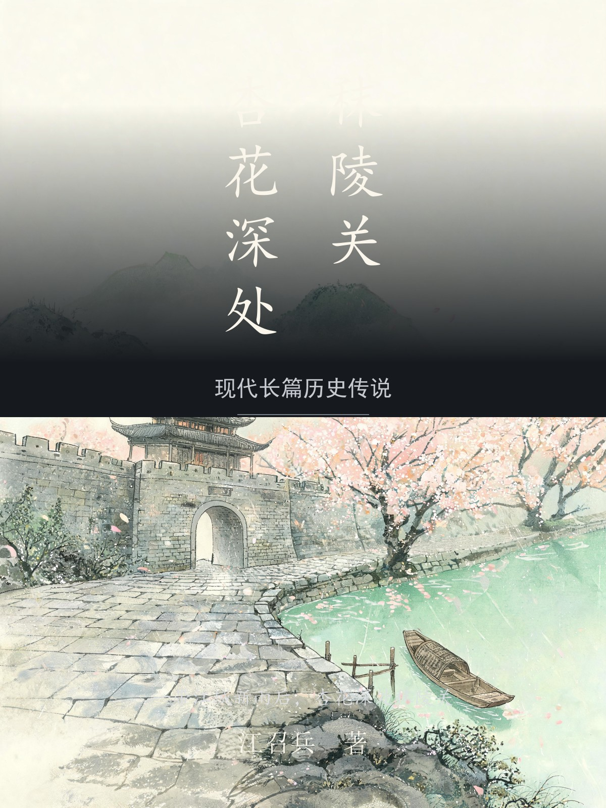

杏花深处秣陵关
现代长篇历史传说
江召兵 著▢
楔子＋四卷六十七章＋尾声二篇 · 二十六万余字 · 已完稿。
全书以汉末建安年间的秣陵为舞台：孙权欲徙治秣陵、筑石头城、改秣陵为建业，八个草根凡人受雇为一个死去的小县尉“造”出一尊神，而这尊神反过来成全了这八个人。从秦代“五百年后金陵有天子气”的望气旧谶，到蒋子文显灵、青溪小姑、白马渡江的传说层累，一一落回市井的人与事。每章独立成篇，可自目录跳读。史料与虚构的交代见文末〈附记〉。传说的背后，是一座城，和城里不肯走的人。
扉页
杏花深处秣陵关
现代长篇历史传说
江召兵 著
一带江城新雨后，杏花深处秣陵关。
气不在山，在香火。
作者简介
江召兵，1979年3月生，湖南郴州永兴人，中共党员，博士，教授，现任南京欧帕提亚信息科技有限公司董事长，兼任西北工业大学、南京航空航天大学、西安交通大学外聘导师。1998年至2008年就读于中国人民解放军理工大学，先后获应用气象学学士、流体力学硕士、桥梁与隧道工程博士学位；其后在上海交通大学从事博士后研究，并作为访问学者赴英国南安普顿大学访学。2017年自主择业，先后创办南京欧帕提亚信息科技有限公司、湖南云数仿真信息技术有限公司和南京驭风数智科技有限公司等。
长期从事人工智能、流固耦合仿真、船舶与海洋工程及军事装备技术研究，主持国家自然科学基金面上项目等国家级项目4项、江苏省基金项目1项、科研院所外协项目20余项；参与南沙岛礁建设、大榭岛浮桥建设、舟山连岛大桥防撞系统等重大工程。获军队科技进步奖4项（含一等奖1项）、中国航海学会科学技术二等奖、长航局科技创新一等奖；2023年获第二届全国博士后创新创业大赛银奖、全国创新创业优秀博士后；入选江苏省“333工程”人才计划、“青蓝工程”人才计划、“创聚江宁”高层次创业人才、长沙市军民融合高层次人才；另获珠海“科创杯”创新创业大赛市外组二等奖、优秀博士论文、优秀博士后、优秀指导老师等。
出版专著《浮体和浮式多体系统流固耦合动力分析》《浮基多体系统水上展开的稳定性计算与试验》，发表论文60余篇，获发明专利及软件著作权多项；另著有面向公众的《不确定年代的生存经济学》《史上最美数学图形》《运气工程学》。
目录
- 楔子 方山断处
- 第一章 钟山夜雨
- 第二章 验骨
- 第三章 倒骑驴的老巫
- 第四章 观气的人
- 第五章 买神
- 第六章 血指
- 第七章 百工
- 第八章 试灯
- 第九章 虫与火
- 第十章 尸变
- 第十一章 楼船
- 第十二章 拆局的人
- 第十三章 腊日
- 第十四章 布衣
- 第十五章 酒食
- 第十六章 县学
- 第十七章 紫气
- 第十八章 大典
- 第十九章 迁都诏
- 第二十章 秦半两
- 第二十一章 迁都
- 第二十二章 立庙
- 第二十三章 玉匣
- 第二十四章 大疫
- 第二十五章 药肆
- 第二十六章 眼线
- 第二十七章 古简
- 第二十八章 舆图
- 第二十九章 士林
- 第三十章 四百年前
- 第三十一章 掘山
- 第三十二章 白马
- 第三十三章 江防
- 第三十四章 石头城
- 第三十五章 暗查
- 第三十六章 秦符
- 第三十七章 江左先生
- 第三十八章 兵民
- 一
- 第四十章 开棺
- 第四十一章 青骨
- 第四十二章 醉话
- 第四十三章 守夜人
- 第四十四章 水眼
- 第四十五章 庙工
- 第四十六章 换陵
- 第四十七章 大火
- 第四十八章 退走
- 第四十九章 无字碑
- 第五十章 青溪
- 第五十一章 庙市
- 第五十二章 封侯
- 第五十三章 石室
- 第五十四章 四时
- 第五十五章 建业
- 第五十六章 守庙的人
- 第五十七章 江上
- 第五十八章 城砖
- 第五十九章 秣陵关
- 第六十章 纸与墨
- 第六十一章 砖名
- 第六十二章 说书人
- 第六十三章 渡口
- 第六十四章 异代
- 第六十五章 旧物
- 第六十六章 人间
- 第六十七章 杏花深处
- 尾声一 渡江
- 尾声二 无字碑
- 附记 史料与虚构
楔子 方山断处
秦始皇三十七年，秋。
方山在北，淮水在南。山不高，顶是平的，四四方方，像谁把一方官印按在了江边。山顶有一池水，天旱不涸，山下的农人说那是山的眼睛。山北面拖着一条长垄，九里有余，土里裹着石，石上覆着土，远看像一条伏着的脊背。长垄东头抵着秦淮的旧道，西头没入江滩。这一条土脊，本地人叫它龙脊。
秋深了，江风一日紧似一日。秦始皇的车驾从会稽北还，沿江西上。江上风大，龙舟的旗子湿了一片，贴在桅杆上，猎猎地抖，抖不出声。到了龙脊北面，车驾停了。
皇帝没有下车。
他坐在车里，隔着竹帘，问随行的方士：气在哪里？
一个望气的人跪在车外，膝下是湿泥。他不敢抬头，抬手指着长垄，说：王气在此。这条垄，自会稽来，过江入吴，聚于金陵。垄是脊，脊在，气就过不去。
皇帝把帘子掀开一条缝。
帘外是山，是水，是芦花。芦花白了，风一过，像一层雪。皇帝的视线落在那条长垄上，看了很久。
他只说了一个字：
凿。
凿的人，是三千刑徒。
刑徒是从会稽一路押来的。有盗铸钱的，有私铸兵器的，有逃戍的，有连坐的。他们赤着上身，肩背晒成了树皮的颜色，也有的晒破了，一层皮搭在另一层上，像没剥干净的字纸。他们拿锸，拿耒，拿木夯，拿绳索。监工的校尉立在坡上，姓赵，脸上一道疤，鞭子垂在手里，听见哪一段慢了，就走过去；走到那段，鞭子不举，只立着，那一拨人便自己快起来。
坑已经挖了七天。
土是红的，石是青的。凿下去，石头里渗出一点水，像人身上破了皮，先见血，后见水。挖出来的土石堆在两旁，堆成了两道矮墙。墙里是坑，坑里是人；人进去，土出来。白日里，这地方只听锸声，不听人声，偶尔有一声闷响，那是石头崩了；石头崩了，就有人被抬下去。抬下去的人，多半是死了，也有没死的，没死的就放在坑外的草席上，等他自己死。
刑徒吃两顿。一顿在辰时，一顿在申时。饭是粟米饭，掺了糠，菜是盐水煮的野菜，见不到油。值夜的刑徒裹着草席，睡在坑沿上，夜里风大，有人睡着睡着就不动了，天亮后被人抬到坡下，挖一个浅坑埋了。埋他的人，下午还得回来凿石头。卢玄有一次跑到坡下看，看见浅坑里露出一只手，手心里还攥着一把土。
卢玄那年十三岁。
他跟父亲卢靖住在离坑三十步的帐中。帐是毡帐，帐门朝南。帐里有一只铜壶，一囊粟米，一领旧裘，一只半旧的玉匣。父亲是方士，替皇帝勘气脉的方士之一。他们不挖土。他们看天，看山，看土里冒出来的气，看早晚的霞色，看井里的水气。父亲说，人是会看的，气是藏不住的，气要动的时候，草木先知道。
帐里还有几卷简牍。父亲自己写的，记的是这一带的山、水、垄、冢、道路。简牍最上面一卷，画着一条弯弯曲曲的线，线的一头写着“会稽”，另一头写着“江”，线中间画了一个圈。圈里写着两个字：金陵。
父亲说，这就是气脉。气从南边来，沿这条线走，走到金陵，停一停，再从金陵分三路出去。一道往东，入海；一道往北，过江；一道留在原地，等人。
简牍最底下还压着半块干饼，硬得像瓦片。父亲画图的时候，卢玄就拿它磨牙。父亲画一会儿，抬头听一会儿外面的动静。坑里的锸声密一阵、疏一阵，疏的时候，是有人抬下去了；再密起来，是另一个人顶上了。父亲说，秦法里有一条：役者死，计其日，不足者，以同伍之人续之。所以死一个，就得有五个人多挖一天。
卢玄问：我们什么时候走？
父亲说：等这口气断。
等什么人？
父亲没有说。
夜里，父亲在灯下磨一柄小刀。刀很小，是刻字的刀，柄上缠着麻线，磨一磨，在袖子上刮一刮。磨到能刮下灯花，才放下。
卢玄问：磨刀做什么？
父亲说：记个日子。
他把玉匣翻过来，匣底朝上，用刀尖在上面刻。一刀，一刀，石粉簌簌地落。玉是老玉，青里透白，刻下去的声音很细，像指甲刮碗。卢玄凑过去看，看见两个字已经刻好：
断处。
父亲刻完，把刀放下，说：睡。
卢玄没有睡。
他躺在席上，听外面的水声。那条水原来不从这里走，是从山南绕过去的。凿开的第三天，坑底见了水；第五天，水就漫过来，顺着新开的道往北去，一路灌进江里。父亲说，这不是水改道，是气改道。水是跟着气走的，气从哪儿断，水就往哪儿走。
半夜，他听见父亲起来，没穿鞋，走到帐外。
卢玄掀开帐角。
父亲站在坑边，月亮照着他的背。坑里黑，坑外亮。他看见父亲从怀里取出那只玉匣，不是白天刻字的那只，是另一只，更小，乌黑，像是从灶膛里取出来的。父亲把匣子放进坑壁的一个石缝里，又用碎石塞住，用脚踩实。踩完了，蹲下去，抓了一把土，撒在碎石上。
父亲回帐时，卢玄闭着眼。
父亲在他席边站了一会儿，说：我知道你没睡。
卢玄睁开眼。
父亲坐下来，声音很低：我们这行，叫守气。
守什么？
气。山有气，水有气，人也有气。气聚了，就出天子；气断了，就出乱世。秦皇帝怕这个，所以要凿。凿断了，天下就太平一阵子。
一阵子是多久？
四百年。
卢玄数了数。四百年，他听见过的最大的数是“十万”，是修陵的刑徒。四百年，比他的命长十倍。
父亲说：气断了，不是没了。断处还在。四百年后，它会从断处再出来。
出来了呢？
父亲没有答。过了很久，他说：出来了，要有人拿一样东西，把它镇回去。
什么东西？
骨头。
什么样的骨头？
父亲看着他，说：一个人的骨头。轻的，清的不腐的骨头。人死了，骨头还立着，那就是天生的镇物。
卢玄问：谁肯把自己的骨头交出来？
父亲说：不用交。把骨头装进该在的地方，它自己知道。
那一夜，卢玄没有睡实。
天快亮的时候，帐外有人说话，是赵校尉：坑底见石门，凿不开。
父亲披衣出去。卢玄爬起来，把父亲白天刻字的那只玉匣拿在手里，翻过来。
“断处”下面，父亲又刻了一行小字。他认了半晌，认出来：
四百年后，有骨来镇。
后面还有两个更小的字，像是刻的时候手抖了：
勿启。
天亮后，坑底传来一声闷响。
卢玄跑到坡上，看见坑底那块长方形的石头裂开了，石面湿得发亮。一股水从石缝里喷出来，喷了半人高。赵校尉在喊：退了！都退了！
人都往坡上跑。父亲没有跑。他站在坑边，看着水，一动不动。水漫过他的脚，漫过他的膝。他伸手，从水里捞起一样东西。
是一根断了的白羽。
方山不产白鸟。江上才有白鸟。卢玄跑过去，父亲把羽毛递给他。
父亲说：收着。四百年后，有人会认得。
卢玄把那根白羽收进怀里，贴着心口。羽毛是湿的，凉的，后来干了，轻得像一口气。
那年冬天，父亲的队伍往北走。走到彭城，父亲病了。病到第三天，他对卢玄说了最后一句话：
匣子不要动。等人。
等人来做什么？
父亲笑了笑：来取骨头。
父亲死在驿舍里。卢玄把他葬在驿舍南面的一片坡上，坟前立了一块木牌，没有写字。他不敢写。秦的法令，方士不得私记气事，写了就是死罪。
卢玄没有动那只匣子。
他带着那根白羽，带着父亲留下的简牍，往南走。后来他有了儿子，儿子又有了儿子。卢家的家法只有三条：一，记下气脉；二，看住断处；三，等一具骨头。
四百年里，卢家一代一代地等。等一个气要出的时候，等一具骨头轻而不腐的人。等到了，就把匣子挖出来；等不到，就把话传给下一个。卢家的男子，有好几个死在“看气”的路上，有的死在江上，有的死在路上，有的死在人家屋后，手里还攥着一张画了一半的图。
这些事，卢家的后人记不全。记不全，就记简上。
简上记的，是一句一句的话。
有一句是这么记的：
“汉文帝三年，方山北垄水退，露出石根。石根下有黑土，土上有白霜。守者往看，归而病，三日死。死前说：气在，勿动。”
又有一句：
“汉武帝元封二年，丹阳郡置。郡吏问方山石匣事，守者答：不知。吏去，守者夜往断处，加石三块。”
再有一句：
“王莽时，丹阳改宣亭，守者携简南走，至江边，船覆，简没于水。守者泅水捞简，捞得十九枚，余皆失。守者坐江边，大哭一日。”
再往后，是东汉。
“光武建武十二年，断处石裂，守者以泥补之。补后三年，方山草木不花。守者疑，掘看，泥中有虫，虫食土。尽去其虫，草木复花。”
再往后，是三国。
“吴大帝黄武四年，守者往看断处，见石上有新凿痕，深三寸。归报其子：有人凿了。子问：是否秦人所为？守者说：秦人凿的时候，我还未生；我生之后，这石就没被人凿过。如今又凿，凿的人不是秦人，是有人知道这石。”
最后一句，是卢望之的父亲写的。
“气将出。骨将至。守者第七代，记。”
传到卢望之这一代，是第七代。
他父亲死的时候对他说：气要出了，就在江东。骨头也会来，是个县尉，姓蒋。
卢玄后来常常想起父亲说的第三句话。
等一具骨头。
他那时候不懂，骨头有什么好等的。
四十年后，他也老了，他才懂。
骨头不是等来的东西。骨头是等来的人。一个人若肯把命放进去，气才能留住。
卢玄死的时候，把这件心事写在一枚木简上，交给儿子。木简上只有一行字：
守得住城的人，才镇得住气。
后来的人念这一段，都念不全。
简上的字，有的被水泡花了，有的被虫蛀了，只剩下一个人名，一个年份，一句半截的话。
可这些半截的话，一代一代传了下来。
传到卢望之这里，他把它们抄成一本薄册子。册子的封皮上，他自己写了三个字：
守者书。
简上最后还有一行，是卢玄自己加的。
他写：守者不必多。一人守住，胜过百人看住。
卢望之的父亲死在那年秋天。
死前，他把卢望之叫到床前，说了三句话。
第一句：这城的气，要活了，在明年。
第二句：活之前，会死一个人。那个人姓蒋。
第三句：他死之后，你得替他守四百年。你守不完全，就交给你的儿子。
卢望之那年五十九岁。
他没有问为什么。
卢家的男人，从生下来那天起，就不问为什么。
他们只问一句：什么时候。
问完了，就往南走。
南边有一座城，城底下有一条断了四百年的脉。
那条脉要人守。
守的人，一代一代，名字都不留。
卢家的后人里，有一个把这三条家法刻在了木牌上。
木牌挂在堂屋的正中。
每月初一，卢家的男人要站在木牌前，念一遍。
念完了，再添一笔：本月看气几回，断处安否。
一笔一笔添下来，添了七代。
到卢望之这一代，木牌上的笔痕已经密得看不清了。
他便另换了一块。
新木牌上只刻了三行字。
上面一行：记气。
中间一行：守断。
下面一行：等骨。
这九字，他刻得很深。
他知道这九个字，要在他手里了结。
卢望之把新木牌挂在堂屋正中，退后两步，看了一会儿。
他想起父亲说过的话：守者不必多，一人守住，胜过百人看住。
他对自己说：卢家的第七代，明日就往江东去。
去了，就不回来了。
卢玄站在堂屋正中，把新木牌上的九字念了一遍。
念完，他往南走。
南边有江。江的南边，有一座城。
那座城的名字，叫秣陵。
那一夜，卢玄没有睡。
他把木牌上的九字，一个字一个字地，抄在了简上。
抄完了，他把简收进袖子里。
窗外的天，慢慢亮了。
天亮了，他往南走。
一路向南，往那座城去。
*（楔子终）*
第一章 钟山夜雨
阿留记得那天的雨。
雨是从午后开始下的。先是零星几滴，砸在屋檐上，把瓦片上的灰冲出一道道沟；后来就密了，密得看不见对面的树。秦淮渡口停了船，船家把篾篷放下，蹲在船头抽烟。县城东头的市却还没散，卖鱼鲊的、卖盐豉的、卖饼的，都把摊子往檐下挪，挪不动的，就扯一块油布盖着。雨打到油布上，嘭嘭地响，像有人在上头敲鼓。
秣陵县衙在秦淮北岸，前后三进，墙是夯土的，墙头长着草。后院有一间柴房，柴房漏了，阿留拿一只破陶盆接水，接满一盆，泼一盆，再接。他不心疼水，他心疼自己刚扫的地，水一泼，地又脏了。
蒋子文站在廊下系鞋。
他是县尉，管捕盗。三十九岁，身量中等，脸黑，左额有一块旧疤，像被人拿指甲掐过。他穿短衣，裤脚扎紧，弓挂在左肩。六个弓手在院子里跺脚，把蓑衣上的水抖下来。一个个都是熟脸：雷五高，孙二矮，郑大胖，周七瘦，吴六脸上有麻子。还有陈平，四十来岁，原是蒋子文军中的旧部，退伍后跟了他，平日话最少，箭法最好。
蒋子文回头，看见阿留。
“你站着做什么？”
“等你回来。”
“等我回来做什么？”
“温酒。”
蒋子文笑了。他笑起来眼角先动，牙很白。
“三碗。”他伸出三根指头，“多的没有，你这小崽子手抖。”
阿留说：“我不抖。”
“上回温酒，你把壶嘴磕掉一个角。”
“那是壶旧。”
“壶旧，人也旧。”蒋子文说，“嘴倒硬。”
他从怀里摸出一样东西，塞进阿留手里。是一块木牍，两片，用麻绳拴着，边角磨得发亮。
“这个，收着。”
阿留低头看。他不识字，只认得上面画着几道竖线，像雨。
“什么？”
“回头给你阿湘姐。”蒋子文说，“别叫人看见。”
阿留把木牍揣进怀里。木牍是热的，带着蒋子文身上的酒气。他问：“你去哪儿？”
“钟山北。有人报，山里有贼，劫了两拨客商。”
“贼多吗？”
“不知道。”蒋子文把弓带在肩上，紧了紧，“追到再说。”
“那几个哥哥都去？”
“都去。”蒋子文回头看了看院子里的人，“吃了人家的酒，总得替人家跑一趟。”
六个弓手嘿嘿地笑。雷五说：“县尉，回来还喝不喝？”蒋子文说：“回来再说，先把贼追了。”陈平在旁边系箭囊，没说话，只把箭一支一支抽出来，用袖子擦干。
阿留跟在蒋子文后头，走到院门口。
“你回去。”蒋子文说。
“我送到门口。”
“送什么，又不是不回来。”
阿留站住了。蒋子文走到院门口，停下来，回头看阿留。
“雨大，别在门口等。柴房里等。”
阿留说：“好。”
“温三碗。”
“知道了。”
蒋子文带着六个弓手出了县衙，往东北去。雨把他们的背影吃掉，先吃脚，再吃腿，最后只剩蓑衣的尖。
阿留站在柴房门口，水从屋檐上挂下来，像一道帘子。
他等了一个下午。
起先他还有事做。他把柴房里的柴码了一遍，长的靠墙，短的码在灶边；把接水的陶盆换了三个地方，还是漏；把灶台擦了，把铁锅刷了。做完这些，雨还没停。他坐在门槛上，看雨落在院子里的水洼里，一个泡起来，破掉；又一个起来，破掉。
天擦黑的时候，县衙里有人说话。是杂役老周在跟做饭的何嫂说：钟山北出了事，像是死了人。何嫂说：谁死了？老周说：不知道，听说是追贼的。
阿留竖起耳朵听。他想问，又不敢问。他跑到院门口，雨大，街上没人。县衙前两盏灯已经点起来了，灯罩上蒙着水汽，黄黄的一团。
天黑了，也没人回来。
柴房的火是阿留生的。他用的火镰是蒋子文给他的，燧石上有一道裂纹。他打了七八下，火星落到干草上，先红，再亮，再烧起来。他把火拨小，留一堆炭，架上几根湿柴，烟就大了，熏得他眼睛疼。
火镰是蒋子文给的，名字也是蒋子文给的。两年前，阿留在秦淮渡口讨饭，冬天，河水浅，露出滩上的破船板，他就钻在船板底下睡。蒋子文追一个偷鸡的，追到渡口，看见他，问他：你爹呢？阿留说不知道。问他：你娘呢？阿留说不知道。问他叫什么？阿留说叫阿留。蒋子文说：那你就叫阿留，跟我走。阿留就跟他走了。后来蒋子文教他打火镰、跑腿、认几条街的路，还教他一句：有人给你饭，你要记住；有人打你，你也记住，别记反了。
夜里，雨更大。
阿留坐到半夜，饿得慌，从灶上摸了一个冷麦饼，掰一半，另一半包起来，揣进怀里，留着给蒋子文。
他又听了一会儿雨，听见更鼓。三更。四更。
他困了，头一点一点的，忽然听见有人敲门。
不是敲。是撞。
阿留跳起来，拉开柴房的门。雨扑了他一脸。门外站着蒋子文。
只有他一个人。
弓不在肩上，挂在手里，弓弦断了，弦的一头拖在泥里。短衣湿透，贴在身上。他的脸上有一道血，从左额的旧疤上流下来，流到下巴，滴在胸口，把湿衣染得更黑。
“留儿。”他说，“扶我一把。”
阿留扶他进屋。
蒋子文靠着墙坐下，把断弓放在一边。阿留去倒水，水是冷的；他又去拨火，把炭拨旺。屋里慢慢有了亮。
“贼呢？”阿留问。
“跑了。”
“六个哥哥呢？”
蒋子文没有答。他低着头，看自己的一只手。那只手上全是泥，泥里攥着一样东西。
是一缕头发。女人的头发，黑的，湿的，缠在他指头缝里。
阿留看见了，没有问。
蒋子文把那缕头发解下来，放在膝上，看了一会儿，忽然笑了。
“留儿，你说，追贼追出个女人来，算什么？”
阿留不知道说什么。
“我追到半山，”蒋子文说，“那人不跑了，站住等我。我近了，看清了，不是贼。她穿白衣，头发散着，站在松树底下。我问她话，她不应；我又问，她往后退。我伸手去抓，她一转，我脚下一滑，”
他停了停。
“头撞在石头上。”
阿留看见他额上的伤。伤不深，血却止不住，一滴滴往衣襟里渗。
“六个哥哥呢？”阿留又问。
蒋子文这一次答了。
“散在山上。”他说，“我喊他们，他们不应。雨大，听不见。”
“他们回去了？”
“也许。”
阿留看见他按在膝上的手，手背上都是划痕，像在树丛里穿了一趟。
“我去叫医。”
“不用。”
“血流得太多。”
“流这么多血，够本了。”蒋子文说，声音比刚才轻，“我这一辈子，喝过酒，睡过觉，打过人，也被人打过。够本。”
阿留跪在他旁边，拿袖子去捂他的额。血从指缝里渗出来，热的。
蒋子文忽然说：“留儿，你记住一句话。”
“你说。”
“我啊，骨头清。”他笑了一声，笑得咳起来，咳出一口血沫，“死了，当神。”
阿留说：“谁说的？”
“城里那个会看星星的。”蒋子文说，“姓沈，是个醉鬼，欠我三斗酒钱。上个月他喝多了，拉着我的手，看了半天，说我骨清，死当为神。我还打了他一拳。”
“他胡说。”
“胡说也是话。”蒋子文说，“人活着，听得进的话不多。有人肯对你胡说，也算不错。”
他的头往后靠，抵着土墙。雨声在屋顶上响，哗哗的，像有人在上面走。
“阿湘呢？”他问。
“在家。”
“她那个脾气，像阿娘。”蒋子文说，“我欠她一副嫁妆。你替我跟她说，柜子里有两匹布，是我攒的，给她。别叫人拿走了。”
“我不认得布。”
“青的，白的，叠在最底下那口箱子里。”蒋子文说，“她认得。”
阿留点头。他是蒋子文两年前从秦淮边捡回来的。捡回来的时候，蒋子文问他姓什么，他说不知道；问他叫什么，他说叫阿留。蒋子文就说：那你就叫阿留，跟着我。
“还有。”蒋子文把手伸进怀里，摸了半天，摸出一枚铜钱，放进阿留手心，“你收着。别看它破，是秦钱，比五铢钱老。”
阿留看那枚钱。钱是黑的，边不圆，上面的字他不认得。
“够本的。”蒋子文又笑，“我这条命，值几个钱？”
阿留哭了。
他哭的时候不出声，只有肩膀抖。蒋子文拿手背碰了碰他的头。
“哭什么。我又不是现在就死。”
他确实不是现在就死。
他撑到了天亮。
那一夜，他断断续续说了很多话。说县东有一家酒肆，新酿的酒好，他还欠三斗钱，叫阿留记着，日后有钱替他还，没钱就算了；说县衙后院那棵枣树，明年该结了，结了给阿湘送一篮；说他小时候在广陵，家里有一口井，他娘不让他趴井沿，他偏趴，掉下去一回，被他爹倒提着脚拎上来；说钟山北的那条道，冬天贼最多，明年要修个亭，亭边上种两棵柿子树，过路的人能歇脚。
阿留听着，一边听一边给他捂血。
血止不住。蒋子文的脸色一点点变白，像纸浸了水。
天快亮的时候，雨小了。
蒋子文忽然睁开眼。
“留儿，”他说，“你把门开开。”
阿留去开门。门外是灰白的天，湿的坡，坡下是秦淮，水涨了，黄了。远处的钟山像一块墨，被雨洗得发亮。
蒋子文看着门外，看了很久。
“有人。”他说。
阿留顺着他的目光看。雨里空空的，只有几株枯松。
“没有人。”
“有。”蒋子文说，“撑着伞。”
阿留又看。还是没有。
他回头看蒋子文。蒋子文已经不看门外了。他靠回墙上，眼睛半睁着，说了一句极轻的话，轻得阿留后来想了十几年也不敢确定自己听全了没有：
“那……就……走吧。”
阿留伸出手，去探他的鼻息。
没有了。
雨又大起来，砸在门外的水洼里，一个一个地碎。
阿留在门口站了一会儿，忽然跑出去。他要喊人。县尉死在钟山北的山神庙里，不能没人知道。
他跑出十几步，猛地停住。
雨幕里，坡下，站着一个人。
那人撑着一把黑伞，看不清脸，穿一身深褐色的衣服，像一根枯树桩。他没有动，就那么站着，朝着山神庙。
阿留喊了一声：“谁！”
那人不答。
阿留往后看了一眼，庙门黑着，蒋子文坐在里面。他再回过头，坡下已经没人了。
雨水顺着坡往下淌，把刚才站着的地方冲得干干净净，只剩一个浅浅的泥印。
阿留站在原地，觉得怀里那块木牍烫得厉害。
他给它按了按，转身往县城跑。
阿留跑回县城的时候，城门已经关了。
他拍门，喊陈平的名字。
门里没人应。他又拍，拍到手心疼。过了很久，门楼上有个人探出头来，问是谁。阿留说是庙里的阿留。
门上的人说，夜里有令，城门不开。
阿留说，蒋县尉死了。
门楼上静了一会儿。
然后听见门闩响。
陈平第一个出来。他披着甲，头发散着，脸上的雨还没擦。他抓住阿留的肩，问人在哪里。阿留说在钟山北坡。陈平回头喊人，六个人拿了火把、抬了门板，从城门里冲出去。
雨还在下。
阿留跟在最后。
上山的路滑，火把照不了多远。陈平走在最前面，一脚踩空，又爬起来。他一句话也没说。
到了坡上，蒋子文还在那里。
六个人围过去。陈平蹲下，把手放在蒋子文的额头上，放了很久。然后他站起来，回头对阿留说：你去山下，喊个人来，说县尉死了，让县里开义庄。
阿留站着没动。
陈平说：去。
阿留就往山下跑。
跑到半坡，他回头看了一眼。火把围成一圈，照亮一小片湿土。陈平跪在中间，背对着他。
那一圈火光，阿留记了很久。
陈平在坡上守了一夜。
天亮的时候，他把蒋子文的衣裳理好，把额上的泥擦掉，把那半张木牍从阿留手里接过去，看过，又还给他。
陈平说：这个你拿着。县里要问，我来答。
阿留说：县里要问你什么。
陈平说：问我为什么让县尉一个人上山。
阿留说：那我怎么说。
陈平说：你就说，县尉的规矩，是他自己定的。
陈平把蒋子文的尸身抬下山的时候，天已经大亮。
山道上来了很多人。有挑水的，有赶集的，有刚从地里回来的。人越聚越多，跟着门板走。
没人说话。
走到城门口，守门的兵士把枪放下来，让开路。
陈平听见有人在人群里小声说：蒋县尉死了。
另一个人说：怎么死的。
前一个人说：不知道。
陈平没有回头。
他心里说：我知道。可我不能说。
陈平回到城门口，天已经亮了。
他把枪靠在门后，坐下，从怀里摸出一块干饼，掰了一半，放进嘴里嚼。
嚼着嚼着，他把饼放下。
他对自己说：陈平，你从军的头一年，蒋县尉是你的队长。他救过你。这一回，你没救他。
他说：我记住了。
*（第一章终）*
第二章 验骨
铁六是被人叫醒的。
天还没亮，门板被拍得直响。拍门的是县衙的杂役老周，嗓子劈了：“铁师傅！出事了！县尉死了！”
铁六在被窝里坐了一会儿，才想起县尉是谁。
蒋子文。上个月还来他铺里赊过一副薄棺，说给县东一个孤老收殓，钱下月给。铁六当时说，你一个县尉，替孤老赊棺，俸禄够么？蒋子文笑，说不够就欠着，人死了总不能拿席子卷。
铁六披衣起来，摸着墙走。他右脚短一寸，走起来一高一低，是七岁那年落下的。那年夜里，师傅家来了生人，师傅把他抱起来塞进后院的废井里，说别出声。他在井底坐了一夜，断了一条腿骨，接歪了。师傅说，仵作的徒弟，腿脚不便，是好事，跑不动，才肯蹲下来看。
他挑起担子出门时，天边刚有一线白。
县城西北角，三间破屋，是义庄。一间停尸，一间堆棺，一间是他干活的地方。院里立着几口还没上漆的白皮棺材，被夜露打得发潮。蒋子文的尸首停在中间那间，身下垫一张席，席上摊白布。阿留蹲在墙角，眼睛肿得像两颗桃，怀里抱着一只破陶盆。
县令没来。来的是书吏曹椽，白白净净，背有点驼，袖口一处墨渍，手里拎着一只木匣。
“铁师傅。”曹椽拱手，“县令说了，验仔细。”
“县令呢？”
“县里事多。”曹椽说，“郡里昨日来了文书，催户口簿。县令一早就去了驿亭。”
铁六没有问。他把担子放下，把袖子挽上去。
他先看人。
蒋子文仰面躺着，短衣未换，泥已干成壳，一动往下掉。左额有一处创口，约一寸二分，血糊在眉毛上。伤口边上有一块青，青得发紫。嘴闭着，嘴角有血沫，已干。脸是灰的，像蒙了一层土。铁六伸手，掀开他的眼皮看了看，又把手按在他颊上试了试。
“凉透了。”他说。
“什么时候死的？”曹椽问。
“昨夜三更上下。”铁六说，“人死，先凉的是手脚，再凉到心口。他心口也凉了，凉了有一阵。”
他低下头，看创口。
创口斜着，从左前上方撞进去，边缘不齐，有一道石屑擦过的白痕。他伸出两指，按了按创口两侧的骨。
“骨裂。”他说。
“重不重？”
“裂到眼眶下。”铁六说，“裂得不深，可巧在太阳穴上。一是骨裂，二是血。血进了头，人就不中用了。”
他把尸首翻过来，看后脑、看颈、看背。后脑完好。背上无伤。翻回来，看手。
十个指头，指甲缝里干干净净，没有泥，没有草屑。指关节不红不肿，无破皮。铁六的眼睛在指甲上停了一停。
“怎么？”曹椽凑过来。
“无事。”铁六说，“再看。”
他看耳。耳道里干净。他看口。撬开嘴，看了舌，看了牙，牙关没有咬破。他看膝，膝上两块厚茧，是常年站的；看脚底，脚底一层薄茧。
“他一辈子站得多，走得多，跑得少。”铁六说。
“你连这个也看得出来。”
“看鞋。”铁六说，“鞋底磨的地方，跟脚底一样。”
鞋是麻鞋，底子磨得薄。两只鞋底磨得一样深，磨损均匀，不像跑过山路的人，若在山石上跑，前掌会戳破，后跟会偏磨。
他又看衣襟。血从额上流下来，流过下巴，滴在胸口。血迹是一条直线，从领口往下。
铁六直起腰。
他站在尸首旁边，想了一会儿，把尸首扶起来，靠在自己肩上。尸首软，头一歪，搭在他脖子上。铁六让他靠了一会儿，又慢慢放回去。
“曹书吏。”他说，“县尉不是跌倒撞的。”
曹椽的脸白了一下：“你说什么？”
“人若是滑倒，头撞石上，撞的那一下就晕了，血就顺着脸往下淌。可蒋县尉的血，是从下巴滴到胸口的，直着滴下来。人站着，或者坐着，血才这样滴。滑倒的人，血是横着、斜着淌的。”
“那……那是撞完之后又站起来了？”
“撞完能站起来的人，不会死。”铁六说，“他撞上去的时候，已经知道要死。”
曹椽不说话了。
铁六又看那处伤。他拿竹签比了比，又拿手在空中比了一个石头的棱角，比了两次，摇了一下头。
“这个伤，”他说，“像是人自己往上撞的。”
义庄里静了一下。
墙角传来一声抽气。铁六回头，看见阿留不知什么时候站起来了，两只手攥着衣角，嘴唇发白。
铁六看了他一眼，没有再说下去。
“曹书吏。”他把竹签收进袖里，“爰书怎么写？”
曹椽摸出木牍和笔，沾了墨：“依铁师傅看呢？”
“就写：为贼所伤，伤在太阳，血逆而卒。”
“就这几句？”
“验尸的话，多一句都是祸。”铁六说，“你写，我画押。”
曹椽照写。木牍上的字小而密，写完吹了吹，把牍子递过来。铁六不识字，只认得自己的名字；他接过笔，在末尾画了一个六道横。
“薄葬。”曹椽把牍子收好，又说，“县令吩咐的，不报郡，不入官殓，今日就收敛。”
铁六点头。
“还有，”曹椽从袖里摸出一只小布囊，塞进铁六手里，“辛苦钱。”
布囊沉。铁六捏了捏，至少二百钱。
“县令客气。”
“铁师傅，多的话不必说。”曹椽的声音低了一层，“县尉是死在追贼路上，这话传出去，对县衙好，对蒋家也好。你验你的，我写我的。”
铁六把钱收进袖子：“我懂。”
曹椽走了。阿留还站在墙角。
铁六回头看他：“你还不走？”
“我看我哥。”
“人都凉了，有什么好看。”铁六说，“回去告诉你阿湘姐，今日申时入殓。薄棺，一两银子。我赊他一副，算了。”
阿留没有动。
“铁师傅，”他忽然说，“我哥不是自己撞的。”
铁六在收拾家伙的手停了一下。
“你怎么知道？”
“他回来的时候，跟我说，他追一个影子，脚下滑了。”
“那不就对了。”
“可他的弓弦断了。”阿留说，“弓弦是按在弓背上的。他要滑倒，弦怎么会断？”
铁六直起腰，看了这孩子很久。
“阿留。”他说，“你几岁？”
“十三。”
“十三岁的人，别管二十岁的人不该管的事。”铁六把工具袋系好，“你哥死了。活着的人，先想怎么活。”
阿留没有再说。
铁六走到门口，回头看了一眼蒋子文的尸首，忽然道：“阿留。”
“嗯。”
“你哥身上，可有铜钱？”
阿留从怀里摸出一枚：“给了一枚。”
铁六接过，看了看。
秦半两。篆文，字口深，边沿粗，钱的方孔里还带着一线绿锈。这不是本朝钱。本朝行五铢，秦半两早已不使，如今只在古墓里、废井底、豪强的库房里见得到。
“这钱哪来的？”
“不知道。”阿留说，“他临死前给我的，说别看它破，是秦钱。”
铁六把半两钱翻过来。背面是平的，什么也没有。他用指甲刮了刮边缘，刮下一点绿，指腹上留下一道淡淡的绿痕。
“你收着。”他把钱还给阿留，“别给人看。”
阿留点头，跑了。
铁六一个人站在义庄里，把席子卷起来，准备扛去棺铺。席子底下，落着一样东西。
又一枚秦半两。
跟那枚一模一样，同样的黑，同样的绿锈。
铁六蹲下去，四下一看。义庄的地是夯土，扫得干净。这枚钱就在蒋子文头边三尺，压在席角下。他进进出出验了半个时辰，才看见。
他把钱捡起来，掂了掂。
“秦时有一部律，”他自言自语，“官长横死，须三验。”
他想起幼年时，父亲在灯下教他看一本抄本。抄本有十四页，纸已黄脆，边角用绢裱过，上头记着验骨的规矩。父亲说，那是秦人的东西，杀人要验，气绝也要验。秦人验骨，验到骨头里，不像如今，只看面上有没有伤。父亲讲这些的时候，总要先闩门，把灯拨小。
铁六把半两钱收进贴身衣袋，跟自己的那枚旧钱放在一处。
他锁了义庄的门，又回来。他在尸首旁边站了一会儿，伸手，用指节轻轻敲了敲蒋子文的额骨。叩，叩。声音很清，像敲一只空碗。他又敲自己的手背，闷的。
“骨轻。”他说，声音很低。
父亲教他验骨的时候说过：骨有轻有重，重者浊，轻者清。清而不腐的骨头，百年后敲起来还是这个声。他那时不信。现在他信了一半。
他把白布重新拉平，退出来，把门锁上。
申时，蒋子文入了棺。
棺是薄板，松木，上了黑漆。阿留来了，蒋湘也来了。蒋湘穿一身未染色的麻衣，袖口磨破，头发用一根木簪挽着，很瘦。她站在门口，看着棺盖合上，没有哭。
铁六拿了把钉子，问：“钉不钉？”
“钉。”蒋湘说。
“你哥说过，死后不入土，先停七七四十九天，等事情理清了再葬。”铁六说，“要不要停？”
蒋湘看着他：“理清什么？”
铁六没有答。
她也没有再问。
钉子一颗一颗钉下去，铁锤的声音在义庄里响，很闷。
钉到最后一颗，天已经黑了。铁六关了义庄的门，回到街对面的酒肆。
酒肆里人不多。他要了一碗酒，一碟盐豆。刚坐下，听见邻桌有人说话。
“听说了吗，县尉死了。”
“追贼摔死的。还说是自己撞的，怪。”
“撞死的？我听说额上那么大一个洞。”
“县尉那个人，硬气。前年西市打架，他一个人按住四个。”
“人硬，命不硬。”
“他家里那个妹子，还没嫁人吧？”
“没。那脾气，谁敢要。”
铁六没有抬头。
他喝了一口酒，眼睛扫过店里。角落里坐着一个年轻人，青布衫，瘦高个儿，面前一只酒碗，已经空了。年轻人正把一块木牌挂在腰间，像是算卦的。
铁六认得那个腰牌。前些日子，这人在城南替人相宅，说是会望气。来酒肆喝过两回，两回都赊账，都是蒋子文替他付的。
年轻人听见邻桌的话，手一抖。
酒碗从桌上滑下去。碎了一声。
他弯腰去捡，捡起来，放在桌上，用袖子擦了擦手，转身出了门。铁六看见他出门时，肩膀绷得很直。
铁六把剩下的酒喝完，把碗一推。
他要回家了。回去把这枚秦半两跟家里那本抄本里的一页对一对，那页上画着一串钱，钱的旁边，写着两个字。
那两个字，他记得父亲教过，是“镇”字和“气”字。
铁六走出义庄的时候，巷子口站着一个人。
是蒋湘。
她穿着一身素色的衣裳，头上没有插东西，手里提着一只小布包。雨刚停，巷子里的水还没退，她的鞋湿了一半。
铁六站住。
蒋湘说：验出来了。
铁六说：验出来了。
蒋湘说：怎么死的。
铁六说：额上有一处伤。一次撞的，撞在石头上。
蒋湘说：还有呢。
铁六说：没有别的伤。手上没有争过的痕，衣服上没有撕过的口子。
蒋湘说：那他是被人推的。
铁六说：姑娘，这个我不说。我只说骨头。
蒋湘看着他。
铁六说：骨上有伤，一次。骨上没有别的。
蒋湘说：一次，也算杀。
铁六没有说话。
蒋湘把布包往怀里收了收，说：我知道有这一日。
她说完，转身就走。
铁六在她的背后说：姑娘，你哥哥屋里，有一卷木牍。那木牍，我看不懂，可我知道那不是仓里发的东西。
蒋湘的脚步慢了一下。
她没有回头。
铁六看着她走到巷子尽头，看见她把布包换到另一只手上，看见她的肩在动，像是在哭，又像是在忍。
巷子里的水，慢慢退了。
铁六回到铺里，把抄本翻到那一页。
那一页上画着一串钱，钱的旁边写着两个字。字是父亲的笔迹。
他把铁六两个字看了许久。
父亲教他认字的时候说过：这个字念气，气是活的，活的就可能走。走了的要引回来，回来了的要留住。
铁六合上抄本，把它放进柜子最深处。
他在柜子前站了一会儿，说：爹，这城里来了一个找骨的人。
铁六合上抄本，吹了灯。
黑暗里，他坐在铺子里，听着外面的风声。
风从钟山那边过来，带着雨的气味。
他忽然想：这城里，怕是要出事了。
他说不清要出什么事。
他只是知道，这一回死的不是一个县尉。
死的是一个要拿自己的骨头替这城镇气的人。
而这样的人，一辈子遇不上一个。
铁六睡了一会儿，天就亮了。
他起来，把铺门板一块一块卸下来。
街上有人在扫水。
他站在门口，看着街上的水往低处流，流进沟里。
他对自己说：水往低处流，人往信处走。
这话说得像是老人说的。他自己也不知道从哪里听来的。
铁六合上灯，睡了。
睡前他心里说：明日还要验一具尸。这一次，验的是活人的心。
*（第二章终）*
第三章 倒骑驴的老巫
姜媪是倒骑着驴进蒋家院子的。
驴叫阿灰，比她小三岁，牙口不好，走起路来一颠一颠。她坐在驴背上，面朝后，一手抓着驴尾巴，一手拎着一只竹篮。篮里是两升粟米、一叠黄纸、三根香。
她倒骑着驴，是因为驴胆子小。东街口那家饼铺的王老头说，驴子看见了前头的车马就惊，倒坐着，它看不见，就安稳。姜媪便倒骑了二十年。街上的孩子见她就喊：张果老来了。她也不恼，回一句：我要是张果老，先把你爹的驴借来骑。
蒋家院子里已经站了几个人。邻里来吊丧，送米的、送布的、送柴的，都站在檐下，说话声音压得很低。院角有一口大缸，缸里是染过布的蓝水；西头还有两口小染缸，浮着一层沫。东头一棵枣树，叶子落光了，枝上挂着一条白幡。白幡是借的，边角有一个补丁。
姜媪从驴背上下来，把驴拴在枣树上。
“阿湘。”她喊。
蒋湘从屋里出来。
她穿麻衣，袖口卷着，手上还沾着蓝。看见姜媪，她叫了一声“姨”，声音平平的。
“你哥呢？”
“在义庄。申时入的棺。”
“入棺了？”姜媪把篮子往地上一放，“怎么不等我来看看？我是他姨！”
“天冷，等不得。”
姜媪觉得这丫头在堵她，又觉得她说得也对。她弯腰把香和黄纸拿出来，往灵位前一放。灵位是一块木板，上头用墨写了“亡兄蒋子文之位”七个字，字是蒋湘写的，笔画很硬。
“哭也没哭一场？”姜媪问。
“哭了。”蒋湘说，“半夜哭的，没人看见。”
姜媪没话了。
她围着灵位转了一圈，看见灵前的供物：一碗麦饭，一碟盐豆，三只鸡子，还有一小碟不知道谁送来的鱼鲊。按秣陵的老规矩，人刚死，要先招魂，再饭含；家里穷的，招魂就在屋顶上喊三声名字，饭含用米，不用贝。她摸了摸碗沿，问：
“招魂招了没有？”
“招了。”蒋湘说，“阿留在屋上喊的。”
“喊了叫得回来？”
蒋湘没有答。
姜媪从腰上摘下小鼓，用手指点了点鼓面，鼓是干的，绷得紧。她在这县城跳了三十年神了。东街有丧事，西街有病人，谁家孩子夜哭，都来叫她。她跳神的时候穿一件青色深衣，系五色线，鼓敲得急，脚跺得响，嘴里念众神的名。念得最多的是蒋侯，蒋侯是她本家，虽然她自己也不大说得清是哪一支的。
“阿湘，我给你哥做一场法事。”她说，“不收钱，收一斗米。”
“不做。”
“怎么不做？”
“我哥不信这个。”蒋湘说，“他生前最烦你跳神。有一回你在东街跳，他路过，站那儿看了半天，回头跟我说：你姨跳得比唱的好。”
姜媪把鼓收起来，脸上有点热。
“他那是夸我。”
“他是笑话你。”蒋湘说，“姨，你少装两回神。我哥听不见了。”
姜媪站在那里，忽然觉得鼻子发酸。她用力吸了一下，说：“你这孩子，嘴跟你娘一样。”
蒋湘没有接话。
姜媪想起蒋子文小时候。蒋子文七岁上死了爹，他娘带着他投奔姜媪，在姜媪家住了三年。姜媪那时刚出师，跳一场神挣几升米，养两张嘴。蒋子文吃不饱，就去河边摸螺蛳，摸回来一兜，姜媪煮了，三个人围着锅吃。他那时候就黑，瘦，额头就有一块疤，是爬树掏鸟窝摔的。后来他娘改嫁，把他带走了；再后来他当了兵，回来当了县尉。他当县尉第一年，就给姜媪买了一头驴。
那头驴就是阿灰。阿灰那时还小，毛是灰的，牙口好，现在老得只剩牙床了。
来吊丧的人陆续走了。送布的魏家婶子把布往堂屋一放，说：两丈粗麻，别嫌薄。送柴的屠户娘子说：柴在檐下，湿的，先晾一晾。亭长赵奉拎着一串纸钱进来，在灵前烧了两张，说：县里的意思，抚恤的事慢慢办。说完就走了，连水也没喝一口。
县衙也送了二百钱来，用麻绳串着，放在灵前。钱是新五铢，边磨得圆润。何嫂从厨房探头看了一眼，小声说：二百钱，薄葬也不够买口好棺。
姜媪听见了，没有作声。
天擦黑，院子里只剩姜媪和蒋湘，还有阿留。阿留蹲在枣树下，把蒋子文那双湿靴翻过来，往靴底上吹气，吹一下，看一会儿，再吹。
“你吹靴子做什么？”姜媪问。
“我哥的鞋底磨得匀。”阿留说，“他跑了一辈子路，鞋底磨得匀。”
姜媪不懂这话。
她进了堂屋。堂屋里空，一张矮几，一张席，两口箱子。她打开靠墙的那口箱子，里头是两匹布，一匹青，一匹白，叠得整整齐齐，布下压着两只新纳的鞋底，针脚很密。
她认得这布。蒋子文上个月来她家喝酒，喝到半醉，说：我攒了两匹布，给阿湘做嫁妆。
那时候她还笑他：你一个县尉，攒两匹布，也好意思说出口。
蒋子文说：县尉的俸禄，一半请弓手喝酒，一半还债。剩不下。
她当时说：那你就别请弓手喝酒。
蒋子文说：不请他们喝酒，他们就不跟我去追贼。
她又说：那你别给孤老赊棺材。
蒋子文说：姨，人死了连口薄棺都没有，我看见了，夜里睡不着。
姜媪把箱子合上，在箱盖上坐了一会儿。
“阿湘，”她朝院里喊，“你哥那两匹布，你收好了。”
院里没有回话。
过了一会儿，蒋湘进来，手里端着一碗粥。
“姨，你喝。”
“我不喝。”姜媪说，“你喝。你几天没吃了？”
“两天。”
“两天没吃，还硬得像根棍子。”姜媪把粥接过来，塞回她手里，“吃。吃了才有力气办你哥的事。”
蒋湘低头看粥，看了半天，喝了一口。
姜媪看着她喝，忽然说：“阿湘，你哥死前，可跟你说了什么？”
“没有。”
“跟阿留说了什么？”
“阿留说，他讲了半宿话。讲酒，讲枣树，讲他小时候趴井沿。”
“没讲别的？”
“阿留还说，他给了阿留一块木牍，让带给我。”
姜媪的眼睛亮了一下：“木牍呢？”
“在我这儿。”蒋湘说。
“写的什么？”
“我不认得几个字。”蒋湘说，“阿留也不认得。等我请人看。”
姜媪说：“我认得字。我看看。”
蒋湘看了她一眼，从怀里摸出那块木牍，放在矮几上。
木牍两片，麻绳拴着。姜媪解开绳子，把木牍摊开。字是隶书，写得急，笔画收不住。她看了半天，只认出一半。
“……水……守……莫……”
“什么？”蒋湘问。
“字太潦草。”姜媪说，“我看不全。你请个读书人看。”
她把木牍推回去。蒋湘重新收进怀里。
“姨，”蒋湘忽然说，“我哥给阿留的铜钱，是秦半两。”
姜媪的手停在半空。
“秦半两？”
“阿留给我看了。那种钱，不流通的。”
姜媪没有接话。她想起蒋子文一个月前问她的那句话，当时她只当是醉话。
姜媪走的时候，天已经黑透了。
阿灰在枣树下打了一个响鼻。她解开缰绳，倒骑上去。驴子认得路，不用赶，自己往东走。
走到青浦桥头，驴停了。
姜媪抬头。
桥头站着一个人。
那人撑一把黑伞，穿一身深褐色的衣服，很瘦，胡须是白的，垂到胸前。他站在雨后的水汽里，像一截从水里捞出来的老木头。
“姜媪。”那人说。
姜媪心里一紧。她在这县城跳了三十年神，认得大半条街的人，不认得这个人。
“你是谁？”
“姓卢。”那人说，“看风水的。”
“看风水看到桥头来了？”
“我找你有事。”那人从袖里取出一只布囊，递过来。
姜媪没有接。
“你先说事。”
“蒋家的姑娘，”那人说，“可有婆家？”
姜媪把缰绳攥紧了。
“没有。”她说，“不嫁。”
“为何不嫁？”
“她哥刚死。再说，这孩子的脾气，嫁谁祸害谁。”
那人笑了一下，笑得很轻，像风吹了一下衣角。
“她哥死前，”他说，“可留下什么话？”
“他喝多了，说了一堆胡话。”姜媪说，“什么骨清，什么当神。醉了的人，话跟屁一样。”
那人的眼睛动了一下。
“还有呢？”
“没有了。”姜媪说，“你到底要做什么？”
那人把布囊放在驴背上。
“三天后，我还来。”他说，“你替我把蒋家姑娘看住，别让她出门。”
“你凭什么差遣我？”
“凭这个。”那人伸手指了指布囊。
姜媪低头看。布囊口张着，里头是钱。不是五铢。钱色黑，比五铢大，边沿粗。
她认出来了。这是秦半两。前朝的古钱，如今能换一斗米一枚，城里有几家豪强专门收这个。
“你拿这种钱打发我？”姜媪说。
“这种钱，”那人说，“比五铢值钱。”
“值钱的东西，不会白给。”姜媪说，“你到底要蒋家什么？”
那人看着她，看了很久。
“要她哥一样东西。”他说，“那东西，本就是他答应给的。”
“什么东西？”
“骨头。”
姜媪以为他说的是亲骨肉的意思，愣了一下，随即明白，他说的就是骨头。
“你是个疯子。”她说。
“不是疯。”那人说，“是等。我祖上等了四百年，轮到我，不能再错。”
姜媪想问，那人已经转身走了。雨后的水汽一收，他走出去十几步，身影就淡了。姜媪听见伞骨上的水珠一路滴下去，滴到石板上，一声一声，越来越远。
她在桥上坐了半天。
回到家，她把布囊倒在神案上。钱滚出来，一共十二枚，黑乌乌的一堆，把神案前的三根香映得发绿。
她数到第七枚，手停了。
第七枚钱的方孔里，塞着一小卷东西。她拿簪子挑出来，是一缕头发。
女人的头发。
姜媪的手抖了一下。
她想起蒋子文出殡那天，阿留说的那句话：我哥回来的时候，手心里攥着一缕头发。
她还想起另一桩事。蒋子文十六岁那年，姜媪替他跳神收魂。她跳了半宿，魂没收到，倒听见一声驴叫；她从神案上起来，看见院门外立着一个人，穿的也是深褐色，脸看不清。那年她三十出头，还以为是过路人。
现在她明白，那不是过路人。
她把头发放回钱的方孔里，又看了看那堆秦半两，想起蒋子文一个月前在她家喝酒时，忽然问的那句话：
“姨，你说骨轻的人，是不是能镇气？”
她当时说：你喝糊涂了。骨头轻是没肉，没肉是穷命。
蒋子文当时笑了笑，没有再说话。
姜媪吹了灯。
黑暗里，神案上那堆秦半两的位置，有一点极淡的绿光。
她躺到席上，翻了个身，又翻了个身。
窗外，阿灰在棚里嚼草，嚼得很慢。
姜媪在席上躺到后半夜，起来了。
她摸黑走到神案前，把那堆秦半两拢在一起，装进一只旧布袋子。袋子是蒋子文七岁寄养在她家时，她给他缝的。那时候她还不是巫，只是一个替人看病的婆子。
她把袋子放进案下的暗格里，用一块砖顶上。
然后她坐在案前，想起一件事。
蒋子文死的前一夜，到庙里来过。他站在门口，没有进来，问她：阿媪，我要是死了，这庙里的位子，谁坐。
她说：你死不了。
他说：我想过了。我要是死了，你能不能替我看住这里。
她说：你娘也在这一带住过，你七岁那年在我家吃过三年饭。我要看你，不用你托。
他笑了一下，就走了。
姜媪在案前坐到天亮。
天亮的时候，她对自己说：不管谁坐在将侯的位上，周家这一支的人，先把钱藏起来。钱在，庙才办得下去。
天亮的时候，姜媪把庙门打开。
门外站着阿留。
阿留说：阿媪，我干爹死了。
姜媪说：我知道。
阿留说：你怎么知道。
姜媪说：我梦见他了。他在梦里跟我说，他要去一个远地方办事，托我把庙看住。
阿留说：那你怎么办。
姜媪说：我先把门开着。庙门不开，人就不敢进来。人不敢进来，神就真的死了。
姜媪把砖顶好，站起来，拍了拍手上的土。
她走到庙门口，往街上看。
街上有卖炭的，有挑水的，有蹲在墙根下晒太阳的。
他们不知道，这座庙里发生过什么。
他们只知道，初一十五来上香，求平安，求子，求病好。
姜媪想：这样也好。
知道了，反而活不下去。
姜媪把神案上的香灰扫拢，装进一只瓦罐。
瓦罐是旧的，口上缺一块。
她把罐子盖上，放在神案底下。
她对自己说：香灰是人的心。人心扫不得。扫了，庙就空了。
姜媪在案前坐了一会儿，忽然想起一句老话：
巫者，替人说话的人。
她对自己说：我一辈子替人说话，却没有替自己说过一句。
说了，也没有人听。
*（第三章终）*
第四章 观气的人
冬月，秦淮水落。
水落下去，河滩就宽了。南岸的滩地上踩出一条条路，都是脚夫挑担踩的，泥里有草绳、有鱼鳞、有被水泡烂的苇叶。渡口停着三条船，最大的一条在修，船底朝天，船工拿麻絮往缝里塞。滩上摆着几个摊：卖草鞋的、补锅的、卖干鱼的，还有一个相宅的。
相宅的摊子最小，一块布幌，一张矮几，几上一方砚、一管笔、一叠裁好的木牍。布幌上写四个字：吴郡沈砚。
沈砚坐在摊后，把一只陶碗放在脚边，碗里是半碗凉水。他穿一件洗得发白的青布衫，袖口磨破，补过，补丁的颜色比衣裳深。风把布幌吹得翻卷，卷过去又翻回来，他也不去按。
生意不好。
日头偏西时，来了个妇人，四十几岁，头上蒙一块皂巾，手里牵个七八岁的男孩。妇人在摊前站住，把孩子往身后推了推，问：先生看宅？
沈砚说：看宅，也看地基。
妇人说：我家在渡口北头，想盖两间屋，添个灶房。你看地基。
沈砚问：地是祖上留下的？
妇人说：是。她顿了顿，又说：就是往南低，一到雨水就泡。
沈砚说：低处有水气，墊高，墊土三尺，再铺一层碎陶，上头夯。地基偏东，门朝西，别正对渡口。
妇人问：为何？
沈砚说：渡口夜里有人走，门对着，人睡不安稳。
妇人想了想，从腰里摸出两枚钱，放在矮几上，又把孩子拉过来，说：先生再给看看，这孩子的八字。
沈砚看了那孩子一眼。孩子脸黄，头发稀，手指抠着母亲的衣角。
沈砚说：八字不必看。这个月里给孩子煮两回猪肝，少让他喝生水。
妇人愣了愣，问：这也算相？
沈砚说：算。他把钱推回去一枚，“相宅两钱，八字免了。”
妇人牵着孩子走了，走出几步，回头看了他一眼。
旁边卖草鞋的老汉笑：沈先生，你又少收钱。
沈砚说：她家那孩子，脸上写着饥，不是八字。
老汉说：你倒会说话。
沈砚说：会说话不值钱。
他把那一枚钱收进袖里，抬头看天。天是灰的，江上起了雾，雾从水面上漫过来，把对岸的树吞了一半。
一、
渡口市上，日头一落就散。
沈砚收了摊，把布幌卷起来夹在腋下，往东走。东头有一家酒肆，门前挂一只木牌，写着“何”。酒肆屋檐低，屋里摆三张矮几，几上常蒙一层油。掌柜的何媪，五十来岁，脸圆，手快，骂人也快。
沈砚在门口站住。
何媪正拿抹布擦几，抬头看见他，抹布就往台上一拍。
“你还敢来。”
沈砚笑了一声：“不敢来，就只敢路过。”
“路过？”何媪说，“你上上月欠我五钱酒钱，上月又欠三斗。三斗那回，是蒋县尉替你垫的。如今蒋县尉死了，这账我找谁？”
沈砚说：“找他妹妹。”
何媪抄起抹布要打：“你还有脸提他妹妹！”
沈砚退了一步，笑着说：“阿媪，你先听我说。”
“不听。”
“我听说了。”
“听说什么？”
“蒋县尉死的事。”沈砚说，“我听说，他死在钟山北，回来说是追贼，额上砸了一个洞。”
何媪把抹布放下，脸上松了一层。
“你也听说了。”她压低声音，“街上都传，说他死前讲了怪话。”
“什么怪话？”
“说他的骨头清，死了要当神。”
沈砚没有笑。
他往回退了一步，靠在门框上，抬手揉了一下眉心。
何媪看着他的脸：“你怎么这个脸色？”
“没什么。”沈砚说，“那话……谁传出来的？”
“县衙的人说的，说他在山神庙里跟那个小乞儿讲了半宿。”何媪说，“我原不信。后来传的人多了，我也就信了一半，蒋县尉那个人，硬气。”
沈砚说：“酒钱，过几日还。”
“你上回也这么讲。”
“这回是真的。”
何媪哼了一声，回身从灶边端出一只陶碗，往他手里一塞：“喝。凉的。喝完了滚。”
碗里是酒，米酒，浑的。沈砚站在酒肆门口，一口一口喝完，把碗放在台上。
“阿媪。”他说，“蒋县尉替我垫钱那天，用的什么钱？”
何媪想了想：“怪钱。黑的，比五铢大一圈。我说这钱我不收，他说收得，一枚顶五十。我说你哪来的，他不讲。”
沈砚没说话。
他走出酒肆，走出一段路，才把袖子里的手抽出来。手心里有汗，凉的。
二、
第二天上午，有人在渡口找到他。
来的是县衙的杂役老周，说县里叫他去一趟。
沈砚问什么事。
老周说：不知道，曹书吏找你。
县衙在秦淮北岸，前两进是公事房，后一进是县令的住处。曹椽在第二进东头的屋里，屋小人满，四壁架着简牍，架顶落灰。曹椽坐在几后，几上摊着一卷牍，笔搁在砚上。
“沈先生。”曹椽起身，拱手，“请坐。”
沈砚在席上坐下。
曹椽说：“据县尉蒋某身故一事，县尊有命：民间若有妖言，须得查核。先生是方士，会望气，也会看丧仪。合行相请，请先生去蒋家走一趟，看他们家的丧仪，可有什么不按规矩的地方。”
沈砚问：“哪一头不按规矩？”
“都看看。”曹椽说，“招魂、饭含、哭临、入殓、择日。你看了，报我。”
“县里为何问我？”
曹椽笑了一下，笑得很薄：“先生忘了？上个月蒋县尉找过你。”
沈砚的手指在膝上停了一停。
上个月，蒋子文确实找过他。那天蒋子文喝多了，拉着他去看城南一块义地，问他那里埋人好不好。他当时心里发烦，随口说了一句：地气散，埋人不好，埋心倒好。
蒋子文站在那里，看了半天那块空地。
沈砚说：“那是醉酒的话。”
“不管醉不醉。”曹椽说，“你既与他有一面之交，去看一场，顺手。”
他从袖里摸出一小串钱，放在案角：“二十钱，辛苦。”
沈砚看着那串钱，没有动。
曹椽又说：“还有一句。据查，先生前月在城南替人相宅，收过一枚黑钱。那钱，本县不流通，先生留神。”
沈砚抬眼。
曹椽低着头，正拿笔在牍上写字，笔尖在牍上走得很稳。
“书吏见过那种钱？”
“见过。”曹椽说，“见过好几回。”
他把牍子卷起来，用麻绳系上，说：“先生去吧。申时以前回来。”
三、
蒋家在县城东头，一条巷子里，门口一棵枣树，枝上挂着白幡。白幡旧了，边角打着补丁，风一吹，补丁翻卷。
沈砚到门口，先闻到蓝靛的气味。
院里两口染缸，缸里的水是深蓝的，浮着沫。一个瘦高的姑娘正在绞布，手上沾着蓝，指甲缝里也是蓝。她把布拧成一股，往竿上挂，看见沈砚，停下手。
“找谁？”
“县衙让我来看看丧仪。”沈砚说，“沈砚。”
蒋湘看着他，没有说话。
沈砚以为她会拒绝。她没有。她只是把布挂好，往堂屋一偏头：“看吧。”
堂屋里空。矮几上摆着灵位，木板，墨字，写着“亡兄蒋子文之位”。灵前供一碗麦饭，一碟盐豉，三只鸡子。地上有纸灰，扫过了，扫不干净，留着一圈黑。
沈砚在门口站了一会儿。
按秣陵的规矩，人死要招魂，招魂在屋上喊名字；要饭含，家里穷的用米，不用贝；要哭临，三天里不拘时候；入殓之后择日下葬，家里再穷也要停一停。蒋家这些，都做了，做得极简，一样不多。
他掀开帘子看里屋，里屋一张席、一口箱，箱盖合着。
“你哥的棺呢？”
“义庄。”蒋湘说，“薄棺。”
“几时下葬？”
“没定。”
“停多久？”
“等我哥的事清了。”
沈砚看了她一眼。这样的话，从一个二十出头的姑娘嘴里出来，不该是这个语气。
院里传来一点响动。一个小乞儿从墙根站起来，赤脚，黄头发，怀里抱着一只陶盆，眼睛在他脸上转。
“我见过你。”阿留说。
“见过？”
“酒肆里。”阿留说，“我哥死的那天晚上，我在酒肆听人说话。你在角落里坐着，碗碎了，你走了。”
沈砚没有否认。
“你是那个会看星星的。”阿留说。
“看星星的人多。”
“我哥说，城里就一个，姓沈，是个醉鬼。”
沈砚笑了一下。
他走到院里，蹲下来，看那两口染缸。阿留跟过来，蹲在他旁边。
“方士。”阿留忽然说。
“嗯。”
“你认得铜钱么？”
“认得。”
阿留把手在怀里摸了一会儿，摸出一枚钱，攥在拳头里，先不给他看。“我哥临死，给的我。”他说，“你看这是什么钱。”
沈砚伸出手。
阿留把拳头松开。
一枚秦半两。篆文，字口深，边沿粗，方孔里带着一线绿锈。黑得不像本朝的钱，本朝的钱都带点黄。
沈砚看着那枚钱，看了很久。
“秦半两。”他说。
“值钱么？”
“值。不流通，城里有人收。”
“我哥说，别看它破，是秦钱。”阿留说，“他还说，是一个老头给他的。”
“什么老头？”
“不知道。我哥没说。他只说，那老头讲他命里有一关。”
沈砚把那枚钱翻过来。
背面是平的，什么也没有。他用指甲刮了刮边，刮下一点绿。
“收好。”他把钱放回阿留手心，“别拿给人看。”
“你跟我哥说的一样。”阿留说。
沈砚站起身。
他往堂屋看了一眼。蒋湘站在门口，一直在看他。
“丧仪无碍。”沈砚对她说，“回头我回县衙，就这么说。”
蒋湘说：“我哥的死，县里想怎么说，就怎么说。”
“我只是来看丧仪的。”
“看完了就走。”蒋湘说。
沈砚走了两步，又回头：“你哥那块木牍，”
蒋湘的脸沉下来。
“我听说他留了一块木牍。”沈砚说，“若上头写了什么要紧的字，拿给县里，反而麻烦。我识字，我可以帮你看。”
“不用。”
“我不是替县里看。”
“那你是替谁看？”蒋湘说。
沈砚没答。
蒋湘说：“我哥说过，方士的话，听一半，丢一半。”
“你哥还说过什么？”
“他说，那个姓沈的，喝醉了嘴松，没醉的时候，一句实话也没有。”
沈砚笑了。
“他没说错。”
他转身出门。走到巷口，听见身后有人追出来。
阿留跑得急，赤脚在冻土上啪嗒响，追到跟前，仰着头，小声说：“方士，我哥还说，你要是哪天见着半枚黑钱，就赶紧走。”
沈砚站住了。
“半枚？”
“半枚。”阿留说，“我哥说，整的没事，半枚的，是来找人的。”
四、
那天夜里，有人敲门。
沈砚住在渡口北头一间破屋里，屋是租的，一床、一几、一口短箱、一只瓦罐。他回来时天已经黑了，点不起灯，坐在席上，把阿留的话翻来覆去想了几遍。
蒋子文替他还过酒钱，用秦半两；蒋子文临死给了阿留一枚秦半两；蒋子文还说过半枚的事。
秦半两不流通。谁手里有这种钱，谁就不是本地做买卖的人。
敲门声响了三下。
不重。声音在夜里的巷子里很清。
沈砚起身，拉开门。
门外站着一个人，穿深褐色的短衣，戴斗笠，个子不高。雨夹着雪粒子，从屋檐上斜着落下来，打在他肩上。他手里托一只布囊。
“沈先生。”
“你是谁？”
“江左先生请先生观气。”那人说，“明日申时，青浦桥西，第三棵柳树下。”
他把布囊递过来。
沈砚没有接。
“江左先生是谁？”
“先生见了便知。”
“观什么气？”
“先生见了便知。”
沈砚伸手去接布囊。那人把布囊放在他手上，转身就走。
“等等。”沈砚说。
那人已经下了台阶。沈砚追到巷口，巷子里空着，只有风。雪粒子打得脸疼。他往左看，往右看，两头的巷口都是黑的。
他退回屋里，关上门，摸黑把布囊打开。
布囊里只有一样东西。
半枚铜钱。
断口整齐，断在方孔的边上，像是被人拿凿子凿开的。钱色黑，边沿粗，背面磨得发亮。
沈砚盯着那半枚钱，胸口像被什么东西按了一下。
他摸黑走到短箱前，掀开箱盖，把手伸到最底下，摸出一只旧布包。
布包里也是半枚铜钱。
他把两半放在几上，凑着从门缝里漏进来的一点雪光，对在一起。
断口咬住了。严严实实，一丝不错。
合起来，是一整枚秦半两。
钱背面，刻着两个字。
一个“玄”，一个“之”。
沈砚把手按在那两个字上，按了很久，才想起要点灯。
灯点起来，他把钱放在灯底下照。
“玄”字的一半，刻得极深；“之”字的一半，稍浅，刀口收得颤。
两个字的刻法，是同一路。
他转身去翻那只短箱里的东西。箱子底下压着一卷矮矮的简牍，是他父亲留下的《图经》抄本，抄的是天下郡国，边角都卷了，末几页被水浸过，字发糊。他父亲是方士，死在沈砚十七岁那年。死前只留了这一卷抄本，一枚半钱，一句话。
那句话是：另半枚在江南。见着了，别接。
沈砚把简牍摊在几上，一页一页翻到秣陵那一条。
秣陵，秦所置。方山有断，断处有石，石下有匣。卢氏世守之。
这条补注写在行间，字很小，是他父亲的笔迹。
页角还有一方小印，印文一个“玄”字。
他把铜钱放在印旁边。
钱背的“玄”字，和印上的“玄”字，刀口一样，翻笔一样，连那一捺收尾时微微上挑的毛病，也一样。
灯花爆了一声。
沈砚坐在席上，手还按着那枚合起来的钱。
屋外的风把门板吹得响了一下，又一下。
他忽然想起父亲临死那天说的话。他父亲躺在席上，喘着气，说：另半枚在江南，见着了，别接。
沈砚低头看着手里的钱。
“已经接了。”他说。
沈砚回到自己屋里，把那张画了一半的图铺开。
他提笔，在城东画了一道水，在城西画了一道渠，在城南画了三处洼地。画完了，他放下笔，忽然发现图上还少一样东西。
他不知道自己画的是什么。
他对自己说：先把能画的画下来。画不下来的，记在心里。
于是他从怀里取出父亲留下的图经，翻到画得最旧的一页。
那一页上，方山下面有一道极细的线。线的一头，断在一个点上。点的旁边，父亲写了一个字。
沈砚把那个字用手指摸了摸。
他认得。那是一个“等”字。
*（第四章终）*
第五章 买神
雪粒子落了半夜，天亮时停了。天还是灰的，太阳在云后头，像一块烧过头的炭，只发红，不发光。
沈砚申时到了青浦桥。
青浦是一条小河，从东南来，到桥下转一个弯，往西入秦淮。河面结了一层薄冰，冰上有麻雀的脚印。桥是石桥，两块长石并成，桥面有车辙，辙里积着黑水。桥西有几棵柳树，冬天只剩枝条，往下垂着，风吹过来，枝条碰在一起，沙沙地响。
第三棵柳树下没有人。
沈砚站在桥上，往两边看。往南是麦田，麦子伏在地上，叶子冻得发紫；往北是渡口的帆，帆收着，桅杆一根一根立着；再往远处看，云底下有一块平顶的影子，那是方山。
他在桥上站了一会儿，把手伸进袖里，摸到那枚合起来的钱。钱的断口咬得紧，摸上去像一道细线。
桥那头有人走过来。
沈砚先听见杖声，笃，笃，敲在石板上，不快不慢。走过来的人穿一身深褐色的夹衣，外头罩一件旧袍，袍角提在手里，怕拖在泥里。他瘦，白须垂到胸前，脸瘦长，颧骨高，眼睛不大，看人的时候不躲不闪。
他走到桥当中，站住。
“沈先生来早了。”
沈砚说：“你是江左先生？”
“人家这么叫。”老者说，“姓卢。”
“卢先生。”沈砚说，“前天夜里送钱的人，是你差来的。”
“是。”
“为何要送半枚钱？”
卢望之没有答。他从袖里伸出手，手指干枯，指尖有一点砚墨的黑。
“你父亲的《图经》，带来了么？”
沈砚的手在袖里停了一下。
“带来了。”
“图经上有一页，页角印着一个‘玄’字。”卢望之说，“那是先师的手印。你父亲替先师抄书，先师给他半枚钱。他也该给你讲过一个规矩。”
“讲了。”沈砚说，“见着另半枚，别接。”
“你接了。”
“我接了。”
卢望之看着他，嘴角动了一下，不算笑。
“接了，就是答应了。”
一、
两人下了桥，走到麦田边上。田埂上有几丛枯苇，卢望之用杖拨开，在田埂上坐下。沈砚没有坐，站着。
“你既接了钱，”卢望之说，“我要问几句话。你答得上来，我们再往下说。”
“问。”
“钟山，哪一头高？”
“北高南低。”沈砚说。
“方山呢？”
“方山在北，四面都是平地，山是孤的。山顶是平的，顶上有一池水。”
“池水，冬天冻不冻？”
沈砚想了想：“不冻。听人说常年不冻。井水不冻，山上的池水也不冻。”
卢望之点了点头。
“秦淮，从哪里来？”
“南来，一支出句容，一支出溧水，到方山北麓合了，往西入江。”
“入江之前，绕哪一边？”
“绕北。水从山北走，再往西。”
卢望之又问：“方山北面，有一条垄。多长？”
“九里。”沈砚说，“我听人讲，九里有余。垄上不长树，草也薄，底下都是石。”
“石什么颜色？”
沈砚看着他。
“卢先生问得这样细，是考我，还是自己不知道？”
“你答就是了。”
“青的，有黑纹。”沈砚说，“有一回渡口的人从那边回来，脚上都沾了青泥，泥里有石屑。”
卢望之把杖在地上一顿。
“好。”他说，“你比县里那班读图经的强。”
“图经是死的。”沈砚说，“人得走。”
卢望之笑了一下，笑得很轻。
“你父亲也是这样讲的。”
二、
日头偏西，云开了一线，光是黄的，照在麦田上，麦叶上的霜化了，湿漉漉的。
卢望之把杖横在膝上，说：“你再说说，从秣陵往西，一路到江，都有什么。”
沈砚蹲下来，捡起一根枯枝，在田埂的湿土上画。
“从县城往北，是钟山。”他画了一道横线，“钟山古名叫金陵山，山上多石，南面出泉。山下往西，是玄武一片水泊，水洼多，芦苇多。钟山西脚再往西，”
他顿了顿，画了一个圈。
“石头。”
“石头是楚金陵邑的故地。临江高，三面是坡，一面靠山。站在上头看江，能看十几里。”
“再往西？”
“再往西就是江。江边有洲，洲上住着渔户，水涨时洲淹一半，水落时能种一季豆。”
“南边呢？”
“南边是秣陵故城，城不大，墙是夯土的。城北秦淮，城南是田。再往南，是湖熟的湖。”
“湖熟县？”
“湖熟县。湖边的田好，稻子一季能收两石，水里有鱼，有芡实，有菱。往东是江乘县，江乘靠江，山多，产竹木，竹子顺江放下来，一支一支在我家门前的码头停。”
“摄山呢？”
沈砚在田埂东边画了一个尖。“摄山在东，山形像一把伞。山下有寺，早年香火旺，如今荒了。”
卢望之说：“摄山有药。”
“有药。山里有龙脑？听说有别的，采药的人讲，山阴的石头缝里长一种草，叶子发紫，能止血。”
卢望之低头看田埂上的图，看了很久。
“你画得快。”他说，“心里有图。”
“吃这碗饭的，心里都得有一张图。”沈砚说，“不然怎么替人看宅？看宅，先得看山看水，看水从哪来，往哪去，看风从哪边来。”
“那你再讲一讲，这图有什么讲究。”
沈砚手里的枯枝停在田埂上。
“讲究大了。”他说，“秣陵这地方，山在北，水在西，田在南，江在东边一点。北面钟山挡风，西面秦淮通船，南面的湖熟是粮，东面江乘有木。守得住，也养得活。古人在这里立县，不是没有道理。”
卢望之说：“你父亲抄的图经里，夹了一句旧语。你还记得么？”
“钟山龙盘，石城虎踞。”沈砚说，“旧有此语，不知谁说的。我父亲抄在页边上，注了两个字：帝王。”
卢望之把眼睛闭上，过了一会儿才睁开。
“秣陵若只做县，可惜了。”他说。
卢望之没有说话。
过了半晌，他说：“还有呢？”
沈砚看着他。
“卢先生，你问的，不是看宅。”
“哦？”
“你问的是王气。”沈砚说，“山北水西，背山面水，这叫形。形之外还有一样东西，是望气的人才讲的。你这般问法，是在找一个口子。”
卢望之把手按在杖上，指节发白。
“什么口子？”
“方山。”沈砚说，“你一路都绕开方山，最后又绕回来。你问方山问得最细：垄多长，石什么颜色，水往哪边走。你要的不是画图，你要断处。”
风从麦田上过来，把沈砚的衣角吹起来。
卢望之慢慢地说：“你父亲比你嘴紧。”
“他死得早。没来得及教我闭嘴。”
“不要紧。”卢望之说，“嘴松的人，才有用。”
三、
太阳落到云后面去了，天一下子冷起来。
卢望之从怀里摸出一只布囊，放在田埂上。“这是定钱。二十枚。事成之后，还有一箱。”
“什么事？”
“明年，江东要换一个地方做都。”卢望之说，“这话不能从我嘴里往外传，也不能从你嘴里往外传。你只要知道，接都的人，要看两样东西：一样是王气，一样是神。”
沈砚说：“王气是看的，神是信的。”
“看的人，要让他看见；信的人，要让他听见。”
“这是要造。”
“造。”卢望之点头，“我要八个会造的人。你已经在这里了。”
“为什么找我？”
卢望之抬起眼。
“因为你写过‘死当为神’。”
沈砚的脸僵了一下。
“你在酒肆里喝多了，拉住一个人，看他的相，看了半天，说：你骨清，死当为神。”卢望之说，“那个人的骨头，如今停在义庄里。”
沈砚没有说话。
“一句话，你当是醉话，醉了就忘了。可有人记住了。”卢望之说，“记住这句话的，不只我一个。”
沈砚低头看田埂上那幅图。图是他画的，画得潦草，钟山是一条线，方山是一个圈。
“你要我做什么？”
“先做一件事：把秣陵这张图，画成一张能给人看的图。”卢望之说，“测道里，记乡里，画山川，注物产。谁看了，谁就明白秣陵是什么地方。这张图，是要送到孙讨虏案前的。”
“你要我做说客。”
“我要你做画图的人。”卢望之说，“图上无名，字里有意。”
他把布囊往前推了推。
“还有一句。你父亲欠先师一个人情。他不在了，你来还。这半枚钱，是我师当年给他的，如今凑齐了，就逢上你。”
沈砚看着那只布囊。
“我若不做呢？”
“那便不做。”卢望之说，“你走，我另找人。这二十枚钱你也带走。只是，”
他停了停。
“你父亲那卷图经，我师抄过一份；抄本上的字，你父亲的笔迹，我认得。若哪天府里要查一件旧事，抄经的人，先查。”
沈砚把手放在布囊上。
布囊是沉的。他捏了捏，里头硬，圆，一枚一枚。
“你方才说，你要的不是神，是神肚子里的东西。”沈砚说，“什么东西？”
卢望之抬眼看他。
“你会知道的。”他说，“到你知道的那天，你就走不了了。”
四、
沈砚回到渡口北头，天已经黑透。
巷口有火光。三个人站在他门前，一个瘦子，一个矮壮的，还有一个骑在驴上的老妇人。
门前一堆秫秸点着，火不大，三个人照着火说话。
矮壮的那个先看见他：“来了。”
沈砚走近，看清了。瘦的是铁六，跛着一条腿，拄一根枣木棍，脚边放着一只工具袋；矮壮的是屠户，围裙没解，袖口上有血渍，手里提着一只油纸包；驴上的老妇人倒骑着，面朝后，一头白发，脸上涂着粉，手里攥着缰绳。
“你们是，”
“铁六。”瘦子说，“棺铺的。”
“鞠大锤。”矮壮的说，“市东杀猪的。”
驴上的老妇人回过头来：“姜媪。跳神的。”
沈砚站在自家的门口，看着这三个人。
“诸位找错门了。”
铁六说：“没找错。卢先生叫我们来的。”
沈砚的手在袖里捏住了那枚钱。
巫媪从驴背上下来，把缰绳缠在墙钉上，拍了拍手上的粉，说：“他给了我十二枚秦半两。钱孔里塞着一缕头发。我说这钱不好拿，他说不好拿的才好。”
鞠大锤把油纸包往沈砚怀里一塞：“猪下水，我自家的。吃。”
沈砚接过来，烫手。
铁六看着沈砚，看了一会儿，忽然说：
“你也接了？”
沈砚没有答。
秫秸火劈了一声，火星飞起来。
铁六低下头，看着自己的脚。他的脚一只正，一只偏。
“接了，就都接了。”他说，“这先生有意思，先送钱，后认人。他算准了，咱们四个，谁都不会把到手的钱扔回去。”
屋里静下来。
阿留把二十枚秦半两倒在桌上，数了一遍，又数了一遍。钱是新铸的，边沿利，摸上去扎手。
他说：先生，这钱是黑的。
沈砚说：我知道。
阿留说：黑的，是来找人的。我干爹说过，整的钱没事，半枚的是来找人的。
沈砚没有说话。
铁六把桌上的钱推回给阿留，说：你收着。夜里别出门。
阿留点头。
五个人分头走了。屋里只剩下沈砚一个人。
他把父亲留下的那只旧布包打开，把那半枚秦半两放在灯下。钱只剩一半，断口不平，边上有纹。他翻过来，看见背面的字，一个字只剩一半。
他从怀里取出父亲那本图经的抄本，翻开方山那一页。页角有个小印，印上的字也是半个。
他把钱按在印上。
断口对上了。
灯芯爆了一声。
沈砚坐在灯下，坐了很久。
他想起父亲临走那一年，在床上对他说的话：另半枚钱，在江南。你要是见着了，别接。
他从来没有问过，为什么别接。
现在他知道了。
接了，就要走到底。
沈砚把图经合上，坐在灯下。
他想起父亲临死那年，说过一句话。
父亲说：这城的地底下，有一条线。那条线不是路，是命。
沈砚那时候不懂什么是命。
如今他手里有半枚钱，有一本图经，还有一个说要在明年换一个都城的先生。
他把钱收进布包，把图经压在枕下。
他没有想到别的。
他只想到父亲说的另一句：这城里的人，谁会替它多想一想，谁就得把它担起来。
那一夜，他担着它睡了。
沈砚数了一遍钱。
二十枚。一枚不多，一枚不少。
他把钱分成两堆，一堆十枚，推给铁六。
铁六没有接。
铁六说：我替死人收钱，不替活人。这钱，是活人的钱。
沈砚说：这钱，是买人的钱。
铁六说：那更不接。
他站起来，走到门口，回头说了一句：
先生，你接了这钱，就替这城把命押上了。押上了，就没有退路。
沈砚说：我知道。
铁六就走了。
阿留最后一个走。
他走到门口，回头看了一眼桌上的钱。
钱还在桌上。
他说：先生，钱不要了？
沈砚说：放着。
阿留说：放着，别人进来会拿。
沈砚说：那就要有人守着。
阿留说：我守。
他就把门关上，坐在门槛上，守着那二十枚钱，守到天亮。
沈砚把灯放在桌上，看着它烧。
烧到一半，灯芯结了花。
他对自己说：灯芯结花，是要有客来。
今夜没有客。
只有他自己。
*（第五章终）*
第六章 血指
天不亮，市东的屠市就开了。
屠市在县城东门外的一片空地上，三面是矮墙，一面靠水沟。沟里的水是红的，一层油浮在上头，冻住了，像一层薄冰底下结了红蜡。屠户们各自占了石案，石案上有刀痕，深的能嵌进一指。猪已经放倒了，吊在木架上，白气从腔子里往外冒。
鞠大锤站在自己的案子后头，围裙系得高，袖口卷到肘上。他矮，壮，肩膀宽，脸上一道疤从左眉拉到颧骨。右手只剩三根指头，无名指和小指是当年在军中被刀削掉的。
他剔肉不用看。
刀下去，顺着骨缝走，一拉，肉就下来了。割下的肉往秤上一挂，秤杆一翘，他用手一拨砣，报数：“三斤七两。”
买肉的是何媪。何媪看了看秤，说：“鞠大锤，你这秤，怎么回回都往少了拨？”
“拨多了你不买。”
“你这刀，肥的剔成瘦的。”
“肥的另算钱。”鞠大锤说，“老规矩，肥膘四钱一斤，瘦的六钱。你要肥，我给你切。”
何媪骂了一句，还是买了。
另一头来了住渡口的老王，饼铺的，要一副猪下水，说等着下锅。鞠大锤把下水从木盆里捞出来，用草绳一系，递过去。老王给钱，钱是五铢，边剪过，轻。鞠大锤捏了捏，收下了。这几年市上的钱越剪越轻，一斤肉要抓一把钱；市平定的价，一年改三回，改一回涨一回。
“县尉的事，听说了？”老王低声问。
“听说了。”
“怎么死的？”
“追贼。”
“追贼能追出个洞来？”老王说，“我听说，额上砸了个洞，人家还说他是自己撞的。”
鞠大锤的刀停了一下。
他认识蒋子文，认识了十一年。
十一年前，鞠大锤还是个兵，在舒县一带打仗。那一仗打得乱，他中了一枪，倒在死人堆里，压在一个断了腿的伙夫底下。天黑的时候，有人把他从死人堆里拖出来，背着他走了三里地。背他的人喘气很重，一路走一路骂他重。
拖他出来的人，就是蒋子文。那时候蒋子文是队率，管二十个人，跟鞠大锤不是一个营的。
后来鞠大锤的伤好了，手指头没了，军里不要他，他就到了秣陵，杀猪。他杀猪第一年，蒋子文找到他，说：你也在这里。蒋子文还欠着一条命在他身上？不是，是他欠蒋子文一条命。
三年前他赌输了三百钱，债主堵门，是蒋子文拿俸禄替他还的。他后来攒了钱要还，蒋子文不要，说：三百钱，记着就是了。
鞠大锤把刀在围裙上擦了擦。
“县尉的妹子还在。”他说，“谁去问问她，缺什么。”
老王说：“你去？”
“我去不合适。”鞠大锤说，“我一个大老粗，进人家门，人家当我要债。”
正说着，市口进来两个人。
一个高，一个胖，穿短褐，腰里别着短棍。市上的人都认得，是蔡五赌坊的伙计。
高个子走到鞠大锤的案子前，把一张木牍往石案上一拍。
“鞠大锤，三百七十钱，今日到期。”
鞠大锤没抬头，继续切肉。“知道。”
“知道就拿来。”
“肉卖了才有钱。”
“你这案子上的肉，卖了够三百七十钱。”高个子说，“我们等你到晌午。晌午没有，我们搬秤。”
市上的人都看过来。
鞠大锤把刀往案上一插。
“搬秤？”他说，“你搬一个试试。”
高个子退了半步，又站住：“蔡五说了，不还钱，下回不是搬秤。”
胖子在后面帮腔：“鞠大锤，别犯浑。你欠的是赌债，不是命债。”
鞠大锤忽然笑了，笑得很难看。
“赌债。”他说，“我这条命，是蒋县尉从死人堆里拖出来的。三百七十钱，我还得起。”
他从围裙口袋里摸出一把博箸，六根，木头的，揣得发亮，往案子上一拍：“晌午之前，我去。我连本带利，赢回来。”
“你还赌？”
“我不赌，哪来的钱还你？”
一、
晌午，鞠大锤没去赌坊，先去了义庄。
义庄的门半开着。铁六在里面锯木头，锯末落在青砖上，白了一层。棺材停在中间，钉死了，棺盖上落了薄薄一层灰。
鞠大锤站在门口，没进去。
“我来看看。”他说。
铁六停了锯，看他一眼：“你来看他？”
“嗯。”
“看吧。”
鞠大锤走到棺前，站了一会儿，伸手在棺盖上摸了摸。木头薄，刨得光滑，钉了一排钉子，钉头打得很平。
“薄的。”他说。
“县里的意思。”铁六说，“薄葬，不报郡。”
“他是县尉。”鞠大锤说，“县尉死了，就配一口薄棺？”
铁六没有说话。
鞠大锤把手从棺盖上拿下来。
“蒋县尉临死前，说过什么没有？”
“说了一堆。”铁六说，“说酒，说枣树，说欠你三百钱。”
“欠我？”鞠大锤愣了一下，“是我欠他。”
铁六低头继续锯。
鞠大锤在义庄里站了一会儿，忽然说：“我替他出一口棺材钱，你给他换一口，行不行？”
“棺已钉了，换不了。”
“那我出钱，给他妹妹。”
“你去跟她讲。”
鞠大锤没去。
他出了义庄，往市后巷走。
二、
蔡五的赌坊在市后巷的最里头，门前挂一块青布帘，帘子后头是两道门，一道明，一道暗。明里是卖酒卖饼的堂，暗里是博局。
鞠大锤掀帘进去。
堂里坐了几个人，都是市上的闲汉。蔡五坐在柜台后头，三十来岁，瘦，白脸，手指细长，拨算筹拨得飞快。
“来了。”蔡五说，“钱呢？”
“没有。”鞠大锤说，“赌一局。”
“你押什么？”
“押我的案子，我的刀。”
蔡五笑了一下：“你的刀值几个钱？”
“刀和案子，值二百。赢了我再押。”
“你要是输了呢？”
“输了，我人给你。”鞠大锤说，“我给你杀一年猪，不要工钱。”
蔡五看着他，眼睛眯起来。
“进来。”
暗里的博局摆开了。六根博箸搁在陶罐里，两张局，局上有十二个格。对手是个外县来的赌客，瘦，戴一顶旧帻，手边放着一只钱袋。
鞠大锤坐下，抓箸，掷。
第一把，输了。
第二把，赢了。
第三把，输了。
第五把，他掷出六根箸，一根一根翻，翻到第三根时，手心里全是汗。
第七把，他输光了。
蔡五把案子上的文契收起来，说：“鞠大锤，你欠我六百二十钱了。”
鞠大锤坐在席上，没有说话。
外头的门帘响了一声。一个人走进来，穿深褐色的短衣，戴斗笠，走到蔡五旁边，低声说了几句话。蔡五的脸色变了变，站起来，对鞠大锤说：
“有人替你把债清了。”
鞠大锤抬起头。
“谁？”
“江左先生。”蔡五说，“他说，你欠的钱，他付；你欠他的，回头再说。”
“我不认得什么江左先生。”
“他不认得你，他认得蒋县尉。”蔡五说，“走吧。他在后门外头等你。”
三、
后门外是一条窄巷，巷口停着一头驴，驴上倒骑着一个老妇人。巷子深处立着一个人，深褐夹衣，白须，手拄一杖。
离得远了，鞠大锤看不清他的脸。
“鞠大锤。”那人说。
“你就是江左先生？”
“姓卢。”
“钱是你给的？”
“钱是我给的。”卢望之说，“债也是我清的。六百二十钱。”
“你图什么？”
“图你的一身力气。”卢望之说，“我要八个人办一件事。你是其中一个。”
“什么事？”
“抬东西，挡人，砸石头。”卢望之说，“到时候你的力气用在什么地方，我会告诉你。”
“不干。”鞠大锤说，“我杀猪的，不替人卖命。”
“你欠蒋县尉一条命。”卢望之说，“你也欠我六百二十钱。这两笔账，我不催。你自己想。”
鞠大锤站在巷子里，风从巷子那头吹过来。
那张脸，他在县里从没见过。可这人的话，一句一句都像预先算好的。
他忽然想起蒋子文。
那年打完仗，蒋子文背他走了三里地，路上骂他重。他那时迷迷糊糊，只记得蒋子文说了一句：你这人蠢，蠢人不容易死。
“我给蒋县尉抬过担架。”鞠大锤说，“我欠他的，我还。你这件事，跟蒋县尉有关系没有？”
“有。”
“什么关系？”
卢望之没有答。他把手杖往地上一顿：“今夜晚，到你的屠门等着。八个人都要到。到时候，你会知道。”
四、
夜里，屠门后院点起一堆火。
屠门是鞠大锤的院子，不大，东边是猪圈，西边是肉案，中间一块空场。空场上摆了一张矮几，几上放一只木匣，匣盖开着，里头是钱，一匣秦半两，黑乌乌地堆着。
八个人到了七个。
沈砚站在火边，青布衫换了一件，还是旧的；铁六靠着肉案坐着，枣木棍立在膝边；巫媪站在火堆另一边，脸涂得白，手里捏着小鼓；阿留蹲在火边烤手；蒋湘站在院门口，没有进来；韩四坐在矮几旁，背弓着，腰里插一根笛子；曹椽捧着木牍，坐在最暗的地方。
“蒋家姑娘，进来。”卢望之说。
蒋湘没有动。
“你哥的骨头，要有人看着。”卢望之说，“你是他妹妹。这件事，你比谁都有份。”
蒋湘抬眼看他，走了进来。
卢望之从木匣底下取出一块名册，木牍两片，摊在几上。他拿笔在牍上写了几个字，把笔递给沈砚。
“画押。”他说，“每人画一个指印。”
沈砚先伸出手。卢望之从腰间抽出一把银针。
“血。”
针尖一刺，沈砚的指头挤出一滴血。他把血按在名册上，按了一个圆。
铁六走过去，伸出手指，一句话没说。
巫媪按完了，拿袖子擦指头，说：“我这算卖给了谁？”
“卖给秣陵。”卢望之说。
蒋湘按的时候，看了哥哥的名字一眼。名册最后一行，“蒋”字后头，是空白。
她按下去的时候，用力过猛，血洇开一小片。
阿留个子矮，踮着脚按，按完甩了甩手，说：“疼。”
韩四按完，吹了吹手指，说：“卢先生，这钱，可都是秦钱？市上不流通，是不是？”
“不流通。”卢望之说，“但有人收。”
曹椽按完了。鞠大锤最后一个。
针尖刺进去的时候，他想起蒋子文背他走的那三里地。指头挤出一滴血，他把血按在名册最末一个圈里。
八个人按完，卢望之把名册收起来，开始分钱。
“沈砚，画图。铁六，掌骨。鞠大锤，掌力。姜媪，掌神事。蒋湘，掌布。阿留，掌口舌。韩四，掌乐。曹椽，掌文书。”他一样一样说下去，“钱，今日先分一半。另一半，事成之后。”
钱分了。
沈砚把分到的钱装进袖里，看了鞠大锤一眼。
鞠大锤坐到火边，从案上拎起一坛酒，拔了塞子，先自己灌了一口，又递给沈砚。沈砚没喝，把酒坛推回去。
鞠大锤喝得很快，脸涨起来，眼也红了。
他忽然站起来，对着卢望之。
“卢先生，”他说，嗓门大得把火震一跳，“我有一个话。”
“说。”
“蒋县尉是我这辈子见过最硬的一个人。”鞠大锤说，“他替我还过债，他从死人堆里把我背出来。你们做这件事，我不懂什么王气神气，我只记一句：你们骗他，行，别糟蹋他。”
院里静了一下。
卢望之看着他，慢慢地说：“没有人要糟蹋他。”
“那就好。”鞠大锤说，“那就好。”
他又坐下，把酒坛抱在怀里。
火噼了一声。
散场的时候，已经过了三更。沈砚先从后门走了，铁六跟着出去，巫媪去牵驴。曹椽把名册收进袖里，向卢望之拱了拱手。
鞠大锤送卢望之出门。他喝得多，路走得歪，扶着墙。
巷口有月光，地上的霜发白。
卢望之走到巷口，停下来，从袖里取出一张纸，凑着月光看。纸很薄，叠了两折。
鞠大锤从后头看过去，只看见纸上有字，密密麻麻一片。他不识字，只认得出那纸的左上角有一小块黑，是墨，新洇开的，像谁的手按过。
卢望之把纸折好，收进袖里，回过头来。
“回去吧。”他说，“明日还有事。”
他拄着杖走了。
鞠大锤站在巷口，风把他的酒吹醒了一半。
他想起方才在火边，曹椽写字的时候，袖口往纸上蹭了一下。曹椽的袖口上，本来就有一块墨渍。
新洇开的那一小块黑，在左边。
曹椽把名册合上，在灯下坐了许久。
他想起自己在这县衙里写字，写了十七年。
十七年里，他写过呈文，写过牒文，写过拘票，写过告示，写过验状，写过贺表。
他从来没有写过“我”。
他把手放在名册上，说：这一回，我写一个“我”。
然后他把名册放进柜里，锁上。
曹椽吹了灯，躺下。
黑暗里，他听见母亲在里屋咳嗽。
咳了三声，停了。
他松了一口气。
他对自己说：娘，你多活几年。
活到我敢把名册上的名字都写全的那一天。
曹椽在灯下坐了很久。
他想起父亲。
父亲也是县衙里的人，也是写字的人。
父亲死的时候说：字要写得像印上去的。
他对自己说：印上去的字，不会变。可人得变。
*（第六章终）*
第七章 百工
县衙的早晨是从砚台开始的。
曹椽到得最早。他四更末到，先烧水，再磨墨。墨是旧墨，断了一截，研的时候要用指头按住。水不能多，多了墨淡，写出来的字浮；也不能少，少了墨稠，落笔就是一个疙瘩。
他把案上三张牍排开。一张是今天的告示，一张是上月的市籍增补，一张是空白的，县里临时有事，随时要用。
县衙一共九间屋。前堂问案，后堂议事，东厢是书吏房，西厢关人，西角是仓，东角是厨。曹椽做书吏做了七年，七年里县里换过两任县令，前后换过五个书佐，只有他没换。县里的公文，十份有七份是他写的；县令的私信，十份有九份也是他写的。
天亮了，县令的脚步声从前堂过来。
“曹椽。”
“在。”
“郡里昨日下来人了，说讨虏将军府里在核各县的户口、田亩、道里。”县令四十来岁，腰有些弯，站在门口说，“你把秣陵的底册理一理。人口、户数、垦田、山泽、渡口、市籍，一样不少。三日之内送到驿亭。”
“三日。”曹椽说，“底册在仓里，去年的数，今年改过两回。”
“改过几回都写上去。”县令说，“讨虏将军府的人不吃含糊。”
“是。”
县令走了。曹椽把空白的牍拿过来，先写上日期。
写日期的时候，他的笔停了一下。
讨虏将军府核户口、田亩、道里，这是迁都之前必做的事。孙权在京城口（京口）待了几年，前年赤壁打了一仗，刘备来过一趟，在秣陵歇了一夜。将军府里一直有人说秣陵好。
曹椽把笔尖在砚上掭了掭。
他知道的事，比县令知道的多。江左先生上月找他的时候，先问了一句：“秣陵的底册，你有多少？”他答：“县里的，我全有。”江左先生就笑了。当天夜里，他袖子里多了一囊钱。
曹椽收起心思，起身出门。
一、
先到木作。
木作在县东的作巷，一条巷子里五家作坊，木、石、陶、铁、竹各占一处。行头姓栾，五十来岁，脾气大，人称栾木匠。
曹椽进门的时候，栾木匠正蹲在院子里看一截圆木，手里捏一根墨线。
“栾师傅。”
“曹书吏。”栾木匠没起身，“又有活？”
“有。”曹椽说，“县里要测道里。你出二十根木桩，二尺一根，桩头削尖，上头画墨线，标一、标二、标三，一直标到二十。”
“测道里？”栾木匠把墨线往肩上一搭，“县里几年没测过了。”
“今年要测。”
“木头要干。湿的埋下去，三年就烂了。”栾木匠说，“二十根，后日来取。”
曹椽付了定钱，又往里走。
东墙下摆着几根木尺。木作的手艺，讲究在墨线上，一根墨线弹过去，线直了，木头才“听”。规矩是下料三成留一，不许砍尽。木作行里骂人，骂的是“砍死木”，一个匠人把料用尽，行里就不让他接大活。
木作的活，眼下最多的是窗棂和船板。船板要桐油，桐油要等开春。
“曹书吏，”栾木匠在后头说，“测道里，是不是要迁都了？”
曹椽回过头。
“你听谁说的？”
“市上都传。”栾木匠说，“传了小半年了。”
“市上的话，听一半，丢一半。”曹椽说。
出了木作，是石作。
石作的行头姓石，人称石阿大，一双手比寻常人大一圈。他正蹲在地上凿一方石板，凿子下去，石屑飞得像雪。
“石师傅，县里要几方石桩，八尺见方，打孔，穿绳。”
“石桩？”石阿大说，“测地？”
“测地。”
“那要打‘十’字孔，横竖穿绳，才拉得直。”石阿大站起来，拿凿子在地上画了一个十字，“我看过唐人测山，用的就是石桩。”
“唐？”曹椽说，“秣陵哪来的唐？”
“那就看错了。”石阿大说，“反正石桩的孔，横是横，竖是竖。拉的时候要两个人，一人一边，绳不能沾水，沾水就长了一寸。”
曹椽把石作要的数目、工价记在牍上。
石作行里有条规矩：凿碑的工钱比凿屋基便宜，因凿碑可以出错，凿屋基不能。石阿大说，今年碑少，屋基也少，匠人闲得发慌。
再往东是陶作。
陶作的行头姓陶，人称陶二，说话慢，走路也慢。院子里一排陶轮，三四个匠人正踩着轮子转，泥在手里立起来，立成一圈，一圈一圈往上长。
“曹书吏，你要什么？”
“县里要三十个陶罐，装灰、装绳、装墨，另外要两样东西。”曹椽说，“一样是陶规，一样是陶矩。要能带到野外去的。”
“规、矩，得用木作，陶作做的是罐。”陶二说，“不过陶作的规矩：一窑只装七成，装满了就要塌。你要三十个，我一次下十八个，烧两窑。”
“工钱？”
“照市价，改窑另加。”
曹椽记上，又看了一会儿陶轮。陶作的手艺全在“立”上。泥一偏心，轮子转一圈，罐子就歪。一个匠人一辈子，就是把一坨泥立直。
陶二说，今年冬旱，河里的泥好，陶器烧出来不裂。要等开春，泥就稀了。
曹椽告辞，往铁作去。
铁作在后巷，烟最大。铁作的行头姓华，人称华先生，做过军器，如今只打农具。铁作的院子里一炉火，一具风箱，一个铁砧。匠人拎着铁钳，把烧红的铁夹出来，锤一下，火星四溅，再塞回去。
“华先生。”
“县里的活？”华先生头也不抬，“农具今年不赊。”
“不是农具。”曹椽说，“我要十枚铁钉，一尺长，钉头要扁的，钉身要方的，不能圆。另外要两只铁环，内径一尺。”
“钉头扁，钉身方。”华先生停下手里的活，“做木桩钉？”
“做木桩钉。”
“用熟铁，不能用生铁，生铁脆，一敲就断。”华先生说，“十枚，后日。”
铁作行里的规矩，是从军器行里带出来的：一看火色，二看锤路，三看淬。淬得早，铁硬而脆；淬得晚，铁软而粘。华先生说，这行当里死过人，都是刀口上试出来的。
“迁都有信儿没有？”华先生忽然问。
“你打听这个做什么？”
“迁都了，铁作就有活。”华先生说，“迁都不迁，我这炉子就只烧着农具。”
曹椽没答话，收了单子，出门。
再到染织。
染织在作巷西头，是蒋家的两间铺子，前面挂布，后面下缸。蒋湘在铺子里，一身素布，头发用青布包着，眼睛还是肿的。
“曹书吏。”她说，“县里要布？”
“要三十丈素布，五尺宽，不用染。”曹椽说，“另外，昨儿那份丧仪的单子，还要你按个手印。”
“按过了。”
“昨儿是白天的。昨儿夜里那份，还要按。”
蒋湘没有动。
“我哥的事，县里还查不查？”
“查。”曹椽说，“查着呢。”
“查了七天。”蒋湘说，“一个人没问，一根头发没找。”
曹椽低下头，把牍翻过一页。
“县里……查案，有县里的章程。”
“章程。”蒋湘说，“我哥是县尉，县令不去看一眼，倒去了驿亭看郡吏。这也叫章程？”
铺子里静下来。后面的染缸里，蓝靛还在慢慢沉。蒋家的染法，是“三水三染”，一染浅，二染深，三染正。这一缸是青，青染在蓝深处，不能急。
“曹书吏，”蒋湘说，“你们县里，拿我哥当什么人？”
曹椽没有答。
“拿他当一个死人。”蒋湘自己说，“一个不该出声的死人。”
曹椽把牍收起来，避开了她的眼睛。
“布，后日来取。”他说。
出了染坊，是竹作。
竹作的行头姓干，是外乡人，口音重。竹作在作巷尽头，竹子堆在墙根，劈竹的刀一排。
曹椽要的是“竹尺”二十根，四尺一根，分寸要刻上去，刻得要准，测道里，量步要尺，尺不准，画出来的图就是一张废纸。
“刻尺要准。”干师傅说，“刻错了，量出来的道里就多一里少一里。”
“所以找你们竹作。”
“竹作的手艺在‘破篾’。”干师傅说，“一根竹破四层，头层青，二层黄，三层软，四层白。做尺用二层，晒三个月，不翘。”
曹椽记下，去看了一眼。
竹作今年活不多。往年江上渔船来买竹篾，今年鱼少，船修得少。
最后是棺作。
棺作在城西，独门独院，堆着木头。今年木头不多，棺也不多。棺作的行头说，今年过冬死了七个，都是老死的，冻死的只有一个。
“县里那口薄棺，”曹椽问，“钉上了？”
“钉上了。”棺作的人说，“薄板，一长两短，用刨不用锯，省料。钉是铁钉，六枚。里头衬的是一层草纸，没有漆。”
“蒋县尉，就配这个？”
“县里的意思。”棺作的人说，“县里出的钱，二百。”
曹椽站了一会儿，走了。
二、
回到县衙，天已经过了午。
曹椽没有吃饭。他把牍摊开，先写底册。人口、户数、垦田、山泽、渡口、市籍，一样一样从旧册里抄。旧册上的字是前任书佐写的，墨淡，有的地方改了又改。
他抄到“方士”一栏，笔停了。
汉家制度，县有“方士籍”，凡以方术为业者，入籍，县里征召、役使、问事，都从籍里找。秣陵县的方士籍上原有三个人：一个卖药的，一个看风的，一个号称能驱蛇的。去年死了一个，今年还剩两个。
曹椽在空白处添了一行：
“沈砚，年三十一，本县，相宅、看地。”
添完，他看了一遍。
这一行不是县里要的。是他自己添的。
添了这一行，沈砚就是入了籍的方士。入了籍，县里征他去测道里、画图、看山川，就名正言顺。入了籍，他夜里在城内外走动，被巡夜的看见，也可以说是县里的差事。
曹椽把笔放下去，重新拿起来，把牍上“沈砚”的“砚”字改了一笔。
改完，他想了想，又把这行字压到了后面，夹在另外几个名字中间。
三、
黄昏，县令叫他把写好的一份公文拿去驿亭。
公文说的是本县今冬“祥瑞”：钟山一带，连降三日小雪，雪止之后，山间有白气如带，自北而南，经方山，入于秦淮，父老以为“地气舒展”之兆。
曹椽知道这公文是假的。
白气如带，是十二月的雾气。冬至前后，秦淮一带每天清晨都起雾。至于“自北而南”，是卢望之在酒肆里顺口说的一句话，他记住了，添了两笔，就成了“父老以为”。
公文上要县令画押。县令的印，在他手里；县令的笔迹，他也抄了七年。
曹椽把公文誊了一份，字学县令的“城体”，横平竖直，捺脚重。写完了，他自己也看不出哪一处是自己的手。
驿亭在城西，往京城口的大道边上。曹椽到的时候，天已经黑了，驿亭里点着灯。郡吏是个三十来岁的黑瘦人，接了公文，翻了一遍。
“祥瑞。”他说，“今年报祥瑞的县，你这里是第三个。”
“郡里要？”
“不要。”郡吏把公文递回来，“祥瑞可以报，不能信。报了，是你的本分；信了，就是你的不是。”
曹椽接过公文。
“县里还报底册。”他说，“人口、田亩、道里，三日之内送到。”
“底册要。”郡吏这才正眼看他，“讨虏将军府里在核县。你们秣陵，靠得近，江又通，将军府问得细。”
“细到什么地步？”
“细到江边几个渡口，一天过多少人。”郡吏说，“细到你们县的粮，够不够一支人马吃三个月。”
曹椽心里动了一下。
他想起江左先生那句话：“明年，江东要换一个地方做都。”
换一个地方做都，先要看这个地方养不养得活人。
四、
从驿亭往回走，夜风很冷，天上没有星。
曹椽走在路上，袖里揣着四样东西：公文的回执、县令的私印、一份市籍增补的草稿、还有一张叠了两折的纸。
那张纸上，是他自己写的名录。
八个人。
沈砚、铁六、鞠大锤、姜氏、蒋湘、阿留、韩四、曹椽。
八个人，八个名字。他写的时候，把“蒋湘”放在了第五，把“曹椽”放在了第八。最后一个名字，没有人会注意。
他不是替江左先生写这份名录的。江左先生要的名录，他早给过了。
这一份是他自己的。
县里要迁都，先要测地。测地要人，人会一个一个被征调。征调的名字，都要从书吏的笔下过。那么，谁该被征，谁不该被征，谁是县里的人，谁是县里的“方士”，谁是死了的人，谁是还活着的人，都从这纸上过。
他把纸摸出来，凑着夜光看了一眼。
在“方士沈某”那一行后头，他添了两个字：
“可用”。
寒风把纸边吹起来。曹椽把纸折好，塞回袖子里。
城门口有更夫在敲梆子。曹椽进了城，往东走，路过蒋家染坊，门上挂着白。
他站了一会儿。
他想起蒋湘那句话：“你们县里，拿我哥当什么人？”
他把手伸进袖子里，摸了摸那张纸，又摸到纸上那两个字。
“可用。”
曹椽把底册合上，揉了揉眼。
他忽然想到一件事：这些户口、田亩、道里、工匠，若都照着迁都的章程报上去，这城就成了一个空的架子。架子是给江北看的。
可城里的人还在。
人要用粮，要用钱，要用门路。门路在县衙的手里，粮在仓里，钱在府里。他要在这三者之间，替这城中人留出一点余地。
他提笔，在底册的末页写：此册之外，尚有城中百姓，户口之外，尚有不在册的人。
写完，他又把这一句用指头按住。
他知道这一句不能报上去。
可他也知道，这一句要留着。
留给以后的人看。
*（第七章终）*
第八章 试灯
腊月的秦淮，夜比昼长。
阿留在蒋家守了九天灵。蒋子文葬在城南义地，小小一座土坟，立了一块木牌，牌上“秣陵尉蒋公之墓”七个字是曹椽写的。县里给了二百钱，出殡那天下小雨，送葬的除了八个人，只有陈平和雷五。
出殡出得太早。
蒋子文生前跟铁六说过：死后不入土，停满七七四十九天，等事情理清再葬。蒋湘原也要停。可停到第七天，县里来了话，说天冷地硬，尸首停久了要生疫气，又说上面要核县里的簿册，义庄不能久占。话是曹椽来传的，传得很客气，客气得像一张催命的帖子。
蒋湘听完，只说了一个字：“埋。”
阿留那时不懂。后来他懂了，停四十九天，是要等一个人来查；县里不肯等，就是不肯让人查。
守灵的日子，阿留每天做的事是：擦灯、添油、跪着，再起来。
蒋家的灵堂设在染坊后头。两盏陶灯，一盏放在灵位前，一盏放在门口。阿留把灯芯挑得细细的，火苗只有豆子大，姜媪说，丧家的灯不能旺，旺了是“照路”，怕把魂照回来。
第九天夜里，灯油尽了。
蒋湘给他一卷布，叫他去市上换油。
“换多少？”
“两升。”蒋湘说，“省着点，够烧到断七。”
阿留抱着布出染坊，往城南渡口走。
一、
秣陵县城不大，从城东到城南，走快点两刻钟。
城南渡口在秦淮边上。天黑了，渡口还亮着，江上夜航的船到得晚。几艘平底船靠在岸边，船头挂着风灯，灯下人影晃。
“阿留。”有人叫他。
是老王，饼铺的。老王在渡口摆一个摊，卖饼和热水，夜里的船家、脚夫都来吃。
“换油？”老王问。
“嗯。”
“油在柳家杂货铺，这个点关了。”老王说，“我给你问问船家，船上都有油。”
阿留就坐在老王摊子边等。
渡口的价目他都知道：渡一次江，五文；带一脚货，加三文；货多，另讲。脚夫扛一袋粮上船，两文；扛一瓮酒，三文，因为瓮怕磕。
秦淮这条河，从南边来，往北去，到了城西，拐一个弯，入江。
“阿留，”老王一边翻饼一边说，“你干爹的事，县里到底怎么说法？”
阿留没有马上答。他管蒋子文叫“干爹”，是这两年的事。两年前他在渡口讨饭，蒋子文问他“你是谁家的”，他说“没人家的”，蒋子文就把他领到县衙后头，给了他一碗粥。
“不说了。”阿留说，“说多了，阿湘姐要哭。”
老王叹了口气，把一个烤得焦的饼掰了一半，递给他。
阿留接了，没有吃。
江上有船近来，橹声很慢。船头挂着两盏风灯，一前一后。船靠岸时，跳板搭下来的声音“嗒”一声，船家在后头喊：“脚夫！三个瓮，一担绳！”
三个人上去搬。阿留看着他们搬，看了一会儿，忽然觉得不对。
那两盏灯的摆法不对。
船头的灯该在前，舱口的灯该在后，可这条船两盏灯都挂在船头，一左一右，光往两边散，中间那一片反而是黑的。
阿留站起来。
“老王，”他说，“这条船，灯挂错了。”
“挂错就挂错。”老王说，“人家自己的船。”
“不对。”阿留说，“灯不对，就是要出事的。”
二、
到了腊月二十，阿留才弄明白那两盏灯是怎么回事。
腊月十九夜里，沈砚把他叫到城东的一间空屋。
屋里聚了六个人：沈砚、铁六、鞠大锤、姜媪、蒋湘，还有那个叫韩四的。
沈砚在墙上挂了一张图，是麻纸的，画着秣陵县城、秦淮河、钟山和方山。图上的道里，是用绳子和竹尺一段一段量出来的，量了半个月，还不够一半。
“腊月底，”沈砚说，“要在青浦口，试一回灯。”
“试灯？”阿留问。
“县里有人在看我们。”沈砚说，“迁都之前，先要让秣陵出几件‘神迹’。头一件，是灯。”
他在图上指了青浦口的位置，秦淮西面的一条支流，水浅，两岸都是滩，芦苇没有割尽，冬天里枯着，风一过哗哗响。
“青浦口一带，夜里没有人。做一次灯，从岸上往江里排，一直排到江心，排成一条。有人看见了，就会传。”
“为什么是灯？”蒋湘说，“灯有什么神的？”
“灯在水上走，不沉，不灭。”沈砚说，“人就会说，是水里有神。”
姜媪在角落里笑了一声。
“不是神。”她说，“是风。风往哪边吹，灯就往哪边走。你心里想让它走，它偏不走。你要让看的人觉得，它是有脚的。”
阿留听懂了。
灯要“走”，就得有人在上游放，在下游收。这活要两个人，一个在船上，一个在岸上。船要小，人要多，灯要不灭。
“我做什么？”阿留问。
“你学哭。”沈砚说，“学学童哭。”
“学那个做什么？”
“试灯那晚，青浦口南北两头都有巡夜的。一有人哭，巡夜的要去看看。你去哭，把巡夜的引开。”
阿留点头。
“我不白哭。”他说，“我要吃饼。”
沈砚笑了一下，从袖里摸出两文钱，放在他手心里。
三、
腊月二十三，小年。
秣陵的风俗，小年夜要送灶、扫尘、吃麦芽糖。糖是把麦芽熬出汁，加米，熬成稠的，颜色像琥珀。
阿留在蒋家帮着扫尘。蒋湘在染坊里染最后一缸布，缸里是暖水，手伸进去，不冷。
“阿湘姐，”阿留说，“今天晚上我要出去一趟。”
“去哪？”
“青浦口。”
蒋湘手上的布停了。
“我哥的丧还没过。”她说。
“沈先生说，是县里的差事。”
“县里的差事。”蒋湘把布往缸里一按，蓝水漫上来，“我哥也是县里的差事。”
阿留没有说话。
“去吧。”蒋湘说，“哭的时候小点声。丧家的人，夜里哭，人家以为我们在哭我哥。”
阿留应了一声，跑出去了。
四、
夜里三更，青浦口。
风从东北来，贴着芦苇走。风里有水气，冷得人骨头发紧。
阿留藏在东岸的芦苇里，抱着膝盖。北岸有一队巡夜的，五个人，打着火把，沿着滩走。南岸也有。
沈砚在船上，铁六在岸上，鞠大锤在下游等着收灯。
“放了。”沈砚低声说。
岸上第一盏灯亮了。
那是一盏陶灯，碗口大，灯芯浸了油，浮在一只木托上。木托有榫，拴着细绳。灯一亮，铁六把绳一松，灯就顺水漂。
第二盏、第三盏、第四盏。
灯在江面上排成一条，像一条火线，慢慢往江心飘。
阿留看着看着，心里忽然发紧。
火线没有往江心走。
风从东北来，本该把灯往西南推。可灯走到江心附近，忽然慢下来，然后一盏一盏往北边偏，像被什么拉了回去。
“风转了。”铁六在岸上说。
“不是风。”沈砚说，“是潮。腊月里的秦淮，晚上涨潮，水往上游顶。灯漂不过去。”
“那怎么办？”
“等。等潮下去。”
他们等了大半个更次。潮下去了，风也小了，灯也灭了两盏。剩下四五盏，在水上飘着，飘得懒懒的。
“成了。”沈砚说，“够了。”
“不够。”铁六说，“先头那几盏全漂散了。排在江心的，只剩四盏。四盏灯，谁看见了？”
“看见的人会说成十盏。”沈砚说。
阿留这时候看见了巡夜的。
北岸的火把动了。那五个人往青浦口这边来，脚步不慢。
“巡夜的来了。”阿留低声喊。
“哭！”沈砚说。
阿留把脸一埋，哇地哭了出来。
他学的是一户人家的孩子，丢了钱，又不敢回家，哭得又响又真，哭里带着抽气，抽到最后还噎一下，像真的。
“娘啊，”他哭，“我的钱，我不敢回去，”
北岸的火把停了一下。
“谁在哭？”
“小孩。东边。”
“哪来的小孩？半夜在滩上？”
那五个人往东走。阿留一边哭一边往东挪，哭声忽远忽近，把他们的脚步一直引下去。
五、
巡夜的走了，阿留才从芦苇里出来，脸上还挂着泪。
岸上留着三盏没放的灯。沈砚坐在船头，脸色不好看。
“四盏。”他说，“太少。而且灭了两次，人家会说我们放的是鬼火。”
“风太冷。”铁六说，“灯里有水气。潮气进了芯子，火不旺。”
“那就把灯做得小些，油放得满些。”沈砚说。
鞠大锤在船上收绳子，收了一半，抬头道：“有人来了。”
众人回头。
岸上有一盏灯笼，灯光不亮，走过来的人步子也不快。到近处才看清，是韩四。
韩四手里没有灯笼，他身后跟着一个提灯的老吏。
“你们在这里做什么？”老吏问，声音不高。
“县里的差事。”沈砚说，“测这一带的水道。”
“半夜测水道？”
“白天测不准。”沈砚说，“夜里要看潮。”
老吏看了看江上那几盏灯，又看了看阿留脸上的泪，没有说话。
韩四在旁边站着，腰里插着笛子。他忽然把笛子抽出来，吹了一声。
笛声很短，两个音，往下走。
老吏的脸色松了。
“你这笛子，”他说，“吹得像北边的调子。”
“我北边人。”韩四说。
“北边哪？”
“哪都去过。”韩四说，“走一路，学一路。”
老吏点点头，提灯走了。
六、
人都散了，韩四还在岸上站了一会儿。
沈砚走过去。
“刚才那一声，吹得巧。”他说，“他要是再问，你怎么答？”
“再问，我就说我从前在军中当乐工。”韩四说。
“你从前在军中当乐工？”
“嗯。”
“哪一路的军？”
韩四把笛子插回腰里，没有答。
“你刚才吹的那个调子，”沈砚说，“不是秣陵的调子。是北边的军中旧曲。我父亲抄过一支，曲名叫《渡河》。”
韩四笑了一下。
“沈先生懂得多。”
“你从哪学的？”
韩四抬起头，看了看天上，天上没有星，只有风。
“走一路，学一路。”他说。
“学来的曲子，怎么吹得像自己作的？”沈砚说。
韩四没有答。他把手拢在袖子里，往前走了两步，又停下来。
“沈先生，”他说，“我这个人，不会做大事。会做大事的，是你们。我只会吹笛子，吹得比别人好听一点。”
“那你为什么在这里？”
“因为有人让我来。”
“谁？”
韩四回过头，笑了一下，那笑在夜里看不清楚。
“风太大。”他说，“我先回去了。”
他走了。
阿留蹲在岸上，看着他的背影，忽然问沈砚：“沈先生，他是不是坏人？”
沈砚没有马上答。他弯下腰，把江边最后一盏灯端起来，吹熄了。
“不知道。”他说，“可他吹的笛子，能让人心里静下来。这样的人，暂时不算坏人。”
七、
回到城里，天快亮了。
阿留从城南渡口走回去，路过蒋家染坊。染坊门上的白幡在风里摆。
他推门进去。
灵堂里的两盏灯，一盏还亮着，一盏灭了。
阿留把灭的那盏重新点上，跪下，磕了一个头。
“干爹。”他说，“今天他们试灯，没试成。”
四周很静。灯芯烧着，发出细小的噼啪声。
“沈先生他们想在青浦口造神。”阿留说，“我不知道该不该帮。你从前教我，记住给你饭的人。我记住了。可我也记得，你跟我说，人不能靠骗吃饭。”
他停了一下。
“干爹，”他说，“你到底是自己撞死的，还是有人害你？”
灯芯噼啪一声。
阿留抬起头，看着那盏灯。灯焰没有动。
“我知道了。”他说，“你也不说。”
他把头低下去，又磕了一个头。
门外，天边起了薄薄的一层白。
腊月二十四，该扫尘了。
守灵的最后一天，阿留把干爹的旧衣叠好，放在灵前的木案上。
衣裳是粗麻的，洗得发白。袖口有一块补丁，补得歪。
阿留给补丁加了一针。
他对着灵位说：干爹，衣裳我给你补好了。你穿上，往北走，走到半路，别嫌它粗。
他磕了一个头，站起来。
灵前的长明灯，火苗晃了一晃。
守灵的最后一段夜，阿留在灵前打了个盹。
醒来的时候，灵前的灯快灭了。
他爬起来，添了一点油。
灯又亮起来。
他对着灯说：干爹，别走太急。走急了，我认不得路。
腊月十九的夜里，阿留睡得不安。
他梦见干爹站在青浦口的桥上，背对着他。
梦里他说：干爹，你回头。
蒋子文没有回头。
他只说了一句：灯要一盏一盏地点，别一起点。
阿留醒了。
醒来的时候，天还没亮。他把梦记在心里，添了一盏灯。
阿留把灯放下，出门看天。
天上没有月亮，只有几颗星。
他想起蒋子文说过的一句话：
夜里走路，别抬头看星星，抬头看星，脚就不看路了。
阿留低了头，往庙里走。
阿留把殿门掩上，插了门闩。
他站在门后，听了听外面的风。
风里有水声。
他对自己说：今夜不要出事。
说完，他去给长明灯添油。
阿留添完油，退到墙边，顺着墙根坐下去。
他抱着膝，闭上眼睛。
灯在头顶上亮着。他想，今夜这盏灯不能灭。
灯芯爆了一声。
*（第八章终）*
第九章 虫与火
建安十六年的春天来得早。
正月里下了两场雪，雪化了，秦淮的水涨了一尺。到了二月，南岸的柳先绿，接着是杏。
秣陵的杏树不成片。城东何媪酒肆后头有两株，城南渡口老王饼铺旁边有一株，城北还有几株，都在人家的院子里。二月初一那天，何媪家后头那两株开花了。先是一树的白，过一夜再看，白里透出一点粉，像有人在白纸上抹了一指头胭脂，没抹开。
沈砚从城南渡口过，站在那株杏树下看了一会儿。
花开得早，开得急，开得满树都是，一点余地都不留。
他没有多看。他知道这种花，开不了几天。
一、
二月初二是春社。
春社是祭社神的日子。秣陵县里没有大社，只有城西一片土台子，台上立着一块石头，石头前摆供。到了二月二，县里的里正、乡老、各行的行头都要来，摆酒、分肉、说几句吉利话。
蒋公祠就在土台子东边。
这祠是腊月里百姓自己起的。城南义地旁边一间旧屋，原来是看义地的人住的，那人死了，屋空着。百姓把屋扫了，在里头设一个牌位，牌位上写“蒋公之位”。没有匾，没有香案，牌位前头只摆了一只陶罐当香炉。阿留每天来扫一遍。
二月初二这天，天还没亮，沈砚就起来了。
他在屋里清点东西：一包药粉，是从华先生的药肆里买的莨菪子，炒过，研细，掺了艾绒；一只陶炉；两根油布；三十六盏小陶灯，排在一只木匣里；还有三只风筝，竹骨，糊纸，尾巴上系着小截浸了油的麻绳。
铁六推门进来。
“人到了。”他说，“东西都齐了。阿留在祠后头，姜媪在祠里。曹椽在社台那边，看动静。”
“鞠大锤呢？”
“在渡口。灯从那边起。”
沈砚把药包揣进怀里。
“记着。”他说，“看见人围满了，才点火。火烧不起来，就不烧。宁可少一成神，不能多一条人命。”
铁六看他一眼：“这话你跟他们说去。”
“我跟卢望之说过。”
“他怎么答？”
沈砚没有答。
二、
辰时，社台前聚了三四百人。
春社的场面比县里的婚丧都大。台上摆着猪头和酒，乡老念祭文，念得长，念得慢，念完了分肉。分肉的时候人挤得最凶，抢到前头的能拿一块带皮的，抢不到的就剩骨头。
沈砚站在人堆边上，看着。
人一挤，事就好办。
他把药包交给铁六，铁六绕到祠后。祠后有一扇小窗，窗下是灶。铁六把药粉撒在陶炉里，点着，把炉子放在窗台上，让烟顺着窗往祠里飘。
药烟是无色的，闻着有一股焦艾的味道。
阿留在祠前的空地上，蹲着，学虫叫。
他学的是蝗虫。春天地气暖，蝗虫从土里出来，傍晚的时候在田里叫，声音细，一下一下，像有人拿指甲刮着碗沿。
阿留学了十几声，围上来的人就多了。
“什么虫？”
“地下有虫。”
“哪来的声音？”
“祠堂里。”
有人往祠里探头。祠里光线暗，牌位前的香点着，烟是直的。那人探完头，没有看见什么，缩回来。
阿留忽然改了声。
他不再学田里的蝗虫，改学“虫爬在人耳朵边上”的声音，那声音没法说清，是从喉咙里、牙缝里、舌尖上挤出来的，一下有，一下没有，像真有东西在耳道里挠。
围着的人开始揉耳朵。
“我耳朵里，好像真有东西。”
“是虫。是虫钻进去了。”
“什么虫，怎么爬进去？”
“蒋公。”有人忽然说，“是蒋公的神在里头。”
这话说出来，就收不住了。
三、
老兵是申时倒下的。
那老兵姓吴，五十来岁，常山一带人，当年随军南下，伤了腿，不能再行军，就在秣陵落籍，给人看仓。他挤在人堆里，本来只是看热闹。
沈砚看见他忽然捂耳朵。
捂了，又掏。掏了，又拍。最后他把手往地上一撑，喉咙里发出一声短促的响，人往前一扑，额头撞在供台边的石头上。
“砰”的一声。
人散开。
老兵倒在地上，额角破了一个口子，血往外渗，渗得不快，但止不住。他的手指头还在抖，抖了很久，才慢慢停下。
有人喊：“叫医！”
有人喊：“别动他，蒋公在收人！”
沈砚蹲下去，把老兵的手按了一按。脉细，越来越细。
“让开。”他说，“抬到檐下去。”
没人动。
“抬！”
铁六从祠后过来，弯腰，把老兵背起来。老兵轻，铁六背着他，腿一瘸一拐，往檐下走。沈砚跟在旁边。
“医，去叫了没有？”
“叫了。”
“他还说什么没有？”
铁六把老兵放在檐下，蹲下来听。
“说了一句话。”铁六说，“他说，他看见蒋县尉了。”
沈砚的后背凉了一下。
四、
老兵没等到医。
天黑之前，他死在那间祠的檐下。死的时候眼睛睁着，沈砚伸手给他抹了半天，没抹上。
人散了。散得很快，走的时候没有人说笑。
沈砚站在祠前，看供台上那盏灯。灯还亮着，火苗有一点偏。
“死了两个人。”阿留在背后说。
沈砚回过头。
“一。”
“两个。”阿留说，“刚才有人从城东跑过来，说东巷那边烧起来了。”
五、
火烧起来了。
这件事不在沈砚的计划里。
按计划，夜里还要再演一场，不是虫，是火。火演在城南的空屋，用风筝带火，从天上落下来，落在屋前的空地上，让人看见“神火”。空屋是要拆的，烧了也不心疼，前提是：风要小，人要少，落点要准。
可这里的风偏偏不对。
傍晚起了一阵东南风，越吹越大。城里东巷的一间柴房先着起来，柴房靠着巷子，两边都是住家的屋子，屋子多一半是竹篱、木板、茅草顶。
火一起来，半个城都能看见。
沈砚赶到的时候，东巷已经烧了两间。第三间是茶馆，火从屋檐往里头舔。人挤在巷口，端着盆、拎着桶，往火上泼。
沈砚也去拎了一桶水。
水是巷口井里的，井栏是石头的，井绳磨得发亮。他把桶提到火边，泼上去，火没有灭，只缩了一下，又往上蹿。第二桶、第三桶，泼了七八桶，手上烫出两个泡，火才肯往后退一点。
“往后退！”他喊，“把茅草扒开！”
几个人上来扒屋顶的草。草是去年的，干透了，一碰就着。扒下来的草冒着火星，被扔到巷子另一头。
一个妇人抱着孩子从屋里冲出来，头发烧了半边，孩子在她怀里哭。沈砚把桶递过去，让她浇。
“里头还有人没有？”
“李媪，”妇人的声音劈了，“最里头那间，李媪还在里头！”
有人想冲进去，被火逼回来。
沈砚把湿布往脸上一蒙，往前冲了两步，烟就灌进了鼻子。他退了回来，咳了很久。
火太大了。这火不是他见过的小火，是能把一条巷子吃掉的火。
“谁家的火？”
“不知道。先着的是一间柴房，柴房没人。”
“好好的柴房怎么着了？”
“有风筝，有人看见风筝从天上掉下来，带着火。”
沈砚站在巷口，手垂着。
他看见一只风筝卡在对面的屋脊上，竹骨烧了一半，纸成了灰，尾巴上的麻绳焦黑。
风把火吹到了别处。
六、
老妇死在巷子最里头的一间屋里。
她姓李，七十多，儿子在外，一个人住。火烧的时候她睡着了，等烟从门缝里钻进去，人已经动不了。邻居把她拖出来的时候，她身上没有烧着，是熏的。
婆子把她放在巷口的石板上。她的脸是灰的，嘴张着。
人群围了一圈，谁都不说话。
有人低声说：“这是神收人。”
“神要收人，一下子收两个？”
“神收人不看数。”
沈砚站在人群外头。
他忽然想，如果当初他没有答应卢望之，今天晚上的东巷是不是就不会烧起来。
这个念头只闪了一下，就被他自己压下去了。
，不答应，卢望之会找别人。说不定还会烧，烧得更翻不了身。
“这也叫神？”
沈砚回过头。
蒋湘站在人群后头，一身素服，眼睛红。她手里提着一只小包袱。
“你说什么？”沈砚问。
“我说，这也叫神？”蒋湘说，“虫是假的，火是真的。虫没钻进谁的耳朵，火钻进了李媪的屋子。你们的‘神’，拿人命铺路。”
“火不是我们放的。”
“火是你们带来的。”蒋湘说，“风筝是谁扎的？麻绳上的油是谁浸的？风你们看准了没有？”
沈砚没有答。
“我哥在的时候，”蒋湘说，“这个县里死一个人，他要问三天，查三遍。如今他死了九天，这个县里就烧了半条巷，死了两个人。”
她把包袱往地上一搁。
“我入这个局，是要看我哥的骨头怎么落地的。你们这局，我入到今天为止。”
她说完这句话，转身就走。
沈砚看着她的背影。
“蒋姑娘。”他说，“节令过了，你身上的丧还没断。”
“断不断，我自己知道。”蒋湘没有回头。
七、
火扑到半夜才扑灭。
沈砚站在巷口，看最后一点火星暗下去。
卢望之不知什么时候来的，站在他旁边，拄着杖。
“虫那场，演过了？”卢望之问。
“演过了。”
“人看见什么了？”
“看见虫，看见蒋公的神。死了一个老兵。”
“死得好。”卢望之说。
沈砚转过头。
“一个看仓的老兵，死了。”卢望之说，“死在蒋公祠前，死之前说看见蒋县尉。这比十盏灯有用。”
“还有一屋子的火，死了一个老妇。”
“火是意外。”卢望之说，“意外不算坏。意外让人信。”
“信什么？”
“信神是救人的，也会收人。”卢望之说，“神要镇气，不能只会赐福。只会赐福的神，是县里发的米；会收人的神，才是天下的神。”
沈砚没有说话。
远处，巷子那头，有人在低声说话。
“你看见没有？”
“看见什么？”
“火起来的时候，我在巷口，看见一匹白马。”
“白马？”
“白的。从火里走出来，往北去了。马上一人，穿一身白，手里拿着什么，看不清。”
“你看错了。火里哪来的马？”
“我看得清。”
“你看得清什么？火光照得人眼都是花的。”
那人没有再说。
沈砚侧过身，往巷口看了一眼。
巷口黑着，只有几点没熄的灰。
他听见自己心里有个声音在说：白马是假的，是你自己编的。
可那不是他编的。
他抬眼往北看。北边是钟山。
钟山的白天是青的，夜里是黑的。此刻那山影压在天边上，一动不动。
沈砚回到家，先把两只手放进井水里。
烫伤的地方起了泡，水一浸，疼得钻心。他把手撑在井沿上，等那阵疼过去。
屋里没有点灯。
他坐在黑里，想白日的事。
想起那老兵捂耳朵的样子。想起他撞在石头上那一声。想起东巷的火，想起李媪的家，想起那口没有来得及抬出来的旧柜子。
他想起自己站在坡上，手里举着竹骨，喊的是一句编出来的话。
他从来没有觉得自己做错了。
今夜他觉得自己做错了。
他站起来，往外走。
走到巷口，他站住。
他想不出自己要去哪里。
往北是钟山。往南是义地。往东是染坊，往西是县城。他站在巷口，四面都是路，一条也走不通。
最后他转回身，把门从里面插上。
他对自己说：等天亮了再说。
天亮的时候，天没有说什么。
天还没有亮透，铁六就到了沈砚的门前。
他敲门，敲了三下，很轻。
沈砚开门。
铁六说：昨夜的事，我都听说了。
沈砚说：死了两个人。
铁六说：死一个老兵，是老兵的命。死一个老妇，是你们的局。
沈砚没有答。
铁六说：我不问你。我只问一句。
沈砚说：问。
铁六说：你们还要不要做下去。
沈砚说：做。
铁六说：那就别再死人了。再死一个，我这棺材铺，替你们装不下。
沈砚说：我知道了。
铁六转身走了。
晨光里，他的肩一高一低。
天亮的时候，沈砚到义地去。
义地边上，两个新坟。一个是老兵的，一个是李媪的。
坟前的土是新的，土上摆着一只破碗，碗里还有半碗水。
沈砚站了一会儿。
他把带来的一把香插在土里，点着。
烟往上走。
他对着两个坟说：我不是故意的。
风把烟吹散了。
沈砚回到家里，脱了衣，把烫伤的地方用布包起来。
包着包着，他忽然停了手。
他想起那老兵死的时候，手里还攥着一把草。
他对自己说：他不是被我害死的。他是被他自己信的那个东西害死的。
这话说完了，他心里并没有好受一些。
沈砚把布拆开，看了看手上的伤。
伤不深。
他把布重新缠上，对自己说：这双手，还要画很多图。
*（第九章终）*
第十章 尸变
二月中旬，蒋湘来找铁六。
她是夜里来的。棺铺的门板只上了一半，铁六在灯下给一具旧棺补缝，拿刨子刨一条松木条，刨花卷成卷，落在地上。
“铁六。”
他抬起头。蒋湘站在门口，一身灰布，头上包着布，脸比上回见时瘦了一圈。
“进来。”他说。
蒋湘走进来，在门槛里站住。
“我要起棺。”
铁六把刨子放下。
“县里不许。”
“我知道不许。”
“蒋姑娘，”铁六说，“你哥是县尉，官身。私起官身之棺，按律是罪。你哥刚死，你不能再搭进去。”
“按律。”蒋湘说，“我哥按律死了没有？他是被贼打死的，还是自己撞死的？县里查了没有？县令到义庄看过一眼没有？”
铁六没有说话。
“我知道你验过。”蒋湘说，“你验出什么了？”
铁六把那条松木条拿起来，对着灯看直不直。
“我验不出来。”他说，“额上只一个伤，伤在骨上，骨没裂。按尸格，只能写‘伤重而死’。”
“自伤呢？”
铁六的手停了一下。
“自伤也是伤。”他说，“尸格上写不出‘他自己撞的’。”
蒋湘看了他一会儿。
“所以我要起棺。”她说，“我自己看。”
铁六把木条搁下。
“你要看什么？”
“看他的伤。”蒋湘说，“看他的手。看他死之前，有没有留下什么。”
“看了又怎样？”
“看了，”蒋湘说，“我就知道，我该做什么。”
铁六没有问“做什么”。
他吹熄了灯。
二、
起棺在二月十七，后半夜。
天上有云，没有月。义地在城南，一片缓坡，坡上全是土坟，坟前立木牌，牌上写名字。有些牌上的字已经模糊，有的坟前连牌都没有。坡下的沟里堆着枯草，草里偶尔有野狗翻食，见人来了也不跑，只把头低下去。蒋子文的坟在坡东头，坟不大，土是新培的，还没有长草。
来的人只有三个：铁六、蒋湘，还有一个蒋家的老长工，姓吴，五十多岁，扛着两把锹。
“我哥的坟，我认得。”蒋湘说。
吴长工先动手。铁六也下了锹。
土不深。县里葬得薄，只用四个人抬，挖了三尺。起出来的土是硬的，混着碎砖。
铁六挖着挖着，忽然停了。
“怎么了？”蒋湘问。
“有人来过。”铁六说。
他把锹插在土里，蹲下去，用手扒。
坟的东侧，土有一块颜色深，是翻过的，翻了之后又拍平了，拍得不像新坟那么松。铁六用手扒开，底下是一个洞，斜着往棺头去。
“盗洞？”吴长工声音发颤。
“不像盗洞。”铁六说，“盗洞是圆的，这个扁。这是个撬洞，撬的是棺头。”
蒋湘站在坑边，火把的光落在她脸上。
“撬开。”她说。
吴长工犹豫了一下，看铁六。铁六点了头。
土扒开，露出棺头。棺是松木薄板，棺头上有一道撬痕，在钉眼旁边。板缝已经被撬开了一点，撬开的地方又被人回填过，填的是湿土。
铁六用指头把湿土抠出来。
“缝里塞了东西。”
他把手伸进去，夹出来一束东西。
是一束头发。
女人的头发，黑，长，打了结。结是死结，打得紧，像是有人特意打的。
吴长工退了一步，嘴里念了一句什么。
铁六把头发摊在手心里，对着火光看了看。
“头发是谁放的？”蒋湘问。
“放头发的不是撬棺的。”铁六说，“撬棺的是想进去；塞头发的，是想放在外头。两拨人。”
“两拨人？”
“撬痕是新的，湿土也是新的。可头发是干的，塞在缝里，没沾土。”铁六说，“这头发，比土早。”
蒋湘盯着那束头发。
“我哥死的那天晚上，”她说，“手心里也有一缕头发。”
铁六没有接话。
“你验尸的时候，是不是也看见了？”
“看见了。”铁六说，“我把它收起来了。”
“你为什么不跟我说？”
“因为我还没想明白。”铁六说，“一个女人死前攥着一缕头发，是抓凶手；一个男人死前手心有头发，是抓谁？”
坑上安静了一会儿。
“开棺。”蒋湘说。
铁六看着她。
“开了，就钉不回去了。”
“不用钉。”蒋湘说，“我要他挪个地方。”
三、
棺钉是六枚，铁钉，钉头平，钉进去的时候顺着木纹走的。
铁六用撬棍一根一根起。起来三根，棺盖松了，四人合力一推，盖开了。
一股气涌出来，不臭，是冷的。
铁六把火把举高。
蒋子文躺在棺里，一身旧衣，脸是灰白的，眼睛闭着，唇抿着。天气还冷，尸身没有大坏，只是脸皮已经塌了下去。
蒋湘站在棺边，看着他。
“哥。”她说了一声。
没有回应。
铁六没有说话，把手探进去，先看额。
额上的伤已经干成了一道深色的印，伤在额角，一寸来长，坑进去，是个“坑”。
“伤在这儿。”铁六说。
“你自己撞，能不能撞出这样的坑？”
“能。”铁六说，“跑起来，一头撞在石头上，就是这个样子。”
“那你怎么知道不是别人撞的？”
铁六把手伸到尸身的后脑，摸了一会儿。
“后脑没有伤。”他说，“有人把他撞倒，他后脑该有伤。撞倒再补，补出来的伤不会只在一边。”
“那就真是自己撞的。”
“按尸格，是。”
蒋湘的手在袖子里握成拳。
“为什么？”
铁六没有答。他把手往尸身胸口探，摸到衣襟里有一片硬的东西，像木板。
他把那片东西抽出来。
是一块木牍，两指宽，三寸长，边角磨得圆，是常年揣在怀里的。
木牍上刻着字。字是急就的，刀口歪，看不太清。
铁六凑着火把看了很久。
“写的什么？”蒋湘问。
“四个字。”铁六说，“‘骨入土，气……’”
“气什么？”
“‘气归水’。”
蒋湘把木牍接过去。
“气归水”三个字之后还有半个字，刻到一半断了，像是有刀没刻完，或者人没力气了。
铁六把木牍翻过来。木牍一角磨得圆，另一角缺了一块，缺的地方发白，像被硬东西长期硌着。
他把尸身的手抬起来。
手是硬的。他一根一根掰开指头，掌心朝上。掌心有一小块压痕，长方，边角的位置正好跟木牍的缺角对上。
“他不是把木牍揣在怀里的。”铁六说，“他是死的时候攥在手里，攥到最后攥不住了，才滑进怀里的。”
蒋湘伸手，把哥哥的手接过来，托在自己手心里。
那只手粗糙，指节上有旧茧，食指内侧有一道刀伤的旧疤。蒋湘把那只手翻来覆去看了一遍，忽然低下头，把脸贴在上面。
她没有哭出声。
“他死的时候，”她闷在那只手里说，“是不是知道要死？”
铁六没有答。
“他知道。”蒋湘自己答了，“他不知道，不会攥着这块木头。”
“这是什么意思？”吴长工问。
没有人答。
铁六把棺盖重新合上。
“你哥要挪到哪里？”他问。
“城东。”蒋湘说，“何媪家后头有块空地，我去看过，是官地。我去跟县里讨。”
“讨得下来？”
“讨不下来，就租。”蒋湘说，“我哥死在这儿，县里不肯查。我自己给他找块地方。”
铁六看着她，忽然问：“蒋姑娘，你要做什么？”
蒋湘把木牍收进袖里，抬起头。
“我要办一件事。”她说，“比死大。”
“什么事？”
蒋湘没有答。她把火把往地上一插，火光跳起来，照亮她的脸。
“我哥说过，”她说，“人死了，就剩一件事没办完。这件事，他要我来办。”
四、
天亮前，铁六没有直接回棺铺。
他绕到城南的酒肆，要了一碗酒。
酒肆里已经坐了几个人，都是早起赶市的。火的事传得比天亮还快。
“听说了吗，东巷的火，是神火。”
“什么神火？”
“蒋公祠里那天，虫钻进人耳朵，人就倒下了。当天晚上火就起来了，烧了半条巷。”
“那火也是蒋公收人？”
“蒋公是县尉，管一县的贼，也管一县的命。死了人，他不收谁收？”
“胡说。”一个人说，“我看是有人放的火。”
“放火？谁家放火？”
“我怎么知道。我只知道，火起来的时候，有人在巷口看见白马。”
“白马？”
“白的。马上一人，全身上下没有一处不是白的。从火里走出来，往北去了。”
酒肆里静了一下。
“你看见的？”
“我看得清。我离得近。”
铁六端着酒，没有喝。
他想起蒋子文死的那天晚上，阿留说他在雨里看见一个人影，撑着一把伞。
一把伞，一匹白马。
义庄、火场、蒋公祠。这些东西拼在一起，像一张没画完的图。
铁六把酒喝完，起身回家。
走到巷口，他停下来。
巷口的地上有一小片焦黑，是火星落下来烧的。焦黑旁边落在一样东西，细，长，白的。
他蹲下去，捡起来。
是一根白色的羽毛。
不大，两寸来长，羽干还硬，像是刚从哪里掉的。
铁六捏着那根羽毛，看了很久。
五、
回到棺铺，他把锹立在门口，进了屋，点了灯。
桌上多了一样东西。
一枚秦半两，黑的，比五铢大一圈，压在一张纸上。
铁六没有马上过去。他在门口站了一会儿，把屋里的四角看了一遍，然后才走过去，把灯放在桌上，拿起那枚钱。
钱是新的，边没有磨损。
钱孔里塞着一缕头发。
他把头发抽出来。
黑的，长的，打了一个死结。
和棺缝里的那一束，一模一样。
铁六坐下来，把那张纸拿起来。
纸上写着字，字迹是曹椽的。八个人的名字，一个不落，从上往下排。
最后一个名字被划了。
划得很重，横着一道，两道，像写字的人划到这里，手在纸上停了一下，又用力划了一次。
被划掉的名字是“蒋湘”。
铁六把纸对着灯看了一会儿，又放下。
他想起刚才在义地，蒋湘说“我要他挪个地方”时的脸。那是一张已经想明白了的脸。
一个想明白的人，会做一件别人看不懂的事。
铁六把钱、头发、纸放在桌上，吹熄了灯。
屋里黑着。
他坐在黑里，忽然想起父亲教他验骨时说过的一句话：
“尸会说话。活人不听，尸就白死。”
他把灯重新点上，铺开一张纸，把今夜看见的每一件事，一件一件写下来。
第二天，铁六把写好的东西送到县衙。
曹椽正在后堂誊录迁都的旧文书。他接过那几张纸，看了一眼，问：就这些。
铁六说：就这些。
曹椽说：没有别的了。
铁六说：有。她撬过棺缝，塞过东西。
曹椽的笔停了一下。
他问：什么东西。
铁六说：一束头发，打的三个结。
曹椽盯着纸上看了很久，然后把纸推回来，说：这一条不能写。
铁六说：我知道。
曹椽说：棺材的事，眼下不能写。写了，县里要问是谁开的棺，她一个姑娘家，担不起。
铁六说：那你写。
曹椽就把那一条划掉了。
他重新誊了一遍，字写得很端正。誊完，他吹干墨，把纸叠好，装进封套。
铁六走到门口，回头看了曹椽一眼。
曹椽坐在案后，手放在那叠纸上，没有动。
铁六说：你划掉的那一条，我记着。
曹椽说：我也记着。
铁六就走了。
他回到棺材铺，把门板一块一块上好。上好之后，他坐在柜台后面，从抽屉里拿出一枚钱，放在灯下看。
钱是昨夜蒋湘留在桌上的。
背面有一道极浅的刻痕。
铁六把那条划掉的话，在心里记了一遍。
他坐在铺里，想起蒋湘昨夜说的一句话。
她说：我要办一件事，比死大。
铁六当时没有问她是什么事。
他如今想：这姑娘要做的事，怕不是开棺。开棺只是开头。她要做的，是替她哥哥把那句“死当为神”的话，办成真的。
铁六把灯拧暗。
他想：骨头就是骨头。骨头办不成什么事。
可人办得成事。
人肯为一个死人做一件事，这件事就比骨头重。
铁六把门板上好，坐在柜台后。
他从抽屉里拿出那一枚秦半两，放在灯下看。
背面有一道极浅的刻痕，像半个字。
他把钱翻过来，看正面的字。秦半两，字是旧的。
他把钱放进抽屉最里面，又取出来，拿一层旧布包好。
包好了，他放在自己枕头底下。
那一夜他睡得不安。
他做了一个梦。
梦见一口棺材从水里浮起来，棺盖上站着一个人，瘦，额上有一道伤。
那人对他说：铁六，我躺得不安稳。
铁六把梦在心里记下来。
第二天一早，他去找沈砚，把梦说了一遍。
沈砚听完，问：那棺材是水里的，还是土里的。
铁六说：水里的。
沈砚说：那她哥哥的骨头，怕是已经不在庙里了。
铁六说：我不管骨在不在庙里。我管的是，活人还得活得下去。
铁六把那一句话在心里念了一遍。
念完了，他躺下，闭了眼。
第二日，天还没有亮，他就起了。
*（第十章终）*
第十一章 楼船
三月里的秦淮口，比县城还热闹。
楼船是初七到的。船太大，进不了秦淮，泊在江口的沙洲外头。县里两天前就得了信，县令亲自带着人在渡口等，驿亭宰了三口猪、十只鸡，酒抬了二十坛。
韩四是被县衙叫去的。
县里没有乐工。从前有一个，去年老了，吹不动了。县里有大事，就去市上叫三个会乐器的：一个吹笙的老头，一个打鼓的瞎子，还有一个，就是韩四。
韩四到渡口的时候，江边已经站满了人。
纤夫蹲在沙上，绳子盘在脚边。纤绳是竹缆，一头系着楼船的船头，另一头分成十几股，每股两个人。楼船停在江心，帆落了，桅杆还立着，船身三层，每层都有女墙，女墙上开着箭孔。风从江面上过来，把船头的旗吹得直响。
“一、二，起！”
纤夫们站起来，绳子拉紧，肩头往下一压。
“嗨，哟！”
“嗨，哟！”
号子一声接一声，很沉。领号子的人蹲在队伍最前头，不拉绳，只喊。他喊一句，后头十几个人应一句。应的时候，脚往前挪半步，绳子就在沙上刮出声音。
潮水还没退净，船身吃水深。纤夫们把船往岸边拉，拉到能靠跳板的地方，才停下来。
纤夫多是江边洲渚上的渔户，也有城里没田的穷汉。拉一趟船，官家给十文钱，管一顿糙米饭。饭是县里备的，装在两只大木桶里，桶边摆一摞陶碗，谁拉完了谁来舀。饭上盖着几片腌鱼，鱼是江里打的，腌得咸。纤夫们蹲在沙上吃，吃得很快，怕船又要走。
韩四看见一个老纤夫，肩膀上的绳印磨破了皮，渗着血。老纤夫吃得倒香，吃完把碗在江水涮了涮，还回木桶边。
“老丈，”韩四问，“拉这样一趟，肩膀受得住？”
老纤夫抬头看他一眼。“受不住也得受。家里四张嘴。”
“歇一天不成？”
“歇一天，米就少一升。”老纤夫说，“船不等人，潮也不等人。”
韩四站在人堆里看。
“那是楼船？”吹笙的老头问。
“是。”韩四说。
“三层。”老头说，“我活了六十岁，头一回见三层的船。”
“江上打仗用的。”韩四说，“三层，上头站弓手，中间装兵，底下一层踩水。”
“那船上坐的是谁？”
“张长史。”
“张长史是多大的官？”
韩四想了想。“孙讨虏身边的人。”
老头把笙抱紧了些。
一、
张纮下了船，没有先见县令。
他站在跳板上，往下看。跳板很长，中间有两个人扶着。张纮五十来岁，人瘦，穿一身深色的袍，头上戴帻，袖子很宽，手拢在袖里。
江风把他的袍子吹起来，他不动。
“这水，是秦淮？”他问。
“是。”县令在下头答，“回长史，这里正是秦淮入江之口。”
“水浅。”张纮说。
“是。春水还不大，夏秋涨起来，能进船。”
张纮点点头。
“百姓站得不少。”
县令顺着他的眼光看过去。江边黑压压站了上千人，有看船的，有挑担子的，有带着孩子来的。远处还有卖吃食的，支着锅，烟一阵一阵。
“不是有意聚的。”县令说，“听说有楼船，就都来看。”
“让他们看。”张纮说，“看了好。”
二、
县衙的接风宴摆在驿亭。
驿亭是官家的房子，三进，前头一进摆席，后头两进住人。席上摆了四样菜：煮熟的公鸡、炙鱼、羹、还有一碗脍。脍是生鱼片，切得薄，蘸着姜醋吃。酒是县里存了三个月的陈酒。
张纮坐了上座。县令陪坐，主簿、书吏、几位乡老列在两边。韩四和笙、鼓坐在席外侧，不奏乐，只等吩咐。
张纮吃得很少。
他问县令：“县里今年下的种，出得齐不齐？”
“齐。”县令说，“冬里有雪，地冻得透，虫少。”
“户口呢？”
“在册一千一百多户。”
“人比两年前多，还是少？”
县令迟疑了一下。“比两年前少。前年打过仗，江上流民多，有的走了，有的没入册。”
张纮点点头。
“县里有人才么？”
“有。”县令说，“县学里有几个读书的，县衙里几个书吏，都是老实的。”
“老实的。”张纮说，“老实的，能干活。能干活的人，秣陵不少。”
他把筷子放下。
“我在江上，听见岸上有人说‘蒋公’。”张纮说，“蒋公是谁？”
县令的脸色变了变。
“是本县的县尉，姓蒋，去年冬里追贼死了。”
“死了还能叫‘公’？”
“县里百姓自己叫的。”县令说，“他死得冤，百姓说他显灵。”
“显灵。”张纮说，“灵在哪里？”
“二月初二，城南的蒋公祠前，人群里有虫钻进耳朵的，也有看见他显形的。”县令说到这儿，看了曹椽一眼，“还有一场火，在城东。”
“死了人没有？”
“死了两个。”
张纮没有再问。
他把碗端起来，喝了一口汤。
“吃完，”他说，“叫那个吹笛子的，到后头来。”
三、
后进有一间小屋，摆着一张席，一只案子。
韩四进去的时候，屋里只点了一盏灯。张纮坐在案子后头，正在看一卷竹简。屋子里没有别人。
“坐下。”张纮说。
韩四在席上坐下。
“你叫韩四？”
“是。”
“北边哪里人？”
“说不清。”韩四说，“小时候在北边，后来被掳，后来逃出来，后来到了南边。”
“逃兵。”
韩四没有否认。
“你在秣陵两年，”张纮把竹简放下，“做什么？”
“给人家吹笛子。”韩四说，“有婚丧的吹丧，有社祭的吹神曲。红白事都吹。”
“吹得好。”
“谢长史。”
“你刚才吹的那一支，”张纮说，“是北边的军中曲。”
“是。”
“北军哪里学的？”
“军中乐工学来的。北边打仗，军中乐工要随营，谁家给饭吃，就给谁吹。”
张纮笑了一下。
“你这个人，问一句答一句，答的都是真话，真话里又什么都不露。”
韩四没有说话。
张纮站起来，走到窗边，把窗推开了一半。江风进来，灯苗歪了一下。
“秣陵要变事了。”他说。
韩四抬了抬眼。
“讨虏将军要挪一个地方坐镇。”张纮说，“京口太靠北，江上一战，北船一夜就能到。秣陵有山有水，近着江，又能控着江东的粮。”
“长史跟我说这个，是为什么？”
“因为你在秣陵。”张纮说，“你在秣陵两年，什么人都认得，什么话都听得见。”
“我是吹笛子的。”
“吹笛子的，耳朵最好。”张纮说，“你听得见街上说什么，也听得见屋里说什么。”
韩四把手放在膝上。
“江上要迁都，”张纮说，“朝里有人不肯，民间有人不知道。不知道的人，别人一说，他就信。信什么，要看谁先说。”
“长史要我先说。”
“要你送一句话。”
“什么话？”
“江东有神助。”
屋里静了。
“给谁送？”
“给想听的人。”张纮说，“送的人，不必问收的人是谁。你送出去，自然会有人接着往下送。”
“我要是不送呢？”
张纮把窗关上了。
“你叫韩四。”他说，“北边逃来的。逃兵的名册上，你的名字还挂着。名册在军府里，我替你压了两年，压得手酸。”
韩四低下头。
“长史，”他说，“我送这句话。”
四、
韩四起身要走，张纮没有拦他。
他走到门口，帘子已经掀了一半，听见张纮在身后对另一个人说话，屋里什么时候多了一个人，他竟没有察觉。
“你说，神是真是假？”那人问。
“神是假的。”张纮说。
“假的，也说？”
“假的，才要让它真。”张纮说，“真的不用你说。假的东西，说得多了，自然有人替它作证。”
韩四把帘子放下，走了出去。
五、
夜里，韩四一个人往城里走。
江风从背后吹过来，吹得他衣襟发凉。他把笛子从腰里抽出来，攥在手里。
他想起两年前，他从北边逃出来，一路往南，走到江边的时候，身上只有一支笛子。那时候他以为到了南边，就是到了另一个天底下。后来才知道，天底下都一样，只是换了一户人家。
张纮救过他。张纮也压着他的名字，压了两年。
救和压，是一件事。
他又想起张纮说的那句“江东有神助”。
这句话，说给谁听？说给秣陵的百姓听，他们未必信；说给江对岸的细作听，他们会往江北报；说给朝里那些不肯迁都的官员听，他们会想，天意如此，还争什么。
一句话，三个人听，三种用处。张纮在船上一晚上，只说了这一句话，抵得上八个人忙一个冬天。
韩四忽然明白，卢望之的局，张纮早就知道。不但知道，还用上了。那个老人造神，这个长史用神。造的人在前面点火，用的人在后面添柴。
他在两头都不是自己人。
城门口，更夫在敲梆子。韩四进了城，往东走。
走到蒋家染坊门口的巷子，他停下来。
染坊里还亮着灯。蒋湘大概在染布。门上的白幡已经撤了，改挂了一块青布。
韩四站在巷子里，把笛子横在嘴边。
他吹了一声。
很短，两个音，往下走。就是那天夜里在青浦口吹给那个老吏听的那一声。
屋里没有动静。
他把笛子插回腰里，走了。
韩四把笛子插回腰里，往县东走。
走到半路，一个灰衣人在巷口等他。
灰衣人说：张长史问你一件事。
韩四说：问。
灰衣人说：庙里那个先生，这几日问的是什么，画的是什么。
韩四说：先生问的，是庙基。
灰衣人说：还有？
韩四说：还有一句，先生问了一回就再没有问。
灰衣人说：什么话。
韩四说：先生问，这城底下的那条线，是谁画的。
灰衣人停了一下。
他说：你怎么答。
韩四说：我说不知道。
灰衣人看了他一会儿，说：长史的意思，你听明白了。
韩四说：听明白了。
灰衣人转身就走了。
韩四站在原地，听着那人的脚步走远。
他想起张纮饭后对他说的话：这座城，要有人替它看着。你替它看着，我就替你把那一页名册压着。
他又想起张纮转过身时说的那两句：神是假的，假的才要让它真。
韩四把这两句话在心里摆了一摆。
摆完了，他就明白了。
这一局里，卢先生是造神的，张长史是用神的。造的人在前面点火，用的人在后面添柴。灶上的锅，是这城的人。
他往县东走。
走到旧仓门口，他站住，回头往钟山方向看了一眼。
钟山的影子压在天上。
他想：我这一生，唱过南曲，也唱过北曲。如今要替这城唱一支什么样的曲子，还不知道。
韩四回到家，把门关上。
他坐在黑里，想这一日的事。
张长史压了他的名册两年，图的不是他这一条命。图的是这座城的江线。
他想起卢望之。卢先生给钱，从不问人。不问人，是因为他早就知道人是什么东西。
韩四想起自己吹笛子的手。
他伸出手，在黑暗里看了看，说：这双手，从前只会吹曲。如今也会替人传话了。
他把手放下来。
明天他要去一趟蒋公祠，把今日的话，说给沈先生听。
说多少，他还没有想好。
韩四走出县东那条巷子，拐进城门口的酒肆。
他要了一碗酒。
酒是淡的。他喝了一口，把碗放下。
酒肆里有两个脚夫在说话。
一个说：听说江上又添了巡船。
一个说：添船做什么。
前一个说：怕的是北边的人过来。
后一个说：过来又怎样。
前一个说：过来了，就得打。
后一个说：打就打。反正我们这些人，在哪边都是挑担的。
韩四听着，把酒喝完。
他放下碗，走了出去。
他想起那个灰衣人的话：你得替长史看着这条江。
他对自己说：我替谁看着这条江呢。
他没有答案。
韩四走到渡口，天快黑了。
他没有回家。
他找了一只小船，摆渡到北岸，又从北岸摆回来。
撑船的老头问他：这么晚了，过江做什么。
韩四说：听一听水响。
老头说：水响有什么好听的。
韩四说：江上的声音，比人说的话实在。
他就坐在船头上，听了半个时辰的水响。
韩四回到自己赁的小屋，把门关上，把笛子放在桌上。
他坐了很久，才伸手去摸那支笛子。
笛子是他从北边带来的。管身上有一道裂痕，用麻线缠着。
他把笛子放在唇边，吹了一声。
声音很低，像是从地底下出来的。
吹完了，他把笛子放下，说：这一声，是给那些要死的人的。
他不愿意再吹第二声。
韩四把笛子放进怀里，出门。
街上静得很。
他往县衙的方向走了几步，又停下。
他对自己说：明日再去。
他转身，往江边走。
韩四走到江边，坐了下来。
江上一片黑。
他坐了一会儿，就回屋了。
他把笛子横在膝上，听自己的心跳。
心跳得慢。
*（第十一章终）*
第十二章 拆局的人
三月廿六，城南市口来了个道人。
道人姓杜，自称云游，卖符水。他在市口东边支了一张案子，案上摆一只陶碗、一叠黄纸、一支秃笔，碗里盛着半碗从秦淮里舀来的水。他坐在案子后头，穿一件洗得发白的褐袍，头发用一根木簪别着，脸上皱纹很深，眼却很亮。
头两天，没人理他。
他卖符水，也不吆喝，只坐在那里看人。有人从他摊前过，他就说一句：“你家里，近日有病人。”
那人回头看他。他说：“不重，一碗水就好。”
有人不信，走了；有人半信半疑，站住，掏两钱，买一碗水回去。第三日，有一个买到水的人，家里的老人病好了些，回来给他传名。
到了三月廿八，他的摊子前，围了三十几个人。
沈砚是三月廿八那天去市口的。
他去买盐。东头的盐铺子最近，可盐铺子前头堵着人，他就站到人堆外头听。
杜道人站在案后，手里举着一件东西。
那是一只烧黑了的竹架子。
骨架还看得清：几根细竹片，扎成一只鸟的样子，翅子断了一边，糊的纸烧得只剩角上一点。竹片上却有暗红的印子，是人用刀刻的记号。
“诸位看看。”杜道人把竹架子举高，“这是什么？”
人群里有人说：“风筝。”
“是鸢。”杜道人说，“会飞的鸢。人拿它在天上放，地上的人抬头看，就以为天上有神火。”
“这跟我们有什么相干？”有人问。
“二月里，城东那场火，诸位都记得。”杜道人说，“火起的时候，有人说看见天上有火球。我在城东问了三家、五家、十家，问了四天，问出的是这个，火起之前，有人在巷子后头放鸢。鸢线上绑着引火的东西。火是天上来的吗？火是这根线引上去的，纸烧着了，落下来，落到柴垛上。”
人群里静了一下。
“那虫呢？”一个妇人问，“二月初二，蒋公祠前头，人耳朵里钻虫，那是蒋公显灵。”
“那不是虫。”杜道人从袖子里掏出一个小布包，打开。里头是些黑色的碎粒。
“这是莨菪子。磨碎了，和艾草一起烧，烟顺着风走，人闻了，耳朵里痒，喉咙里发紧，眼发花，看见什么都疑心。一撮烟的事。”他捏起一粒，凑到鼻端，“你们闻闻，还有味。”
有人凑上去闻。
“那……那神火呢？”
“烧的是纸鸢，掉下来的是纸灰。”杜道人说，“纸灰从天上飘下来，底下人一看，说这是神火。”
他把竹架子放下。
“我说这些，不是为了拆人台。”杜道人说，“我走江湖卖符水，也靠人信。可我是老实卖，我这水，管用的是井水，不管用的是井水。他们那八个，管用的是人心；不管用的时候，烧的是活人。”
人群里有人低声说：“他说的……”
“诸位再看。”杜道人忽然把那竹架子翻过来，指着断翅下一处，“这纸的背后，有印。”
他把烧剩的纸揭下来，迎着天光。
纸上有一小方红印，残了半边，印纹还能认，一个“县”字，底下是半个方框。
“官府用纸，都有印。”杜道人说，“平常百姓，谁家买得起这样的纸？这一只鸢，纸是官纸，竹是官削的，这八个，不是普通人。”
人群静得发闷。
远处挑担子的、卖饼的、蹲在墙根下的，都慢慢聚过来。市口本来就窄，这会儿更堵了。
一、
沈砚站在人堆里，手心发凉。
那竹架子他认得。是阿留扎的。正月里阿留在何媪家后院扎了三只，扎废一只，扎成两只。烧掉的那一只，是从火场里捡回来的。
他往人堆里退。退了两步，碰着一个人。
是老周。
老周也在看，看完，回头看他，没说话。
“老周。”沈砚低声说。
“我什么都没买。”老周说，“我就听个热闹。”
“你信他？”
老周想了想。“他说的，一半像，一半也像。他说的纸鸢、莨菪子，我没见过；可他说的‘火是天上来的吗’，我知道不是。那火烧得跟灶膛里一样，顺着风走，哪像天火。”
沈砚把盐买了，往回走。
走出十几步，听见后头闹起来。
二、
闹起来的是雷公。
雷公是市上的游侠，三十来岁，人高，胳膊粗，年轻时候替人看过场子，后来自己带了一伙人，在市上替人押货、讨债、平事。他为人讲义气，市井里的人敬他，出什么事都找他。
他最敬蒋子文。
三年前，雷公押一趟货，被江上水贼抢了，货主逼他还钱，他拿不出，要卖自己。是蒋子文出的面，跟货主说了半天，替他把钱摊成三个月还，还给他揽了两趟官货的差。蒋子文死后，他去义庄，在棺前站了一个下午。
这会儿雷公站在人群里，听了半天，忽然开口：“老道，你说神是假的，我不跟你争。可你拿人家的官纸说事，这是要断人家的命。”
“我断谁的命？”杜道人说。
“你断了蒋公的名。”雷公说，“蒋公在县里做了什么，你知道么？你一个外乡人，卖你的符水，明日就走。公家的事，你也要管？”
杜道人站起来。
“我走江湖四十年，”他说，“就没见过死了还能封神的尉。你们县里死了个尉，倒让他成了蒋公，立祠立庙。我只说一句实话，你们就要堵我的嘴？”
雷公往前一步，他身后七八个人跟着往前一步。
杜道人两个徒弟挡在案前。
“要打架？”雷公说。
“雷公！”人群里有人喊，“别打，打起来官差就来了！”
雷公不听。
三、
鞠大锤是被人叫来的。
他来得晚，挑着他那副肉担子，担子一头是刀，一头是肉。到了市口，见人围得水泄不通，问了一声：“出什么事？”
“有道士拆蒋公的台，雷公要打他。”
鞠大锤把担子放下，挤进去。
他挤到中间的时候，雷公已经揪住了杜道人的领子。杜道人不躲，由他揪着，嘴里还在说：“我说的每一件，我自己担。你们打了我，明日还得有人打下一个。”
“我看你还能说几句。”雷公说。
鞠大锤上前，一把抓住雷公的手腕。
“雷公，”他说，“别动手。”
“大锤，你让开。”雷公说。
“这是市口，官差随时到。你打了人，明日是你吃官司。”
“他污蒋公。”
“他污蒋公，自有蒋家的未亡人说话，有你说话的份？”鞠大锤说，“你打了他，倒让别人说我们秣陵人蛮，蒋公的名，不是靠拳头挣的。”
雷公被这一句噎住，手松了些。
杜道人跳开半步，把被揪皱的袍子抚平。
“还是这位卖肉的明白。”他说，“不过这位卖肉的，你听我一句：你们乡里那八个人，做的事不小。我一个走江湖的看得出来，县里就有人看得出来，上头更有人看得出来。你们县里死了个尉，还能抬出个神来，我劝你们，收一收。”
鞠大锤把刀从担子上抽下来。
他本是吓唬。刀是剔骨刀，短，但是亮。他举着刀说：“你再说一句，我不管你走江湖走多少年，先把你请出去。”
杜道人的一个徒弟，十六七岁，见刀就慌了，抢上来要挡，脚下一绊，被鞠大锤的刀背带着手臂划了一下。
划得不深，但是见了血。
那徒弟“哎哟”一声，血从袖子里渗出来。
人群里一阵哗然。
“杀人了！”
“道士的徒弟被划了！”
杜道人扑过去看徒弟的胳膊，抬起头，脸上又惊又怒。
“好。”他站起来，“好。今日我不走，等官差来验。你们要打要杀，我做不了主，官差做得了主。”
四、
官差来得比谁都快。
来的正是曹椽，身后跟着四个县卒。
曹椽从人群里挤进来，看见倒在案边的血、看见刀、看见杜道人。他脸上一点表情也没有。
“何事？”他问。
“卖肉的砍了我徒弟。”杜道人说。
“谁先动的手？”
“是他先动刀。”
“谁先动口？”
杜道人愣了一下。
曹椽看着他：“县里今日有公事。市口聚众，弄伤人命，这些都要记。你说你的，我记我的。不过，”他把手里一块简牍翻过来，“你刚才说的那些话，我都听见了。关于官纸、关于城东的火、关于二月初二的虫。”
杜道人的脸色变了一变。
“这些话，你明日到县衙里说。”
“我不去县衙。”杜道人说，“我就在这市上说，让街坊们听。”
“那今日你就得收拾了摊子走。”曹椽说。
“我不走。”
“你不走，我就得办你。”曹椽说，“按律，市口聚众、造言惑众的，可以收系。你徒弟的伤，我们县里出钱请医。你愿意了，伤好了你就走；你不愿意，”
他没有说下去。
五、
卢望之是午后到的。
他来得不急不慢，拄着杖，身后跟着一个褐衣人。人群自动给他让出一条道。他先看了看杜道人徒弟的胳膊，从袖子里摸出一小瓶药，叫人上了，又回头对曹椽说：“县里出钱请医，这话说得对。市口弄伤之人，县里出钱，医好了，送他出城。”
曹椽“嗯”了一声。
卢望之蹲下身，与杜道人说话，声音不高，只他们两个能听见。沈砚站在丈外，只看见杜道人先是摇头，后来不摇头了，后来低了头。
过了一会儿，卢望之站起来，拍了拍袍子。
“散了。”他说，“今日市口有事，诸位都散了。”
人群慢慢散开。雷公站在原地看着，脸涨得通红，最后把手一甩，带着人走了。
沈砚走出市口，回头看了一眼。
杜道人正蹲在案边收拾他的碗和纸。卢望之站在他旁边，从袖中取出一样东西给他。离得远，看不清是什么，只看见杜道人接过之后，往怀里揣，抬头对卢望之拱了拱手。
六、
夜里，沈砚去渡口的相宅摊收拾。
他收了摊，正要回去，渡口的柳树下有个黑影。
“先生。”
沈砚站住。是杜道人。
“你来找我？”沈砚问。
“你白天在市口，”杜道人说，“站在人堆里，一个劲儿往后退。别人都往前挤，就你往后。”
沈砚没有说话。
“那八个，有你一个。”杜道人说，“对不对？”
沈砚把手拢在袖里。
“你别怕。”杜道人说，“我不是来要你命的。我就是想问一句：我白天说的那些，哪一句不是真的？”
沈砚沉默了一会儿。“每一句都是真的。”他说。
“那你为何做那个？”
“因为，”沈砚说，“真的也得有人信才行。”
杜道人笑了。他笑起来脸上的皱纹更深了。
“你说得对。”他说，“我卖符水四十年，卖的就是这个。真的假的不打紧，信的才打紧。”
他从怀里摸出一样东西，放到柳树根上。“这是那位姓卢的先生给我的。我收了，是因为我徒弟的胳膊要医。可我今夜就走，这钱我留一半，剩一半还他。你替我带句话，”
“什么话？”
“他要的东西，不是神。”杜道人说，“他要的是骨头。”
说完，他转身走了。走几步，又回头：“你告诉那个扎纸鸢的孩子，鸢骨扎得太正了，匠气。匠气的东西，飞不高。”
七、
第二天，日头刚出，城南市口就贴出了告示。
告示不长。说的是一桩“妖人斗殴”的事：昨日市口有游方道人聚众、市井闲人斗殴，县里已将道人逐出城；伤人者罚钱；以后再不得在市口聚众生事。
写得很平，很淡。看告示的人围了一圈，有人念，有人听。
沈砚站在人群外面，把告示看了一遍。
他明白了卢望之的手段。杜道人说的是真话，可他的真话，被写成了一桩斗殴。真的东西，进了官府的卷宗，就成了另一个样子。
他转身要走，看见街角站着一个人。是蒋湘。
蒋湘穿一身素麻衣，手里提着一只染布的木桶。她也在看告示。
两人隔着人群看了一眼。
蒋湘转身走了，木桶里溅出两滴水。
八、
傍晚，卢望之在青浦桥头等沈砚。
“市口的事，你看见了。”卢望之说。
“看见了。”
“你明白么？”
“明白。”沈砚说，“百姓信的不是神，是官府说的话。官府说他是妖人，他就是妖人。”
卢望之点了点头。
“接下来，还有一件难事。”他说，“谣言已经起来了，'神是假的'这话，不出三天，传遍全县。你们造的那些东西，纸鸢、药烟、灯阵，都被人看过了，以后再演，没人信。”
“那要怎么办？”
卢望之抬头看了看天。天上有云，遮着月亮。
“你们还差一样东西。”他说。
“什么？”
“一具真骨头。”
沈砚的心猛跳了一下。
“蒋尉的棺，”卢望之说，“不日就要开验。”
道士走的时候，把头上的木头冠摘下来，放在道童手里。
道童说：师父，我们还拆不拆。
道士说：不拆了。
道童说：为什么。
道士说：拆得完一个局，拆不完一座城。这城的人，宁可要一个假的神，也不要一句真的话。
道童说：那我们怎么办。
道士说：走。
他们走出城南。
天快黑了。
道士回过头，看了一眼城墙上那面告示。
他说：这城里有八个人，都是要下地狱的人。
道童说：那我们做什么。
道士说：我们不做。我们看着。
*（第十二章终）*
第十三章 腊日
腊月里，秣陵城像一口将开的锅。
县前街两边摆满了摊子。卖饴糖的把糖稀拉成白丝，绕在竹签上；卖干鱼的把鱼串成一挂，挂在竿头，风吹过来，咸腥味飘半条街；卖黍酒的用陶瓮盛着，瓮口盖着布，有人来打酒，掀开布，酒气就冒出来。还有卖桃梗的、卖苇索的、卖草鞋的，挤在一处。
姜媪的摊子摆在街尾。
她倒骑在驴上，驴是一头黑驴，毛都秃了，站着一动不动。她面前铺一块旧布，布上摆三样东西：一碗米、一沓黄纸、一只铜铃。铜铃是她吃饭的家伙，摇了三十年。
她是个跳神的。
秣陵人跳神，要请她。她跳了三十二年，从二十几岁跳到六十出头，跳过的神比县里的人还多。谁家孩子夜哭，谁家老人咽不下气，谁家丢了牛，都找她。她来了，摇铃，唱两句，摸一摸，多半也就好了。
今年她的生意不好。
腊月里本是跳神最忙的时候。往年这时候，她的驴要跑七八个村。今年她坐了半天，只来了两个主顾。
一个是个妇人，来求她给自家男人跳一场，说她男人在江上跑船，三个月没回来，怕是没了。姜媪摇了铃，闭着眼胡唱了一通，最后说：“人还在。在江那边的洲上，脚伤了，过些日子就回来。”
妇人哭了一场，给了五文钱，去了。
另一个是个孩子，七八岁，被他娘拉来的，说夜哭。姜媪摸了摸孩子的头，说：“没病。是他奶奶想他。”孩子他娘吓得脸都白了。姜媪说：“回去，在他奶奶灵前烧两张纸，说一声，夜里就消停了。”孩子他娘千恩万谢地走了。
姜媪坐在驴上，看着满街的人从她的摊前过。
人都往城南去。
城南有蒋公祠。
祠是腊月里新修的，义地旁边那间旧屋改的，屋顶换了新茅草，门板刷了黑，门上挂一块木牌，写着“蒋公祠”三个字。牌子是县里一个书吏写的，字很好看。
祠里供着一尊像。像是木胎的，外头糊了泥，请人塑的。塑得不太像蒋子文，脸稍微圆了些，个子也矮了些。姜媪去看过一回，回来夜里没睡好。
她不怪塑像的人。塑像的人没见过蒋子文，照着听来的话，把他塑成了一个圆脸的好人。
蒋子文不是圆脸。
一、
腊月初八，天没亮，县里就来人找姜媪了。
来的是县衙的一个小吏，姓什么姜媪没问，只知道他是曹椽手底下的。小吏说：“今年腊日傩，县里要请姜媪领傩。”
“往年不是请城隍庙那个老的？”
“老的死了。”小吏说，“前月里的事。”
姜媪想了想：“领傩可以。我有一个说法。”
“什么说法？”
“傩队走到蒋公祠，要停一停，让蒋公祠也受一场傩。”
小吏愣了一下。“这……傩是官傩，历来从县衙起，到江边止，没有停祠的规矩。”
“那就让今年有。”姜媪说。
小吏回去问了。第二天来回话，说县令准了：傩队过城南时，在蒋公祠前停一停、吹一吹、跳一跳。但仪注不能改，傩还是从县衙起，到江边止。
姜媪应了。
二、
腊日这天，天阴。
辰时，傩队从县衙出发。
方相氏走在最前头。是县里一个屠户扮的，身上蒙着熊皮，头上戴一副面具，面具上四只金亮的眼睛，玄衣朱裳，左手执戈，右手扬盾。熊皮沉，他走得慢。
后头跟着四个神将，戴神荼、郁垒的面具，面具青面獠牙，是往年传下来的，用樟木雕的，上了彩，掉了几块。再后头是六十个童子，穿红衣，手里拿小鼓，一路敲。
最后是姜媪。
她没骑驴。领傩不能骑驴。她穿一件洗得发亮的黑褐袍，头上戴一圈草环，手里摇着铜铃，走在队伍的最后，嘴里唱词。
傩词是老的，唱了多少代人了：
“甲作食凶，胇胃食虎，雄伯食魅，腾简食不祥……”
声音一起一落。童子们跟着应：“傩！傩！”
街两边的人家，门口都挂起了桃梗和苇索，有的门口摆了小案，案上有米、有酒、有盐。傩队过的时候，家家出来撒一把豆子。豆子打在熊皮上、面具上，噼噼啪啪地响。
姜媪一路走，一路看。
她看见街边的孩子最欢喜，追着傩队跑。她看见有老人站在门口，扶着门框，闭着眼，嘴里念念有词。她看见卖饴糖的也停了生意，把糖插在草把上，人跟着走。
人心是热的。腊日这一天，秣陵人心特别热。
三、
傩队走到城南，日头出来了一点。
蒋公祠前已经站满了人。祠前的空地上，摆了五六个小案，案上点着香，烧着纸。烟气顺着风飘。
方相氏在祠前停下，举起盾，顿了两下。童子们敲鼓，姜媪摇铃，唱词换成一段短的：
“岁既暮矣，百神归其位。生者安其居，死者安其土。”
唱到“死者安其土”，她看见人群外边站着蒋湘。
蒋湘穿一件素衣，手里提着一只篮子，篮里是酒和饼。她站在人群外边，不往前挤，也不走。
姜媪的唱词顿了一下，又续上去。
蒋公祠的门开着。祠里那尊塑像，被香火熏得脸有些发黑。
四、
午后，傩队回城，市集最热闹。
姜媪累坏了，坐在街尾的摊子后头，驴在旁边吃一口干草。她把铜铃收进怀里，正想歇一歇，前头忽然闹起来。
她抬头看。
一个褐衣人站在她的摊前。
褐衣人四十来岁，脸瘦，颧骨高，背后跟着一个少年。他手里提着一只布袋，布袋口露出些东西，泛着旧铜色。
“姜媪。”褐衣人说。
姜媪认得他。卢望之身边的人。那年在青浦桥头，就是他送的钱。
“做什么？”姜媪问。
“市上有人收古钱。”褐衣人说，“一枚秦半两，换五枚五铢。”
“市上换钱，跟我有什么关系？”
“先生让我来看看。”褐衣人说，“看看有多少人手里有老钱。”
姜媪看着他。
“你们收这个做什么？”
“镇岁。”褐衣人说，“先生说，腊日收老钱，埋在土里，来年压得住。”
姜媪笑了笑。她不信。
褐衣人也不多说，拱了拱手，带着少年走了。
姜媪坐在摊后头，看着那个背影。她想起自己怀里还揣着十二枚秦半两，用红绳串着，压在衣襟底下，一直没花。
五、
市上收古钱的事，到太阳偏西就有许多人知道了。
有人从家里翻出老钱来换。有老人拿着钱来看，舍不得换，问：“这钱还能用？”
褐衣人说了算：“不能用了。换了，换新钱。”
老人想了想，换了。
有人问：“你们收这个做什么？”
褐衣人照旧说：“镇岁。”
姜媪看见有人换完了，还回头望一望，像是卖了什么舍不得的东西。
她心里有些发凉。
六、
天黑之前，姜媪去了蒋家。
染坊的门开着，里头点着灯。蒋湘坐在灶前，灶上是一个小铜锅，锅里熬着饴糖。灶边的案上摆着三只陶碟：一碟糖、一碟盐、一碟豆子。
祭灶的东西。
“来了。”蒋湘说，没抬头。
“来了。”姜媪在门边坐下。
蒋湘把饴糖从锅里舀出来，抹在灶门上，抹得很厚。
“你哥在的时候，祭灶是他做。”姜媪说。
“今年我做。”
“你会做？”
“看会的。”蒋湘说，“他抹糖，抹得很厚。他说灶神吃了甜的，上天只说好话。”
蒋湘说话，声音里没有别的。姜媪听着，却觉得比自己哭还难受。
“阿湘，”姜媪说，“你哥的骨，你迁去城东了？”
蒋湘抹糖的手停了停。
“迁了。”
“新坟上盖了土没有？”
“盖了。”
“什么时候我去看看。”
“不必。”蒋湘说，“我不打算立碑。”
姜媪没有再说这个，转口道：“你一个人过年？”
“我一个人。”
“年年你哥都在。”
蒋湘把最后一把糖抹上，把手在围裙上擦了擦。
“媪，”她说，“你跳神跳了这么多年，你信神么？”
姜媪愣了一下。
“我跳了三十年，”她说，“神没跟我要过一口饭。”
蒋湘抬起头看她。
“那你跳什么？”
“人要我跳。”姜媪说，“人心里有个空，得有人填。”
蒋湘低下头，很久没有说话。
灶里的火旺起来。铜锅里的糖稀咕嘟一声，冒了个泡。
“媪，”蒋湘说，“你说我哥他，是自己想死，还是被人害死的？”
姜媪的胸口紧了一下。
“你听谁说的？”
“我听好几个人说。”蒋湘说，“有人说他是自伤，有人说他是撞死，有人说他是显圣去了。”
姜媪不说话。
“你跟我不说实话。”蒋湘说。
“我跟你说的都是实话。”姜媪说，“可实话不一定都能说。”
蒋湘把围裙解下来，挂在钉子上。
“我知道。”她说，“我哥也说，方士的话听一半，丢一半。”
七、
出了蒋家，天已经黑透了。
姜媪没有回自己家。她牵着驴，往江边走。
傩队散了，江边还有人家在烧纸。一堆一堆的火，在江风里明明灭灭。按旧俗，腊日驱疫，要把疫鬼送到水边，烧了炬，扔进江里，一年就不生病。
姜媪站在江堤上，看着那些火。
她想起自己十六岁那年，第一次跳神。那天也是腊日，她跳完了，一个褐衣的老人在人群外边看她，看她跳完，什么也没说，就走了。
那一年冬天，她生了一场大病，昏了三天。三天里她梦见一个人带着她走，走到江边，指着水，说：“你看见没有？”
她看见水里有一团火。
二十年了，这个梦没散。
她正想着，听见后头有铃声。
很轻，一下，两下。
她回头。
江堤上走过来一队人，是傩队回来的零星几个。打头的是方相氏，卸了熊皮，抱在怀里；后头四个神将也摘了面具，露出脸来，都是县里相熟的人，一边走一边说话。
姜媪看着他们过。
都走过去了。
最后还有一个人。
那人不戴面具，也不穿红衣，一身灰褐，走得慢。姜媪看着他的背影，忽然觉得眼熟。
她牵驴跟上去。
“哎。”她喊，“你等等。”
那人不回头。
姜媪把驴绳一扔，快步追。江堤上风大，她追了十几步，那人转过一个堤弯，不见了。
姜媪站在堤上，喘气。
江风把她的袍子吹起来。她低头，看见堤上的土里，踩着一个脚印。脚印不大，是男人的脚。
脚印旁边，落着一样东西。
一枚秦半两。
她捡起来看。钱是新铸的，边沿还利。不是市上收的那些旧钱。
姜媪捏着钱，站在江堤上，半天没有动。
江心里，下游远处，有一团火光在漂。
姜媪把秦半两揣进袖里，回庙里去。
庙门没有关。她走进正殿，看见神像前那盏长明灯暗了，添了一点油。
她坐在殿角的蒲团上，想这枚钱的来历。
新铸的，边沿利。市上通行的五铢，多半磨得没有边了。这种钱，不是从柜上支出来的。
那么，是谁铸的。
她想起卢望之。
想起他在庙门口问蒋湘婆家的那天，想起他给的那十二枚秦半两。那些钱也是新铸的，边沿也利。她当时只当是先生有钱，没有细想。
现在她想了。
一个人会铸钱，就不是一个人。
姜媪没有把这件事告诉任何人。
她把钱藏在神案下的暗格里，和那袋旧钱放在一起。
第二天，她还是替人跳她的神。
人问她：蒋侯还灵不灵。
她说：灵。
人说：那怎么还有人死。
她说：人死，是人的事。神的事，人管不了。
人说：神也管不了？
姜媪说：管不了。
那人就抽了签走了。
姜媪看着他走出去，心里说：神是假的。可人需要一个神。这城的人，需要一个能听见他们说话的东西。
她把蒲团拉开，又坐下去。
姜媪回到殿里，把那枚钱重新取出来。
她把钱放在灯下，翻过来看背面。背面有几个字，磨得浅了。
她认字不多，只认得一个“之”。这个字她认得，是因为蒋子文的字里有它。
她忽然想起卢望之给她钱的那一天，也是十二枚，也是这样新。她当时数了数，一枚一枚放进袖里。
那时候她没有问，一个看风水的先生，为什么随身带着十二枚新钱。
如今她问了：这些钱铸在哪里。
她得不到答案。
她只对自己说：不管这些钱是从哪里来的，它在蒋公祠的案下，就得替蒋公祠守夜。
她把钱放回暗格，用砖顶上。
姜媪在江堤上站了很久，才回庙里。
路上遇见阿留。
阿留说：阿媪，你怎么站在江边上。
姜媪说：我捡东西。
阿留说：捡到什么。
姜媪说：捡到一枚钱。
阿留说：什么钱。
姜媪把钱递给他看。
阿留接过去，翻过来看背面，看了很久。
他说：这钱，是新铸的。
姜媪说：你也认得出来。
阿留说：我干爹教过我。他说，新钱不能收，收了，就有人找上你。
姜媪说：那这一枚，谁来找。
阿留说：不知道。可阿媪，你今夜别把庙门开太久。
*（第十三章终）*
第十四章 布衣
腊月二十以后，染坊的生意忙起来。
年关前，家家要做新衣。做新衣要布，布要染。秣陵城里的染坊只有两家，一家在东市，一家就是蒋家的。东市那家染得快，染得糙；蒋家染得慢，染得匀。
蒋湘一个人撑这家染坊。
她哥哥在时，染坊的活是两个人分。哥哥管买料、送布、跟织户结账，她管染。哥哥死后，这些事都压到她一个人身上。
天不亮她就起来。先烧水，把靛蓝化开，再把要染的布浸进缸里。浸一遍，提出来晾，晾半干再浸，浸三遍才上色。冬天日头短，晾不快，就得在灶边烘。
她的手上全是蓝渍，指甲缝里洗不净。
腊月二十二，沈家织户的布织好了。
沈家在南门外，织户有三张机，一张老的，两张新的。当家的沈媪五十多岁，头发花白，眼睛还好，能穿针。她有一女，叫阿絮，十五岁，学织两年，织得还不匀。
蒋湘是午后去的。
沈家的院子里，三张机都支着。机声札札，一声接一声。阿絮坐在西头那张机上，两只脚踩着踏板，梭子从左到右，从右到左，穿得慢。
沈媪在东头，织得快。她的手和脚像各走各的路，配得却好。
“来了。”沈媪头也没回。
“布呢？”蒋湘问。
“机上。还有半尺。”
蒋湘在院里的石墩上坐下。
阿絮的梭子卡住了。她抽出来，理了理线，又重新穿。穿了三次没穿过去，急得脸通红。
“别慌。”沈媪说，“手别抖。线要捻一捻。”
阿絮捻了捻线，穿过去了。
“娘，”她说，“我织的这个，能染么？”
“能染。”蒋湘说，“就是染出来，布面不齐。”
阿絮低下头。
“第一年都这样。”沈媪说，“我第一年织的布，你外婆看了，说像狗啃的。”
阿絮笑了一下。
一、
沈媪织完最后半尺，把布从机上取下来，抖了抖。
“粗麻，四十尺。”她说，“你摸摸。”
蒋湘伸手摸。布面发涩，纹理还匀。麻线是去年秋里沤的，沤得好，线细。
“四十尺，染出来，能做六件短衣。”
“七件。”沈媪说，“省着裁，七件。”
“七件，我留一件。”
“你留一件，做你的嫁衣。”
蒋湘没有接话。
沈媪看了她一眼，也没再往下说。
二、
布价是早就说好的。
粗麻一匹，三百八十钱；细葛一匹，六百钱；素帛一匹，一千二百钱。这是秣陵城里的行价，年关前还要涨。织户织一匹布，除去麻钱，挣不了多少。
“年关前，行价涨了。”沈媪说，“东市那家，粗麻卖到四百二。”
“你卖多少？”
“给你，还是三百八。”
蒋湘看她。
“你哥在的时候，”沈媪说，“有一回东市的人来压价，把织户的布价往下压到三百一匹。你哥当时是县尉，带了两个弓手，去东市跟那家说了一回，回来说一句‘织户织一匹布，要沤麻、要纺线、要上机，人不是石头’。第二天行价就回来了。”
蒋湘低头看着布。
“这钱我记着。”她说。
“记什么。”沈媪说，“你哥不在了，价该多少还多少。”
三、
阿絮去灶上烧水。院子里只剩两个女人。
沈媪把布卷起来，用麻绳捆了。
“今年的冬衣，给你自己做了没有？”沈媪问。
“做了。”
“做的是什么？”
蒋湘没答。
沈媪说：“你身上这件，穿了三年了。”
蒋湘身上的衣服是素麻的，袖口磨破了，用同色的线补过。她补得好，补得几乎看不出来，可线是新的，旧布是旧的，看久了还是看得出来。
“我不缺。”蒋湘说。
“你哥的孝，你守到什么时候？”
“守到我不想守为止。”
沈媪叹了口气。
“我那年，”她说，“我男人死的时候，我也说守到不想守为止。守了十年。”
蒋湘没有说话。
“阿湘，”沈媪说，“你今年二十四了。”
“二十四怎么了。”
“你哥在的时候，跟我说过一回。他说他妹妹心眼高，看不上县里的人。他说等哪天有合适的，他要亲自给她相看。”
蒋湘把捆好的布往胳膊上一挎。
“我哥说过的话多了。”她说。
沈媪叹了口气，换了个话头：“你认得我那个族侄么？沈砚，在城南渡口摆摊看风水的。”
蒋湘的手在布上停了停。
“认得。”
“他前些日子来我这儿拿过两匹粗麻，说要给人家画图用。”沈媪说，“我看他瘦了。这孩子从小爱问东问西，问得人烦。如今做这行，也不知道能做出什么来。”
蒋湘没有说话。
“你要是在市上碰见他，”沈媪说，“替我说一声，让他来家吃顿饭。”
“他自己有脚。”
沈媪看她一眼，不说了。
四、
晚上，蒋湘在灯下裁衣。
裁的是阿留的冬衣。
阿留是蒋子文的义子，一个孤儿，在秦淮渡口的破船板底下讨饭，被她哥捡回来，养了三四年。阿留嘴巧，学什么像什么，白天在市上讨生活，夜里回渡口的破棚子睡。冬天冷的时候，他会来染坊，睡在灶边。
蒋湘不喜欢阿留。
她说不出为什么。她哥在的时候，阿留总跟着她哥，她哥走哪儿，他跟哪儿，像一条小狗。她哥死了，阿留在灵前跪了九天，一声不哭，第九天出殡，他跟在棺后头，走到义地，忽然蹲在地上，也不哭，就是站不起来。
那天以后，蒋湘就更不喜欢他。
她把裁好的布摊在案上。
裁的是一件短衣，一件裋褐。粗麻布做冬衣，硬，穿着扎人，里头要衬旧布。她翻出一件自己穿旧的单衫，剪了，做了衬里。
案角压着一匹料子。
那是一匹素葛，细葛，是上好的。是她攒了三年的钱，在去年秋天买下的。
本来是要做嫁衣的。
她留着这匹料子，留着两年。今年春天，她还想，等夏里闲了，就裁了，做一件新衣，把自己打扮得像个人。
后来她哥哥死了。
她拿着那匹料子，在灯下看了很久。
第二天，她把料子拿到沈家，换了半匹粗麻。
五、
沈媪收下料子，摸了摸，说：“这是好东西。”
“换半匹粗麻，够了。”蒋湘说。
“够了。还多。”
“多出来的，给阿絮做一双鞋。”
沈媪抬头看她。
“给阿留做冬衣。”蒋湘说，“他那件破得不成样子了。”
六、
染缸是初八那天洗的。
腊月初八，蒋湘把三口缸里的旧染水倒掉，缸底刷干净，重新下料。
第一口缸是蓝。靛蓝是夏天沤的，一缸染水要化三天。第二口缸是黄。用的是栀子，砸碎了，裹在布里，泡在水里。第三口缸是黑。皂斗熬水，加铁锈水。
三口缸在院子里，缸沿结着薄冰。
沈媪年前说过一句：阿絮开春要出门子，想做一件新衣，要一匹淡红的布。
“要淡的。”沈媪说，“不要那种扎眼的红。”
蒋湘记下了。
淡红不好染。茜草多一分，红得凶；少一分，黄；石灰水重了，发暗；轻了，不匀。她试了三回，头两回都废了。第三回，她少放了一圈茜草，多加了一勺栀子水，染出来的布，是淡淡的红，像三月里杏花刚开的样子。
布从染缸里提起来，晾在竹竿上。日头一照，那匹布就有了颜色，不是红，也不是粉，是一种旧旧的、暖的颜色。
她想起哥哥从前说过的一句话。哥哥说：“阿湘，你染的这个红，好看，像杏花。”她那时问：“杏花是什么色？”哥哥说：“你自己去看。”
后来她也没去看。哥哥死后，她把这句话忘了。
她把这匹布裁下一小块，收在匣子里，在布角上记了一个字：杏。
这是她自己的色。她给它起了名字，叫“杏花色”。
三口缸在院子里，缸沿结着薄冰。
蒋湘站在第一口缸边，把布浸下去。
布在染水里沉下去，慢慢展开。
她拿木杖搅。
搅着搅着，缸里浮起来一样东西。
一缕头发。
蒋湘停住手。
那缕头发浮在染水上，黑的，细，缠成一团。她拿木杖挑起来。
头发不长，比她的短。她的头发到腰。这一段头发，最长不过三寸，像是从头上断下来的，又像是被人剪下来的。
她把头发摊在手心里看。
发根没有断口。发梢也没有。那不像自然断的，也不像剪的。倒像是被谁一缕一缕理出来，打成了一个小结。
打了三道。
蒋湘的手开始抖。
她把那缕头发放在案上，站在院子里，一动不动。
院子里的风把缸上的薄冰吹得响。
她想起二月十七夜里，在义地打开哥哥的棺。
铁六把手伸进棺里，摸了哥哥的两只手，摸完了，抬起手，手心里有一缕头发。那一缕头发缠在她哥哥的指缝里，缠得很紧，掰都掰不开。铁六掰的时候，说了一句：“这是攥住的。”
她又想起，哥哥死的那天夜里，阿留说，哥哥手心里有头发。
她又想起，后来铁六在棺缝里也找到一缕。
三处头发，都是黑的，都是细的，都是打了结的。
现在，她自己的染缸里，浮起了第四缕。
七、
蒋湘在院子里站了很久。
她回屋拿刀，把缸边的泥地照了一遍。
泥地冻着。她拿灯照着看，缸边的土上，有一串脚印。
脚印很小，是男人的脚。踩得不深，像是慢慢走的。脚印从院墙的破口处进来，沿缸走了一圈，又沿原路出去。
她照着脚印走到院墙边。墙头的碎瓦上有踩过的痕迹。
她站着，往墙外看。
墙外是一片空地，空地再外头，是那条从蒋公祠后头往江边去的小路。
腊月初八那天夜里，她一直在家。
八、
第二天清早，蒋湘去了铁六的棺铺。
铁六正在刨一块板。他听见脚步声，抬头看了一眼。
“你给我看一样东西。”
蒋湘把那缕头发放在案上。
铁六放下刨子，把它拿起来，对着光看。
“打三道结。”他说。
“我哥哥手里那缕，也打三道？”
铁六没有说话。他把头发放回案上。
“我染缸里也有。”蒋湘说。
铁六抬起头。
“有人来过你院子。”
“脚印是男人的。脚小。”蒋湘说，“从墙头翻进来的。”
铁六把头发收进一个小布袋，揣进怀里。
“你回去吧。”他说。
“这头发是谁的？”
“不知道。”
“你知道。”
铁六看着她。
“蒋湘，”他说，“你哥哥死那天，我验尸。他手心里攥着这个。我掰了半天才掰开。一个女人能把自己的头发塞进一个将死的男人手里，那个男人还攥得那么紧。”他停了一下，“这说明你哥哥死之前，跟这个女人见过面。他攥着它，不是不小心攥的，是他想攥着。”
蒋湘的心往下沉。
“那我哥哥死的时候，旁边有人。”她说。
“有一个女人。”铁六说。
“是谁？”
“我不知道。”铁六说，“可这女人，现在还在城里。她来过你的院子。”
九、
从棺铺出来，天已经过了午。
蒋湘走在街上，风把她的衣角吹起来。
她想起哥哥死那天夜里，雨大。阿留说，他看见撑伞的人影。
她想起自己起棺那夜，棺缝里有头发。
她想起秋天，哥哥有一阵子每夜都出门，走到青浦桥头，又回来。她问过一回，哥哥说：“去见一个老熟人。”
她想起哥哥死前三天，坐在灶前，把一个素葛的包袱拿在手里，看了很久。她问是什么，哥哥说：“一样旧东西。”
她那三年来，一直以为哥哥是撞死的。
现在她知道，不是。
她走到街口，站住了。
街口有一家卖饼的，老王正在案上揉面。旁边一个挑担子的，正跟人说话。
“听说了没？”挑担子的说，“蒋公祠的香火，昨日断了一回。”
“怎么断的？”
“不知谁夜里去祠里，把像前面的香炉挪了个地方。第二日一早，祠里看门的说，像的脸，朝着北边了。”
蒋湘停下来。
“像朝北？”
“朝北。”挑担子的说，“北边是哪里？北边是江北，曹家的地方。看门的老人说，神像朝北，是神要走。”
蒋湘站在那里，风从她脸上吹过。
她忽然想起，那一缕头发的味道。
她把头发摊在手心闻过。那上头，除了染水的石灰味，还有一点别的味。
很淡。像是女人的头油。
夜里，沈媪把阿絮叫到跟前。
沈媪说：沈家从前是做什么的，你知道不知道。
阿絮说：知道。沈家从前是织户，织了七代。”
阿絮说：再从前呢。
沈媪说：再从前，沈家有一支分出去，去做画图的人。做画图的人，不织布，画图。
阿絮说：画什么图。
沈媪说：画山，画水，画城。
阿絮说：那后来呢。
沈媪说：后来那一支，就没有回来过。
阿絮说：死了？
沈媪说：不知道。沈家这一支，只留一个字，藏在织机上。我年轻的时候问过婆婆，婆婆只说：等你家出一个肯认字的人，再问。
阿絮说：什么字。
沈媪说：等。
她说完，就吹了灯。
*（第十四章终）*
第十五章 酒食
阿留的一天，是从香味开始的。
天不亮，渡口的王记饼铺就开了火。老王把面发了一夜，天没亮就起来揉。面团在案上摔得啪啪响，摔完了揪成剂子，擀开，抹油，撒盐，贴在炉壁上。炉是泥砌的，烧的是江边捡的枯枝。饼贴上去，一会儿就鼓起来，边沿焦黄。
阿留蹲在饼铺对面的石阶上，闻着香味，咽唾沫。
“小子。”老王在里头喊，“进来，把那筐炭搬后头去。”
阿留就进去搬炭。搬完了，老王从炉里夹出一个焦了边的小饼，扔给他。
“谢王伯。”
“别谢。”老王说，“吃了赶紧走，别在我门口蹲着，人家以为我养了个要饭的。”
阿留咬着饼走了。
饼是咸的，抹了油，边上焦，中间软。他吃得慢，一小口一小口地咬，咬到码头，还剩半个。
一、
秣陵的吃食，阿留都知道。
渡口这一带，卖饼的最多。饼有几种：白面的贵，一张要两钱；麦面的便宜，一钱一张；还有掺了豆粉的，最便宜，半钱一张。船工吃麦面饼，一顿两张，就着江水吃。有钱的客商吃白面饼，夹咸鱼，或者夹酱肉。
往城里走，是酒肆。何媪的酒肆在十字街口，三间门面，前头摆四张案子，后头是灶。酒是黍酒，用陶瓮盛着，一瓮能打二十几碗。菜也简单：一碟盐豉，一碟酱，一碗豆羹，炙鱼要看日子，有了就卖。
再往南，市口那边有卖羹的、卖炙肉的、卖鲊的。鲊是鱼做的，把鱼剖了，抹盐，拌上米，封在瓮里，过一个月就能吃，酸得很。蒋子文在的时候，最爱吃鲊。
阿留跟着蒋子文吃过一回鲊。
那是去年秋天。蒋子文从江边回来，身上带着鱼腥味，手里提着一小瓮鲊，说：“阿留，来，尝尝。”阿留尝了一口，酸得皱脸。蒋子文哈哈大笑，说：“好东西你都不认。”
阿留现在想起来，还能想起蒋子文笑的样子。
二、
何媪看见阿留，总要骂一句。
“你干爹欠我的酒钱，什么时候还？”
阿留蹲在酒肆门口，说：“我不知道。”
“五钱！三斗酒！他一个县尉，喝我的酒，赊我的账，赊到死！”何媪把抹布往案子上一摔，“死了倒好，债留给我了。”
“何奶奶，”阿留说，“我哥说，他拿钱还你。”
“什么钱？”
阿留从怀里摸出一枚钱，放在案上。
何媪低头看。那是一枚秦半两，旧的，边沿磨得有些圆。
何媪看了半天，把它推回去。
“这钱我不收。”
“为什么？”
“这是老钱。”何媪说，“我小时候，我娘有一枚这样的，压在箱底。市上早就不用了。你给我这个，我拿它去买盐，人家要打我。”
阿留把钱收回怀里。
“他说这是他值钱的东西。”阿留说。
何媪愣了一下。
“你哥跟你说的？”
“他跟沈先生说，他跟付账的人说，他跟一个我不知道是谁的人说。”阿留说，“说的时候我不在。是他临死那天夜里说的，我听见的。”
何媪不说话了。她转过身，从灶上端下一碗热豆羹，放在案上。
“吃。”她说。
阿留吃了。
三、
酒肆里的人，什么都聊。
江上的船价，北边的战事，县里的官，别家的婆娘。最近聊得最多的是两件：一件是蒋公显灵，一件是迁都。
“听说孙权要挪到咱秣陵来？”
“挪来做什么？秣陵这地方，要什么没什么。”
“有山有水。”
“山能挡兵？水能退敌？”
“听说京口太靠北，江上北船一夜就到。秣陵有山，可以守。”
“那咱们是不是要发了？”
“发什么？来了大官，粮价先涨。”
阿留听这些，听着听着，就学会了说话。他能学酒肆里每一个人的声音：何媪骂人时喉咙里像有一口痰，老王说话像嘴里含着面，船老大说“嗨”的时候带着江上的风。他还能学鸟叫、学狗叫、学牛、学马蹄、学婴儿哭。
学得最像的，是哭。
他学过一个妇人哭亡夫，学得酒肆里的人都转过头来看，何媪当场给了他一个耳光，说：“吓死人！”
那以后他就知道，口技这东西，能让人哭，也能让人怕。
四、
傍晚，阿留去城南送炭。
县学在县衙东边，三间屋子，一院。院里两棵槐树，冬天叶落尽了，枝子光秃秃。
县学要烧炭。阿留替人送过几回炭，混个脸熟，有时候能给两个钱，有时候给一碗饭。
他把炭筐放在厨房门口，正想走，听见北屋里有人念书。
“……七月流火，九月授衣。”
是年轻的嗓子，念得不熟，磕磕巴巴。然后是一个老嗓子，说：“再来。‘流火’是什么？”
“火星西斜。”
“对。什么季节？”
“夏末秋初。”
“你们看，简上写的是‘七月’，可七月在周历里，是夏历的五月。读书要读历，读历才能读诗。”老嗓子说，“接着念。”
阿留蹲在窗外的墙根下，没走。
五、
第二天早上，阿留又去了饼铺。
老王正在揉面。阿留蹲在门口，看老王揉。
“王伯，”阿留说，“饼为什么是圆的？”
老王停下揉面的手，看了他一眼。
“面是圆的，揪下来就是圆的。”
“那为什么不揪方一点？”
“方的不好看。”
“圆的就好看？”
“圆的像天。”
阿留想了想，点点头。
老王笑笑，继续揉。
“王伯，”阿留又问，“秣陵这两个字，是什么意思？”
老王这回没停手。
“不知道。地名嘛，叫着叫着就是了。”
“你在这儿卖了几十年饼，不知道？”
“我卖饼，不知道怎么念地名？”老王说，“城西有个地方叫‘破塘’，塘早就填了，现在还叫破塘。你说什么意思？”
阿留站起来。
“我去问县学里的人。”
他跑到县学门口。
县学里正在上课。阿留站在门口，不敢进去。门半开着，他往里头看。屋里坐着七八个少年，年纪大的十七八，小的十一二，各人面前摊着简牍。老先生坐在案后，案上摆着一只旧砚、一支笔、一把削刀。
老先生讲完了书，忽然说：“我问你们一句闲话。”
弟子们抬头看他。
“秣陵二字，是什么意思？”
屋里静了。
一个弟子说：“是县名。”
“县名我知道。我问的是这两个字。”
又一个弟子说：“陵是山。”
“陵是山，那秣呢？”
没人说话。
老先生说：“秣，是马吃的东西。喂马的东西，叫秣。秣陵，就是一处长草的山。秦人把这里改名叫秣陵，是把这里当牧场。”
弟子们低声议论。
“可我们这里，”老先生说，“山不长草，草长在平地。方山上全是石头。那秦人为什么叫秣陵？”
没人答。
老先生看着他们，叹了口气。
“我也不知道。”他说，“我教了四十年书，讲了几十回秣陵的名字，每回讲到这里就讲不下去。你们谁要去问，问明白了，回来告诉我。”
他收拾简牍，说：“散了吧。”
六、
散学以后，弟子们走了。
阿留站在门外，直到最后一个弟子的脚步声也没了。
曹椽从屋里出来，手里抱着两卷简。他看见阿留站在门口，停下脚。
“你来做什么？”
“送炭。”
“送炭送到明堂来了？”
“我问一句就走。”阿留说，“秣陵是什么意思？”
曹椽看了他一刻，把简往怀里抱了抱。
“你问这个做什么？”
“我在市上听人问，我想知道。”
曹椽走下台阶，绕过阿留，走了几步，又停下。
“你干爹的名字，叫蒋子文。”他说，“他姓蒋，不姓蒋公。你喊我哥，我劝你改一改。死了的人，叫得亲，不是好事。”
阿留没有说话。
曹椽叹了口气，把怀里的简本翻到最上头一卷，抽出最末一节。
“抄的，不是正本。”他说，“县里旧档里有一段，说秣陵是秦朝设的县。秦朝人把金陵改成秣陵。”
“那为什么叫秣？”
曹椽把简卷起来，塞回怀里。
“不知道。”他说，“也许秦朝人觉得，这地方只配长草喂马。”
七、
阿留回到渡口，天已经黑了。
饼铺关了门。他蹲在对面石阶上，看着墙。
墙上的灰皮掉了一块，露出里头的泥。
阿留从怀里摸出一块炭，在墙上画。
他先画了一个人，圆头，两条腿。
然后画山，画山上的草，画一匹马。
画完了，他退后两步看。
马画得不像，像狗。
他伸出手指，在泥地上照着“秣”字的样子画了一遍。又照着“陵”字的样子画了一遍。他画一遍，看一眼墙上，刚才曹椽抱着的简上，有这两个字。
他画了二十几遍，手里的炭都用秃了。
“长草的山。”他小声说，“养马的山。”
八、
第二日，饼铺来了个陌生客。
这人身穿灰褐短衣，脚上草鞋，背着个布包，说话是北边口音。
“来个饼。”
老王拿了个麦面饼，递过去。
来人从怀里摸出一样东西，放在案上。
是一枚秦半两。
老王低头看了看，抬起头，说：“客官，这钱……咱们这儿不用。”
“这个能换多少？”
“这个……我不能收。”老王说，“这钱比五铢大，我找不开，也花不出去。”
“那就换一个饼。”
“客官，我做一个饼，也就挣二钱。您这一枚钱，够买二十个饼了。”
“不用找了。”那人说，“江上来的，钱不多。”
老王还推辞。那人拿起饼，咬了一口，转身走了。
阿留站在饼铺对面，把一切看在眼里。
他看着那枚钱在案上摆着。那钱是新的，边沿还利。市上这批收来的秦半两，他见过，市口有人拿五铢换，换得干干净净。
阿留追上去。
“客官。”
那人回头。
“您这钱，哪儿来的？”
那人看了阿留一眼，笑了。
“渡口的小子，管得挺宽。”
“我认得这个钱。”阿留说，“我干爹也有一枚。”
“‘干爹’？”
“蒋县尉。”
那人的笑收了。
他重新打量阿留，看了很久，然后把饼往嘴里塞了一大口，含糊地说：“这钱是上头发的。北边，做这个的，多得是。”
他说完就走，脚步很快，往江边去。
阿留追了两步，看那人上了渡船。
阿留追到渡口，站在岸上看那船。
船小，晃，船尾掌舵的是个老头。那人坐在船头，一动也不动。船到了江心，水雾把船和人一起吞了。
阿留才想起自己没有问他姓什么。
他回到饼铺。
王饼子问他：你追他做什么。
阿留说：他给的钱，是新钱。
王饼子说：新钱怎么了。
阿留说：我干爹说，城里的钱，人人手里都磨旧了。新钱，是外面进来的。
王饼子听了，把擀面的杖放下，说：你这一说，我想起来一桩。上个月有一回，也有个人拿这样崭亮的钱来买饼。我问他是哪里来的，他说上头发的。我说上头是县里？他说不是，是大上头。
阿留说：大上头。
王饼子说：原话是大上头。他还说，北边做这个的多得是。
阿留没有再问。
他拿了两个饼的钱，出了饼铺。
走到街心，他站住，从怀里摸出自己攒的那几文钱，在手里看。他把钱一枚一枚翻过来，看背面的字。
看完，他把钱揣回去，往城南棺材铺走。
他要问一问铁六。
铁六懂得多。
阿留到了棺材铺，铁六正在锯木头。
阿留说：铁六叔。
铁六说：饼铺出了什么事。
阿留说：有人用新钱买饼，是一枚新的秦半两。
铁六手里的锯停了一下。
他问：那人往哪里去了。
阿留说：坐船过江了。
铁六说：船上还有谁。
阿留说：一个撑船的老头。
铁六把锯放下，坐在木头上，想了一会儿。
他说：这城里的新钱，越来越多了。新钱多，说明有人在铸。铸钱的人，不在城外，就在城里。
阿留说：那我们怎么办。
铁六说：我们记着。记着，等用得着的那一天。
阿留回到庙里，把门掩了一半。
他坐在殿前的石阶上，把今天的钱数了一遍。
数完了，他把钱揣进怀里，抬头看屋顶。
屋顶上有一片瓦新添的。新瓦的颜色比旧瓦浅。
他想起蒋子文说过的话：瓦要一块一块地换。换得勤了，庙就旧不了。
阿留说：干爹，瓦我给你换了一块。
风从殿门里穿过去，把香灰吹起来一层。
阿留回到庙里，把干爹的旧碗摆上神案。
碗是粗陶的，边上有一个缺口。
他对着碗说：干爹，你从前用这个碗，如今我也用。
说完，他把碗放好，添了一炷香。
阿留回到庙里，见殿中有人。
是巫媪。
巫媪说：你回来了。
阿留说：阿媪这么晚还在。
巫媪说：我在等一个信。
阿留说：什么信。
巫媪说：不知道。可我知道，今夜有信来。
阿留没有再问。
他给巫媪倒了一碗水。
两个人坐在殿里，听外面的风吹过檐角。
吹了一夜。
巫媪说：信来了。
阿留说：在哪里。
巫媪指了指殿门外。
阿留回头。
门外只有风。
巫媪说：信是风。风来了，你听不见，我听得见。
*（第十五章终）*
第十六章 县学
曹椽的字，是县里最好的。
隶书写得平，横平竖直，收笔带一点挑。县里的告示、户籍、田契，多半出自他手。县令常说：“曹椽一支笔，抵半个主簿。”
腊月里县里事多，迁都在议，郡里催得紧。县令让他把县学的旧简重抄一份，送去郡里。旧简年头久了，绳子断过几回，有的字被虫蛀了，有的被水浸花了，抄的人得一个字一个字认。
正月十六，曹椽抱着两卷简去了县学。
县学三间屋子，东屋是明堂，西屋是书房，中间是院子。院子里两棵槐树，树下摆一张石案。严先生正坐在石案边晒太阳，面前摊着一卷《诗》。
“曹椽。”严先生抬眼，“来抄简？”
“是。县令让把旧简重抄一遍，送去郡里。”
“旧简在东屋的书架上。第三格。”严先生说，“绳子别解。解了就散了。”
一、
东屋书房里，书架靠墙，一共五格。第三格上的简卷得整整齐齐，两卷一摞，一共十几摞。曹椽搬下来，放在案上。
简是竹简，青竹削的。新简要杀青，在火上烤，烤出竹汗，才不生虫。这一批简的年头久了，青皮已经黄了，边角磨得圆。有的简编绳断过，后来的人拿麻绳重新编过，编得粗细不一。
曹椽先看编绳。三道绳，上下两根短，中间一根长。中间那根断了。
他从腰间的小囊里取出一卷麻绳，剪一段，把简重新编起来。
编完了，摊开看，第一行字是隶书，写得规矩：
“秣陵，秦所置。属鄣郡。汉元封二年，属丹阳郡。”
曹椽看着这一行，笑了一声。
二、
“你笑什么？”严先生不知什么时候进了屋。
“先生。”曹椽起身。
“笑什么？”
“想到一件事。”曹椽说，“县里前些日子有人收古钱，收的都是秦半两。这简上写‘秦所置’，秦朝人留下的东西，如今还有人认得。”
“认得不等于写得出。”严先生说。
“先生也听说收钱的事了？”
“我不出门，可我这几个学生出门。”严先生走到案边，看了一眼简上的字，“收钱的是谁？”
“一个姓卢的，县里新来的，说是看风水的。”
“卢。”严先生念了一声，“姓卢的。”
“先生认得？”
严先生摇摇头。“不认得。听着耳熟。”
三、
严先生在本县县学教了十一年书。
他不是江东人。他是陈留人，年轻时举过孝廉，做过小吏，后来北方乱，家乡烧了，他一路往南走，走到江边，过江，落了脚。
他起初在县里一个宗族家教书，后来县学缺先生，前任先生病死了，就有人请他。
他教书讲两条：一条是书要读得实，字认得了，理才通；一条是不许多讲祥瑞、神怪。有学生讲蒋公显灵，他就问：“是谁看见的？看见的人叫什么？他说的话，可有人记下来？”问得学生哑口。
县学里，严先生最看重的是杜衡。
杜衡十七岁，父亲是船工，家境不好，衣裳补丁摞补丁，可他念书最用心，字也写得清。他喜欢作赋，写乡里的山水、人烟，写得有模有样。
初二那天，杜衡交了一篇赋。
四、
“秣陵赋。”杜衡把简递上来，脸有些红。
严先生接过，先不读，闭着眼念了一遍。念到一半，睁开眼，看了一眼杜衡。
念完了，他把简放下。
“有才。”
杜衡的眼睛亮起来。
“可是，”严先生说，“你这篇赋，从头到尾，是一个‘颂’字。”
杜衡愣了一下。
“你写山，写水，写人家，都好。写到最后，写蒋公祠，‘赫赫有神，庇我一方’。”严先生把那句指给他看，“这一句，是你自己的笔？”
“学生……是听市上人说的。”
“市上人说神，你也写神。写神不要紧，要紧的是，你写的这个神，你自己见过么？”
杜衡低下头。
“我见过祠里的像。”他小声说。
“像是人塑的。”严先生说，“塑像的人，没见过蒋公。”
杜衡不说话。
严先生把简推回去。
“改。改不了，就烧了。等哪天你能写出你看见的蒋公祠，再来给我看。”
五、
曹椽在案边抄简，听着他们说话，手上不停。
他抄得快。隶书讲究字形，横平竖直，落笔要稳。他抄一简，吹一吹墨，翻过来；抄满一卷，编绳，写卷题。
严先生走过来看。
“抄得不错。”
“先生过奖。”
“你这字，比前任多了三分秀气，少了三分骨。”严先生说，“秀气是好事，秀气的人也容易走得过快。”
曹椽没有接话。
“县里近来，是不是事情多？”严先生问。
“是。迁都的事，郡里催得紧。”
“迁都，是大事。”严先生把简卷起来，“迁都不错。秣陵有山有江，能守，能住。京口太靠北了，江上一旦起战事，北船一夜就到。”
“先生也主张迁？”
“我主张安民。”严先生说，“迁都不迁都，是官府的事；百姓能不能安生，是官府的良心。这两样，要是只能顾一样，我顾后一样。”
曹椽抄简的手停了停。
“县里近来，造了些什么？”严先生忽然问。
“先生指什么？”
“市上说，蒋公显灵，虫入耳，天降火。前几日又有市口拆局的事。”严先生说，“我耳朵不聋。”
“蒋公祠是县里修的，为安民心。”
“为安民心好。”严先生说，“可你想想：一县之民，把心里那点指望都放到一个死了的县尉身上，将来谁说话，他们听谁的？”
曹椽没有答。
“我教了四十一年书。”严先生说，“我见过民乱，也见过民顺。乱的根子，有时不在粮，不在兵，在人心里那根绳松了。松了就得有人系。系绳的人，要是实心，民就顺；要是空心，民就散。”
六、
午后，学生散了。
曹椽还在抄。他抄到第三卷，屋外起了风，槐树上的干枝刮着窗纸。
他往窗外看了一眼。
院子外的墙根下，蹲着一个小小的人影。那人影不动，像一堆炭。
曹椽认出来了。
是阿留。
他放下笔，走到门口。阿留看见他，站起来。
“你在这儿做什么？”
“送炭。”
“炭早送完了。”
“我……听一会儿。”
“听什么？”
“听念书。”
曹椽看着这个孩子，忽然想起自己。他小时候，在县里的祠堂外听了三年书。教书的先生不赶他，也不理他，他就蹲在墙根下，一句一句听，回家拿炭在地上画。
“你识字么？”
“不识。”
“认得几个？”
“一、二、三。”
曹椽回屋，拿了一支秃笔、一小块废简，出来给他。
“这个‘人’字，一撇一捺。”他在简上画，“这个‘山’字，三笔。这个‘水’字，”
阿留蹲下来看。
“我先教你三个。三天后，你写得出这三个字，我给你一支笔。”
“真的？”
“我说话算话。”
阿留揣着那块废简，跑了。
七、
傍黑，严先生要走。
他住在县学后头一间小屋里，自己做饭，自己扫地。曹椽陪他走到院门口。
“先生，”曹椽说，“我有一句话，不知该不该问。”
“问。”
“秣陵这个名字，秦朝为什么这么取？”
严先生停下来。
“秣是马吃的东西，陵是山。”他说，“秦人灭了楚，把金陵改成秣陵，是把一座有王气的城，改成一个养马的山岗。”
曹椽一愣。
“先生这说法，从哪儿来的？”
“你这话问得有意思。”严先生看着他，“县里旧档里没有，我读过的书上也没有。我是听来的。”
“听谁说的？”
严先生没有答。他往前走了一步，又停下。
“曹椽，”他说，“你今晚回去，把这‘秣’字看三遍。秦人能把‘金陵’改成‘秣陵’，就是能把‘王气’改成‘马槽’。改名字的人，比造神的人狠。”
八、
曹椽回去的路上，天很冷。
他把“秣”字在心里看了三遍。
秦人改金陵为秣陵。八人要在秣陵造一个神。而卢望之，卢望之说过的一句话，这时忽然浮上来。
那是腊月里，卢望之在他宅里，与他说话。说完了名录上的事，卢望之忽然问：“你知道秦人为什么把金陵改成秣陵么？”
曹椽当时答不上来。
卢望之说：“因为秦人知道，一座城可以杀人，一个名字可以杀人心。金陵是王气，秣陵是马槽。名字一改，人心里的那座城就低了一截。”
曹椽当时没往心里去。
现在他站在街上，忽然明白了。
卢望之不是不知道秣陵名字的来历。他比县里任何一个人都知道得清楚。
八人以为他们在造一个神。
可卢望之要的，也许从来就不是神。
他要的是：把一座被秦人贬成马槽的城，凭八个凡人的手，重新抬上去。
抬上去做什么？
曹椽站在街心，风把他的袍子吹得贴着身子。
他想不出答案。
曹椽在街心站了半夜，第二天一早，去了县学。
严先生正在院子里晒简。
曹椽站在篱外，行了礼，说：先生，学生有一问。
严先生说：问。
曹椽说：先生说，秦人把金陵改成秣陵，是把王气改成马槽。学生想了一夜，想不明白。这城被人改了一个坏名字，被人当成马槽，用了一百多年。可现在有人花大力气，要把它重新抬上去。
严先生说：抬上去做什么。
曹椽说：学生就是想问这一句。
严先生把一片晒好的简收进筐里，说：你抬头看。
曹椽抬头。
院子外是一片天。
严先生说：这城抬上去，是给谁看的。
曹椽说：给江北看，给天下看。
严先生说：还有呢。
曹椽说不上来。
严先生把筐放在地上，说：这城抬上去，先要有个地方，让人跪得下去，也站得起来。跪，是跪给一个念想。站，是站在那里，不觉得自己是个马槽里的人。
曹椽站着没有动。
严先生说：你回去吧。
曹椽行礼，转身要走。
严先生在他背后说：你替官家写字，替祠户写信，如今还要替他们想一想这城该往哪里抬。你这一辈子，不要净替别人写。
曹椽回头。
严先生已经弯下腰去收简，没有再看他。
曹椽走出县学的门。
街上的人已经起来了，挑水的、卖菜的、赶车的，人人有去处。
他站在街边，看了很久。
然后他回家去。
母亲在屋里咳。他进去，给母亲倒了水。母亲问他一夜去哪里了。他说，去听先生讲书。
母亲说：讲什么。
他说：讲一个人，要自己抬一抬自己的城。
曹椽回到家，坐下，又站起来。
他找出纸笔，写了两个字，又划掉了。
他想起严先生的话：不要净替别人写。
他忽然明白，严先生方才说的话，不是在讲书，是在讲他。
他把纸折起来，放进抽屉里。
他对自己说：从今天起，我替这座城写。写完，再替自己写。
曹椽回到家，母亲已经睡了。
他坐在母亲的床边，听她呼吸。
母亲的呼吸很轻，有时停一下，又接上。
他坐在那里，想起严先生的话。
他忽然明白：严先生骂的，不是秦人，也不是官家。
严先生骂的是像他这样的人。会写字，能替人写字，写了半辈子，却没有替自己写过一次。
他对自己说：从明天起，我替自己写。
写完，我替这城写。
曹椽在纸上写下八个字：
上有天，下有地，中间是人。
他把这张纸压在砚台下。
第二天，他没有再写别的。
他坐在县学的讲堂外面，听了半日的书。
曹椽走出县学的大门，在街上站了一会儿。
他忽然想明白了严先生没有说的那句话。
这城要抬上去，不是要抬给江北看。
是要抬给这城自己的人看。让他们知道，自己住的不是马槽，是一座可以站直了说话的城。
他回到家，把这句话写在纸上。
写完了，他把纸折起来，放进那只装契纸的旧木箱。
木箱里的契纸都有些发黄，唯独这一张是新的。
他对自己说：等我死了，这张纸要是被人翻出来，那就说明我这一生没有白写。
曹椽回到县衙，翻开底册。
他把方才写的那张纸取出来，夹在底册里。
夹好了，他想了想，又在纸上添了一句：
此纸不报。
添完，他把底册放回柜里，锁上。
锁完了，他站在柜前，忽然觉得心里松了一块。
他对自己说：曹椽，你活了三十几年，今天总算替自己写了一句话。
曹椽把灯吹了。
屋里黑下来。
他躺在床上，睁着眼，听见街上有人打更。
打更的人喊：天干物燥，小心火烛。
喊过去了。
他闭了眼。
街上的更鼓敲过三更。
他翻了个身，睡了。
三更之后，县学的灯还亮着一盏。
是严先生的灯。
严先生把那盏灯拨亮了些，摊开一卷旧简。
他没有再抬头。
那卷旧简摊开一半。
灯下，字一行一行地亮着。
县学的灯，亮到天亮。
灯下有人。
*（第十六章终）*
第十七章 紫气
二月初三，天没亮透，沈砚在钟山南麓的半坡上站了半个时辰，鼻尖冻得发红。
山下是秣陵城。城不大，城墙是夯土的，年头久了顶上长草，从山上望下去像一圈灰白的粗绳。秦淮的两条源水在方山北麓合上，再往西北流，绕到城西的渡口，河道窄的地方枯水，中间露着沙洲，沙洲上有人蹲着挖螺，一挖一篓。再远处的大江是一道白线，白线外头是灰的天。石头城在城西北的江边，去年冬天开始筑，这会儿还是个大土台子，台子边上堆着石料，石料前有百十来个民夫来回走，远看像一队蚂蚁在搬饼屑。
沈砚看着那台子，心里算里数。站在城西北的台子上往东南看，钟山的南坡是迎面。坡上要起一道气，从高处看下来才成形。低处看，只见烟，不见气。
“这里。”他用脚跺了跺坡上一块平地。平地下头是石，石上只积着一层薄土，张不开草，长不住树，光秃秃的一块疤。“从这儿起，往东三百步，第二处。再往东二百步，山坳里头，第三处。”
铁六蹲在石头边上，把手指头插进土里试了试，又抽出来在衣襟上蹭：“土是死的。这上头点火，风吹不散土，烟也蹲得住。”
“要风从北边来。”沈砚说，“北风压坡，烟才往东铺。打东南来的风，烟全上天。”
鞠大锤扛着一捆竹竿从坡下爬上来，竹竿压在肩上，压得他喘气粗。他把竹竿往地上一杵，杵出一个坑：“沈先生，这地界我熟。坡下头有泉，泉眼在一个塌了半边的旧祠后头，村里人叫它王家泉。泉水一年到头是温的，冬天起白气。”
“王家泉。”沈砚记下，拿小刀在一块木牍上刻了两笔。“泉从哪边流？”
“往西，流进一条涧，涧水下去跟城南那条沟连上。”
“好。”沈砚说，“泉口就在第三处灯位下头。第三处的烟，从泉口起，往上抬。抬到第二处，风一压，就成了一整道。”
阿留蹲在最后头的竹捆上，两只脚晃着，忽然“啾”了一声，像山雀在头顶叫。坡上真有两三只山雀应他。铁六抬头看了看天，又看了看他：“你这嗓子，到了夜里能学什么鸟？”
“夜里有夜里的鸟。”阿留说，“夜里有夜鹰，还有猫头鹰。夜鹰叫得像人磨牙，猫头鹰叫得像小孩哭。”
“别学小孩哭。”鞠大锤说，“山上要是有妇人听见，还当是闹鬼。”
阿留把嘴一闭，改学了一声夜鹰的哨，哨声薄，贴着松林上头的风跑出去老远。
二
日头上到松梢，坡下的村子醒了。几处烟囱冒烟，鸡叫，有人在井台上打水，水桶磕在石沿上，一下一下。沈砚带着鞠大锤下坡去看泉。旧祠塌了半边，屋顶往下塌成个簸箕形，梁上还挂着一段朽断的麻绳，不知是挂过钟还是挂过什么。祠后是一汪泉，泉眼不大，水从石缝里翻上来。水面上一层白气，贴着水皮走，走到丈把远才散。泉边石头上长着去年冬天的青苔，青苔边上印着小小的脚印子，像是有人常来。
“有人在这泉上求过水。”鞠大锤说，“我小的时候听我爹讲，北边来的人管这叫灵泉，妇人有病就来舀一碗，喝了不见好，就说自己心不诚。”
“这泉的水喝得的？”沈砚问。
“喝得。甜。”鞠大锤蹲下去，拿手捧了一捧，喝了一半，把剩下半捧浇在脑门上。“就是温的，喝着像洗脚水。”
沈砚蹲在泉边，看了很久。他心里那图上的线，走到这里就分了个岔：一条往西，入涧，入城南的沟；一条往上，穿过坡上的薄土，散在风里。他父亲图经里的注，写的是“金陵之脉，起于钟阜，伏于石，见乎水”。他小时候不懂什么叫“伏于石，见乎水”，现在懂了，泉水旺的坡，土下的石脉是通的。通气的地方点灯起烟，烟才会认路。
他站起来，拍拍手上的土：“泉口上方，第三处。这地方好。泉气本来就往上浮，湿柴一压，烟就起大。”
回坡的半路上，阿留从后头追上来，手里掐着一把野菜，菜根上带泥：“先生，何媪让我跟你说一句话。”
“说。”
“她说蒋家染坊的紫布，别去买了。东家不肯卖。”
沈砚停住脚。紫草染的紫布，是秣陵城里染坊最花本钱的货，一匹顶粗麻三匹。紫气紫气，总要有紫。他原本打算花高价去买，拿钱砸。何媪叫他别去，就是钱砸不动。
“她说为什么？”
“她说……”阿留抿了抿嘴，学何媪的河北口音，学得又老又冲，“‘紫布染给活人穿，不染给活人看戏。’”学完他又是自己的声，“先生，这句我听不懂。”
沈砚听懂了。蒋湘退出了那八个人，她还在生他们这一局的气。
“那就不买。”他说，“用素白的布，浸紫草汁，临时染。粗布吸水，颜色上得快，灯一照也是紫。”
阿留看着他：“先生，临时染的，见水就掉色。”
“不见水。灯罩上头的雨，我来想法子。”
三
二月里，秣陵县里比正月还忙。
石头城的土台子一天长三尺，县衙出的民夫一拨接一拨，家家出一个丁，出人出粮。城南的驰道要拓宽，路边插了木桩，桩上拴着红布条。田里的春耕也要开始了，农人牵着牛从城里出出进进，牛蹄子踩在化冻的泥里，踩出一个个深坑。米价进了二月又涨了些，粟一石涨到三百二十钱，何媪骂过两回，说再涨下去，一碗酒要换半匹麻。
沈砚在山上圈地，县里的事他不知道，是曹椽派了个小吏来送话。小吏站在坡下仰着头喊：“沈先生，县尉传话，孙讨虏三日后到秣陵！”
坡上的人都停了手。
“三日后？”鞠大锤先叫起来，“我们这灯还没立齐！”
沈砚问：“先看哪里？”
“先看石头城。第二日看蒋公祠。”小吏说，“县令在驿亭备了张席子，卢先生也在。县尉说，先生这边的‘景’，要赶在第二日之前立起来，能立久些就立久些。”
小吏走了。坡上安静了一阵，风从松林顶上过，哗哗地响。
铁六把一根竹竿横过来立在膝前，问沈砚：“三日。做得成？”
“做得成。”沈砚说，“就是赶。今晚就得试。”
“人不够。”鞠大锤说，“立灯、垒烟底、挑水、看风，少说得二十个人，还得会爬山。”
“卢先生的人多。”沈砚说，“去屠门要人。”
“要人得给钱。”鞠大锤摸着刀柄。
“他有。”
四
入夜之后，从北边来了风。
风是慢慢起的。先是松针上有一点响，接着松树的高枝开始摇，摇得整棵树的骨头都在响。沈砚站在坡顶定好的第一处灯位，抬手试了试风，风从他的食指和中指中间穿过去，是凉的，带着北边田里的泥腥气。
“北风。”他说，“点。”
第一处灯先起。松明捆在竹竿顶上，竹竿插在石缝里，灯外罩一层湿布，布是素白的粗麻，临时浸的紫草汁，颜色不匀，有的地方深，有的地方浅。火刚点起来的时候，灯罩发红，红里透紫，像一颗煮熟了没剥皮的豆子。湿布一受热，冒白气，白气裹着灯火，往上一蹿，颜色就变了，淡淡的，紫色里带一点灰，散在松枝上。
第二处灯起来。第三处在泉口，烟底是湿柴，湿柴压着松枝，火不能大，一见大火就烧穿了烟，只见红不见紫。沈砚叫阿留蹲在烟底边上，火大一点就用湿草抽一抽，压住。
“这叫什么？”阿留蹲在烟里问，脸被熏得黑一道白一道。
“叫控烟。”沈砚说。
“控烟的人为什么是我？”
“你学什么都快。”沈砚说，“像学鸟叫一样，学控烟。”
阿留笑，一笑就被烟呛了一口。
三处的灯都起来了。沈砚退到坡下，往上看。三处烟火连成一线，从泉口起，顺坡往北压，被北风吹成一条斜斜的紫带子，松林在紫带子底下一片墨黑。他量过很多回，实看还是头一回。“像不像？”他问铁六。
铁六看了半天，说：“像谁家晒的褥子没叠好，挂在树上。”
“从城里看呢？”
“从城里看，隔了八九里，谁看得清褥子不褥子。”铁六说，“只看得出山腰上有个东西在动。”
旁边一个卢望之门人接过话：“先生说了，远看是气，近看是火。让贵人远远地看，别请近看。”
沈砚没接话。他心里知道，真正的气没有这么整齐。父亲图经里画的气脉是虚的，一条隐约的墨线，两头都淡到看不见。他们这三处烟火，整齐得像一把梳子的齿。
戏要演得像，得先像自己不像戏。
五
子时过后，风变了。
先变的是松针上的响。本来是哗哗的，忽然紧了一下，接着就哑了。沈砚一直站在坡顶看风向，最先觉出来的是脸上：北风的凉气没了，脸上变成一层潮湿的暖，像有人拿嘴对着他吹气。
“坏。”他低声说，“东南风要来了。”
风从东南转过来的时候，是先到泉口，再到半坡，最后到坡顶。风一到，烟就往北反倒，反倒还不算，风口一卷，把三处灯罩上的湿布吹得鼓起，火舌从布口探出来，猛地一舔，布着了。
半坡上六七个门人慌起来，拿水去泼。水泼在紫布上，布没灭，火在布里头更旺，一烧就往下掉，灯罩烧破，松明被风吹得贴地一滚。第二处的灯先灭。第三处灭得最难看，湿柴的火被风掀翻，火星子往坡下的村子扑。
沈砚从坡顶跑下来：“别泼水！破了的布扯下来！人往灯底下去！”
他跑得急，脚下一块活动石头，摔了一跤，手上划了一道口子。他爬起来，见半坡的灯位旁站着一个人，背对着他，正把手里一匹叠好的湿布一层层抖开。那人个子不高，袖子挽到肘，手上全是黑的紫的染渍。
蒋湘。
她没回头，一直把布抖到墙上，披在剩下的火堆前头，然后转过身来，对着一众门人说：“布边压石头，底边往上卷，留出三尺，让烟从布下钻。都别乱跑。”
门人怔了一下，竟都照做了。
风从东南来，湿布一张一张披起来，围成一个半圈，把火和烟都圈在里头。烟被圈住，没处去，只能顺着布往上浮，浮到布顶，再被后面的风一顶，贴着坡往东走。走出一段，又被第二张布一兜。这样一来，烟不散了，反倒像被谁牵在手里。
沈砚站在她侧后：“你来了。”
“阿留半夜敲我的门。”蒋湘盯着布面，话是冷的，“他说，山上的树要烧到了。我来看我的树。”
“这批布，我付钱。”
“你不用付。这布是去年的旧货，本来就卖不出。”她说完，补了一句，“灯罩不能是死的。风一变，要把布往外放。放的时候手要快，慢一步就是火。”
沈砚愣了一下，问：“你怎么知道？”
“我给染坊守过夜。染缸的火也怕风。”蒋湘说，“我是染布的人，布的事我比你们懂。别的事我不管。”
她把剩下的几张布交给阿留，转身就走。走下坡几步，她又站住，没回头：
“你们这气，能从石头城看得见？”
“能看见。”
“看见了，他们就说我哥是神了？”
“他们现在也说。”
“现在说的人少。”蒋湘说，“这一回是贵人看，贵人说一句，千千万万人都要跟着说。”她停了一停，“那我哥就回不来了。”
她踩着坡上的碎石下去了。夜色里看不见她的脸，只看得见那件洗得发白的短袄。
铁六走过来，看了看沈砚的手：“血。包一下。”
沈砚把手在衣襟上擦了擦：“先点灯。”
六
风一夜没停。
他们把三处灯重新立起来，改了布的位置。原来的布是罩在灯外头，让灯光透紫；现在布改成了挡风墙，一半罩灯，一半兜烟，剩下的紫布条子缠在竹竿上，风一吹就抖，抖得整面坡都在动。阿留想了个办法，用湿草辫扎成条，把松明捆在下头，火舌被草辫子压住，只剩下一点摇。这样灯小了，可火光稳了，透出去也匀。
重新点亮的时候，沈砚退到坡下。
这一回，烟被布墙兜住，贴着坡往北走，走到松林边才散。从坡下往上看，紫带子比刚才窄，可位置低，贴在山腰上，像有一条淡紫色的线从松林后头伸出来，走一走，断一断，再走一走。
“像了。”铁六说，“这一回倒像谁家有个病鬼，半夜在山腰上提着灯笼找郎中。”
“像就好。”沈砚说，“就要这种不齐整的。”
天快亮的时候，三处灯只剩下一处还在烧。风慢慢回北，烟复又直上，细得像一根线。沈砚坐在石头上，身边是阿留，裹着一件布角还带着热气的短袄睡着了；铁六靠着竹竿打盹；鞠大锤下山去买粥，说天亮前能吃上。
曹椽派来传话的，还是白天那个小吏，跑得满头是汗，脚上沾着泥。
“沈先生，县尉又传话。孙讨虏改了路，不先看石头城了。他先到渡口，坐船看过江，再从城南上岸，上了岸就进蒋公祠！”
沈砚站起来：“祠里怎么样？”
“卢先生昨夜就进了祠，不叫人进。县尉守在外头，说祠里在‘换旧’。”
“换什么旧的？”
小吏摇头：“不知道。县尉只说，让先生把山上的气，从明日寅时起，续到辰时。”
“寅时到辰时。”沈砚算了算，四个时辰，大半夜。他抬头看山腰上那截细细的紫线，“四个时辰的柴，不够。”
“柴有。”小吏从怀里摸出一块木牍，木牍上是曹椽的字，刻得急，笔画有断处，“县尉说，柴米工料，一概从官仓借，刻的是县尉的私记，日后从他俸禄里扣。”
沈砚看着那两行字，看了很久。曹椽这个人，压案、改名册、给钱、传话，样样都是两头不得罪的法子，可这一回，他把自己的俸禄压上了。
七
天亮以前，山上下了一层薄雾。
雾从山下的田里起来，一层一层往上走，走到半坡就散了。阿留醒了，坐在石头上看雾，看了半晌说：“先生，雾也是气。”
“雾是水，气是人。”
“那为什么人见着雾就叫气？”
沈砚没答。他从怀里取出父亲那半卷图经的抄本，就着天亮看。抄本上一堆密密麻麻的字，被返潮浸过，有几个字已经模糊了。他翻到秣陵那一条，补注还在：“方山有断，断处有石，石下有匣。卢氏世守之。”
石下有匣。
匣是玉匣。他在方山见过的那半句话，“断处，四百年后，有骨来镇，勿启”，卢家守了七代。匣子还在方山断处。卢望之要的是“真骨头”，把骨头放进匣里，还是从匣里拿出什么，沈砚一直没想明白。
他把抄本合上，抬头看山。紫线还在，被雾一压，倒比夜里更像气。他忽然想起严先生在县学里说过的那句话：改名字的人比造神的人狠。
秦人把金陵改成了秣陵，一个字，恨了一千年。卢望之要把秣陵抬回去改名，抬上去的是“王气”和“神”。可那“王气”底下，是方山断处石下的一只匣子。谁在造，谁在改，谁在山下的田里拉犁，那才是他该看的。
他把抄本塞回怀里，站起来，对铁六说：
“下山。第二日寅时之前，把这三处灯换成不灭的。柴从官仓领，人从屠门要，布，你再去一趟染坊。”
“蒋湘还肯给？”
沈砚看了一眼坡上那一片被露水打湿的紫布：“她给过了。”
铁六顺着他的眼光看过去，看见了坡上最东头的一根竹竿：竹竿上没缠布条，只拴着一个小小的布角，颜色浅，浅得像一层没染透的水，在风里一起一落。铁六看了会儿，说：“那是她特意拴上的？”
沈砚没答，走了两步，又说：“去问她一声，她若要来，让她来。她要不想来，别勉强。这不是求她，是让她自己看着。”
他走到坡口，回头看了一眼山腰。雾正从东边漫过来，紫线淡了，还看得见。
远处城西的江上，有几十条船，船帆一片一片升起来。孙权的船队，大概已经过了姑孰。
第十八章 大典
一
船到秣陵地界的时候，天还没亮。
孙权醒得早。楼船走得稳，舱里听不见水声，只听得见船板缝里一点点吱呀。他把手从衾里抽出来，摸到舱壁上，壁上返潮，凉得像一块润过的石头。他闭着眼躺了一会儿，才想起自己是在船上，不是在建业的宫里，也不是在京口的旧府。
“什么时辰了？”他问。
舱外有人应：“回讨虏，寅时过了三刻。”
“到了哪里？”
“探路的船回来说，前头就是秣陵渡。再半个时辰能到。”
孙权坐起来。侍者挑亮灯，给他披衣。他今年三十岁，胡须留起来了，是细而短的一部，颌下这一截长得慢，左右都说显得年轻。他把腰带系上，夜里睡的这条带是软带，白日里系的是革带，带钩是铜的，用了六年，钩上的纹磨平了。他要过铜镜照了一眼，把头巾扶正。
舱门一开，江风吹进来。三月未到，江上的风却已经软了，带着水腥气和一点泥腥气。船队的火把在前后排开，火头被风吹得歪，映在江面上，一条江都是碎的红鳞。
孙权走到船头，扶住栏干。
东南方向是一道黑。那道黑是山，秣陵人叫它钟山。他从前路过几回，都在白日，山是青的，山腰上有云，看不出什么奇特。可这时候，天将亮未亮，东边的天脚泛出一点白，那山的轮廓在黑里显出来，山的南坡上，有一道淡淡的东西。
孙权盯住了。
“那是什么？”
他身边一个执戟的郎官顺着看过去，看了半天：“回讨虏……雾？”
“雾在田上。”孙权说，“那在山腰上。雾有顶，这东西没顶。”
那道东西从山腰偏下的地方起，向东北走，走一段，淡一段，再走一段。颜色很淡，淡得像一碗清水里滴了一滴紫草汁，风一搅就散，散之前又连上。天光愈亮，它倒愈清楚，山的松林是墨的，它就在墨色上浮着，像谁拿笔蘸了一层很淡的紫，在松林上横横斜斜地抹了一道。
船上渐渐有人看见了。一个老舵工跪下，膝盖磕在船板上：“讨虏，这是王气。”
“你怎么知道是王气？”
“小人在江上摇了四十年船。”老舵工低着头，“建业那边的老人说，山里头有气，紫的，几百年才出来一回。小的没见过，只听说。”
孙权没有叫他起来，也没有叫他跪着，只是又看了一阵。他不信这个。他十来岁就跟着哥哥在军中，见过太多拿“气”说话的人：有人指着云说不祥，有人指着鸟说大吉，指着指着就有一场乱，乱完了一地死人。可这不等于他不看。他不信的事，也从来不肯不看。
“张长史醒了没有？”
“醒了。在舱里等。”
二
张纮进来的时候，手里已经捧了一卷简。
他五十多岁，瘦，背有些弯，但站直了还是比普通人高。他披着深色的袍，袍角湿了，大概是在船尾站过。
“讨虏看见了？”张纮问。
“看见了。”
张纮把那卷简展开：“昨日秣陵县尉传的文书。说钟山南麓，近月常起紫云，朝暮不散，乡人以为蒋尉成神，已往祠里烧了几回香。县里的意思，是请讨虏亲临祠中一看。”
孙权看着他：“你昨日就把书送到我手上，今日又当着满船的人展开，是怕我见不着？”
张纮低头：“臣不敢。臣只是，”他停了一下，抬起来，“臣想讨虏自己去看。”
孙权没说话。他拿过那卷简，简上是县尉的字，写得规矩，可太规矩了，字与字之间没有一点犹豫。这样的人写字，平时不多见。他把简还给张纮：“你看这字，像不像一个心里有鬼的人写的？”
“像。”张纮答得干脆。
“那你还让我去？”
“讨虏。”张纮把简收好，“鬼是假的，民心是真的。秣陵这地方，楚人埋过金，秦人贬过名，荆王、淮南王都在这片地上打过仗。乡人信蒋尉，信了就要有个说法。讨虏去，是给个说法。”
孙权笑了一下。这是他在这条船上第一次笑：“你倒会说。‘给个说法’，说法给谁？”
“给种田的人。”张纮说，“给摇船的人。给城里的匠人、市上的妇人。他们不看江防图，不看檄文，他们要看的是一回真事。”
三
船靠岸的时候，太阳出来了。
渡口已经站满了人。秣陵县令跪在前头，后头是县尉、县丞、几个亭长，一排排地站。再后头是民，站得远远的，被衙役拿竹竿拦着。渡口上有石阶，石阶上的泥被冲洗过，湿的；阶边摆着一张漆案，案上一只陶盘，盘里盛着粟、稻、枣、干鱼，还有一方叠得整整齐齐的白布，这是乡人凑的礼。
孙权上了岸，没急着走。他站在阶上往四下看。
这地方比他想的要小。城在坡上，夯土的城墙灰白，城门口立着两根木柱，柱上没漆，木头被雨淋得发黑。街是土的，昨夜大概出过车，车辙很深，印子里还有水。人家屋矮，草顶的多，瓦顶的少，几家屋顶冒着烟。市在东边，隔着城，看不见，只闻见一股酱味，还有一股煮鱼的味道。
这地方也比他想的要活。城门外拴着牛，牛在嚼草；几个妇人在井台上打水，水桶磕石；一个推车的汉子挤在路边看热闹，车上装着柴，柴上坐着个小孩，小孩被大人捂住嘴。远处城南的田里，有人已经下了地，牛拉的犁翻出黑土，一垄一垄。
孙权下阶。县令跪着往前膝行两步：“秣陵县令臣某，迎讨虏车驾。”
“起来。”孙权说，“蒋尉的祠在哪里？”
“在城南义地旁边。”
“前头带路。”
四
从渡口到城南，走的是一条直街。
街上人多。孙权骑在马上，马是从船上牵下来的，黑的，很高，蹄子踏在湿土上，一下一个深印。左右是执戟的郎官，后面跟着张纮、县令、县尉。街两边的人跪了一地，跪得不算齐整，有的跪一半，偷眼看。
孙权往两边看。他看见的人家，门大多开着，门里晒着渔网，晒着布，晒着一挂一挂的干菜。有个酒肆，酒肆门口支着案，案上摆着陶碗，案后一个妇人正探头往外看。有个饼铺，饼贴在炉壁上，一个汉子用一个铁钩子钩饼，钩出来扔在竹匾里。有个小厮，揣着手，从人缝里钻出去，又从另一头钻回来，学舌学得像。
这些都是他日后要管的人。
人堆后头，有一个不跪的。
是个妇人，年纪不大，穿一件洗得发白的青布短袄，站在一家染坊的门里。门里有两口染缸，缸沿上搭着湿布，布是蓝的。她靠着门框，两手垂着，没有跪。
孙权勒了一下马。
“那是谁家的？”
县令立刻回头去看，脸色变了：“讨虏恕罪，那是蒋县尉的妹妹，蒋氏。她哥哥新丧，有丧在身……”
“有丧在身，就不必跪。”孙权说，“她有孝服在身，是替我江东守一份情。”他收回眼光，又补了一句，“去跟她说一声，不必多礼。”
县令亲自跑去传话。孙权看见那妇人听完，只微微欠了欠身，没有谢恩，也没有退开。
他心里就记下了这个人的样子。
五
蒋公祠在城南义地边上。占地不大，前后两进，墙是土的，屋顶的瓦是新的，看得出是近月翻修的，新瓦比旧墙显眼。
祠门开着。门里没有像别处的祠那样摆满香案，只有一案、一鼎、一豆。鼎里烧着薪，烟从鼎盖缝里出来，是直的。案上是一整块木牌，牌上刻着字，字上涂了墨。案前的席上跪着一个人，背对着门。
“卢先生。”县令小声说，“讨虏到了。”
那人起来，转过身，跪下叩首。他是个老者，穿深褐的夹衣，白须垂到胸前，手里拄着一根杖，叩首时杖横在席上。孙权看着他的手杖，杖头雕的是一只鸟，鸟头有冠，羽纹很细，不是本地匠人的手艺。
“你是祠里的执事？”
“回讨虏，臣是秣陵人卢某，蒙县里委作祠户，守着蒋尉的香火。”
“抬起头来。”
老者抬头。孙权看见他的眼，很静，静得不像一个刚迎了江东之主的老祠户。孙权忽然问：“这祠里的像呢？”
“回讨虏，旧像是土胎，年久开裂，前月县里准了重装。新像昨夜才入座，漆未干透，所以臣不敢叫人进来拜。”
“昨夜才入座？”孙权看着那案上的木牌，“我听说你昨夜在祠里，连县令都不叫进。”
“是。新像入座，要闭门，避炭气，也要避生人。”
孙权不问了。他往祠里走了两步，抬头看那神像。神像是泥胎彩绘，身上穿的是一件朱色的袍，脸是方的，眉很重，眼睛往下看。这像做得不像人，像某一类人。孙权看了很久，忽然觉得有些不对：那像的脸，太新了。不是漆新，是这张脸新，眉眼之间没有一处被香火熏过，整个大殿里，除了那个鼎，几乎没有一处是旧的。
“这像的脸，是本地的匠人做的？”
“是。”
“像谁？”
卢望之沉默了一下，说：“像乡人心里那个人。”
孙权不再问了。他授了礼，不是跪，是拱了拱手，然后把香插进鼎里。香是次等的香，烟有点呛。他在案前站着，说了一句准备好的话：
“汉故秣陵尉蒋氏，死于职事，有功于民。孤以讨虏之职，请以中都侯之秩，立庙钟山，岁以少牢祠之。”
他说完，往那老者脸上看。
老者低头，声音不高：“讨虏之令，是给蒋尉的。臣代蒋尉谢讨虏。但臣有一句，不知当说不当说。”
“说。”
“讨虏封的是一个死人。可秣陵人这些年守的，不只是一个死人。”
“那守的是什么？”
“守的是‘有个县尉为追贼死在山下’这件事。”老者抬了抬眼，“讨虏，人心里得有个东西，说不能有人说的一句‘这不公，有人替我争过’。争的人死了，就该立庙。立了庙，年年有人来。来的人烧香，香火就成了气。”
孙权站在香案前，忽然明白了这个人方才说的“气”是什么意思。他低头看了看鼎里的烟，那烟直直往上，穿过两梁之间的一道缝，散在瓦底下。
“你说的气，是香火？”
“臣说的是，气不在山，在人。”老者的声音低下去，“山上那一道，是靠不住的。刮一宿风就散了。人心里这道，只要有人记着，就不散。”
孙权看了他一阵。这话他爱听，也怕听。爱听是因为它实在，怕听是因为它太实在，一个祠户，把王气说成香火，把天命说成人心，这样的话，他左右的儒生都未必说得出来。
“你叫什么？”
“卢望之。”
“卢望之。”孙权把这个名字念了一遍，像在称一样东西的分量。“从今日起，钟山改为蒋山。你去告诉山下的乡人：山是蒋山的山，气是蒋尉的气，气不用他们再造了。”
六
从祠里出来，日头已经老高。
县令在前头引路，请孙权去驿亭歇驾。孙权走到街口，忽然站住：“石头城筑到哪一步了？”
“回讨虏，土台已成，南墙齐了，北面临江的一段还在填石。”
“去看看。”
一行人往城西北去。道上人少，路边有一段新翻的土，土里埋着碎陶片，草还没长出来。走了约两里，前面是一道新筑的墙，夯土，还湿着，墙根堆着石头，石头旁边是一群民夫，正拿木杠抬一块大石。石很大，八个人抬，杠子压在肩上，吱吱地响。有个人脚下一滑，杠子一歪，旁边的人一声喊，石砸下来，砸在土上，溅起泥。
“停。”孙权说。
他下马，走过去，站在那块石前。石是青石，有一人多高，面上有凿痕，凿痕一层压一层。他回头看那些民夫：都是壮年男子，脸上糊着黑泥，衣裳破，脚上多没有鞋，有一个年纪小些的，脚趾冻得发紫，正拿手捂着。
“你们是哪个乡的？”
“回讨虏，小人陶家村。”
“多少日子一轮？”
“回讨虏，一个月一轮，一轮六日。六日管两顿饭。”
“两顿什么？”
“一顿是粟饭，一顿是稀粥。粟饭里掺野菜。”
孙权看着那块石。石头不动，江在墙外头响。他忽然想起刚才祠里那老者说的“人心里有个东西”。人心里的东西，不能光靠香火；还得让人吃得上饭，让抬石头的人有鞋穿。
“传我的话。”他说，“石头城筑城的民夫，一日加一顿粥，粥里加盐。轮换的日子从六日改四日，一个月四轮。这句话记在县里的簿上，谁短了谁的，我拿谁是问。”
旁边的张纮看了他一眼，没有说话。县令连连应下。
七
回驿亭的路上，孙权走在张纮的马旁。
“孤方才在祠里，听了那老者一句话。”孙权说，“他说气不在山，在人。你觉得这话，是实话？”
“是实话。”张纮说，“也是臣想请讨虏听的话。”
“那你还叫孤来看山上的紫气？”
“因为光有实话，办不成事。”张纮说，“讨虏，江东的人不全是读简的。种田的、摇船的、打铁的，他们认不得‘人心’两个字怎么写，可他们认得天上的一道紫、庙里的一炉香。紫气是假的，假得让人心里踏实一阵；石头城是真的，真的让人夜里睡得着。这两样，讨虏都得要。”
孙权沉默了一段路。
“孤想改一个名字。”他忽然说。
“讨虏说的是秣陵？”
“秦人给这地方起名秣陵，养马的地方。”孙权说，“孤这十来年，在这地方练兵、种田、打铁、筑城。这地方是孤的地方了，不能还叫秦人的名字。”
张纮勒住马，看着他。
“改叫什么？”
“建业。”孙权说，“建功立业。孤起的名。你替我拟诏。”
八
夜。驿亭里燃着灯。
孙权坐在案后，案上铺着一张很大的图，是新画的秣陵舆图。这图与旧图不同，旧图上只标县界、道路、乡里，这张图上还细细画了山、水、田、洲：钟山在南，画了一座方正的方山、一道长垄；秦淮两源画出来，写到某处合成一条，往西入江；江中有洲，洲上标了“渔户十一家”；城西有石台，标着“石头城，筑中”。
孙权的手指落在钟山一处。
“这里画得细。”他说，“这山南麓，谁画的？”
“回讨虏，县里找了个方士画的。此人名沈砚，曾游历吴会。”
“方士。”孙权重复了一遍，笑了一下，“这图，不像方士画的。方士画图，爱把云画得厚，把脉画得虚。这张图，把土画薄了，把水画浅了，一看就是下过地的。”
他手指往东移，落在图上一条极淡的墨线上。那墨线从钟山南麓下来，穿过坡地，绕过几处村子，往方山那边去，线很淡，不细看就看不见。
“这是什么？”
“回讨虏，臣问过。那方士说，是他父亲留下的旧图里的一笔，画的是地脉。”
孙权的指尖在那道淡墨线上按了一下，按得不重。
“地脉。”他说，“明日把这个人叫来。孤问问他，地脉这东西，是怎么看的。”
张纮在旁应了一声，又说：“讨虏，还有一件事。山上的紫气，明日寅时起，臣已令他们续到辰时。”
孙权站起来，走到窗前。驿亭在高处，窗外能看见城内一片灯火，远处黑沉沉的地方，是江。他看了很久，说了一句：
“叫他们别续了。”
“讨虏？”
“气已经在我船上了。”孙权转过身，“我看见了，船上几百个人都看见了。这就够了。再续，就是给人看的戏了。戏看久了，就有人要拆。”
他顿了顿，又说：“明日把那方士叫来，孤要问他一句话。”
“问什么？”
“问他画的图，他自己信不信。”
第十九章 迁都诏
一
诏书是张纮一个人写的，写了整整一个上午。
驿亭的后院有一间小屋，原是驿卒煮水的灶房，临时收拾出来给他用。屋里只有一案一席，案上摆着简牍、笔、墨丸、削刀、一块磨墨的石板。窗户是纸糊的，风一吹就鼓，鼓一下，案上的纸也动一下。张纮把窗缝塞了块布，还是鼓。
他先写废了三张简。
第一张他写的是“改秣陵为建业”，写到“建”字，觉得太直，像把一句话砸在人脸上。第二张他换了个说法，写“秣陵之名，秦所置也，非江东之旧”，写着写着，觉得像在替秦人记账，写不下去。第三张他把前后次序颠倒，先写山川，再写民心，最后落到两个字上，写到“业”字的最后一笔，手一抖，一撇撇过了界。
他放下笔，把那张简拿在眼前看。
“建业”这两个字，是他自己想的。孙权那夜在驿亭里说“改叫建业，建功立业”，说得很快，像是心里早就存着的。张纮听了，没有立刻应，只回去翻了一夜的旧简，看这两个字有没有犯谁的讳，有没有跟哪朝的旧名撞上。没有。建业，建业，念起来硬，写出来正，放在江东，不算张扬，也不算软。
他在纸上试写了几遍。第一遍写得紧，第二遍写得松，第三遍写到一半，忽然想起自己写过的另一篇东西，那是很多年前，孙策刚定了江东，他替孙策写过一篇文章，文章的末尾，他写“以启土宇，以建大业”。那篇文后来没人记得了，孙策也死了十来年。可“建业”两个字，像是从那一篇里长出来的。
他搁下笔，把窗缝的布往里塞了塞。
二
午后，孙权传人来叫他，说要见沈砚。
张纮到前厅的时候，那方士已经跪在席前了。他比张纮想得年轻，三十上下，瘦，脸色发青，是那种久在屋里画图、不见太阳的青。手很干净，指甲修得平，指节上有薄薄的墨痕。跪的样子不难看，也不讨好，脊背是直的。
孙权坐在案后，案上摊着那张舆图。
“张长史来了。”孙权说，“你也听听。”
张纮在侧边坐下。他看见案上的图，图角有折痕，是被人反复卷起来、展开过的。
“这图，是你画的？”孙权问。
“回讨虏，是。”
“图上这一道线，是什么？”
“是地脉。”
“谁教你画的？”
沈砚停了一下：“先父遗图，臣照描的。”
“你父亲是做什么的？”
“方士，游方。”
孙权笑了：“方士的图，有几分真？”
沈砚低着头，半天没应声。张纮在旁边看着，看见他垂在席上的手，手指轻轻动了一下，像是在算数。
“山川是真的。”沈砚说，“那一道线，臣不敢说。”
“不敢说信，还是不敢说不信？”
“都不敢。”
孙权盯着他看了一阵，忽然笑了。这一笑很轻，像是得了什么愿意得的东西：“好。都不敢的人，才画得出图。什么都敢说的人，画出来的是符，不是图。”
他伸手指那张图：“站起来，近前说。从京口到柴桑，这一路上，哪一处能屯兵，哪一处能修坞，哪一处能种粮，你都知道？”
沈砚站起来，走到案前，弯下腰看了看图，然后伸手点了几个地方。他点得很快，声音也平：“京口以下江面宽，洲渚多，船易藏；江乘一带竹木多，可以造箭；湖熟熟田多，一岁两熟，可屯；芜湖以上水浅，大船难进，要换小船；柴桑以西，江道曲折，两岸山多，适合伏兵。”
“这些，是你走过的地方？”
“一半走过，一半问来的。”
“问谁？”
“船夫、渔户、驿卒、亭长。”沈砚说，“方士走路，走一路问一路。”
孙权听得很有兴致。他往案后靠了靠，说：“孤要一张江东的图。从京口到柴桑，山川、道里、田亩、渡口、屯田之所，全要。画好了，孤给你一个差事。”
沈砚伏下身去：“谢讨虏。”
“你先别谢。”孙权说，“孤只要图，不要别的。你画图，就只画图。”
这一句说得慢，说得清楚。张纮抬眼看孙权，孙权也正看着他。君臣两个都不说话。
“山上的事，”孙权忽然说，“孤不问。”
沈砚的肩背僵了一下。
“孤在船上就看见了。”孙权说，“那一道气，太齐整。雾是散的，烟是直的，你们做的那一道，又直又不散，风一变就断，断得整整齐齐。孤第二天就叫人查了，山上有火堆，有松明，有布。”
张纮的心往下沉了一下。他不知道孙权查得这样细。
“讨虏……”他刚要开口，孙权抬手止住了他。
“孤不追。追下去，要杀很多人。”孙权看着沈砚的背，“孤只问你一句：这城要做都，靠得住么？”
沈砚伏在地上，很久没有起来。张纮看见他的后颈出了一层汗，汗把衣领洇湿了一小块。
“靠得住。”沈砚的声音有点哑，“山川形胜是真的，江是真的，田是真的。气是假的，可气是从人心出来的。人心不散，城就守得住；人心散了，就是真有王气也守不住。”
厅里静了很久。
孙权说：“起来罢。”又说，“你明日到长史那里领印信，从府里领两个书吏，一辆车，往京口去。画一张图回来。孤不要虚的。”
沈砚退出去的时候，腿有些软，在门槛上绊了一下。他没敢回头，一步一步走下台阶。
三
张纮送他出门。
廊下有一段背阴的地方，日头照不到，冷。张纮走在前头，走到尽头，站住了。
“你知道讨虏为什么不当场问你造神的事？”
沈砚站住，垂着头：“不知。”
“因为他不需要知道。”张纮说，“他只要知道你能不能用。你的图有用，你的神也有用。可这两样，用完之后呢？”
沈砚抬起头。他的眼睛里有惊，也有别的什么。
“图留下，人还能走。”张纮说，“神留下，造神的人就走不了。”
“长史……”沈砚的声音低下去。
“这句话不是吓你。”张纮说，“是我见过的事。我在江东这些年，见过人骗人，也见过人骗天。骗人的，多半还能活；骗天的，最后都成了那个天。”
沈砚沉默半晌，问：“长史，那八个人，会怎么样？”
张纮看着他，不答，只说：“你明日来府里，先把你自己的名字，从名册上涂了。”
沈砚的脸刷地白了。
“名册不在我手里。”张纮说，“可我知道它在谁手里。你若还想画图，就先学会怎么不被人当成画里的东西。”
四
晚上，张纮差人去传韩四。
韩四来的时候，身上还带着酒气，眼睛里却很清楚。他在阶下跪了，站得规矩，像个老实兵。
张纮把一卷名册推到他面前：“这上面八个名字，你认得几个？”
韩四扫了一眼，脸色变了一变，随即低头：“回长史，认得。造神的那几个。”
“沈砚呢？”
“也认得。”
“讨虏今日用了沈砚。”张纮说，“从今往后，这个人是府里的人，替府里画图。名册上这一行，你有法子处置么？”
韩四低着头想了一会儿：“名册是曹椽写的。县里那份，前几日我抄了一份送与长史。原册应当还在曹椽手里。要动，得他动。”
“你去告诉他，沈砚那一行，划了。”张纮说，“用重墨。别让人看出来是后划的。”
韩四应了一声，想了想，又问：“长史，剩下七个呢？”
张纮没有立刻答。他把那卷名册拿起来，一行一行地看，像是第一次看。半晌，他说：“你去传一句话给那位先生。就说事到此为止。山上的火，停了；庙里的香，留着。若再往上走一步，不是我要收他，是讨虏要收他。”
“若那位先生问起骨头呢？”
“骨头？”张纮抬眼。
韩四的声音更低了些：“那位先生这些日子，一直在问蒋县尉的棺。说是不日就要开验。”
张纮把名册合上，指头在案上叩了两下：“你告诉他，棺的事，归官府。官府开不开验，什么时候开，不是他一个祠户能催的。”
韩四应了，退出去。
张纮看着他的背影。这个人，名字是从北边逃来的，名册上“韩四”两个字，是从他嘴里问出来的；可他替北边说过话，也替这边跑过腿。这样的人，用得好是一把刀，用不好就是一把两面开刃的刀。
张纮在名册的末尾，添了一行。他写得很慢：“凡事，过则伤民。”
写完，他把名册与诏稿放在一处，压在砚台底下。
五
第三日，榜贴在城门口。
榜是县里张的，字却是府里写来的。榜文上头一段，写山川形胜、江防要地；中间一段，写迁都之意；最后一句只有八个字：“改秣陵为建业，以昭新都。”
看榜的人围了三层。
一个后生站在人堆外头，踮起脚，一句一句念，念到“建”字，卡住了，改念成“建业”，旁边的人问：“建业是什么？”
“是这城的新名字。”
人堆里就哄了一声。有人问：“那以后我们还叫秣陵不叫？”有人笑：“叫顺口了，改不过来。”一个老汉挤到榜前，凑近了看到那道“改秣陵为建业”，看了很久，回头跟人说：“秦朝起的名字，到今天才换。这城，不容易。”
人堆外头，何媪提着一只篮子走过，听见了，回头看了一眼榜，哼了一声：“换个名字，就是都了？我那一缸酒，还没卖出一半呢。”
饼铺的王大郎蹲在门槛上，用铁钩子拨炉灰，说：“名字换了，饼还是这个价。”
“价没换，钱就少了。”何媪说，“新都新都，新都是贵人的，不是我们的。”
阿留挤在人堆里，仰着头看榜。他不认得几个字，看见一个“建”，看见一个“业”，又看见一个“秣”，忽然扯住旁边人的袖子：“那个字，是不是‘秣’？我干爹姓蒋，他说过这个字，说这是他死的地方的名字。”
那人被他问得一愣：“你干爹是谁？”
“蒋子文。”
四周安静了一下。有人低声道：“那是庙里的神。”
阿留没有再说。他从人堆里退出来，走到街边，蹲在一个卖草鞋的摊子旁边，把手伸进怀里，摸出一枚秦半两，捏在手里翻来覆去。那钱很旧，边上磨圆了，字也模糊。他把它捏了很久，然后站起来，往城南走。
六
榜贴出去的当天午后，张纮到城里走了一趟。
他没坐车，也没带随从，只带了一个本县的书吏。书吏姓周，四十来岁，是那种一辈子没出过秣陵的人，走一步说一句，倒比驿亭里的属官有用。张纮要他领着，从直街走到南门，又折到东头的仓廪。
“长史今日要看什么？”周书吏问。
“看能住人的地方，能装粮的地方，能取水的地方。”张纮说，“三样。”
周书吏应了，先领他去看宅基。迁都的消息传得快，府里还没派人来，城里的宅基已经先涨了。直街两边有些院落腾了出来，原先是县里的吏舍、亭舍，如今被人占了，门板上贴着“某宅已赁”“某宅待价”的纸条，字写得潦草。有一户人家把两间破屋隔成了四间，向人收钱，说“将来都里的人也要住屋”。张纮站着看了一会儿，没说话，只叫周书吏记下来。
“这些屋，原先是谁的？”
“多是县里的公廨。”
“公廨的屋，也能赁？”
周书吏不敢答。
张纮往前走，走到南门的瓮城边。城墙不算矮，可仔细看，墙身有一段是后来补的，砖色新旧不齐，补过的几层外面又抹了泥。他伸手在墙上抠了一下，泥巴掉下来，露出里头的碎砖，砖缝里有草。
“这墙，多久没修了？”
“上一回是孙讨虏初据江东那年，县里修过一次。”周书吏说，“后来没修。”
“为什么不修？”
“县里穷，修不起来。”
张纮没有再问，只把这段墙在心里记住。都城是要修的，不是把榜一贴就能修。墙、仓、井、渠，一样一样都要钱，要人，要粮。可这些不能写进诏书，诏书上只写“山川形胜”四个字。他心里清楚，这四个字下面压着的，是几十年的工。
看过墙，转到东仓。仓里的粮，张纮叫仓曹取簿来看。簿上记得清楚：粟若干石，米若干斗，豆若干，盐若干斤。他一项一项问，问到盐，仓曹的汗下来了。盐只剩三仓，眼下还在吃的，是从江上运来的旧盐，新盐的船这个月还没到。
“够吃多久？”
“省着吃，三个月。”
“三个月之后呢？”
“江船来了就有了。”
“江船若不来呢？”
仓曹不答。
张纮也没有再逼他。他知道，江东这些年，粮是够的，盐也够，只是每年青黄不接的那两个月，日子紧。都城若迁过来，官署、兵营、工匠都要吃饭，一城人比一县人多十倍，仓里这三个月，三个月就真的只是三个月。
出了仓，往城北走，走到一口大井边。井边有几个妇人打水，木桶下去，提上来，水是浑的。一个妇人拿瓢撇了撇，还是浑。张纮问：“平时都吃这水？”
“城里的人都吃这井。”妇人说，“也有吃江水的，挑得远。”
张纮探头看了看井口，井壁上爬着青苔。他知道这一带的地下水咸，靠江的城，井水总差些。都城的用水，得从城外引，或者多挖几口好井，或者修渠。这些事，向来是没人往诏书上写的。
回驿亭的路上，日头偏西了，街边的铺子一间一间接上了灯。有人卖粥，有人卖鱼，有人在檐下磨刀，一个孩子蹲在门口用瓦片画地，画的是条弯弯的线。周书吏问他：“画的什么？”孩子说：“江。”
张纮站住看了那孩子一眼。
“这地方的人，见过大江的少，”他说，“画出来的江，比真江弯。”
周书吏笑：“小孩子瞎画。”
“不是瞎画。”张纮说，“是心里想的江。”
走到驿亭门口，张纮回过头，对周书吏说：“你今晚替我立一份簿。记墙几段、仓几间、井几口、渠几道，再列一句话：此城可为都否。后头不要写‘可为’，写‘若要为都，须做何事’。”
周书吏应了。张纮进了院子，站在阶下，看着院里那棵老的苦楝树。这地方他住了不过几日，倒像是住了很久。
七
夜里，张纮在屋里写请功的文书。
写到一半，县里送进来一片木牍，说是卢先生递的。张纮把木牍翻过来看，上面只有两行字，写得很工整：
“诏下之日，请长史留一线香火。蒋尉之骨，是在山上，还是在人心，只在长史一言。”
张纮看了很久，把木牍放到灯上。
火从木牍的一角烧起来，字一个一个跪下，化了。他想起孙权在船上说的那句“气已经在我船上了”，又想起卢望之在祠里说的那句“气不在山，在人”。他想到这两句话其实不冲突，孙权要的是有人心的城，卢望之要的是有神的心。两样都不全真，可两样都得要。
他是替孙权写诏的人。诏书写得再好，也就是一张纸。纸贴出去，人心信不信，是另一回事。
窗外有脚步声。张纮没有抬头。他知道在墙外头站着的，不是韩四，就是那位先生的人。他们都知道他在写诏，也都知道诏写完以后，这一局就要收。
他把最后一笔写完，吹了灯。
黑暗里，窗纸还亮着一线，是外头城门口的灯，照着新榜。
第二十章 秦半两
一
榜贴出去的第二日，县衙里所有的簿册都得改。
改的不是数目，是抬头的两个字。秣陵，建业。两个字换两个字，听起来轻巧，做起来是满屋子的活。户簿、田簿、道里簿、驿传簿、仓廪簿、刑狱簿、市租簿，一本一本翻出来，把“秣陵”改成“建业”。有些簿子是旧简，字写在竹片上，改一个字要拿削刀刮，刮得薄了，竹片就透，透了的得换新简，新简要重新抄。
这件事落在曹椽身上。
他在县衙西头的小屋里坐了两天。屋里堆着简牍，一捆一捆，用绳扎着，绳上挂着木牌。他先改自己经手的那几本，一本一本翻。写了半日，手腕发酸，眼睛发花。县里的老书吏姓吴的过来看了一眼，说：“曹掾，你这字，比原先好看。”
“改一个字，要写一长串。”曹椽说，“原先是秣陵，如今是建业。这一改，后头年月日都得跟着重写，不能错。”
“错一个字，要紧么？”
“要紧。”曹椽说，“将来查起来，簿上写的是建业元年，可这城去年还叫秣陵。簿子不会说话，会说谎的是写字的人。”
老书吏笑他太认真。曹椽没有笑。
他改到第二日午后，改出一身汗。院子里有人在说话，说府里派的官就要到了，说县衙要腾出几间屋来做行馆，说县里的官都要换。也有人说，县名改了，官名也得改，以后不叫秣陵令，叫建业令。曹椽听着，手上不停，心里想的是另一件事：县里那份私名录，如今在谁手里。
他自己那份，还在袖子里。
二
第三日午后，后门有人敲门。
曹椽出去，门口站着一个灰衣人，短打扮，脚上带泥，肩上扛着一只木箱。那木箱不大，两尺来长，一尺宽，四角包着铁皮，箱面上没有字。灰衣人把箱子放在阶上，说：“先生叫送来的。这是尾款。”
“卢先生？”
“先生只说，这是尾款。”灰衣人又说，“先生还留一句话：蒋尉的棺，不日开验。”
曹椽心里咯噔了一下。
“什么开验？”
“先生说，曹掾知道。”灰衣人拱手，转身走了，走得不快不慢，拐过巷口就不见了。
曹椽把箱子搬到屋里，关上窗。箱盖上有锁，是一把旧铜锁，锁眼里塞着布。他找了把小刀，拨了拨，锁开了。
箱子里是一层麻布，麻布揭开，底下是一层木屑，木屑当中码着一排一排的钱。
是秦半两。
曹椽数了两遍。一箱二百四十枚，码得整整齐齐，每一枚都用麻绳穿着，十枚一串，二十串。钱是旧的，边上有磨圆的，有缺了一角的，也有几枚像新铸的，字口锋利。他拿起一枚，在灯下看。钱上的字是“半两”，笔画像用小刀刻的，不规整，可有一股说不上来的硬气。他比了比，这钱比五铢大一圈，也重。
二百四十枚秦半两，在市面上换不了二百四十枚五铢。这钱早就不用了，收的人少，可它到底还是钱。有人认它，它就值钱；没人认它，它就是一块铜。
曹椽把钱一串一串码回去，码到箱底，手指头触到一块硬东西。
他把木屑拨开。箱底正中，嵌着一块玉片，半掌大，青白色，边上磨得圆滑。玉片上刻着一个字，刻得很浅，是“玄”。玄字旁边有一道极细的划痕，从上到下，像一道断了的边。
曹椽把玉片翻过来看，背面什么也没有，只磨得光。
他想起卢望之第一次见他们时，手里就捏着一枚秦半两，钱上用刀刻了一个“玄”字。那时候他只当那是卢望之自己的记号。如今这玉片上也刻“玄”，字口是一样的浅，一样的细。
他把玉片放进袖子，把钱箱收到床下，坐回案前，半天没有动笔。
三
第二日，郡府下来的牒文到了县衙。
牒是驿卒送来的，封着泥，火漆上有印。县里的主簿拆了，曹椽在旁边抄录。牒文不长，说的是迁都诸事：一、县名改易，簿册、文书、张榜，凡称秣陵者，皆改为建业；二、县境道里、户口、田亩，限一月内重造清册，送府核验；三、故秣陵尉蒋某，近日有人讼其死状不明，着县里开验其棺，以核虚实，验状仍由县丞、书吏签押。
曹椽抄到第三条，笔尖停了一下。
“怎么了？”主簿看他。
“没怎么。”曹椽说，“这一条，是谁下的？”
主簿翻到牒文末页，念：“讨虏府长史张。”
曹椽的手心里出了汗。
他想，昨日卢望之才说“不日开验”，今日府里的牒就到了。祠户不能调府牒，卢望之也没有这个手面。可牒上明明写着长史张。长史张是谁？是那个在驿亭里替他抄过文书、审过祥瑞的老臣，是那个在名册上添过“过则伤民”的人。
曹椽忽然想起一件事。前几日韩四来过县衙一趟，不是来找他，是找文书房，说要抄一份旧名册。他当时没在意。如今想来，那一趟抄的，就是造神那八个人的名册。名册到了长史手里，长史就下了开验的牒。
曹椽坐在案前，把牒文又看了一遍。开验，是要验什么？验蒋子文的死状。验死状，要看伤，要看骨。可蒋子文的棺，早就不是停在义庄那口棺了。蒋湘私起棺的事，只有八个人知道。若府里来人开验，棺里是空的，或者换了个地方，事情就要炸开。
他把牒文誊好，交给主簿，出了县衙，往棺铺走。
四
棺铺在城南，靠近义庄。铺子门脸不大，门前堆着几段杉木，锯末撒了一地。铁六蹲在门口，用一把小刨子刨一根木头，跛的那条腿伸在前头，另一条腿跪着。曹椽走到跟前，他也没有起身。
“曹掾。”他说，“买棺？”
“不买棺。”曹椽说，“我问一件事。”
“官问民的事，民不敢不答。”铁六手上的刨子没停，“可答不答，得看是什么事。”
“蒋县尉的棺，开了验没有？”
铁六的刨子停了。
“谁是官？谁是民？”他慢慢说，“曹掾是官，我是民。官问民要棺，民没有。官若问民要印，民也没有。”
“我今日来，不是替官家问的。”曹椽说，“府里下了牒，要开蒋尉之棺，验他的死状。验状要县丞、书吏签押。签押的人，是我。”
铁六抬起头。他的眼睛很亮，亮得让人不舒服。
“你要签什么？”
“我还没想好。”曹椽说，“我来问你，棺里有什么。”
铁六把刨子放下，拍了拍手上的木屑。他没有立刻答。他看了看巷口，看了看铺子里头，然后站起来，往铺子深处走，走到那口薄棺旁边。
“这口棺，是空的。”他说，“那口棺，已经不在义庄了。”
“在哪？”
“你不知道的好。”铁六说，“你知道了，就要在验状上写字。写了字，你就要认。”
“府里已经下了牒。”曹椽说，“开验那日，我必须在场。棺不在，或者棺里没有人，我签什么？签‘无棺’？签‘空棺’？我签了，官府就要追。追起来，追到蒋湘头上，追到姜媪头上，追到你们八个头上。”
铁六看着他，很久没有说话。
“那你来这一趟，是想怎么办？”
“我想知道，棺材里的骨头，要不要紧。”曹椽一字一字说，“你告诉我一句话：这骨头，是给人看的，还是给人拿的？”
铁六沉默了。他转过身，从墙边拿起一块磨刀石，在手里掂了掂。
“蒋尉的骨头，是我验的。”他说，“他额上有一处伤，一次撞的，撞得很重。他的手很干净，衣裳也齐整。他死前自己躺下去的。这些，我都验过，写在簿上。可有一件，没有写。”
“什么？”
“他左肋下头，有一道旧疤。四五寸长，是刀伤，结得很好，是很多年前的。他死的那天，我验尸的时候翻过身，看见了。我没写进簿里。”
“为什么没写？”
“因为不干他的死。”铁六说，“也因为，这疤只有我们几个晓得。若有人肯翻他的尸，翻到肋骨，问这道疤，那就是来找骨头的，不是来验死的。”
曹椽的脊背发凉。
他把牒文上“验状仍由县丞、书吏签押”那一句在心里念了一遍。他终于明白卢望之那句话的意思了。
棺里有没有骨头，是一回事。来验的人，认不认得这道疤，是另一回事。
五
夜里，曹椽没有回家。
他坐在县衙西头的小屋里，就着一盏油灯，把名册从袖子里摸出来。名册上八个名字：沈砚、铁六、鞠大锤、姜媪、蒋湘、阿留、韩四、曹椽。他自己的名字在最后，写得最小。沈砚那一行，前几日已经被韩四划掉了，重墨，划得很整齐，能看出是后划的。
他把自己的名字看了很久，然后从案上取了一支笔，蘸了墨，没有划掉，只在名字旁边点了一个小点。
点完，他把名册折起来，放回袖子。又把玉片拿出来，放在灯下。玉片上的“玄”字，被油灯的光照得发亮。他忽然想起一件事：几个月前，沈砚在酒肆里听过蒋子文的死讯，碗掉在地上碎了。那时候曹椽以为，那是方士心虚。如今想来，沈砚那天碎碗，怕不是为了心虚。怕是为了他自己身上的什么东西。
他正想着，前头传来叩门声。很轻，三下，两下。
曹椽吹了灯，走到院中。院墙矮，墙头有个月亮门，门外的巷子里映着一点灯火。他走过去，开了门。
门外站的是蒋湘。
蒋湘穿着孝衣，头发只用一根木簪挽着，手里提着一只篮子，篮子上盖着布。她看见曹椽，也不行礼，只说：“听说府里下了牒，要开我哥的棺。”
“你怎么知道？”
“县里的文书写到了棺铺，铁六托人带话给我。”蒋湘说，“曹椽，开验那日，你签不签？”
曹椽看着她。这个女子站在门槛外头，个子不高，肩膀却绷得很紧，像一根拉满的弦。
“我是书吏，必须签。”曹椽说，“签的若是‘棺中无异’，官府信了，这事情就过去了。签的若是别的，官府要追，追到你头上。”
蒋湘说：“你怕么？”
曹椽笑了。这笑很短，像是从鼻子里漏出来的：“我怕。我怕的是我签错了字，有人要拿命去填。”
“我哥的骨头，有记号。”蒋湘说，“左肋下有一道旧疤。这疤我从小就知道。他年轻时在山里追贼，被贼砍了一刀。开验的人，若是铁六，他会认得。若是别人，那就不是来验的。”
“你想让我做什么？”
“我是来告诉你，”蒋湘说，“你签的那份验状，若是写真话，我哥的骨头就保不住。你如果说‘棺中无异’，又违了你自己的职。”她抬起头来，“我不求你帮我。我只求你想清楚，你姓曹，你在这县里做了十五年的书吏，你到底替谁写字。”
曹椽沉默了很久。
油灯灭了，院子里暗着。月光从墙头上照下来，照在两个人中间，照着一只盖着布的篮子。
蒋湘把篮子放在门槛上，说：“这是阿留的饼，新做的，还热。他不知我来这里，他说曹椽叫他认字，他记着。”说完，她转身走进巷子里，没有回头。
曹椽把篮子提起来，隔着布还是热的。
六
回到屋里，他重新点了灯，把验状的空牍铺在案上。
县丞、书吏签押。两个名字。县丞的签，明日会有人送来；他的签，空着。
他提起笔，写了四个字：棺中无异。
写完，他把笔搁下，看着这四个字。
这四个字一签，官府信了，事情过去，八个人平安，蒋湘平安。可这四个字是假的。他这辈子替县里写字，写过假名、假年、假账，可从来没在验死人的文书上写过假。他想起严先生的话：改名字的人比造神的人狠。他心里说：造神的人在明处，写字的人在暗处。写字的人要是狠起来，比造神的人狠百倍。
他把那牍纸拿起来，放在灯上，烧了。
火从纸角烧到“无”字，烧到“异”字，落成一小片灰，飘在案上。他重新取了一张空牍，坐在灯前，一直坐到天亮。
天亮的时候，验状上写的是：
“验得故秣陵尉蒋某，额有疮伤一处，系生前磕撞所致，余无伤，骨相如常。棺中无异。”
最后那四个字，他写得比别的字都重。
写完，他打开门，院子里太阳刚出来，照在那只篮子上。他把篮子里的饼拿出来，放在案头，自己掰了一块，嚼了两口，觉得有点甜。
然后他把玉片从袖子里取出来，放在掌心看。
玉片上的“玄”字，在太阳底下，看得更清楚了。他忽然想起韩四抄名册那天，说的那句话：原册在曹椽手里。他心里一动，把玉片收好，把名册从袖子里抽出来，翻到最后一页。
最后一页的末尾，有一行字，不是他写的。
字很淡，像是用指甲划的：卢氏世守之。石下有匣。
曹椽盯着那行字，看了很久。
这一批簿册改完了，建业两个字的墨还没干透。他忽然觉得，这城改了名字，城里的官也换了印，可城底下埋着的东西，一样也没改。
他把名册合上，塞进怀里，出了门。街上有人在张榜，说府里即日到县城点验户口。看榜的人照旧围了三层，有人在问建业是什么意思，有人在骂迁都，有人在算自家的田。
曹椽从人堆旁边走过去，往城南去。他要去找铁六，要告诉他一句话：验状上写的是“棺中无异”。
至于那一箱秦半两，二百四十枚，他还没有动。
箱子在床下放着，箱底那块玉片的位置空着，像缺了一颗牙。
第二十一章 迁都
一
迁都的队伍，从三月里一直进城进到四月初。
江面上先来的是船。官船、粮船、兵船、运木石的筏子，一条挨着一条，从秦淮口一直排到秣陵渡外。船多水浅，大船靠不了岸，就在江心抛锚，用小船一船一船往岸上驳。驳船的人从卯时摇到酉时，摇一天，胳膊肿一圈。岸上更乱，脚夫挑担、车夫推车、官吏点验、家眷哭喊，江边堆的箱子、席包、木笼，比城里的屋还多。
县衙门口贴出告示，说迁都诸事已定，凡接运、点验、造册、给发，各归本曹。曹椽从早到晚在江边，脚不沾地。
最先运进城的是文书和印。府里的书吏用船把简牍一箱一箱运来，箱上贴封条，封条上写“禁”。曹椽奉命清点，一箱一箱报数：府掾、府史、诸曹、军府、别部司马、典农校尉，一行一行勾。有些箱子重得抬不动，打开一看，是旧年簿册，一摞一摞，竹简都发了霉。县令嫌霉气重，叫搬到西院晒。晒了三日，院子里满院子的字形，风一吹，竹片哗啦响，像下了一场字雨。
第二批来的是人。官员的家眷，有的坐船，有的乘车。来的人都先找宅子。宅子不够，官署的屋腾出来一半，县学的两间也腾了。曹椽被派去分宅，分到第三日，一个被派来的府吏指着一处院问：“这宅子是谁的？”
“原先是县里仓曹的私宅。”
“收公了。”
“仓曹住哪？”
“他可以去住仓。”府吏说，“迁都是大事，各人让一让。”
曹椽没有说话，提笔写了“已收公”三个字。写到“公”字的时候，他想起几个月前给“祥瑞”公文仿县令笔迹的那一天。他那时写得手稳，如今写这三个字，手心里有汗。
二
四月里，赏赐下来了。
府里传下话来：迁都劳苦，凡参与接运、点验、造册者，各赐布二匹、钱五百。县里上上下下都得了。曹椽得了两匹粗布，一匹青，一匹褐。他把布抱回小院，放在案上看了半天，没有动。
“这是官家赏的？”老仆问。
“赏的。”
“那就做两件衣裳。”
“先放着。”曹椽说，“这布，不知道拿什么换的。”
老仆听不懂，也不再问。
赏赐之后的第三日，赵三死了。
赵三是个老卒，五十上下，没有妻室，在城南看仓，仓边的偏房就是他的屋。他有个毛病，爱说话，尤其爱在人堆里说话。正月里蒋公祠那场“虫入耳”，他在人堆里捂过耳朵，撞过石头，后来好了，逢人就说“那天夜里我看见白马了”。这话他自己说，别人听，听的人当闲话，闲话传了一条街。
曹椽是午后被人叫过去的。赵三死在自己的偏房，趴在草席上，一只鞋掉在地上，油灯还有半盏。报信的是同仓的一个少年，说赵三昨夜还好好的，夜里喝了点酒，今早叫不醒。
曹椽进了屋，一眼就看出不对。赵三脸朝下趴着，姿势太规矩，两条胳膊收在身子底下，像有人替他摆过。曹椽不敢翻他，只蹲下看。赵三的嘴唇发青，嘴角没有血，脖子上有一道极浅的痕，不细看以为是草的压印。曹椽是书吏，不是仵作，可他这些年记过的验状，比仵作见过的还多。他看那道痕，看得出是绳子，又粗又软的绳子，勒得轻，人在睡梦里就没了。
他蹲在那里，闻着屋里的酒气，忽然听见自己心跳。
少年在旁边问：“曹掾，赵三是怎么死的？”
“病死的。”曹椽说。
这三个字他一出口，就觉得自己的舌头不对。他伸手去掰赵三的手，手很硬，掰了两下才掰开。袖子滑上去，赵三的袖口是缝过的，缝痕新，一挑就开。袖口里落出一样东西，掉在地上，转了两圈。
是一枚秦半两。
曹椽把那是包起来，用袖子遮住，站起来对少年说：“出去，叫人守门。谁也不许进。”
三
县里要上报。上报的文书，是曹椽写的。
他坐在县衙西头的小屋里，面前铺着简牍。他写：“验得城南看仓老卒赵三，年老体弱，因酒醉暴病身故，身无伤，验状如常。”
写到“身无伤”三个字，他停了很久。他想起铁六说过的话：验者若认那道疤，就是来找骨头的。如今他写的这一句，也是替人遮着的。他和那个“开验”的长史，隔着几百里，却做着同一件事。
他想起蒋湘的话。你替谁写字？
他把笔搁下，走到院子里去。院子里晒着旧簿册，竹片上的字在日光下发白。他站在那里，忽然想：赵三不过是一个看仓库的老兵，他说了一句“我看见白马了”，说了几个月，谁也没有真信。可有人信。有人怕的不是那句闲话，是那句闲话落在别人耳朵里会长出什么。
第二天，赵三的尸身装了薄棺，县里给了二百钱烧埋。曹椽亲自送过去。屋里只有一个老妇，是赵三的嫂子，七十多了，耳背，眼睛还亮。曹椽把钱放在案上，说“县里的”。
老妇看着钱，不说话，忽然说：“前天夜里，有人来过。”
“什么人？”
“一个灰衣人，在门外站了一站，留下一样东西。”老妇说着，从灶边摸出一样东西，放到曹椽手里，“他说这是赵三的工钱。”
曹椽低头一看，是一枚秦半两。
他心里一凉。他把钱翻过来看，背面的字口很浅，刻着一个记号，像是半个“玄”。与箱底那块玉片上的刀法，同一种。他抬头问老妇：“那人什么时候来的？”
“赵三死前一夜。”老妇说，“我睡在里屋，听见外头有人叫门，叫了两声，又走了。”
曹椽没有再问。他把那枚钱收进袖子，出了门，在巷子口站了很久。
四
傍晚，他去找韩四。
韩四住在渡口附近的一间赁屋，屋里只有一张席，一张案，一支笛挂在墙上。曹椽推门进去，韩四正在往笛上缠丝线，见他来了，笑了一笑：“曹掾，稀客。”
“赵三死了。”
韩四手上的丝线绕了一圈，停了停，又绕下去：“哪个赵三？”
“火场说看见白马的那个老卒。”
“哦。”韩四说，“听说他这些话，说得满街都是。说多了，就有人不让他说。”
“是不是你们的人？”
韩四抬眼看他，笑得客气：“曹掾，我一个吹笛的，能动谁？我这双手，只会吹，不会杀。”
“你替谁吹？”
“替高兴的人吹。”韩四把笛子放下，“赵三死前一夜，有人去过他家，留下了一枚钱。你去问门子就晓得了。”
“问了，门子说那人走了。”
“走了，就是不想让人看见。”韩四说，“曹掾，我劝你一句：赵三的事，你把它写成暴病，就完了。你再往下问，问出来的不是一个人，是一个局。局里的东西，你签的字，你自己记得。”
曹椽没有答。他站了一会儿，转身出门。走到门口，韩四在他身后轻轻说：“卢先生说过，神要收人。”
曹椽没有回头。
五
从韩四那里出来，天还没有黑透，曹椽拐去了城南棺铺。
棺铺门口的杉木堆得比前些日子高，铁六在铺子里给一口薄棺上漆。漆是黑的，刷子在木头上走，发出细细的响。他见曹椽来，也不起身，只把刷子在漆桶边刮了刮。
“曹掾。”他说，“又来问棺？”
“赵三的棺，是你做的？”
“是我做的。”铁六说，“县里给二百钱，只能做薄棺。杉木板子薄，钉了七颗钉。”
“你验过他没有？”
铁六的刷子停了一下。
“没有。县里没叫我验。验状是你写的，我听说写的是‘暴病’。”
曹椽在门槛上站了一会儿，才说：“他脖子上有一道印。”
铁六抬起头，看了他一眼。
“粗绳，软的。”曹椽说，“勒得轻，人睡梦里过去的。”
铁六把刷子搁在漆桶上，站起来，往铺子深处走。他走到那口新棺旁边，蹲下，用手在棺盖上摸了一遍，像是在摸一件旧物。
“你替县里写字，替官家写字。”他说，“如今你替死人写字了。”
“我今日来，不是替谁写字。”曹椽说，“我来问你一句：这样的死法，是内行做的，还是外行做的？”
铁六沉默了一会儿。
“内行。”他说，“外行勒人，人总要挣，挣起来，脖子上就是几道乱痕，手上有伤，指甲里有皮。这一道印又平又匀，人没挣。得先让人睡死过去，再下手。下手的人，不怕死人，也不怕活人。”
“这样的人，是谁的人？”
“曹掾，你问得太多。”铁六说，“上回我告诉你旧疤的事，你回去就签了一张‘棺中无异’。你今日又来问死法。你自己想想，你问一样，卖一样，卖到最后，卖的是谁？”
曹椽的脸热了一下。他站在那里，觉得棺铺里的漆味直冲鼻子，冲得人眼睛发酸。
“我今日没有卖谁。”他说，“我只想知道，赵三这样的老卒，死得冤不冤。”
“冤。”铁六说，“可这县里，冤的人多得很。你一个一个问，问不过来。”他重新蹲下，拿起刷子，“赵三的棺，我明日埋。地方在城南义地，跟他嫂子家近。你要是想给他留一句话，就写在木牌上，我给你钉上。”
曹椽道了谢，出了铺子。天黑下来，巷子里的灯一盏一盏亮起。他走到义地边上，远远看见赵三的棺停在草棚里，棺头插着一块木牌，牌上还没有字。
六
那一夜，曹椽把两枚秦半两并排放在灯下。一枚是赵三袖里那枚，一枚是赵三嫂子给的那枚。两枚的背面都有浅刻的记号，一个像半个“玄”，一个像一道断了的边。他拿出箱底那块玉片，也放在灯下看。玉片上的“玄”字，与钱上的浅刻，是一个手法。
他明白了：卢望之的人，在县里已经能来去自如。赵三的一条命，在卢望之眼里，只是一句闲话的价钱。
他把三样东西收进那只陶罐，埋到院墙角下。埋的时候，他想：这罐东西，也许有一天要拿出来给人看。他也想：也许不等那一天，他自己就死在夜里，像赵三一样，脸上盖一层草席。
第二日，县里真的来了新文书。
主簿一大早在院子里喊他：“曹掾，郡里来文了。”
曹椽接过来看。文不长：着县里重查去年三月“妖人斗殴”一案，抄呈原卷，所有告示、原判、原稿，一并封送；又着县里查“妖人”当初所用纸、竹、药、布，从何处来。
曹椽看完，手心里都是汗。
“怎么了？”主簿问。
“没什么。”曹椽说，“存档的卷，要翻。”
他走到文书房里，打开旧柜。去年三月“妖人斗殴”的卷子在最底层，用绳捆着。他解开绳，把卷子摊在案上。卷里有县令的判，有他的记，有雷公等人的口供，有杜道人的徒弟的伤单。他一张一张翻。
翻到最后，是一张纸，是当初抄来的“妖人”用的纸鸢的残纸。纸上有一个印。
那印是县衙的印。
他把那张纸捏在手里，出了门，站在院子里。院子很大，晒着竹简，风一吹，满院子哗啦作响。他想：赵三死了，官纸案又翻出来，这两件事中间站着一个人，那个人既能让赵三死，也能让官纸案翻出来。那个人，不在城南，在长史府里。
他转身往县学走。
七
县学里，严先生正在讲课。
学生们已经散了，只有杜衡留着，在案前改那篇《秣陵赋》。严先生见曹椽进来，抬了抬眼皮：“县衙里出事了？”
“县里要重查妖人斗殴的案子。”曹椽说，“先生，我想问一句话。”
“问。”
“先生当初说，秦人把金陵改成秣陵，是把王气改成马槽。这话，先生从哪里听来的？”
严先生看了他很久。屋里很静，杜衡也停了笔。
“你问这个做什么？”
“有人要开蒋县尉的棺，验他的骨。”曹椽说，“我为这件事签过字。签完字，有个看仓库的老卒死了，死在他自己屋里，脖子上有一道印。我把验状写成暴病。我现在夜里睡不好。”
严先生把手中的简放下，慢慢说：“这话我是听来的。听谁说的，我不能告诉你。可我告诉你一件事。”
“先生请说。”
“秦人改的名字，到现在还在用。”严先生说，“你如今改过的簿册，我写过的简，都是那两个新字。可这城里的老人，开口闭口还是秣陵。名字是官家的，叫法是百姓的。官家能改名字，改不了叫法。”
他停了一下，又说：“官家能收人，收不了人心。你怕的不是那个签字的自己，你怕的是你以为自己签的是字，其实是命。”
曹椽站在那里，半天没有说话。
杜衡忽然说：“曹掾，我写赋的时候，写了一句‘赫赫有神，庇我一方’。先生说我全是颂。我想了想，也许该改一改。”
“改成什么？”
“改成‘民有所畏，官有所守’。”杜衡说，“这是我今日写的。也不知道对不对。”
曹椽没有再说话。他出了县学，站在阶下，日头西斜，把巷子照成一条金线。他忽然觉得，自己在这县里写了十五年的字，今天才开始想：那些字，到底替谁写的。
夜里，他坐在案前，把那份“赵三暴病”的验状又看了一遍，然后把灯吹了。黑暗里，院墙外传来更鼓，一下，又一下。远处江上有船。
他在黑暗里坐着，想起韩四说的那句话：神要收人。
他忽然明白，神收不了人，人才收人。人要收人，人人都会替自己找一个神的名义。他才签过一次这样的字。他还要签多少次，他不知道。
院墙外头，有脚步声走过去，走得很轻。
第二十二章 立庙
四月末，府檄下到县里。
檄文压在曹椽案上，写了三行字：蒋子文，故秣陵尉，以忠烈死，追赠中都侯，改钟山为蒋山，于山南立庙，四时致祭。檄尾一行小字，着县里择地、具工料，庙未成之前，先将旧祠拆去，不得另设淫祀。
曹椽把檄文念到第三遍，才抬头对沈砚说：“府里点了先生的名。”
沈砚是从江边回来的。他身上的青衫还是那一件，袖口磨得起毛，肩头落着一层灰。他把肩上的布囊卸下来，抽出里面一卷麻纸图，纸上画着钟山南麓的坡势，这是他这半个月的差事。
府里要他画江东舆图，他先画山。
“点我的名做什么？”他问。
“庙基。”曹椽把檄文推给他，“庙址要准，台基要高，水要在左，石要在近。府里的意思是，叫先生去勘。”
沈砚把檄文看完了，又看了一眼窗外。窗外的槐树已经绿透了，风一动，满院子都是叶子响。
“庙里立谁？”曹椽问。
“中都侯。”沈砚说，“庙里的神。”
曹椽没有说话。两个人都知道庙里要立的是谁，可谁都不愿意先叫那个名字。
第二日清早，沈砚带着韩四上的山。
韩四是韩四，人是滑的，脚是快的，一到山脚就先找石头坐。“我给你说说这山。”他指着右边的一道坡，“从这儿上，坡缓，走一炷香就到顶，顶上平，有泉。左边那条路险，坡陡，石头多，不好走，可好在石头多，省得往山下担。”
沈砚展开麻纸图。
钟山南麓这三处地方，他心里早有了。一处是独龙阜下，台地开阔，正对秦淮，背靠蒋山；一处是蒋子文当年战死的那条北道边上，地势窄，乱石多；还有一处是泉眼上头，半坡上一片平地，水近，可土松。
他先去的是第三处。
台地没有他想的平。走到跟前，才看出这是一片慢坡，草底下是碎石，一脚踩下去，碎石子顺着坡往下滑。半坡上有一眼泉，泉眼不大，水极清，泉边的土是湿的，长了满满一层青苔。泉水流下来，汩汩地淌进坡下的一片洼地，洼地里生着野芹菜和蒲草。
“这水甜。”韩四蹲下去喝了一口，舔舔嘴唇，“比城南那口咸井强。”
沈砚没有喝。他沿着泉眼往坡上走，走了二十来步，蹲下去，用手拨开草根下的土。土色黄，里面的碎石一层压一层，是早年山洪推下来的。
土松，水近，坡又是这一带最陡的。他起身往下看，看见那片洼地，又看见洼地下更远处的秦淮。水在太阳底下亮得像一道白线。
“这地方不能起庙。”他说。
韩四愣了一下：“为什么？景致多好。”
“土是虚的。”沈砚用鞋尖在地上划了一道弧，“今日夯一台土，明春山洪下来，水从泉眼里往外涌，台基就要沉。庙一沉，神像就要裂。神像一裂，满城都说蒋公发怒。”
韩四不说话了，仰头看了看那眼泉，又看了看坡。
“那去哪儿？”
沈砚把图卷起来，望向东边。
独龙阜下的那片台地，他其实看过两回了。第一回站在秦淮渡口看，第二回爬到半坡上望。两回都看见它，却都没走到跟前去。走不到跟前的地方，最容易先入为主。
他这回走过去。
台地在一个浅坳里。坳口朝南，正对着秦淮，后背就是钟山那一道横过来的山脊。山脊到坳口有半里地，都是缓坡，长着些不成材的杂树。台地上生着一层薄草，草根扎得深，土是实的。他蹲下去，用刀尖在土里扒了若干处，扒出来的土都是黄褐色，黏而不散。再往东走，台地边缘立着几块大石，石上爬着青苔，石头之下又是一层青黑色的石根，与山上凿下来的那种石一个颜色。
“这儿好。”他说。
“好在哪儿？”韩四问。
沈砚站起来，拍了拍手上的土。
“你看。”他先指南边，“秦皇要断的就是这股气。金陵之所以叫金陵，是因为这山横在江与淮之间，像一道门闩，把江东的门堵着。后人把山叫钟山，可是山根还在。台地在山根之下，庙就坐在门闩上。”
韩四听得半懂，抓了抓头。
“再看。”沈砚往东边指，“这块石头，往东去就是方山。前朝在方山凿过一道长垄，这道垄从方山往西，断了又起，起了又断，一直连到都城边。立庙要立在这道断与不断之间，才立得稳。”
韩四顺着他指的方向望，望见的是连云都看不清的树。
“先生的意思，是这地方气最足？”
“不是。”沈砚说，“是这地方埋的东西最多。”
韩四的脸一下绷紧了：“什么？”
沈砚没有答，他已经走到那几块大石前，蹲下去，用袖子把石面上的青苔擦了一小片。石面粗，颜色发青，正中有一道浅浅的凹痕，不像是被刀凿的，倒像是被什么东西长久压着。
他看了很久，才站起来。
“记下来。”他对韩四说，“石在台东，形如覆斗，旁一道旧痕，深三指，长二尺。”
韩四把他的话一字一字记在木牍上。
沈砚又走到台地正中，绕了一圈。这一圈走得很慢，走一步，停一下，眼睛看着脚下的土。
土底下什么也没有。没有铜，没有铁，没有石灰灌的缝。这是一片寻常的山间台地，离城十四五里，走半个时辰，能望见秦淮，能听见山下有人赶牛。
可他心里有一处发紧。
那只玉匣的“断处”二字，是刻在一只小匣盖子上的。匣子早不知去了哪里，可那句“石下有匣”，是铁六从曹椽的名册末页淡字上听来的。那几块大石，边缘磨得这样光，底下的石根又这样黑，偏偏就在庙基最正的位置上。
“庙就立在这里。”他说，“基要再高五尺。五尺之下，再往上填土，叫台土；五尺之上是夯土。夯土里要掺三成河泥，两成石子，夯一遍浇一遍水。台四周要起排水沟，沟要深三尺，宽二尺，东边的沟截到坡下，西边的沟顺着山势下山。”
韩四写得手酸：“先生，五尺是高是低？”
“秦皇凿山，凿的是气脉，从地面往下凿。后人立庙，立的是神，从地面往上垒。庙基底下要空出五尺，气才流得动。”沈砚停了一下，“这是我父亲图经上的旧话。”
韩四抬起头：“那这五尺里，是要放东西的？”
沈砚看了他一眼。
这半年，韩四问过的问题越来越像随手一问，答过的话却越来越像记在心上的。他不是不知道韩四的立场，也不是不知道韩四那两层身份，一个是张长史的人，一个是卢先生的人。可有些话他还是要说，因为不说，图就画不下去。
“底下什么也不放。”他说，“要放，也是庙成以后，由府里做主。”
韩四咧嘴一笑，把木牍收进袖中，没有再问。
第二日，沈砚把庙基图画出来，送去县里。
这一幅图他画了整夜。麻纸铺在案上，先用淡墨定山势，再用浓墨勾台基，最后用朱砂点出三处：泉眼、大石、庙门。图旁用小楷密密麻麻注了尺寸、方位、道里、土色。写到最后，他在左下角添了一行字，“乞于台基之下，深五尺，虚之，勿填。”
这行字他没有给曹椽看，直接卷进牒文里，交给了府里来的书吏。
五日后，府里回了两封信。第一封写：“图准，庙依图立。”第二封写：“庙祝二人，由县令择有德者充之。庙户八家，免其赋。庙成之日，讨虏将军当亲临致祭。”
曹椽把第二封信念完，屋里静了下来。
争庙祝的事，是第二天开始的。
先来的是巫媪。
巫媪这天穿了件洗得发白的绛色短衣，脚上那双鞋是新纳的，鞋底还是干净的白。她不是一个人来的，身后跟着三个住城北的老巫，都穿着素色的衣裳，腰间挂着铃。
“庙祝应该从巫里选。”巫媪说，声音不高，可每个字都咬得实，“神是巫们喊出来的，不是官们写出来的。你要立庙，就得让神在那里住得惯。老身做了三十年傩，蒋公祠里的香火也是老身领着烧的。县里要人，老身这两个徒弟都会。”
曹椽没有立时答。他去找铁六商量。
铁六正在棺铺里刨木板。刨花薄得卷起来，软软地挂在他手背上，一抬手，就落了一地。
“你要听实话？”铁六说，“巫媪是个实在人。可她手底下那几个，跳神可以，管庙不行。庙里有账，有器，有祭。逢到夏天，庙里的肉要坏，酒要酸，火要防。这些都是官家的事。”
“巫媪骂人。”
“骂就骂。”铁六把刨子推过去，“你叫一个做了三十年傩的婆子来说不骂人，那才叫怪。可她也知道，自己进了庙，就管不了一句佛。她要的是名分。”
“什么名分？”
“她带出来的人，往后是官庙的巫祝，不是街头的巫婆。”
沈砚在一旁听着，忽然想起自己在第09章遇见的那场火，想起巫媪在火场边上的那一张脸。
他没有说话。
第二个来争的，是蒋家。
蒋家来的是蒋子文的叔父，七十多了，一条腿拖在地上走，进门就哭，哭了半天才说出一句整话来：蒋家里头出了一个神，庙祝里头得有一个蒋家的人，不然神在庙里没人应得上话。
他带来一个后生，是蒋家的远房侄，十七八岁，脸圆圆的，眼睛小，站在屋檐下把手绞来绞去。
曹椽问他会做什么。
后生说，会喂牛，会种地。
曹椽说：庙里不喂牛。
后生说：那，会扫地。
屋里的人都静了。
第三个来的，是县学里几个士子。
为首的是杜衡。他已经把赋改完了，改完的赋被严先生抄了一遍，贴在了县学的墙上。他这几天走起路来腰杆挺得直，说话也比从前慢。
“庙祝是官名，不是家奴。”杜衡说，“庙里管的是祭，祭的是礼。礼是士人传下来的，不是巫传下来的。庙祝当从县学士子里选，至少也得识得字、读得懂礼。”
站在他身后的几个士子都点头。
曹椽问：那你们谁去？
几个士子你看我，我看你，都不说话了。庙在山上，山上没有酒，没有市，一到冬天，风刮得庙门响，连个说话的人也没有。士子们要的是“庙祝”两个字写进履历，不是要住到山上去。
最后来的是阿留。
阿留来的时候，天已经黑了。他站在曹椽院门外，不敢进来，叫了一声：“曹先生。”
曹椽让他进来，他不进来，扒着门框，把半张脸露在门缝里。
“我听说，庙里要人守。”他说，“我干爹的庙，我可以守。”
曹椽问，你能守什么？
“我能扫地，能上香，能挑水，能认字了。”阿留说得很急，像怕被打断，“你上次说过，三天里写得出来人山水，就给一支笔。我三天没写出来，我写了六天。曹先生，我写出来了。”
他从怀里掏出一张揉得皱巴巴的树皮纸，纸上歪歪倒倒写着三个字。
曹椽看了很久。
“这是山字。”他说，“这是水字。”
“人呢？”
阿留低下头：“人字我写不直，一撇总往旁边倒。”
“那就再练，”曹椽说，“练到写直了，再来。”
阿留走了。走的时候很慢，一直在门口回头。
第三日，庙祝定了。
卢望之是午后到的。他没有来县衙，直接去了县学，站在严先生的讲堂外，等到散学，才走进去。
他和严先生在屋里说了一个时辰。
出来的时候，严先生送他到台阶下，脸上没有什么表情。卢望之对严先生拱了拱手，转身走了。他走得不急不缓，灰褐的袍子在风里摆动，拐过一个墙角，就不见了。
当夜，县里定下庙祝二人：一个是城北的老巫邹媪，邹媪是巫媪的师姐，六十多了，眼睛不好，耳朵倒极灵；一个是县学的老书吏吴某，吴某在县里抄了四十年书，不识字的小吏都由他教。
诏书写得正经：一巫一吏，一管神事，一管庙务。
巫媪没有争到，蒋家没有争到，士子们没有争到。
曹椽把定案读给沈砚听，沈砚半天没有说话。
“这一手，是谁下的？”曹椽问。
“不是我。”沈砚说，“也不是你。”
“那是谁？”
沈砚看着窗外的月亮。
“严先生替卢望之说了话。”他说，“你没看出来？”
曹椽愣住了。
“严先生说不许学生多讲祥瑞。”沈砚说，“卢望之上回在山上换旧神像、又在他门口站了一个时辰。你要问的是：严先生这样一个人，为什么要替卢望之说话？他为的，不是卢望之。”
“为的什么？”
“为的庙。”
沈砚把油灯拨亮了一点。“一巫一吏，你细想：巫是老巫，管不了事；吏是老吏，不管神事。两个人谁都不越界，谁都不掌实权。真正把庙攥在手里的，是谁？”
曹椽的手凉了一下。
“是那个‘祠户’。”他说。
“是。”沈砚说，“庙里没有庙祝，只有祠户。庙祝是官，祠户是民。官会换，民不换。卢望之在庙里做一个民，比做十个庙祝都稳。”
五日后，庙动工。
动工那日，是个晴天。栾木匠最先到，扛着一把大墨斗；石阿大带着三辆牛车，车上堆着石料；陶二在后头，两匹马拉着砖瓦，瓦是青的，一车一车码齐，远远看去像一垛一垛的青石板。县里派了二十个民夫，背着锨和筐，从山脚排到半坡，像一条细线。
沈砚站在台地上，看他们把第一锹土掘起来。
“动土。”栾木匠喊了一声。
二十个人一齐动锹。
土是实的。一锹下去，土块翻起来，露出底下黄褐色的心土。土里没有东西。
沈砚看了一会儿，把手上攥着的东西放回袖子里。
那是半枚秦半两，磨得极亮。他刚才本想把它按进第一锹的土里，可到最后又收了回去。
动土之后，是夯台。一层土，一遍夯，一层水。夯土的声音是沉的，一下，一下，像有谁在山的胸口上捶。
第五日，卢望之来了。
他没有带人，只带了一只木匣，匣子不大，一尺来长，木头是黑的，四角镶着铜片。他站在台基边上，看了很久，然后招手把沈砚叫过去。
“台基够了么？”他问。
“按图，五尺。”沈砚说，“已经夯了三尺，还差二尺。”
“再加一尺。”卢望之说，“台下要空，空得高，气才进得去。你上回在图上写了‘深五尺，虚之，勿填’。我看过了。”
沈砚的眉心跳了一下。
“那是我写给府里看的。”
“府里没有看。”卢望之说，“讨虏只看图形，张长史只看道里。这行字，是你写给我看的。”
沈砚没有说话。
卢望之把木匣放在台基上，打开。匣子里铺着黑布，布上躺着一块白色的东西，长不过一尺，宽厚各二三寸，边缘齐齐的，像是被仔细修过。
那是一块人骨。
沈砚的喉咙紧了一下。
“这是谁的？”
“不是谁的。”卢望之说，“是蒋尉的。”
“蒋尉的骨头在义庄。”
“义庄里的是空棺。”卢望之说得很平，“你当县里不知道？你当张长史不知道？他签了‘棺中无异’四个字，就是让天下人都当那棺里有东西。”
沈砚盯着那块骨头。
骨头上有一道旧痕，浅浅的，斜斜的，像是被什么利器划过。
“这是额骨。”他说。
“是。”卢望之说，“他死在钟山北道，贼击伤额，骨上留着印。我祖上等了四百年，等到了这块骨头。可我没有拿它镇气。”
“那你拿它做什么？”
“装。”卢望之说，“庙成之日，神像塑成，腹中要留空腔。这块骨头要装进神腹里去。”
沈砚退了半步：“装藏？”
“楚地旧俗。”卢望之说，“神像是死的，骨头是活的。死人坐不住庙，活骨坐得住。骨入神腹，神才坐得稳。这件事我本可以自己做，用不着叫你来看。我今日叫你来，是要你记着：这不是造神，这是安神。”
“安谁的神？”
“安这座城的神。”卢望之说，“你父亲画图，画的是地；我埋骨，埋的是人。地是死的，人是活的。地气断了四百年，是靠人接回来的。”
沈砚沉默了很久。
山风从坡下上来，吹得台基上的土屑打旋。
“那我父亲图经上写‘石下有匣，卢氏世守之’。”沈砚说，“匣呢？”
“匣在。”卢望之说，“匣里原来是空的。我祖上凿开石的时候，匣子里没有骨头，只有一句话。”
“什么话？”
“断处。”
“只有这两个字？”
“只有这两个字。”卢望之说，“他凿的只是气脉。脉断了，气没断。气从哪里断，就从哪里接。我祖上守了四百年，守的不是骨头，是这句话。”
沈砚忽然想起父亲临终时说的那半句话，“另半枚在江南，见着了，别接。”
他已经接了。
“我不做。”他说。
卢望之看了他一眼，慢慢把木匣合上。
“你不做，别人做。”他说，“你答应过的，图上无名，字里有意。我这张图，已经送到讨虏案前了。你现在不做，是叫这张图作废。图作废，画图的人就要说话。画图的人一说话，就要说清楚是谁让他画的、画了些什么、给谁看过。到那时候，我先死，你后死，庙照样立，骨头照样装。只是庙里换一个人装。”
他把木匣抱起来，走下台基。
走到坡下，他回过头来。
“蒋家那丫头，是不是还在怪你？”
沈砚没有答。
“你跟她说，”卢望之说，“她哥哥的骨头，没有烂在土里。这话她听了，会恨你，可她要活下去，就得先信这句话。”
卢望之走远了。
沈砚站在台基上，很久没有动。
山下的秦淮在太阳底下发亮，渡口有船过去了，船夫的号子断断续续飘上来，听不清词。
他低头看台基。
台基已经夯到四尺。四尺之上，还有两尺。两尺之上，是庙门、是殿、是神像。神像的肚子里，有一个空腔。
那年冬天，蒋子文死的时候，天下着雨。他把那半枚秦半两按在父亲留下的另外半枚上，听那个断口合拢的声音。
如今这只玉匣已经被凿开过了，骨头也找着了。装骨的地方，不是石匣，是一座庙。
庙成了，骨装进去，神才坐得稳。
神坐稳了，这座城就守得住么？
他不知道。他只知道，台基下的五尺土是空的，空得比任何人都想得更深。
夜里回到城里，他先去了城南的棺材铺。
铁六还没睡，正就着一盏灯在补一只旧棺。见他进来，抬起头。
“台基夯到几尺了？”
“四尺。”沈砚说。
“五尺之上是神，五尺之下是什么？”
沈砚坐下了。
“是匣。”他说。
铁六放下手里的刨子。
“你要把它挖开？”
沈砚摇头：“挖开的是气脉。”
“气脉跟骨头，哪个是真的？”
“骨头是真的。”沈砚说，“气脉是假的。”
“那为什么，假的说得比真的还硬？”
沈砚没有答。
铁六拿起灯，走到院门口，出去看了一看，回来压低声音说：“曹椽那儿，有郡文来查官纸。烧的那一车纸，都是县衙的旧文。有人先得了信，把没用的旧纸卷成鸢骨，烧了。烧了，那些旧文就没地方去找了。你猜，谁先得的信？”
沈砚没有猜。
“我也没猜。”铁六说，“我只是想，这座城里，比咱们想得更深的地方，还多着呢。”
他重新坐下，拿起刨子，推了一下。
刨花落在地上，卷成一团。
“五尺的土，夯一遍要三遍水。”铁六说，“水不能少，少了，夯不实。夯不实，将来庙塌了，塌的不是庙。”
“塌的是什么？”
“塌的是信。”铁六说，“这地方的人，信了两百年的神，你要是让他们看见庙塌了，他们不信庙，也不信神，他们连自己也不信了。”
沈砚在灯下坐了一夜。
第二日，台基夯到五尺。
第七日，栾木匠立起第一根柱。
第二十三章 玉匣
入了夏，庙就一天一个样。
先是台基，五尺夯成，齐得像一方砚台。再是殿身，栾木匠带着六个木作，把柏木柱子一根一根立起来。柱是整根的，刨得溜圆，底下垫着石阿大凿的柱础，方方正正，每个柱础正中都凿了一个十字孔，孔里嵌着十字形木榫，柱子坐上去，严丝合缝。
殿三间，进深两丈，广三丈六。前有檐廊，廊下铺着条石。檐上盖瓦，瓦是陶二烧的，青灰色，半圆，一仰一合，压得极密。每片瓦当都拍着纹，云纹、卷草纹，还有一种纹样，是陶二自己琢磨的，说他小时候在广陵见过，叫“四神纹”。
“四神纹的瓦当，不是侯庙能用的。”沈砚说。
“侯不能用，蒋山能用。”陶二蹲在瓦堆上，拿竹尺量着，“山是官家的山，庙是官家的庙，蒋公是讨虏封的侯。我用四神纹，是给山用，不是给侯用。”
沈砚没有再说。
陶二这个人，做活时话少，可一说到瓦，话就多。他能说出每片瓦进窑的时辰、出窑的火色、瓦背的泥从哪条沟里挑。他说瓦要经三伏，不经三伏的瓦，冬天一冻就酥；他说瓦要压七露三，压太严，雨水排不出去，压太松，风一灌，瓦就翻。
“你这庙，盖得好。”陶二说，“就是不知道供的是谁。”
“蒋公。”
“蒋公？”
“就是那个死在钟山北道的县尉。”
陶二把竹尺往瓦堆上一插，看了他半天。
“县尉。”他说，“我以为是天上官。”
六月底，塑神像。
塑像是陶二的活。他先不塑，先立骨：取柏木一段，削成躯干，两肩横一根木，两臂各接一根，颈上一根木桩，桩顶削圆，就是头。骨立好，架上草绳，草绳缠得密，密密匝匝，缠成一个模糊的人形。
“塑像先立骨。”陶二说，“骨不正，肉就歪；肉歪了，神就坐不住。”
草绳上糊泥。泥分三层：第一层是粗泥，掺稻草，粗，黏，糊上去厚厚一层，一手掌厚；第二层是细泥，掺麦糠，抹得平；第三层是最细的泥，掺纸筋，只薄薄一层，抹上去要用水抹三遍，抹得光，抹得亮。
塑像塑了七日。
头三日，陶二只塑身。身塑成了，宽肩，长腰，腰上束带，带下垂裳。第四日塑手。右手执白羽扇，左手按膝。第五日塑头。头最慢，塑到第六日才算成了：面方，颧骨高，眉骨重，唇边有一道浅纹。
沈砚站在像前，看了很久。
“脸太像了。”他说。
“像谁？”
沈砚没有说。
陶二拿抹子把唇边那道纹抹浅了一点：“像活人，不像神。像活人的神，是给活人看的；像神的神，是给香客看的。”
第七日，上彩。彩是矿物彩：朱砂、石青、石绿、白土、松烟。陶二先打底，再上色。底色是肉色，两颊略红，眉是黑的，唇是淡红的。长袍是绛色，袖口有一道青边，腰带上画着云纹。
最后，陶二停在上色这一处，抹子悬在半空。
“腹里要不要实心？”他问。
沈砚的心跳了一下。
“留空。”他说。
“空的像，不好塑。空处泥薄，一冬一夏，容易裂。”
“留空。”沈砚说，“腹里要留一个腔。”
“多大？”
沈砚从袖里取出一块木片，木片上刻着尺寸。那是卢望之给他的。他看了很久，才把木片递给陶二。
木片上刻着：腔高三尺二寸，径一尺八寸，两口相对，口朝背。
陶二接过木片，翻过来看，又翻回去。
“这是装骨头的。”他说。
“是。”沈砚说。
陶二没有问装谁的骨头。
他把木片插在腰上，去和泥了。
七月末，庙里要挂帷幔。
帷幔的布是曹椽从城南蒋家染坊定的。定的是粗麻，染成绛色，一寸一寸都是手染的，染得不匀，倒有一种活气。
送布的是阿留。
阿留把布抱在怀里，抱得极紧，像怕人抢。他身后跟着蒋湘。蒋湘没有进庙，站在庙门外的石阶下，穿一件半旧的青布衫，袖口挽着，手上还沾着一点没有洗掉的蓝。
沈砚从殿里出来，看见她，脚步就慢了。
“布送到了。”阿留说，“表姐说，帷幔要挂得远一点，离火远一点。麻布怕火。”
沈砚应了一声。
蒋湘站在阶下，没有上来的意思。她看着庙门，看着庙门上方的匾，看着那两个还没有刻完的字。
“要装我哥。”她说。
沈砚没有说话。
“我猜的。”蒋湘说，“不用你说。你们这些人，做了事从来不肯说。你们只说‘府里的意思’‘庙里的规矩’。”
“蒋湘。”
“我不怪你。”蒋湘说，“我怪我自己。我哥死那天，我要是回一句‘你别去’，他兴许就不去了。”
山风从坡上下来，吹得帷幔哗哗响。
“布是布，骨是骨。”蒋湘说，“布挂上去，是给神遮风的；骨装进去，是给人安心的。这两样东西，本来不相干。是你们硬把它们拴在一起的。”
“他要是知道，自己的骨头，要装进泥像里，”
“他会笑。”蒋湘说。
“笑什么？”
“笑你们把死人当活人用。”她说，“我哥活着的时候，最怕别人拿他当神。他说，神是让人求的，人是让人靠的。他要人靠，不要人求。”
她把袖口放下来，蓝渍露了一下，又盖住了。
“庙成那天，我不来。”她说，“我的布到了，人不到。你们要是觉得不吉利，就把布退回来。”
她转身走了。走得很快，也不回头。
阿留抱着剩下的布，看看她的背影，又看看沈砚。
“表姐这几天夜里不睡。”阿留小声说，“她老坐在缸边，看着水。”
沈砚走下石阶，去看那匹帷幔布。
布叠得很齐。最上面那一匹的布角上，系着一根布条，布条打了三道结。
他伸手去摸，布条是湿的，还带着染缸里的水气。
他把布条解下来，收进袖里。
七月，卢望之把沈砚叫去了庙后的小院。
院在庙侧，一间瓦房，两株槐树，石井一口。卢望之的字纸铺在案上，一叠，叠得齐。他正写字，写的是小楷，笔画瘦硬，像用刀子刻的。
“坐。”他说。
沈砚坐了。
“庙成之礼，定了。”卢望之把笔搁下，“十月，讨虏亲临。当日辰时开庙门，午时致祭，未时神像开光。”
“嗯。”
“开光之前，要备三样。”卢望之伸出一根手指，“第一，纳藏之物：五谷，五药，五色线，一面铜镜，一枚玉片，一方旧帛。”
“第二？”
“第二，安脏辞。”卢望之从案下抽出一卷帛书，帛色泛黄，边缘焦黑，像是从火里抢出来的，“楚地旧辞，祖上传下来的。要有人抄一遍，抄正，念熟。到开光那日，开光的人念，塑像的人听，念的人要一句不错。”
“谁来念？”
“我到时再说。”卢望之看着他，“你先抄。”
沈砚接过帛书。
帛书上的字是古文，有些字他不认得，有些认得。他一路看下去，看到中间，眼睛忽然停住了。
帛书上写：
骨归土，气归水。土不可开，开则气泄；水不可绝，绝则土燥。骨在土中，如人在室，室破则人惊。
最后一行：
骨入腹，神乃坐。
沈砚的手抖了一下。
“这辞，我见过。”他说。
“在哪儿？”
“蒋家的木牍上。”沈砚说，“蒋湘起棺那夜，从棺里取出一块木牍，上面刻着‘骨入土，气归水’。”
卢望之没有意外。
“我知道。”他说，“那木牍是我刻的。”
沈砚抬起眼。
“你刻的？”
“我刻的。”卢望之说，“蒋子文死前七日，找过我。”
这一句像一块石头，落进沈砚心里。
“他找你做什么？”
“他找我，问他一死，这城的气能不能保住。”卢望之说，“我告诉他：能保，可保不住你这一个县尉。他说，那也行。”
“那木牍……”
“木牍是我给他的。”卢望之说，“我让他随身带着，埋进土里。刻的字是给人看的，也是给神看的。”
沈砚低下头，看帛书。
帛书上的字，和木牍上的字，是一个笔法。
“你为什么要让他死？”他问。
“我没有让他死。”卢望之说，“他自己要死。他死，才有一块骨头；有骨头，才有一座庙；有庙，才有一山的神。”
“那根头发呢？”
“什么头发？”
“蒋子文手心里有一根头发。钱孔里有一根。蒋湘的染缸里也有一根。”
卢望之沉默了一会儿。
“头发是蒋湘的。”他说，“他自己揪下来的，死前塞在自己手里。他是要让蒋湘知道，他走的时候，心里有她。”
“那染缸里那几根呢？”
“那是有人学他的。”卢望之说，“不是我。我不用头发。”
沈砚没有再问。
他把帛书卷起来，问：“抄几遍？”
“三遍。”卢望之说，“一遍给庙，一遍给府里，一遍你自己留着。”
沈砚回了住处。
他在灯下抄了三夜。
第一夜，他抄到“骨归土，气归水”，把笔停了很久。
第二夜，他抄到“骨入腹，神乃坐”，汗出在掌心里。
第三夜，他抄完了，吹灯之前，从床下把父亲留下的那只布囊取出来。布囊里是半枚秦半两，还有一卷旧图。
他把旧图铺开。那是父亲手绘的秣陵图，已经旧得发脆，图上有一条极淡的线，从方山起，往西往北，一直连到钟山的北道，线的中间有一个墨点。
墨点旁边，父亲写了一个字：断。
沈砚把图上的线和帛书上的字对看。
“骨归土，气归水。”
“土不可开，开则气泄。”
“断。”
他忽然明白了。
秦人凿方山，凿断的不是一座山，是一条气脉。气脉断了，气并没有消，只是从地面沉下去，沉到土里。四百年过去，地下的气沿着那道断痕流，流到某一个地方，就在那儿积住。积住的地方，就是父亲图上那个墨点。
墨点所在的位置，正是独龙阜下的台地。
也正是庙基。
他坐在灯下，手心冰凉。
卢望之要把骨头装进神像的肚子里。如果传说开始，一年一年传下去，一年一年祭下去，那座庙就会被人当真的。等到人都当真了，庙就立住了。庙立住了，那块骨头，就永远在土上，不在土下了。
骨头在土上，气就断了。
气断了，这座城就守不住。
沈砚站起来，窗外是满天的星。
他要去见卢望之。
第二日清早，他去了庙后小院。
卢望之不在。院门半掩，屋门开着，案上放着一只黑木匣，旁边压着一张字条，字条上只写了四个字：“匣可开看。”
沈砚站在案前。
他站了很久。
最后，他把手按在匣盖上。
匣盖是滑的，凉。他的手指头在盖沿上摸了三遍，摸到一道极细的缝。
他没有开。
他把手收回袖里，转身走了出去。
八月末，府里来了信：十月庙成礼，讨虏亲临；开光之人，着县里荐举，府里裁定。
曹椽拿着信来问沈砚：“荐谁？”
“荐我。”沈砚说。
曹椽愣住。
“你？”
“我。”沈砚说，“我给庙勘了基，画了图，塑像的尺寸也是我量的。庙是我修起来的，我念辞，最合礼。”
曹椽看了他很久。
“你不怕？”
“怕。”沈砚说，“可怕也得有人念。念的人要是别人，到时候念的是什么辞，就由不得我了。”
那夜，卢望之又来找他。
卢望之站在门外，月色把他的影子拉得很长。
“听说，你荐了自己。”
“是。”
“好。”卢望之说，“我本来要荐曹椽。”
沈砚的手在袖里攥紧了。
“为什么？”
“因为他听话。”卢望之笑了，“你不知道，我跟他说过一句话。我说，曹椽，你这辈子写的字，都替别人写的。你替县里写，替郡里写，替讨虏写。哪天你要是替你自个儿写一回，你这一生就成全了。”
沈砚没有说话。
“他没有听出来。”卢望之说，“你听出来了。”
“听出什么？”
“听出我在叫他写一张字。”卢望之看着庙的方向，“庙成之日，开光的人要念辞，也要写一篇庙记。庙记上要写：神是老百姓信的。这句话不由我说，也不由蒋家的人说，要由一个会写字的人写，写在庙里的石头上。写上去，碑就立住了。”
“碑立住了，骨头就搬不动了。”沈砚说。
“是。”卢望之说，“骨头进了石头，四百年也搬不动。”
沈砚站在庙门口，看着殿里神像的影子。月光从殿门照进去，把神像的影子投在后墙上，影子的肩很宽，头很低，像一个人正站在殿里看着门口。
“十月之后，这座城就是都城了。”沈砚说，“你让神坐进去，这座城就是神城。”
“不好么？”
“不好。”沈砚说，“神是死人。城是活人住的。”
卢望之站了很久。
“你说得对。”他说，“可这世上，活人常常愿意先供一个死人，才肯安心住下去。”
他走了。
沈砚一个人站在庙门前。
殿里黑着，塑像还没有上最后一道彩，可影子已经有了。他忽然想起父亲临终那天，拉着他的手，说了半句：“另半枚在江南，见着了，别接。”
他已经接了。
现在，要接第二样东西了。
九月里，他收到曹椽转来的一封私信。信上没有名，只有三行字：
“张长史病重。
庙成之礼，自张长史后，府中无人可托。
汝自省之。”
沈砚把信叠起来，收进袖里。
那天夜里，他又去了庙前。
殿门关着，神像在里面，看不见。庙前的石阶已经铺好了，一级一级，都是新石，石缝里还没有长草。
他在石阶上坐了很久。
后来，铁六提着一盏灯来了。
“我猜你在这儿。”铁六说。
“你来得正好。”沈砚说，“我问你一件事：骨头，装进神像，还能拿出来吗？”
铁六把灯搁在石阶上。
“能。”他说，“可拿出来，就得有人承认装错过。装错的人，这辈子就完了。”
“如果我不拿呢？”
“那就看，”铁六说，“你是想活成什么样的人。”
两个人坐在石阶上，听着山下的秦淮。
水声很远，很轻，像有人在很远的地方磨刀。
第二十四章 大疫
第24章 大疫
一
冬月里，庙的屋顶盖齐了。
阿留是送饭去的。他提着两只陶罐，一罐粟米饭，一罐煮萝卜，从渡口一直走到钟山南麓。路边草枯得贴在土上，踩上去沙沙响。
庙已经像个庙了。台基五尺高，人要仰头看。三间殿，柱子是新柏木的，还没上漆，木纹里透出一股清苦的香。檐下的瓦当是陶二烧的，一溜排开，有云纹，有卷草，还有几块四神纹的，青龙白虎刻得比别的大一圈。
工地上人少了。二十个民夫走了十七个，只留三个在和最后的灰。栾木匠的墨斗挂在柱子上，线垂下来，沾了灰。石阿大蹲在台阶上磨凿子，磨得一声一声，像有人在很远的地方刮骨头。
沈砚坐在台基边上，两条腿垂下来，手上全是泥。
“先生，吃饭。”
沈砚“嗯”了一声，没接。他望着殿里。殿里光线暗，只看得见一截泥胎的侧影，高高坐着，肩很宽，头微微低着。
“神像的脸，陶二哥说是照老祠里那尊塑的。”阿留把陶罐搁在台阶上，掀开盖子，热气腾上来，“可老祠里那尊，脸是圆的。这一尊的脸，窄。”
沈砚说：“窄一点好。窄一点，像人。”
阿留不懂。他往殿里看，看见神像背后立着一块板子，用四根木楔楔住，板缝里塞着麻刀灰，还没干透。
他知道那块板子后头是什么。他亲眼看着陶二把板子装上去的。板子后头，是神像的背，背上开了一个洞，洞里有空腔，高三尺二寸，径一尺八寸。
“那个洞，”阿留小声问，“什么时候填？”
沈砚扒了一口饭，嚼了很久，才说：“等一个人来填。”
“谁？”
“不知道。”沈砚说，“来的人会说。”
阿留不再问了。他蹲在台阶上看那三个民夫和灰。灰是石灰掺黄土，掺三成河泥、两成石子，加水，赤脚踩。踩灰的人脚脖子上全是白浆，干了一层又一层，走一步掉一点渣。他们踩一阵，就停下来，用手把灰抓起来攥一攥，能攥成团，一松手不散，就算好了。
“地基要夯三遍。”其中一个民夫说，“夯到五尺。”
“五尺够吗？”
“够。”那人说，“再高，山洪一来，底下是空的，要塌。”
阿留听见“底下是空的”这几个字，心里咯噔一下。他想起沈砚在图上写的那行小字。他不认得几个字，可沈砚写的时候，他站在旁边，看见沈砚写完，笔尖在纸上停了一会儿，又把笔搁下，两只手在膝盖上搓了搓。
那天夜里，阿留没睡着。他躺在庙后柴房里，身下铺着干草。风从板缝灌进来，吹得耳朵疼。他爬起来，隔着门缝往外看。
台基下有一盏灯，是沈砚的。沈砚蹲在夯好的土面上，拿一根削尖的竹签往土里扎。扎进去五尺，扎不动了，就抽出来，换个地方再扎。
扎了很多处。每一处，都是五尺。
阿留不知道他在找什么。他只知道，沈砚扎完，站在那儿站了很久，然后蹲下去，用手把扎出来的小洞一点一点填平，填得很仔细，像在埋什么东西。
二
疫是十一月末起的。
先是城北。城北有几口井，井水咸，平日只用来洗衣、饮牛。天冷了，井台结冰，打水的人滑倒过两个。摔坏了腿的抬回家，没几天就发起热来。
热得奇怪。人热起来，先打哆嗦，牙关咬得咯咯响，然后浑身烫，像一块烧过的石头。烫过三天，有的人退了，能喝粥；有的人不退，胸前起红点，红点一点一点连成片，人就开始说胡话，说看见有人站在床头，穿着灰衣裳。
阿留第一次看见死人被抬出来，是在渡口。
天还没亮，两个脚夫用一块门板抬着一具尸首往城南去。尸首上盖一张席子，席子短，脚露在外头，脚趾冻得发紫。后头跟着一个女人，一边走一边哭，哭得没有声音，只是张着嘴，喉咙里出气。
阿留蹲在船板上看。他认得那女人，是城北卖炭的邱家嫂子。
“怎么回事？”
“病了。”旁边有人低声说，“烧了四天。第四天夜里，人就不行了。”
“什么病？”
没人答。过了半晌，一个老船工才说：“疫。”
这个字一出来，围着的几个人都往后退了半步。
那天上午，渡口就封了。封渡的令是县里出的，用旧简，简上写着“疫气方起，江上暂禁夜渡，昼渡须验”。可“验”什么呢，写令的人怕也不知道。船工们只看人，看谁脸红，看谁咳嗽，看谁走路打晃。
阿留在渡口待了一整天，看见三具尸首抬过去。第二具是个孩子，很小，用一床小被子裹着，他爹抱着走，走几步就停下来，把被子往上掖一掖。
“爹，娃睡着了。”旁边一个小孩说。
他爹没吭声。
三
城南义地旁边的草棚，是腊月初搭起来的。
棚是官里搭的，叫“病棚”。家里有病人的，送到棚里来，有大夫看，有粥喝；家里没人的，也送来，死在这里，官里给一口薄棺，就埋在义地上。
棚里气味重。阿留进去过一回，回来吐了。那不是尸体腐烂的臭，是活人的臭。病人发汗，汗是黏的，黏在席子上，一天两天，席子就结了一层黑。棚里烧着艾，艾烟往人眼睛里钻，可也压不住那股味。
棚头是个老医，姓许，六十多岁，缺了两颗门牙。他每日在棚里走两趟，摸脉，看舌，让人喝水。他的方子很简单：热的，发汗；咳的，止咳；下利的，止利；不吃饭的，先灌米汤。
“这病能治吗？”阿留问他。
“有一部分能治。”许大夫说，“有一部分治不了。治不了的那些，不是我治不了，是时候到了。”
“什么时候到了？”
“人身上的火，烧完了。”许大夫说，“火一灭，人就凉了。”
阿留不敢再问。
他每天上午在棚里帮忙，倒水、扫地、扶人起来喝粥。他个子小，力气也小，可他手脚快，老人们喜欢他。有一个老太太，烧得糊里糊涂，抓着他的手不放，喊他“阿牛”。阿牛是她孙子，早死了。
他也不抽手，就让她抓着。抓一会儿，老太太睡着了，他才轻轻抽出来。
四
疫气一起，庙前的香火就旺了。
这旺法，谁也没想到。庙还没开光，神像还没装藏，可百姓不管这些。他们只知道，蒋公祠拆了，蒋公的神像搬到了钟山南麓的新庙里，新庙比旧祠大，台基高，远远看得见。
先是零零星星有人来，在庙门口磕个头，烧一炷香，求个平安。后来人越来越多。到了腊月初十，庙门口从早到晚不断人。有人带着病孩子来，让孩子在庙门槛上跨三回；有人拿一块布，在香炉上绕三圈，回去给病人盖上；有人跪在台基下，一跪就是半天。
巫媪来了。她带了四个徒弟，在庙东边支起一张案，案上摆着桃木剑、艾草、符纸。她画符，画得很快，一笔到底。符纸一张五文，艾草一把三文。
“这符要烧了化在水里喝。”巫媪对来求的人说，“喝下去，神就知道你求了。”
阿留挤在人群里看。他认得巫媪画符的手法。那符不是乱画的，笔画有来路，起笔在左，收笔在右，中间一道勾，勾的方向朝着钟山。巫媪说过，符是写给神看的，不是写给人看的，人看不懂是应当的。
有个妇人抱着孩子来，孩子烧得通红，嘴里吐白沫。巫媪画了一道符，化了水，让孩子喝。孩子不喝，牙关咬得紧，符水洒了一身。
妇人问：“怎么不喝？”
巫媪说：“喝不下，就灌不下。神不接。”
孩子当天夜里就没了。
第二天，那妇人又来了，站在庙门口，不哭也不闹，就站着，站到天黑。巫媪看了她一会儿，走过去，把手里一碗粥递给她。
“喝了。”
“我不饿。”
“你不喝，他也不活。”巫媪说，“你喝了，回去，把屋里烧一烧，把被子拆了洗。你还有两个娃。”
妇人接了粥，喝了，回去了。
阿留看见了。他不知道这算不算显灵。他只知道，那妇人走进庙的时候背是弯的，出去的时候背还是弯的，可她走快了。
后来棚里有一个病孩子，也就是前面说的那个，四五岁，烧得脸通红，他娘抱着，不肯喝许大夫的药，说苦。许大夫灌不下去，正没法，巫媪从棚外进来，手里端着一碗粥。
她把粥搁下，看着孩子，说：“我是庙里的。神让我来看看你。”
孩子睁开眼。
“烧退了，就带你去庙里磕头。”巫媪说，“庙里有糖。”
孩子喝了药。
这事，第二天就传遍了。传到后来，成了“蒋侯托梦，让巫媪去棚里救孩子”。
五
阿留学会了喊。
这喊，是从庙门口开始的。起初他只是在人群里帮忙，扶人，递香，说一句“慢慢来”。后来巫媪忙不过来，指着他说：“你在这儿替我喊。人来了，你告诉他怎么跪，上几炷香，走哪边走。”
他就喊。
“上香的上香，磕头的磕头！一个一个来，别挤。香插正，火朝外，烟往上走，神才看得见。”
喊了几天，他慢慢会添话了。
“蒋侯爷生时是咱秣陵县的县尉，追贼死的，死得冤。可死后成了神，还护着这方人。你看庙门朝南开，钟山在后头，神坐高处，看得见秦淮的船，看得见城里的房。”
“谁家有病人，把病人的衣裳在香上绕三圈，拿回去盖上。”
“谁家孩子夜哭，来求一条五色线。”
他喊得越来越顺。起初说得干，说完了心里发虚。后来说着说着，自己也有点信了。他想起干爹死前的样子，想起那句“己骨清，死当为神”，想起蒋子文背着他走夜路，想起干爹给他打过火镰。他喊的时候，就觉得干爹真坐在庙里那张神座上，低着头，看着他喊。
有一次，何媪来庙门口找她丢的一只鸡。
阿留正喊得起劲，何媪在人群外头看了他一会儿，等他歇了，才说：“你倒像个庙祝。”
“我不是庙祝，我是看庙的。”
“看庙的喊得比庙祝还响。”何媪说，“你干爹要是听见，准说你会哄人。”
阿留不吭声。
何媪又说：“哄人就哄人。可你要记着，哄人的话，说多了，自己就信了。信了，就完了。”
阿留把那句话记在心里。他不爱听，可他记着。
六
疫最重的那几天，铁六把阿留叫去了。
地点在城南棺材铺后院。院子里堆着杉木板，木匠们夜里也不歇，锯子响到半夜。铁六原是仵作，可疫里死人多，棺材不够，他就帮着钉。他钉钉子有准头，一颗钉子三下，不多不少。
“六叔。”
“来了。”铁六抬头看他一眼，“你去过病棚？”
“去过。”
“几回了？”
“天天去。”
铁六把锤子放下，从怀里摸出一块布巾把手擦了擦：“明天起，别去了。”
“为什么？”
“棚里已经死了十一个了。”铁六说，“你天天去，早晚要得。”
“我不怕。”
“我怕。”铁六说，“你干爹把你交给我们，不是让我们看着你死的。”
阿留站了一会儿，说：“那谁去送水？”
“我找别人。”
“别人不认路。”
铁六看了他一眼，忽然笑了。那笑很短，一出来就没了。
“你倒是会顶嘴。”他说，“这样吧，你去，只许在棚口，不许进棚。进去一次，就打一下。”
七
腊月十五，庙门口贴了新告示，不许聚众。理由是疫气由人聚而生。
告示用新官纸，字是曹椽写的，贴在庙门口墙上。告示下面站了两个衙役，拿着棍子。
可人还是来。白天不让来，就夜里来。庙门夜里本来关着，后来不知谁把门闩弄开了，夜里也有人进去，在殿里磕头，磕完就走。
二十五夜里，阿留去庙里添灯油。
天很冷，江上起北风。庙门锁着，他从后墙翻进去。殿里长明灯还亮着，灯芯很短，火苗一跳一跳。他给灯添了油，拿布把香案擦了擦。香案上落了一层灰，是这些天香客多，门开开关关带进来的。
擦完了，他没立刻走，站在殿里，仰头看那尊神像。
灯下，神像的脸是安静的。不高，也不凶。眉眼像人，嘴唇抿得紧，像一个人临睡想着什么，想了很久，最后决定不想了。
阿留对着神像，小声说：“干爹。”
神像没有动。灯芯噼地响了一下。
“他们要往你肚子里装东西。”阿留说，“装的是一块骨头。我不知道是真是假。可他们要装，谁拦都拦不住。”
他把布收起来，又说：“你要是真的，就应一声。你要不是真的，就当我没说。”
殿里静得能听见风从板缝钻进来的声音。
他等了一会儿，没有应。他其实也不指望有。
他吹了灯，出来，把门重新关好。走的时候，他回过头看了一眼，屋里黑着，看不见了，可他还好像看见那一块窄窄的脸，低低地垂着。
八
回去的路上，他经过城北。
城北比城南冷清得多。井台封了两口，剩下一口，白天才许打水，打水的人排队，一人只许打两桶。街上多半关着门，门上贴着红纸，有的贴一张，有的贴两张，最多的一家贴了三张，风一吹哗哗响。
阿留知道，贴红纸是避疫的意思。可红纸管不管用，他不知道。
他走过那家贴了三张红纸的门，听见里头有哭声。哭声很低，压着，像怕惊动什么。
他没停，往前走。
走到巷口，看见墙根下蹲着一个人，灰褐色棉衣，抱着膝盖，头埋在臂弯里。走近了，才看出是陶二。
“陶二哥。”
陶二抬起头。脸瘦了一圈，眼睛凹进去，嘴唇干得起了皮。
“你怎么了？”
“我娘没了。”陶二说。
阿留不知道说什么。他蹲下去，和陶二并肩蹲着。
“初十病的，十五就走了。”陶二说，“我给她做了一口棺，用最好的杉木。可我只有那一口，前面还有一家等着，我卖了。我娘用的是别人退回来的，板上有洞。”
他说着，把脸埋回臂弯里。
阿留伸手，在他背上拍了拍。拍了好久，陶二不哭了，抬起头，抹了一把脸，说：“庙里的瓦，都是我烧的。”
“嗯。”
“我本来想，庙成了，我娘能来看一回。她一辈子没进过城。”
“开光那天，”陶二忽然说，“我一定去。我要看看，我烧的瓦，盖在什么上头。”
他说完站起来，掸了掸衣上的灰，走了。走出几步，又回头说：“你也去。”
“我去。”
九
疫一直烧到腊月底。
义地不够用了，官里在义地西边又划了一块，浅埋深埋，按日子排。埋人的活儿是征来的民夫干的，干完给两升米。掘一个坑，深五尺，一人一天掘十个，掘不动，就减。
铁六去过义地。他回来的时候，衣裳上带着土。阿留帮他拍。
“六叔，你怎么也去掘坑？”
“去看看。”铁六说，“看清楚他们埋多深。埋浅了，野狗刨。”
他坐在门槛上脱鞋，把鞋里的土倒出来，倒了半天，倒出一个小土堆。
“阿留。”
“嗯？”
“你记着，人死了，就是死了。”铁六说，“好好埋了，比什么都强。”
“那庙里呢？”
铁六把鞋磕了磕，穿上，说：“庙里的事，是人要的。”
十
离年关还有三天，府里传下话来：开光之事，暂缓。
传话的是曹椽。他脸色很不好，好像几天没睡。他把沈砚拉到一边，声音压得很低：“府里说，疫重，人心浮动，这当口聚人，闹出事来，谁都担不起。”
“缓到什么时候？”
“没说。”曹椽说，“长史病了。府里如今是几位别驾、司马拿主意，谁都不肯出头。”
沈砚没说话。
曹椽看了他一眼，忽然说：“卢望之今天来过县衙。”
“他来做什么？”
“没说。”曹椽说，“他在堂上站了一会儿，看墙上那张庙基图。看完了，问我，台上那五尺虚的土，是照图夯的，还是照心夯的。”
沈砚的手指在袖子里攥了一下。
“你怎么说？”
“我说，图是府里批的，土是民夫夯的。”曹椽说，“他没再问，走了。”
“走了？”
“走到门口，回头说了一句。”曹椽的声音更低了些，“他说，‘骨头不急，骨头会等。人不会等。’”
十一
那天夜里，阿留回庙去睡。
他走的是义地边上那条路。路两边是新的坟，坟头不高，土还是松的，踩上去软。月光照下来，白惨惨的。
他走得很急。走到一半，忽然看见前头有一座坟边上，站着一个人。
那人背对着他，穿一身浅色衣裳，手里好像拿着一把扇子。扇子是白的，在月色里很明显。坟前点着一盏小灯，灯不大，火苗矮矮的。
阿留站住了。他想喊，喉咙里却发不出声。
那人没动。风把坟前的灯吹得晃了一下，那人的衣角也晃了一下。
阿留想起何媪说的话，想起巫媪画符的手势，想起干爹。他忽然觉得那不是一个人，是一样别的东西。他不敢往前走，也不敢退，就那么愣在原地。
过了一会儿，那人慢慢转过身来。
月光不亮，看不清脸。那人手里的白扇子抬起来，在胸前轻轻地扇了一下。
阿留转身就跑。
他一直跑到庙门口，才停下来，扶着墙直喘。回头看，义地的方向黑沉沉的，什么都没有。
那一夜，他没睡。他坐在殿外的台阶上，一直坐到天亮。天亮以后，他又去了义地。那座坟前，只有一盏浇灭了的灯，灯油洒了一地，土上有一个浅浅的脚印，很小，小得像个孩子的，又不像。
第二十五章 药肆
第25章 药肆
一
腊月二十九，城南药肆的门口排上了队。
华先生的药肆开在渡口西边第二家，门脸不大，一明一暗两间。明间是药柜，柜上从地到顶一格一格抽屉，抽屉上贴着药名。华先生抓药，不用秤，五指一撮，往戥子上一放，正好。暗间是他坐堂的地方，一张矮案，一张席，案上放着切药的刀、碾药的铁船、一方旧砚。
铁六是二十三才来帮忙的。
他原在棺材铺钉钉子，后来桑树巷那边也有死人，棺材铺忙不过来，华先生又缺人手，曹椽就来问：“你会认药不会？”
“认得不全。”铁六说，“认毒认得全。”
“认毒也行。”曹椽说，“只要能分清哪味会吃死人。”
于是铁六来了。他认药的法子跟别人不一样：别人看形、看色、闻气，他先看断面。麻黄掐断，断面有黄粉；桂枝折断，皮里有白丝；杏仁捏开，里面两瓣。他说这是验尸法子改的，验毒也是这么验。
华先生笑他：“你验死人，我治活人，法子倒是一样。”
“都是一个身子。”铁六说。
二
队伍排得很长。排在头里的是城北的几家，脸都瘦，手里攥着处方，有的处方是许大夫开的，有的处方是自己家里传下来的，还有的是一张纸上画几个圈，圈里写一味药，就算处方。
华先生站在柜后，一手掇药，一手记账。
“麻黄二两，桂枝一两，杏仁七十个，甘草一两。这是一副。两副，四百二十钱。”
“先生，能赊吗？”
“赊。”华先生说，“名字，里坊，什么病。”
来人报了，华先生就在簿上写一行。簿是麻布封的，封面上写着四个字：疫中赊簿。簿子只剩最后二十来页，前头的字密得看不清，有的名字上划了横线，有的名字后面添了一个“死”字。
铁六在旁边包药。包药用黄纸，纸裁成方，药倒上，四角折，口中用一股麻绳一缚，缚成一小包，像很小一口袋。
他包着包着，听见有人低声吵。
“六百钱？上回不是四百二？”
“上回是上回。”柜里那人说，“麻黄没有了，今日进的麻黄，是从朱家巷药贩手里匀的。匀来的贵。”
“贵也得吃啊。”
“贵也有贵的道理。”那人说，“你嫌贵，去别家。别家今日有没有麻黄，我不知道。”
铁六抬头看了一眼。说话的不是华先生，是药肆的伙计，姓周，二十出头，嘴快。华先生在后头清点药柜，没有吭声。
铁六把手里的黄纸折好，搁下，走到柜后，拉开麻黄那格抽屉。
抽屉里剩得不多，麻黄节子发黄，断口上的粉已经不新了。
“这麻黄存了多少时候？”他问。
周伙计说：“上月进的。”
“上月进的，粉不会这么淡。”铁六捻了一小节，凑近看了看，“这是炒过的，炒过颜色会深，粉会少。炒过再放，气就散了。”
周伙计脸一红：“贩子说是一样的。”
“贩子说一样，贩子自己吃不吃？”铁六把那一小节搁在柜面上，“拿回去，让他换。不换，就摆在这儿，写上字号。买药的人不傻，鼻子一闻就知道。”
华先生这时才从后头出来，看了看那一节麻黄，又看了看铁六。
“你说得对。”他说，“周儿，这格药，封了。明日你去换，换不回来，把这贩子的名号记在墙上，让他以后进不来。”
周伙计低着头把抽屉抽出来，抱到后头去了。
三
中午人少了些，华先生叫铁六到暗间坐。
暗间里烧小小一盆炭。案上摊着一卷纸，是华先生自己抄的本草，抄得密，行间又添了许多小字。铁六在席上坐下，把冻僵的手在炭盆上烤。
华先生给他倒了半盏温汤。
“你这鼻子，比药工还灵。”
“验尸验出来的。”铁六说，“人死久了，身上会有几种味。药也是。好药、坏药、存久了的药、炒过头的药，味都不一样。”
“那你说说，骨是什么味？”
铁六看了他一眼。
“骨没有味。”他说，“骨是干的。”
“人骨呢？”
“人骨也没什么味。”铁六说，“烧过才有味。烧过的人骨，是焦的，像烧过的牛骨。”
华先生点点头，从案下摸出一个小布包，打开，里面是一节短短的骨，灰白，一头圆。
“这是我年轻时给人看病，病家送的。”他说，“说是蒋公祠边挖出来的。搁了些年，我一直想不通：人骨埋在土里，几十年几百年，怎么就还是这个色。”
铁六接过来，掂了掂。
“这不是人骨。”
“不是？”
“是牛的。”铁六说，“人骨的骨节面比这个细，牛骨的骨节面粗，你看这头，圆的，是牛胫骨的上端，人没有这么粗。”
华先生愣了一下，随即笑了，把骨收回布包，在手里颠了两下，像舍不得丢。
“我供了它十年。”他说，“今日才知是牛。”
四
“先生信骨能镇气吗？”铁六忽然问。
华先生没有立刻答。他把布包放回案下，端起自己那半盏温汤，喝了一口，才说：“你从哪儿听来的？”
“庙里要装的东西。”铁六说，“有人要在神像肚子里装一具骨，说骨能镇气。”
华先生笑了。他笑得不大，眼角的皱纹挤在一起。
“这话，我年轻时听过。”他说，“不是我听的，是我师傅听的。我师傅在吴郡，跟过一个方士。那方士说，人的骨头是有分量的，命轻的人，骨头轻；命重的人，骨头重。天下兴亡，看的是气，气分到地上，就是风水。哪里气重，哪里出王；气散了，王就没了。要把气留住，得用一样东西镇着。”
“拿什么镇呢？”
“拿骨。”华先生说，“方士说，人的骨里藏着这人的分量。骨在，分量就在；分量在，气就不散。”
铁六没说话。
“你觉得呢？”华先生问。
“我不懂气。”铁六说，“我懂骨。人死了，肉烂了，骨头还在。骨头里除了钙，没有别的。骨头轻，是因为这个人活着的时候，吃得少、病得多，骨头就长不厚。骨头重，是因为他壮，或者他老。跟命重命轻，没有关系。”
“这话你跟庙里的人说过？”
“说过一次。”铁六说，“那人说，卖药的不懂气，我说，那卖骨的呢？”
华先生笑了。
笑完了，他把盏搁下，说：“我说一句实话，你别恼。骨镇不了气。要镇气，不是骨头的事，是人心的事。人心乱了，一具骨头镇不住；人心齐了，没有骨头也镇得住。”
铁六看着他。
“这话你信吗？”
“我信一半。”华先生说，“剩下的一半，我信钱。药贵、粮贵、人贵。疫一过，什么都贵。你看着吧，开春以后，米要涨，肉要涨，地也要涨。”
五
下午来了个病人。
是个兵卒，十七八岁，脸烧伤似的红，躺在门板上，两个同伴抬着。他烧了五天，今日退了，可退得不干净，浑身无力，说话出不了声。两个同伴说，他是城里戍卒，住在营里，营里有几个都病了，有的好了，有的死了。
铁六看了看他的舌，舌苔厚黄；又按了按他的小腹，不胀；又翻他的眼皮，眼里红丝满。
“热是退了些。”
“退了，可人还是不好。”
铁六想了想，忽然想起一件事。
他七岁那年掉进废井，是师傅把他捞上来的。师傅是仵作，夜里有事，就守着他。那夜他高热，说胡话。师傅没药，翻出一卷旧简来，照着简上的方子，拿艾草熏他的脚，又煮了一碗苦汤给他喝。第二天早上，热就退了一半。
那卷简，后来一直放在师傅的箱子里。师傅死的时候，把箱子和简都留给了他。
“先生。”他说，“我有一卷简，上面有个方子。不是治疫的，是治热病退后人不好的。我想试试。”
华先生没有立刻应。
“简哪儿来的？”
“师傅传的。”
“什么年代的？”
“秦的。”铁六说，“简上写的是秦律，几条封诊；后头附了几枚药方。字是老字，我不全认得，方子记得。”
华先生沉吟了一会儿。药肆里静，只有外头街上有人推车经过，木轮压在冻土上，吱呀一声。
“试一个。”华先生说，“只试一个。出了事，我担。”
六
秦简上的方子只有两行字，铁六认不全，但他记得。
第一行是：以艾三束、桂一尺、椒半升，煮汤三沸，先熏其足，候汗出。
第二行是：汗出而热不退者，以麻黄一两、杏仁二十个、甘草半两，水三升，煮取一升半，温服，取微汗。
铁六照着做。他到药柜抓了麻黄、杏仁、甘草，到后头煮。药煮出来一升半，倒进陶碗，端到兵卒嘴边。兵卒喝了两口，皱眉，又喝。喝完了，盖上被子。
“等着。”铁六说，“等他出汗。”
等了一炷香。兵卒的额头上冒了细汗，汗珠一颗一颗，顺着鬓角往下淌。又等一炷香，他嘴里出了声，说要水。
两个同伴几乎跳起来。
“要水，就是要活了。”
铁六把碗里的水递过去。兵卒喝了，又躺下，闭了眼，这回呼吸绵长，像真睡着了。
华先生一直在旁边看着。看完了，他伸手在那兵卒的手腕上按了按，按了很久，才放下。
“你这方子，是真的。”他说。
“我师傅传的，不是假的。”
“不是这个意思。”华先生说，“我是说，这方子里的剂量，是有人试出来的。一试就是多少年，试了多少人。你师傅的师傅，再往上的师傅，都试过。”
铁六没说话。
“医书是这么写成的。”华先生说，“一味药，加多少，减多少，都是一条一条人命换的。”
七
天黑以后，药肆快关门了。
铁六在后头收拾药渣，忽听前头有人说话。说话的是个男子，声音不高，很平：
“苏合香，有么？”
“有。”华先生说，“要多少？”
“半斤。要最好的。”
“半斤苏合香，可不便宜。”
“钱不是问题。”
铁六把药筛搁下，从暗间的门帘缝往外看。
来人穿灰褐色的夹衣，腰间系一条黑带，头上戴一顶小冠，看不清脸。他背朝着暗间，一只手撑在柜上。袖口是湿的，湿了一圈。
华先生从柜上取下一个瓷瓶，拔开塞子，倒出一点香块，让那人嗅。
来人嗅了嗅，说：“成色不错。”
“舶来的，走的是交州的船。”华先生说，“你买这么些苏合香，做什么用？”
“镇骨。”
华先生手上的动作停了。
“镇骨？”
“是一门家传的方子。”来人说，“骨头入土之前，要用香熏。香能辟恶气，也能把骨里的气护住。”
“你家长辈没了？”
“不是我家长辈。”来人说，“是庙里的。”
暗间里，铁六的手在门帘上收紧。
“庙里的，是神像里的东西？”华先生问。
“你别问。”来人说，“问了对你没好处。”
华先生没有再问。他把瓷瓶里的香块倒出来，用纸包了，又添了一小包桂皮，说：“这是搭的。苏合香要跟桂一起用，才有味。”
来人付了钱。钱是用布包着的，放在柜上，压在香包底下。
“还有一件事。”来人说，“你若见到一个瘸腿的仵作，替我带一句话。”
“什么话？”
“就说，骨头的事，不必他费心了。”
“什么骨头？”
“他懂。”来人说。
八
那人走了。铁六从暗间出来，站在柜台后头，看着那人的背影拐过巷口。
“你听见了。”华先生说。
“听见了。”
“他像是知道你在后头。”
“他知道我在后头。”铁六说，“他袖口是湿的，湿的是雪水。今日没下雪，义地那边才有雪。他先去了义地，才来这里。他知道我夜里常在棺材铺，也知道我这两日在这儿。他要把这句话带到。”
华先生把柜上那包香收起来，塞进柜里最上的一格，抬头看了看铁六。
“你打算怎么办？”
铁六没有立刻答。他把手上沾的药渣拍了拍，走到门口，把门帘掀开一条缝，往外看。巷子里没人，只有一只野猫窜过去，带起一点雪。
“先生，”他说，“你的苏合香，别卖了。”
“不卖？”
“收起来。”铁六说，“等这件事过了再卖。要卖，卖给官府，别卖给那个人。”
华先生看了他一会儿，慢慢点了头。
九
那天夜里，铁六回棺材铺。
路过后院，他搬梯子，在房梁下摸出那个旧箱子。箱子不大，黑漆剥落，铜搭扣锈得发绿。他开箱，翻到最底下，摸出那卷秦简。简用麻布裹着，麻布已经发脆，一打开，几片碎简散在手里。
他把简凑到灯下。
字很小，用刀刻的，刻得很硬。有几枚是律文，写着验尸的章程、死人的处置。有几枚是药方，字更草，挤在边上。他认得的字不多，可那几个剂量他记得清清楚楚，他照抄过很多遍。
他翻到最后一枚。
那枚简比别的短，字也少，只有一行。他从前不认得那一行，今日却认得了。因为那几个字和药肆柜上的药名对得上。
上面写的是：骨，可镇，不可信。
铁六把那段简拿在手里，看了很久。
“不可信。”他念。
念完了，他把简重新裹好，放回箱里，塞回房梁下的暗处。
外头有风，把院里的纸钱吹得哗啦响。纸钱是白天有人来买的，没用完，搁在墙角。铁六坐在灶边，看着那堆纸钱，忽然想起师傅教他验尸时的第一句话。
“你验的这具尸骨，是假的还是真的，先别问。先问这具骨里，有没有人。”
“人”这个字，师傅说得重。
铁六那时不懂。现在他有一点懂了。
一具骨头里有没有人，不是看骨，是看骨边上有没有人肯为它去死、去跪、去喊、去骗人、去被人骗。
他站起来，吹了灯。月光从窗纸外透进来，落在地上，是一格一格的亮。他在那亮里站了一会儿，然后到里屋躺下。
躺下以后，他听见外头有人在敲门。
敲了三下。停一停，又敲两下。
是棺材铺的暗号。半夜来买棺的，都这么敲。可他没有动。
外头的人又敲了一遍，还是三下两下，最后停了。脚步声往巷子远处走，走得很慢，一瘸一瘸，像在学他走路。
第二十六章 眼线
第26章 眼线
一
正月里，棺材铺的生意淡了。
疫还没过去，可最凶的那一阵过去了。病棚里空出来一半，义地的埋费也降了，从两升米降回一升。街上有了人声，渡口重新开渡，船工不再盯着人的脸看，只看手里的符。
铁六清早起来，把铺子里剩下的几口薄棺挪到后院，用草席盖好。木头不经晒，正月里没太阳，可风硬，风一硬，杉木板就裂。
他搬到最后一口棺的时候，看见棺材盖上搁着一样东西。
一个竹筒。半尺长，口上用黄布塞着，布头露出一小角。
铁六把竹筒拿起来，看了看。筒身没有字，也没有记号。他往铺子里看了一眼，门是虚掩的，门缝底下有一道窄窄的亮。
他把竹筒开了。
里面是一卷纸。
纸是旧纸，裁得齐，卷得很紧，抽出时带着一点潮气。铁六把纸展开，凑到门口看。
纸上是字，抄得规整，一笔一画，写字的人惯写文书。
第一行写着：庙基五尺之下，虚土勿填。开光前一日，以香熏神腹，以漆封其口。
第二行写着：尸骨入腹，勿经他人手。府中人问，答以梓木镇厌。
第三行写着：棺作铁六，多问则送好木。若不受，另议。
铁六把纸看了两遍，把它卷回去，塞进竹筒，再塞回棺材盖上，像没看见过一样。
然后他坐下来，坐在棺材铺的门槛上，看街。
街上有挑水的，有送柴的，有卖艾的。一个老婆婆端着一碗粥从巷里出来，走两步，停一停，把碗捧在怀里捂着。东头有人在贴新的门神，红纸揭了一半，边角被风卷起来。
铁六看着，忽然想起一件事。
那纸上的字，他见过。去年秋天县衙改籍，曹椽抄了多少回文书。他有一回雨天去县衙，看见曹椽伏在案上写字，右手小指是弯的，压着笔杆，写出来的字，横的收笔处有一点点往上的挑。眼前这卷纸上的横，也是往上挑的。
二
半个时辰以后，铁六到了县衙。
县衙的东角有一间小屋，是曹椽的司房。屋里一张案，案上一摞简，简旁边是一盏油灯，灯罩熏得黑。曹椽坐在案后，正在往简上写字。
他听见脚步声，抬头。
“棺材铺的铁六？”他把笔放下，“你做活做到县衙来了？”
“我来问一件事。”铁六说。
“什么事值得你亲自来？”
“你昨夜，往棺材铺门缝里塞了一个竹筒？”
曹椽的手在案上停了一下。
屋里静了静。外面廊下有吏员走过，脚步声在冻地上响得很脆。
“塞了。”曹椽说。
“那纸上的字，是你写的？”
“是。”
“你写给谁？”
“写给你。”曹椽说。
铁六看着他。
“你不知道该信谁，是不是？”曹椽忽然笑了一下，笑得很淡，“我告诉你，我也不知道。”
三
曹椽起身，把小屋的门掩上，回身把油灯挑亮了一点。
“你坐。”
铁六没坐。
“你从什么时候起，替卢望之办事的？”
“去年二月。”曹椽说，“立庙的檄文还没下，他先找的我。”
“他找你做什么？”
“他说，县里要立一桩大事，需要有人写字。”曹椽说，“他说，写字的人，比动刀的人要紧。刀砍一个人，笔能砍一城人。”
“你就答应了？”
“我答应了。”曹椽说，“他还给了钱。一个月三百钱，另给纸墨。”
“三百钱不多。”
“不多。”曹椽说，“可那年我阿娘病，三百钱能买药。”
铁六的眉头动了一动。
曹椽的母亲，他是知道的。三年前老太太病过一场，病得重，吐了血。那时蒋子文还在县里当县尉，不知怎么听说了，叫人送了一副药过来，又叫人送了一具薄棺，说是“备着”，结果老太太的药吃完，人反倒好了，那棺就一直搁在曹家后院的柴房里，每年清明拿出来晒一晒，再放回去。
“你阿娘的药钱，是蒋县尉垫的。”铁六说。
“我知道。”曹椽说，“那副药吃完了，他又叫巫媪来跳过一次神。他说，跳神是给老太太宽心的，病能不能好，还得看药。后来他又塞给我二百钱，我没要。我说，县尉的俸钱也不多。他说，你拿着，我一个人的钱，买不了几服药，可你的字能少写几份冤状。”
曹椽说到这里，停了停。
“我那时就想着，这份人情，我总要还的。”
四
“后来卢望之叫你做什么？”
“先是抄文书。”曹椽说，“庙基图、工料单、民夫名册，都是我替县里写，他又要我多抄一份给他。他说府里要用。”
“你抄了？”
“抄了。”
“再后来？”
“再后来，他要八个人的名字。”曹椽说，“血指名册上那八个的名字。他说，庙里的差事，有名册，府里才好拨钱。”
“你给了？”
“给了。”
铁六沉默了一会儿。
“名册后来被人动过。”他说，“我亲眼看见的。蒋湘的名字上划了两道，我的名字上点了一点。”
“划蒋湘的，不是我。”曹椽说，“点你的，是张长史。”
“你怎么知道？”
“那天张长史叫我去，问我名册在谁手里。我说在我手里。他说，你回去，把沈砚那一行划了。”曹椽说，“我说，划了，旁人看的出来。他说，看得出来就看得出来，他要的是这个人别在上面。”
“你划了？”
“我没划。”曹椽说，“我在沈砚那一行底下点了一个点。那个点，是墨，不是笔，看不出。”
铁六看着他。
“为什么给他留？”
“因为我不知道该不该给他留。”曹椽说。
五
“你阿娘现在怎么样？”铁六忽然问。
曹椽怔了一下。
“还好。”他说，“就是老了，耳朵背，说话要大声些。”
“病根呢？”
“没除。”曹椽说，“每逢腊月、正月，总要咳。去年疫起来，我最怕的就是她。她那个咳法，遇上疫，人只怕扛不过。”
“卢望之知道？”
“他问过。”
“他怎么说？”
“他说，他能治。”曹椽的声音低了一点，“他说他有个方子，从北边带来的，专治这种老咳。他说，只要我把帖子写下去，我阿娘就是他的事。”
“你信？”
“我不信。”曹椽说，“可我不敢不信。”
六
又静了一会儿。
铁六从怀里摸出一样东西，放在案上。
是一枚秦半两。
背面用刀浅浅刻着一个半截的“玄”字，刻痕不深，像新刻的。
“这钱从哪儿来的，你知道。”铁六说。
曹椽看着那枚钱，没有伸手。
“赵三死的夜里，有个灰衣人给他屋里搁过一枚这样的钱。”铁六说，“叫做工钱。第二天赵三就死了，验状上写的是暴病。那验状是你写的。”
曹椽的喉结动了一下。
“是你写的。”铁六又说了一遍，“字我也认得。横收笔往上挑。”
“是我写的。”曹椽说。
“你写的时候，知不知道他是被勒死的？”
“不知道。”曹椽说，“真的不知道。我只知道他不是病死的。主簿叫写暴病，我就写了暴病。”
“你可以不写。”
“我不写，别人写。”曹椽说，“我不写，我连这个位置都保不住。我保不住这个位置，我阿娘的药钱从哪儿来？铁六，你天天跟死人打交道，你以为我怕死人？我怕的是活人。”
铁六没有再说话。
他把那枚秦半两收回去，握在手里，掂了掂。
七
“还有一件事。”曹椽说，“我得说。”
他从案下抽出一个木匣，木匣里是几卷纸，卷得跟竹筒里那卷一样紧。
“他自己写的字，我抄一份。”曹椽说，“他派人的事，我也抄一份。灰衣人几时来、几时走、来过几次、带什么东西，我都记了。我不知这算什么，是账，还是把柄。攒着，总有用。”
“你给我，是什么意思？”
“我不是给你。”曹椽说，“我是给这城里，留一条后路。”
“你信的，究竟是卢望之，还是官府？”
“我信官府。”曹椽说，“官府不会杀我阿娘。卢望之会。”
“张长史呢？”
曹椽沉默了。
“张长史要划沈砚的名字，划了，就保住了八个人里的一个。”他说，“可张长史要的不是我们活。他要的是这件事干净，干净到府里看不见，干净到将来追起来，只有我们这几个人的名字。”
铁六没有说话。
曹椽把那几卷纸的其中一卷抽出来，在案上摊开。
“你听几条。”他说，“头一条：庙基五尺之下，虚土勿填。这一条，去年八月就写了，比庙基图还早一个月。”
“第二条：开光前一夜，以酒肉送庙祝二人，勿令人上庙。”
“第三条：若张长史不起，则开光提前三日。”
“第四条：沈砚若问图经，只答不知。”
“第五条，是最后一条。”曹椽的手指在纸上停住，“事毕，灰衣人北归，不留一人。”
屋里静了。
铁六听见自己咽了一口唾沫。他本来以为，卢望之要的是骨头、是香火、是一句“神要收人”，要的是把这座城捏在手里。他没料到纸上还有第五条。
“不留一人。”他把这四个字念了一遍，“这四个人，是谁？”
“你比我清楚。”曹椽说，“灰衣人一路从北边来，从广陵来，从秦时的旧地来。他们干的是见不得人的事，干完了，卢望之能留他们？”
“那我们呢？”
“我们好一些。”曹椽说，“我们是本地人，死了要报官，官府要验尸。验尸的人，又恰好是你。”
铁六忽然笑了一下。他很少笑，笑起来也只是嘴角动一动。
“原来我这条腿，还有这个用处。”
“有。”曹椽说，“卢望之要开光，就得留一个会验尸的人。可他留的是你，不是八个人。八个人里，他只要你一个。”
铁六低头看了看自己的腿。
“那就别让他如愿。”他说。
八
铁六把竹筒从怀里拿出来。
“那纸上的第三条，你看了？”
“看了。”曹椽说，“送好木头。这是说，我要是不收，就要送我一口棺材。”
“你收么？”
“不收。”曹椽说，“我还不想躺。”
“可你不收，他就要动你娘。”铁六说。
曹椽没有答。
屋里的灯芯爆了一下，光晃了晃，墙上影子动了动。
“我来这趟，本来是想告诉你一件事。”铁六说，“现在不想说了。”
“什么事？”
“开光的日子，府里定了。”铁六说，“再过三月，四月二十五。府里派专人来，长史也来。卢望之要在当天把东西送进神腹。八个人里，知道那东西是什么的，不过两三个。”
“那你要不要来？”
“我们来，是送死。”铁六说，“我们来，也是救自己的命。”
九
曹椽站在案后，手里的笔一直没有放下。
“你到底想问我什么？”他说。
“我就问一句。”铁六说，“你想我们活，还是想那具骨头？”
屋里很静。
窗外有风，吹得廊下的旧灯笼轻轻撞柱子，一声，一声。
曹椽的嘴唇开了一下，又闭上。
“我不答。”他说。
“为什么？”
“我答了，就是选了。”曹椽说，“我选了，就有人要死。”
铁六点点头，把竹筒往案上一放，转身就走。
走到门口，他停住，回头。
“你阿娘的病，我再看一回。”他说，“我师傅教过我几个方子，治老咳，不见得管用。药钱你收着，别给卢望之。”
曹椽愣在那里。
铁六推门出去。正月里的风扑在脸上，很冷，像刀背。
十
夜里，铁六回到棺材铺。
他没有点灯，坐在灶边。灶是冷的，锅里剩了半锅粥，浮着一层薄冰。
他想起三年前那个下午，蒋子文到他铺子里来，说曹椽的娘病了，要一具薄棺备着。铁六说，备棺不见得是坏事，有的人备了棺，反倒好起来。蒋子文说，那就好，我这个人不会说话，你替我去看看，别让他家里人慌。
铁六去看过。曹家老太躺在堂屋里，脸白得像纸，手却还攥着被角。旁边曹椽跪着，膝下垫的是一张旧席。
他出来的时候，蒋子文在巷口等着。两人并肩走了一段路，蒋子文说：“这城里人，怕的不是死，是死了没有一口棺材。你给他们备一口，他们就不慌了。不慌了，就撑得住。”
铁六那时没答。
他现在想，蒋子文要是还在，今夜这竹筒，不会送到他门口。
十一
第二日清早，铁六开了铺门。
门缝底下又有一只竹筒。
这回筒里是一张纸，纸上只有一行字：
“二月初三，祠堂一见。”
落款处没有名字，只画了一只小小的眼睛。
铁六把纸凑到灯下看。
眼睛画得歪，左眼角多出一个点。他认得这个点。县衙司房写字的人，画押的时候，总在“押”字边上加一点。曹椽的“印”字，也多了那么一点。
铁六把纸折起来，收进怀里。
外头天还没亮透，雪是后半夜下的，薄薄一层，盖在青苔上和瓦缝里。棺材铺后院的草席上，也落了一层雪。
他站在雪里，忽然想：曹椽这个人，字写得好，账算得清，两边都留一份，两边都不全信。这样的人，若生在太平年头，能做个好吏；生在乱年头，就是一根扁担，两头都挑着东西，扁担自己不知道要往哪头沉。
他把雪从草席上拨下来，露出底下的棺。杉木板还是干的。
“再等半月。”他对自己说，“我看这些人，到底要把那具骨头，送到哪儿去。”
第二十七章 古简
正月中，县衙后堂的炭盆只烧半盆。沈砚画图，画到方山那一段就停手，把笔搁在砚台边上，呵一口气，看白雾散在纸面上。
舆图已经画了三幅。孙权要的是江东全图，山川、道里、田亩、渡口、屯田，一样不能少。沈砚把秣陵这一片画得最细，秦淮的两条源、方山的断垄、石头山的旧城，连钟山北道那几处可以扎营的坡地都标了。画到后来，他闭上眼也能把这几条水、几道山想出来。
曹椽进来的时候没有进门，站在门槛外头。
“城南秣陵关外，有个老周家挖屋基，挖出一罐竹简来。”曹椽说，“里正不敢藏，送到县里。主簿说，请沈先生去认认字。”
沈砚抬起头。
“我认字，主簿也认字。”
“主簿认的是官文。”曹椽说，“古字他不认得。”
沈砚看了他一会儿。自打上月在司房对过一次，两个人说话就都少了一层。曹椽站在门槛外头，穿着那件洗得发白的旧官袍，袖口还是有一块墨。
“你去不去？”曹椽问。
“去。”
曹椽点了一下头，转身走了。走了几步又停下来，没有回头。
“沈先生。”他说，“到了那边，多看，少说。”
秣陵关外，老周家那片屋基在一条浅沟边上，离秦淮不远。冬天水落，沟底露着黑泥。老周家要起两间新屋，挖到三尺深，挖出个陶罐，罐口封着泥，罐里一卷竹简，用麻绳扎着。
沈砚到的时候，里正已经把罐子搁在一条长凳上，四五个乡人围着看。老周蹲在旁边，手上全是泥。
“先生看。”里正把罐子往前推了推。
沈砚没有先动罐子。他先看罐。
罐是灰陶，敞口，腹深，肩上有两道弦纹。罐底有泥，泥是沟底的黑泥，湿的，还没有干透。罐口那层封泥却不对。
他伸手在封泥上按了一下。封泥硬，指甲掐不动，指腹能摸到细细的砂粒。他把手举到眼前看，指腹上留了一层土黄。
“这封泥，是谁糊的？”他问。
里正愣了一下：“挖出来就是这样。”
“挖出来的时候，罐口朝哪边？”
“朝上。”老周说，“直着立的，没倒。”
沈砚没有再问。沟底的黑泥是细泥，湿、黏、发黑；封泥里的砂是粗砂，土黄。两样土不是一处来的。他也没有说破，只把罐口的封泥又看了一遍，看见封泥上有一道很浅的指压痕，像是糊泥的人随手抹的。
他把封泥掰开，提出竹简。
竹简一卷，十四枚，麻绳编着三道。他把简卷在膝上展开，一枚一枚看过去。
字是秦隶掺着秦篆。第一枚写“臣闻金陵之地，冈阜连属，江水回合，其气自南来，至钟山而止”；第二枚写“断处有石，石下有匣，匣中无金玉，唯有骨”；第三枚写“骨在土中，如人在室，土不可开，开则气泄”；后面几枚说的是秦时望气的人怎么量地、怎么记气，最后两枚最要紧，写的是“四百年后，江东当有真人起于秣陵”“神骨在庙，气归江水，城可都也”。
乡人不认得几个字，只听里正念了一遍，都点头。
沈砚把简看完了，没有说好，也没有说不好。他把简重新卷起来，用那块麻绳扎好，抬头问老周。
“你挖屋基，挖了几尺？”
“三尺多。”
“底下还有没有东西？”
“没有了。”老周说，“就这一罐，旁边的土都是实的。”
沈砚点点头，把简收进袖子里。
“县里看过了，再还你。”他说。
里正忙说：“先生带走就是，这东西我们不敢留。”
回到县衙，沈砚把简摊在后堂的案上，摊了整整一个下午。
他先看竹简本身。
简长一尺二寸，宽半寸。竹青已经削去了，这是“杀青”，秦时做简都这么做，不稀奇。稀奇的是简面。一具在土里埋了四百年的竹简，该是什么样子，他小时候在父亲的藏书里见过图，后来又听父亲说过：竹肉会朽，竹面会起一层灰白的霉斑，颜色深褐，摸上去发干脆，边角会缺。可眼前这十四枚简，颜色只是微黄发亮，边角整齐，竹面光滑，连一道霉斑也没有。
他拿起最先一枚，凑到窗光底下看简端。简端的锯口很新，竹肉的纤维还是白的，茬口没有磨圆。
再看字。字刻得不错，有些地方甚至称得上像。可沈砚从小跟着父亲摸这些旧东西，摸得多了，眼睛就毒了。他把第九枚简举高，转过一个角度看那笔锋。凡是用刀削改过的地方，刀痕都是新的，竹纤维被切断的地方白森森的，毛刺还没有被土磨平。
再看墨。秦时的墨是松烟，写在竹上，年深日久，墨会往竹理里渗。这简上的墨，浮在竹面上一层，他用指甲轻轻一刮，刮下一点黑屑来。
再看编绳。麻绳三道，结头都是新剪的，绳色是新麻的黄。埋在土里四百年的麻，早该朽成一碰就断的灰丝。
沈砚把简放到一边，坐了一会儿。
然后他把父亲的《图经》抄本取出来，翻到秣陵那一条。父亲的字补在行间：“秣陵，秦所置。方山有断，断处有石，石下有匣。卢氏世守之。”页角一方小印，印上是个“玄”字。
他把最后一枚简翻过来。简背正中，有一个极淡的刻痕，像是刻了以后又磨过。“玄”。
他拿印去对。印上的“玄”字，起笔有一处顿，收笔往上收得急，像一撇没有撇开。简背那个“玄”，顿处、收处、连那一撇没有撇开的模样，都是一样的。
沈砚把印按在纸上，再把纸和简背并起来看。看了很久，忽然笑了一声。
笑完了，他脸上没有笑了。
他想起父亲教他认旧东西的那几年。父亲不教他认字，先教他认土。父亲说，从土里出来的东西，头一样是土沁，第二样是朽，第三样是渗。土沁入骨，朽在边角，渗在肌理。三样齐了，才谈得上年岁。父亲还说，做旧的人能把字学像，能把竹做旧，能把绳染黄，只有一样做不出来，就是时间。
“做旧的人最怕时间。”父亲说，“他做一件东西，做得再像，也只熬得过眼前这几年。日子一长，假的比真的老得快。”
沈砚那时候听不懂。现在他懂了。这卷简做了不到一年，已经露出这么多破处。再过五年、十年，它自己就会散。
可卢望之不要五年。卢望之只要这个二月。
他拿起简，重新读那些字。读到“四百年后，江东当有真人起于秣陵”，读到“神骨在庙，气归江水，城可都也”，他用手在那两行字上停住。
秦时的人，不会这么写。
秦时的望气者只会说“五百年后金陵有天子气”，这话他见过，不止一处。可秦时的人不会说“秣陵”。秣陵这个名字，是秦人自己改的，改的时候是要把王气改掉、把这座城压下去。真正替秦始皇望气的人，不会在竹简上写“神骨在庙，城可都也”。那是替如今这座城说话，替庙里的那具骨头说话。
他把简一枚一枚看过，看到第七枚，又一个破处：那个“秣”字，木旁起笔用的是波磔，秦隶里没有这样的写法。这是汉隶的笔意，是入汉以后才有的东西。
沈砚把简放下，在案上坐了半天。天黑了，他点起灯，把白天心里排好的几条写在纸上：竹面新、刀痕新、墨浮、绳新、封泥是黄砂土而罐底是沟底黑泥、“秣”字用汉隶笔意、“四百年后真人起于秣陵”不该是秦人口气。
写完，他把纸压在砚台下。
天黑以后，沈砚抱着那卷简去了城南棺材铺。
铁六正在给一口薄棺上最后一道漆。铺子里一股桐油味，墙角堆着刨花，灯挂在门框上，晃。
“你来得晚。”铁六说。他没有抬头。
“白天不方便。”
铁六把漆刷搁下，在围裙上擦了擦手，才接简。
他没有先看字。他把第一枚简翻过来，用拇指在简面上从下往上推了一道，推完，把手举到灯下看指腹。
“竹面光得像刚削的。”他说。
又把简端凑到鼻子底下闻。
“有股新竹子的青气。”他说，“埋在土里的老竹，闻着是土腥，是霉，是朽木。”
他用指甲在简面上刮了一下，把刮下来的东西搁在指腹上捻。
“墨浮。”
他把简放回案上，看了看编绳，看那三道绳结，看了很久才说：“这绳子比这简还新。”
“埋了多久？”沈砚问。
铁六想了想。
“说不好。”他说，“照这竹子的干法，埋土里不会过一个月。要是搁在潮地方，半个月也有。”
沈砚把罐口封泥的事说了。铁六听着，没说话，等他说完，才点了一下头。
“黄砂土糊口，沟底黑泥垫底。”他说，“糊罐的时候人急，手边有什么土就用什么土。做旧的人不懂土，懂了就不急了。”
“是卢望之做的？”
“字是他家传的笔法。”铁六说，“我认得他写的那个‘玄’。他也认得我们的字。”
沈砚沉默了一会儿。
“他做这个，是要让人信这卷简是秦人留下的。”他说，“开光那天，庙里那具骨头，就成了秦人早就等着的东西。”
“他连祖宗的话都敢编。”铁六说。
“他不是编。”沈砚说，“他家七代守的就是那句话。石下有匣，匣里是空的，只剩‘断处’两个字。他手里只有一句话，一句空话，他拿这句话做了四百年的事，做到今天，他自己也分不清哪句是他编的、哪句是他祖宗留的。”
铁六把简卷起来，推回给沈砚。
“这卷东西，你打算怎么办？”
“先留着。”
“留着是祸。”铁六说，“开光之前，这卷简要是从县里传出去，城里的人就都信了。信了，那具骨头就从一个人的骨头，变成一座城的骨头。”
“我知道。”
“那你留它做什么？”
沈砚看着那卷简。灯花爆了一下，铺子里亮了一亮。
“留着，等一个人来拿。”他说。
从棺材铺出来，雪已经下起来了，很小，落在肩上化开，湿一片。
沈砚回到住处，柴门没有闩。他记得出门时闩了。
门缝里夹着一片木牍。木牍不大，一掌长，两面都刮平了。上头的字不多：“简可焚，人可留。二月初三申时，祠堂。”
没有落款。
沈砚把木牍捏在手里，在门口站了一会儿。雪落在木牍上，把字打湿了一点。他把木牍凑到灯前，看那笔字。横平竖直，收笔处有一点顿，顿得重。
是卢望之的字。
他把木牍翻过来，背面还有一句，写得更小：“君若早焚此简，则君家旧图，自有府中人间之。”
沈砚把这两句话读了两遍。头一句是叫他别声张，第二句是拿父亲那幅图经要挟他。
他没有烧。
他把木牍放在灯上，火苗舔到边角的时候，他又把灯吹灭了，只留下边角一点焦黑。他把木牍包进那块旧布，和父亲的图经抄本放在一处。
那块布底下，还有半枚秦半两。
他把三样东西并排摆了摆，又收起来。窗外的雪下得密了些，落在瓦上，沙沙地响，像有人在屋顶上走。
第二日，曹椽到后堂来，说主簿看了简，要具一道文，把简呈上去，请郡里定夺。
“主簿说，此简出于故秦旧地，是祥瑞之兆，当呈讨虏府。”曹椽说。
沈砚正在描图，笔尖没有离纸。
“你怎么看？”他问。
曹椽站在门口，站了一会儿。
“我看这卷简，是有人要它现在出来。”他说，“可我拦不住。主簿要呈，府里有人愿意信，这卷简就出得去。”
“那就呈。”
曹椽抬起头。
“你验过了？”他问。
沈砚停了笔，把笔搁下，转过身来。
“我验过了。”他说。
“真的？”
“竹是真的，墨是真的，字也是真的。”沈砚说，“只是这竹长在山上不过一年，字写上去不过几个月。”
曹椽脸上的表情没有变，只是眼睛闭了一下。
“我知道了。”他说。
他转身要走，走到门口，沈砚叫住他。
“二月初三，祠堂。”沈砚说，“你也去么？”
曹椽背对着他，站了两息。
“我去。”他说，“我得去。”
雪从檐下飘进来，落在他肩上。他走了以后，那点雪很快化了，地上只剩下一个湿印子。
沈砚把那道呈文的底稿拿过来看了一遍。主簿的字，工整，横竖都是直的，写“祥瑞”两个字的时候，收笔收得比别的字都重。
他把底稿放回去，重新提笔，接着画他的图。从方山到石头，中间一段秦淮，他已经画过五遍了，可这一遍画得最慢。笔尖从方山断垄那里过去，往西，再往西，到石头山，到江。
他画到那一道地脉墨线的时候，停了一下。
那道线，他没有标名字。
第二十八章 舆图
正月末，舆图差最后一角。
沈砚把五幅图摊在后堂两张拼起来的长案上。第一幅是秣陵，第二幅是京口到柴桑的江面，第三幅是湖熟、江乘一带的田亩，第四幅是钟山、方山、石头的形势，第五幅是江东全图，还缺西南角一块，那里他还没有走过。
孙权要的图，每一幅都有用处。江面那幅用来布船，田亩那幅用来征粮，形势那幅用来扎营，全图用来放在案上，给来议事的人看。沈砚画了两个月，手里的笔越画越熟，心里那根弦却越绷越紧。
因为第五幅上，他没有画那道线。
地脉那条线，他只在第一幅的草本上画过。那道线从钟山南麓下来，贴着方山断垄往西，过秦淮，一直通到石头山底下。那不叫山，也不叫水，画在图上却比山比水都重。他画完那一笔，在案前坐了半夜，第二天把那幅草本收了起来，另画了一幅干净的呈上去。
呈给孙权的图，是干净的。
干净的图上，钟山是钟山，方山是方山，秦淮两条源、入江口、几处渡口、几处屯田，一笔不差。孙权看了，说了一句“画得好”，又说“山上那几处，不要画进去”。沈砚当时没有问哪几处，只答了一个“是”。
正月二十八，卢望之来了县衙。
他没有递帖，只立在二门外，跟门吏说了一句什么，门吏就进来请沈砚。沈砚到二门一看，卢望之穿一件旧褐袍，手里没有拄杖，站在雪化后的泥地上，鞋帮沾着湿泥。他身后跟着一个灰衣人，站得更远，站在照壁底下。
“沈先生画图，画了两个月了。”卢望之说，“老朽来看看。”
“图在府里，不在县里。”
“府里的图我看过了。”卢望之说，“干净的。”
他把“干净”两个字说得很轻。
沈砚看着他，没有说话。
他的目光落在卢望之的鞋上。鞋帮沾的泥已经干了一半，泥色发黄，里面掺着粗砂，干处起了一层白霜似的碱。县城里的地是灰土，秦淮边的地是黑泥，只有一种地方是这种黄砂土，就是城南秣陵关外那一片旧宅基。上月老周家挖出的陶罐，罐口封的也是这样的土。
沈砚没有问，只把这层土记在心里。
“老朽今日来，不是要图。”卢望之说，“是来问先生一句话。先生画图的时候，有没有画过一道不该画的线？”
“什么线？”
“先生自己知道。”卢望之说，“图上多一笔，人头落地。图上少一笔，也人头落地。”
“那先生要我多，还是要我少？”
“我要你不多不少。”卢望之说，“开光那天，台子上要念几句图上的话。念完了，那幅图就留在府里，往后谁看都只是一张图。先生画的那道线，谁也不要看见。”
沈砚没有立刻答。他让开路，请卢望之进后堂坐。卢望之在案前站了一会儿，看那五幅图，看得很细，看到秣陵那幅，手指在图上方山断垄处点了一下。
“这一处，先生画得比府里那幅准。”他说，“府里那幅，断垄画短了。”
“府里那幅是照县里旧图描的。”沈砚说，“旧图是前朝人画的。”
“前朝的人没有到过山上。”卢望之说，“先生到过。”
他抬起眼，看着沈砚。
“先生到过山上，看过那五尺土。”他说，“所以先生知道，那道线该从哪里过。”
正月二十九，韩四来了。
他从渡口来，裤脚是湿的，怀里抱着一支笛，笛身上缠着新红绳，是过年的样子。
“长史打发我来的。”韩四说，“他病得重了，不能见人，让我带一句话。”
“什么话？”
“图，要干净。”韩四说，“原话是：图，要干净。别添旧东西。先生若问什么是旧东西，就说先生自己知道。”
沈砚把这句在心里过了一遍。
“长史还说什么？”
“还说，开光那日，他若能起得来，就来。起不来，让府里按仪注办。”韩四说到这里，停了一下，“我看他起不来了。说话都费力，一句要分三回。”
“你替我回长史一句话。”沈砚说，“就说：图是干净的，可图底下，有一样东西我盖不住。”
韩四抬起头：“什么盖不住？”
“地。”沈砚说，“山可以画得短，水可以画得窄，地脉在土里，我不画，它也在。”
韩四看着他，看了很久，才点了一下头。
“我把话带到。”他说，“不过先生也要想一想，这话带到了，长史那边怎么想。”
沈砚从案下摸出一块干饼，掰了一半递给韩四。韩四接了，没有吃，攥在手里。
“长史这一病，府里谁管开光的事？”沈砚问。
“府里几个掾史推来推去，最后落在一位姓周的别驾身上。”韩四说，“周别驾是北边来的，说话细，做事慢。他不管神的真假，只管礼数全不全。”
“那卢望之呢？”
“卢先生不用管礼数。”韩四说，“礼数都是他的人办的。”
韩四把饼揣进怀里，站起来要走，走到门口又回头。
“先生。”他说，“开光那天，您要是听见笛声，别回头。”
三十日夜里，沈砚把五幅图收进图囊。
图囊是县里给的，青布面，竹骨撑角，行旅时挂在马侧用，如今没有马，就搁在案上。他把四幅干净图叠齐，装进去；第五幅全图他抽出来，另放在一边。
然后他做了一件事。
他把原先那幅画过地脉线的草本找出来，裁掉图头，取中间方山到石头那一段，卷成一小卷，用一块旧布包了。旧布是从蒋湘送来的帷幔布上裁下的，布角还带着一点没有染透的浅色。他包了两层，一层写“图经旧纸”，一层写“残图”，压在箱底。
做完，他坐着想了一夜。
天快亮的时候，他明白了自己在想什么。他不是要把图藏起来，他是在等一件事：等卢望之来拿。
卢望之要的是一张干净的图。他手里那张干净图一旦呈上去，府里就会把旧草本烧掉，往后谁也不知道方山断垄的中间还有一条地脉。可沈砚知道，卢望之不会烧自己那一份。卢望之手里一定还藏着一份带线的图，等到有一天，那份图上画的东西成了真的，就是卢望之的底。
沈砚要做的，是让卢望之以为他手里那份是独一份。
二月初三，申时，祠堂。
蒋公祠还是那座旧屋，香火比冬天盛了些，殿里烟气一层一层往上堆。邹媪在侧殿守着香案，见沈砚进来，只抬了一下眼，没有说话。
曹椽已经到了，站在殿角，手里夹着一卷纸，见了沈砚，也没有说话。
卢望之最后一个到。他进来的时候把门带上了，门轴响了一声。
“三位。”卢望之说，“今日只议一件事：初五。”
他从袖里取出一卷帛，放在案上。
“开光仪注，府里定的。台上念辞，念三道：一祷山，二祷水，三祷神。”他把帛展开，“第三道念完了，把神像腹中那块背板卸下来，装入一物，封漆，覆锦，众人三叩，礼成。”
“装什么？”沈砚问。
“先生知道装什么。”
“我要听你说。”
卢望之看着他，笑了一下。
“装一具骨头。”他说，“楚地旧俗，骨入神腹，神乃有主。”
曹椽手里的纸卷被捏得响了一声。
“装完了呢？”沈砚问。
“装完了，先生就可以走了。”卢望之说，“往北走，往西走，走得越远越好。名册上先生那一行，张长史已经替先生划了。开光之后，府里论功，先生是画图的，不是造神的。”
“那他们呢？”沈砚看了一眼曹椽。
卢望之也看了一眼曹椽，看了一眼才转回来。
“曹书吏的娘，近来的咳怎么样？”他说得很自然，像问一件旧事，“开光之后，我那个方子就送到府里。府里的大夫比乡里的强。”
曹椽没有说话。殿里烟气往上卷着，他的脸跟着烟气忽明忽暗。
“我今日要跟先生说的第二件事。”卢望之转向沈砚，语气还是平的，“台上念辞，最后加一句。”
“什么话？”
“以骨镇之，气乃不泄。”
沈砚心里动了一下。
安脏辞不是这么写的。安脏辞写的是“骨归土，气归水”“骨在土中，如人在室，室破则人惊”。这是安，不是镇。这两句差一个字，差的是把一具死人骨头，从“放在庙里”变成“压在气上”。
“仪注里没有这一句。”沈砚说。
“仪注里没有，辞里有。”卢望之说，“念辞的人是你。”
“你要我在众人面前，替你说这句话。”
“我要你在众人面前，替我念这句话。”卢望之纠正他，“说，是我说的；念，是你念的。这座城往后四百年，这句话就记在念辞里，没有人记得是谁写的，只会记得是谁念的。”
殿里静下来。香案上的火苗直直地立着，动也不动。
沈砚忽然想起父亲。父亲教他认土那几年，说过一句话：天下最重的东西不是金子，是一个字。一个字说出来，千千万万人跟着说，这个字就成了天。
“好。”沈砚说，“我念。”
卢望之看了他一眼。
那一眼里有一点意外，也有一点满意。
“先生果然是个识时务的人。”
“我有一个条件。”沈砚说。
“说。”
“开光那天，我要站在台子边上，不在台子中间。”
卢望之想了想，点了头。
“可以。”他说，“念辞的时候，你站哪里都行。念辞的时候，你只要开口。”
出了祠堂，天已经黑透。曹椽走在前面，走得很快，沈砚落在后面。走到街口，曹椽忽然停住，等沈砚上来。
“你为什么答应他？”曹椽问。
“你说呢？”
“我看不透你。”曹椽说，“你在图上少画一笔，他可以斩你。你在台上不念那句话，他也可以斩你。你答应了，他就要你念。你念了，你就成了他的人。”
“念了，我就成了他的人。”沈砚说，“不念，我连人都不是。”
曹椽看着他。
“你这话，我听不懂。”
“你不用懂。”沈砚说，“开光那日，你站在哪里？”
曹椽沉默了一会儿。
“我站在官那一队里。”他说。
“站那儿好。”沈砚说，“看得清。”
他说完就往巷子里走。走出十几步，听见曹椽在后面叫了一声。
“沈先生。”
沈砚回过头。
“我娘那个方子。”曹椽说，“要是哪天有人送来了，你说我该不该接？”
沈砚站在巷子里，看着这个人。巷子很窄，两边是湿墙，墙头上的雪水流下来，滴在石板上，一下一下。
“你娘要是不咳，就不用接。”他说。
曹椽没有再说话。两个人在巷口分开，一个往南，一个往北。
沈砚回到住处，门上什么都没有。他站在门口看了很久，才推门进去。屋里没有点灯，冷得像一口井。
他摸黑把箱底那卷旧布包拿出来，放到案上，没有打开。
第二天一早，他去找铁六。
铁六在铺子里磨刀，磨的是一把小削刀。沈砚把开光仪注的事说了，把那一句话也说了。
铁六听完，没有放下刀。
“他要念那句‘以骨镇之’。”铁六说，“镇不镇的我不懂。我懂骨头。骨头放在土里，土会把它吃掉；骨头放在木头里，木头会把它吃掉；骨头放在泥里，泥会把它吃掉。他要把一具骨头放在神像肚子里，封在漆里。漆是死的，泥是活的。那具骨头封进去，就再也出不来了。”
“出不来好。”沈砚说，“他要是真的安了神，那具骨头就再也不能被人拿去当刀使。”
“你这是替死人做主。”
“不是。”沈砚说，“我是替活人做主。”
铁六把刀放下。
“开光那日，我在台下。”他说，“棺材铺有棺材铺的位置。他要往里装东西的时候，我在台下看着。他要是装错了，我会说。”
沈砚看着他。
“你说的时候，人多不多？”
“不多。”铁六说，“可有人听。”
二月初四夜里，沈砚把五幅图重新整理了一遍。
四幅干净的，装进图囊。那卷包着旧布的残图，他取出来，展开看了看，又卷起来。
他想了想，把残图放进图囊的夹层。图囊是竹骨撑的，夹层在两片竹骨之间，从外面摸不出来。放好了，他把图囊挂在墙上。
然后他坐到案前，写了一张纸，只有几行字：初五开光，台上念辞三道。第三道念完，卸背板，装骨，封漆。念辞人沈砚，站在台左。台下有铁六、有蒋湘、有阿留、有韩四。曹椽在官列。
写完，他看了两遍，把纸折起来，塞进腰带里。
窗外起了风。风从秦淮那边过来，带着水汽，把窗纸吹得呼呼响。他吹了灯，躺下，睁着眼。
他心里想的是那一句话：以骨镇之，气乃不泄。
这句话，卢望之要他在众人面前念出来。念出来，这句话就成了城的。可这句话反过来也成立：既然“以骨镇之”，那骨要是没了呢？骨要是换了呢？骨要是被人从神像肚子里取出来，供在别处呢？
气不是不泄，是没人知道它泄了。
他想到这里，忽然觉得心口很静。
第二十九章 士林
二月初一，县学开讲。
讲堂里烧着一盆炭，炭是学生凑的，烟气比热气多。二十来个学生坐在席上，面前摊着纸，纸角压着砚台，砚台边搁着半块干饼，是晌午的饭。
严先生坐在上头，没拿书，手里捏着一叠抄稿。那抄稿是昨日卢望之门人送来的，题作《蒋侯开光颂》，请县学诸生抄二十份，开光那日散给上香的人。
“都在抄？”严先生问。
“抄了九份了。”一个学生答。
严先生把抄稿举起来，对着门口的光看了看。
“写得好。”他说，“比我写得好。就是有一处，我看了半天，看不明白。”
学生们抬起头。
“这一篇里，神是官造的。”严先生说，“上承明诏，下奉讨虏之命，赐庙额，给祭田，遣吏致祭。一句一句，都是官家的口气。通篇看下来，神姓蒋，不假；可神的来路，是从官府里抬出来的。”
讲堂里静了一下。
杜衡在后排站起来。他这些日子瘦了一圈，眼睛里却有火。
“先生。”他说，“无官则无庙。庙是官府立的，祭是官府定的，连神像上的漆，都是官家的钱买的。没有官，哪有这庙？”
严先生看着他。
“庙是官立的，这不错。”他说，“可这庙里供的那个人，是官吗？蒋子文活着的时候，是秣陵县的一个尉。尉在县里，排不到前头。他死在钟山道上，死的时候衣裳是湿的，鞋上全是泥。他的事，是卖鱼的、挑担的、渡口撑船的人讲出来的，不是官府写出来的。如今你们写他，满纸都是‘上承’‘下奉’，一个卖鱼的也没写到，一个挑担的也没写到。”
“先生的意思是，颂词要写卖鱼的？”
“颂词不必写卖鱼的。”严先生说，“可你若写神，就得知道神是谁造的。神是官造的，官一换，神就空；神是民信的，官换十回，香火还在。你们这一篇，纸面上是庙，纸底下是空的。”
杜衡的脸涨红了。
“先生。”他说，“学生有一句话，不知当讲不当讲。”
“讲。”
“学生以为，神是官造的，才立得住。”杜衡说，“民信什么？民信米价，信雨水，信今年的蚕好不好。今年病死了这些人，民就不信了。官家有庙有祭，民才跟着信。先生说的‘民信’，学生看不见。”
“你看不见，是因为你坐车去庙里，不走路去。”严先生说，“你什么时候从城南渡口走一回，从义地那边绕一回，听卖粥的说什么，听说书的说什么，你再来跟老夫说民信不信。”
讲堂里有人低低笑起来，又赶紧收住。
严先生把抄稿往案上一放。
“抄吧。”他说，“该抄的还是要抄。开光那日，朝廷要这个体面。老夫只是告诉你们，手里抄的这几行字，不是你们心里的话。抄的时候，心里留一块地方，别全交出去。”
学生们低下头，笔尖在纸上沙沙地走。
有人小声问：抄一份，卢先生给几文？
“三文。”前头一个学生头也不抬，“昨日送稿的人来说，抄二十份，给六十文，开光那天另管一顿饭。”
“六十文。”那学生啧了一声，“够买二斗米了。”
严先生在上头翻了一页书，头没抬。
“米价多少？”他忽然问。
“回先生，糙米一斗三十钱。”
“一斗三十，二斗六十。”严先生说，“一天吃两顿，一顿三合。六十文能吃几天，你们自己算。抄二十份字，吃几天饱饭，这钱来得容易，也来得快去得也快。抄的时候手要稳，别把神写歪了；写歪了，将来害的不是你，是信这行字的人。”
讲堂里静下来。有人把纸角压得更平了些。
曹椽坐在讲堂后头，替县学抄一份旧简。他是县衙的书吏，县学要送郡的旧文照例由他誊写。他抄得很慢，头也不抬，耳朵却一直听着。
散学的时候，严先生走过他案前，站住了。
“曹书吏的字，比他们都稳。”严先生说。
“先生取笑。”
“不取笑。”严先生看着他的笔，“你的字稳，是因为你写的时候不想着给谁看。”
曹椽的笔停了一下。
“庙记若叫你写，”严先生说，“你要想清楚。石头上的字，一千年后的人只信石头，不信写字的人。”
曹椽抬起头。严先生已经背着手走了，走到门口，又回头补了一句：
“还有一句。你不写，别人也写。别人写，就不知道写的是什么了。”
日头落下去的时候，学生们散了。曹椽收拾纸笔出门，见杜衡蹲在门槛上改稿，笔头咬得开了花。
曹椽走过他身边，瞥了一眼。稿上有一句“神保一方”，被划了，旁边改作“民保一方”；“民保一方”又被划了，改回“神保一方”。来来回回，纸都磨透了。
二月初二，卢望之差人来请。
来人是个灰衣的年轻人，行礼行得很整，话很少，只说“先生请曹书吏到祠里坐坐”。
蒋公祠已经收拾出来了。院里的落叶扫得干干净净，香案换了新的，案上摆着三只铜爵。神像还盖着红布，红布底下露出半截泥胎的肩。院墙根下堆着石料，石阿大带着两个徒弟在磨碑面，磨石的声音一下一下，很沉。
卢望之坐在院里的石凳上，手里捏着一卷纸。
“曹书吏来了。坐。”
曹椽没坐。
“先生有话，请讲。”
“老朽想请曹书吏写一篇庙记。”卢望之说，“祠成、庙成，总得有一篇记，刻在碑上。老朽老了，字写不动；县里会写字的，数曹书吏的字最稳。”
曹椽看了他一眼。
“庙记是官样文章。”曹椽说，“该由主簿、由县尉、由府里派人写。我一个书吏，写了不算数。”
“算数不算数，不在写的人。”卢望之说，“刻在石头上，就算数了。”
他把手里的纸卷递过来。
“这是老朽拟的几条纲目。蒋侯来历、庙的由起、民之所信，三条。曹书吏照着写就行。”
曹椽接过纸卷，没有立刻看。
“润笔呢？”他问。
“二百钱。”卢望之说，“不多。庙里的钱是府里拨的，拨得紧。”
“二百钱我收。”曹椽说，“先生再说别的。”
卢望之笑了一下。
“还有一句。”他说，“庙记末尾，要写一句：侯之神，非官所造，民自信之。”
曹椽捏着纸卷的手紧了一下。
他当然明白这句话的分量。庙是官立的，神是八个人造出来的。开光之后，府里若追查，追到“造神”二字，卢望之就能指着碑说：这庙是民信的，官只是顺民情立祠；造神的话，是民说的，不是卢氏说的。那几个造神的人，八个人，就该替这句话去死。
“这一句，我不写。”曹椽说。
“哦？”
“先生要的是脱身的话。”曹椽说，“一句‘民自信之’，把造神的事推到百姓头上。碑一立，先生清清白白，那八个人就成了妖言惑众的。”
卢望之脸上的笑没有变。
“曹书吏，你为那八个人说话？”
“我为我自己说话。”曹椽说，“写这句话的人，是我。碑上不刻我的名，可字是我写的。将来府里查起来，第一个问的是哪个写的。”
“问不到你。”卢望之说，“写字的人不在碑上，在碑后。”
“在碑后，也还是人。”
卢望之沉默了一会儿。院角石阿大的磨石声停了，又响起来。
“曹书吏。”卢望之说，“你阿娘的病，我看过了。北边带来的方子，我给了你一张。那张方子只是缓的，断不了根。开光之后，府里太医院的人来，我叫他给你家送一剂全的。”
曹椽的袖子里，手攥成了拳。
“方子我收过一张了。”他说，“先生说开光后方子送到府里，再送到我家。这话我记着。”
“记着就好。”卢望之说，“老朽不催你。二月初四早上交稿，来得及。”
曹椽转身要走。走到院门口，石阿大直起腰，低声说了一句：
“曹书吏。这碑石，是从方山北垄采的。”
曹椽站住。
“怎么？”
“那地方的石头好，硬，纹顺，刻字不崩。”石阿大说，“就是有一层黑纹，横在里头，像血丝。刨碑面的师傅不乐意，说黑纹一露，字就压不住。卢先生说不要紧，黑纹在里头，字在外头。”
曹椽问：“采这一块，要几日？”
“连采带运，四日。”石阿大说，“北垄的石头在坡底下，得先起一层土，再起一层碎石子，第三层才是能用的整石。采石的老石户姓沈，住在垄下头，一家人靠这一片石头吃饭。这几年起庙多，石头价也涨了，从前一方八百钱，如今要一千二。”
曹椽看了一眼那块碑料。石头青黑，表面上有一道极淡的线，斜斜地穿过去。碑面已经磨平了，映着天色，像一块冻住的水。
他没说话，走出了祠门。
夜里，曹椽在家写稿。
屋里冷。炭盆里剩几块碎炭，火苗低低地伏着。他阿娘在里屋咳，一声接一声，咳到后来，只剩下喘气的声音。他进去给阿娘掖了掖被，又出来坐在案前。
案上铺着三张纸。一张是卢望之的纲目，一张是他自己拟的稿，一张空着。
他提笔，写“蒋侯庙记”四字，写完，觉得这四个字比平常重。
他往下写。写蒋子文的出身，广陵人，汉末为秣陵尉；写他逐盗钟山，伤额而死；写他死后显灵，吴大帝封中都侯，改钟山为蒋山。写到“伤额”两个字，笔停住了。
他想起铁六。
铁六验过那具骨。铁六说过，额上是一处伤，一次撞的，撞得很正，不像是被几个人围住打的。铁六没再说下去。
曹椽低头看着纸上的“伤额而死”四个字。
若是照实写，该写“死事”还是“死盗”。死盗，是殉职；死事，是做成了什么事。都不对。他是自己撞的。
曹椽把这一行划了，重写。写到第三遍，写成了“尉以死勤事”，六个字，含糊过去。
再往下写庙的由起。他写府里的檄，写县的工，写钟山之南的台地，写柏木的柱、青灰的瓦。写得平实，一句虚话也没有。
写到卢望之要的那一句，他停了很久。
“侯之神，非官所造，民自信之。”
他落了笔，写了一遍，看着，划掉。
又写了一遍，又划掉。
第三遍，他换了个写法，写成：“侯之灵，非一人之力，非一官之命；民有所依，故庙有所立。”
写完，他看了半晌。这一句，意思还是那个意思，可“民自信之”四个字没了。卢望之要的是一句能脱身的话，他给的是一句含糊的话。含糊的话，追查起来谁都能用，谁都不能全用。
他搁下笔，又抽出一张纸，写了一行小字：
“此庙之成，有八人焉；其名不书，其事不传。”
写罢，他把这张纸卷起来，起身去了柴房。
柴房角落里立着一口薄棺。那是三年前阿娘病重时，蒋子文送的。蒋子文当时说：“备着。人总有那一天，到时候不必慌。”棺木是杉木的，薄，可是新的时候是上的好漆。这几年每年清明，曹椽都把它搬出来晒一晒，晒了再抬回去。
他把卷起的纸塞进棺盖的缝里。
回屋的时候，阿娘醒了。
“你写什么写到这时候？”阿娘问。
“庙记。”曹椽说，“县里要立碑，叫我写。”
阿娘咳了两声，说：“你父亲当年替人写契约。一张纸，两个名字，后来那两家打了三年官司。写字的，最吃亏。”
曹椽站在门边，没有动。
“阿娘。”他说，“我知道。”
二月初四早上，天没亮透，曹椽把稿送到祠里。
卢望之就着窗下的光看稿，看得很慢，看到“尉以死勤事”，眉头动了一下；看到“民有所依，故庙有所立”，停住了。
“曹书吏。”他说，“老朽要的那一句，你没写。”
“写了。”曹椽说，“写在碑阴。”
卢望之抬起眼。
“碑阴无字。”曹椽说，“只有一行小字：民心在下。”
祠堂里静了静。院外有早起的鸟在叫，一声一声，很清。
卢望之看了他一会儿，忽然笑了。
“民心在下。”他把这四个字念了一遍，“好。这四个字，比老朽要的那一句好。碑阴在下，字在下，民也在下。曹书吏，你比老朽会写。”
“先生允了？”
“允了。”卢望之说，“碑阳照这个刻，碑阴就刻这四个字。石阿大那边，我去说。”
他把稿卷起来，递给身边灰衣的年轻人。
“四月二十五辰时开光。”卢望之说，“曹书吏早些到，站在碑那边。”
曹椽应了一声，转身出门。
走到街口，天刚亮。渡口那边传来笛声，断断续续的，是《渡河》的调子，吹得很轻，像怕吵醒人。
曹椽站住听了一会儿。
他想起韩四说的那句话。开光那天，听见笛声，别回头。
他把袖中的手抽出来，摊开看了看。手心里全是墨，指缝里也是，洗了一天也洗不净。
他往县衙走。街上卖粥的已经支起摊子，热气从锅盖边上冒出来；扫街的老汉把落叶扫成一堆，点了一把火，青烟低低地贴着地走；庙那边传来凿石的声音。
曹椽走在这街上，头一回觉得自己写的字，比自己重。
第三十章 四百年前
二月初四的午后，秦淮渡口停着三条船。
船是县里征的，船头架起木板，板上摆着建鼓、瑟、笙、篪，还有两副铙。开光那日要用乐，府里传下话来，说礼不可无乐，于是县里把城南一带会弄乐器的都征了来，管一顿饭，另给三十文。
韩四到得早。他把笛子插在腰后，蹲在船尾看水。江水是浑的，上头浮着薄薄一层油光，是上游谁家洗衣裳淌下来的。
乐工们陆陆续续上船，一共十一个人。有埠下头的、有东市的、有在庙会上吹过笙的，还有一个是替人办丧事唱挽歌的，姓鲍，五十来岁，眼睛坏了，看人只看一个大影子，走路要人扶。
“鲍老。”韩四递过去一碗水，“您也来了。”
“来了。”鲍老接了碗，喝一口，“府里的差事，不来不行。”
“您眼睛不方便，吹笙也看不见谱。”
“我不用谱。”鲍老说，“谱在心里。”
有人在船头试鼓，咚的一声，水面上惊起几只水鸟。
韩四坐下来，帮着调瑟弦。他手上有茧，是拿笛子拿出来的。他吹笛是逃到江东后学的，原先在北边当兵，兵败了，一路讨饭到江边，被一个乐工收留，学了半年，就能在人家的丧事上搭把手。
“韩四。”鲍老忽然开口，“你是北边人？”
“下邳。”
“下邳的调子硬。”鲍老说，“江东的调子软，绕来绕去，下邳的调子是一刀砍下去，不回头。”
韩四笑了一下。
“老丈会下邳的调子？”
“会一支。”鲍老说，“四百年前的老调子。”
韩四手里的瑟弦停了。
“四百年？”
“老辈人传下来的。”鲍老说，“这支曲子没有名，唱的是开山的人。修陵的、凿河的、断山的，唱的都是这个调子。词只剩三句，调子也走样了，可还能听出当年那股劲。我们这一行，叫它《断垄》。”
韩四把瑟推给旁边人，挪过去坐下。
“老丈家也是北边来的？”
“说不清。”鲍老说，“我阿爷那一辈，只传下来一句，说我家祖上是给始皇上修陵的人，陵修完了，怕被杀，连夜逃过江来，在秣陵落了户。改了姓，姓鲍。到底真不真，没人知道。可这支调子，一代一代传下来，传了四百年，这倒是真的。”
韩四看着他那双瞎眼。
“当乐工，日子过得下去么？”
“饿不死。”鲍老说，“丧事一场八十文，庙会一天五十文，府里县里差事不常有，一年两三回，一回三十文，管一顿饭。我家两口人，够吃。就是眼睛坏了以后，没人再请我去吹笙了，嫌我看不见谱。其实谱在我心里。”
船头的鼓又响了一声，这次是试音，咚咚咚，闷闷的。
“老丈能唱么？”
“调子能哼，词不能唱。”鲍老说，“唱了不吉利。”
“怎么不吉利？”
“开山的人唱的词，都是骂人的。”鲍老笑了一声，“骂山、骂水、骂上头派活儿的人。开光那天要奏乐，我要是当众哼出骂人的调子，府里要把我这把老骨头打发去修城墙了。”
日头落了，乐工们在船上吃过饭，各自散了。韩四没走，他跟着鲍老回埠下头的破屋。
那屋是一间半塌的土房，房顶压着茅草，门板少了一条。鲍老摸黑点了灯，灯下照见墙上挂着一把旧瑟，瑟身开了裂，用麻绳捆着。
“坐。”鲍老说，“你要听《断垄》？”
“想听听。”
鲍老摸着瑟坐下，十个指头搭上去，停了一会儿，才弹起来。
调子起得很低，低到几乎听不见，然后往下沉，沉了一段，忽然往上挑，像有人从坑里往上爬，爬到一半又滑下去。反反复复，最后落在一个很硬的音上，就那么停住，不回环。
韩四听得脊背发凉。
“这就是《断垄》。”鲍老说，“你听见没有，它一直往下。开山的人在下头，越挖越深，越深越看不见天。调子到最后一跳，是石头砸下来。”
“词呢？”
鲍老摇头。
“词不唱。”
“老丈。”韩四说，“我给您三文钱。”
“钱我自己有。”鲍老说，“府里今天给的三十文，够我吃十天。”
“那您要什么？”
鲍老沉默了一会儿。
“我要有人记着。”他说，“我这眼睛不行了。今年还在，明年不知在不在。这调子要是我没了，就真没了。县里那条街上，如今还有几个会哼《断垄》的？加上我，三个。三个人，两个比我老。”
韩四把灯挑亮了些。
“我记。”他说，“我会写字。”
“你不是乐工么？”
“乐工也会写字。”韩四说，“北边当兵时，管名册的教过我。”
鲍老看了他一会儿，那个大影子在灯下晃了晃。
“好。”他说，“我哼，你记。记完了，你怎么用，是你的事。”
他摸到屋角一个竹箱，翻出两张旧帛来，帛色发黄，边角磨破了，上头是墨写的字，笔画极细。
“这是我师父留下的。”鲍老说，“他师父留给他的。上头是谱，还有三句词。”
韩四凑近看。
帛上的字很多地方糊了。第一行还能认，写的是：
断垄不断水，断水不断骨，骨在天下睡。
韩四看着这三句，看了很久。
“骨在天下睡。”他念了一声。
“不是天下。”鲍老说，“是山下。我师父念的是‘山下’。谱上这个字糊了，抄谱的人照着形抄成了‘天下’。山下、天下，差一层土。可开山的人埋在下头，哪里是天下？”
韩四心里忽然一沉。
他想起沈砚说过的话。沈砚说，方山的断处，那五尺之下，原本该埋一样东西。沈砚没说是什么。
“还有一句。”鲍老忽然说。
“还有？”
“我小时候听我阿爷唱过第四句。”鲍老说，“阿爷唱到那儿就不唱了，说那第四句不是给活人听的。我缠了他三天，他只说了半句。”
“半句是什么？”
“谁人起此骨。”鲍老说，“后半句他没说。我问过好多人，都摇头。师父也说，他只听过一回调子，第四句唱得不一样，唱完了吹笙的人摇头，说‘这一调下去，山要动’。往后就没人唱了。”
“老丈。”韩四说，“这张谱，有人来看过么？”
鲍老没有立刻答。
“三年前。”他终于说，“有个老先生来过。姓卢，说是替府里修志的，问遍了城南会乐的人。他问我《断垄》怎么唱，我哼了一遍。他听完，坐了半天，给了我一百钱，叫我别跟人提他来过。”
韩四的手在袖里攥紧。
“他走的时候，还说什么？”
“他说了一句话。”鲍老说，“他说，你这支调子，我找了四十年。”
灯芯爆了一下。
韩四低头看那两张旧帛，翻到背面，背面有一行小字，笔画像蚂蚁，看着像是年月。他不认识那种写法，可他认得其中一字的形状，收笔往上挑。
和曹椽抄的手令，是一样的笔法。
他从怀里摸出一块木板，一支炭条，把三句词、第四句的“谁人起此骨”，还有帛谱背面的那行小字形状，都记下来。写完念给鲍老听，鲍老听了两遍，改了两个词，又把调子起头处的一个绕音哼了三次，教他记。
“记这些做什么？”鲍老问。
“有用。”
“有用就别记在木板上。”鲍老说，“烧了，记在心里。纸上的东西会被人看见。”
韩四把木板丢进炭盆里，看着它烧完。
从鲍老屋里出来，已经过了二更。
街上没有人。韩四把笛子从腰后抽出来，挂在手上，没有吹。他沿着秦淮往南走，走到蒋公祠后墙，墙里还亮着灯。
他蹲在墙根下听。
墙里有人说话，一个声音是卢望之，另一个声音低，听不清词。
“……缓了也好。”卢望之说，“礼缓了，人可就不好缓了。”
那个低声音问了一句什么。
“明天照样。”卢望之说，“日子缓了，事情不缓。台上的东西照旧办，只是不让人看。”
韩四屏住气。
“山上那一片石头，”卢望之说，“原说开光之后再起，如今不等了。明日就叫人上山，把那块石根起出来。起石的事不要交给县里，叫石阿大自己带人去，工钱从我的账上出。”
低声音又问了什么。
“不是要用。”卢望之说，“是要它不在那儿。”
韩四把这句话记在心里。
墙里的人又说了几句，他只听清半句：“……府里查的，是先查纸，再查人。”然后是卢望之的声音：“纸查不出来。纸在县衙卷里，卷是曹椽做的。”
韩四的心一紧。
他想起曹椽那张脸。曹椽坐在暗处，手里写字，谁的话都接，谁的话都不全信。要是纸查不出来，卢望之为什么还要提？
他正要挪步，墙里的灯忽然灭了。他赶紧贴着墙根往后缩，缩到一堆柴后头，膝盖磕在柴角上，疼得他不敢出声。门轴响，一个人影从祠门出来，站在阶上看了半晌。月光下看不清脸，只看见那人穿的是灰褐的衣裳，身形不高不矮。
那人站了一会儿，转身往北去了。
韩四等他走远，才从柴堆后头出来。他的膝盖蹲麻了，走了两步才缓过来。他没有回住处，转身往渡口走。走到半路，迎面来了一匹马，马上是个府里的传令兵，打着灯笼，跑得很急。
“让开！”传令兵喊。
韩四让到路边。
“出了什么事？”他问。
“长史病重。”传令兵喘着气说，“夜里咳血，人已经不能说话了。周别驾吩咐，明日开光的大礼，暂缓。”
“长史还说什么了？”
“说不成话了。”传令兵说，“府里已经在议论后事，棺材都备在驿亭后头了。”
马蹄声远了。
韩四站在路中间，站了很久。
他忽然想起那支《断垄》。开山的人唱的调子一直往下，一直往下。往下是埋人的地方。卢望之要起那块石，是因为石头不在，那片土就还虚着；土还虚着，骨头就还能装进去；可要是这块石头被起了，山根就松了，往后谁来填，都能填。
他也想到了另一层。卢望之为什么要赶在开光之前起石？开光要是成了，神像里装了骨头，府里就要追查这骨头从哪来。石头先起了，山上就什么都查不出来。
他站在路边，脚底下的土结了薄冰，一踩就碎。
他又想起张纮。张纮召过他两回，头一回问县情，第二回叫他送一句话，把名册上沈砚那名字划了。张纮病成这样，府里的事就落在周别驾手里。周别驾是个北人，说话细，做事慢，那样的人，是断然不肯替谁担干系的。
一担干系都不担，卢望之就更没人管了。
韩四抬起头，往北边看。府的灯还亮着几盏。
二月初五，天没亮，韩四就到了庙前。
庙前的空地上已经聚了百十来人，挑担的、抱孩子的、卖香烛的、来看热闹的，围了一圈。石阶上铺了红毡，案上摆着三牲，是县里连夜置办的。碑立在门左边，红布盖着。
乐工们也在。建鼓架起来了，瑟摆在阶下，鲍老坐在瑟后头，手搭在弦上。
人群里有熟脸。何媪在庙墙根下支了个小摊，卖热酒，一壶五文；王大郎挑了饼担子来，饼用布盖着，怕凉了；邹媪穿着新洗的衣裳，在庙门口招呼上香的人；杜衡带着七八个县学弟子站在阶下，手里捧着抄好的颂词，等开光散人。
“今日怎么人不多？”何媪问。
“开光是大礼，人都等着看大礼。”王大郎说。
“大礼有什么好看的。”何媪哼了一声，“前回的官儿进庙，红毡铺了一里地，我卖了三十壶酒，赚了一百五十文。今日连红毡都收了一半。”
辰时到了。
周别驾从庙里出来。他穿一身新袍，走得慢，站在阶上头，清了清嗓子。
“讨虏将军府令。”他说，“长史张公病重，大礼暂缓。今日只行小祭，四时香火照常。”
人群里一阵低低的议论。
“神像不开背。”周别驾又说，“礼到为止。”
韩四看见卢望之站在庙门的一侧。他脸上没有什么变化，只是垂着眼，手里捏着一串珠子，一颗一颗地过。
小祭很短。上了香，献了酒，读了一篇短文，然后周别驾带着府吏进庙，对着盖红布的神像拜了三拜，就出来了。
乐工们收拾乐器。有人骂了一句，说白跑一趟；有人说等大礼那天再来，还能吃一顿；鲍老摸着瑟站起身，往庙里看了一眼。
“不开背。”他低声说，“礼没成。”
韩四站在他旁边，没说话。
卢望之还站在庙门边。灰衣的年轻人走过去，在他耳边说了几句。卢望之点了点头，抬眼在人群里扫了一遍，扫到韩四身上，停了一下，又移开了。
韩四把笛子横过来，贴在唇边，吹了一声长音。
那一声很长，很平，不高也不低，在庙前的空地上荡开去，压过了人声。有人回头看他，他放下笛子，混进人群里走了。
走出十几步，他听见后面有人在说话，是卢望之的声音，不高，可韩四的耳朵尖。
“既缓了，就先把山上那件事办了。”卢望之说，“今日午后，石户上山。”
韩四没有回头。
他出了庙门，往渡口走。走到桥头，他站住了。
他想起鲍老谱上那三句。
断垄不断水，断水不断骨，骨在山下睡。
他又想起昨晚墙里那一句。
不是要用，是要它不在那儿。
韩四没有回渡口。他穿过直街，绕到县衙后堂。后堂的门虚掩着，他推门进去。
沈砚坐在案前，案上摊着舆图。听见推门声，他抬起头来。
“开光缓了。”韩四说。
“我知道了。”沈砚说，“府里半夜就传了话。”
“还有一件事。”韩四说，“卢望之今日午后就要起山上的石头。”
沈砚的手停在图上。
“哪一块？”
“方山北垄。庙碑用的那一块，石根底下。”韩四说，“他叫人去起石根。不要县里的人，石阿大自己带人去。工钱从他的账上出。”
沈砚沉默了一会儿。
“他是要那块石头不在。”
“是。”
“石头不在，山根就松了。”沈砚说，“虚土下头的东西，往后就能挪动。”
韩四看着他。
“先生。”他说，“我昨夜在祠墙外头，还听见一句。卢望之说，纸查不出来，纸在县衙卷里，卷是曹椽做的。”
沈砚的脸上没有什么变化。
“曹椽。”他念了一声这个名字，念得很轻。
“先生。”韩四说，“还有一件事，我想告诉先生。不是卢望之的事，是那支调子的事。”
他把《断垄》的三句词念了一遍。
断垄不断水，断水不断骨，骨在山下睡。
沈砚听着，没有说话。
“还有第四句的头半句。”韩四说，“谁人起此骨。”
沈砚抬起头来。
“第四句呢？”
“鲍老不知道。”韩四说，“他只说，这一调下去，山要动。”
沈砚盯着案上的图，看了很久。
“起石在午后。”他说。
“是。”
“山上谁去？”
“石阿大带人。鞠大锤也许去，石作的事，石阿大一向叫他。”
沈砚站起来，走到窗边。
“韩四。”他说，“你午后跟上山去。”
“我？”
“你是个乐工，没人防你。”沈砚说，“你去看他们起石。看清楚那块石根是怎么起的，起了多深，石头底下压的是什么土。回来告诉我。”
韩四点头。
“先生不去？”
“我不能去。”沈砚说，“我一去，他们就知道我看见了。”
“那先生在家里等？”
沈砚没有立刻答。他看着窗外。窗外那株老槐树还是光秃秃的，枝头上挂着昨夜的霜。
“我在家等。”他说，“你去。回来的时候，走西边巷子。”
韩四应了一声，转身要走，走到门口又回过头来。
“先生。”他说，“鲍老说，抄谱的人把‘山下’抄成了‘天下’。”
“抄谱的人没有错。”沈砚说，“天下两个字，谁看着都比山下面子大。”
韩四不懂这句话，也没有问。
他出了门。街上的摊子还没收，卖粥的、卖饼的都在。他从摊子中间穿过去，一直往南走，往渡口去。
在他背后，钟山山顶的云散了一点。太阳照下来，方山那边亮了一块。
那块山根，午后就要起了。
第三十一章 掘山
二月初五晌午，鞠大锤刚把一扇猪开成两片，石阿大就派人来了。
来的是石作的小学徒，十七八岁，手上全是石粉，站在屠门底下喊：“鞠师傅，石作上头叫你去方山，起石头。”
鞠大锤把刀往案上一插。
“起什么石头？”
“北垄那块。府里要立碑，碑料早定了，就是那块石根。今日午后便起。”
鞠大锤把围裙解下来，在手上擦了两把。
“起石头有石户，叫我去做什么？”
“石阿大说，那块石头沉。底下要垫杠的人，得有一把力气。”小学徒说，“工钱一日六十，管两顿饭，天黑就回。”
六十钱，比杀一头猪多二十。鞠大锤想了想，说了一句话。
“等我换双鞋。”
他把刀收了，穿上出门的鞋。鞋是粗麻纳的底，底上补过两回。出门前他回头看了一眼后院，那口秤挂在梁上，秤砣用麻绳吊着。他伸手把秤砣扶正，才出了门。
屠门里还挂着半扇猪。市上今日的肉价是四十钱一斤，何媪的酒肆订了半个猪头、两挂肠，说好申时来取。鞠大锤交代老婆，猪头留下，肠洗三遍，油不要刮太净，何媪做肠要油。老婆在里头应了一声，又骂他早饭没吃完。他没回头，出了门。
屠门的规矩，出门不锁。锁了门，就是告诉邻里，这门里今日没杀猪。杀猪的人家不锁门，城里人都知道。
方山北垄的路，鞠大锤走过。
七年前他从北边过来，在江上搭一条运炭的船，船到秣陵渡口，他上岸讨水喝，看见渡口有人卖饼，饼上盖着一层油纸，油纸上印着个红戳。他记得那一戳。
后来他就在秣陵杀猪。第一个月，他住在城西一座破庙里，第二个月搬进屠门。屠门是蒋县尉替他找的。
蒋县尉说，杀猪的住在庙里，猪血洒在佛前，佛都不肯。
他跟着石作的人上山。山坡上片石多，走路要挑着脚。北垄是一道横着的脊，脊背上一溜露出青黑的石头，石上还覆着薄薄的雪。
石阿大站在垄上等，比平时还瘦，脸冻得发青，腰间束着三道麻绳。他身后跟了六个石户，人人肩上一条杠棒，腰里插着楔子。
再远一点，一个背笛子的年轻人站在石堆上，捧着一本簿子。
“韩四？”鞠大锤走过去，“你怎么在这里？”
“府里叫我来记工。”韩四说，“开光缓了，府里说山上的事不能没人记。”
“记工。”鞠大锤看了他一眼，没有再说。
韩四把簿子合上，走到石边，伸手摸了摸石面。石面冻着，一层薄冰，他用指甲刮了两下。
“这石头不对。”他说。
“哪儿不对？”
“这石头是浮在上头的。”韩四说，“你看石根，跟底下的山长不到一处去。”
石阿大听见了，回过头来。
“乐工还懂石头？”
“不懂。”韩四说，“我只会看。看了心里记着。”
石阿大没有理他，抬手指了指坡下。
“先刨土。从这边刨，刨到石根露出来，能插进杠子。”
石户们开始刨土。
土冻了，铁锹碰到土，先是一声闷响，刨下去半寸，再使劲，才翻起一块。土翻到一边，露出黑黄的颜色，混着碎石子。石户们不说话，刨土的时候不说话，这是老规矩。土里有东西，说多了会惊。
石户的规矩，鞠大锤是后来才听懂的。采石的人看天，不看见神；看石头，不看见坟。几百年里山给挖开，又填上，填上又挖开，挖出来的新旧土一层压一层。石户只管把这层土挖开，把底下那块石头请出来，旁的都不问。
“土是分了层的。”石阿大一边刨一边说，“上头这一层，是三年里落下来的。再往下，颜色深一点，是十年、二十年。再往下发黄发黑，那就不晓得是多少年了。”
鞠大锤听得懂这句话。他杀猪的案板上，肉也是分层的。皮是皮，脂是脂，血是血。肉身上的东西都看得出来。人倒是常常看不出。
鞠大锤在旁边看了一会儿，一锹插进土里，把脚一踩，翻起一大块。石户们看了一眼，没有人说什么。石作的人眼里，力气大的人是很好用的。
刨了小半个时辰，石根露出来了。
那是一块大石，比屠门案板还大，青黑颜色，表面生着一层白霜样的石花。石根并不扎进山里。石根往下，是一圈深色的土，土色比周围的土都深，深得像被火烧过。
鞠大锤蹲下去，抓了一把土。
土是干的，抓在手里散得很，指缝里漏下细细的粉，粉里有些极细的黑粒。他把土凑到鼻前闻了闻。
有一股焦味。
不是烧草烧柴的那种焦。这焦味是种闷在土里几百年的焦。鞠大锤在北边打仗的时候，见过被烧过的营。烧过的营，土就是这样的。
石阿大也蹲下来看了看，脸色有一点变。
“这块石头，”他低声说，“不是长在山里的。”
“那是什么？”
“像是有人搬来摆在这里的。”石阿大说，“底下垫过土。”
“垫过土的石头，底下埋什么？”
石阿大没有答。他站起来，拍了拍手上的土，朝石户们喊：“插杠子。先两头，后中间。”
起石是要一些功夫的。
石户们把杠子插进石根与土之间的缝里，杠头垫一块木片，六个人分在两头，一起往里压。石头动了动，底下滚出一串土。
“一，二，起！”
石户们喊号子，声音在垄上荡开。石头起来一点，又落回去。土缝里冒出细细的黄尘。
“垫！”
鞠大锤抱着一块垫石滚过去，塞进石根底下。石头压下来，垫石一沉，他赶紧把另一块也塞进去。手指头被压了一下，他抽出手来，指甲盖下去一半是黑的，他没吭声。
“再起！”
来回起了四回，石头底下才移出条能容人钻的缝。石阿大让人把滚木架上，绳套拴上，往坡下慢慢放。
坡上起石，最怕的是放。放快了，石头滚下去，会带下半坡的人。放慢了，石根那一头会翘起来，把下面的人压住。石阿大站在上头喊号，声音不多一个字，全是有用的：
“放半寸。”
“停。”
“左边松一点。”
“好。”
石头磨着滚木，一步一步落在坡边的平台上。石头底下那一圈深色土露出来了。
石户们都围了过来。
平台中央，土里有一个圆。圆不大，像一只倒扣的小盆，扣在那里已经很久了。圆心的土是烧到底的焦黑，边上却泛着红色，一层极细的、像锈一样的红。
鞠大锤蹲下去，用手指把这层红刮开一点。
底下是铜锈。
锈上嵌着绿，绿里发出一股坏铜味。他再往下挖，挖出来一点碎陶片，一片两片上还辨得出花纹，是云纹。
石阿大伸手按住他的胳膊。
“别挖了。”他说。
“底下还有东西。”
“我知道底下有东西。”石阿大的声音压得很低，低到只有他俩能听见，“咱们是起碑石的，不是掘人家的坑。”
“那这块石头呢？”
“搬到下头去。今日只干这个。”
鞠大锤把手收回来。
他站起身，抬头看了一眼山下的城。城不大，一层一层的屋顶，浮在薄薄的雾里。城南那边，有一点黑色的高处，是石头城的墙。城的东边，义地那边的黄坡上，是一片新坟。
他想起了蒋子文。
蒋子文在那片新坟里已经躺了半年。他死的时候，冬天还没有到。现在义地那边的雪都化了，坟头的草还压着。
“石阿大。”鞠大锤说。
“嗯。”
“这石头起开，底下的东西还在不在？”
“在。”
“那还埋回去么？”
石阿大看了他一眼。
“不埋。”他说，“卢先生要的，是这块石头不在原处。”
石头往坡下运的时候，出了事。
坡半腰上有一块浮石，是先前起石震松了的。它一开始只是往下滑了半尺，随后带着碎石一块滚下来。滚石的声音不大，在坡上听着像破鼓响。
坡下有两个人。一个是韩四，一个是石户家的老石匠。
“让开！”石阿大在坡上喊。
韩四听见了。他往后跳了一步，脚下一滑，没站稳。老石匠没听见，他是个聋子，耳朵里塞着棉花，正低头捡地上的一根绳子。
鞠大锤从平台边冲过去。
他从坡上冲下去的时候，脑子里空空的，只有一件事：把这老头拖开。
他一把拽住老石匠的衣领，往旁边一甩。
石头这时候滚到了。
鞠大锤没能躲。他做了一个自己也不记得的动作，不是躲，是用肩迎上去。北边打仗的时候他学过这个，石头滚过来，人不能退，退就压着；迎上去，用肩顶一下，把石头的力道借开一点，自己顺着坡跌出去，能活。
肩上一阵闷响，像有人拿大木锤敲了他一下。
他跌出去，滚了两转，背撞在一丛荆条上。
“鞠师傅，”
韩四跑过来。鞠大锤爬起来，先活动右肩，肩没断，衣服破了一个口子，肩头有一道紫红的印。他把石头看了一眼：石头已经滚过去，卡在坡下的一片乱石里。
“老石匠呢？”
“在这儿。”韩四扶起那个老头，老头坐在地上，手里还攥着刚才那根绳子，浑身发抖，不晓得刚才出了什么事。
石阿大跑下来，先看石头，再看人。
“伤着没有？”
“肩膀顶了一下。”鞠大锤说。
石阿大伸手按了按他的肩，按了两下，皱着眉。
“骨头没事。”他说，“这石头今日就不下了。天要黑。剩下的明日再说。”
他抬头，忽然改了主意：“把钻子收了。今日就到这儿。”
石户们收拾杠棒、绳子、楔子。韩四把簿子揣在怀里，走到鞠大锤身边，低声说了一句话。
“土我看见了。”
“看见什么了？”
“石根底下那圈土，是烧过的。那块石头，是垫上去的，上头的焦土是后来烧的，好让人看不出来。”韩四说，“我还看见铜锈跟碎陶。”
“你打算告诉谁？”
“告诉该知道的人。”韩四说，“鞠师傅，卢先生要这块石头不在原处，就是想让那块地方的土再没有东西压着。底下的土一松，什么都能往下挪。”
鞠大锤没听懂。
但他记住了一个词：往下挪。
下山的时候，天黑下来了。
山脚路口，一个人站在一棵老乌桕底下。
是卢望之的灰衣门人。袖口还是湿的，脸上没有什么表情。
“石头起了？”
“起了。”石阿大说，“底下是黑土。”
“黑土好。”灰衣人说。
鞠大锤走在后面，听见这三个字，心里沉了一下。
灰衣人转向他。
“鞠师傅。”
“嗯。”
“今夜山上要有人守。石头明天还要往下运，今夜不能没人。”灰衣人说，“你去。”
“守什么？”
“什么都不用守。”灰衣人说，“就是不让旁人上去。”
“谁会上山？”
灰衣人没有答他。他从袖里拿出一个小布袋，递到鞠大锤手里。布袋里有些分量，也有响声。
“三百钱。”灰衣人说，“先给。”
鞠大锤捏着那袋钱，忽然觉得这三百钱很重。
他想起三年前赌局上欠下的三百钱。蒋子文替他还了那一笔，说了一句：三百钱，记着就是了。
他看看手里的钱袋，又看看山，看看山下头的城。
“去就去。”他说。
他转身跟着石阿大往山上走。走了几步，回头看了一眼城。城里已经点起了灯，星星点点的，一块一块覆在屋顶上，像雪化了转成的水。
他在心里跟那城说了一句话。
兄弟，今夜我替你守着这座山。有人要动它，我就跟他讲道理，讲不通，再讲拳头。
他在山坡上找好位置坐下。
二更天的时候，山下头城里的灯灭了一半。剩下一半是官舍、驿亭、蒋公祠和城门口的那两盏。蒋公祠的灯是常年不灭的，祠户每天夜里添一次油。那两点灯在山下很远的地方亮着，像谁把两粒火种摆在地上。
鞠大锤看着那两点灯，想起蒋公祠里那尊神像。他知道神像里是空的。他也知道，眼下那尊神像底下，还什么都没有装。
天黑透了。山上风大，风从北边吹过来，吹着这边的一道道的石垄。石垄里有细细的孔，是石头给风磨出来的。风进了孔，发出来的声音像有人吹笛。
鞠大锤把刀放在膝上，抱着刀，听那声音。
他听见山底下城里有人在走动，有人在关门，有人骂小孩、有狗叫。
他不知道自己会在山上守到几时。
他也不知道，明天日出的时候，这一双拳头还落不落在这座城里。
风又响了。
那声音越来越像笛子，吹的正是那句“断垄不断水，断水不断骨，骨在山下睡”。
第三十二章 白马
山上的夜里比山下冷。鞠大锤把刀横在膝上，背靠那块起出来的石头。石头是凉的，凉得像冬天里刚洗过的屠案。他怀里揣着石阿大留下的两张麦饼，饼冻硬了，隔一会儿咬一口，嚼半天才咽下去。
风从石垄的孔里过，声音像笛。吹一阵，停一阵。停的时候，山里静得能听见自己的心跳。
他想起北边的舒县。那年他二十三，跟着队伍过江，在舒县西边的坡上挨了一枪，扎在腰上，扎进去半只手。他倒下去，倒在死人堆里。天黑了，人也分不清哪个是死，哪个是活。后来有人把他从死人堆里拖出来，背起来就走，一路骂，骂他重，骂他沉，骂他长得跟猪一样沉。
他记得那人的背热。走了三里地，到营门口，那人把他放下来，喘了半天，说，行了，你自己爬进去。
后来他知道，那人姓蒋，是个县尉，跟着孙讨虏的兵过的江。
再后来他也到了秣陵，不是跟着队伍来的，是自己逃来的。逃来那年冬天他病了一场，烧得说胡话。病好之后他在蒋县尉的辖区里落了脚，杀猪。
三年前他赌输了三百钱，赌坊的人要搬他的屠案。蒋子文路过，替他还了。三百钱，一枚一枚数出来的。蒋子文数完，看了他一眼，说，三百钱，记着就是了。
他没记着。他后来想还，蒋子文不要，说，先留着吧，你这个人把钱留不住。
鞠大锤吸了吸鼻子，骂了一句。他骂自己。三百钱的事，他想起一回骂自己一回。
三更的时候，山下有灯上来。
不是灯笼，是一盏小白灯，罩了布，光很暗。三个人。前头一个提灯，后头两个抬着一只箱子。走在中间的，是卢望之。
鞠大锤站起来，把刀提在手里。他没急着迎，先看那盏灯。灯走得很稳，走的是石户上山的旧道，一步也没有错。
卢望之到了石前，看了看那块起出来的石头，又看了看石头底下的圆坑。他蹲下去，伸手在焦土里捏了一撮，搓了搓，放在鼻子底下闻。
土还在。他说。
先生夜里上山，是有事。鞠大锤说。
有事。卢望之站起来，拍掉手上的土，这坑里的土，我要一匣。
干什么用。
装进匣里，带到庙里去。卢望之说，埋到神像座子底下。
鞠大锤看着他，看了好一会儿。先生要的，是这山上的土。
是这山底下的土。卢望之纠正他，这土里有过东西，土记得。
鞠大锤没说话。他往圆坑那边挪了半步，正好把坑挡在身后。
卢望之看着他，忽然笑了一下。你在守什么。
守这石头。鞠大锤说，先生叫我守的。
我让你守的是这地方，不让人上来。
这地方有什么。
卢望之没有立刻答。他抬头看了看天，又看了看山下。蒋公祠的两盏灯还很远，很小。
这地方底下，埋过一样东西。他说，四百年前，秦人埋的。外面是玉匣，匣里是空的。
空的，埋它做什么。
空匣子也是匣子。卢望之说，埋东西的人，有时候埋的不是东西，是一句话。
风从石孔里过，响了一声。
那先生现在要挖什么。鞠大锤问。
不挖了。卢望之说，石头起了，土松了。松了的土，风一吹就散。散了，就什么都没有了。所以要带走一匣，带到庙里去，让它有个归处。
那这坑呢。
填平。卢望之说，明天一早，石户来填平。填了，谁也看不出这里起过石头。
鞠大锤看着他的脸。他看不太清那张脸，只看得见白须和一双眼。那双眼睛在灯下很静。
先生。他说，这是蒋县尉的城。
卢望之没接这句话。
蒋县尉死的时候，头上有个口子。鞠大锤说，我杀猪的，我知道人头上一个口子是怎么回事。那是打出来的。他说他是追贼，撞的。可我知道。
卢望之还是没说话。
蒋县尉是不是先生弄死的。鞠大锤问。
沉默了一会儿。山里的风又响了一回。
不是。卢望之说，他自己要死。
我不信。
他死前七日，来找过我。卢望之的声音不高，像在说一件很久以前的事，他问我，他一死，这城的气能不能保住。我说能保。他说，那好。他又问，保得住他这一个人么。我说保不住。他说，那就不用保了。
鞠大锤的手在刀柄上收紧了一点。
他早就知道。卢望之说，他知道自己一死，这一城的人才有个念想。一个县尉，换个城四百年的气，这买卖在他看来，是划算的。
他跟你换的。
他跟我换的。
风停了。鞠大锤听着自己的呼吸。他忽然觉得胸口发闷，闷得像三年前那场病上来的时候。
所以先生不能把这坑填了。他说。
为什么。
这坑里的土，是蒋县尉换来的。鞠大锤说，你不能拿走。
我拿走，是给它一个归处。
你拿走，是给先生一个归处。
卢望之看了他很久，然后叹了一口气。你这个人，倒把话说到点子上去了。
他往后退了一步，对后头的人说，取土。
两个灰衣人放下箱子，一个掀开箱盖，一个拿了木勺，往坑边走。
鞠大锤横刀一挡。
站住。
灰衣人停了。他们没看鞠大锤，先看卢望之。
卢望之没有动，只是说，他不会砍人。
话音还没落，鞠大锤已经动了。他没用刀刃，刀背扫在左边那个灰衣人的胳膊上。那人哎了一声，木勺脱手，滚到石缝里。
第二个灰衣人抽出一根短棍。鞠大锤侧身让过，顺手一拽，那人连人带棍跌进草丛。他力气大，杀猪的时候一个人能掀翻一头三百斤的猪，这两个人不够他打的。
卢望之站在原地没动。
先生走。鞠大锤喘着气，先生今夜走，我就不追。这土，先生不能拿。
卢望之从袖子里摸出一个小纸包，递给提灯的人，说，点。
提灯的人把纸包打开，里头是黑色的粉末。他往灯上一凑，粉末烧起来，一股浓烟腾起，是甜的，甜里头有一股呛人的药味。
鞠大锤闻到那股甜味的头一下，就知道坏了。北边打仗的时候，他们用过这种烟，是往洞里熏人用的。
他憋住气，往后退。可山上的风打着旋，烟不往上走，往下压。他的腿先软，然后是手。
他往石头上靠，靠了一下没靠住，跌坐下去。
灰衣人过来，把刀从他手里夺走。他挣了一下，没挣动。
抬他。卢望之说。
灰衣人一人架他一只胳膊，把他往边上抬。抬到半路，山上起了雾。
雾来得不对劲。这季节的山上雾是有，可雾不会从石头底下往上冒。鞠大锤后来想，也许是烟，也许是雾，也许是他自己眼看花了。可他那时分明看见，雾是从石根底下那片焦土的边上，一缕一缕起来的。
雾里有了声音。
不是风声，是蹄声。
很轻，很慢，一步一步踏在石头上。踏一下，停一下。
灰衣人都站住了。
雾里出来一匹马。白的，不高，身上没有鞍，也没有辔头，鬃毛垂着。马走到石边，停下来，低了低头，像是在闻那块起出来的石头。
马上没有人。可鞠大锤看见，马上那个空着的地方，有一个影子。那人穿深色的衣裳，肩很宽，坐得很直。
鞠大锤觉得自己的眼睛热了一下。他想说话，喉咙里却只出来一口甜气。
县尉。他说，县尉。
白马抬起头，朝他这边看了片刻。
然后白马转过身，走进雾里去了。蹄声一步一步，越来越远。
三个灰衣人里，有一个先跪下去，把脸贴在土上。第二个也跪了。提灯那个想跑，脚下一软，也跌倒。
卢望之站着没动。他的白须在雾里很白。
回去。他说，声音有点哑，谁也不许说。
雾散的时候，山上只剩下鞠大锤一个人。
后来他知道了，是韩四上来的时候，看见他一个人。
韩四是从坡后面绕上来的。沈砚叫他来，说过鞠大锤今夜守山，他不放心。
韩四看见的是这样：石头边上有一滩血，血里有一个木勺、一根短棍，坑里的土有一处被挖过的痕迹，只挖下去半尺，又给填回去一半。鞠大锤半躺在石头下，胸口一件褐衣被血浸透了，手边是他的刀，刀在土里插着，刀背朝上。
韩四把他扶起来。
老鞠。
鞠大锤睁了一下眼，看见是他，笑了一下。
你来得晚了。他说，先生走了。
先生来过了。
来了。鞠大锤说，他要挖土，我不让他挖。他跟我打。他没动刀。他喘了一口气，那匹白马，你见着没有。
没有。
我也没见着。鞠大锤说，可我看得清清楚楚。县尉坐在马上，看我一眼。他那眼睛，跟活的时候一样。
韩四没说话。他看见鞠大锤胸口衣裳的破口，不是刀伤，是棍伤，或者是石头的伤。血很多。
你别说话了。
不说，来不及了。鞠大锤说，你替我把话说完。
你说。
跟蒋湘说，她哥哥的骨头，别装进那个泥人里。他说得很慢，她哥哥那人，最不要人把他当神，他要人靠他。装进泥里，人就靠不着了。
好。
跟沈砚说，这山上的土，有一样东西是真的。鞠大锤忽然又笑了一下，他跟你说什么意思，我也不懂。
好。
还有。他伸手往自己怀里摸，摸出串着的三百钱，一枚一枚，用麻绳串着。这钱我没花。给曹椽的娘买药。你别给卢先生。
韩四接过来。钱上有体温，还有一股淡淡的腥味。
你呢。韩四问。
我就在这坐一会儿。鞠大锤说，太累了。这地方风大，风大也好，不闷。
韩四要背他下山。他摆手。
你那身板，背不动我。他说，我比猪沉。
韩四还是把他背起来了。背起来的时候，鞠大锤还想说什么，没说出来。走到半坡，他的头往旁边一歪。韩四停下来喊他。他没应。
下山的时候天还没亮。
天亮以后，山上的事说了出去。
不是韩四说的，是山下的樵夫说的。樵夫早上上山，看见北垄石边有白影，白影一闪就不见了。他又看见石边一片血，血上插着一把刀。
到了中午，县城里就传开了：蒋侯显灵，白马上了方山。
这个话传了三天。三天之后又添了新的。有人说北垄的石头是自己挪开的；有人说起石头那天夜里，山上有人吹了半宿的笛；有人说白马上的人不是蒋侯，是蒋侯派来收山的阴兵。
传到第五天，话就变成：蒋侯要开光了，先来山上收一处地方，收好了，才进庙。
曹椽把这话记在簿子上，没有添，也没有减。
屠门那边，何媪来了一趟。她站在门口看了看案板上倒挂的刀，看了半晌，说，人没了，案不能空着。这话没人接。第二天一早，隔壁卖饼的王大郎把半扇猪肉提到屠门，说是昨日订的，钱他先垫上。何媪把案板擦干净，在案头摆了一碗饭、一双筷子，压了三枚五铢。
铁六去义地埋鞠大锤，用的是他自己铺子里的一口薄棺，棺材里垫了新稻草。鞠大锤的媳妇在棺前哭了半日，哭到后来没声了，坐在那里，手里攥着一串三百钱。
韩四把那把刀送给了沈砚。
沈砚接着刀，摸了一下刀背。刀背有血，干了，黑了。
他说什么了。沈砚问。
他说，这山上的土，有一样东西是真的。韩四说。
沈砚看着那把刀，看了很久。
他不懂。沈砚说，可他比谁都懂。
那天夜里，沈砚在庙台下站了很久。庙还没有开光，神像里还空着。台基上的土夯实了五尺，踩上去是实的。可他知道，这五尺底下是虚的。
他想起铁六问过的话：五尺之上是神，五尺之下是什么。
他不知道。他现在唯一知道的是，鞠大锤死在五尺之上。
二月初七，石户上了山。
石阿大带着人把坑填了，填得很平，还夯了三遍。坑上堆了一层新土，撒了几把枯草籽。来年春天，这地方会长出草来，长得跟别处一个样。
石阿大填完土，往地上吐了一口唾沫，在心里说了一句话。那句话他谁也没告诉，只说给土听。
三个灰衣人再没露过面。卢望之照旧在蒋公祠的偏院里住着，白天看看庙，晚上抄经。
那匣土，终究没有被他带到庙里去。
可鞠大锤死在山上这件事，像一滴墨掉进水里，慢慢地渗开。八个人里，头一个死的是他。剩下来的人，从那天起，看彼此的眼神就不一样了。
沈砚把那把刀挂在床头。每天夜里睡之前，他看一眼那把刀。
刀不说话。
刀也不闭眼。
第三十三章 江防
建安十八年二月末，江上添了巡船。
原来只在渡口设一个津吏，两条官船，一船五人，昼渡夜停。开光的日子近了，府里忽然来了令：沿江添巡船六条，每船十人，两日一夜一换；渡口白日许渡，但须验名籍，晚间不许船出洲；江边每隔五里堆一堆柴，墩上立一根木杆，杆上挂一盏灯笼，夜里燃着，一盏接一盏，从石头城下去，一直排到三山。
津吏说这是防北边。
韩四从前在军里待过，知道“防北边”三个字下面压着多少事。巡船白日里在两洲之间来回，看江面，看船，看人。他如今是府里点的乐工，跟着巡船吹号：船与船离得远，喊话听不真，就吹号，一长两短，是“寻常”，两长一短，是“有船”，连吹三长，是“靠上去”。
他会吹这个。他从前在军里吹过。
号角比笛子费气。吹一天，嗓子眼发干，夜里躺下，耳鸣里仍是号声。他跟船上的兵丁混了几日，渐渐知道谁是谁：撑船的顾大，舵手姓申，一个叫张二的年轻兵总爱问北边的事，问他从前是哪个营的。
韩四不说。他只说家在北边，逃荒来的，没入过营。
张二不信，也不追问。
二日一早，船泊在沙洲南头。韩四坐在船头，把号角的木塞拔出来擦了擦，一抬头，看见北岸有船。
沙洲北头的苇子还没返青，苇丛里露出一小截船头，灰的。那船泊得远，隔着一里多的水，看不清人，只看得出不是渔船：渔船窄，这船宽，舱上蒙着簔席。
韩四看了半晌，回身对舵手申老六说，北边苇子里有一条船。
申老六眯眼看了一会儿，说，渔船吧，这几日北边来的渔船多，过了年要贩薪柴。
韩四说，渔船不蒙席。
申老六不说话了。过了一会儿，他说，我看见了，你叫他们吹号。
韩四吹了两长一短。隔了片刻，上游一条巡船回号：两长一短。两条船慢慢靠过来，那个带队的什长站在船头上看了半晌，说，兴许是北边的渔船，这几日风大，不敢出洲，靠苇子躲风。
韩四说，它躲了两天了。
什长看他一眼，说，你倒是看得仔细。
韩四说，船在江上，不细看不行的。
什长没再说什么。那一夜四条巡船在沙洲北头守到天亮。北岸苇子里的船也在。天亮之前，那船悄悄走了，桨声很轻，顺着北岸往东去，苇子一晃，就没了。
什长说，走吧，走了就是了。
韩四记在心里。
那些日子他住在渡口边上一间赁来的小屋里，屋主是个老船夫，姓孙，耳朵背。韩四每日上船，回来就坐在门口吹笛子。船上的兵丁喜欢听他吹，说他吹的调子里有北边的味道，听着心里踏实。
韩四知道那味道是什么。那是徐州、豫州一带行军的调子，赶路时吹，宿营时也吹；吹到急处，人就当是催命，吹到慢处，人就想家。他从前在军里吹过，后来逃出来，就不大肯吹了。到了秣陵，他肯吹，是因为没人听得懂。
只有张长史的人找过他。
那是两年以前的事，府里查江北来的船与岸上的人，查到乐工里，有人报他“来路不明”。他被带到府里问了一回，问话的人就是张纮身边的门客。那人问了两个时辰，末了说，你这个人，吹笛子的时候不慌。韩四说，吹笛子的时候，人都在听我。那人笑了，说你回去罢，名册我替你压着。
从那以后，韩四就在府里的乐工名册上待了两年，两年里没人再来问他从前的事。他给张纮吹过一次曲子，是府里宴江夏来的使者，张纮坐在上首，听了一半，忽然说，这一支叫什么。韩四说，叫《渡河》。张纮没有再问，只看了他一眼。
韩四那一年心里就存下一件事：张纮记得他。
二月二十三日，府里来人点乐工入营。
原来八个人，一个多月里走了一个，病了两个，剩下五个。府里要点三个人去，在开光前一日于庙前奏乐。点的三个人里，有韩四。
来点人的是府里的一个主簿，姓周，就是那位京城来的周别驾的族侄，说话慢，礼数多。他翻着名册，翻到韩四那一页，忽然停了一下。
韩四站在下面，听见自己心里的血往上一涌。
周主簿把名册合上，说，你叫韩四？
韩四说，是。
周主簿说，从前是北边哪个营的？
韩四说，小人没入过营，小人是乐户，跟着班子走的，班子散了，流落到江边。
周主簿看他一会儿，笑了笑，说，乐户好，乐户省事。他翻过一页去，慢条斯理地写：韩四，乐工，秣陵县。
韩四的手心全是汗。
他心里知道，这是张长史压着的那本名册还在。名单上“逃军”两个字，只要划一笔，他就是死罪；只要不划，他就是良民。
那天傍晚他去找张纮。
张长史的宅子在城东，一条短巷，门前两棵槐树。门房认得他，说长史病着，不见客。韩四站在门外，说，我有话，一句话。门房进去了一会儿，出来说，进去吧，少说两句。
张纮躺在榻上，瘦得脱了形。榻边一只炭盆，火不大，炭是暗红的。他看韩四一眼，说，坐。韩四便在榻边的矮凳上坐下。
张纮说，江北来人了？
韩四愣了一下。
张纮说，我病了，不是死了。江上的事，我仍听得见。你那条北边来的旧同袍，叫什么。
韩四说，他没说真名，只说他从前在合肥营里。
张纮闭了一下眼睛，说，合肥营在巢湖边上，他连合肥与巢湖都说不清，还叫得出你旧名？
韩四心里一沉。
张纮说，他要什么。
韩四说，他要城里的兵数，粮船几时到，开光在哪一天。
张纮说，你给他了么。
韩四说，没有。我说我不知道。
张纮咳嗽起来，咳了好一阵，才缓过来，说，明日你给他。给他一个数，给他一个日子。真数不必多：城中兵不满千，能上城的不过四百；开光的日子，你告诉他三月二十。
韩四说，那不是真的。
张纮说，本来就不真。他若送回北边，北边那个人就要按这个日子调船。船一动，我这边就知道是哪个营。
韩四说，长史是要我做饵。
张纮说，你是要做饵。做了这个饵，你那名册上的字，我就能替你划掉。不做，我明日一死，那本名册交到别人手里，就没人替你划了。
韩四站着，半天没动。
张纮又说，蒋县尉开光那一天，江上不能出事。你明白么。
韩四说，明白。
张纮从枕边摸出一卷纸来，递给他。韩四接了，展开一看，是一张名册的抄件，上头一行行名字并用小字注了来历。他看见“韩四”两个字，后面注着“乐户，原北边徐、豫之间流户，年二十六”。没有“逃军”二字。
韩四看着那行字，看了很久。
张纮说，这抄件我留着。原册在府里。你把这饵做成了，我改原册；做不成，抄件与我一同烧了。
韩四说，长史为什么替我改。
张纮说，你替这座城吹了半年笛子。这就够了。
韩四站起来要走，张纮又叫住他，说，你等等。他伸手指了指榻边一只木匣，说，里头是江防图，府里送来的。我病着，看不动了。你拿去，给画图的那个方士看。他看得懂。
韩四接了匣子，打开看了一眼，里头是一卷图，画得很细：北岸几处可以泊船、几处芦荡深、几处岸高可以登；南岸几处洲、几处浅滩、几处渡口。墨色很新。
韩四说，这样要紧的东西，给我？
张纮说，你是乐工，不是官。官拿了图要按图说话，你不按图说话。他停了一下，说，这座城里，如今我信得过的人不多，你是其中一个。不是因为你心好，是因为你没处可去。
韩四站在榻前，手里握着那卷图，半晌没有动。末了他说，长史，我不懂这些。
张纮说，不用你懂全，你只记住：哪一天江上有船聚起来，你就来告诉我。
二月初，韩四去找那位“合肥营”的旧同袍。
那人在城北一家小客栈里，两人在客栈后院说话。那人说话带北边口音，手上戴一枚铜戒指。韩四按张纮教的说了：兵不满千，能上城的不过四百，粮船二月末到两回，开光定在三月二十。
那人听着，眼里露出喜色，说，你这个人还认得旧路。他从袖子里掏出一小串钱，放在韩四手里。
韩四接过钱，忽然闻见一股味。
很淡，混在客栈的马粪味和灶烟里。他从前在军里闻过：艾、雄黄、还有一样说不上来的东西，熏洞时兵士们往洞口撒的那些粉末。
韩四没动声色。他把钱揣起，又跟那人闲扯了几句，起身走了。走出客栈后门，他站了一会儿，才发觉自己后背都湿了。
他没有去找张纮。他先去找了曹椽。
曹椽正在县衙核对一段渠的工料，听了他的话，把笔放下，说，你这一条，要写进卷里的。
韩四说，写了卷，我就露了。
曹椽说，不写卷，这饵做不成。他想了想，说，你去找沈砚，把这话说一遍。卷我来写，我不写你的名，我写“江上乐工报”。
韩四看着曹椽，说，你现在写这些，不怕？
曹椽说，怕。可我怕的事太多了，也就怕不过来了。
他把那张写着“江上乐工报”的纸推到一边，又拿起笔来，写这一段渠的工料。写了半行，忽然停住，说，韩四，你老老实实告诉我，那个北边来的人，有没有认出你。
韩四说，他叫了我旧名。
曹椽放下笔，说，这就是了。他顿了顿，说，明日你照沈砚说的做。做完，你就不要再跟他见面了。
正说着，门帘一挑，阿留端着一只粗碗进来。碗里是热汤，浮着几片葱。阿留如今在县衙帮着送水送饭。他把碗放下，看了韩四一眼，说，四哥，你脸色不好看。
韩四说，江上风大。
阿留说，我干爹活着的时候说，江上的风最会找人偷东西，专偷人心里的热气。他说，江风一吹，人就容易做错事。
韩四端着碗，没有喝。
阿留又说，四哥，你要是做了什么错事，也别一直错下去。我干爹说，人走错一步，还能走回来。走错十步，就回不来了。
韩四把手里的碗放下，笑了笑，说，你干爹会的，你倒学得快。
阿留说，我没学会。我只学会他一说话，别人就要想一会儿。
二月底，江面上起了雾。
那一夜韩四跟船值夜，雾从江心起来，先是一层，后来漫天漫地，灯笼只照得见灯下一尺水面。申老六把船泊在沙洲南头，说，这样的雾，北边的船能贴到岸边来，咱们看不见。
韩四站在船头，把手里的号角抱在怀里，站了半夜。雾里没有声。
到四更天，雾薄了一点，他忽然看见北岸的方向有一点火光。
很暗，一团，像有人在岸上点了火把，又用手捂着。那点火光晃了三晃，往东移去，便没入雾里。
韩四没有吹号。他记得张纮的话：船一动，我这边就知道是哪个营。所以他不吹。他站在船头上，把那一小截火光记在心里：方向、时辰、晃了几晃、移了多久。
天快亮的时候，雾散了一半。他到县衙后堂的时候，沈砚正伏在案上画图。
韩四把江上的事说了。沈砚听完，没有抬头，笔却停了。
过了一会儿，沈砚说，你说的那点火光，是三更末，四更初？
韩四说，是。
沈砚说，那时辰，上游的巡船正在换班。人换船不换，中间有一刻没有人盯着。
韩四说，所以那火光是给北边的船递的信。
沈砚说，是。他抬起头来，眼睛里有一夜没睡的倦，也有别的东西。他说，韩四，江北要的不是城中兵数，也不是粮船。他们要的是开光那天的日子。这一天城里人多，官多，香火多，乱起来最容易。
韩四说，那长史的“三月二十”，他们若信了，就不会在四月二十五动。
沈砚说，他们不会信。他们只要知道有那么一个日子，就够了。他顿了顿，说，只要北边递消息的人还在城里，他们就总要知道是哪一天。
韩四不说话。
沈砚说，所以你给他们的那个数、那个日子，都是要有用的。他还说，你那一小串钱，拿来给我看看。
韩四把那一小串钱从怀里摸出来。沈砚接过去，在灯下翻看，一枚一枚看，看得极慢。末了，他把钱还给韩四，说，这钱是新铸的，背面的字软。
韩四的手一凉。新铸的秦半两。这半年来，新铸的秦半两在城里出现得越来越多。
沈砚说，你明日还是去见他一回。就说，开光的日子改在三月十五，府里怕夜长梦多。
韩四说，他信么。
沈砚说，他信不信都好。他只要把话送回北边，北边就要动。一动，张长史那边就看得见了。
韩四点头。
他出门的时候，天已经全亮。江上的雾散尽了，太阳照着一片水，白晃晃的，什么也看不清。他站在县衙门口，把号角挂在腰上。号角的木塞还拔着，江风从缝里吹进去，发出一声很低的响。
那天夜里他没有回渡口的小屋，坐在江边一块石头上，把笛子横在膝上，吹了一支《渡河》。
吹到一半，他停下来，回头看了一眼城。
城里的灯一盏一盏地灭下去，蒋公祠方向那两盏长明灯还亮着。江上很静，只有水声。他忽然想起两年前那个门客说的话：你吹笛子的时候不慌。
他心里想，那时候他不是不慌，是慌也没用。
他把笛子收进袖中，站起身来往回走。走了几步，又停下来，对着江面，把张纮教他的话轻声说了一遍：哪一天江上有船聚起来，你就来告诉我。
江风把那句话吹散了。
那声音很短，像谁在很远的地方，应了一声。
第三十四章 石头城
阿留是跟着一车青瓦上的石头城。
曹椽把瓦券递给泥作的把头，顺手把阿留往前一推，说这孩子识得几个字，工上缺个记数的，让他跟着跑腿。阿留便抱着一卷竹简，坐在车头，看牛拉着一车瓦，慢慢往江边走。
路是旧路，绕城西，过一片荒，荒里有一座楚时的旧台子，台子塌得只剩一截土，土上长着榆树。阿留问赶车的老人，那是什么。老人说，是石头城的旧城根。阿留说我干爹说，石头城是楚人先起的，吴王又起了一回。老人哈哈笑，说你这孩子会说话，不过这话不假：楚人起的时候叫金陵邑，吴王起的时候，才叫石头。
石头城在江边，依着山势，像一块从江里捞出来的大石头搁在岸上。城墙顺着山梁走，高的地方有两丈多，低的地方贴着江崖，下面就是水。江风大，站在城上，听得见浪打崖脚的声音，哗啦，哗啦，像有人在下面翻麻袋。
工地上有一千多人。分段，一队一队，有抬石的，有夯土的，有和灰的，有运木的。石作那边，石阿大带着六七个石户，正把一根大石条往城垛上吊。石条青黑，面上有细密的白点，阿留认得这种石头，方山北垄的，他跟着沈砚去看过，说那石头沉，压得住。
石作有石作的号子。
领号的是个四十来岁的石匠，姓周，嗓子不算好，可是咬字清楚：
嘿哟，
起哟！
嘿哟，
落哟！
一人喊，众人应。石条离地，绳绷得吱吱响，滚木在下面咯吱咯吱，四五个汉子一手抓绳，一手护石，脚下是碎石子，一滑就崴脚。阿留听得眼睛发亮。他会口技，学鸟叫，学狗叫，学孩子哭，学县学的老书生念书，学何媪骂人。他蹲在土堆旁边，跟着听了几遍，就把周石匠的号子学了个七八分，只是嗓子还没长开，喊出来细，像一只没长大的公鸡。
旁边几个民夫听见了，笑得直不起腰。一个说，哪来的小鸡娃子。阿留也不恼，站起来，把嗓子压低，学周石匠喊了一声：
嘿哟，
起哟！
这一声学得极像，连周石匠自己都回头看了一眼，愣了愣，冲他把手一摆：
“你过来。”
阿留跑过去，周石匠让他站在石条旁边，跟着喊。他一喊，抬石的汉子们脚步就齐了些。周石匠说，号子不是唱曲子，是给手劲用的。起得齐，石条就不歪；一歪，绳就断；绳一断，底下的人就完了。阿留点头。他记性极好，谁喊在哪个字上用劲，他都记得。
那天下午，他就蹲在石条边上喊号子，嗓子喊劈了，也不肯歇。
号子不止一种。抬石有抬石的号，夯土有夯土的号，运木有运木的号。夯土的号短，一唱一和，唱的人拿一把夯杵，砸一下，唱一句：
高一点哟，
夯一夯哟；
低一点哟，
补一补哟。
阿留跟着夯土的队喊了半天，肩膀一颠一颠。运木的号长，拖长了，像江上的船歌，一句能拖半条街。打桩的号最难，桩子是柏木的，一头削尖，两个人扶着，四个人抡锤，锤子落下去，喊号的人得在锤子将落未落的时候喊一声，喊早了众人使不上劲，喊晚了锤子已经下来了。
打桩的领号是个老头，姓陆，江边人，会学鹁鸪叫。阿留跟他学了两天，竟把鹁鸪叫学了个九成，蹲在草堆里一叫，真鹁鸪就从江边的榆树上飞下来。陆老头笑得直拍腿，说你这孩子不去江上打鱼，可惜了。阿留说，打鱼要下网，我连网都没有。陆老头说，网算什么，我给。阿留说，那不行，我干爹说过，人不能白拿别人的东西。陆老头说，你干爹是个明白人。
二
石头城修了快一年，如今修的，是北段。
石头城原本的城基薄，江水涨起来，城根就泡着。孙权下过令，加高加厚，还要砌石。江边一带的石头不够，从方山、摄山运；运石靠木排，木排顺水下来，到江边卸，再有人抬进城。
阿留跟着曹椽，看石作、木作、土作一处一处地过。他记数，也记事。他记下：石作一百二十人，其中石户十三家；木作七十人；土作三百余；杂工近五百。他记下：一日两顿，早粥，晚饭，一人一日米二升，盐半勺，隔三日一顿肉。他还记下：这个月里，城上落石，砸伤两个，一个断了腿，一个当天夜里就断了气，抬到城南义地，薄棺，埋了。
他对曹椽说：那个死的，姓王，家小住在渡口，家里还有个瞎眼的母亲。
曹椽在册上添了一笔，没抬头，说：“记着。记着比忘了好。”
工棚搭在城根下面，一溜草棚，通铺，铺上垫稻草，稻草上铺一层旧席。夜里风大，棚子四角用绳子坠着石头，风一来，绳子呜呜地响。民夫们从各乡来，有句容的，有江乘的，有湖熟的，口音不一样，夜里躺在铺上，各说各的家乡话，说着说着就唱起来。唱的什么，阿留大半听不懂，只觉着好听。有一回一个湖熟的老汉唱到半截哭了，问起来，说家里的稻子该收了，他在这里抬石头，不回，稻子就要烂在地里。旁边一个后生说，官府给了米的。老汉说，米是米，稻是稻，稻子不收，明年吃什么。
阿留把这些话记在心里。他不会写，就在心里记。他想，等他会写字了，就把这些也写下来，一句一句，写给以后的人看。
三
城墙合龙的地方，在北段与东段的接角。
两段墙修过来，最后差一个角。合龙的那天，石阿大亲自下了灰。
灰是石灰掺糯米浆，再加一点细沙。糯米先煮成稀糊，和石灰拌在一起，滑，黏，抹上石头，过一夜就硬得像石头一样。石阿大说，这浆是给他孙子留的；五百年后，有人拆这段墙，得拿火烤才能拆开。众人都笑。
一角石头砌完，最后一块一样大的石条是专门留的“龙口石”。石阿大让人把石条吊上去，放稳，四面抹浆，又把一块刻着“合龙”的小木牌立在城头。工正杀了一头猪，猪血洒在城根，祭土神。有人放了挂小鞭，噼啪一阵，硝烟往上飘。
那块龙口石吊了三回。
第一回，绳在石条上打了个滑，石条只离地半尺就往一边歪，几个人扑上去拽，绳子吱地一响，周石匠吼了一声“松手”，众人一齐松，石条砰地落回地上，震起一片灰。第二回，垫了滚木，抬到一半，风一过，石条又偏了，石阿大喊“停”，自己上去摸了半天，说石条面上有一道旧坎，绳吃不住，得换一面。第三回，石阿大亲自掌绳，八个人抬，才把它抬上城垛，放稳。放稳的那一刻，好几十个人同时吐了一口气，像一只大风箱松了簧。
石阿大脸上一层汗，坐在石条上，半晌才说话：“合龙了。”
众人喊了一声，声音在城墙间撞来撞去。
阿留站在人堆里，鼻子忽然一酸。他想起蒋子文。
蒋子文说过，修城是阴功，也是苦功。方山那道断垄，秦人修起来也是这么修，一车一车土，一块一块石，修了不知多少年。死了多少人，史书上不写，只写“凿断”。阿留那时不懂，现在懂了。他想起鞠大锤，想起那个被人抬下山、脸上一片白的屠户，想起棺材里垫的那层新稻草。城里合龙了，城下埋的人，比城上站着的人多。
他把这个念头咽下去，仍旧喊号子。
四
孙权是三月中巡城的。
那天风好，江上起了薄雾。先是十几骑从东门来，骑手都戴着黑漆小冠，马蹄声踏在石板上，像一串闷鼓。百姓被衙役拦在道边，一个个伸长了脖子。阿留跟着曹椽站在城根下，手里还捏着记数的竹简。
孙权下马，上了一段缓坡，立在城头。他没有穿甲，穿的是深青的袍，袖子挽着。他在城头上走来走去，问了几处：这墙多高，那垛多厚，石条从哪里来，浆怎么和，一日用多少人，一人吃多少粮。
石阿大答：石条是方山、摄山来的，浆是石灰糯米浆，人有一千八百多，一日米三升。
孙权又问：涨水的时候，水到哪一步？
石阿大指给他看江崖上的一道旧痕：到那里。
孙权点点头，扶着城垛往江上看。江上有一条船在走，船头破开薄雾，一会就没了。他看了很久，忽然问：
“这城能守几年？”
这话是问石阿大的，可石阿大的脸一下子白了。他张了张嘴，没说出来。能守几年？谁说得准。石头在，城就在；江一涨，水一冲，石头也会松。可他不敢这么说。
四下里静下来。风从城头上过，吹得旗子哗啦啦地响。
阿留站在城根下，忽然听见自己开了口。
“回大王的话，”他说，声音细，可是响亮，“守城的不是石头，是人。人靠着墙，墙才叫墙；人一走，墙就是一堆石头。”
这话出口，他就知道坏了。他忘了自己是谁。他是一个讨饭出身的乞儿，一个跟着干爹学会喊号子、会口技的孩子，他凭什么在这样的地方开口。
身边的人都怔住了。曹椽的手在袖子里攥成了拳，又慢慢松开。城头上静了一静。
孙权转过头来，从城垛上往下看，看了好一会，才问：
“这是谁家的孩子？”
曹椽上前一步，低头说：“回大王，是县里蒋公祠守祠人的义子，姓阿留。这孩子跟着县里记数，不识礼数，求大王恕罪。”
孙权没有说话，又看了阿留一眼。他那一眼不凶，可是深，像在看一口井。
“你说蒋公祠守祠人的义子。”他说，“哪个守祠人？”
“蒋子文，蒋县尉。”曹椽说，“去年冬天殁了。”
孙权哦了一声，没再问。他扶着城垛站了一会，回头对身边的张主簿说：“把这段墙的名字记上，以后修，就照这段的灰浆配。”
说完，他就下了城头。上马之前，他把马缰提在手里，对身旁的人说了一句什么，声音不大，阿留没听见。那几个随从都低下了头。
五
孙权走了以后，城上的人半天没敢出声。
石阿大过来，拍了拍阿留的脑袋，说：“你小子，不要命了。”
阿留说：“我说的不对吗？”
石阿大愣了一愣，没说话，把手在他头上按了一按，转身走了。
那天晚上，曹椽把阿留叫到县衙后廊，问他：“你知不知道你今天那句话，要是大王不爱听，你这条命就没了？”
“知道。”
“那你为什么还说？”
阿留想了半天，说：“我在城根下站着，看那些人抬石头，绳子一断，石条就下来砸人。今天早上还有一个被砸了脚的。我就想，这墙这么高，这么厚，这么好看，可是要没有这些人，它什么也不是。我干爹说，人活着，总得说一回心里话。他还说，说完了要是没死，以后就能说第二回。”
曹椽看着他，看了好一会，叹一口气，说：“从明天起，你跟着我抄文书吧。抄文书的人，祸从口出。”
阿留说：“我不会写字。”
“我教你。”
六
那天夜里，阿留没有回家。他蹲在石头城的城根下，看江。
江上很黑，远处有一条亮线，是下游的渔火。他想起城头上的孙权，想起那句“这城能守几年”，想起自己的回答。他不知道自己说得好不好，可是他自己觉得，那几句话是他这一辈子说得最像人话的一次。
半夜，城头上有了动静。
先是一点极轻的脚步声，从北段往东段走，一步，又一步，走得不快，像在量什么东西。阿留缩在城根的阴影里，抬头看，只见城垛间有一条人影，矮，瘦，走一步，停一停，弯下腰去，像是在摸砖缝。
阿留屏住气。那人走到东段合龙的地方，停了很久，然后从怀里掏出一样东西，往砖缝里塞。
塞完了，那人直起身，在城垛上拍了两拍，转身往回走。走到城根转角的地方，阿留借着江上的一点光，看见那人的侧脸。灰褐色的衣裳，小脚，走路有点跛，一脚深，一脚浅。
是那些灰衣人。
阿留一动不动等到那人走远，才慢慢爬上城头，摸到合龙的那一块砖。砖缝里塞着一枚铜钱，方孔圆钱，比五铢大一圈，边缘还没磨圆，钱背上有一道极浅的刻痕，像半个字。
阿留用指甲把铜钱抠出来，攥在手心里。钱是凉的，可在手心里攥久了，也慢慢热了。
他没有回家。他去了城南棺材铺。
铁六还没睡，铺子里的灯还亮着。阿留把钱放在桌上，说了经过。铁六把钱拿起来，就着灯看，翻过来，又翻过去，看了很久，说：
“新铸的。”
他把钱放到桌上，往阿留那边推了推。
“收着。别给人看。”顿了顿，他又说，“你的号子，喊得不错。”
“你怎么知道？”
“城上那么多人，就听见你一个人的声。”铁六从棺材后头拿出一截木头，磨着一把刨子，“明天还去喊吗？”
阿留点点头。
“喊吧。”铁六说，“喊得响些。城上的人多，谁也听不出哪一句是你喊的。”
阿留站起来要走，铁六又叫住他。
“城修得再高，也挡不住人心里的东西。”铁六说，“石头压得住土，压不住人。你干爹明白这个，才硬着头皮去做那个县尉。你也记着。”
阿留应了一声，推门出去。江风从街口灌进来，把他的衣角扯得哗哗响。他把那枚铜钱攥在手心里，往家的方向走。
第三十五章 暗查
三月末那一日，府里来了一个人。
那人一不骑马，二不带随从，只穿一件洗得发白的青布衫，手里提一只藤箱，进城时在门吏处交了名帖，帖上写“讨虏将军府门下从事”。门吏领着人到了县衙，主簿迎出来，那人却不坐，把藤箱放在案上，打开，取出一封牒，牒外两层封泥，一角的印盖得端端正正。
“付秣陵县主簿。密。”
主簿接了，那人便走了，连一口水都没喝。主簿拿着牒，看了半晌，把曹椽叫进侧屋。
“你看。”
曹椽把牒打开，里面只一行字：
“查蒋公祠祠户来历，并灰衣人出入。勿张。”
曹椽看了两遍，觉得那“勿张”两个字写得格外大，像是写的人怕他不明白。
“查什么人？”曹椽问。
“查你要查的人。”主簿说，把封泥收进匣里，“府里为什么把这牒下到县里，不下到县尉那里，你知道么？县尉管捕人，主簿管文书。文书看得见的东西，比捕人看见的多。”
曹椽没说话。
主簿又说：“这差事我不办，你办。你在县里年头长，人熟，嘴也还活得。”
“活？”曹椽问。
“还能说话。”主簿说，“我快不能说话了，我打算辞了，回会稽去。我活了六十多岁，见过两回大乱，知道什么时候该走。”
曹椽从侧屋出来，在院里站了半晌。日头正好，晒得院里的旧简一片青灰。他想起上个月孙权在城头问阿留那一句，想起上马之前把随从招到跟前低声吩咐的那几句。他那时站在城根底下，风大，只听见“查”“勿张”两个词，别的都散在风里。
原来是这么一回事。
回到司房，他见主簿已经收拾行装了。一只藤箱，里头几卷文书、两件换洗衣裳、一盒印泥，再没有别的。主簿在县里做了十七年，箱子里装不下更多东西。
“你真要走？”曹椽问。
“走。”主簿说，“我在这县里送走过三任县令。送走的人多了，就知道什么时候该走。你看这院里的人，这两天走路都比平时轻，说话都往门外看。府里来一封密牒，比来一队兵还吓人。”
“你走了，这县里的文书怎么办？”
“怎么办？”主簿笑了一下，“我走了，还有你。你年轻，笔快，脑子也快。快的笔，办事，也容易招事。”
曹椽低头没接话。他听得出来，主簿这话既是交托，也是提醒。
一
查祠户，先查户版。
秣陵的户口册子是计吏领的，一乡一里一版，版上写着户主姓名、年岁、口数、田亩、宅基、奴婢，还有一行备注，注的是来处。曹椽到库房里调出城南那一里的版，翻到“蒋公祠”三个字。
户版上写着：
“祠户。卢某，字望之，年六十一，吴郡人。客居，无田，无宅，住蒋公祠后院。一弟，一仆。备注：建安十六年三月自吴郡来，投蒋氏之亲，其时不产，后以抄经、卖符、供香火自给。”
曹椽把这行字读了三遍。
“投蒋氏之亲”五个字最要紧。蒋氏在秣陵是大姓，可蒋子文的亲族里，没有一个是吴郡来的。蒋家叔父那一支老实地种地、喂牛，从没说过有个远房亲戚从吴郡来投。
他去找里正。里正姓常，六十多岁，眼花，讲话漏风。
“卢先生？”常里正说，“来的时候是一个人，穿一件旧袍子，在蒋公祠门口坐了三天。后来蒋家那个三丫头，就是县尉的妹子，给了他后院一间屋住。他不讨饭，也不赊账，有钱，一笔一笔花得都很干净。”
“他的钱哪来的？”
“不知道。”常里正说，“他从不欠人钱，也不好打听别人钱从哪里来。这年头，有钱的人家，来路都写不到版上去。”
“他家还有什么人？”
“一个弟弟，不大出门，我见过一回，黑瘦，站得比别人直。还有一个仆人，也是灰衣裳的，年纪轻，没什么话。”
“灰衣裳的？”
“灰的。”常里正说，“三个都是灰的。灰布便宜，耐脏。”
曹椽没再问。他从常里正家出来，心里已经有了一个轮廓：这三个人来的时候，蒋子文还活着。
二
第二样查祠田。
蒋公祠的祭田有多少，版上没记。曹椽去问田曹的一个老吏。老吏翻了半天旧卷，翻出一张契。
契纸薄，边角起了毛，上头写：
“建安十六年三月，以蒋氏户下田二十亩，拨归蒋公祠，永为祭田。”
下面是四邻的签押，再下面是一方印。
曹椽把契凑到窗口，看了很久。
那是府里的印，不是县里的。县里拨祭田，要经府里批，批了才用府印，这是规矩。可这张契上写的日子，是十六年三月，那时孙权还没进城，府里还在京口。这张契怎么会在秣陵县衙的旧卷里？
他又翻了一张，是同年十月的，也是府印。
第三张，十七年正月的，还是府印。
三张契，三个日子，一年之内，二十亩田拨了三次。
“这田在哪里？”曹椽问。
“城南，就在祠后头。”老吏说，“原来是一片洼地，种不出什么东西，后来不知谁填了土，种上了。蒋家三丫头去看过，说那地不归她管。”
“归谁管？”
“祠。”老吏说，“祠归卢先生管。”
三
第三样查城门。
城门出入簿一旬一报，报县，县转府。曹椽把近三个月的簿子都调出来，一页一页看。
秣陵县城不大，一天进出的不过百十来人，多半认得。簿上记得简单：“某日，某乡，某人，入，某事。”
曹椽专看“灰衣”。
三月初七，灰衣客三人，入，称北客。
三月初九，灰衣客二人，入，称北客。
三月十二，灰衣客五人，入，称北客。
三月十五，灰衣客三人，出。
三月十八，灰衣客一人，入。
三月二十，灰衣客四人，出。
他数了两遍，又拿笔在纸上划。
近三个月，灰衣人进城二十七次，出城二十六次。
差一次。
曹椽心里一沉。他把日子一行一行对下去，最后把簿子翻到二月初五那一页，手指停在那一行。
“二月初九，灰衣客一人，入。”
那一夜是鞠大锤死在方山北垄上的夜。第二日城里就传开了“白马显灵”。从二月初五到二月初九，中间隔了三天。那三天里有一个灰衣人进了城，再也没有出城的记录。
曹椽把簿子合上。他忽然明白，那一夜方山上除了鞠大锤、卢望之和三个灰衣人，还有一个没有下山的。那一个去了哪里，住在哪里，是不是还在这城里，簿子上不会写。
他又去查驿传和渡口。
驿传簿上近三个月没有一条与“灰衣”相关的记录。这些人不是官，不走驿；不是商，不投店；他们进城的凭证是什么？
曹椽去问渡口的津吏。津吏是个上了年纪的老兵，姓骆，左眼不好，右眼却尖。
“灰衣裳？有。”骆津吏说，“他们不坐渡船，坐私船。私船夜里来，泊在南岸苇子后头，人下船走旱路进城。我们管渡口，管的是官符。私船有私船的规矩。”
“什么规矩？”
“府里的牌子。”骆津吏说，“讨虏府的出门符，四方的一块木牌，牌上烙火印。有那个牌，白天夜里都能走，我们不问。你要查，去府里查。”
曹椽心里记下这一笔。灰衣人有府符，能夜行，能出入无阻。这一条查上去，查到的不只是一个祠户，是府里一整个签发牌符的司。
他没有再问。骆津吏却多看了他一眼，说：“曹书吏，我劝你一句。你查的这个东西，比一般人想的大。这城里的人，一半在干活，一半在看人。看人的那一半，未必比你笨。”
四
他又去找了两个人。
头一个是阿留。阿留在工地上学号子学得脸都黑了，一听曹椽问，就蹲下来，拿一支树枝在地上画。
“那人这样走。”阿留画了一条弯弯曲曲的线，“走一步，停一停，脚往外撇。他在城头上摸那些砖缝，一个一个摸过去，摸到合龙那一块，就把手伸进去。”
“另一只脚呢？”
“另一只脚是好的。”阿留说，“他走路像一只脚短一点。我们村里管这个叫‘小脚’。以前蒋公祠江堤上有个没戴面具的人，也是这么走的。”
曹椽心里又一沉。江堤上那个没戴面具的人、蒋湘院里泥地上那双小脚履、城头这个摸砖缝的，原来是同一个人。从去年十月到今年三月，这个人一直在城里，一直没走。
第二个人是韩四。
韩四正在江边晒笛子，一听问灰衣人，把笛子往布上一搁，说：
“那些人走路上身不晃。”
“不晃？”
“练过的。”韩四说，“府里的兵，出操走队列，走起来肩膀是死的。我刚到城里那两年，在营里吹过号，见过。那七八个灰衣人里头，至少有两个是行伍出身，走路腰太直。还有一个，走路带着一条腿的旧伤，像我。”
他把“像我”两个字咽回去了。
曹椽看他一眼。韩四脸上没什么表情，又说：“我吹笛子的，眼睛看人比看路多。”
五
五样都查得差不多了：户版上写着投亲，可蒋家没有这门亲；祠田一年里拨了三次，三次用的都是府印；城门簿上少了一个灰衣人；那个人小脚、跛，从江堤一直走到城头；灰衣人里有行伍出身的。
曹椽把这些话抄在一张纸上，抄到一半，停了。
天已经黑了。他没有回家，绕到城南棺材铺。铁六正就着一盏小灯补一只旧木匣的角，见曹椽进来，也不问，只把手里的活放下。
曹椽把纸上那些字念了一遍，念得很慢。铁六听完了，半晌没说话，伸手把灯芯拨亮一点。
“你查到城门簿上少了一个人，”铁六说，“你查得对。那一夜我在义地埋人，天亮前看见过一个灰衣人在城墙根坐着。他坐的地方，就在后来孙权上城的地方底下。”
“你为何不早说？”
“我早说，你信么？”铁六说，“那时你还想着天塌下来有长史顶着。”
灯芯爆了一下。
“曹书吏，”铁六又说，“你查到这个份上，已经站在坑边上了。往回走，你这一辈子都得替人写字；往前走，前面是府里，府里的事不是纸上的事。你要是往前走，得先想明白一件事。”
他顿了顿。
“你要保的是你阿娘的药，还是那具骨头，还是这座城里说不清的那口气？”
曹椽没答。他站了一会儿，转身走了。
铁六在身后说：“棺材铺的门，夜里不关。”
他想，这张纸交上去，卢望之就要死。卢望之死了，八个人里剩下的那七个就要散，神像腹里那五尺空腔就永远空着。可那张纸不交，他自己就要死。他想起那封密牒上的“勿张”二字，想起主簿说的“我打算辞了”。
天黑下来。他没点灯，坐在司房里，听见窗外巡夜的梆子从街东敲到街西。
然后有人敲门，三下，很轻。
六
门外站着卢望之。
老人穿一件灰袍，手里提一盏纸灯笼，灯光从下头上照，把他的皱纹照得很深。
“曹书吏。”卢望之说，“老朽来给你送一样东西。”
曹椽没让他进。卢望之也不进，把一卷纸从门缝里递过来。
曹椽接了，就着灯笼光展开。
是一份契的抄件，抄得极工整，一笔一画都不苟。曹椽认得这笔迹，是卢望之自己的手笔。契上写的是城南二十亩祭田，署名、四邻、印，一样不缺。
“你认得这方印么？”卢望之问。
曹椽盯着那方印看。印是朱色的，方方正正，四个字。
“讨虏府长史。”
“是张长史。”卢望之说，“三张契，都是他批的。你查到我这里，查到这里就该回过头去看看，那三张契是谁让批的。老朽在这城里住了两年，从吴郡来，无田无宅，凭什么能一年里请下三次祭田？若没有人替我说话，县衙的门我都进不去。”
曹椽的手指有点凉。
“你来秣陵，是有人叫你来。”
“是有人叫我来。”卢望之说，“造神要钱，钱要有人出；造神要人，人要有人放。我出主意，出力的人，你认识一半。你不认识的，不在县里，在府里。”
“图什么？”
“图这座城。”卢望之说，“长史图的是这座城，我图的是这座城底下的那条气脉。两样东西，有一个时候是能凑到一处的。”
曹椽不说话。
卢望之把灯笼提起来，转身要走，走了两步又站住。
“你那张纸，怎么写，我不管。”他说，“可你要写‘查无实据’，明天早上就会有人来查你。你要写实了，明天早上就有人来查长史。你写哪一样，我都不怪你。”
灯笼的光沿着墙根往东去了。
曹椽回了屋，把密牒、契抄件、自己抄了一半的纸摆在一处，看了很久。
然后他提起笔。
他在纸上写了四个字：查无实据。
写完了，看了半晌，又把那四个字涂掉。
涂成黑黑的一团。在旁边重新写：
“未完。”
第三十六章 秦符
曹椽把查到的事说给沈砚听，是在三月末的一个傍晚。
他说了三样：府里下的密牒，灰衣人持府符夜行，城门簿上少了一个人。说完，从袖里摸出那枚从城墙缝里抠出来的秦半两，放在案上。
沈砚没碰那枚钱。他先听，听完才把那枚钱拈起来，对着窗口最后一点光看了看。
“这不是官铸的。”他说。
“我知道。”曹椽说，“铁六也说是新铸的。”
“铁六只懂骨头，不懂钱。”沈砚把钱翻过来，看背面那道极浅的刻痕，“这钱是从范里出来的，而且是老范。”
他从床头的旧布包里取出两样东西：一枚是自己那半枚残钱，一枚是卢望之给的定钱里的一枚。
三枚钱并排放在案上。新铸的那一枚铜色发青，边缘新，字口深，字画转折处利；另一半，是老钱，铜色沉，字口圆，外廓磨得温润。可用手指去摸，摸到钱面上“半两”二字的笔画，两枚钱是一路的，连“半”字左下那一小钩都弯得一样。
“一个范里出来的。”沈砚说，“一个新，一个旧。”
曹椽看着他。
“旧范从哪来的？”沈砚自问，“秦人铸半两，用了上百年，范是官家的东西，烧过就碎。能留下来的，只有一种：有人把范的样模带走了，或是从旧范上翻下来的。”
他把父亲留下的那本图经抄本摊开。书页发黄，边角卷起，纸上有虫蛀的小洞。翻到方山那一条，他停了很久。
那一页的背面，有一行补注，字比正文小，是他父亲的笔迹：
“秦制方士以半两为符，一埋断处，一付守者，曰合契。契合，匣可开。”
沈砚把这三枚钱摆成一条线，摆了很久。
“我父亲守的是图，也是这半枚钱。”他说，“卢望之手里那半枚，是从先父手里分出去的。两半合起来，是一枚整钱，这枚整钱就是打开那只玉匣的契。”
“可匣里是空的。”曹椽说，“不是只有两个字？”
“是空的。”沈砚说，“匣里只有两个字：‘断处’。可要开的是匣么？不。要开的是神像腹里那五尺虚空。卢望之要把额骨放进去，把玉匣放在骨下，再拿这枚合起来的钱当契，告诉人说：骨在匣上，气在骨里，匣合则气全。”
曹椽慢慢坐下来。
“那这钱，他得要你手里那半枚。”
“他没有要。”沈砚说，“他一直没要。”
曹椽抬起头。
“秦制的符，契是两下里对开的。”沈砚说，“一在半途，一在守处。守者若不自愿，强夺来的半枚合上去也不算，这是方士自己定的规矩，因为符上有字，字是‘玄’，一半在钱背，一半在印上。强合的钱，字对不上。”
“卢望之不信这个。”
“他信。”沈砚说，“他不信神，可他信这个规矩。他跟人打了一辈子交道，知道人心里的东西，抢不来，只能等它自己长出来。”
一
第二天，沈砚去找甘老爹。
甘老爹在城南开一间铸铜的铺子，铺子门脸窄，里头一炉、一砧、几副旧钳，墙上挂着半屋子的旧铜器：破镜、缺了一只脚的灯、补了三道的洗。他铸镜，铸灯，也补铜器。全秣陵要补锅补镜的，都寻他。
沈砚把那枚新铸的秦半两递过去。
甘老爹没接，先看他一眼，再看看钱，才用两根指头捏起来，对着光一晃，把铜钱在掌心里翻两翻。
“好钱。”他说。
“好在哪里？”
“好在是范铸的。”甘老爹把钱放到砧板上，用小锤轻轻敲一下，听声，“没有接缝，没有流铜，字口干净。这不是一炉一炉浇出来的，是有范的。”
“什么范？”
“老范。”甘老爹说，“新做的范，字会肥一点，边会硬一点。这枚钱的字，瘦，字口深，特别是这个‘半’字，最后一笔收得急，这是老秦的范。老范用久了，会走样；走样的地方，得拿小凿修。你看这里。”
他用一根铜签指了指钱的边缘：“这里补过。补的地方在‘半’字的下头，一条极细的线。修范的人手上功夫好，可还是留下一线。”
“这种范，秣陵有么？”
“没有。”甘老爹说，“这种范是跟着人走的。铸钱的人死了，范就碎，不传。能把老范带到南边来的，是行家。”
他说着，把砧上的一块泥范取过来给沈砚看：“这是我铸镜用的。钱不一样的地方，在钱是两面的：一面‘半两’，一面是平的。老秦人铸钱，拿两片范对起来，当中留一道浇口，铜水从浇口里下去，翻过来就是钱。两片范对不齐，钱边上就有一道错台；浇口的位置偏一点，钱面上就有个疤。这枚钱，边上光，没疤，说明铸它的人手很稳，范也合得严。”
“这样的手艺，南边有多少人有？”
“十个人里头，有一个能对得这么齐的，就算多了。”甘老爹说。
“最近有人来借过炉子么？”
甘老爹又不说话了。他把钱推回来，取过一柄小锤，在砧上敲了两下，敲得屋子嗡嗡响。
“去年秋上。”他说，“有个灰衣的老头来借炉子，说是铸几件小东西，不让我看。我没答应久借，只让他用一宿。他给我这许多钱，够我吃三个月。他铸东西，不让我进后院，出来时把炉灰都扫干净了。”
“长得什么样？”
“瘦。”甘老爹说，“腰板直。走路脚步轻，像练过。说话不多，拿钱的时候，手上有小烫疤。”
沈砚把那枚钱收进袖里，谢了甘老爹。走出铺子，他回头看，甘老爹站在门口，半天没动。
铺子斜对过是一堵矮墙，阿留正蹲在墙根底下，手里捏着半块饼，见沈砚出来，站起来。
“沈先生。”阿留说，“我在这儿等你半天了。”
“你怎么知道我在这儿？”
“我跟曹书吏来的。”阿留说，“他在里头查府里的事，我不敢进去，就在街上转。转到这铺子门口，看见你在里头，我就蹲下了。”
沈砚看他一眼：“有事？”
“有。”阿留把饼塞进嘴里，嚼了两口，“城头上那个小脚的人，这两日又来了。他在城根底下坐着，灰衣裳，跛的。我认得他走法。昨晚上他坐的地方离合龙那块石头不到一丈远，坐了小半个时辰才走。”
沈砚停下脚步。
“还有，”阿留说，“卢家那个个子高的老头，前日在工地上问石阿大，那合龙的石缝，砌没砌死。石阿大说砌死了。他问，砌死了还能不能再开。石阿大说，开是能开，得把那一角的灰浆凿了。”
沈砚默了一会儿。
“这话你别对旁人说。”
“我知道。”阿留把最后一口饼吃了，拍了拍手上的渣，“我干爹说过，听见的东西，先揣在心里，揣热了再说。”
二
沈砚去找曹椽，把甘老爹的话说了一遍。
曹椽脸色变了。
“腰板直，瘦，灰衣。”他说，“我查户版的时候，卢望之家里就有一个弟弟。里正说，那弟弟不大出门，黑瘦，站得比别人直。”
“铸钱的范，在他那里。”沈砚说。
“那这个弟弟不是普通的弟弟。”
“不是。”沈砚说，“那是个会铸钱的老匠人。秦人的旧范，他带过来了。”
曹椽沉默半晌，问：“他铸这些钱，为什么？”
“符。”沈砚说，把三枚钱的事讲了一遍。
曹椽听得手指慢慢收拢。等沈砚讲完，他忽然说：“那么，卢望之现在手里有一枚钱，是你那半枚合起来的？”
“没有。”沈砚摇头，“我父亲当年把那半枚钱留给沈家，遗言是：‘另半枚在江南，见着了，别接。’我到现在也不明白是什么道理。”
“他自己不明白？”
“他明白。”沈砚说，“他只是不肯说。他把‘别接’写给我，然后又在一页纸上写‘契合，匣可开’，把这半枚钱折在纸里。他一生都在做这两件事：留一条路，又留一道门闩。”
曹椽把这些话记下，第二天一早就去了府里。
他要查牌符簿。讨虏府的出门符，归门下从事管，簿子在府东廊的一间小屋里。曹椽到的时候，门关着，敲了半天，出来一个年轻的书吏，说簿子不归县里看。
“这是府里自己下的牒。”曹椽把密牒拿出来。
年轻书吏看了牒，进去一趟，出来时脸色不太好看：“簿子在，可去年的簿子不在。管簿的老吏前月告了病，告病前交了半年簿子，说后面的还没理出来。”
“老吏在哪里住？”
“不知道。”书吏说，“他走的时候，连铺盖都带走了。”
曹椽从府里出来，站在廊下，风从天井里灌下来。他抬头看了看天，又看了看手里那封牒。府里的人在躲，躲的方式很体面，也很干净：簿子有，管事的不在；要查的东西都在，只是不全。这一套他熟，县里断了什么案子，用得上；府里断他查的事，也用得上。
三
沈砚没找到答案，答案却自己来了。
四月初一，夜里有人敲门。沈砚开门，门外站着一个灰衣老人。
不是卢望之。这个人比卢望之瘦些，个子高些，腰板直得像一根撑子，脸上的皮松了，眼睛却亮。他手里提着一只布包，见到沈砚，鞠了一个躬。
“沈先生。”他说，“我姓卢，排行第三。卢望之是我哥哥。”
沈砚站在门里，没有让开。
“我哥哥让我来，送一样东西。”老三把布包放在门槛上，没递进来，“他说，你看过之后就明白了。”
布包打开，里面是一只小小陶盒，盒里垫着软草，草上放着一块巴掌大的铜片。
铜片上有字，字是刻上去的，刻得深，边缘却磨得圆。沈砚只看了一眼，手就停了。
那铜片是钱范。范上是两枚半两的阴文，字形瘦，笔画急，“半”字左下的小钩和祖父留下的那枚钱一模一样。范上“半”字下头，果然有一道细细的修补线。
“这范是我兄弟翻的。”老三说，“用的是我们祖上传下来的旧范。旧范在南边怕潮，我带出来了。”
“你哥哥为什么送这个给我？”
老三没有立刻回答。他站在夜色里，双手垂着，像个做了大半辈子活的人。
“他说，你迟早会明白：这枚钱，不是钱。”他说，“钱上的字，不是字。是把一道门关起来的闩。门闩在你手里，我哥哥手里也有一根。两根并成一根，门才能开。可他说，你父亲没把它交出来，所以他也不抢。他等。”
“等什么？”
“等你有一日，自己把它拿出来。”老三说，“他说，一个方士的后人，遇见骨和钱摆在一处，自己会知道该做什么。”
沈砚看着门槛上那只陶盒，很久没说话。老三也不催，立在门外，像一只等着下田的牛。
四
第二天清晨，沈砚把铜范包好，先去了棺材铺。
铁六正在院中劈木，院里堆着新刨的板子。沈砚把铜范放在他面前，把来龙去脉讲了一遍。
铁六听完了，放下斧子，拿起铜范，翻过来看背面的字。他看得比沈砚久，然后问了一句：
“这范，能铸钱，能不能铸别的？”
沈砚一怔。
“铜能铸钱，也能铸箭头、铸刀、铸一件东西的模子。”铁六说，“秦人做事，不会只做一半。你父亲守图，卢家守范，图的不是开一只空匣子。”
沈砚把这话在心里转了几转，忽然明白铁六的意思：“你是说，这范上除了钱，还有别的？”
“我不知道。”铁六说，“我只知道，铸钱的人手里有铜，有范，有炉。这些东西，能做的事比我们想的多。”
沈砚把铜范收回来。临走时，铁六忽然又叫住他：
“沈砚。”
“嗯。”
“开光那天，你会念辞么？”
沈砚站住了。
“我会念。”他说。
铁六没接话，只把斧子抬起来，往下一劈，木柴裂开，落在地上，声音很沉。
走在回去的路上，沈砚把铜范捧在手里，忽然觉得手心发凉。
方山脚下埋着一只玉匣，匣里只有两个字。神像腹里空着五尺。卢望之守了四百年。他自己守了半枚钱。父亲留话“别接”，又写“契合，匣可开”。开光定在月底，江北的船已不止一次在夜里靠岸。
他走到县衙门口，正遇曹椽从府里回来。曹椽脸色不好看，说了一句：“簿子不全，管簿的人走了。”
沈砚点了点头。
“他早算好了。”曹椽说。
“不算好，他也得走。”沈砚说，“他要的不是我们查不到，是他办完事之前，我们查不完。”
曹椽站在县衙的石阶上，看着街上来往的人，半晌才说：“开光的日子定了，四月二十五。府里传下来的话是，礼要行得周全，不许有差错。”
“周全。”沈砚念了一遍这两个字。
他把铜范收进袖中，抬头看江。江上起了雾，雾里有灯火，一层一层地往前挪，像有许多人在水面上走。
第三十七章 江左先生
四月初八，浴佛日。
秣陵城里的人不知佛，只知这一日该上庙烧香。城南的香烛摊从初七就摆出来，纸扎的马、纸扎的船、纸扎的人，一排排在墙根底下晒着；孩子们围着纸马打转，伸出指头去戳马耳朵，被摊主老太太一嗓子喝散了。
蒋公祠前的空地也在变。石阿大带人铺了一条青砖道，从道口一直通到庙门前，砖缝里灌了灰浆，踩上去不硌脚。庙前新立的碑还蒙着红布，碑座是一整块方山石，黑纹里透着血丝似的东西，石户们说这种石头“有筋”。碑前摆着一只石香炉，是新凿的，炉口还没磨光。
庙祝邹媪这几日天天在庙里守着。她六十多岁，城北人，一辈子给人跳神、送祟、看日子，头一回当官派的庙祝，穿上了县里给的一件半新素缎袍子，走路都拘谨起来，见了人先低头看自己袖子。另一个庙祝吴某是县学的老书吏，瘸了一条腿，从衙门口退下来，被分到庙里管香火账。两个人一个管天上，一个管库房，谁也不服谁，早上还为“供果摆左还是摆右”拌了一回嘴。
四月初十，府里的周别驾到县里看庙。
周别驾是个北人，四十来岁，脸白，话少，一开口便是规矩。他从道口下车，先看碑，再看道，再看庙门，然后停在门槛外头，不进。
“庙门怎么这么窄？”他说。
“照旧祠的基址起的。”曹椽答。
“开光之日，讨虏亲临，门下能进几个人？”
曹椽算了算：“四人并排行。”
周别驾皱了皱眉，没说什么，只让人在簿上记了一笔。进庙之后，他拿指头在殿柱上抹了一把，看有没有灰；又让人把神像的幔子掀起来，看神像的脸。
那神像的脸，是陶二照蒋子文生前的样子塑的：宽额，眉骨高，嘴角往下压着一点，像笑又不像笑。卢望之给的样是张旧画，画上的人年轻，可陶二塑出来的时候，自己往里添了几笔。他说：“这样看着，像会听人说话。”
周别驾看完，说了句“可以”，便去县衙吃饭。饭桌上问起开光仪注、庙祝人选、供品数目、值夜人轮班，一样一样问，问得曹椽后背出了汗。末了周别驾道：“长史病重，府里不能离人，讨虏若来，礼要行得周全。有一处不妥，我第一个不好交差。”
曹椽应了。
送走周别驾，天已擦黑。曹椽回县衙写报状，写到“一切如仪”，笔停了一停，把“如”字改成了“遵”字。
四月十二，沈砚去蒋公祠还图。
五幅江东舆图，府里收了三幅，县里自留两幅。沈砚手里这一幅是副本，方山、石头、秦淮、江洲都画齐了，只那道地脉线，他没有画上去。
祠后小院的门开着一条缝。卢望之坐在院里的石凳上晒书。摊开的是几卷旧帛，上头密密麻麻的字，沈砚一眼认出，笔法和那“安脏辞”帛书一样。
“进来。”卢望之没抬头。
沈砚进院，把图放下，站在他面前。
“图我带来了。”
“嗯。”卢望之把一个字看完，才伸手把图展开，从方山看到石头，从石头看到江面，看得很慢。看到秦淮口的地方，他的指头停了一停。
“这一处，你画得比上一幅细。”
“水口有洲，洲上有渔户三十来家。”
“三十来家。”卢望之把图卷起来，“你父亲当年只记了十一户。”
沈砚没有接话。
小院里静了一会儿。院墙外头，有人在唱小曲，唱的是《渡河》，走腔走得厉害。
“卢先生。”沈砚开口，“你家里排行第三的那位，把铜范送到我门槛上。他说，你等。”
卢望之把图放下，两只手叠在膝头。
“我等你，等了两千多里路，等了四十年，不差这一个月。”
“你等的是什么？”
卢望之抬起眼皮看他。那双眼睛不浑，黑白分明，不像六十岁的人。
“你父亲没跟你说过卢家的事？”
“只说过一句，石下有匣，卢氏世守之。”
“那他把最要紧的一句话藏了。”卢望之说，“我卢家世守的，不是那只匣子。是匣子里那两个字怎么用。”
那一天下午，卢望之说了很长一段话。
他的祖上不姓卢。秦时有方士卢生，为始皇帝入海求仙，一去不回，家眷四散，改姓的改姓，逃的逃。卢家这一支，是跟着另一位方士南下的。那位方士姓什么，卢望之说他家谱里也没写，只记着一句“望气者某”。
始皇帝东巡，过金陵，望气者言江东有天子气。皇帝命人凿山断垄，把气脉截断。方山北麓凿开了一道深渎，秦淮水改道西流，长垄挖成了断口。
“凿山的人里有我祖上。”卢望之说，“他是领工的方士之一。可他心里明白：气脉这东西，断了不是没有了，是从明处沉到了暗处。断尽了的，四百年后什么都没有；留一线的，四百年后自有真人在别处起来。”
“所以他留了一线。”
“他留了一线，还留了一句话。”卢望之伸出两根手指，“他在断口底下的石缝里，埋了一只匣，匣里没有金玉，只有刻着‘断处’二字的玉片。他给守匣的人留下半枚钱，另一半交给另一个人带走。两半合起来，才叫‘合契’。合契，匣可开。”
“为什么要把钱分开放？”
“因为那只匣子，不单是记号。”卢望之说，“它是钥。”
沈砚站着没动。院墙外头那支走腔的《渡河》唱完了，有人在笑。
“方山底下那道断口，四百年没有真正断尽。水从断口过去，气从水底走，一年一年，顺着江往东，沉在城底下。”卢望之的指头往地上一点，“就在这庙基下面。你父亲当年画图，画到方山，在那道断上点了这一笔，他不说，你也知道。”
沈砚想起父亲图经上那道极淡的墨线，想起自己在图上不敢落的那一笔。
“你造神，是为了取骨；取骨，是为了开匣。”他说。
“我造神，是为了让骨有一个能装的地方；开匣，是为了让气能顺着骨往上走。”卢望之说，“不是镇，是引。你父亲在图上点那一笔的时候，就知道‘镇’字是错的。”
“那蒋子文呢？”
“他自己愿意。”卢望之说得很平，“他死前七日来问我，他一死，这城的气能不能保住。我说能保。他说，那好。我说，保不住他这一个县尉。他说，一个县尉，换个城四百年的气，这买卖在他看来，是划算的。”
沈砚的手指收紧了。
“你把这话，再说一遍。”
“他不欠这座城什么。”卢望之说，“是他自己看上的。你想想，一个县尉，在那种年月，能拿什么换回自己的名字？他识字不多，官不大，酒也喝，色也好。这种人死了，连个记他的人都没有。可如今，他的骨头要进神腹，他的名字要上碑，四百年后还有人给他上香。你要是他，你换不换？”
沈砚沉默了很久。
“换。”他说。
“对。”卢望之点点头，“你父亲也这么说。他说，换了是傻子，不换也是傻子。可他到底还是把半枚钱留给了你，没烧掉。”
四月十五，八个人在庙后小院聚齐。
鞠大锤的位置空着。没人坐那一角。案头摆着三枚五铢、一碗饭、一双筷，是何媪送来的。
卢望之把话又说了一遍，说给众人听。他说完，院子里半晌没人出声。
蒋湘先开口：“我哥的骨头，装进去，还能拿出来么？”
“能。”卢望之说，“只要有人承认装错过。”
“那是谁认？”蒋湘问，“你认，还是官认？”
卢望之没有回答。
铁六说：“我验过他，他死的时候，自己已经知道要死。这我信。可我要问一句，装进去以后，气怎么走？”
“从骨，入土，入水，往东。”
“走多少年？”
“四百年。”
铁六笑了笑，笑得不好看：“四百年，我阿爷的骨头都成灰了。”
阿留小声说：“我干爹说过一句话，人要人靠，不要人求。”
曹椽站着，两只手垂在身后，半晌道：“我不问神，我问庙。庙是官造的，碑是我写的，粮是府里拨的。将来哪一天府里换一个人来，说这庙不该有，我们这些人怎么说？”
“所以说，要把‘民信’写上去。”卢望之道，“官换十回，民心还在，庙就还在。”
“写上去，就是永永远远。”曹椽说，“我写一句，刻在石头上。一千年以后的人，只信石头。”
“那你写不写？”
曹椽没答。
巫媪捻着手里的一串桃核，说了句老实话：“神这东西，喊了才有。我喊了小四十年。你们要造一个真神，我不拦。我就问一句，你们造出来的这个，肯不肯听人求？”
众人看她。她把桃核串往腕上一套：“我不管气。我只管谁家孩子夜里烧得说胡话，谁家老人要咽气。他们喊蒋侯，蒋侯就得应。不应，我头一个不答应。”
卢望之看了她一会儿，说：“他应。”
沈砚在最后面站着，等众人说完了，才开口。
“先生，你要我念辞。我可以念。可我要改一个字。”
“哪一个？”
“你说‘以骨镇之，气乃不泄’。”沈砚说，“我念‘以骨安之，气乃自安’。”
卢望之看着他。
“镇与安，差一个字，差的是把这座城当什么东西。”沈砚说，“镇，是把城当一件要压住的东西；安，是把城当一城人。你祖上想留的那一线气，也不是拿来镇人的。”
院子里静下来。
风从庙檐过去，吹动檐下的铜铃。那铃是陶二新铸的，声音不清脆，闷闷的一下。
卢望之忽然笑了一下。
“你父亲要是活着，他会喜欢你改的这个字。”
“他要是活着，你不会来找我。”
“那倒是。”
卢望之站起来，拍了一下衣摆上的灰。
“四月的日子不多了。四月二十五开光，二十三日安脏，二十日之前，你们每个人把我的话在心里过三遍。过了，还想不通的，不必来。”
他走出两步，又回头。
“有一句话我今晚说，说完了，你们要怎么想，随你们。”他说，“我卢家守了四百年，守的不是这一座城。守的是‘断处未断尽’这一句话。如今江东换了天，真人要起来了。可真人起来，要靠人，不靠神。神是给人壮胆的。胆壮了，人才肯活。活下来，把这城守住。所以我要造的这个神，不叫神，叫胆子。”
他说完就进了屋，门轻轻带上。
院子里的八个人，谁也没有先动。
阿留蹲在门槛上，拿指尖在土里画了一个“人”字，画得歪，横长撇短。
四月十八，府里又来了人。
这一回是张纮府里的旧门客，姓秦，四十上下，穿一件洗白的青布袍，在县衙后堂坐了一盏茶的工夫，什么也没问，只说了一句：“长史怕不中用了。府里让我来问一句，开光的事，要不要往後挪一挪。”
曹椽道：“挪，怕是不好挪。日子已经报了府里，府里也回了话。周别驾说，讨虏若来，礼不可废。”
秦门客点点头，喝茶，又坐了一会儿。
临走，他看了沈砚一眼。
“长史还让我带一句话给沈先生。”
“请说。”
“他说，图画完了，人要走，趁早。”
沈砚没答。
秦门客走了之后，曹椽低声问：“你走不走？”
“走不了。”沈砚说。
“走不了，还是不想走？”
沈砚看着县衙门口那条街。街上有孩子在追一只纸马，纸马的头都踩扁了，跑得满街是灰。
“我爹到死都没有那半枚钱拿出来。”他说，“我要是走了，他白守一辈子。”
四月二十，石门缝里塞进来一只手。
那天夜里沈砚睡得浅，听见院里有响，起来一看，门下的缝里塞进来一张纸，纸上四个字：“今夜子时。”
没有落款，可沈砚认得那个笔法，横收笔上挑。
子时，他去了城南义地。
卢望之一个人站在蒋子文的坟前，坟上的草已经长到齐膝。庙里的灯从远处照过来，照着他半边身子。
“我夜里睡不着，常来这里。”卢望之说，“从前我睡不着，想的是匣子。如今我睡不着，想的是他。”
沈砚站在他侧后。
“安脏的日子定了。”卢望之说，“二十三夜里，子时入庙。你来，站在台左。我念第一道，你念第二道。第三道，是我念。念完，封漆，覆锦。第二天开光，府里来人，讨虏若到，就按仪注行。”
“骨在哪儿？”
“在我这里。”卢望之拍了拍袖子，“二十三夜你就能看见。放心，跑不了。”
“先生。”沈砚说，“你跟我说一句实话。此事万一不成，你怎么收？”
卢望之在坟前站了很久。
“不成的话，我死在这里。”他说，“我死了，这庙也得留着。那丫头说得对，我哥的骨头进来了，说不准还能出去。可庙出去了，就再也回不来了。”
“你到底是什么人？”
“江左人罢了。”卢望之说，“江左先生，是我年轻时人家叫的，后来没人叫了。”
他弯腰，从坟头拔了一根草，随手丢掉。
“沈砚，你记住一句话。”他说，“这四百年里，我卢家见过太多人，把好事办成坏事。不是因为他们心里坏，是因为他们手里攥得太紧。你手里那半枚钱，攥得紧不紧？”
“紧。”
“将来有一天，你要把它拿出来。”
沈砚没说话。
山风从坟头过去，草叶上有一点水，被风吹得亮了一亮。
远处蒋公祠的两盏长明灯，在夜色里一高一低地亮着。
第三十八章 兵民
四月二十，府兵进城。
六十个人，分作两队，一队扎在县衙前的空场上，一队扎在蒋公祠西边的仓院。兵都是北边带来的老兵，甲不新，刀口却都磨过；他们进城那日，沿街的狗叫了一整夜，孩子们缩在门后头看，看见有人的刀鞘上缠着红布，就小声说那是要杀人。
其实不杀人。他们是来清道的。
开光那一日，讨虏要从渡口上岸，经直街，过县衙，转到蒋公祠。这条道要干干净净，不能有摊子，不能有乱走的牛，不能有当街泼的水。府兵挨家挨户说，摊子往巷子里挪，牛拴到后院去，水等过了午时再泼。
阿留被曹椽派到庙前，跟着吴某记香火账。吴某瘸一条腿，走不快，坐在庙门边的矮凳上，面前一张小案，案上一本簿、一支笔、一方砚。阿留蹲在旁边磨墨，磨着磨着，吴某就教他认字：“这一笔是横，这一笔是竖。你写一笔，我看一笔。”
阿留学得快。他本来就记性好，听人说过的话能一字不落地学出来，写字虽慢，笔画却不肯马虎。吴某看他写了个“香”字，说：“这个字，上头是禾，下头是日。香是谷子晒在太阳底下出来的味道。”
阿留“哦”了一声，把“香”字又写了一遍。
四月二十一，周别驾带着人来看道。
从渡口到庙门，一共三里七分。周别驾坐着车走了一遍，中途停了六回。头一回是渡口石阶塌了两级，让人补；第二回是直街中段有一棵老槐，树根拱起来顶得路面不平，让人把树根削了；第三回是县衙门前卖粥的棚子探出来半尺，让人拆；第四回是庙前那条青砖道，砖缝里灌的浆有两处没填满，石阿大当场灌了；第五回是庙门口那道门槛，比两边低了一指，周别驾说开光那日讨虏要从这里过，不能绊脚，石阿大拿錾子把两边也削下去一指；第六回是庙西墙外头堆着的一堆旧砖，周别驾说有碍观瞻，让人挪走。
这一挪，就挪出事来了。
那堆旧砖是石户们留着补墙的，堆了半年。石阿大带人去挪，挪到一半，看见砖堆底下的土是松的，用脚一踩，塌下去半尺，露出里头一块条石的角。
石阿大蹲下去看，脸上就变了。
阿留正巧在旁边捡碎砖，看见石阿大拿手把那块条石上的土扒开，条石面上有凿过的纹路，一道一道，像是有人故意刻的。
“怎么了？”阿留问。
“没什么。”石阿大把土又盖回去，拍了拍手，“旧砖堆底下的旧地基，不用管。”
阿留没再问。可他记下了：石阿大扒土的时候，手在抖。
那天下午，阿留替吴某把一摞旧砖送到石作去。石作在城西，棚子底下摆着大大小小的石料，石阿大蹲在一块青石前头拿錾子修边。
阿留把砖放下，忍不住问：“上午那砖堆底下的石头，是什么石头？”
石阿大停了一下。
“旧城基。”他说，“早年的城，比现在大。改朝换代，拆了又修，修了又拆，底下的东西压着，谁都不知道。”
“那石头上刻的纹呢？”
“哪有什么纹。”石阿大说，“你看花了眼。”
阿留没再问。他走的时候回头看了一眼，看见石阿大一个人蹲在那里，錾子拿在手里，半天没有落下去。
四月二十一傍晚，城北咸井边上吵了一架。
吵架的是府兵和民夫。府兵要用水刷马，民夫要用水和灰浆，一个井，两只桶，谁也不让。府兵说我们是府里的兵，民夫说我们是府里征的工；府兵说一句“让开”，民夫回一句“凭什么”。
围了一圈人。阿留挤进去的时候，一个府兵已经把刀鞘横在挑水的民夫胸前。
阿留站到两个人中间，先学府兵的口音说了句北边话：“兄弟，刷马不急这一时。”又转过来学民夫的口音说：“老哥，这井水刷马也不脏，马比人干净，你看那马毛亮得能照人。”
两边的人都愣了一下，接着有人笑起来。府兵把刀鞘收了，民夫也把桶放下了。阿留又说了两句笑话，学狗叫学了两声，学得活，围着的人笑得更响。
一场架就这么散了。
石阿大站在人堆外头，等人都走了，才走过来。
“你这张嘴，能救人。”他说。
“我干爹说，嘴能惹事，也能平事。”阿留说。
石阿大看了他一眼，没再说话，转身走了。
四月二十二，城里热闹得像过年。
其实离过年还早。可开光这件事，比过年要紧。庙前那条街上，香烛摊从早摆到晚，一捆一捆的香码得整整齐齐，红纸包的蜡烛上贴着金字的“福”；纸扎摊的纸马、纸船、纸人卖得只剩几匹瘦的，摊主老太太坐在摊后头数钱，数着数着就笑；卖供饼的王大郎把炉子支在门口，面是前一晚发的，一屉一屉蒸出来，饼上点了红点，热气烘得半条街都是麦香。
何媪的酒肆里坐满了人。有府兵，有本地的差役，有从湖熟赶来看热闹的乡下人。乡下人舍不得喝酒，就要一碗汤，泡自带的麦饭，坐在门槛上吃。何媪也不赶，只是骂：“门槛坐塌了，你们赔？”
阿留在街上走了一圈，听见的都是开光。
“听说讨虏亲自来。”
“听说神像的脸上有金子。”
“听说是蒋县尉显灵，前头那场大疫，就是他托梦给药铺的。”
阿留听着，心里有点发沉。这些话里，一半是他自己说出去的。他学口技，学人说话，学得越像越有人听；他讲蒋侯的故事，讲得越真越有人信。如今这些话从别人嘴里出来，转了一圈，又回到他耳朵里，像一件穿旧了的衣裳。
走到庙前街口，巫媪的一个徒弟拦住他，手里拎着一串桃核。
“阿留，你嗓子好，又会学话。明儿开光，你站庙门口喊两声，比我们喊得灵。我给你三文钱。”
阿留摇摇头。
“不喊？”
“不喊。”
“傻。”那徒弟说，“喊两声，三文钱，又不累。”
阿留说：“我干爹说过，哄人的话讲多了，自己就信了。信了，就完了。”
那徒弟听不懂，拎着桃核串走了。阿留站在街口，看了一会儿庙门上新贴的封条，封条是红的，字是黑的，写得很正。
四月二十二夜里，阿留值夜。
吴某把钥匙交给他，说：“你就在门房里睡。半夜要是有人敲门，先问是谁，问清了再开。开光前一夜，庙里不能进外人。”
阿留应了。他把门房里的灯点上，缩在一张旧席上，听庙外头的声音。街上还有人在走，有人唱歌，有人笑，更夫的梆子敲了两下，又敲了三下。
快到子时，他听见庙后院有响动。
不是人走路的声音，是东西拖地的声音，很轻，一下一下。阿留爬起来，贴着门缝听了一会儿，悄悄从庙西边的小门出去，绕到后院墙根底下。
后院的灯亮着。墙不高，他踮起脚，从墙头的缺口往里看。
院里停着一只长匣。匣是黑的，漆得很亮，用草绳捆了三道，两个人抬着，正往殿后头走。走在前头的是个高个子，腰板直，脚步轻。阿留认得那个走法，是卢家老三。
卢望之站在台阶上，看着他们抬。等匣子抬过大殿的门槛，他才开口，声音不高：“放东边。不要碰西边那扇门。”
“明夜子时？”卢三问。
“子时。”卢望之说，“你到庙外头守着，别让人进来。”
“沈先生那边？”
“他已经应了。”
阿留看见卢三点了点头，又看见卢望之转过身，朝墙这边看了一眼。
他赶紧缩下头。
四月二十三，白天。
庙门从早上就封了。邹媪带着两个徒弟在殿里念经，念的不是官话，是土话，念叨“诸位神灵，莫怪莫怪”，念得阿留在门房外头直打哈欠。吴某把香案擦了四遍，把供饼摆了又摆，摆到最后自己都不耐烦了，说：“就这样吧，反正明天还得重摆。”
沈砚午后到庙里来，站在殿前看台左的位置。他看了很久，久到邹媪念完三遍经出来，看见他还站着。
“你看什么呢？”邹媪问。
“看位置。”沈砚说。
“一个位置，有什么好看？”
“站对了位置，话才站得住。”
邹媪听不懂，摇着头走了。
下午韩四从江上回来，一身水汽。他先到县衙找曹椽，说北岸这几日船又多起来，有两条比前几日的宽，吃水深，像装了东西。曹椽让他去庙里找沈砚。
韩四到庙里，把话又说了一遍。沈砚听完，问：“他们看得到庙吗？”
“从江上看得见庙的屋顶。”韩四说。
“那明夜把灯点低些。”沈砚说。
韩四看着他：“你到底在做什么？”
沈砚没答。韩四也没再问，只是把笛子从腰间抽出来，在手里转了一圈，又放回去。
韩四走后，铁六也来了。他站在庙门外的石阶下，把手里的灯举高，照那两扇新关上的庙门。
“你看什么？”阿留问。
“看门缝。”铁六说，“门缝大，灰就进得去；灰进去了，撤的时候也看得出。”
阿留没听懂。铁六看了他一眼。
“明夜你在哪儿？”
“我回家。”
“回去好。”铁六说，“这几日晚上，不管听见什么，别出门。”
他把灯放低，转身走了。走了两步，回过头又补了一句：“你干爹那具骨头，我验过。他死得明白。”
天擦黑的时候，蒋湘来了。
她没有进庙，站在道口的柳树下，远远看了一眼。她穿一身洗得发白的青布衣裳，手里提着一个布包，包得很紧。阿留跑过去，叫她“阿湘姐”。
“我不进去。”蒋湘说，“这庙里的东西，我进去了也认不得。”
她把布包递给阿留：“这是给你沈先生的。里面是一匹布，新染的。他说要穿件干净的，我想他没有干净的。”
阿留接了。布包很沉，布角上系着一个结，打了三道。
“你不进去看看？”阿留问。
“看什么？”蒋湘说，“这块地上，从前是一间漏雨的旧屋。我哥在那屋里给过我两匹布做嫁妆。如今变成这样了，我进去做什么。”
她说完就走了。走了几步，又回头。
“阿留，你告诉他，明夜要是念错了，就别念了。”
天黑了。
阿留在门房里坐着，听见庙外的更夫敲梆子。一更，二更，三更。街上的声音渐渐少了，最后只剩下风，从庙檐下过去，吹得那两只新铸的铜铃闷闷地响。
三更过半，他听见庙门那边有脚步声。一个人，走得稳。
他凑到门缝上看。是沈砚。穿了一身干净的衣裳，青布，是新的。他手里提着一只灯笼，灯很暗。
阿留打开门。沈砚看了他一眼。
“你回去吧。今晚不用守了。”
“曹书吏让我守着。”
“今晚我来守。”沈砚说。
阿留没有动。
“我干爹说过一句话。”他说，“人不能替人守夜，除非那个人知道你在替他守什么。”
沈砚沉默了一下。
“你干爹说的是。”
“那我不问了。”阿留说，“我就在对街的墙根下坐着。你要是叫我，我能听见。”
“好。”
沈砚进了门，把灯笼放在门里，然后回身，轻轻把庙门关上。
阿留站在门外，听见里头有门闩落下的声音，一下，很沉。
他走到对街，靠着墙根坐下来。街上下过雨，墙根是湿的，凉气从脊梁骨往上走。他把衣裳裹了裹，抬头看庙里的屋顶。
屋脊后头，一点灯亮起来，很小，晃晃的，像有个人在走。
更夫老陈提着梆子走过来，看见他坐在墙根下，停下脚。
“阿留，你坐这儿做什么？”
“守夜。”
“庙里有人守了。”
“我知道。”
老陈叹了一声，把梆子夹在胳膊底下，也蹲下来：“今夜城里好多人都不睡。我刚才从西头过来，好几家窗纸上都有灯。大伙儿都等着看明早的神。”
“你信么？”阿留问。
“信什么？”
“信那个神。”
老陈想了想，拍了拍梆子：“我打了三十年更。三十年里，我见过有人信财神，有人信门神，有人信河神。信到最后，该穷的还穷，该淹的还淹。可你要说不信，大伙儿心里空得慌。”
他站起来，敲了两下梆子，走远了。
阿留数着更声，数到第四更的时候，听见庙里传出一声闷响。
不是钉子，不是木头，也不是砍东西。
那是很沉的一下，像什么东西落进了一个很深的地方，又像什么东西，从很深的地方被提了上来。
接着，一点声音都没有了。
阿留在墙根下坐着，没有起来。他想起干爹活着的时候说过的话：人可以求神，但不能拿神当自己。
天快亮了。
一
# 第39章 秋尽
四月二十三，夜。
曹椽在县衙值房里坐着。案上摆着明日的仪注、礼单、香案位置图、府里来的三道公文、县里备的三牲账目。他一个字也写不下去。
子时将近的时候，外头有人敲门。是庙里来的小吏，说吴某让他来报：庙中一切备齐，请曹书吏过去验看。
曹椽提了灯，出门。
夜里的街很静。白日里清过道，街面上扫得干净，连一片菜叶都没有。两旁的铺子都关了门，只有几家的窗纸透着灯。他走到庙前街口，远远看见庙门的缝里透出一条光。
庙门开了半扇。吴某站在门里，手里也提着灯。
“都备齐了。”吴某说，“神像的幔子重新挂过，供案摆了三道。府里要的仪注，我照着抄了一份，贴在殿柱上。”
曹椽进了庙，先到殿前。殿里点着长明灯，灯下那尊神像坐着，幔子拉得严严的，只露出一双脚。神像的脚是陶二塑的，穿着皂靴，靴底有花纹。曹椽看了一眼，觉得那花纹刻得太细了，像是有人拿针一笔一笔挑出来的。
“神像的背板，谁动过？”他问。
“卢祠户动过。”吴某说，“他说旧背板裂了，换了一块新的，上了漆。我看了，漆上得匀。”
曹椽绕到神像背后。背板确是新换的，漆色与像身不同，漆面还带着一点湿光。他伸手摸了摸，摸到一条极细的缝，缝里填了漆，填得很平。
他直起腰，没说什么。
出了大殿，他往后院去。后院的灯亮着，卢望之站在台阶下，穿一身深色的旧衣，手里没有拐杖，摆着两只手，像在等什么人。
“曹书吏来得正好。”卢望之说，“仪注我看过了，都可行。只有一处，我要与你说。”
“先生请讲。”
“明日开光，念辞三道。第一道是我，第二道是沈砚，第三道是我。念完，封漆，覆锦。这中间，闲人一概不许进殿。周别驾若要看，只能在殿门外看。”
“这不合仪注。”曹椽说，“府里写的仪注，是请府吏一同入殿监礼。”
“仪注是府里写的。”卢望之说，“可这尊神像是谁塑的，就是谁家的事。府吏入殿，看见什么，说什么，明日开光之后，难免有闲话。”
曹椽看着他。
“先生怕人看？”
卢望之也看着他，忽然笑了一下：“我怕的不是人看。我怕的是，人看了以后，说出来的话，跟看见的不一样。”
曹椽没有再争。他退出后院，回身时，听见后院的门轻轻关上，门闩落下，还是那一声，很沉。
子时。
曹椽没有走。他站在庙门外头那条街上，隔着一堵墙，听着。
起初什么也听不见。后来风停了，墙里就有了声音。先是一个人走动的脚步，然后是木板落地的一声轻响，再然后是低低的说话声。声音太远，听不清字，只听得见尾音。
忽然，一个声音高起来。
是沈砚的声音。
“……骨归土，气归水。土不可开，开则气泄；水不可绝，绝则土燥。骨在土中，如人在室，室破则人惊……”
停了一停。
“……以骨安之，气乃自安。”
又停了一停。
然后是一个更老的声音，慢，稳，一字一字地念下去。曹椽听不全，只听见几个字：“……断处不没……四百年……江东有真人……”
声音断了。
接着是“笃”的一声，像什么沉重的东西落了位。再接着，是一阵极细的响动，像有人在封什么，一下，一下，很慢。
再后来，什么声音都没有了。
曹椽在墙外站着，站到腿发麻。他抬头看天，天上没有月，云压得很低。庙里的灯影从墙头上透出来，一晃一晃的，最后也不晃了，只剩一点。
他忽然想起三年前的一个雨天。那时候蒋子文还活着，到县衙来送一份捕盗的呈文，浑身淋得透湿，靴子上全是泥。他把呈文放在案上，说了句“县里这阵子忙，辛苦你们”，就走了。曹椽那时还嫌他身上的雨水滴到自己案卷上，拿袖子擦了半日。
如今这人在墙里头，成了神。
曹椽低下头，看见自己的鞋面上落了一层薄薄的土，伸手蹭了蹭。他蹭得很慢，蹭了很久。
他回到家，天已经快亮。阿娘在里屋咳嗽，他进去给阿娘掖了掖被角。阿娘问他：“事办完了？”
“办完了。”
“神像立起来了？”
“立起来了。”
阿娘哼了一声，翻了个身，睡了。
四月二十四，开光前一日。
这一日，庙里不许人进。曹椽一早去对封条、验漆、验锦，吴某陪着，一样一样看过。殿里的幔子重新拉好，供案上的供品换了新的：一头牛、一只羊、一口猪，都是按少牢的礼备的，县里出的钱，账目上记着“庙祭用”。
曹椽对着账目看了半天，把“庙祭用”三个字圈了一圈。
午后，蒋湘来了。
她没有进庙，站在庙门对面的街上，隔着人看。曹椽从庙里出来，看见她，走过去。
“你不进去看看？”
“不看。”蒋湘说。
“明日开光，你来么？”
“不来。”蒋湘说，“我说过不来。”
曹椽看着她手里。她手里什么也没拿，两只手垂着。
“你哥哥的骨头……”曹椽说了半句，就说不下去了。
蒋湘看了他一眼。
“昨夜里，我在河对岸坐了一夜。”她说，“我听见庙里有声音。我听不见念的什么，只听出沈先生的声音。他念到一半，声音抖了一下。”
“你听出来了。”
“他是我哥的兄弟。”蒋湘说，“我不会听错。”
她说完就走了。走了几步，停下来，背对着他说了一句：“这庙里要是有我哥，他今夜一定坐不住。”
四月二十五，开光。
天还没亮，街上就站满了人。府兵沿街站了两排，从渡口一直排到庙前。县里出了告示，说是“大典，闲人不得喧哗”，可谁也没听，人声嗡嗡的，比庙会还吵。
辰时，讨虏到了。
船靠岸的时候，江上响了三声号。周别驾带着县里的人在渡口接着。孙权穿一身深色常服，没有穿铠甲，身后跟着十几个人。他上岸的时候，先抬头看了看天，又看了看江，才上车。
从渡口到庙前，三里七分。路上没有停。到了庙门口，他下了车，站在门外，看那两扇新漆的庙门。
庙门开了。
邹媪在门里跪着，吴某在殿门口跪着，卢望之站在殿前的台阶上，没跪，垂着手。
孙权走进庙里。
殿里点了十几盏灯，亮得刺眼。幔子已经拉开，那尊神像坐在正中，脸被灯光照着，宽额，眉骨高，嘴角往下压着一点。孙权站在神像前，看了很久。
“这是蒋子文？”
“是。”卢望之答。
“不像我见的那个人。”
“人死了，脸就变了。”卢望之说，“这尊脸是照他生前的旧画塑的，画上的人年轻。”
孙权没再问。他上了香，行了礼，退到殿侧。
周别驾站出来，念仪注。念完了，卢望之念第一道辞。他念得很慢，声音不高，可是殿里的人都听得清。念到“断处”两个字的时候，他的声音停了一停。
然后，沈砚念第二道。
曹椽站在殿门口，看见沈砚从台左走出来。他穿一身青布新衣，脚步稳。他念得比卢望之快，可声音很亮。念到“以骨安之，气乃自安”的时候，殿里有一瞬间的静。
孙权忽然抬头看了他一眼。
念完了。卢望之念第三道。他念得比前两道都长，念到后来，声音渐渐低下去，像水渗进土里。
最后一句念完，殿里静得能听见灯芯烧的响。
孙权站起来，走到神像前，又看了一眼。
“这神像的肚子里，装着什么？”
卢望之说：“神像的肚子里，装着神。”
孙权看了他一眼。
“孤问你装的是什么。”
“装着这一城人的心。”
孙权没有追问。他转身往外走，走到殿门口，停下，回头说了一句：“庙是好庙。神也是好神。可神是给活人看的，活人得自己活。”
他说完就出了殿。外头的人群听见动静，齐齐跪下去，山呼的声音一直传到江边。
五月，疫退了。
庙前街上的香烛摊没有撤，反倒越摆越多。有人从湖熟来，有人从丹阳来，有人走了三天的路，就为了在庙前上一炷香。庙里香火钱一日比一日多，吴某记不过来，又添了一本簿。街口的王大郎把饼摊挪到了庙前，饼上除了红点，又用炭笔写上“蒋侯”两个字，一个饼贵两文，买的人不还价。何媪看了生气，说：“神的名字是拿来吃的？”可她自己的酒肆门口，也挂了一块木牌，牌上写着“蒋公祠西邻”。
曹椽有一次在庙前站了半天，看见进城上香的人，先在庙门口跪下，再往里走，走了三步，又跪下一次。有一个老汉跪得太久，站起来的时候腿麻，一头栽在石阶上，磕破了额角。旁人扶他起来，他说不疼，还笑。
曹椽第一次在庙里看见有人哭。一个老妇人，跪在神像前头，一边哭一边说，说她的儿子死在江北，连尸首都没见着，她求蒋侯给她儿子指条路。她说的不是官话，是土话，曹椽听不太懂，只听懂一句：“我不求他显灵，我只求他听着。”
邹媪在旁边拿桃核串摇，摇得很慢。
曹椽从庙里出来，在门口站了一会儿。
六月，白马的故事传开了。
传得最凶的是城西的樵夫。他说那天在方山北垄看见一匹白马，马上坐着一个人，穿深衣，腰间挂剑，往西去了。后来又有打柴的说，看见的是往东。再后来，有人说那马背上的人就是蒋子文，他上山是去收山的，山收好了才肯进庙。
曹椽在簿子上记了一笔：“六月，樵者言方山见白马。”写完了，又添了一句：“言者三人，所言不一。”
七月，庙前立碑。
碑是石阿大从方山北垄采来的那块，黑纹里有血丝似的东西。碑文是曹椽写的。正面写了蒋侯的来历、庙的缘起、朝廷的追赠。背面写了四个字：“民心在下”。
刻碑的匠人问：“背面就这么四个字？”
“就四个字。”曹椽说。
匠人刻完了，问要不要加一行“大匠某某刻”的小字。曹椽说不用。匠人有点不自在，说：“难道连个名都不落？”
“你这名，刻在石头上，一千年后谁还记得。”曹椽说，“这四个字，一千年后还有人念。”
八月，张纮病重。
府里来了讣闻，说是病笃，府中诸事暂由周别驾代。曹椽去府里递文书，回来的时候路过渡口，看见江上停着一条船，船上有人在往岸上搬东西。他问了一声，说是长史府里在往船上搬，预备后事。
九月，张纮卒。
那一夜曹椽没睡好。他躺在床上，听见江上有船过去，橹声很轻，一直响到天亮。
讣闻传到县里那日，曹椽正在写文书。他放下笔，坐了一会儿，没说话。县里依例行了吊礼，他跟着主簿去了府里一趟。府里人来人往，忙乱，见了面都点头，谁也不多话。
回来的路上，主簿忽然说了一句：“长史一死，咱们这庙，往后怕是要变。”
“怎么变？”
“从前庙是长史护着的。”主簿说，“如今护庙的人没了，庙就得自己站着。站不住的，就要拆。”
曹椽没接话。
九月末尾，庙前的那棵老槐树，叶子落尽了。
曹椽去看了一趟碑。碑上的字刻得很好，一笔一画，清清楚楚。他伸手摸了摸“民心在下”四个字，指头上沾了一点石粉。
他想起三年前，这座城里还没有庙。蒋子文活着，是一个县尉，酒喝得多，话也多，死的时候是雨夜，额上有一个窟窿。三年以后，他成了一尊神，有庙，有碑，有香火，有一城人跪着。
可曹椽知道：骨头装进去了，神像立起来了，气脉的事说不清。说起那一夜，他只在墙外站着，听见了半截辞。
他低下头，看见碑座上落着几片槐叶。他把叶子捡起来，放在手心里看，看了半天，扔了。
十月初，府里下了一道新的公文。
公文说：庙成，守庙人免役，祠田归庙。另有一行，写在末尾：着县里查明庙中装藏，并报。
曹椽拿着公文，在县衙门口站了很久。
“查明装藏。”他念了一遍。
吴某在旁边听见了，脸色发白：“这是要开背板？”
“不是。”曹椽说，“这是要先查清楚，谁动过背板。”
他抬起头，看县衙后头那条街。街的尽头是蒋公祠的屋脊，屋脊后面是方山的影子，青黑青黑的，像一只伏着的东西。
曹椽把公文折起来，放进袖里。
“这城里的事，怕要变。”
（卷二 终）
第四十章 开棺
十月初九，府里来了人。
来的是典祠掾王某，四十岁上下，面皮白净，说话慢条斯理，据说是周别驾的门生。他带了两名书吏，一进县衙的门，先把那封公文摊在案上，指着“查明庙中装藏，并报”八个字说：“奉府里钧旨，验庙。”
曹椽迎他，行了礼，把县里的簿册都搬出来。王某不看簿册，只问了三件事：庙是谁造的，钱是谁出的，装藏是谁经手的。
曹椽一一答了。
“装藏经手之人，现在何处？”
“在庙里。”
“请来。”
卢望之来了，穿的是那件深色旧衣，进门先拱手。王某打量他一眼，问：“你是什么人？”
“祠户卢望之。”
“祠户是什么？”
“守庙的人。”
王某笑了一下：“庙是官造的，守庙的该是庙祝。怎么跑出一个祠户？”
曹椽道：“开光之前，府里准了县里设一巫一吏两位庙祝。祠户是开光之后由庙里自置的，不入官簿。”
王某把这话记下来，又问卢望之：“装藏是你经手的？”
“是我。”
“装了什么？”
“五谷、铜钱、帛书一道，还有一件旧物。”
“什么旧物？”
“蒋侯生前的旧衣一件。”
王某点点头，说：“明日开背板验。”
曹椽在旁边听见这话，手里的笔停了一停。
出了县衙，沈砚在街角等他。
“要开背板？”
“明日。”曹椽说，“府里来的人，不好拦。”
“卢先生怎么说？”
“他答应了。”曹椽说，“答应得太快了，我心里没底。”
夜里，沈砚到庙后的院子去。卢望之坐在灯下，面前摊着一卷旧帛，见他进来，把帛卷起来。
“你来得正好。”卢望之说，“明日开背板，你在旁边看着。”
“背板后面有内胎。”
“有。”卢望之说，“内胎是我让他加的。柏木，一尺八寸，四面刨光，里面那层泥壳没让人动。骨在内胎与泥壳之间。背板一开，看见的是一具内胎，胎里装着五谷、钱、帛书，还有一件旧衣。棺有棺的规制，像有像的规矩。官府验不出来。”
“他们若是凿开内胎？”
“凿开内胎，那是亵渎神像。”卢望之说，“一个典祠掾，不敢。他要是敢，他就得先上奏讨虏。讨虏不会准。”
沈砚坐下来。
“可还有一件事。”他说，“旧棺那边，府里的牒文也在催。”
卢望之没有立刻答。他把灯芯挑亮了一点，才说：“那一口棺，迟早要开。开的不是今日，就是明日。”
“开了，里面没有尸骨。”
“没有。”卢望之说，“你那个丫头迁走了，迁得干净。可这城里没人知道她迁到哪里去了。他们只会知道，尸骨不见了。”
沈砚沉默了一会儿。
“我带铁六上过义庄。”他说，“一口空棺，棺底有旧衣，有头发，有木牍。开出来，府里一定会问尸骨在哪里。若查到庙里，”
“那就看谁先把话说圆。”卢望之说。
十月十一，开棺。
地点在城南义庄。义庄的院子里站满了人：府里的典祠掾王某、县主簿、曹椽、铁六、几个衙役，还有几个闻讯来的闲人，都被拦住在外头。
棺材停在义庄的正屋里。棺是薄棺，杉木板，钉了七颗钉。铁六上前，拿小撬棍起钉，钉很紧，他起得很慢。
第七颗钉起出来的时候，院子里很静。
棺盖掀开一条缝，一股旧木头的气味冲出来。铁六把盖子推到一边。
“空的。”他说。
院子里的人一下子往前挤。主簿踮起脚看，看清了棺底摊着的东西：一件洗得发白的旧衣，叠得很整齐；一束头发，用青布条扎着；还有一枚木牍，正面朝上。
铁六戴上手套，把木牍翻过来。
“骨入土，气归水。”
他把木牍举起来，给众人看。院子里嗡的一声。
王某的脸色变了。他走上前，低头看了半天，转过身来问：“尸身呢？”
没人答。
“尸身呢？”他声音高了些。
铁六放下木牍，说：“开棺时就是这样。”
“谁开的棺？”
“县里验过三次。”主簿道，“验状在县衙，写的是身无伤、病卒。”
“病卒的人，尸身会自己走掉？”
主簿答不上来。
王某转身往外走：“把守义庄的人、县里经手簿册的人，一律传来。”
传来的是蒋湘。
蒋湘到县衙的时候，穿一身素色衣裳，头发挽得很紧。她站在堂下，不跪。
主簿问：“蒋子文是你什么人？”
“我哥哥。”
“你哥哥的棺，你动过没有？”
“动过。”
堂上的人愣了一下。王某本来在翻簿册，抬起头来。
“什么时候动的？”
“二月十七。”
“谁帮你动的？”
“我自己。”蒋湘说，“我叫了两个人，抬到城东官地葬了。”
“尸身现在何处？”
“城东官地。”
王某盯着她看了半天：“你一个女子，为何私自起棺？”
“我哥哥死了四十多天，还在义庄里停着。”蒋湘说，“县里说等吉日，吉日等不来。我哥哥生前最怕人哭，最怕人跪，也最怕人把他摆在堂上给人看。我把他埋了，是因为他是人，不是神。”
堂上静了一会儿。
王某忽然问：“那头骨呢？”
蒋湘没有答。
“你哥哥头上有伤。”王某说，“开棺验骨，是府里的令。你把人埋了，骨呢？”
“在我哥哥的坟里。”
“坟在城东官地哪一处？”
“我不告诉你。”
王某的脸沉下来：“私起官身之棺，私迁尸骨，这是罪。”
“我认。”蒋湘说，“可我哥哥不是官身，他是县尉。县尉死了，也是人。”
曹椽在堂侧听着，把笔放下了。
主簿低声问王某：“这女子，怎么处置？”
王某看了看蒋湘，又看了看堂上的簿册，一时没有开口。私起官身之棺，若认真办，是可以下狱的；可这女子的哥哥如今是府里追赠的中都侯，神像还坐在庙里，一城人都在烧香。
“先押在县里，取保候审。”王某说。
“谁保？”
“我保。”曹椽站起来，说得很平，“她是庙里祠户的义妹。庙里有人，我来保。”
主簿看了他一眼，没有说什么，只把这一句记在簿上。
那天夜里，沈砚到城东官地去。
蒋湘说的那块地，在城东的一片岗子上，周围是几座无名的土坟。坟头很小，插着一块木牌，牌上没写字。
他站在坟前，看见坟边坐着一个人。
是铁六。
“你怎么在这儿？”
“白日堂上，我就知道她要吃亏。”铁六说，“夜里来看着，怕有人来挖。”
两个人站在坟前，站了很久。
“骨在庙里。”铁六忽然说，“对不对？”
沈砚没答。
“我验过那一具骨。”铁六说，“额上有一处伤，一次撞击，前重后轻。我验的时候，心里就有一个疙瘩：这伤太正了，像是有意让人看见的。如今想想，他是故意的。他要让人验出那一处伤，好让人记得，他是被人打死的。”
“他要人记得他。”
“对。”铁六说，“他要人记得他，然后才好让人忘了他。你想想，一座庙里坐着一个脸上有伤的神，人们就会说，那是他生前擒贼受的伤。这样说上一百年，谁还记得，那伤是他自己撞的。”
沈砚沉默着。
“如今官府在找骨。”铁六说，“他们在庙里验不出，就会来坟里挖。坟里没有，他们就要问庙。”
“那我们就得把他们的问，堵在庙门外面。”沈砚说。
“怎么堵？”
“开背板那日，让他们看见内胎、五谷、铜钱、帛书。”沈砚说，“让他们看见一具规规矩矩的装藏。他们看了，就会回去报‘庙中装藏如例’。”
“然后？”
“然后，我们另找一样东西，摆在明处，让他们去追那一样。”
铁六看着他。
“什么东西？”
沈砚抬起头。夜色里，方山的轮廓在城东那片岗子后面，像一只伏着的东西。
“山底下的那只匣子。”他说。
十月十三，开背板。
庙里清得干干净净。殿门大开，府里的人在门外站了一排，县里的主簿、曹椽、吴某陪着。卢望之站在神像侧后，沈砚站在台左。
神像的背板被撬开。
殿里的人都伸着脖子看。背板后头是一具柏木内胎，一尺八寸宽，四面刨光，胎面上画着云气纹，漆已经干了。内胎的正面嵌着一块小木板，王某让人撬开，里面装着：五谷一小袋，铜钱二十枚，帛书一卷，旧衣一件。
王某把帛书展开。帛书上写的是“安脏辞”：骨归土，气归水。土不可开，开则气泄；水不可绝，绝则土燥。骨在土中，如人在室，室破则人惊。
他看了半天，问：“这写的是什么？”
“装藏的规矩。”卢望之说，“庙里塑像，都要装这一道辞。”
“骨呢？”
“骨在土里。”卢望之说，“神像是泥胎，胎里装的是谷与钱，不是骨。骨归庙基之下，土里。”
王某皱了皱眉：“庙基之下？”
“开光之前，庙基下面五尺的虚土。”卢望之说，“骨入庙基，气方能接。”
王某转头看沈砚：“你是画庙基图的？”
“是。”
“庙基之下有五尺虚土？”
“图准是府里批的。”沈砚说，“夯土之前，台基之下留五尺，是庙制的旧法。”
王某盯着他看了很久。
“你说话可真稳。”
“我说的都是可以查的。”
王某又看了看那卷帛书、那袋五谷、那二十枚铜钱，最后说：“把帛书抄一份，附在报状后头。”
“是。”
开背板的人都退到了殿外。曹椽跟在后头，走到门槛那里，回了一下头。
“怎么样？”沈砚问。
“他要抄安脏辞。”曹椽说，“抄了，就等于认了这套装藏是庙里的旧例。可他还留着一句，说要问明白‘骨归庙基’是谁的主意。”
“你怎么答？”
“我说，是造庙的时候，县里与祠户一同定的。”
沈砚看着他。
“你这一句，替我们挡了一半。”他说。
“我不是替你们挡。”曹椽说，“我是替这座庙挡。庙在，我才在。庙没了，我这块碑，也就成了石头。”
那天夜里，沈砚与铁六上了方山。
十月里山风冷，草木都枯了，脚踩上去沙沙响。两个人提着灯，从北垄断口下去，走到那年冬天他来过的那处石根。
石根下面，土层被重新垫过，夯过，上面撒了草籽。沈砚蹲下去，用手把土扒开。扒了半尺，摸到石。
石很凉。
“匣子在石下。”铁六说。
“在。”
沈砚从怀里取出一只小布包，包里是两半枚秦半两。半枚是他父亲的，半枚是卢望之给的。他把两半钱并在一起，断口咬合，严丝合缝。钱背上的字，一半是“玄”，一半是“之”。
铁六把灯举高。
“合契。”沈砚说。
他把合好的钱按在石缝上。石缝里没有机关，没有响动，也没有光。他只是按着，按了很久。
石下的土，忽然松了。
不是裂，是往下沉，像底下有一处关节，被人按对了地方。沈砚伸手下去，摸到一只匣。匣是铜的，巴掌大，四面刻着云雷纹，纹路里塞着干了的土。
他把匣子捧出来。
铁六说：“开。”
“开之前，你我要想清楚。”沈砚说，“这只匣子，我父亲守了一辈子。他说，另半枚在江南，见着了，别接。我接了。他说，别接。”
“那你现在想清楚没有？”
沈砚把匣盖掀开。
匣里没有金玉。匣里有两样东西：一片玉，玉上刻着“断处”二字，字口里塞着土；一卷帛，帛卷得很紧，用一根细麻绳扎着。
他解开麻绳，把帛展开。
帛上是一行一行的字，写得很密，先列年月，再列人名。沈砚先看到“卢”字，看到了七八个卢姓的名字，往下看，看到了“沈”字，沈康、沈延、沈某、沈某，一行一行，像一支排了几百年的队。再往下看，看到了“蒋”。
蒋子文。蒋珪。
蒋子文的名字下面，有一行更小的字：
“第八代守者，蒋子文，建安十五年冬，卒于秣陵。”
沈砚看着这一行，看了很久。
铁六把灯凑过去，问：“底下还有字。”
沈砚把帛翻过来。
背面只有一句话：
“骨已入庙，气自可续。守者自此不必再守。”
山风从断口吹上来，把灯焰吹得倒向一边。
铁六沉默了很久，问：“你父亲叫什么？”
“沈康。”
“帛上有他？”
沈砚指着一行。铁六不识字，只看着那几道墨痕，看了半天。
“守了几百年，守到最后一辈，他把半枚钱留给了儿子，自己不肯说。”铁六说，“这跟抬棺材一样，抬到最后，不知道棺材里是谁。”
沈砚把帛卷起来，握在手里。
“我父亲守了半辈子，守的是一句话。”他说，“这句话刚才那卷帛上写明白了：骨已入庙，气自可续，守者自此不必再守。可我看着这一句，心里更沉。”
“为什么？”
“因为它写得太平。”沈砚说，“像是有人早就算好了，算到哪一步该有个了结。一个四百年前的人，怎么算得到今日？”
铁六抬头看了看天。
“那你打算怎么着？”
“我要弄清楚，这条帛是谁写的，写在什么时候。”沈砚说，“帛是新的还是旧的，我一眼就能看出来。”
他把玉片放回匣里，把匣子揣进怀里，站起来。
山上很黑，只有庙里的灯从远处透过来，一点一点，落在断口的土上。
“明早，我去找卢望之。”他说。
第四十一章 青骨
十月十四，天阴。
铁六在棺铺里给一口寿材上漆。漆是去年秋天熬的，装在一只旧陶钵里，钵口结了盖。他把盖子敲开，拿刷子蘸漆，一道一道刷在棺板上，刷得很慢。
棺材铺的门开着，街上没什么人。官府查庙的风声传出去之后，庙前街冷了好几日，连卖香烛的都少了一半。倒是有人来订喜材，说是要给家里老人备下，铁六看得出来，是怕哪天一觉睡醒，价钱涨了。
午后，蒋湘来了。
她进来的时候，铁六正蹲在棺旁刮漆，抬头看了她一眼。
“取保了？”
“嗯。”蒋湘在门口站着，“曹书吏保的。”
“坐。”
她不坐。站了一会儿，才说：“铁六，我问你一句话。”
“你问。”
“我哥的骨头，在哪里？”
铁六放下手里的刮刀。
“你问这个做什么？”
“官府在找。”蒋湘说，“他们找不到骨，就会去挖坟。坟里没有骨，他们挖开了，反而会认定是我藏了。我又说不出骨在哪里。”
铁六把刮刀在布上擦干净，放在棺板上。
“坟里没有骨。”他说。
“我知道没有。”
“那把刀，你没拔出来？”
“没有。”蒋湘说，“我迁的是衣冠。骨在你们手里，我早就知道。”
铁六站起来，走到铺子里面，从柜底拖出一只旧木箱。箱盖打开，里头是一块旧布。
“骨不在我这里。”他说，“安脏那一夜，骨就进了庙。”
“那你怎么有这一块布？”
“这是包过骨的布。”铁六把布展开，普普通通一块粗麻布，“开棺那夜我验完骨，用这块布包着交给他。他收布的时候，把布还给我，说这布不必留。我留着，是怕有一日要验。”
“验什么？”
“验这个庙里装的是什么。”铁六说，“我不是信神的人。我信骨头。骨头埋过、烧过、烂过，它自己会说话。”
铁六去庙里，是十月十五。
沈砚在庙后院的台阶上坐着，手里握着一卷帛，就是那夜从匣里取出来的。他也不抬头，听见脚步，把帛收起。
“你来了。”
“你看了三天了。”铁六说，“看出什么了？”
“帛是新的。”沈砚说，“麻是新麻，墨是新墨，卷的折痕也是新折的。至多不过十年。”
“那名录？”
“名录上的名字，是抄的。”沈砚说，“字迹从头到尾是一个人写的，连‘第四百年前’那种旧字都写得出来的样子，反而更假。”
铁六在他旁边坐下。
“你问过卢先生没有？”
“问了。”
“他怎么说？”
“他承认了。”沈砚说，“帛是他写的。名录也是他抄的，抄了他父亲那一份。他说，原帛早就烂了，烂在土里。他父亲抄过，他再抄一遍。至于背面那句‘守者自此不必再守’，是他自己添的。”
铁六沉默了一会儿。
“添那句话做什么？”
“他说，他想让这件事在他这一辈了结。”沈砚把帛折好，“他父亲守到死，他守到六十岁。他不想再让一个人守下去。”
“那你信么？”
“我信一半。”沈砚说，“他添了那句话，所以我父亲临死前没把匣子交出来。他一辈子以为匣子还有用，以为自己还得守。他守到死，守的是一个已经被人写过‘不必再守’的东西。”
铁六没有说话。
院墙外头有风，吹得檐下铜铃响了一声。
十月十六，铁六问了卢望之三个问题。
第一个问题：蒋子文的骨，是不是真的青骨。
卢望之答：“是。青骨不是颜色深。青是沉的意思，从泥里出来的骨头，颜色发青。这种人，命薄，力也薄，可骨沉，镇得住水。秦时的方士，找这种人找了很多年。”
第二个问题：装进神像的骨，能不能验出真伪。
卢望之答：“能。骨头就是骨头，你验过的，你比谁都清楚。”
第三个问题：名录上的名字，是不是都是真守者。
卢望之这一次没有立刻答。他坐在灯下，两只手叠在膝上，看了铁六很久。
“不全是真的。”他说。
铁六抬起头。
“什么意思？”
“名录上的名字，有一半是假的。”卢望之说，“守气这件事，最怕人查。查的人若是顺着名录查，查到的全是假名字，查上三代、四代，查不出一根线来。真守者在一根线的最底下，假名字在明面上，替他挡。”
“蒋子文的名字，在明面上，还是在最底下？”
“在明面上。”卢望之说，“可他自己不知道。”
铁六和沈砚都愣住了。
“他不知道？”
“他不知道。”卢望之的声音低下去，“蒋珪是我家祖上记下的名字。蒋家传了八代，传到蒋子文，已经不知道自己家里守的是什么。他只知道祖上传下一句话，说是‘家里有一件东西，不能丢’。他不知道那件东西在哪儿，也不知道是什么。”
“那你为什么要选他？”
“不是我选的。”卢望之说，“是他自己走进来的。”
“说清楚。”
“开光的事定下来以后，我请人去找他。找他之前，我已经看过他的骨相。他来了，我与他说话。他说他祖上有句话，一直传着。我问他那句话是什么，他说不知道。我告诉他，他家祖上是守气的。他说他不信。我说，你信不信，你的骨头都长在这条线上。”
“后来呢？”
“后来他说，他信。”卢望之说，“他信了以后，就问我，他一死，这城的气能不能保住。”
铁六盯着他。
“他死前七日问你的那句话，是不是你引出来的？”
卢望之没有回答。
“是不是？”
“他没有一个人逼他。”卢望之说，“从头到尾，我只是把话说给他听。他自己走进来了。”
那天夜里，铁六回到铺子，在灯下坐了很久。
他想起那具骨。他验过它，验得很仔细。额骨上一处伤，一次撞击，前重后轻；左肋一根旧疤；骨头比常人轻，敲上去声音发闷。他当时只当是病死之人的骨。如今想起来，那具骨里，藏着一个他自己不知道的来历。
他不信神。他信骨头。
可骨头也会骗人。骨头上的伤会骗人，骨头里的字会骗人，骨头底下的位置会骗人。他活了四十多年，第一次觉得自己手上的活不够使。
灯芯短了，他挑了一下。铺子里堆着几口没上漆的棺，木头味和桐油味混在一起。他想起小时候师傅教他验骨，师傅说，看骨先看土，土松的地方骨头会挪，土紧的地方骨头挪不了。师傅还说，骨头最怕的是被移到不该在的地方，挪过一回，它就再也不是原来那具骨了。
如今这具骨，被人挪了两回。一回挪进庙，一回挪出坟。挪它的人，一个是县尉的妹妹，一个是他自己。
铁六把灯往案上挪了挪，拿过一块布，把验骨的刀擦干净，插回布套里。刀是他的，师傅传的，用了二十三年。他把刀收进柜里，锁上。
第二天，他去了县衙找曹椽。
曹椽正在写报状。见他进来，把笔放下。
“府里来问了几回？”铁六问。
“两回。”曹椽说，“问的是庙产、祠田、祠户。我答了。可他们要的东西，我交不出来。”
“他们要什么？”
“要蒋子文的家谱。”曹椽说，“府里要查蒋家三代，问有没有方士的出身。”
铁六站着没动。
“你怎么答？”
“我说没有。”曹椽说，“蒋家祖上逃荒来的，逃荒的人，哪有家谱。”
“那若是查出来呢？”
“查出来，就是欺瞒官府。”
铁六点了点头。
“还有一件事。”他说，“蒋湘取保，府里会不会反悔？”
“不会。”曹椽说，“保状是我写的，名字是我签的。他们要反悔，先问我的字。”
铁六看了他一会儿，说：“你这个人，写字写了几十年，到底还是把自己写进去了。”
曹椽笑了一下，笑得有点苦。
十月十九，王家送来的东西，被送到了棺材铺。
那是一口新棺，没上漆，木头发白。没有人来订，也没有人送字，只在棺盖上贴着一张纸。
纸上写着四个字：“蒋氏之骨。”
铁六站在棺前看了半天，然后动手起钉。钉子起得很松，像是只钉了一半。
棺盖掀开。
棺里没有骨。棺里铺着一层干草，草上卧着一具牛骨，胫骨、髋骨、几节脊椎，最大的一根是胫骨，上端有一处旧裂，用铜丝箍着。
铁六蹲下去，把牛骨一根一根拿出，摆在铺子的地上。他认得这具牛骨。这是九个月前，有人送到他这里来，说是“庙里神像底下挖出来的骨”。他验过，说是牛骨，胫骨上端，用铜丝箍着。
如今这具牛骨，又回来了。
他把牛骨收了，装进一只旧木箱，把棺盖上那张纸揭下来，放在灯上烧了。纸卷起来，火苗舔了一会儿，落了。
他坐在铺子里，看着地上那口新棺，想起卢望之说过的一句话：守气的人，最怕人查。
有人在试探，试探这具骨到底在谁手里。
十月二十二，沈砚来了。
他把一只小布包放在铁六面前的案上。
“这是什么？”
“钱。”沈砚说，“两半。”
铁六把布包打开。里面是那两半枚秦半两，已经合在一起，用麻绳系着。
“你从哪儿弄来的？”
“从卢望之那里。”沈砚说，“他说，这钱他交出。从今往后，守者名录上的事，与他家无关。”
铁六捏起那枚合起来的钱，看了一会儿。
“他这是要走了？”
“他要把知道的事都交出来。”沈砚说，“他要我答应他一件事。”
“什么事？”
“他说，若有一日官府查到庙里来，我要把合契的钱，给他们看。”
铁六抬起头。
“给他们看，就等于认了庙里装的是骨。”
“他说，到那一日，认不认，已经不由我们了。”沈砚说，“他说这话的时候，声音很平。他像是一个把账算完了的人，只剩下最后一道工序。”
铁六把钱放下。
“那你怎么答的？”
“我说，容我想想。”沈砚说，“他说，好，想。想清楚了，来告诉我。我不催你。”
铁六看着他，忽然问：“你怕么？”
“怕。”沈砚说，“我怕的不是官府。我怕的是，我父亲守了半辈子，守的是一件他自己都不知道的事。我怕我也守了半辈子，到头来，也是替他守的。”
铁六没有再问。
他把那枚钱揣进怀里，拿起刮刀，继续刮那口没上完漆的寿材。
铺子外头，天色暗下来。街上有孩子在唱歌，唱得很老，唱的是很多年前的旧词。
十月二十五，蒋湘的取保，被府里驳了。
驳文上写：私起官身之棺一案，事涉庙藏，须查实后再议。曹椽拿着驳文，在县衙门口站了半天。
他回身去找王某。
王某在驿亭里住着，正吃午饭。曹椽进去，王某让人添了一双筷子。
“曹书吏来得正好。”王某说，“我正有一件事要问你。”
“请讲。”
“蒋子文这个人，生前是做什么的？”
“县尉。”
“我知道他是县尉。”王某说，“我问的是，他祖上是做什么的。”
曹椽夹了一筷子菜，放在碗里，没有吃。
“县里只记他做过县尉。”他说，“他祖上的事，县里没有载。”
“没有载？”王某笑了一下，“一座城，四百年，怎么连一个人的祖上都没载？”
曹椽抬起眼来，看着他。
“因为这城里活过的人太多了。”他说，“大多数人，都只活在别人的嘴里。”
王某把筷子放下。
“曹书吏。”他说，“你这句话，说得不太像个书吏。”
“我做了三十年的书吏。”曹椽说，“做过三十年的书吏，才知道，有些话记在簿上，有些话记在人心里。记在簿上的，会被人翻出来；记在心里的，才是这座城的底。”
王某看了他很久，忽然笑了。
“饭要凉了。”他说，“吃吧。”
十月底，铁六在城南义地又见了一次沈砚。
两个人蹲在坡上，看着坡下那条新翻的土路。路是府里让人修的，说是要通到庙后头去，修一条车道。
“修这条路做什么？”铁六问。
“他们要从庙后头开一条路，方便日后查验。”沈砚说。
“查验什么？”
“查验装藏。”
铁六把手里的一根草掐断。
“查验一次还不够？”
“要查几次，才叫‘查明’。”沈砚说，“他们不急。他们可以查一年，查两年。查到我们自己先乱。”
铁六看着那条新路，半天没说话。
“我昨天见了蒋湘。”他说，“她在城东那间屋里住着，每日纺布。她说，她不怕坐牢。她怕的是，有一天官府把坟挖开，里头什么都没有，人们会说，是庙里的神把骨头收走了。”
“那不是更信了？”
“信是信。”铁六说，“信了以后呢？信了以后，这座城就没有人守了，只剩一座庙。庙是不会替人挡风的。”
沈砚点了点头。
“我知道。”他说，“所以我父亲守了一辈子，也没守出一个结果。”
他站起来，拍了拍膝盖上的土。
“铁六。”他说，“我想开一次棺。”
“开什么棺？”
“我父亲当年埋的那个箱子的棺。”沈砚说，“他把半枚钱留给我，把图经留给我。可他还有一样东西，埋在城南那片旧宅的地里。他临死前说过一句，我没听懂。”
铁六看着他。
“他说，地里有东西，等有人来问你要那半枚钱，你就去挖。”
风从坡上过去，把那条新路吹得干干净净。
第四十二章 醉话
十月末，第一场霜下来了。
沈砚在城南旧宅的地上站了整整一个下午。
那宅子早塌了，只剩三面墙和半扇门。院子里长满蒿草，蒿草下面是一层碎砖。他父亲沈康在这里住过十七年，最后一年把半枚钱和图经交给儿子，说了一句“地里有东西”，就再没说过别的话。
沈砚手里拿着一把短锄，从午后站到日头偏西，终究没有落下去。
他不知道自己怕什么。他怕挖出来的是一具骨，也怕挖出来的是一匣空。
隔壁住着一户姓吴的人家，院墙塌了半截，一个老妇人正在墙那头收冻白菜。她隔着墙看了一会儿，问：“你是沈家那个后生？”
沈砚说是。
“你爹在的时候，常到我这院门口坐。”老妇人说，“他不多说话，一坐就是半天。我问他等谁，他说等一个来问事的人。”
“来问什么事？”
“他没说。”老妇人把白菜码进筐里，“后来他病重，有一天夜里起来，在院子里挖过东西。我听见锄头响，响到半夜。第二天我看见他手上全是泥，问他挖什么，他说埋一样东西，免得被人挖走。”
沈砚握着锄柄的手紧了紧。
“埋了什么？”
“他没说。”老妇人说，“他只说，这东西不是我的，我只是替人收着。等有人来要，就交出去。”
她把筐背上肩，走了两步，又回头：“后生，你爹的东西，你别乱动。动早了，要还的还不成，要拿的拿不着。”
天黑以后，他去了何媪的酒肆。
酒肆里烧着一炉炭，炭上坐着一只陶壶。
何媪见他进来，往炉边挪了挪：“好些日子没见你了。”
“来一壶。”
“一壶不够。”何媪给他倒了一碗，“你这脸色，得喝三壶。”
沈砚不说话，端起碗就喝。
酒是新酿的米酒，甜，后劲大。他喝完一碗，又要一碗。何媪也不劝，只把一碟盐水豆推过来：“干喝伤胃。”
他又喝了一碗。炉火烤得脸发热，他觉得胸口那块硬东西松了一点。
“何媪。”他忽然开口，“三年前，蒋县尉是不是常来你这里喝酒？”
“常来。”何媪说，“他酒量不大，爱赊。赊了五钱三斗，到死没还。”
“他喝酒的时候，说过什么？”
何媪往炉里添了一块炭。
“说过的话多了。”她说，“大多是醉话。做县尉的，白天要抓人，晚上喝点酒，骂两句，第二天还抓人。你要问他哪句是真的，我说不上来。”
沈砚把碗放下。
“他有一回，是不是问过我什么？”
何媪看了他一眼。
“问过。”她说，“问过你好几回。有一回你醉得厉害，趴在桌子上。他坐在对面看了你半天，说这后生有本事，就是没根。我说什么叫没根，他说，没根的人，说的话都像风。”
沈砚的手停在碗边。
铁六是夜里来的。
他一进门就看见沈砚面前的三个空碗，皱了皱眉。
“喝酒？”
“喝一点。”
铁六在他对面坐下，把那碟豆推远了些：“你父亲死了三年，你都没这样喝过。如今这是怎么了？”
沈砚没有答。
铁六给自己倒了一碗，喝了一口，说：“你今日去旧宅了？”
“去了。”
“挖了没有？”
“没有。”
铁六点点头：“不挖也好。有些东西，挖出来比埋着还沉。”
沈砚忽然笑了一下，笑得很难看。
“铁六，我问你一句话。”
“你说。”
“三年了，我一直在想一件事。”沈砚说，“蒋县尉临死那天，说了‘己骨清，死当为神’。这句话，你听过没有？”
“听过。”铁六说，“县里传过。我验尸时也听见人念叨。”
“你知道这句话是谁先说的？”
铁六抬起头，看着他。
沈砚端起碗，把最后一口酒喝干。
“是我说的。”
铺子里安静下来。炉上的陶壶咕嘟响了一声。
三年零十个月前的那个晚上，也在何媪的酒肆里。
那时候沈砚是渡口摆卦摊的，一天挣不了几个钱。蒋子文下了值，常来喝酒，两个人是酒友。那夜沈砚输了一笔钱，喝得烂醉，趴在桌上说胡话。蒋子文坐在对面，一边给他倒酒，一边问他：“你这后生，成天给人家看宅子看坟，你说说，我这辈子，能有个什么名目？”
沈砚抬起头，醉眼朦胧地看了看他。
蒋子文的额头上有一道旧疤，是年轻时逐贼落下的。那疤在灯下泛白。
沈砚就笑，说：“你？你这骨头轻，命也轻，活着没什么大富大贵。”
蒋子文不恼，问他：“那死了呢？”
“死了倒好。”沈砚说，“骨轻的人，死了容易成神。己骨清，死当为神。你记着，你死了就是神。”
蒋子文愣了一下，然后大笑，把壶里剩的酒全倒在他碗里：“好！借你这句话，这壶酒我请。”
沈砚喝干了那壶酒。
第二天他酒醒，把这话忘了。
蒋子文没忘。
“我那是骗酒喝。”沈砚说，“他问我能不能成神，我就编了一套话，说得像那么回事，好让他请我喝酒。我连‘己骨清’三个字都是现编的，因为他手骨细，我就说骨头清。”
铁六没有说话。
“后来他来找我。”沈砚的声音低下去，“他问我，镇气是什么意思。我说什么是镇气，他说你上次说骨轻的人能镇气。我那天酒还没醒，随口说能，说骨轻的人能镇得住水。他听了，很认真地点头。”
“他说，那就好。”
“我那时候不知道他在说什么。我连他是县尉都不知道，我以为他就是个爱喝酒的老兵。”
铁六把碗里的酒喝完，又倒了一碗。
“他后来还来过两回。”沈砚说，“一回问坟地的事，一回问城里修庙的地方。我都当他是醉话。我那时候，除了醉话，什么也不会跟人说。”
“再后来，他死了。”
“死了以后，我才知道，他把我的话当真了。”沈砚的声音开始抖，“他死那天，说的就是那句。他跟阿留说的，他跟衙役说的。他把一句骗酒喝的话，当成了命。”
他把碗重重放下，碗底磕在案上，碎了。
何媪从灶间探出头来看了一眼，没说话，又缩回去了。
铁六蹲下去，把碎碗片一片一片捡起来。
“你知道我最怕什么。”沈砚说，“我最怕的不是我骗了他。我最怕的是，他是听了我那句话，才肯去死的。”
“他若不知道那句话，他可能不会死。”
“他可能就做个县尉，收点钱，喝点酒，活到六十岁，死在床上。”
铁六把碎碗片包在抹布里，放在墙角。
“沈砚。”他说，“我验过他的骨。”
“我知道。”
“他的额伤是一次撞击，不轻不重。手里的头发是自己揪的。他没有挣，没有喊。他死的时候，是准备好了的。”铁六说，“一个人要死，得有个理由。你给的是一个假的理由。可假的理由，也是理由。”
“假的理由，就是他真死的理由。”沈砚说。
后半夜，蒋湘来了。
她穿着一件旧棉衣，头发挽得紧。进门看见沈砚，站了一下，又走过去，在他对面坐下。
“你喝酒了。”
“喝了。”
“铁六让人去叫我。”她说，“他说你今日不对劲。”
沈砚没有抬头。
“我骗了你哥哥。”他说。
蒋湘看着他。
“他说‘己骨清，死当为神’，那句话是我教他的。”沈砚说，“是我喝醉了编的，为了骗他一壶酒。他信了，还来问过我。我没当回事。他死了。”
屋子里很静。
何媪把炉火封了，退到后头去。
蒋湘一直没有说话。过了很久，她开口，声音很平。
“我知道。”
沈砚抬起头。
“你知道？”
“我哥死以前，跟我说过一句。”蒋湘说，“他说，有个后生，说他死了能成神。他说他信。他说这话要成真。”
“他那时候说得很高兴。”蒋湘的声音有点涩，“他这辈子没享过什么福，也没做过什么大事。他要的，就是一句话。”
沈砚说不出话来。
“你以为这句话是假的。”蒋湘说，“我哥没当它是假的。他是拿命去证的。”
她站起来，把带进来的一只布包放在案上。布包里是两块饼，还热着。
“你欠他的酒钱，我替你还过。”她说，“欠条还在。”
沈砚愣住了。
“那五钱三斗酒，我替他还了。”蒋湘说，“他活着的时候，没欠过谁的钱。死了，也不能欠。”
何媪从后头出来，手里拿着个旧木匣。她打开匣子，里头是一叠发黄的竹签和几张纸条。
“这是他赊酒的账。”何媪说，“我留着，不是要人来还。是这城里，除了我，没人记得他姓什么。”
她抽出一张纸条，递给蒋湘。
纸条上写着：建安十五年十月，蒋县尉赊酒五钱，三斗。
底下一行小字，是蒋子文的笔迹：来月还。
“来月”，就是十二月。他没有来月。
蒋湘把纸条折好，收进怀里。
“何媪，这五钱三斗，我替他还了。”
“你的钱，收着吧。”何媪说，“账划了。我记他，不为钱。”
她把竹签和纸条收回匣里，放回灶后。
蒋湘走到门口，又回过头来。
“沈砚。”
“嗯。”
“你今日说，你怕他是听了你的话才死。”
“是。”
“那你就把这句话，说成真的。”蒋湘说，“我哥信它。你要是让它成了假话，他才叫白死。”
沈砚坐在灯下，抬头看她。
“怎么成真？”
“我不知道。”蒋湘说，“你是方士。你编的话，你想办法让它成真。”
她推门出去，门外的霜气扑进来，炉火晃了一下。
铁六把门关上，回过头来。
“她这话，比骂你还重。”
沈砚没有应。
他坐在灯下，看着案上那两块还热着的饼。
三年前，他随口说了一句话，换了一壶酒。三年后，那句话把一个县尉送进了坟，把一座城送进了庙。
“己骨清，死当为神。”
他端起铁六那碗没喝完的酒，喝了一口。
“铁六。”他说。
“嗯。”
“那句‘死当为神’，我想让它成真。”沈砚说，“不是造一个庙。是让这城里的人，在他死过的地方，活出一点他活着的时候没有的东西。”
铁六看着他，过了很久，说：“那你要做的，比造神难。”
“我知道。”
“你要做的事，不会有人记你的名字。”
“我知道。”
铁六站起来，把墙角的碎碗片又捡了捡，说：“明日我来找你。你那口箱子，我陪你去挖。”
“好。”
门外，霜落了一夜。城里最后一个更夫敲过四更，回屋睡了。
蒋家染坊的灯还亮着。蒋湘坐在染缸边，把那张“来月还”的纸条烧了。纸灰落在水里，漂了一下，沉下去。
第二天一早，铁六来了。
沈砚在旧宅门口等他，把锄头搁在墙根。
“想了一夜？”铁六问。
“想了。”沈砚说，“那句‘死当为神’，要成真，不能靠造。造出来的，一阵风就散了。”
“那靠什么？”
“靠人接着做。”
两个人走进院子。蒿草上结着霜，踩下去沙沙响。
沈砚说：“蒋县尉活着的时候，做的都是小事。谁家丢了牛，他去找；渡口的船翻了，他下水捞人；冬天病棚里死人，他去帮着抬。他做了十几年，没升过官，也没人给他立传。”
“他做的事，人记着。”铁六说。
“记着，可记不长。”沈砚说，“一代人死了，就忘了。庙能记。庙里若只记他显灵，不记他做的事，那这庙就真成了骗人的地方。”
铁六停下脚步。
“你想让庙记他做的事。”
“庙里供的是神，庙外做的事是人做的。”沈砚说，“蒋湘那句话，我想了一夜，想通了。她说‘把这句话说成真的’。真不是他显了灵，是这城里的人，在做他活着的时候做的那点事。有人冬天给病棚送米，有人夜里给渡口挂灯，有人收养孤儿。做的人多了，那句话就成真了。”
“这话，比造神还难。”
“难。”沈砚说，“可我要做的事，就在这儿。不是在庙里念辞，是让这庙后头，有一件一件的事。”
铁六看了他半晌。
“你要修桥？”
“先修桥。”沈砚说，“城外那座木桥，去年冬塌了一孔。我去看过，没人修。修桥要钱，要工，要有人出来领头。”
“钱呢？”
“庙里的香火钱。”沈砚说，“那些钱是给神收的。我要把它拿来修桥、施药、收孤儿。”
铁六皱起眉。
“卢望之不会肯。”
“他不是要保这庙么？”沈砚说，“庙要活得长，就不能只靠显灵。他若肯，这庙有一半活路；他不肯，这庙就只是一堆土。”
铁六没有接话。
两人走到院子中央那棵老树下。沈砚蹲下去，用脚在地上的砖缝里划了划。
“锄头先不落。”他说，“我父亲说等有人来问我要那半枚钱。如今有人问过了，是卢三。可他问的是钱，不是我要的东西。再等等。”
“等多久？”
“等庙里的事有个了断。”沈砚说，“或者，等有人把它挖出来。”
铁六嗯了一声。
院墙外传来脚步声。曹椽从巷口转进来，手里拿着一卷文书，脸色不好看。
“沈砚。”他说，“府里下来了。三日之内，开背板复验。这回不是查装藏，是查骨。”
三个人站在旧宅的院子里，谁都没有说话。
霜化了一点，从墙头上滴下来，落在蒿草上。
第四十三章 守夜人
十一月初二，府里的文书到了县衙。
文书是曹椽送来的。他站在棺铺门口，把一张纸递过来，纸是硬的，边上还带着府里的印。
“三日内开背板，复验骨。”曹椽说，“这一回，点名要你去验。”
铁六接过来看了一遍，把纸折好，还给他。
“府里点我，是因为秣陵只有我一个仵作。”铁六说，“还是因为有人想让我去？”
曹椽没答。
“你在府里听过什么话？”
“王典祠说了一句话。”曹椽说，“他说，仵作是本地人，验出来才可信。若验不出个所以然，仵作与祠户一同问。”
铁六点了点头，转身把铺子里那口没上完漆的寿材盖上了。
“你怕不怕？”曹椽问。
“怕。”铁六说，“验了三十年的骨，头一回怕。”
当夜，铁六把铺子的门从里头闩上，点了一盏灯，从柜底拖出一只旧木箱。
木箱是他师傅留下的。箱盖上有三道旧钉痕，钉过又被起掉，箱角磨得发亮。他十六岁那年师傅死，这口箱子就归了他。二十多年，他从没打开过最底下那层。
箱子分两层。上边是刀、尺、刷子、石灰、油布，都是吃饭的家伙。下边是一块活动的木板，板下压着一只布包。
铁六把布包取出来，放在案上。
布包里有三样东西：一卷旧简、一枚小铜尺、一块碎成两半的玉片。
旧简的编绳断了，他一根一根理开，摊在灯下。
字是他师傅的字。师傅姓王，叫王伯，年轻时在洛阳做过仵作，后来南来。师傅的字不好看，一笔一笔，像刻的。
简上写的是他家的事。
第一段：王氏与卢氏，本是一门的。秦时方士卢生领工，王氏为副，管的是“骨与契”。卢氏看气，王氏守骨。两家各持一半钱，合契方开匣，这是祖训。
第二段：守到第八代，王氏这一支只剩王伯一人。王伯无子，收了铁六做徒弟，教他验骨，也教他守骨的规矩。规矩只有一条：骨不与气争，人不与天争。
第三段写得最乱，墨色也最重。
“建安元年，卢氏第八代守者来秣陵，寻我，问匣在何处。我不与。他与我论三日，说守气者当兼守骨，说我不该独占匣钥。我仍不与。第三夜，他在我茶里下了药。我醒来时，匣中半钱已被取走。我追至城外，被他门人所伤。归家后，伤重不能行，自知不起，令铁六勿问，勿报官，勿寻仇。守骨的规矩，不与气争。”
铁六把简放在灯下，看了很久。
师傅死那年，他十六岁。
他记得师傅躺在床上，咳得厉害，身上有一块伤，在左腰。他问师傅怎么弄的，师傅说是摔的。他信了八年，直到有一回替人验伤，才明白那伤的走向不是摔的，是刀。
他没有问。师傅说不许问。
他把简卷起来，放回布包里。
布包里还有那块碎成两半的玉片。他把玉片拼在一起，对着灯照了一下。玉片上刻着一个字，只刻了一半，看不清是什么。师傅临终前什么也没说，手指在床沿上一下一下地划，他数过，一共三下。
他七岁那年落进废井，断了腿，从此走路跛。那井在师傅家的后院，井口盖着一块石板，是被人挪开的。他记得那天夜里院里有生人说话，师傅把他抱起来，塞进井里，说别出声。他在井底坐了一夜，湿冷的水没过膝盖，第二日天亮，师傅才把他吊上来。师傅的手上那天有很多血，说是修屋顶弄的。
院里的生人，他后来在梦里见过很多回，脸都是模糊的。如今他想，那些人也许就是卢家的人。
他伸手把灯芯挑高了。火苗长了一些，照亮了箱子上的钉痕。
三十年。他守着一条规矩，什么都没做。
十一月初三，铁六去了庙里。
庙门半掩。他从侧门进去，在后院的廊下见着了卢望之。
卢望之正在抄经。他抄得很慢，一个字一个字地落在竹简上。见铁六来，他把笔搁下。
“你来了。”
“我来了。”
“府里的事，我知道了。”卢望之说，“三日后复验，你验。”
“你早就算到会有这一日。”铁六说，“你早就知道，我会走进这一步。”
卢望之没有否认。
铁六在廊下站着，说：“我师傅姓王。”
卢望之的手停在案上。
“王伯。”铁六说，“建安元年，你在他茶里下药，取了半钱，追出城外，伤了他的腰。他没有报官，没有寻仇。他教我，守骨的规矩，不与气争。”
卢望之坐着，很久没有说话。
“你师傅是个好人。”他终于开口，“好人守不住东西。”
“你杀的。”
“我杀的。”卢望之说，“他守着一样东西，守了四百年，说什么也不肯交出来。我跟他说了三夜。我告诉他，秦时的规矩到今天早该断了；他告诉我，规矩断了，气就散了。我说散了又如何，他说散了，这城就只是城，不是城。”
“你不该下药。”
“我下了。”卢望之说，“我也该杀了我自己。可我没死，我还活着，我得把这件事了了。”
铁六看着他。
“了了？你把人都送进来了，你还说了了？”
“我送进来的人，是我自己。”卢望之说，“你师傅，是我欠的。蒋子文，是我欠的。你们八个人，也是我欠的。”
他把手里的笔放回砚边。
“铁六，我不求你原谅。我只求你，验的时候，照实说。”
“照实说什么？”
“说骨不在庙里。”卢望之说，“你若照实说，他们再查下去，会查到断处，会查出一切。你若不说，你要担着。”
“你什么意思？”
“我是说，你把那具骨，验成别的什么。”卢望之说，“一具老的、无名的、不是人的骨。”
铁六看着他，忽然笑了。
“你以为我验了三十年的骨，会替你做这种事？”
“不会。”卢望之说，“所以我把话说在前头。三日之后，你照实说，我一人担。”
十一月初五，复验之日。
庙门开得很早。府里来了三个人：王典祠、一名主簿、两名书吏。县里来了曹椽，还有两个衙役。阿留站在庙门外头，被人拦着，不让进。
铁六背着他的木箱，从正门进去。
神像立在殿中央，新漆未干透，味道还没散。
王典祠站在神像前，说：“便是这一尊。开背板。”
两个书吏上前，扶着神像，用力扳背后的板。
铁六看着那一块板。他记得这板子是怎么安上去的：柏木内胎、正面小木板、板缝用石灰糯米浆封死，再上漆。安藏那夜，沈砚亲手封的板。
板子被扳开，发出一声闷响，像什么东西里头断了。
众人凑过去看。
内腔里的东西还在：五谷小袋、二十枚铜钱、帛书一卷、旧衣一件。石灰糯米浆在板边凝着，一动就掉渣。
王典祠皱眉：“就这些？”
“装藏。”曹椽说。
“骨呢？”
殿里静了一瞬。
铁六上前一步。
“骨在这里。”他说。
他伸手按在神像的肩头，用力一按，神像的泥像里发出一点木头的声音。
“神像是柏木骨。”铁六说，“两肩横木、两臂接木、颈上一根木桩。泥是后上的，上了三层，里头是木头。府里要查骨，这就是骨。”
王典祠盯着他。
“你说的是木头。”
“是木头。”铁六说，“神像的骨，是木头的。这是塑像的老法子。没有木头，泥立不住。”
“我说的是人的骨。”王典祠说，“蒋子文的骨。”
铁六没有立刻答。
他站在殿中，手还按在神像的肩上，指头下是那层漆皮，漆皮下是泥，泥下是木。
他忽然想起师傅说过的一句话：守夜的，要看的是夜里。
“王爷。”他说，“我验了三十年的骨，这城里死过的人，十有八九是我验的。蒋子文是我验的。他的骨我验过，额上一处伤，左肋一道旧疤，骨轻，生前吃得不好。”
“那他的骨在哪里？”
“他的骨不在庙里。”铁六说，“他的骨，在他妹妹家里。”
王典祠愣了一下。
“你说什么？”
“他妹妹迁葬，迁的是衣冠。”铁六说，“骨在她手里。这是她亲口在堂上说的，府里有录。王爷要查骨，去查她的宅子，比查庙近。”
王典祠回过头，看了曹椽一眼。
曹椽站在殿角，脸色不变，手里的笔没有动。
“你们县里，知道不知道这事？”
“知道。”曹椽说，“堂上录过供。蒋湘认了私起棺、迁衣冠。府里的驳文，也是为这一案驳的。”
“那为何不早报？”
“报了。”曹椽说，“驳文三日前才到，昨日才拆封。王爷若要查，今日就查。”
王典祠在殿里转了两圈，忽然站住。
“好。”他说，“查。”
那一日，蒋湘的宅子被翻了个遍。
查的人带了铁六。铁六走在后头，看他们把屋子里的箱子、坛子、草席统统掀开，看他们在院里的地上挖了三个坑。
坑里没有骨。
院角的土是松的，翻开来是当年起棺时剩下的湿泥，泥里连一根头发都没有。
“骨呢？”王典祠问蒋湘。
蒋湘站在院门口，头发被风吹得散了一点。
“我不知道。”她说。
“你不知道？”
“我哥的骨，安脏那夜就进了庙。”蒋湘说，“我迁的是衣冠。王爷要查骨，我告诉王爷，骨在庙里。”
“可庙里没有骨。”
“庙里没有，那我就不知道了。”蒋湘说，“或者，是王爷查得不仔细。”
王典祠看着她，脸色一阵青一阵白。
铁六站在院墙边，低着头，一下一下地敲着自己鞋帮上的泥。
复验的结果，拖了五天。
五天里，府里又来了两回人，把庙里翻了一遍：殿、廊、厢房、庙后的小院、柴房，都翻了。他们甚至拆了神像的背板，把石灰糯米浆一块一块刮开，把里面的东西全倒出来。
神像的腹中，只有那几样。
骨不在。
第六日，府里的文书下来了：庙中装藏如旧，无骨，事无可查；庙产归祠户看管，县里按月报。
王典祠走的那天，天阴得厉害。他在庙门口站了一会儿，回头看了看那尊神像，说了一句：“这等事，我平生未见。”
铁六站在门里，没有说话。
当夜，铁六去了城南义地。
沈砚在那儿等他。
“府里撤了。”沈砚说。
“撤了。”铁六说，“骨头还在庙里。”
“怎么还在？”
“你封背板那一夜，我在场。”铁六说，“封板之前，你把骨放进去，封了两层。府里查的是背板，不知道神像的骨架里还有地方。”
沈砚沉默了一会儿。
“你知道我会放进去？”
“我不知道。”铁六说，“我只知道你父亲教过你一句：藏东西，藏在人想不到的地方。他们只会查神像的肚子，不会查神像的骨头。”
风从坡上下来，吹得义地的荒草一片响。
“铁六。”沈砚说，“你为什么帮我？”
铁六蹲下去，在坟边捡了块小石头，握在手里。
“我师傅死在卢望之手里。”他说，“三十年，我没报官，没寻仇。我守着一句话：守骨的人，不与气争。”
“如今呢？”
“如今我懂了。”铁六把石头扔出去，“守骨的，不是守一具骨，是守一个‘放不下’。四百年，卢家守的是气，我师傅守的是匣，我守的是什么？我守了三十年，守的是一句不许问。”
“我不守了。”他说，“我要这具骨，别被人拿去换什么东西。也不要被人供起来，当个由头。”
他站起来，拍了拍手。
“骨在，气就还在。”铁六说，“可气绝不在山，在香火。骨头埋在地下，压得住多少？压在土里，也不过是土里的一件东西。可要是这城里的人，念着一个人做过的事，念着他冬天给病棚送过米，念着他给渡口挂过灯，念着念着，那就是气了。”
沈砚看着他。
“你在哪儿听来的这话？”
“我自己想的。”铁六说，“我是个仵作，不会说好听的。我就知道，骨头会烂，人不会。”
十二月初一，蒋子文的三年祭。
庙前摆了香案。来的人不多：蒋湘、阿留、铁六、韩四、曹椽、巫媪。沈砚站在最远的那一棵柳树下。
蒋湘把一碗酒倒在地上，又倒了一碗。
“哥。”她说，“我来了。”
阿留在旁边烧纸。纸上没有写字，只是把当年蒋子文给过他的那半块饼，画了个样子。
巫媪念了一段词，念得含含糊糊，说是神词，其实更像哭。
韩四站在庙门口，吹了一首曲子。曲调很老，是蒋子文生前爱听的《渡河》。
铁六站在一旁，看着香案上的烟往上飘。
他忽然想，若有朝一日，这城真的成了一座都，这座庙会不会还在。若还在，庙里的神，会不会还是蒋子文。
香烧到一半，烟忽然往东边去了。
蒋湘抬起头，看了看天。
“起风了。”她说。
风从钟山那边过来，把香案上的纸灰吹起来，一片一片，落在庙前的石阶上。
第四十四章 水眼
冬天很长。
蒋湘住在城东那间屋里，一个人。屋里有一台纺车、两口染缸、一张床、一只灶。她每日纺两斤线，染半缸布，天黑就睡，天不亮就起。
官府撤案之后，再没有人来查她。曹椽来过两回，送些米和炭，坐一会儿就走。铁六送过一口小棺，说“替你自己备的，别嫌早”，她收下了，搁在屋后头。阿留来得最勤，隔三天来一趟，送饼、送鱼、送他自己攒的几枚五铢钱。
“阿姐。”他叫她阿姐，“你一个人住这儿，夜里不怕？”
“怕什么？”
“怕鬼。”
“我哥就是鬼。”蒋湘说，“他要是回来，我正好问他一件事。”
阿留瞪着眼看她。
“问什么？”
“问他为什么把水眼交给我，不交给别人。”
阿留就不说话了。
腊月里，蒋湘染了一缸布。染的是粗麻，本来是灰白的，她用茜草和栀子水，染出一点浅浅的红。她把布晾在院里，风一吹，布角翻起来，露出底下那块压布的石。
阿留蹲在旁边看，问：“阿姐，这颜色叫什么？”
“杏花色。”
“杏花是什么颜色？”
“就是这样。”蒋湘说，“开的时候白，快落的时候，就带一点红。”
阿留伸手摸了摸布角，说：“好看。”
蒋湘把布收起来，叠好，放进箱里。她说：“这布，将来有用。”
阿留没有问她什么用。
水眼的事，是她哥哥死前那一夜告诉她的。
那一夜下着雨，蒋子文从钟山回来，浑身是泥。他坐在灶前烤火，忽然说：“阿湘，哥跟你说一件事。”
“什么事？”
“青浦桥下头，有一处水眼。”蒋子文说，“水眼底下压着一块石，石头底下是一道缝。每年春上水涨，缝要被冲开一回。冲开了，得有人下去，把石头归回原处。”
“谁会下去？”
“我。”蒋子文说，“我下了十二年。”
蒋湘那时候只当他喝多了酒。
“你下去做什么？”
“守水眼。”蒋子文说，“守住了，这城的水就顺。守不住，水就乱。水一乱，城里的人心就乱。”
她笑他：“你一个县尉，管得倒宽。”
蒋子文也笑，笑完了说：“哥要是哪一天回不来，这水眼，你得替哥守。”
她没应。
第二天夜里，他死在钟山北道。
正月里，蒋湘头一回去看水眼。
青浦桥在城南五里，桥是木桥，桥下是一条不宽的河，河水从西边来，往东流进秦淮。桥桩靠南的那一边，水面上有个小小的涡，像有什么东西在底下转。
她站在桥上看了一会儿。
冬天的水浅，涡不大。她绕到桥下，踩着石头走到水边，蹲下去看。水很清，清得能看见底下的沙。沙上有一块石，半截埋在沙里，石面上有凿痕。
她伸手试了试水，冷得刺骨。
“还没到时候。”一个声音从背后传来。
她回头，是巫媪。
“你怎么来了？”
“我来看看你。”巫媪拄着杖，站在岸上，“你哥守了十二年的水眼，我知道。他每回下去，都是我给他准备的姜汤。”
“你怎么知道的？”
“我是巫。”巫媪说，“这城里的事，十件有八件，先从我这儿过。”
蒋湘站起来，把手在衣襟上擦了擦。
“水眼什么时候该下？”
“春汛。”巫媪说，“二月底，三月头。杏花开的时候，水最大。”
“今年谁下？”
巫媪看着她，没有说话。
她拄着杖下了坡，走到水边，指着那个涡。
“这水眼，是你曾祖那一辈就有的。”巫媪说，“早年没桥，只有一块石。水从石缝里冒出来，冬天冒热气，夏天冒凉气。后来修了桥，桥桩正压在水眼上。”
“压住了？”
“压住一半。”巫媪说，“所以得有人下去，把石头归位。石头归位，水就从缝里走。石头歪了，水就冲堤。”
“我哥下了十二年，怎么没跟我说过？”
“他不说，是怕你惦记。”巫媪说，“也怕你拦。”
蒋湘看着那个涡。
“他要是回不来，我就得下。”
巫媪没有接话，只从怀里摸出一块姜，递给她。
“下水之前，含一块姜。”她说，“水冷，含姜气不散。”
蒋湘把姜收下了。
二月末，杏花开了。
蒋湘院墙外有一棵老杏树，是隔壁人家的。今年花开得特别盛，一枝一枝压到墙头上来。她每日开门，就看见一墙白。
她想起哥哥说过，杏花开的时候，水最大。
二月底，她去青浦桥下看了三回。水一天比一天高，涡一天比一天大。第三回，她看见那块石动了，从沙里挪出来半尺。
她回家，翻出哥哥留下的那只旧木箱。
箱里有三样东西：一根粗麻绳、一双旧草鞋、一块磨得发亮的木牌。木牌上刻着四个字：水眼归位。
她把麻绳绕在肩上，草鞋揣进怀里。
阿留来送饭，看见她在收拾东西，站在门口不说话。
“阿姐，你要下去？”
“嗯。”
“我跟你下去。”
“你不会水。”
“我学。”
“学不会。”蒋湘说，“你管好你的嘴，将来有一日，这城里要有人会说，水眼是怎么守的。”
阿留站在门口，眼圈红了。
三月初三，上巳。
城里人到水边祓禊，青浦桥下水边挤着一片人。有洗菜的老妇，有濯足的孩子，有拿着兰草的青年男女。桥上有人卖饼，有人卖酒。
蒋湘从人群里挤过去，谁也不认识她。
她在桥下站了一会儿，等到日头偏西，人才渐渐散了。
她把外衣脱下来，叠好，放在岸石上。麻绳绕在肩上，草鞋揣进怀里。她弯腰试了试水，冷。
阿留来了。他站在岸上，手里还提着那只送饭的篮子。
“阿姐。”
“回去。”
“我不回。”
“回去。”蒋湘说，“你要是在这儿，我心里乱。”
阿留站着没动，眼泪掉下来。
蒋湘看了他一眼，忽然骂了一句：“呆头鹅。”
她说完，转身下水。
水没过膝盖，没过腰，没过胸口。她打了个哆嗦，站住了，深吸一口气，弯腰潜下去。
潜下去之前，她回头看了阿留一眼。
阿留站在岸上，怀里还抱着那只饭篮。篮子里是两块饼、一尾鱼、一小壶米汤。
“回去。”她喊了一声。
阿留没动。
她把头一低，沉了下去。
阿留站在岸上，看见水面上的涡转了一下，又转了一下。
阿留站在岸上，一直数到一百。
水面上又转了两圈，然后平了。
他喊了一声：“阿姐！”
没有人应。
他又喊了一声，声音变了调。
岸上剩下的几个人回过头来看。有个老妇人问：“怎么了？”
“我阿姐下去了。”
“下去做什么？”
“守水眼。”
老妇人愣了一下：“守水眼不是男人的事么？”
阿留站在那儿，忽然大声哭起来。他哭着，学她的声音骂了一句：“呆头鹅！”
那声音学得极像。岸上的人听见了，有的笑了一下，随即又都不笑了。
那天夜里，青浦的水变了。
白日里还浑黄的水，到二更天忽然清了，清得能看见河底的沙和石。水面上浮着一层杏花，白花花的一片，从上游一直漂到桥下。
有人打灯去河边看，看见桥桩下的涡里浮着一支白羽。
白羽在水上打着转，不往下流，也不散开，转了半夜。
第二天一早，桥头聚了很多人。有人烧香，有人磕头，有人在岸上摆了供。供品是饼、是鱼、是几枚铜钱。
“蒋侯的妹子。”有人说，“守水眼去了。”
“守水眼的不是她哥么？”
“她哥成神了。她替她哥守。”
沈砚是天亮才赶到的。
岸上已经围了人。他在人堆里找阿留，看见他蹲在桥桩旁边，浑身湿透，嘴唇发紫。
“阿留。”
阿留抬起头来，眼睛肿得厉害。
“阿姐没上来。”
沈砚蹲下去，一只手按在他肩上。
水面上什么也没有了。杏花漂走了，白羽也不见了。
“你怎么知道她下去了？”
“她叫我回去，我不回。”阿留说，“她骂我呆头鹅。”
他说着，忽然又学了一声：“呆头鹅。”
那声音学得太像了，连语气里的那股不耐烦都像。沈砚听见，愣了一下。
铁六也来了，背着木箱。他在岸边站了一会儿，脱鞋下水，走了一圈，上来的时候嘴唇也是紫的。
“水太深，底下有石缝，人可能卡在石头底下。”他说，“要捞，得等水退了。”
“等多久？”
“不知道。”铁六说。
捞了七天。
铁六和水性好的村人下去过十几回，底下是沙、是石、是一道缝。缝很窄，人进不去。
第七天，蒋湘的草鞋从下游漂回来，在桥下打了两个转，被阿留捞住了。
草鞋上沾着沙，鞋里什么都没有。
蒋湘的人，一直没有捞上来。
巫媪说，守水眼的人，被水留下，就是成了水眼的一部分，不必再捞。
“她本来就不是这城里的人。”巫媪说，“她是水口子上的人。”
岸上的人这些日子也说起她。说她从前在城里开染坊，骂人骂得狠；说她买布从不少给钱，卖布从不短尺；说她哥哥死那年，她一个人守了几十天的灵，没掉过一滴泪。
“那天她哭了吗？”有人问阿留。
阿留想了想，说：“没哭。”
“你怎么知道？”
“她骂我呆头鹅，声音是干的。”阿留说，“她要是哭，骂不出那个声。”
阿留把草鞋挂在庙门外的柳树上，挂了一个月。
三月十五，庙里办了一场祭。
蒋庙前摆了香案，供着饼、鱼、酒。来的人比三年祭时多得多，庙前的石阶上挤满了人。有人在庙门上贴红纸，有人给神像前的香炉里添香。
庙门外，几个老妇人跪在地上，一边磕头一边念：“蒋侯的妹子，水里的神，保我三江的水，保我一方的平安。”
沈砚站在人群后头。
他看见人群里有曹椽，有铁六，有韩四，有巫媪，有阿留。
阿留站在柳树下，手里攥着那只草鞋，不哭也不说话。
人群散了以后，沈砚走到桥下，蹲在水边看了一会儿。水清的，能看见底。那块石已经归位了，嵌在沙里，凿痕朝上。
石上有一道新刻的痕。
他伸手摸了摸，是一道浅浅的字，刻得很急，只刻完了一半。他认出那是“水”字的一半。
他把手从水里抽出来，水顺着指缝流下去。
“守住了。”他低声说。
四月，庙里的香火又盛了一层。
小姑的传说在城里传开了：说蒋侯有个妹妹，替他守着水眼；说水眼一开，她就下去；说她下水那一夜，水变得比镜子还清；说她骂人骂得厉害，城里的孩子学她骂人，学了就被爹娘打。
阿留每回听见人讲这些，就站在旁边听，不插嘴。
有一回，一个孩子问他：“你见过蒋侯的妹妹么？”
阿留说：“见过。”
“她是什么样的人？”
阿留想了想，说：“她骂人。”
“骂什么？”
“骂我呆头鹅。”
孩子笑起来，学了一声“呆头鹅”。
阿留没有笑。
他转身走了，走到庙门外头的柳树下，站了一会儿，伸手把树上挂的那只草鞋摸了一下。
草鞋已经干透了，硬得像木板。
有一回，阿留在庙门口听见两个妇人在说话。一个说：“蒋侯的妹子是个烈性的，那样的水也敢下。”另一个说：“烈性有什么用，人没了。”头一个说：“人没了，神有了。”
阿留在旁边站着，忽然说：“她不是烈性。”
两个妇人回过头来看他。
“她骂我呆头鹅，骂了三年。”阿留说，“她要是烈性，早把我赶走了。”
妇人问他：“那她是什么？”
阿留想了想，说：“她是没得选。”
他说完就走了。两个妇人在后头看着他的背影，谁也没再说话。
五月里，青浦桥边立起了一块小石。
石上刻着两个字：水眼。
石头是沈砚找石阿大做的，没有刻名字，没有刻年月。
有人问沈砚，为什么只刻两个字。
“刻名字，是给活人看的。”沈砚说，“她守的是水，不是给活人看的名。”
他把那块石头立在桥南的水边，石头一半浸在水里，一半露在外头。
水从石边过，起个小小的涡，又流走了。
阿留有时会来坐一坐。他不带香，不带供，只坐在石头上，看一会儿水。
有一回，隔壁村的一个老太太问他：“后生，你坐这儿做什么？”
“听水。”
“水有什么好听的？”
阿留说：“水里有个人骂我。”
老太太以为他疯了，摇摇头走了。
阿留坐在石头上，一直坐到天黑。
水声哗哗的，从石头底下流过去，流到很远的地方去了。
后来有人在水眼石上刻了一行小字，刻得很浅，不细看认不出来：
“骂人的那个，是我阿姐。”
字是阿留求人刻的。他不会写，是照着曹椽教他的三个字描的，描了半个月。
沈砚后来看见了，没有说什么。他站在桥上，看了一会儿水，把手里那半张旧图收进袖子里。
那年春天的杏花落了，水清了整整一季。
第四十五章 庙工
建安十九年三月末，水眼的水退了一半。
蒋湘没了，水眼却清了。城里人说，那是蒋家的妹子把自己填进去了。来庙里烧香的人比去年多了一倍，有人不烧香，只在庙门口站一站，看一眼水眼石，转身就走。石上那行小字被摸得发亮，摸的人不认得字，摸过去，指头尖在泥里划一划，像在认。
县衙后堂的案上，堆着三摞文书。
最上头一摞是庙里的香火账。一摞是庙产的田契。底下那一摞，是府里发下来的。
府里发下来的那一摞，最上面一张是王典祠的手令。
手令写得很客气。说是蒋侯既已封中都侯，庙食一方，礼当有陵。着县里于城东择地，立蒋侯衣冠陵，将原衣冠冢迁入合葬，四时以礼致祭。
“陵”字下面，勾了一道朱笔。
曹椽把这张纸看了三遍。
“这是要什么？”阿留在旁边问。
阿留如今能认七八十个字了。每日散了工，曹椽教他抄文书，一笔一画，抄得慢，抄得歪，倒是不肯少抄一个字。他抄到“陵”字，问曹椽：“这个字，跟墓有什么不一样？”
“墓是埋人的。”曹椽说，“陵是高起来的。”
“高起来做什么？”
“给人看。”
阿留想了想，说：“那不一样。墓是给里面的人，陵是给外面的人。”
曹椽看了他一眼。
“你这张嘴。”他说，“比县学的学生明白。”
阿留不作声了，仍旧抄他的字。
曹椽把府里的手令揣进怀里，出了县衙。
城东官地，坟在坡下。
坟头不大，土是新培的，插着一块木牌，牌上写着“蒋氏子文之墓”，字是曹椽写的，写的时候手抖了一下。坟前没有碑，只有一块青石，石上什么也没有。
曹椽蹲下身，抓了一把土。
土是干的。去年迁坟的时候，这土是湿的，翻上来一股泥腥气。蒋湘一个人挖了三天，谁也没告诉，挖完来县衙自首，说哥哥是她迁的，坟是她挖的，骨是她收的，要治罪就治她。曹椽当场给她作保，保书他到现在还记得，末尾一句是“庙里有人，我来保”。
庙里的人是铁六。
不，铁六不算庙里的。铁六是棺材铺的，也是仵作。
曹椽站起身，往坡上走了几步，回头看坟。
坟很小，小小的一堆土，像谁家孩子堆着玩的。坡上有一棵歪杏树，今年花已经谢了，落了一地。
“真要修？”阿留跟在后头问。
“真要修。”曹椽说。
“修成什么样？”
“照陵的规矩修。有围墙，有门，有石阶，有碑。”曹椽说，“碑上还要刻字。”
“刻什么？”
“刻‘蒋侯衣冠陵’。”
阿留想了想，说：“衣冠陵，就是没有骨头？”
曹椽没有说话。
阿留又说：“没有骨头，修那么大做什么？”
“因为府里不知道没有骨头。”曹椽说。
“府里不知道？”
“府里要的是一个说法。”曹椽说，“庙里有个说法，陵里也要有个说法。说法对上，府里就安心了。”
阿留把这话在心里过了一遍，说：“那这个说法……是真的，还是假的？”
曹椽往坡上走。
“你看这坡上的草。”他说，“草是真的。草长在土上，土是真的。底下有没有骨头，那是府里要想的事。”
阿留跟上去。
“我干爹在这里吗？”
曹椽脚下一停。
“你问你干爹的骨头？”
“嗯。”
“你干爹的骨头在庙里。”曹椽说，“在神像里头。”
“那这个坟是什么？”
“是给外面的人看的。”曹椽说。
阿留站了一会儿，忽然说：“那我得常来。”
“来做什么？”
“扫扫。”阿留说，“我干爹不在里头，可这里也是他。要是没人来扫，风一吹，草就把坟盖了，外面的人还以为没人管他。”
曹椽没有说话。
两人沿坡下来，坡下的路刚修过，铺了碎石，走路不沾泥。府里修这条路，说是给蒋侯的陵修的，其实是给来致祭的官员修的。
庙里的工也起了。
府里批下钱来，说是庙制未备，着县里续修。庙门要立两根石柱，大殿换个新的瓦顶，两侧添廊，庙后起一间守祠的屋。
石阿大带了石户来，木作栾师傅死了，换了他徒弟，姓吴，手生，但墨线弹得直。陶二又来补神像的彩，说这么厚的泥，过了三年不补一回，裂了不好看。
“这回补什么？”曹椽问。
“补肩膀，补手。”陶二说，“泥接泥，日子长了要开缝，缝里要进灰。进了灰，神像就裂。”
“裂了怎么办？”
“再糊。”陶二说，“糊三层，上一层彩，还能看二十年。”
曹椽看着他补。
补到背的时候，陶二把袖子卷起来，肩头露出一点旧伤，是早年在陶窑里烧的。
“我问你一件事。”曹椽说。
“你说。”
“当年塑这尊像，背后那个空腔，是谁的主意？”
陶二的手停了一下。
“是你给的那块木片。”他说。
“木片上是尺寸。”
“尺寸是尺寸。”陶二说，“尺寸是留给人塞东西的。”
曹椽没有接话。
陶二又糊起泥来，糊了一会儿，说：“我塑像三十年，泥里要留空，要么是胎薄省料，要么是别有用处。省料的空，三寸两寸，塞在两肩里，不占中间。留这么一个口朝背的空腔，一尺八寸，三尺多高……那不是省料。”
“那是什么？”
陶二说：“那是给人留的。”
“给谁？”
“不知道。”陶二说，“当年是沈先生夜里来定的尺寸。我只管塑。后来开光那天，我看见他们从东边抬了一个长匣进庙。我没进去。”
“你没问？”
“问这种事，会死人。”陶二说，“我娘死的那年，我就明白了。陶窑里烧坏一窑瓦，我娘要哭一夜。一窑瓦才多少钱？一具骨头，多少人哭？”
曹椽没有再说。
陶二把最后一道泥糊上去，抹平，说：“补好了。再过十年，我要是还在，再来补。”
王某又来了。
这一回他不带书吏，只带一个随从，手里提着一只藤箱。
“庙制的文书，备齐了？”他问。
“备齐了。”曹椽把文书呈上。
王某翻开看。
“庙门两柱，大殿易瓦，添廊，后起守祠屋。”他念，“工料、民夫、人工、银钱，都记了。”
“都记了。”
“装藏清册呢？”
曹椽把清册递过去。
清册上写着：五谷一斗，铜钱二十枚，帛书一通，旧衣一件。
王某看了半天，把清册放下。
“这就完了？”
“府里要的，是庙里装了什么。”曹椽说，“庙里装的，就是这些。”
“你们开背板那天，我在。”王某说，“我看见的也是这些。可府里要开第二回背板的时候，你们县里报说‘庙中装藏如旧’。府里信了，我可不全信。”
“典祠要是不信，可以再报。”
“再报？”王某笑了，“再报一回，你们是不是还能拿出一模一样的东西来？”
“能。”曹椽说。
王某看着他，慢慢说：“你们县里这个庙，做得太齐整了。”
齐整。
曹椽心里一动。
这话孙权说过。当年在船上，孙权说“太齐整”。两年了，从县里到府里，从开光到装藏，说这庙齐整的人，一个接一个。
“典祠要的不是不齐整。”曹椽说，“典祠要的是说法。说法有了，齐整不齐整，就没人问了。”
王某把清册合上。
“你说得对。”他说，“府里要的是一个说法。陵的文书，你们县里办得快些。府里今年秋上要有人来致祭。到了那一天，陵要有陵的样子，庙要有庙的样子。”
“是。”
王某起身，走到门口，停了停。
“我还有一句话。”他说，“衣冠陵里，当真一具骨头也没有？”
“没有。”
“那陵里埋的是什么？”
“是衣裳。”曹椽说，“是一件旧袍，一顶旧冠，一双旧鞋。外头一个木主。木主上写他的名字。”
王某看着他。
“那我得问一句。”他说，“一个侯的陵，只埋衣裳，府里肯信么？”
“府里不必信。”曹椽说，“府里要的是陵。陵有了，府里就能致祭。致祭的文书写得周全，谁还去挖陵？”
王某笑了一声。
“你这人，不该在县里抄文书。”他说，“你该进府里。”
他说完就走了。
曹椽站在庙门口，看着王某的背影。
夜里，沈砚来了。
庙后守祠屋还没起好，沈砚坐在庙门口的石阶上，膝上摊着一张纸，纸上画着城东的坡。
“王某来过？”他问。
“来过。”曹椽说，“府里秋上要致祭。”
“陵呢？”
“修。衣裳、冠、鞋、木主，一样不少。”曹椽说，“碑上刻‘蒋侯衣冠陵’。”
沈砚没有说话，低头看纸。
“陵修好了，府里就有人来致祭。”曹椽说，“致祭之后，府里就会说，蒋侯有陵有庙，礼制齐全。那时候再有人要查骨头，府里就要问一句：查什么？骨头在陵里，陵也立了，礼也行过了，还查什么？”
“查不出来。”沈砚说。
“查出来也不要紧。”曹椽说，“只要陵里没有骨头，庙里也看不出骨头，这件事就查不下去了。”
沈砚看了他一眼。
“你知道你这是在做一件什么事吗？”他问。
“我知道。”曹椽说，“我在替他们收尾。”
“替谁？”
“替卢先生。”曹椽说，“也替那具骨头。也替这座城。”
沈砚没有说话。
庙里的长明灯亮着。两个火苗，一个高，一个低。
“换陵之后，”沈砚说，“还剩几件事？”
“剩两件。”曹椽说，“一件是陵。一件是秋季大祭。”
“大祭之后呢？”
“大祭之后，”曹椽说，“就没人再查了。”
“那你呢？”沈砚说，“你阿娘的药，还吃不吃？”
曹椽没有回答。
他想起三年前，蒋子文给他娘垫药钱、送薄棺、请巫媪跳神。想起那口薄棺，这些年每逢清明就在柴房里抬出来晒一晒。想起王某的话：“你这人，不该在县里抄文书。”
“我阿娘的药，我自己买。”曹椽说。
沈砚点点头。
“陵的事，我来画。”他说，“你只管写文书。”
“好。”
“还有一件事。”沈砚说，“陵要修，就得有土。城东的土是湿的，要垫。垫土就得挖坑。挖坑就有土。土从哪里来？”
曹椽想了想，说：“从庙后的坡上挖。”
沈砚摇头。
“庙后不能挖。”他说，“庙后挖土，就挖到山根了。”
曹椽明白了。
“从城南洼地挖。”他说，“那里是祠田，反正也不种。”
沈砚点点头。
“记着，”他说，“土是土，土里埋的东西是土里埋的东西。别挖穿了。”
曹椽应了。
四月里，陵工起来。
民夫三十人，先垒围墙。围墙不高，六尺，方圆八丈。再修门，门是两扇木门，上面钉了铁钉，钉得密，看得出来是赶工。
石阶五级，青石，石阿大带的石作做的。
碑是立起来了。
碑料不是方山北垄的，城东采不到那样的石料，用的是城南河滩的青石，不大，五尺高，三尺宽。碑阳刻“蒋侯衣冠陵”，碑阴空着。
曹椽问沈砚：“碑阴写什么？”
“空着。”
“空着不好看。”
“空着，以后好写。”沈砚说，“写错了，还能改。”
曹椽想了想，说：“也是。”
陵里的东西，是曹椽亲手放的。
一件旧袍，麻布，洗得发白。一顶旧冠，漆皮掉了大半。一双旧鞋，鞋底磨偏了，是穿着走了很多路的那种磨偏。一个木主，写“汉故秣陵尉蒋侯之神位”。
放东西的时候，铁六来了。
铁六站在陵门口，没有进去。
“里头没有骨头？”他问。
“没有。”曹椽说。
“也好。”铁六说，“没有骨头，就不怕人挖。”
“你怕人挖么？”
“怕。”铁六说，“怕的不是挖，是挖出来以后，有人要说。”
“说什么？”
“说这骨头是假的。”铁六说，“骨头这东西，一验就知道。说是牛骨，就是牛骨；说是人骨，就是人骨。可人心里头的东西，验不出来。验不出来，就各说各的。”
曹椽把木主放正。
“那你觉得，我这件事，做得对不对？”
铁六想了想，说：“你做的事，我看不懂。可我听说一句话，是你说的。”
“哪一句？”
“记在簿上的会被人翻出来，记在心里的才是这座城的底。”铁六说，“这话是你说的。”
“是我说的。”
“那你做的事，就是把你簿上的东西，记到心里去。”铁六说，“我不懂对不对，可我知道，这话不是假的。”
曹椽没有说话。
他把木主摆正，退后三步，看了看。
“像那么回事。”铁六说。
“像就行。”曹椽说。
四月底，陵成了。
王某来验。他在陵门看了一圈，进里头看了看，摸了摸碑，摸了摸木主，回头问了一句：“衣裳是新的还是旧的？”
“旧的。”曹椽说。
“旧的可以。”王某说，“旧的就说得过去。”
他出来的时候，在门口站了一会儿。
“你们县里这个人，”他说，“心里有一本账。”
“哪个人？”
“卢祠户。”王某说，“他替蒋侯守祠三年，连一句褒奖的话也不求。你说他是图什么？”
曹椽心说：他图的东西，比你我都大。
“也许什么也不图。”曹椽说。
王某看了他一眼。
“你们县里的人，说话都像绕着石头走。”他说。
王某走了。
曹椽回到县衙，把陵的文书做完，呈上去。
他把底稿留了一份，压在案下。
文书最末一行，他写的是“陵成，礼备，著为例”。可他自己知道，那四个字底下，还藏着一句没有写的话。
那句话是：骨在何处，陵在何处。
骨在庙里，陵在城东。
一明一暗。
这就是换陵。
五月里出了一件事。
庙门口多了一个人。
是个老妇人，头发白了大半，穿一身洗得发白的青布衣裳，坐在庙门的门槛上，怀里抱着一只竹篮，篮里放着几枝枯了的花。
阿留去问她，她不说话。
阿留给她端了水，她也不喝。
到第三日，她才开口。她说她是从湖熟来的，走了两日两夜，来求蒋侯一件事。
阿留问她求什么。
她说：“我孙儿三岁上没了，我想求他给我孙儿说个情。”
阿留愣住了。
“跟谁说情？”
“跟底下的人说。”老妇人说，“都说蒋侯在底下管着些事。”
阿留半晌没有说话。
他把这件事告诉了曹椽。
曹椽出来，在庙门口蹲下来，跟老妇人说话。老妇人翻来覆去，说的都是孙儿，说她孙儿死的时候还小，不知道怕不怕黑；说她夜里梦见孙儿站在门口，穿的还是那件小袄；说她烧了三年的纸，也不知道烧到没有。
曹椽听完了，说：“婆婆，回去吧。他听着呢。”
“他真听着？”
“他听着。”曹椽说，“他不管用，可他听着。”
老妇人怔怔地看着庙门。
“不管用啊。”她说。
“不管用。”曹椽说，“可有人听，比没人听强。”
老妇人走了。
阿留送她到渡口。
回来的时候，阿留说：“我刚才差点就说‘管用’了。”
“你没说。”曹椽说。
“我忍住了。”阿留说，“何婆婆说了，哄人的话说多了，自己就信了。信了，就完了。”
曹椽点点头。
“你记性好。”他说。
五月中，陵第一次致祭。
府里来了一个人，姓周，是周别驾的门生，穿着正式的礼服，带了两只羊、一斗酒、一束香。
礼行得周全。周门生念祭文，念得很好听，念的是“惟侯之灵，护此一方；陵庙既成，祀事孔明”。
曹椽跪在下首，听着。
念完了，周门生把香插上，回过身来，对曹椽说：“这陵，修得不错。”
“谢府里。”
“不过有一句话，我要带回去。”周门生说，“这座城，庙有了，陵有了，礼也有了。再往后，就看庙里的香火，能不能一直旺下去。”
“能。”曹椽说。
“你怎么知道？”
“因为城里的人，已经信了。”曹椽说。
周门生看了他一眼，笑了笑，走了。
那天晚上，曹椽在陵门口坐到半夜。
陵门没有关。他坐在石阶上，看着城里一片一片灭下去的灯。庙里的长明灯不灭，从高处往下看，那是这座城里最后亮着的两点。
他想起三年前，蒋子文还活着的时候，雨天到县衙送呈文，靴子上全是泥，站在廊下，从怀里掏出文书，纸都被雨打湿了一个角。那天蒋子文说了一句话，说的是“曹书吏，你帮着看看，我这本书，写得对不对”。
曹椽帮他看了。写错一个字，改过来了。
后来蒋子文死了。再后来，神起来了。庙起来了。陵起来了。
一座城，就这样把一个人变成了一座庙。
曹椽坐着，忽然想起一件事。
他起身，走回县衙，点上灯，翻出一卷旧纸。
那是三年前县里记的户版。蒋子文那一页，写的是“秣陵尉，广陵人，年三十九”。
他盯着“年三十九”看了很久。
他提笔，在这一页的空白处，添了一行小字：
“侯，年三十九，卒。庙食秣陵。衣冠陵在城东，骨不在此。”
写完，他又把那行小字涂了。
涂得很干净。
他把纸卷起来，放回原处。
第二日一早，阿留来县衙。
他如今每天来得早，先扫地，再研墨，然后抄文书。
“今日抄什么？”他问。
“抄陵的档案。”曹椽说，“抄完这份，府里要收一份，县里留一份。”
“好。”
阿留在案前坐下，提起笔。
曹椽看着他写。
写了两行，阿留停下来。
“曹叔。”他说，“昨天夜里，陵门口好像有人。”
“什么人？”
“我听见有人哭。”阿留说，“不，不是哭。是有人在说话，声音低，听不清。”
“你去看过？”
“我没敢去。”阿留说，“我听了一会儿，声音没有了。”
曹椽没有说话。
他知道那是什么声音。
那是石头的声音：夜里风从庙门缝里过，从陵墙缝里过，两处的声音不一样，一个高，一个低。
一座城的声音。
“抄吧。”曹椽说。
阿留又低头抄了起来。
窗外的天，一点一点亮起来了。
第四十六章 换陵
换陵的礼，定在五月二十九。
日子是府里定的，说是取“五月中，土气旺”的意思。县里不敢改，只把诸事备齐。
礼前一夜，沈砚没睡。
他坐在庙后的坡上，看城东。
陵门已经整好了。门扇是新的，木头的颜色还浅，铁钉是新钉的，钉头没锈。陵里的土也垫过了，从城南洼地挖来的土，晒了三天，筛过，撒了石灰，夯过。
明天早上，旧坟里那一匣衣冠，要迁进陵里。
那一匣衣冠，是去年蒋湘挖出来交给县里的。
当时沈砚看过。匣子是旧的，木头黑，上了漆。匣盖开着一条缝，缝里是两件东西：一件旧袍，一顶旧冠。没有骨。
他把匣盖合上，对蒋湘说：“这件事，你先别说出去。”
蒋湘说：“我不说。可这个匣子，我不能留在家里。”
后来匣子存在县衙的库房里，库房的钥匙两把：一把在曹椽手里，一把在铁六手里。
今夜里，这把钥匙要开了。
天亮之前，沈砚从坡上下来，到县衙库房。
曹椽已经在了。铁六也来了。阿留提着灯，站在门外。
库房里有一股味道：旧木头、旧布、樟树的味道很淡，剩一点。
“匣子在这里。”曹椽把木匣抬出来。
匣子不大。三尺长，一尺宽。
沈砚伸手，把匣盖掀开。
里头是那两件东西。旧袍叠得很整齐，袍角压着一块旧的布。旧冠放在上头，冠上的漆掉了一半，露出里头的麻布胎。冠下头，还有一双鞋，鞋底已经烂了，剩下鞋帮。
没有骨。一粒也没有。
“这样抬进去，行么？”曹椽问。
“行。”沈砚说。
“一个侯的陵，只有衣冠……”
“本来就只有衣冠。”沈砚说，“蒋湘挖出来的时候，里头就是这样。”
曹椽看着匣子，没有说话。
过了一会儿，他说：“外头的人问起来，怎么说？”
“说：蒋侯死的时候，衣裳是这样，冠是这样，鞋是这样。”沈砚说，“三年了，衣裳还这样，已经是神迹了。”
曹椽愣了一下。
“这话，是你说的？”
“这话，是府里要听的。”沈砚说，“衣裳不烂，府里就以为里头有东西镇着；衣裳烂了，府里就要问，里头的东西呢？”
曹椽明白了。
“那这衣裳，三年不烂……”
“匣子是漆匣。”沈砚说，“漆匣密封，不透气，衣裳能存三年。这是匣子的功劳，不是神。”
“可外头的人不会这么想。”
“外头的人想的，正是我们要他们想的。”沈砚说。
铁六在旁边一直没有说话。
这会儿他开口了：“那这双鞋呢？”
“鞋也放着。”
“鞋是烂的。烂成这个样子，谁会信是神迹？”
“神迹不看鞋。”沈砚说。
“看什么？”
“看人。”沈砚说，“人信了，鞋就是鞋。人不信，鞋就是鞋。信不信，都在人心里，不在鞋上。”
铁六看了他一眼，没有再说话。
辰时，礼起。
陵门外站了四五个人。蒋家的叔父来了，穿了一身洗过的旧衣，站在下首，脸上是那种又怕又硬的神色。巫媪也来了，没有跳神，只提着一只香篮。沈砚站在门边。曹椽带着两个书吏，站在碑侧，手里拿着礼簿。铁六站在最外头。阿留在更远处，抱着一只木盘，盘里是香与一壶酒。
卢望之没有来。
王某来了，站在正中，穿的是府里的礼服，没有带随从，只带了一个捧礼盒的吏。
“人都到了？”王某问。
“都到了。”曹椽说。
“那就起。”
两个民夫把木匣抬出来。
匣子上包了一块青布，青布是新换的，布角系了一道结。抬匣子的是老石户沈家的两个后生，走得很稳，一步一寸，脚步落在青石上，一点声音也没有。
陵门开了。
进去的时候，曹椽念：“汉故秣陵尉、中都侯蒋公，衣冠迁复，祔于新陵，礼也。”
念完，他把礼簿翻开，写了几个字。
匣子放进圹里。
圹是早砌好的，青砖，砖缝灌了糯米灰浆。圹底铺了一层炭，炭上铺了一层新土，土上铺了一层细沙。匣子放下去，正好。
沈砚看着那个匣子落下去。
他心里想的是另一件事。
匣子里没有骨。骨在庙里，在神像腹中，在离这里一里多路的蒋公祠。那座神像的腹中，空腔三尺二寸高，一尺八寸径，口朝背，用柏木板封着，外头糊了泥，上了彩。谁来了，看见的是一尊神。
这一件事，天底下知道的人，不超过六个。
现在这六个人里，有两个正站在陵门外头，一个在坟里放衣冠，一个在碑侧写礼簿。
沈砚忽然想：如果有一天，这六个人里剩下的都死了，这件事还存不存在？
他站了一会儿，把自己的心按下去。
礼是要往下走的。
土填上去了。
一锹，一锹，土落在木匣上，声音是闷的。
填到一半的时候，蒋家叔父忽然跪下，磕了三个头。
磕完了，他站起来，对着土堆说：“子文，叔来送你。”
他这一句，声音不高，可在场的人都听见了。
巫媪念起来。念的是秣陵老调子，词听不清，调子低，拐来拐去，像水。
阿留听见这调子，眼圈红了。
土填满了。坟堆起来了。墓碑抬过来，立上。
碑上刻的是“蒋侯衣冠陵”。
王某走到碑前，看了一眼，说：“衣冠陵，这三个字，是谁定的？”
“府令原话是‘衣冠陵’。”曹椽说。
“好。”王某说，“我回去照实报。”
他说话的时候，眼睛却在往陵门里看。
陵门里有钱，有香，有一小坛酒。
“这酒是谁备的？”他问。
“县里备的。”曹椽说。
“祭酒，用这种酒？”王某指了指坛子。
“县里穷。”曹椽说。
王某笑了一下，没有再说什么。
他转过身，对跟着的吏说：“记下：蒋侯衣冠陵成，迁衣冠祔葬，礼毕，无骨。”
无骨。
这两个字落在纸上，曹椽的笔停了停。
“无骨……”他说。
“怎么，写得不对？”王某说。
“对。”曹椽说。
他把这两个字写下去。
写完之后，他心里忽然就空了。
是无骨。
从今往后，这座城有一个庙，有一个陵，陵里没有骨，庙里有神。这件事，在府里的簿子上，已经成了定案。
再也翻不回来了。
礼毕，王某走了。
临走的时候，他对曹椽说：“你这份礼簿做得细。我拿回去，府里要看的。”
“谢典祠。”
“还有，”王某停了一步，“秋上的祭，你早备。到了那一天，会有人从京口来。”
“谁？”
“不知道。”王某说，“反正不是小人物。”
他上车走了。
曹椽站在陵门外，手里还拿着礼簿，风吹过，吹动了簿页。
沈砚往庙里走。
走到半路，一个人在巷口等他。
是卢三。卢望之的弟弟，那个黑瘦、腰板直、走路有点跛的人。
“先生。”卢三说。
“你哥没来。”
“我哥说了，礼是人做的，他不做那个人。”
“他在庙里？”
“在。”卢三说，“他让我给先生带一句话。”
“你说。”
“他说：礼成了。”
沈砚站住。
“礼成了。”卢三又说了一遍。
“他还有别的话？”
“有。”卢三说，“他问先生，秋祭之后，先生往哪里去？”
沈砚没有答。
“我哥说，他自己要走了。”卢三说，“他年纪大了。该做的事做完了。这座城以后再查什么，查不到他身上。”
“他走之前还要做什么？”
卢三看着他。
“我不知道。”他说，“他做的事，从来不跟人说全。”
“那你怎么知道他还要做什么？”
“因为他的东西还没收。”卢三说，“祠堂后头那间屋，他住了三年。真要走，一夜就能收完。可这两天，他还在往屋里搬东西。”
“搬什么？”
“不知道。”卢三说，“有木头的味道，有漆的味道。”
木头，漆。
沈砚心里沉了一下。
木和漆，可以修庙，也可以做别的。
“你回去，替我看着。”沈砚说，“他搬了什么，用了几辆车，走哪条路。”
卢三看了他一眼。
“先生这是要我做起眼线来。”他说。
“你做不做？”
卢三低头想了一会儿。
“做。”他说，“我哥要是做一件对的事，我替他高兴。他要是做一件错的事，我拦不住他。可我得知道。”
他说完就走了。
沈砚站在巷口，看着他的背影消失在巷子深处。
夜里，沈砚回到庙后坡上。
铁六上来找他。
“陵成了。”铁六说。
“成了。”
“府里记了‘无骨’。”
“记了。”
铁六在一块石头上坐下，掏出烟袋，没点，只捏在手里。
“我有一件事想不明白。”他说。
“你说。”
“王某这人，我见过两回。”铁六说，“头一回是开背板，第二回是验陵。这个人眼睛很毒。他看东西的时候，不像看，像在称。”
“称什么？”
“称分量。”铁六说，“他看那个匣子的时候，眼睛在匣子上停了一停，又移开。他不是信了，他是暂时不问了。”
“为什么暂时不问？”
“因为府里要一个说法。”铁六说，“可说法有了，他心里的秤还没平。这种人不肯把秤放下，他只会把秤收起来，等到用得着的那一天，再拿出来。”
沈砚点了点头。
“你说的对。”他说。
“那我问你一句话。”铁六说，“换陵以后，骨头的事就真的没人找了？”
“不会。”沈砚说，“找的人不会停，只会换一种找法。”
“换什么找法？”
“以前找骨头，是问骨头在哪里。”沈砚说，“往后找骨头，是问神在哪里。只要庙里的香火还旺着，府里就会有人想：这香火，到底是谁的？是蒋子文的，还是别人的？”
铁六没有说话。
“还有一件事。”沈砚说，“王某手上有一样东西。”
“什么？”
“庙中装藏清册。”沈砚说，“第一回开背板，清册上写的是五谷、铜钱、帛书、旧衣。第二回，县里报的是同样的话。两次一样，府里就会疑。”
“那就再报一次？”
“再报，还是一样。”沈砚说，“可第三次，府里要的可能就不是清册了。”
“是什么？”
“是庙。”沈砚说。
铁六看了他很久。
“你是说，府里会想要这座庙？”
“府里不会要庙。”沈砚说，“府里要的是庙能带来的东西：赋税、市面、人。庙旺了，城里就旺；城里旺了，府里就要收。”
“收庙？”
“收庙产，收香火，收祠户。”沈砚说，“收的时候，骨头的事就会被翻出来，因为翻出来才好收。”
铁六把烟袋收起来。
“那你打算怎么办？”
沈砚没有回答。
他在坡上坐着，看城里的灯一处一处灭下去。
过了很久，他说了一句话。
“我打算让他们把庙收了。”
铁六一愣。
“什么？”
“让他们收。”沈砚说，“庙是谁的？只要城里的人来烧香，庙就是城里人的。官府收了庙产，香火不会收；官府换了祠户，香火不会换。骨头在庙里，庙在城里，城在人心上。他们收得走庙，收不走人心。”
铁六看了他半天。
“这话说得太大了。”他说。
“大不大，看以后。”沈砚说。
铁六站起来。
“行。”他说，“你要做，我跟。”
他下山去了。
沈砚一个人在坡上坐到半夜。
半夜的时候，他看见庙后头有一盏灯。
灯在动，从守祠屋的方向，往庙后墙那边去。
沈砚站起来，往下走。
走到庙后墙外，那盏灯灭了。
墙外没有人。
墙上有一道新的痕迹，是擦过的，墙皮上留着一道白。
沈砚伸出手，在墙上摸了一遍。
墙根处有一块砖，砖是松的。
他把砖抽出来。
砖后头有一个洞。
洞不深，底部平平的，像有人专门砌过。
洞里什么也没有。
沈砚把砖放回去，用力按紧。
他站在那里，很长时间没有动。
他忽然明白卢望之为什么要在墙根留这样一块砖。
那是留给将来一个人用的。
第二天一早，曹椽来找他。
“出事了。”曹椽说。
“什么事？”
“府里来人，要问一句话。”曹椽说，“问的是：衣冠陵那个匣子里，到底有没有骨。”
沈砚抬头。
“他们怎么问的？”
“府里昨夜来了一封急信。”曹椽说，“信上写：闻衣冠陵已葬，陵中器物不明，着县里将圹中木匣起出，验明所藏，具报。”
沈砚没有说话。
“起出来。”曹椽说，“起出来一验，匣子里只有衣冠，没有骨。府里就会问：骨到哪里去了？”
沈砚站在庙门口。
庙里的长明灯亮着。两个火苗，一个高，一个低。
“骨头到哪里去了。”他慢慢说，“这是府里第一回直接问这句话。”
“怎么答？”
沈砚没有回答。
他抬起头，看了看天。
五月的天，云很薄。
“先起。”他说。
“起了怎么答？”
“起了，再说。”
那天下午，陵前的土被刨开了。
木匣起出来，放在陵门外的石阶上。
府里来的人站在一边，戴着斗笠，帽檐压得很低。
匣盖开了。
里头是旧袍、旧冠、旧鞋。
没有骨。
府里的人看了很久。
“这就是全部？”
“就是全部。”曹椽说。
府里的人把斗笠往上推了推。
“蒋子文的骨呢？”
风从陵门里吹出来，吹动了青布的一角。
曹椽站在那里，忽然想起三年前的一件事。
三年前，县衙后堂，蒋子文穿着一身湿衣裳，站在廊下，从怀里掏出文书，说：“曹书吏，你帮着看看，我这本书，写得对不对。”
他答：“写得对。”
现在，有人问：他的骨呢？
曹椽抬起头。
“不知道。”他说。
第四十七章 大火
火是夜里起的。
起火的时辰，后来有几种说法。打更的老陈说是三更，因为火光照亮他更鼓上的铜钉；住在城东的何媪说是三更半，因为她那缸酒刚封上泥，听见外面有人喊；县衙守夜的老吏说，是过了三更，快到四更的时候。
曹椽记得的是，他是被呛醒的。
那年五月末的夜里，天不冷，窗子开着一条缝。曹椽睡在县衙后头的小屋里，头一觉睡到半夜，忽然呛了一口。
他坐起来，闻到一股烟味。
他先想到的是灶。灶里的火没封好，烧着了灶边的柴。他披衣下床，走到灶间去看，灶是冷的。
他又闻到烟味。
这一回烟味浓了，从西边来的。
县衙西边是庙。
曹椽把鞋穿上，走出门。
天是红的。
不是日头那种红，是铁烧红了的那种红。低低地压着城，把城里的屋顶都映成暗红。西边庙的方向，一片光亮，亮得像有人在那边点了一个大灯笼。
街上有人跑。
有人提着桶，有人抱着孩子，有人抱着铺盖。有人往东跑，有人往西跑，跑到一半停下来，回头看那片红。
“庙着了！”
“蒋公祠着了！”
曹椽往西跑。
跑到半路，他听见另一处喊声。
“东边也着了！”
“陵那边也着了！”
曹椽的脚停了一下。
东边。城东。衣冠陵。
两处同时起火。
他站在街中间，一时没有动。
两处隔着一条城，隔着好几条巷子，隔着一座城隍庙。
两处同时起火。
街上乱得很。有人从庙那边跑过来，脸上是黑的，说庙里住的那个老头没见出来。有人从东边跑过来，说陵门开着，火从陵里烧出来的，火苗子比树还高。
“水！水！”有人喊。
“井在庙后！”
“井绳烧断了！谁家有绳！”
有个妇人抱着孩子站在街边哭，孩子在哭，妇人也在哭。有个卖香烛的摊子烧了，摊主跪在地上，把没烧完的香一把一把往外抓，手被烫了也不撒手。
“别抓了！”有人拉他。
“这是本钱！”摊主说，“这是我借来的本钱！”
曹椽想过去，走了两步，又停下来。
他忽然想到一个人。
阿留。
阿留住在庙后头的守祠屋。
曹椽的背上出了一层冷汗。他转身往庙后跑。
跑到庙后，守祠屋已经烧穿了屋顶。
火从屋顶四个角一起往上蹿，屋梁烧得弯下来，一根一根往下掉。
“阿留！”曹椽喊。
没有人应。
他又喊了一声。
墙头那边有一声响。
一个人从墙头上翻下来，落在地上，滚了两滚，趴着咳嗽。
是阿留。
阿留脸上黑一道白一道，手里还抱着一只木盘，盘里是一只碗，碗里有半碗水。
“你怎么还在里头！”曹椽过去拉他。
“我在里头睡觉。”阿留说，“我听见响，起来一看，屋梁上都是火。我就从后窗爬出来，爬墙头下来的。”
“你怎么还抱着这只碗？”
阿留低头看了看手里的碗。
“我干爹的碗。”他说，“守祠屋里头，这只碗一直放着。”
曹椽看了看那只碗。碗是粗陶的，边上磕了一个口。
“人都出来了？”曹椽问。
“出来了。”阿留说，“祠户那个老头不在。”
“不在？”
“不在。”阿留说，“他今晚好像没回来。我睡之前，守祠屋一直是空的。”
他先跑到庙前。
庙门前已经站了很多人。有提桶的，有拿叉的，有拿着湿麻布想往里冲的。火从庙门里烧出来，烧的是门廊的木头，火舌从门楣上头卷出来，把门上的匾烧得只剩一半。匾上“蒋公祠”三个字，烧到“公”字，剩下的两个看不见了。
民夫在往里泼水。
水泼进去，火缩了一下，又从旁边冒出来。
“里面还有人么？”曹椽拉住一个提水的人。
“不知道。祠户那个老头，没看见出来。”
“卢先生？”
“没见着。”
曹椽往前挤。
火的热浪扑到脸上，他退了一步，又把袖子沾湿，捂住口鼻，跟着提水的人往门里冲。
门里是院子。院子里的香炉还是热的，炉里的香烧了一半，倒在里头。火在两侧的廊上烧，廊柱烧得噼啪响。
正殿前一排石阶，石阶上都是水。
“水！水！”有人在喊。
“挑水的地方太远！”
“井呢？”
“井在庙后！井绳烧断了！”
曹椽往正殿看。
正殿的门是关着的。
门关着。火从两边廊上烧过来，烧到殿门两侧，就停住了。
不是灭了，是停住。
曹椽记得很清楚：那火在殿门两侧烧，烧得很旺，火舌往上卷，可到了殿门那道线上，就是烧不过去。殿门上的木纹挺干净，门环还是黑的，没有烧焦。火在两边转着，像有什么东西挡着它。
他站在那里，看了很久。
后来他想，也许是他看错了。也许那火是给风吹偏的。也许那是水泼出来的水气。也许有无数个也许。
可当时他看见的，就是火在殿门两侧烧，烧不进去。
“泼水！”有人喊。
水泼上去。火退了两步，又涨回来。
火退的时候，退到殿门两侧，火再涨，涨不到殿门上。
这时候，东边的人跑回来了。
“陵烧了！”那人一边跑一边喊，“陵全烧了！碑都倒了！”
曹椽回头。
“陵里的人呢？”
“什么人都没有！陵门开着！土都翻起来了！”
曹椽心里沉了一下。
他想起今天下午，府里的人来起匣。
起匣之后，陵里放回了衣冠，封了圹，填了土，夯过。府里的人在礼簿上写了“验无骨”，走了。
如今陵烧了。
火把陵烧了。
陵里埋的东西，全都烧了。
不，陵里本来就没有东西。
曹椽站在那里，忽然想：火把陵烧了，府里就再也挖不出骨来了。
这个念头一冒出来，他背上就凉了。
天快亮的时候，火灭了。
庙门的门廊烧掉了一半，匾烧了，香炉烧塌了，两侧的廊柱烧了三根。
陵那边，整个陵都烧了。
围墙塌了半边，门烧成了炭，碑倒在土里，碑上的字烧得看不清，只看得出“蒋”字的一个角。圹塌了，里头的土被火烧得发黑，木匣烧成灰，衣裳帽子鞋子，什么也没有了。
天亮之后，府里来了人。
王某来得最早。
他在庙门看了一会儿，又到陵那边看了一会儿，回来的时候，脸上什么表情都没有。
“谁先看见的？”他问。
“打更的老陈。”曹椽说。
“起火的时候，谁在？”
“庙里只住着祠户卢望之。”曹椽说，“守祠屋烧了，人没有找到。”
“没有找到？”
“没有。烧塌了，扒开土，没有人。”
王某没有说火的事。
“查火。”他说，“查。”
查火查了三日。
府里派了两个人来，县里派了四个，会同各坊的里正，问了一百多个人。问出的话，有十几种。
有说看见火星从庙里飞出去的，有说火星从陵那边飞过来的，有说有一个穿灰衣的老头在火起来之前往东走过，有说有一个灰衣老头在火起来之前往后山去了。还有人说，火起的时候，天上没有风。
阿留答的话最多。
府里问他的时候，他说得很细：什么时候听见响，什么时候从后窗爬出来，什么时候翻的墙头，守祠屋里有什么东西，什么东西烧了，什么东西没烧。
“守祠屋里，有一只碗。”阿留说，“碗我拿出来了。”
“还有呢？”
“还有一张床，一张桌，一只箱子。箱子我没打开。”
“箱子烧了？”
“烧了。”
“箱子里是什么？”
“不知道。”阿留说，“祠户那个老头的东西，我不动。”
“火起之前，你看见他了吗？”
阿留想了想。
“没有。”他说，“他前一夜回来过。我听见他开门，天亮之前又走了。”
“走了？往哪里走？”
“往东。”
“你怎么知道往东？”
“我听见他的脚步。”阿留说，“往东去的脚步声，比往西轻。他走路脚跟不落地。”
府里的人把这话记下来了。
写“脚跟不落地”的时候，写字的人停了一停。
“这话什么意思？”
“没什么意思。”阿留说，“就是脚跟不落地。”
没有风，火却烧得那么快。
这一句，曹椽记在心里。
没有风。他记得那天夜里的烟。烟是直着往天上走的，不歪，不散，直直地往上走。
他记得。
第四日，府里来了一份文书。
文书上写：蒋公祠失火，延烧衣冠陵，祠户卢望之不知所终。查火因，无确证。着县里拨钱修缮庙宇，衣冠陵照原基地，另行修理。
无确证。
曹椽把这三个字念了一遍，念了两遍。
无确证。
他坐在案前，把这三天的笔录重新看了一遍。
那些笔录，他记的很细。第一个看见火星的是谁，第二个扛水的是谁，井绳什么时候断的，殿门为什么烧不进去，陵门什么时候开的，火从哪里起的。
他把这些细的，都写下来了。
可府里的文书上，只写了三个字。
他把笔放下。
庙修了。
钱是府里拨的，比上一次少。香炉换了新的，匾重新做了，门廊的木头重新上漆。庙门上新匾的漆还没干透，就有很多人来。来的人比从前多，比从前更肯跪。
阿留说：“曹叔，他们现在来，不是来求神。”
“是来做什么？”
“是来看的。”阿留说，“看庙还在。”
曹椽到庙里去过。
大殿的门一直开着，殿里香火很多，神像还站在那里。肩膀上新补的彩还没褪。神像脸上有一点灯烟熏出来的黑，抹一抹还能抹掉。
沈砚在殿里站了很久。
“殿门烧不进去。”曹椽说。
“我知道。”
“火是从两边廊上烧过来的，到殿门口就停住了。”
“我看了。”
“这不是人能做的事。”
沈砚没有答。
“你怎么看？”曹椽问。
沈砚看着神像。
“我父亲教过我一句话。”他说，“看不见的事，不要替它找解释。你找一个解释，就会有人来找第二个解释。”
“那就这么放着？”
“放着。”沈砚说，“让它在那儿。”
曹椽没有再说。
陵那边，按府里的文书，重新修了。
修陵的时候，陵基挖开，土都是黑的。木匣烧得只剩几片炭，衣裳帽子烧得干干净净。
民夫挖的时候，一个老石户说：“这陵里没有骨头。”
“你怎么知道？”
“我闻出来的。”老石户说，“土里烧出来是香的，那是布。有骨头，是别的味道。”
曹椽没接话。
陵修了半个月。修好的陵比原来的还齐整些，因为府里拨的钱多了一点。碑换了新的，碑上刻的还是“蒋侯衣冠陵”，碑上的字重新刻了一遍。
陵里，重新放了衣冠。袍是新做的，冠是新做的，鞋是新做的。
“这回放进去的东西，是真的？”阿留问。
“真的。”曹椽说，“就是不是他的。”
阿留想了想，说：“我干爹的衣裳，早烧了。”
“烧了。”
“那这个陵，是给谁看的？”
曹椽没有答。
庙修好后的第三日，卢三来了。
他是夜里来的，穿一身黑，腰上系一条麻绳。
“我哥没死。”他说。
曹椽看着他。
“他在哪里？”
“不知道。”卢三说，“火起的那天夜里，他把守祠屋里的东西全烧了，然后走了。他没跟我说去哪里。他只说，事做完了。”
“他不回来？”
“不回了。”卢三说，“他说，这座城，往后用不着他了。”
曹椽没有说话。
“我来，是替他还一样东西。”卢三从怀里摸出一样东西，放在案上。
是一块砖。庙后墙根里那块活砖。
砖上刻着两个字：断处。
曹椽看着那两个字。
“这是他留的。”卢三说，“他说，万一有一天，有人要问骨头的事，就把这块砖拿出来，把这两个字给他们看。”
“给他们看，管什么用？”
“他说，管用。”卢三说，“因为看得懂这两个字的人，就不用问骨头在哪里。”
曹椽把砖收起来。
卢三走了。
曹椽追出去，在他的背影后面问了一句：“他还说什么了？”
卢三停下来。
“他说，让沈先生到墙洞那儿，去看一看。”
第二日，曹椽把话带给了沈砚。
沈砚到庙后墙根。那块活砖已经放回去了。他把砖抽出来。
洞里有一层灰。
灰里埋着一样东西：一只小小的布包，青布，包得很紧。
沈砚把布包打开。
里头是两块东西。
一块是半枚秦半两，背面刻着一个“玄”字。另一块也是半枚秦半两，背面刻着一个“之”字。
两半合在一起，正好是一枚完整的钱。
沈砚手里本来就有一枚。那是他父亲的。
他把自己那枚拿出来，放在手心里，比了比。
三半。
他父亲的半枚，卢望之的半枚，还有那半枚。
三半合在一起，就是一枚半的钱。
沈砚蹲在墙根下，看着手心里这三块钱，很长时间没有动。
后来他把三块钱都收进布包里，把布包包好，放回洞里。
砖放回去了。
他站起来，拍了拍手上的灰。
那天夜里，沈砚去了陵。
陵是新修的。门是新门，碑是新碑，围墙上新抹的灰还没干透。
他站在陵门外，看着那块新碑。
碑上刻着“蒋侯衣冠陵”。
他站了很久。
后来他说了一句话，声音很低，只有他自己听见。
“一座空陵，一座旧庙，两个人守着，一个人走了。”
他说完就走了。
风从陵门里吹出来，吹动了他身后的衣角。
远处庙里的长明灯亮着。
两个火苗，一个高，一个低。
第四十八章 退走
庙修好之后，香火比从前旺了一倍。
旺起来的原因，城里人各有各的说法。有说是蒋侯显灵，火烧不进殿，那是神在；有说是庙修过一回，神灵验了，不灵的是旧庙，新庙是新的；有说是因为死了人，死人招人。
曹椽不信这些。他只看见一件事：来烧香的人多了，庙门口的香烛摊子也多了。原来只有一家卖香，如今有三家。原来卖的是粗香，如今有细香，有盘香，还有拿纸叠成小元宝的。
人多了，钱就多了。
钱一多，府里就来了。
七月初五，府里来了一道文书。
文书上写：蒋公祠香火日盛，祠产、香火钱、祠户诸事，着县里具报，候府裁夺。
“具报。”曹椽把这两个字念了一遍。
他坐在案前，把庙产账翻出来。
祠田二十亩，城南洼地。香火钱一年下来，除却香烛、修葺、庙祝月米，还剩两百多贯。庙里没有庙祝，只有卢望之一个祠户，如今卢望之不见了，这钱就搁在县里的库房里。
两百多贯。
这两百多贯，从前是没人要的。庙是蒋家的庙，蒋家七代不闻，香火冷落的时候，一年收不上二十贯。蒋子文在的时候，还自己往庙里贴钱。
如今这庙旺了，钱就有人要了。
曹椽把账目重抄了一遍，抄得很规整。抄完，他没有送去府里。
他先去找了沈砚。
沈砚在城东陵前。
陵修好之后，沈砚常来。他不进陵门，只在陵门外的一块石头上坐着，一坐就是半天。
“府里要收庙。”曹椽说。
沈砚没有回头。
“收多少？”
“香火钱，祠田，祠户。”曹椽说，“府里要具报候裁夺。裁夺下来，庙就是官庙了。”
“庙本来就是官庙。”沈砚说，“蒋侯封的是中都侯，庙是府里许的，祠田是府里拨的。府里收，是名正言顺的。”
“那就让它收？”
“收。”沈砚说。
曹椽看着他。
“你先前说，让他们把庙收了。”他说，“我一直没懂。现在府里真的要收了，我还是没懂。”
“你哪里不懂？”
“庙收了，祠户换了，香火钱进了府里的库。”曹椽说，“那骨头呢？骨头在庙里，庙收了，骨头就在官府手里。”
沈砚回过头来。
“你说得对。”他说，“庙收了，骨头就在官府手里。”
“那你为什么让收？”
“因为骨头在庙里，不在官府手里。”沈砚说，“官府收的是庙产，是香火钱，是祠户的名。收的时候，他们不会拆神像，不会把神像腹中的东西掏出来。拆神像，就把庙拆了。府里要的是一个能收钱的庙，不是一个拆掉的神。”
曹椽沉默了一会儿。
“可万一有一天要拆呢？”
“万一有一天要拆，”沈砚说，“那时候骨头就在明处，也就不用藏了。”
曹椽看着他。
“你是不是早就算到了？”
“我只算到一半。”沈砚说，“另一半，看天。”
八月里，府里来了一位官。
姓谢，是讨虏府里的一个掾属，三十多岁，人很瘦，说话很轻，是京口口音。
谢掾先去的庙。
他在庙门口站了站，看了看新匾，进了院子，看香炉，看廊柱烧过的痕迹。他看得不快，也不慢。看完了，他问：“这就是烧不进去的那扇殿门？”
“是。”
谢掾看殿门，看了很久。
殿门上的木头，确实没有烧过的痕迹。门环是黑的，门框是干净的，连门楣上那些雕的花纹，也还是原来的样子。
“把水泼进去，火才退的。”曹椽说。
“不泼，它自己会退么？”
“不知道。”曹椽说，“我没看见它自己退。”
谢掾点点头。
他进了大殿，看神像，看香火，看殿里的碑，看了半天。
出来的时候，他说了一句话。
“庙修得不坏。”
“谢府里。”
“不过，”谢掾说，“这庙的门，院，廊，都是民间的样式。府里要收的庙，不是这个样子。”
曹椽心里一动。
“府里要的庙，是什么样子？”
“有庙正，有庙户，有岁祭的定例，有官府发的印。”谢掾说，“庙里的钱，归庙里管，庙里的账，一年一报。府里只管一样：来上香的人，是官府护着的。”
“那香火钱呢？”
“香火钱庙里用。”谢掾说，“用不完的，存着修庙。”
曹椽看着谢掾。
这话，跟他想的收庙不一样。
“那府里图什么？”
“图人。”谢掾说，“这个庙旺了，城东这一片就有生意了。庙旺，市就旺。市旺，府里收的市租就多。收庙，不是为了香火钱。香火钱能有多少？一两百贯，不够府里养十个人的。府里要的是这个庙能把人聚在这里。”
曹椽站在那里，一时没有说话。
他想起了王某的话。
“你们县里这个庙，做得太齐整了。”
王某说的齐整，是这个意思。
“那我报上去的账……”
“照实报。”谢掾说，“你这一份具报，我看了。数目清楚，没有虚报。府里要的就是清楚的账。”
他停了停。
“你这份报里，少了一样。”
“哪一样？”
“卢望之。”谢掾说，“祠户卢望之，火后不知所终。这一条，你写得含含糊糊。”
曹椽没有接话。
“卢望之是什么人？”谢掾问。
“祠户。”曹椽说，“建安十六年来的，投蒋氏之亲，住在庙里守祠。”
“他是哪里人？”
“户版上写吴郡。”
“吴郡哪里？”
“没写。”
“他多大年纪？”
“六十上下。”
“火后去了哪里？”
“不知道。”
谢掾看了他一会儿。
“你答得太快。”他说，“答得快，是心里有话。”
曹椽没有动。
谢掾却没有再问。他从袖子里抽出一张纸，递给曹椽。
“这是府里拟的庙制。”他说，“县里看看，有不合本县农时的，可以改。”
曹椽接过纸。
纸上写得清楚：庙正一人，由县里举荐，报府定；庙户四人，由庙正在县里招；香火钱入庙账，一年一报；岁祭三次，春二月，夏五月，秋八月。
最后一行写的是：庙正，择本县有德望者充之；如无，取通文墨、识地理者。
曹椽把这一行看了两遍。
他想起王某走时说的那句话：“你这人，不该在县里抄文书，你该进府里。”
他心里忽然明白了。
谢掾在县里住了三日。
三日里，他看了陵，看了水眼，看了城南洼地的祠田，还看了县学的旧简。
第三日晚上，他把沈砚叫到驿亭。
曹椽也在。
“我听说，江东的舆图，是你画的？”谢掾问。
“是。”
“画了几年？”
“四年。”
“画完了？”
“江东的画完了。”沈砚说，“江那边的，还没画。”
谢掾笑了。
“江那边，早晚要画的。”他说，“府里正缺画图的人。你要是愿意，我给你留一个名。”
沈砚没有答。
“你不愿意？”
“不是不愿意。”沈砚说，“是不知道能不能走。”
“走？去哪里？”
“我这些年，一直想着要走。”沈砚说，“我父亲死的时候，我想走。开光的时候，我想走。大火的时候，我也想走。”
“为什么没走？”
“走不了。”
“为什么走不了？”
沈砚想了想。
“我父亲埋在地里的东西，还没挖出来。”他说。
谢掾看着他，慢慢点了点头。
“你父亲埋的东西，是私物？”
“是。”
“私物，自己挖。”谢掾说，“官家不认得埋在地里的私物，只认得地上的田。”
他说完这一句，就不再问了。
谢掾走后，县里忙了起来。
庙制的事，府里批得快。庙正人选，县里举了三个，最后定的是县学里一个老儒，姓周，六十多岁，人很老实。
沈砚没有去争。
曹椽有些意外。
“你原可以当。”他说。
“当不了。”沈砚说，“庙正一年要报三次账，要应府里的问，要管香火。我管不了。”
“那你做什么？”
“画图。”沈砚说，“府里要江东舆图，要续画江那边的。”
“你答应了？”
“答应了。”
曹椽看着他。
“你先前说想走。”
“现在不想了。”沈砚说。
“为什么？”
“因为这座城，还没完。”沈砚说，“庙收了，陵修了，骨头藏了。可这座城还缺一样东西。”
“什么东西？”
“缺一个记事的。”沈砚说，“城里的事，得有人记下来。记下来，以后的人才知道，这座城里的人做过什么，没做过什么。”
曹椽沉默了一会儿。
“记下来，有用么？”他说，“王某那样的，翻一翻簿子，说是‘无确证’，两个字就盖过去了。”
“盖得过去，盖不干净。”沈砚说，“纸会烂，可人不会。人讲过的话，会从这个人嘴里传到那个人嘴里。传着传着，就传成故事了。”
“故事里的话，是真的？”
“故事里的话，不一定是真的。”沈砚说，“可故事里的事，多半做过。”
曹椽没有说话。
卢三是九月初走的。
走之前，他来县衙找曹椽，把一只小布包交给他。
“这是什么？”
“我哥留下的。”卢三说，“他说，等庙正定了，再交出来。现在庙正定了，该交了。”
曹椽把布包打开。
里头是一卷纸，纸上是卢望之的字。
字不多，写了三行：
“秦凿方山，断长垄，泄气。卢氏世守之，七代。蒋子文死，骨入庙，气归水。事毕，卢氏不复守。”
底下还有一行更小的字：
“后来者看：守者不必再守，气在人心，不在骨头。”
曹椽把纸看完，抬头看卢三。
“这是什么意思？”
“意思是，这件事了了。”卢三说，“我哥说，从前是骨头镇气，往后是气镇骨头。”
“他说得倒好听。”
“好听不好听，我不管。”卢三说，“我哥走了，我也该走了。”
“你去哪里？”
“回吴郡。”卢三说，“我哥姓卢，我姓卢，我们卢家在吴郡还有几亩田。回去种田。”
“还会回来么？”
“不回了。”卢三说，“这座城，我来的时候不认，走的时候认了。认了就难走，所以我得赶紧走。”
他走的时候，曹椽送到县衙门口。
卢三走出几步，回过身来。
“替我跟沈先生说一句。”他说，“我哥讲，沈先生画的那张图，画得好。特别是那条线，看着不对，其实对。”
“哪条线？”
“他自己知道。”
卢三走了。
九月中旬，秋祭。
谢掾没有来，来的是周庙正，还有县里的几个吏。礼行得比上一回热闹，来烧香的人挤了一院子，香灰堆得扫不过来。
沈砚站在院子里，看着殿里的神像。
神像还是那样站着。肩上新补的彩褪了一点，脸上的黑烟擦掉了一半，还留一点，像老人在灯下坐着打盹。
殿里香烟缭绕。
沈砚忽然想起一句话。
那是三年前的一个雨夜，蒋子文在县衙廊下，把一叠湿了角的文书递给他，说：“沈先生，你看看，这城里的图，画得对不对？”
他答：“画得对。”
蒋子文笑了一下，说：“对就好。往后这城要换一个样子了，你画的时候，记着把这个样子也画下来。”
沈砚当时没有懂这句话。
现在他懂了。
那一年城里还没有庙，没有陵，没有神像，没有白马，没有水眼。那一年城里只有一个县尉，一个醉后胡说的方士，一个收猪的屠户，一个瘸腿的仵作，一个倒骑驴的老巫，一个整天骂人的染坊姑娘，一个会学人说话的小叫化子，一个吹笛子的逃兵，一个替人写文书的书吏。
那一年，人都还在。
秋祭散了。
沈砚一个人留在殿里，等到香客走净，庙正来锁门。
“沈先生，回去吧。”周庙正说。
“我再站一会儿。”
周庙正把灯留下，走了。
殿里只有一盏灯。
沈砚站在神像面前。
“蒋县尉。”他说，“这座城现在有庙了，有陵了，有人替你烧香了。府里要收庙，收就收吧，反正香火还在。骨头还在，气就还在。气在香火，也在人心上。”
他说完，等了一会儿。
神像当然不会答话。
沈砚笑了一下。
“我从前骗过你。”他说，“这一回不骗了。”
他把灯拨亮了一点，转身走出殿门。
庙门外的月亮很白。
他走过香炉，走过水眼石，走到庙门外，回头看。
长明灯亮着。
两盏。
回到住处，阿留在等他。
“沈先生。”阿留说，“我今天把‘陵’字写对了。曹叔说，我写得比他还正。”
“拿给我看看。”
阿留从怀里掏出一张纸，纸上歪歪扭扭写着几个字：人，山，水，陵。
“这个‘陵’字，左边这个耳朵旁，我总写不好。”阿留说。
“多写几遍就好了。”
“我写了一百遍了。”阿留说，“曹叔说，写字跟做人一样，写歪了不要紧，别写倒了。”
沈砚笑了。
“曹椽说得对。”
阿留把纸收好。
“沈先生。”他说，“你会走么？”
“不走。”
“真的？”
“真的。”
阿留点点头，走了。
走到门口，他又回过头来。
“沈先生。”他说，“我想学写字，学会了我写一件事，你帮我看看，写得对不对。”
“什么事？”
“写我干爹。”阿留说，“我怕以后的人忘了他。”
沈砚没有立刻答话。
庙里的灯亮着，从窗纸上透进来，把他的影子拉得很长。
“写吧。”他说。
“写下来，就有人记得住了。”
阿留走了。
屋子里静下来。
沈砚坐在案前，铺开一张纸。
他提起笔。
纸上，他写下的第一行是：
“建安十五年冬，秣陵尉蒋子文死。”
第四十九章 无字碑
庙前的那条街，是第二年春天热闹起来的。
先是卖香的。原先只有一家，摆在庙门西边的墙根下，一张矮桌，几只竹篮。后来添了一家，再后来添了纸扎。纸扎摊子摆出来，马、牛、屋、人，用竹篾扎了，糊上白纸，纸人脸上画两笔黑。风一吹，纸人的脸就动。
再后来，有了饼。
王大郎的饼铺本来在城南，如今在庙前支了个摊。他的饼原叫胡饼，后来改了名，叫“蒋侯饼”，价钱贵两文。有人问他：“怎么叫蒋侯饼？”
他说：“当年蒋县尉在我摊上吃饼，说他吃了我三年饼。”
“他真说过？”
“他说过。”王大郎说，“他没说三年，他说他吃了我很多饼。三年是我添的。”
“那你怎么还添？”
“添了有人买。”王大郎说，“城里人信这个。”
何媪的酒肆也搬了近的铺面，门楣上挂了块新招牌，写着“蒋公祠西邻”。字是求县学里的学生写的，写得不算好，笔画歪，可何媪宝贝得很，每天擦一遍。
“我这是沾光了。”她说，“从前我这一缸酒，卖三个月卖不完。如今一个月卖两缸。”
庙前这条街，就这样热闹起来了。
街口还来了一个说书的。
是个盲眼老汉，姓孙，坐在庙墙根下，手里拿一副竹板，天天说蒋侯的故事。他说蒋侯是广陵人，生前杀过蛟龙，死后在钟山显灵，封了侯，管一方水土。
阿留听过一回。
他站在人群外面听。
孙老汉说：“那蒋侯啊，身高八尺，面如重枣，一箭能射穿三层甲。”
阿留听着，心里想：干爹不高，也不黑，射箭还行，可没射过三层甲。
孙老汉又说：“蒋侯死的那天，天上下着红雨，钟山上的树都朝着秣陵弯。”
阿留心里又想：那天没下红雨，那天有风。
他没有站出来纠正。
他站在那里，把这个故事听完了。听完，他跟众人一起拍手。
回去的路上，他想：这个故事，不是干爹的故事。可这个故事里，有一样东西是真的，就是这些人愿意听。
阿留在庙里当了杂役。
活不多：清早扫院子，扫地，擦香炉，添灯油，收拾香客留下的香灰，逢五逢十把庙门开得早一些，散了以后把门关上。
工钱每月三十文，管两顿饭。
阿留干得很仔细。
他扫地的时候，看见地上有钱，就捡起来交给庙正。看见有香客掉了东西，就追出去还。有一回，一个老太太在庙里跪得太久，站不起来了，阿留把她背到庙门口，等她家里人来找。
周庙正说：“这后生不错。”
曹椽说：“他本来不错。”
阿留如今认得二百多个字了。
他认字，是每天晚上认的。曹椽教他，一天教三个，有时候教五个。他学得慢，可他不忘。学会了，他就拿树枝在地上写，写完又抹了，又写。日子长了，庙前的砖地上，砖缝里，都留着些歪歪扭扭的字。
有一回，沈砚走过，看见砖地上写着两个字：蒋，陵。
“你写这个做什么？”沈砚问。
阿留站起来，把脚边的字用鞋底蹭了。
“练习。”他说。
“练习写这两个字？”
“写别的字，心里不静。”阿留说，“写这两个字，静。”
沈砚没有说什么。
阿留想给干爹立一块碑。
这件事，他想了一年。
他攒了四个月的工钱，一共一百二十文。他去问石作，石作的人说，刻一块小碑，连石料带工钱，要三百文。
“三百文。”阿留说。
“三百文是最少的。”石作的人说，“用的是河滩上的青石，不是好料。要好料，还要贵。”
阿留回去，又攒了三个月。
他又去问。石作的人说：“你要刻几个字？”
阿留说：“刻的字不多。就是他的名字，他是做什么的，他哪一年死的，还有……”
“还有什么？”
“还有，他是我的干爹。”
石作的人看了他一眼。
“这个不能刻。”他说。
“为什么不能刻？”
“碑是官家的东西。”石作的人说，“庙里的碑，陵里的碑，都是官家的。你刻一个‘干爹’，官府看见了，要问的。”
阿留站在那里，一时没有说话。
“那我刻在哪里？”
“刻在心里。”石作的人说，“心里没人问。”
阿留回去，一夜没睡。
第二天，他去找沈砚。
沈砚在县衙后堂画图。案上铺着一张很大的纸，纸上画着江，江那边是山，山那边又画了江。
阿留站在门口，等了一会儿。
“进来。”沈砚说。
阿留进去，站在案边，看着那张图。
“沈先生。”他说，“我想问一件事。”
“你问。”
“陵里那块碑，为什么不刻字？”
沈砚抬起头。
“陵里的碑刻了字。”他说，“刻的是‘蒋侯衣冠陵’。”
“我是说碑后面。”阿留说，“碑后面是空的。我看了好多回了，一个字也没有。”
沈砚把笔放下。
“碑后面，要刻什么呢？”
“刻我干爹的事。”阿留说，“刻他是哪里人，今年多大，怎么死的，做了什么。刻他给我们讲的话，他说过的那些话，还有他背我回来、教我打火镰的事。”
沈砚没有说话。
“这些事，不刻下来，就要忘了。”阿留说，“现在还有人记得他，再过一年，再过十年，再过二十年，就没人记得了。到那时候，人家只会说，庙里有个神，叫蒋侯。没人知道蒋侯是谁。”
沈砚看着那张图。
“你说得对。”他说。
“那为什么不刻？”
“因为这块碑，不是我们能立碑的碑。”沈砚说，“陵是府里许的，碑是县里立的。碑上刻什么字，不是一个县衙的书吏说了算的，也不是庙里一个杂役说了算的。”
“那要谁说了算？”
“府里。”
“府里不肯刻？”
“府里不知道要刻什么。”沈砚说，“府里要的是一块碑，碑上刻三个字，让来祭祀的人知道这里是什么地方。府里不要别的字。别的字刻上去，府里就要问：这些话，是谁说的？谁准他刻的？”
阿留低下头。
“那就一直空着？”
“一直空着。”沈砚说。
“空着不好看。”
“空着有空的道理。”沈砚说，“一块碑刻满了字，就是一块碑。一块碑空着，就什么都能写。谁来看，谁就能往上想。”
阿留想了很久。
“我不懂。”
“以后会懂。”沈砚说。
那天夜里，阿留没有睡。
他拿着一把凿子、一根小锤，出了门。
月亮很亮，路上没有几个人。他从庙后走小路，绕到城东，走到陵门口。
陵门关着。
他翻墙进去。
陵里很静。坟堆在黑里，像一个圆圆的包。碑立在坟前，碑面朝南，月光照在“蒋侯衣冠陵”那五个字上，字口是新刻的，很深。
阿留走到碑后。
碑后是石面，平平的，一个字也没有。
他把凿子抵在石面上。
他想了想，先刻了一个“蒋”字。
石头很硬，凿子滑，他刻得歪歪扭扭。刻到一横的时候，手上出了汗，凿子一滑，刻歪了。
他把刻歪的地方磨了磨，又重刻。
刻到第二个字的时候，他听见陵门外有脚步声。
他赶紧趴下。
脚步声从门前过去，走远了。
他爬起来，接着刻。
第三个字，他刻得慢，一笔一笔，刻得很小。他把这几个字，想到过很多回，他知道该刻什么。
刻到一半的时候，手上一震，凿子断了。
断掉的那半截凿子，落在了碑座上。
他就着月光，看碑上的字。
刻得歪歪扭扭的一行，只刻了一半：
“蒋子文，秣陵尉，死于建安十五……”
他伸手去摸，摸到石头刻出来的笔画，一道一道，很深。
他忽然哭了。
蹲在碑下，捂着脸哭。
哭完了，他站起来，把碑上的字，用凿子的断头磨了半天。
磨不平。凿的痕还在。
他想了想，又抓了一把土，把石面抹了。
土抹在刻痕上，填平了些，月光下看着，像一块脏了的石头。
他把断掉的凿子收起来，翻墙出去了。
第二日，周庙正看见阿留的眼睛肿了。
“你怎么了？”
“没怎么。”阿留说，“夜里没睡好。”
周庙正看了他一眼，没有问。
过了三天，石作的人来庙里补石阶，阿留去找他。
“上回你说的那块碑。”阿留说，“三百文，刻吧。”
“刻在哪里？”
“不刻在碑上。”阿留说，“刻在一块小石头上。小石头，刻完了，我自己放着。”
石作的人看了他一眼。
“小石头便宜，一百五十文。”
“好。”
阿留付了钱。
半个月后，小石头刻好了。
石头不大，巴掌大，一块河滩上的青石。上面刻了三行字：
“蒋子文，秣陵尉，广陵人。”
“死建安十五年冬。”
“阿留的干爹。”
字是阿留自己写的，请石作的人照着刻的，刻得不算好，笔画很直，像他写字的样子。
阿留把小石头拿回去，用布包了好几层。
他夜里把石头放到庙里，放在大殿神像的底座下头。
神像的底座是石头的，底下有一道缝。他把石头塞进去，塞得很紧。
“这样，就找不着了。”他说。
第二年春天，陵里的碑迁了一次。
府里说，陵前的碑太矮，不合仪制，着县里换一块高的。
新碑立在原来的地方。
新碑比旧碑高一尺，宽了两寸。碑上还是那五个字，“蒋侯衣冠陵”。
碑后面还是空的。
“又不刻字？”阿留问曹椽。
“不刻。”
“为什么不刻？”
“碑是新的，字是旧的。”曹椽说，“你刻了字，人家会说，这字是谁写上去的？上一块碑后面是空的，这一块也空着。”
阿留没有再问。
他去陵里看了一回。
新碑立着。旧碑被搬走了，不知搬去了哪里。他想起三个月前那个晚上，他在旧碑后面刻的字，磨也磨不掉，用土抹了，土一下雨就会被冲掉。
“冲掉了也好。”他对自己说。
庙前的街后来又长长了。
从庙门口往东，一直长到渡口。街两边都是铺子：饼铺、酒肆、香烛铺、草鞋铺、纸扎铺、药铺、还有一家代人写信的。
代人写信的老先生姓吴，五十多岁，原先在县衙做书吏，如今县衙不用他了，他就在庙前摆个摊，代人写信、写状子、写帖子。
阿留去过一回。
他没有钱，只在摊子旁边站着看。
吴老先生写完一封信，抬起头：“你要写么？”
“我不写。”阿留说，“我就看看。”
“看看也成。”吴老先生说，“认得字了？”
“认得几个。”
“你给我写写看。”
阿留蹲下身，拿过一支废笔，在吴老先生的废纸上写了三个字：
“蒋子文。”
吴老先生看了。
“这三个字，写得不错。”他说，“这个‘蒋’字，一竖太直。这个‘文’字，撇太长。这个‘子’字，不错。”
阿留笑了。
“我是练的。”他说。
“练谁的？”
“练我干爹的名字。”
吴老先生没有问他的干爹是谁。
阿留站起来，走了。
走出几步，他听见吴老先生在背后问：“小子，你叫什么？”
“阿留。”
“留是哪个留？”
“留下的留。”
吴老先生笑了一声。
“好名字。”他说，“留下了。”
那天晚上，阿留回到庙里。
他把神像底座的石头摸了一遍，摸到了，还在。
他坐在殿里的石阶上，看着神像。
香火灭了。殿里黑，只有外头街上的灯透进来一点。神像的影子在黑暗里，很大，一动不动的。
“干爹。”他说。
“我会写字了。”
“我会写你的名字了。”
“你的名字，我写了很多遍。我写得不好，你得容我。我从前不会写字，如今会了。往后我还能写更多，写你讲的话，写你背我回来，写那年下雨你把我拖到墙角底下，说‘记着给你饭的人’。”
他说着说着，声音小了。
“这些字，我没刻在碑上。”他说，“刻在一块石头上，藏在你的脚底下。没人看得见，可它在。”
“等哪一天，有人认得字了，会找出来的。”
第二日一早，阿留照旧扫地。
地扫到庙门口，他看见庙门口贴了一张纸。
是府里的告示。
告示上写：蒋侯庙宇既新，香火日盛，着县里按期致祭，庙正、庙户照例支钱。末尾一行，写的是“庙中出入，须登录庙簿”。
阿留把这张告示念了一遍。
念到“庙簿”那两个字，他停了一停。
他忽然想：这本庙簿，就是一本字。
一本字，写下来，就留住了。
他抬头看了看天。
天很蓝。
庙前的街上，人来人往。饼铺的炉子冒着白烟，何媪在铺门口泼水，王大郎在翻饼，卖香的老妇在数香。
街口的孙老汉敲起了竹板，又说起蒋侯的故事。这一回说的是蒋侯看中了这座城的地气，骑着白马从江北过来，一脚踩在钟山上，一脚踏在方山顶上，把城定在了这儿。
围听的人哄地叫好。
阿留站在庙门口，听了一会儿。
他知道这是假的。
他也知道，这假故事里，有一句是真的：这座城是有人看中过的。
孙老汉说完，收起竹板，向众人讨钱。铜钱落在他的破碗里，叮当响。
阿留走过去，从袖子里摸出三文钱，放进碗里。
“多谢小哥。”孙老汉说。
“不谢。”阿留说。
“你也信蒋侯？”
阿留想了想。
“我认得他。”他说。
孙老汉笑了。
“认得就好。”他说，“认得的人说的故事，比不认得的人说的，要好听些。”
阿留提着扫帚，站了一会儿。
然后他低下头，把地上的香灰，一下一下地扫干净。
第五十章 青溪
赤乌四年春，府里来了一队人，说要开渠。
领头的是个校尉，姓陈，四十来岁，脸上有一道旧疤，说话不快，可一句是一句。
“讨虏的令。”陈校尉把文书摊在县衙的案上，“城东开渠，引湖水入城，通秦淮。渠名，府里定了，叫青溪。”
县里的人都来看文书。
曹椽已经老了，眼睛不好了，把文书凑到灯下看。他看了半天，抬起头来。
“青溪。”他念了一遍。
“青溪。”陈校尉说。
“为什么叫青溪？”
“府里定的名。”陈校尉说，“水清，叫青溪。”
曹椽没有再问。
他如今不怎么管事了。县衙里的文书，多半是新来的书吏在写。他还来，是因为这县衙他坐了三十年，坐习惯了。
他看了文书，把文书递回去。
“渠从城东走？”
“从城东走。”陈校尉说，“从北边湖里引水，往南，从城东绕过去，通秦淮。”
“走哪条路？”
“从桥那边走。”陈校尉指了指城东的方向，“就你说那个，青浦桥。”
曹椽的手停了一下。
“桥底下有个水眼。”他说。
“水眼？”
“青浦桥下头，有一处石缝，水从缝里出来。”曹椽说，“那边不能挖。”
陈校尉看着他。
“为什么不能挖？”
“水眼是活的。”曹椽说，“挖断了，水要乱。”
陈校尉笑了一下。
“老先生，你这话，是听谁说的？”
“听老人说的。”
“老人说的话，有的是道理，有的是故事。”陈校尉说，“我奉命开渠，渠走到哪里，就挖到哪里。底下有水，就接过去，这不正好？”
曹椽没有再说什么。
渠开了三个多月。
从北边湖里往南，一路挖下来。挖到城东，挖到青浦桥边上，挖渠的民夫停了工。
“底下有石头。”民夫回来说，“挖不动。石头底下是空的，一挖就冒水。”
陈校尉带人去看。
那几个月，渠上一直有四百多个民夫。
民夫是从各乡征来的，一乡出十个人，自带铁锹、箩筐、扁担。挖渠的活重：挖出来的土要挑到两边，堆成渠堤，堤上还要夯，夯一层，洒一层水。渠宽两丈，深一丈五，一天要挖三尺长。
工钱是官府出的，一日十二文，管两顿饭。饭是糙米饭，一碗菜汤，汤里有时有鱼，多半是菜叶子。民夫从早挖到晚，天黑收工，回工棚睡觉，工棚是拿芦苇搭的，地上铺草，草上睡人。
渠挖到一半的时候，下过一场大雨，把刚挖的渠帮冲塌了两处，冲走了一个人。那人姓周，是湖熟来的，家里有两个孩子。官里给了三百文烧埋钱，人就这么埋了。
陈校尉把那一段渠改窄了一尺，又在渠帮上多夯了一遍。
“渠是给城用的。”他说，“城要用几百年，渠的人，埋一代，一代。”
那块石头很大，横在渠线上。水从石缝里冒出来，冒得不急，可一直冒。
“把这石头搬走。”陈校尉说。
“搬不动。”石作的人说，“这石头跟山根连着。”
“那就凿开。”
“凿开，水就更大。”
陈校尉蹲下去，看了半天。
他伸手在水里捞了一把，水是凉的，清得看得见底下的石子。
“这水真好。”他说。
庙里的阿留赶来了。
阿留如今四十多了，是庙里的庙祝。他跑得急，鞋上全是泥。
“这地方不能挖。”他说。
陈校尉抬起头。
“又来一个。”他说，“为什么不能挖？”
“这底下有水眼。”阿留说，“水眼是有人守的。”
“有人守？”
“从前有人守。”
“谁守？”
阿留张了张口。
“一个女的。”他说。
“女的？”
“我阿姐。”
陈校尉看着他，看了很久。
“你阿姐叫什么？”
“蒋湘。”
“蒋湘是谁？”
阿留想了想。
“是蒋侯的妹妹。”
陈校尉站起来，拍了拍手上的土。
“蒋侯的妹妹，怎么会在水底下？”
“她下水去了。”阿留说，“水眼石头歪了，她下去归位，没有上来。”
陈校尉没有说话。
他回头看了看那个正在冒水的石缝，又看了看阿留。
“你说的这些，是真的？”
“是真的。”
“有谁知道？”
“他们都知道。”阿留指了指附近的村子，“这里的人都记得。”
陈校尉沉默了一会儿。
“好吧。”他说，“石头不搬了。渠绕过去。”
渠绕了一个弯，从青浦桥南边过去，绕开了水眼。
水眼的水，从缝里出来，流进了新渠。
新渠的水，是清的。
清得能看见渠底的石子、草根、水流走的方向。渠道两边的青苔，绿得发亮。
渠开成了。官府在渠边立了一块碑，碑上一个字：青溪。
渠边的村子，渐渐成了一个市。
市上有卖鱼的，有洗衣裳的，有挑水的。有孩子们在渠边玩水，被大人骂了，说“水深，别下去”。
那年秋天，城里起了一个说法。
说是新渠里有神。
一个卖鱼的说，他清早下网，看见水底有个女子在洗衣裳，头发很长，穿一身青。他喊了一声，那女子就不见了。
又有一个洗衣妇说，她在渠边洗衣裳，衣裳漂走了，她去捞，捞着了一只草鞋，鞋不是她的。她抬头看水，水里有个影子，也在抬头看她。
再后来，说的人多了。
说那女子是蒋侯的妹妹。蒋侯是神，妹妹也是神。妹妹在水里，叫青溪小姑。
也有别的说法。
城东有个老铁匠说，他夜里打铁，听见渠里有女人唱歌，唱的是什么听不清，调子是秣陵的老调子。他说那调子他小时候听过，是他娘唱过的。
渠边有个病了三年的妇人说，她有一夜梦见一个青衣女子站在她床前，说她命里有水劫，让她每天到渠边舀一碗水，泼在自己门前。她照着做了，一个月后病好了。
这两个说法，也传开了。
越传越多。到冬天的时候，青溪渠边已经有了一个小的香案，有人烧香，有人供一碗水，有人把孩子的旧衣裳挂在渠边的柳树上。
“青溪小姑，水里的神。”孙老汉说，“这一个名，比蒋侯传得还快。”
“为什么？”
“因为蒋侯是男人，男人管打仗、管当官、管发迹。”孙老汉说，“女人不一样。女人管的是水、是病、是孩子、是夜里睡不着觉的事。这些事，比打仗多。”
听的人点头。
“青溪小姑”这四个字，头一回是从一个说书人的嘴里说出来的。
就是庙前街口那个孙老汉。
孙老汉如今也老了，竹板打得没从前利索，可嗓子还亮。他坐在青溪渠边，说：
“蒋侯的妹子，青溪小姑，住在青溪桥底下。青溪小姑不出门，一个人住，水是她的房子，石头是她的床。谁要是在渠边听见有人洗衣裳的声音，那是青溪小姑在洗衣服。”
围听的人问：“她洗谁的衣服？”
“洗她哥哥的。”孙老汉说，“蒋侯的甲，三件，一年洗一回。”
“那她为什么不出门？”
孙老汉压低了声音。
“她出不来。”他说，“她要是出来了，水就干了。”
众人听得屏住气。
阿留在渠边听完了这一段。
他站在那里，好久没有动。
曹椽走过来，站到他身边。
“你听见了？”
“听见了。”
“说的不是你阿姐。”曹椽说，“说的是青溪小姑。”
“青溪小姑，是我阿姐。”阿留说。
“你怎么知道？”
“她骂我呆头鹅。”阿留说，“骂了三年。”
曹椽看着他。
“你要是去跟人说，这是你阿姐，不是青溪小姑……”
“没人信。”阿留说。
“那你还说？”
阿留看着渠水。
“不说了。”他说，“她要是知道了，还要骂我。”
曹椽笑了。
“骂就骂吧。”他说，“她骂人的样子，比青溪小姑那四个字，活。”
两人站在渠边。
“你如今是庙祝了。”曹椽忽然说。
“是。”
“庙祝管什么？”
“管扫院子，管添香，管庙簿。”阿留说，“管应付府里来的人。”
“管得好么？”
阿留想了想。
“管得不好。”他说，“我字写得不好，账记得不快。周庙正比我强。可有一件事，他不如我。”
“哪一件？”
“庙里的事，我记得住。”阿留说，“哪一年修的瓦，哪一年换的碑，哪一年改了神像的彩，谁出过多少钱，谁在庙里哭过，我都记得。”
曹椽看了他一眼。
“记得住，就是本事。”他说。
“曹叔，我从前觉得，记得住没用。”阿留说，“如今我觉得，记得住，比什么都强。”
“为什么？”
“因为记得住的人，死了，就没人再记得了。”阿留说，“我想多活几年。”
曹椽没有说话。
他望着渠水，望了很久。
“我也想多活几年。”他说，“我看惯了这城里的事，一换人，就都不认得。”
冬天，沈砚来了。
沈砚老了。头发全白了，眼睛花，走路要人扶。他如今不大出门，住在城东，画画图，写写字。
他来看青溪。
阿留扶着他，两人沿着渠边走。
“这就是青溪。”阿留说。
“好水。”沈砚说。
“渠成的那年，水眼的水也清了。”阿留说，“渠从水眼边过，绕了一个弯。”
“绕得好。”
“陈校尉让人绕的。”阿留说，“他不信我说的，可他还是绕了。”
沈砚笑了笑。
“他绕，不是信你。”他说，“他是怕麻烦。水眼挖开了，水乱，渠就不好修。”
“那也一样。”阿留说。
两人走到桥边。
桥是旧桥，桥桩半泡在水里，桩上长了青苔。桥下水很清，能看见水底的沙。
“阿姐就在这底下？”阿留说。
“在。”沈砚说。
“你怎么知道？”
“我说她在。”沈砚说，“你信不信？”
阿留想了想。
“我信。”他说。
沈砚在桥上站着。
“青溪小姑这个名，是别人起的。”他说，“起名字的人，不会知道她是谁。他们只看见一个影子，听见洗衣裳的声音，就编出一个神。”
“那不对。”
“不对。”沈砚说，“可这个不对的名字，会让很多人记住她。以后再有人到渠边，看见一个青色的影子，就会想起青溪小姑，就会想起蒋侯，就会想起蒋侯的妹妹。”
阿留没有说话。
“传说这东西，就是这样。”沈砚说，“它是从人的心里长出来的。长出来的东西，跟原来那棵苗，不是一个样子。可根，还是那根。”
阿留看着水。
“我阿姐的根，是一根麻绳。”他说。
“什么？”
“她下水那天，身上缠着一根麻绳。”阿留说，“她说，水底下滑，缠着绳好上来。”
沈砚没有说话。
过了很久，他轻轻地说：“那根绳子，没缠住她。”
“没有。”
两个人站在桥上。
水从桥下流过去，清得很。
第二日，阿留回了庙。
他把神像底座的石头摸了一遍，摸到了，还在。
他如今不常摸了，一年摸一回。
他站在殿里，看着神像。
神像的脸，他看了一辈子。看得久，就看出来一点东西：神像的脸，跟干爹的脸，其实不像。干爹的脸瘦，神像的脸圆。干爹眼睛大，神像眼睛细。
可庙里的人都相信，这就是蒋侯。
“也就够了。”阿留对自己说。
赤乌五年的春天，蒋侯庙里添了一个新的神位。
是庙里自己添的。
神位是木头的，不大，上面写着“青溪小姑之位”。字是阿留写的，写得不好，请县学的学生描了描。
神位摆在蒋侯神像的右手边。
周庙正问：“这是什么？”
“我阿姐。”阿留说。
“你阿姐，怎么摆到庙里来了？”
“她也是神。”阿留说，“城里人说她是青溪小姑，青溪小姑是蒋侯的妹子，蒋侯的妹子，就该在庙里。”
周庙正想了想，觉得这话说得通。
“那就摆着。”他说。
清明那天，来庙里烧香的人很多。
有个年轻妇人，抱着孩子，站在神位前面看。
“这个是哪个神？”
“青溪小姑。”旁边的人说，“蒋侯的妹妹。”
“管什么的？”
“管水。”旁边的人说，“在水边求她，最灵。”
年轻妇人跪下去，磕了三个头。
阿留站在旁边，看着。
他忽然想起很多年前的一个夏天。
那年他十二岁，躲在渡口的破船底下，饿得头晕。有一个人弯腰探进来，手里拿着一张饼，说：“出来，别在这儿猫着。”
他不敢动。
那人说：“我是县里管事的，姓蒋。你叫什么？”
“阿留。”
“留下的留？”
“留下的留。”
那人笑了：“好名字，留下了。跟着我走。”
阿留跟着他走了。
那天晚上，阿留回到自己的屋里，翻出一个布包。
布包里是一支断了的凿子。
是他那年在陵碑上刻字刻断的那支。
他把凿子拿在手里，摸了摸。
然后他放回布包，把布包包好。
他躺下，闭上眼睛。
那天夜里，他梦见蒋湘。
梦里还是那座染坊，院子里摆着两口染缸，缸里的水绿得发黑。蒋湘站在缸边，袖子卷到胳膊肘，手上有蓝渍。
“呆头鹅。”她骂他。
阿留在梦里笑，说：“阿姐，他们给你立了神位。”
“我看见了。”蒋湘说。
“写得不好。”阿留说，“字是我写的。”
“不好就不好。”蒋湘说，“反正我骂人也不看字。”
阿留问：“你在水底下，好不好？”
蒋湘没有答。
她低头看了看染缸，说：“水冷。”
“我知道。”阿留说。
“水冷，可水清。”蒋湘说，“你们那些话，都别信。”
“哪些话？”
“说我是神的那些话。”蒋湘说，“我不是神。我是你阿姐。”
阿留醒了。
天还没有亮。
他躺着，眼睛望着屋顶。
外面，青溪的水响了一夜。
那水声不响的时候，城就静了。
第五十一章 庙市
第51章 庙市
阿留每天卯时开庙门。
开庙门之前，他先扫院子。院子不大，扫一遍要小半个时辰。扫完，他把香炉里的旧灰倒掉，换上新灰，再点三炷香，插在正殿的神像前。神像的脸早已经被烟火熏得发黄，眼角的彩掉了两小块，是当年陶二上的彩，后来补过一回，补得不好，一眼就能看出来。
庙里如今有四个庙户。阿留是领头的，另外三个轮班，一个管香，一个管账，一个管修。
阿留开完庙门，天刚放亮。
庙门一开，街上的声音就进来了。
蒋公祠前的一条街，本地人不叫街，叫庙前。
庙前从南头到北头，走路用不了一盏茶的功夫。可这一盏茶的功夫里，什么都有。
五更天，摊子就摆出来了。
头一个来的是卖香烛的。姓陈，五十多岁，脸瘦，手指头上全是蜡油。他把摊子摆在庙门东边的墙根下，一块木板架在两只筐上，板上摆着香、烛、纸钱、灯油。香分三等：粗香、细香、盘香。粗香一把三文，细香五文，盘香最贵，一把十文，能烧一个晚上。
“庙里的香，是官家的。”陈老头跟人说话总要先说这一句，“我这摊上的，是我自家的。官家的香只能插在香炉里，我的香，你带回家里插，也灵。”
旁边摆纸扎的是个年轻女人，姓胡，丈夫死了，带着一个孩子。她扎纸马、纸人、纸屋。纸马扎得最好，四只蹄子一顺，鬃毛用黑线一根根粘上去。
“蒋侯骑的就是白马。”她说，“庙里那匹白马，我照着我爹讲的扎。”
她扎的纸马，一匹卖十五文。
再往北，是卖吃的。
第一摊是饼。摊主姓王，人家叫他王饼子。他爹就是当年那个在庙前卖饼的王大郎，王大郎老了之后，摊子传给儿子。王饼子的饼跟别家不一样，他在饼上撒一层芝麻，用鏊子烤得两面黄，咬一口掉渣。
“蒋侯饼。”他管这饼叫这个名字，“当年蒋侯活着的时候，最爱吃我爹的饼。”
这话是他爹传下来的。阿留知道这话不对。蒋子文活着的时候，王饼子的爹还没来秣陵。可街上的人都信，阿留也就没说什么。
蒋侯饼三文一个，比别家的饼贵一文。
“为什么贵一文？”有外乡人问。
“因为蒋侯吃过。”王饼子说。
“蒋侯哪年吃的？”
“我爹那辈。”王饼子说，“蒋侯是神，神吃东西不按年算。”
外乡人摇摇头，还是买了。
饼摊旁边是卖粥的。粥在两口大锅里，一口白粥，一口菜粥。白粥两文一碗，菜粥三文，粥里放菜叶、豆子、一点盐。喝粥的人多半是赶早来上香的乡下人，坐在庙门槛上喝，喝完把碗送回来。
再过去是卖胡饼的。
胡饼跟蒋侯饼不一样。胡饼是薄面饼，上面撒芝麻，贴在炉壁上烤，烤得焦脆。卖胡饼的是个胡人，姓石，高鼻深目，不大说汉话。他家的胡饼五文一个，有时候七日不来，有人问，他就摇头，说：“家里，有事。”
石家胡饼的炉子，是从北边带来的。
阿留吃过一回，脆是脆，太干，不如蒋侯饼。
巳时，庙前最热闹。
庙里初一十五有大香客，平日也有。香客来了，一进门先到香炉前插香，再到正殿磕头，然后往右边的神位前一站，见那里供着一碗水，碗里放一片柳叶，是青溪小姑的位置。
青溪小姑的神位，是阿留请县学学生写的。
先生问：“写什么？”
阿留说：“青溪小姑之位。”
先生说：“这是神位，得有个像样的名分。”
阿留说：“街上的香客都叫这个名字，写在纸上，他们认。”
先生就写了。
写完之后，阿留自己拿布擦了三遍，才摆上去。
神位前面那张小桌，香客供的东西不少：一碗水、一碟米、一朵纸花、一个孩子咬过一口的饼。有个老妇人每次来，都供一把梳子。
“梳子？”
“我闺女从前爱梳头。”老妇人说，“她死在水里。我求小姑照看她。”
阿留就把梳子放到神位边上，不摆在正中。
庙前的市，是这十年里长起来的。
十年前，庙前只有三五摊。修庙、开光、孙权亲自来的那一年，庙前多了七八摊。后来疫退、香火盛、庙市一年比一年长。到如今，从庙门口到南头石桥，一溜三十几摊，卖什么的都有。
庙门东边，陈老头的香烛摊往北，是卖布的。
布摊有两位。一位卖粗布，一位卖细布。
卖粗布的是个妇人，姓沈，是沈家织户的人。沈家如今还织布，可织得少了，沈媪早就不在了，织机也旧了，一年只织几匹。她摊上的粗布，多半是从别的织户收来的。
细布摊主姓吴，卖的布是从吴郡来的，颜色鲜，价钱贵。一匹细布八百文，够一个民夫吃两个月。
庙门西边，是铁器和陶器。
铁器摊主姓华，是当年华先生的徒弟，人称小华。小华打铁，也修东西。他摊上卖镰刀、锄头、剪子、菜刀、锅铲、马掌。马掌是给过路军马打的，一副四文。
有一回，一个过路的老兵在小华摊前站了很久，看中一副马掌，摸了摸，说：“我从前也有匹马。”说完，买了马掌，走了。
阿留认得那老兵。当年蒋子文带的那几个弓手，如今都老了。陈平死了，雷五死了，郑大、周七、吴六也都死了。孙二去了江北，再没回来过。
陶器摊在铁器摊后面，摆着缸、坛、碗、罐、瓦。摊主姓陶，是陶二的侄子。陶二死了，死在疫后第二年，死前把那两口烧了几十年的陶轮送了人。
午时，卖吃食的摊子最忙。
庙前卖吃的，除了饼、粥、胡饼，还有卖鱼鲊的、卖腌菜的、卖豆干豆腐的。
卖豆腐的是一个姓何的妇人。
何媪的酒肆，如今是何媪的孙女当家，叫何阿婆。何阿婆三十多岁，脸圆，嗓门大，跟她祖母一样。
“蒋公祠西邻。”何阿婆站在门口喊，“酒是今年的新酒，鱼是今早的鲜鱼。”
酒肆门口立着一块木板，板上是当年何媪亲手写的招牌。字歪歪扭扭，是阿留写的底，重描了三回。
何阿婆的店里卖鱼脍、卖豆羹、卖烫酒、卖胡饼夹肉。胡饼夹肉是她家的新花样：胡饼一剖两半，塞进一片烫熟的羊肉，抹一点酱，五文一个。
行脚客商最爱这个。
午后的庙市，来逛的人更多。
有外乡来的，有本地的，有专门赶庙集的。
庙集十日一回。逢集的这一天，庙前的人挤得走不动。
赶集的人里头，除了买东西的，还有卖艺的、算命的、代书的、说书的。
代书摊上的老人姓周，专替人写信、写契约、写状纸。写一封信五文，写一张契约十文。周老先生字好，就是耳朵背。
算命摊上摆着一张桌、一把蒲扇、一个签筒。算命先生姓赵，外号赵半仙，他自称能看手相、看面相、看八字。
“这位娘子，我看你印堂发亮，今年有喜。”
“我是男的。”
“……男的有喜，也是有喜。进财之喜。”
围观的人笑。
赵半仙不笑，一本正经地把话圆回来。
说书的是孙老汉的徒弟，人家叫他小孙。
孙老汉说了四十年书，死了，小孙接了。
小孙在庙前摆一张桌、一条凳、一把折扇，说《蒋侯传》。
《蒋侯传》是孙家自己编的，说了几十年，听的人都知道下面的词，可还是有人来听。
说到蒋子文逐贼，小孙一拍桌子：“好一个秣陵尉！”
底下的人跟着叫：“好！”
说到蒋子文死后显灵，小孙把声音压低：“那夜，钟山之上，月光惨白……”
底下的老太太捂耳朵。
说到蒋子文在钟离助阵，水涨六七尺，小孙站起来，扇子一挥：“魏军大败！”
底下的人拍手。
阿留听过很多回。每一回听到蒋子文死的那一段，他就在心里说：不是这样的。
可他没有说过。
孙家说的书，跟阿留记得的事，有七八分不一样。阿留记得的蒋子文，是个不太爱说话的人，话少，脾气急，爱喝酒，喝了酒就骂人，骂完了又把人扶起来。
书里说蒋子文出身名门，其实不是。
书里说蒋子文文武双全，其实他字写得不好。
书里说蒋子文不怕死，其实他也怕。只是他怕的事，比死大。
有一回，小孙讲到蒋子文死前，说了一句“死当为神”。阿留在台下站着，听见这话，愣了一下。
那句话，是他听沈先生说的。沈先生是听谁说的，阿留不知道。
后来阿留问过沈先生。
沈先生说：“那话是我编的。”
阿留问：“编的怎么会传出去？”
沈先生说：“编的话，传得比真的快。”
阿留就懂了。
庙前的孩子，有一桩最爱的游戏。
他们在庙前的空地上“骑白马”。
一个孩子弯下腰，双手撑膝，当马。另一个孩子骑上去，喊：“驾！”
“马”就跑。跑几步，被骑的孩子摔下来，两个人都笑。
有时候骑的孩子学大人，对着庙门喊一声：“蒋侯保佑！”
别的孩子就喊：“保佑你吃不到饼！”
这是庙前孩子传下来的话。
阿留看着他们，会想起陈平。陈平小时候也在这空地上跑，后来做了弓手，后来死在钟山北边，死的时候还不到五十岁。
庙市上有个规矩。
新来的摊主要先给老摊主送礼。礼不重，一壶酒、两个饼就行。不送礼，摆不下去。
阿留在庙里，也管点事。
庙门两边不许摆摊，挡住香客进出的路，庙户要赶。可阿留不赶人。他把庙门两边留出一人宽的路，剩下的地方，让人摆。
“你太软。”庙里的老庙户说过他，“人家在庙门口卖东西，你不收租？”
“不收。”阿留说。
“为什么？”
“这街是给穷人摆的。”阿留说，“他们要是不在这条街上摆，就要去很远的地方，走不动。”
老庙户不说话了。
也有让阿留心烦的事。
去年秋天，来了一个江西的客商，在庙前开了个香铺。香铺卖的是好香，比陈老头的香好，价钱也贵。陈老头急得夜里睡不着，找了阿留两回。
“他一个外乡人，把香铺开到庙前，我这一摊，就没人来买了。”
阿留想了两天，去找那个江西客商。
“你这香好。”阿留说，“可陈老头在庙前卖了二十年香，供养过一个庙。”
客商问：“庙里收他的租？”
“不收。”
客商明白了。
后来，客商的香铺把好香放在里间，外间摆陈老头的粗香，两家的香并在一处卖，价钱各定。陈老头起先不肯，后来肯了。
事情就这么过去了。
阿留做庙役，一年三十文钱。钱不多，够买粮。
他还在街口有一间小屋，是庙里拨的，屋里一张床、一张桌、一口锅、一个布包。布包里是半截断凿、一把旧刀、一块旧布。
刀是韩四给沈先生的，沈先生死前给了他。沈先生死的时候，阿留在床前守着。
沈先生死前那天，精神忽然好了些，坐起来要纸笔。阿留给他磨墨。他写了几个字，写得歪歪扭扭。
阿留问他写的是什么。
沈先生说：“你认得。”
阿留看了半天，认出四个字：“杏花深处。”
沈先生笑了一下，说：“还有四个字，没写完。”
阿留问：“哪四个？”
沈先生没有答。
他躺下，睡着了，第二天早上没醒。
沈先生死后，他屋里的人来收东西，把书、图、笔都收了。阿留要了那刀、那断凿。
天黑了，庙前的摊子一家一家收。
收摊的声音很有意思。
先是铁器摊收，小华把铁器和马掌一件件往筐里装，铁碰着铁，叮叮当当。
然后是布摊收，布一匹匹卷起来，卷的时候布发出沙沙的响。
再后是饼摊收，王饼子把鏊子刮干净，刮子在鏊子上刮，沙沙的。
最后是香烛摊收，陈老头把没卖完的香一根根收进布袋，收一根，数一根。
阿留站在庙门口，看着这条街暗下来。
他想起很多年前。
那年冬天，他给一个人打伞。那个人刚刚当上县尉，走马上任，脚上穿着新靴子，路上全是泥。那个人走在前面，回过头来，说：“你跟着我做什么？”
“给你打伞。”
“我要一个打伞的做什么？”
“我爹说，要记住给你饭的人。”
那个人愣了一下，笑了。
“那你记着吧。”
后来那个人死了，死在钟山北边。他死的时候，阿留在家里等他回来吃饭。
阿留一直记得那一天。
他记得那天的雨，记得那天的灯，记得那个人回来的时候，衣裳上的血，记得他说的最后一句话。
那个人说：“己骨清，死当为神。”
阿留不知道这句话是什么意思。这么多年，他也没有想明白。
他只知道，说这句话的人，是个好人。
“阿留，关门了！”
庙里的老庙户在喊他。
阿留应了一声，转身去关庙门。
门轴响了一下，门关上了。
庙前的街，全黑了。
有一盏灯还亮着。那是庙里的长明灯，隔着门缝，能看见一点点光。
阿留站在门外，看了看那一点光，转身往自己的小屋走。
走了几步，他停下来，回头看了看庙。
然后他走了。
街上的风把他的衣裳吹得鼓起来，像一面旗。
阿留今年五十四岁。
他的头发白了一半，背有些驼，走路还是一瘸一拐的。他的瘸，跟铁六的瘸不一样。铁六是跛，他是小时候摔的。
铁六死了五年了。
死前铁六把棺材铺的钥匙给了阿留，说，铺里那几副薄棺，看看谁家穷，就送给谁。阿留把钥匙收着，每年冬天送出去两三副。
阿留的屋里，有一样东西他一直留着。
是一张纸。
纸上是沈先生写的字：“此庙之成，有八人焉；其名不书，其事不传。”
这十六个字，是当年沈先生写的，写在一张纸的背面，后来不知怎么到了阿留手里。
阿留看不懂这十六个字里的意思。他问过曹叔。
曹叔说：“意思是，这座庙能有今天，是八个人做出来的。八个人的名字不写出来，八个人的事不传出去。”
阿留问：“为什么不写，不传？”
曹叔说：“写了，传了，就有人要问。”
“问什么？”
曹叔没有说。
阿留把这张纸叠好，藏在枕头底下。夜里睡不着的时候，他摸一摸这张纸，心里就踏实些。
这年冬天，下了一场大雪。
雪落了一个晚上，第二天早上，庙前的街上白茫茫一片。
阿留起得早，开庙门之前，拿扫帚扫雪。先扫庙门口的，再扫一截街，扫到卖饼的王饼子家门口，王饼子已经起来了，正在扫自家的门前。
“阿留，扫雪呢？”
“扫。”
“扫完来我这儿，吃个饼。”
“吃。”
阿留扫到铁器摊门口，小华正在屋里生火，铁匠炉的火光映在窗户纸上，红红的。
“阿留，进来暖烤手。”
“一会儿。”
阿留扫到南头石桥，桥上的雪没人扫，雪上有一串脚印，是一个孩子跑过去的。
阿留站在桥上，往北看。
庙前的街，大半条街的烟囱都冒起了烟。
他看完，回去吃饼。
饼是刚出锅的，热，烫手。阿留咬了一口，掉了渣，掉在雪地上，几只麻雀飞下来啄。
阿留看着麻雀，忽然想起一件事。
他已经很多年没有听见韩四的笛子了。
韩四死在一年前，死后埋在城南义地。送葬那天，阿留吹了一回笛子，吹的是《渡河》，吹得不像，可送葬的人都哭了。
蒋侯庙里，如今没有人吹笛子。
阿留想着，等开春了，他得教一个孩子吹笛子。
第五十二章 封侯
第52章 封侯
赤乌十二年秋，府里来了一道诏书。
诏书是讨虏将军府发下来的，实际是宫里发的，府里只转一道。县衙接到诏书那天，曹椽正坐在东角司房里抄户口簿。
曹椽今年五十八，眼睛早就不行了，抄一个字要凑到眼前看。县衙里新来的书吏姓李，年轻，字写得快，可总把“秣”字写成“末”字。曹椽说过他两回，第三回就不说了。
“曹公，府里来人了。”
曹椽放下笔。
来的是府里一个掾属，姓孙，三十多岁，脸上有风霜，说话京口口音。他手里捧着一个木匣，匣子外面缠着两道黄绸。
“上头下的诏。”孙掾说，“加封蒋侯。”
曹椽把诏书接过来。
诏书上的字是朱笔写的，写得很工整。曹椽凑到眼前，一个字一个字看下去。
大意是：蒋侯显灵护江，屡有应验，今加封为蒋公，赐印、赐田、赐乐，庙额改作“蒋公祠”，四时之祭，升为上祀。
曹椽看完，把诏书放回匣子里。
“从前封的是中都侯。”他说，“如今封公了。”
“公比侯高。”孙掾说，“府里说，这是宫里念着蒋公当年守城的那份心。”
曹椽没有说话。
他想起很多年前，孙权头一回到秣陵来，在庙里问那个泥人肚子里装着什么。卢望之答“装着这一城人的心”。孙权临走说了一句“神是给活人看的，活人得自己活”。
那时候孙权三十岁。
如今孙权六十七了。
册封的礼，定在十月里。
府里来人，县里出人，庙里也得出人。阿留是庙祝，头一件大事就摊在他头上。
阿留头一天晚上没睡好。
他把庙里扫了三遍，香炉擦了两遍，神像前的油灯换了新油，又把正殿里那两盏长明灯的位置挪了挪，挪到使者的两边都能看见的地方。
第二天一早，府里的人来了。
孙掾带了六个人，抬着一张案、一个铜印、一轴诏书、一匹绸、两只羊、一坛酒。县里的人跟着，县令、主簿、还有几个书吏。曹椽也来了，由人扶着，慢慢走进庙门。
阿留站在庙门口，把香递上去。
孙掾接了香，插在香炉里，对着正殿拜了三拜。
“奉讨虏将军府令，加封蒋公。”孙掾念诏书。
阿留站在旁边听。诏书上的话他听不太懂，只听懂“加封”“蒋公”“赐印”“四时之祭”。
念完，孙掾把铜印放到案上。
印是方的，铜的，印面上刻着“蒋公之印”四个字。
阿留凑近看了一眼。
孙掾把印拿起来，在印泥上按了一下，再在案上铺的一幅纸上，端端正正地盖下去。
纸上多了一个红色的方印。
“这印，今后就放在庙里。”孙掾说，“庙里出文书，盖这个印。”
阿留愣了一下。
“庙里也出文书？”
“出。”孙掾说，“府里定的：庙里一年报两次，报香火、报庙产、报香客中有什么大事。报了，府里知道。不报，府里也知道。”
阿留点点头。
他又想起沈先生说过的话：“官家的东西，到了你手里，你就是官家的人了。”
那时候他不明白，现在有一点明白了。
印留在庙里之后，出了几回事。
头一件，是香客要摸印。
“蒋公的印，摸一摸，能镇邪。”不知是谁先说的。
第二天起，就有人来问：“庙里那方印，能不能摸？”
阿留说：“这是官印，不能摸。”
“官印才灵。”
“官印是盖在纸上的，不是给人摸的。”
香客不听。有个老太太趁着阿留转身，伸手就往印上摸，被阿留一把拦住。
“大娘，这不是庙里的神像，这是官家的东西。”
老太太缩回手，嘴里嘟囔：“摸一下又不掉一块。”
阿留把印放进木匣，锁上，搁到正殿神像后面的柜子里。
从那以后，印就不摆出来了。
第二件，是庙里开始出文书。
府里定的规矩，庙里一年报两次。头一回写报，阿留不会写，请县学学生来帮。学生写了两页，阿留看着，说：“太长了。”
“不长，府里要的就是这个。”
“府里看得完？”
“看不完也要送。”
阿留就让他送了。
送上去，府里回了一纸批语，四个字：“知道了，准。”
阿留把那纸批语贴在庙簿的最后一页，跟着庙簿放在柜子里。
册封的礼，办了一个时辰。
礼完了，孙掾带着人出庙。县令在庙门口跟孙掾说话，说庙前的街如今有多长、多少铺子、一年收多少市租。
孙掾听着，点头。
“这街，比县衙门口还热闹。”他说。
“热闹是热闹。”县令赔笑，“就是挤。逢集的时候，人走不动。”
孙掾没有接话。
阿留站在庙门边上，看着他们说话。
他看见曹椽一个人扶着庙门口的柱子站着，脸有些白。
阿留走过去。
“曹叔，你脸不好。”
“老了。”曹椽说。
“我扶你到庙里坐坐。”
曹椽没有拒绝。
阿留把曹椽扶到庙里后面的小院，搬了个石凳，让曹椽坐下，又倒了一碗水。
曹椽喝了一口，把碗放在膝上。
“阿留，庙里如今有几口人？”
“四个庙户，连我。”
“庙产呢？”
“祭田二十亩，府里去年又拨了十亩，共三十亩。还有庙前街上一间小屋，是我住的。”
“账呢？”
“一年两报，我看过，报得清楚。”
曹椽点点头。
“我问你一句话。”他说，“这庙，如今是谁的？”
阿留想了想。
“是蒋侯的。”
“蒋侯是谁？”
阿留又想了想。
“是我干爹。”
曹椽笑了一下。
“不对。”他说，“庙是官家的，神是百姓的。这两样，一样也少不得，可这两样一掐，中间的人就难做。”
阿留没有说话。
“我做了三十年书吏。”曹椽说，“我这三十年干的事，一半是替官家写字，一半是替百姓记着。如今官家和百姓，都要走这庙里来。这是为什么？”
“因为庙灵。”
“不是。”曹椽摇头，“因为这座庙，是他们自己心里长出来的。”
阿留想起沈先生说过的那句话。
“沈先生也说过这个话。”
“他说的跟我说的，不是一个意思。”曹椽说，“他说的是传说从人心里长出来。我说的是，这庙在城里，就得归城里管。”
阿留看着曹椽。
“曹叔，你怎么忽然说这些？”
“因为我老了。”曹椽说，“我想把话说完。”
加封之后，庙里的香火又盛了几分。
香客比从前多，香也贵了。陈老头的粗香从前一把三文，如今四文。王饼子的饼也从三文涨到四文。
王饼子涨价的头一天，阿留就去找他。
“怎么涨价？”
“加封了。”王饼子说，“蒋侯成了蒋公，饼不能还卖三文。”
“蒋公跟饼有什么关系？”
“有关系。”王饼子说，“我这是蒋公饼。”
阿留本来要说，你这饼从前叫蒋侯饼，现在叫蒋公饼，改个名就涨一文，脸也不红。
可他没有说。
他站了一会儿，走了。
回去的路上，他想：从前何媪为半个铜钱骂人，王大郎卖饼一文两文地算。如今他们的儿孙，做起生意来脸不红心不跳。日子好过了，人的胆子也大了。
这是好事，还是坏事？
他想不明白。
加封之后，府里又起了一件事。
府里要把蒋公祠旁边的青溪小姑，也加个封号。
这事是孙掾提的。
“青溪小姑，显灵护水，百姓香火很盛。”孙掾说，“府里想奏请加封为青溪夫人，赐额‘青溪小姑祠’。”
阿留听着，没有说话。
“庙里添一祠，百姓会更信。”孙掾说，“府里也能多一份香火租。”
“不行。”阿留说。
孙掾愣了一下。
“你说什么？”
“不行。”阿留又说了一遍。
“为什么？”
阿留站在那里，想了好一会儿。
“她不是神。”他说。
孙掾看着他。
“她是我阿姐。”
这件事，后来在县里传了很久。
有人说阿留傻，府里加封，是好事，庙里添祠，香火更旺，他拦着做什么。
也有人说阿留倔，一个庙役，敢跟府里顶。
曹椽听说之后，把阿留叫到县衙。
“你为什么要顶？”
“因为她不是神。”
“她不是神，可百姓说她是神。”曹椽说，“百姓信她，她就有灵。”
“曹叔，你不明白。”阿留说，“我阿姐活着的时候，不爱人求她。她哥活着的时候，也不爱。他们两个人，都不爱。”
曹椽沉默了很久。
“那你要怎么办？”
“我不给她加封号。”阿留说，“我给她在庙里留着神位，写着‘青溪小姑之位’。香客愿意上香，就上。不愿意，就不上。她是我阿姐，不是我挣钱的招牌。”
曹椽看着阿留。
“你这句话，说得比字好看。”
阿留不好意思地低头。
“我不会写字。”他说。
“会写字的人，说的话未必有这个轻。”曹椽说，“你回去吧。府里那边，我替你说。”
后来府里的事，没有办成。
有人说是曹椽挡的，有人说是孙掾自己没再提。总之青溪小姑没有加封，神位还是那块木牌。
阿留把这事记在庙簿上。
他记的是：“府欲封青溪小姑为夫人，庙祝阿留辞，事止。”
就这几个字。他不会写“婉言辞谢”，也不会写“力拒”，只会写“辞”和“止”。
宋庙正看了，说：“太直。”
“直比弯好。”阿留说。
冬天，曹椽病倒了。
这年冬天来得早。
十月里就落了一场雪，庙前的街面结了一层薄冰。香客少了，摊子也少了，蒋侯饼（如今叫蒋公饼）一天卖不出二十个。
阿留每日扫庙门，扫完就坐在台阶上晒太阳。太阳薄，晒不暖。
有个老香客来庙里上香，上完香不走，站着跟阿留说话。
“庙祝，听说府里要给青溪小姑加封号？”
“没成。”
“为什么没成？”
“我辞了。”
老香客看着他。
“你为什么辞？”
“她不是神。”
“她显灵护水，怎么不是神？”
阿留没有马上答。
他看着神位上的“青溪小姑之位”五个字。
“神是别人封的。”他说，“阿姐是我叫的。”
老香客想了一想，点点头，走了。
走出去几步，又回来。
“庙祝，你这个人，犟。”
“是。”
“犟人有犟人的好。”老香客说，“这城里，软人太多，犟人太少。”
阿留目送他走远，低头看了看自己的手。
手上裂了口子，是冬天冻的。
他搓了搓手，站起来，进庙去添香。
阿留去看曹椽，是在曹椽病倒后的第三日。
曹椽住在城南一处小院里，三间屋，一间住人，一间堆书，一间空着。院里有一棵老槐，槐树上落叶落了一地。
阿留推门进去，屋里冷。
曹椽躺在床上，脸瘦了，眼睛还睁着，看着屋顶。
“曹叔。”
曹椽转过头，看见他，笑了一下。
“来了。”
“你怎么不让人烧火？”
“不用烧。”曹椽说，“我这一病，烧火也没用。”
阿留坐到床边。
“你阿娘呢？”
“早走了。”曹椽说，“走了十四年了。”
阿留想起曹椽的娘。那是个小脚老太太，见了人就笑，说话细声细气。阿留小时候替她家挑过水。
“曹叔，你有什么事要交代？”
曹椽沉默了一会儿。
“我这一辈子，写了很多字。”他说，“替官家写，替百姓写，替庙里写。可我自己的事，一个字也没写。”
“你想写？”
“不写了。”曹椽说，“写下来，就要给人看。不给看，写了做什么。”
阿留没有说话。
“阿留，我床底下有一只木箱。”曹椽说，“里面是三十年的旧簿子。我死了，你把箱子交给沈砚。”
“沈先生早死了。”阿留说。
曹椽愣了一下。
“死了？”
“死了三年了。”
曹椽闭上眼睛。
“人老了，记性就乱。”他说，“我还以为他住在城东，织布。”
阿留鼻子一酸。
“曹叔，箱子我替你收着。”
“好。”曹椽说，“箱子不重。里面是我三十年的字。你收着，有一天，会有一个认得字、也认得人的人来，你就给他。”
“什么时候？”
“不知道。”曹椽说，“等吧。”
那天夜里，曹椽死了。
阿留守在他床边，守到天亮。
天亮的时候，屋外下起小雨。阿留把窗户关好，替曹椽把被子拉平，坐在床边，坐了很久。
曹椽的丧事，办得很简单。
县衙出了三百文，庙里出了二百文，剩下的阿留添。送葬去了十来个人，都是县衙的老书吏，还有庙前几个老摊主。
下葬的时候，阿留站在坟前，心里想：曹叔最后那几句话，说的是什么意思？
“箱子不重，里面是我三十年的字。”
“等一个认得字、也认得人的人。”
阿留不认得几个字。可是他一直记着这几句话。
那年冬天，庙前街上的香客少了一些。
阿留坐在庙门口的台阶上晒太阳。庙里四个庙户，三个出去办事了，只剩他一个。他摸了摸怀里的东西。
那十六个字。
“此庙之成，有八人焉；其名不书，其事不传。”
阿留不认识几个字，但这十六个字，他一个一个认出来了。
他记得沈先生、铁六、鞠大锤、蒋湘、韩四、曹叔、巫媪、还有那个从城外来的姓卢的老人。
他记得八个人。
他记得八个人里，有几个人死得早。
他记得那座坟，那个雨夜，那盏长明灯。
他坐在台阶上，把那十六个字在心里念了一遍。
念完，他抬头看了看庙。
庙还是那个庙。白墙，黑瓦，殿门上的漆剥了大半。
庙前街上的摊子收了一半。
阿留站起来，去扫庙门前的雪。
雪下了一夜，扫起来很沉。
他扫到一半，直起腰，看见街东头有一个人往这边走。
那人走得慢，穿一件旧袍子，手里拿着一卷纸。
走到庙门口，那人停下来，看了看庙门。
“这是蒋公祠？”
“是。”
“我姓沈。”那人说，“我从城东来。我祖父叫沈砚。”
阿留愣住了。
“沈砚？”
“对。”那人说，“我祖父死前说过，让我有一天，到庙里来看看，问问庙里有没有一个叫阿留的人。”
阿留把手里的扫帚放下。
“我是阿留。”
那人看着阿留，看了一会儿。
然后他从怀里摸出一张纸，递给阿留。
阿留接过来。
纸上是四个字，写得歪歪扭扭。
“杏花深处。”
阿留看着这四个字，手抖了一下。
“这……”
“祖父留的。”那人说，“还有四个字，他没写。”
阿留抬头看着那人。
“他最后说，那四个字，让庙里的人替他补上。”
阿留站在那里，很久没有说话。
雪落在他的头上，落在纸上，落在庙前的石阶上。
第五十三章 石室
第53章 石室
沈云在庙里住了下来。
他是沈砚的孙子，从城东来。他祖父死的时候他十六岁，如今二十二。他读过书，会画图，会写字，还跟他祖父学过一点看地势的功夫。
“我祖父留下三样东西。”沈云说，“一箱子图，一箱子书，一张纸。”
“纸上写的什么？”
“杏花深处。”
阿留把那四个字看了又看。
“还有四个字，他没写完。”
“我知道。”沈云说，“我祖父死前那几天，一直在想那四个字。他跟我说过一回，说那四个字要是写出来，这庙里的事就算完了。”
“他想写什么？”
“他没说。”
阿留沉默了。
沈云在庙里住下，是阿留做的主。
“庙里西厢还有一间空屋。”阿留说，“你要住，就住。一日两顿，庙里管。”
“我不白住。”沈云说，“我替庙里画图，画庙的图，画街的图，画城的图。我祖父画过江东的图，我画不了那么大，画小的还行。”
阿留点头。
沈云就住下了。
沈云住在西厢，头几天不大说话，每天天不亮就起来，在院子里走两圈，然后坐在台阶上画画。
他画得很慢。一支笔，一块墨，一张纸，画一个上午。
阿留看了两天，忍不住问：“你画什么，画这么久？”
“画树。”
“树有什么好画的？”
“树有影。”沈云说，“影子的长短，能看出时辰。”
阿留觉得稀奇。
“你祖父也这样画？”
“我祖父画图，从来不画树。”沈云说，“他说，树会移，墙会塌，人会说谎。他画图只画三样：山、水、路。”
“那你为什么画树？”
沈云笑了一下。
“我想让后人知道，这庙前头，当年有一棵树。”
沈云住了半个月，庙里的人都跟他熟了。
他不大说话，可做事利落。庙里的门轴松了，他上油；西墙的砖掉了一块，他补；下雨天庙门的台阶滑，他拿炭渣铺了一层。
“你这个读书人，怎么什么都会？”
“我祖父教的。”沈云说，“他说，读书人不能只会读书。会读书，不会做事，书就白读了。”
阿留听了，心里一动。
这话，沈砚也跟他说过。那时候阿留还小，沈砚教他认第一个字，说：“字是给做事的，不是给说嘴的。”
“你祖父还说过什么？”
“他说，这座城里，有两种人。”沈云说，“一种人活在别人的嘴里，一种人活在事情的里面。”
“活在事情里面的，是什么人？”
“我祖父说，是把自己埋进一件事里，不问别人怎么说的人。”
阿留低头看了看自己的手。
手上全是裂口，是这些年干活冻的。
沈云来了以后，阿留多了个说话的人。
从前庙里四个人，话都不多。阿留算话多的，可他说的都是庙里的事。沈云会说外面的事。
“城东那边，如今也热闹了。”沈云说，“人都往东边去，西边反倒空了。”
“为什么？”
“东边靠山，西边靠江。”沈云说，“江上有风，风大，人住着不舒服。”
阿留听着，觉得有道理。
他又想起沈先生从前说过：“山川是真的。”
沈云在庙里画图。他画庙的正殿、偏殿、院子、庙门。画完，又画庙前的街，从南头石桥画到北头巷口，画了三天。
画完了，他把图拿给阿留看。
阿留看不懂图，可看得懂上面的小字。
“你把你干爹的庙，画得真细。”
“我祖父画图，从来不画细。”沈云说，“他画图只画地势。他说，地势对了，房子怎么盖都对；地势错了，房子盖得再好也白搭。”
阿留看着图上的庙。
“你画的地势，对么？”
“我画的是庙。”沈云说，“地势在庙底下。”
阿留抬起头。
“什么意思？”
沈云没有马上答。
他把图收起来，喝了一口水。
“我祖父留了一箱图。”他说，“我看了三年，看出一个东西。”
“什么东西？”
“他画的所有图，都在找一条线。”
“什么线？”
“地脉线。”沈云说，“我祖父画了三十年图，画到临死，这条线他都没画全。”
开春以后，阿留带沈云上了一回方山。
上山是沈云提的。
“我祖父的图里，方山有一处断口。”他说，“图上标了，断口下面是石室。”
“石室？”
“祖父说，秦人凿山的时候，在山里凿了一间石室，放那个匣子。匣子后来被我们家里人拿走了一部分，石室还在。”
阿留沉默了一会儿。
“你要去看？”
“我想去看一眼。”沈云说，“看一眼就回来。”
“行。”
上山前三天，沈云就开始准备。
他去街上买了两根麻绳，一卷粗布，一小袋松明子，一把凿子。凿子是新的，他嫌不够硬，又找小华重新淬了一遍。
“你这凿子，是凿石的，还是凿木的？”小华问。
“凿石。”
“凿石得用钢口好的。”小华说，“我给你加了一层。”
沈云又去饼铺买了十个饼。
“这么多饼？”
“上山吃。”沈云说，“山里没吃的。”
阿留知道了，说：“我跟你去。”
“庙祝，你年纪大了。”
“我年纪大，可我认路。”阿留说，“方山我上过。你不认得。”
沈云想了想，答应了。
临走那天天没亮，两人出发。阿留背了一小袋米、一壶水，还有一把刀。刀是韩四给沈砚的那把，沈砚死前给了阿留。
“你带刀做什么？”
“防人。”阿留说，“也防东西。”
“山里有什么东西？”
“有洞。”阿留说，“洞里有东西。”
两人渡过秦淮，往南走。走了半个时辰，到了方山脚下。
山脚下有个村子，五六户人家，都是石户、樵户。村口有个老妇在喂鸡，看见他们，问：“上山？”
“上山。”
“做什么？”
“看看。”
“山上有洞，别进去。”老妇说。
“什么洞？”
“早年的洞。”老妇说，“我公公说，那洞里有东西，进去的人出来都病。”
阿留看了沈云一眼。
沈云没有说话。
两人上山那天，天晴。
方山不高，可路不好走。北坡的坡陡，坡上全是碎石，踩上去滑。阿留年纪大了，走得慢，沈云在前面等。
“庙祝，你还走得动么？”
“走得动。”阿留喘着气，“当年我上山，比这快。”
“你从前上过山？”
“上过。”
阿留没有再说下去。
他想起了那天夜里，山坡上滚下来的石头，想起了鞠大锤，想起了白马，想起了雾。
到了北坡半山腰，沈云停下来，拿出图。
“从这里往东，走半里。”
两人往东走。
走到一处石壁前，石壁不高，上面有青苔。沈云在石壁上摸了一回，摸到一道缝。
“这里。”
他从背囊里取出凿子，从缝里凿进去，撬。撬了几下，石壁上一块石头松了，露出一道口子。
口子里是黑的。
沈云把带来的松明子点上，往里照。
里面是一个洞。
洞不深，走进去七八步就到头了。洞顶是石头，洞底是平的，地上铺着一层细沙。里面空空的，只有洞中央一块石台。
石台上有一样东西。
是一个浅浅的印子。
沈云用手指量了一下印子。
“一尺二寸长，八寸宽。”
“这是什么印子？”
“匣子的印子。”沈云说，“匣子在这里放了很多年，后来被搬走了。”
阿留给摸了一下石台，石台冰凉。
“这石台，是秦人凿的？”
“是。”沈云说，“凿得真平。”
两人在洞里站了一会儿。
沈云把松明子举高，照洞顶。
“这洞是顺着石头凿的。”他说，“没花多少日子，可花的力气不少。”
“怎么看得出来？”
“凿痕。”沈云指着洞壁，“你看，痕一道一道，横的竖的，凿的人是从上往下凿，凿一下转一下。这不是一天两天能凿出来的。秦人有本事。”
阿留看着那些刻字。
“这些字，你看得懂么？”
“看得懂一部分。”沈云说，“我抄下来。”
他从背囊里取出纸笔，就着松明，一笔一笔地抄。
抄着抄着，他停住了。
“庙祝，你过来看。”
阿留凑过去。
“一个字。”沈云指着洞壁最里面。
那个字刻得很深，比别的字都深，像是刻字的人很用力。
“什么字？”
“‘守’。”沈云说，“只有一个字。”
“这字怎么样？”
“这字不是刻给石头的。”沈云说，“是刻给自己看的。”
阿留看着那个字。
他想起很多人。
想起蒋子文，想起铁六，想起卢望之，想起沈砚。
守。这些人都在守一样东西。
守到最后，人没了，东西换了几手，成了一个传说。
阿留站在那里，忽然想哭。
他很久没有想哭了。
“庙祝？”
“没事。”阿留说，“松明子熏眼睛。”
两人从洞里出来的时候，太阳偏西。
沈云把抄的字收好，把洞口用石块盖上。
“以后还来么？”
“不来了。”沈云说，“这里没什么了。”
“没什么了，为什么还要来？”
“因为要来一次，才知道没什么了。”沈云说，“我祖父画了三十年图，画的是那条线。我来了，才明白那条线不在图里。”
“在哪？”
“在人的脚底下。”
下山时，两个人在村口歇脚。
老妇还在喂鸡，看见他们下来，问：“进洞了？”
“进了。”
“病了别找我。”
“没进深。”阿留说，“就在口上看看。”
老妇哼了一声。
“这洞，早年有人进去，出来病了半年。”她说，“后来就没人进了。”
“谁进去的？”
“不记得了。”老妇说，“听我公公说，从前有个老头，灰衣裳，带人进去，抬了东西出来。抬东西那两个人，后来都不见了。”
阿留和沈云对看了一眼。
灰衣裳的老头。
“什么时候的事？”
“有几十年了吧。”老妇说，“我也记不清。”
回程路上，两人都没有说话。
走到山脚，阿留停下。
“你祖父说过，石室里的东西被搬走了。”
“说过。”沈云说，“他说，搬走的人不是那个灰衣裳的老头，是蒋湘。”
阿留愣住了。
“蒋湘？”
“对。”沈云说，“我祖父的笔记上写：蒋湘投水之前，一个人上方山，把石室里的骨取走了。”
“她把骨带去哪里？”
沈云看着阿留。
“带去了水里。”
“这怎么知道？”
“我祖父说，那天夜里蒋湘出城，走的是东门。”沈云说，“她背着一个包袱，包袱不大。守门的老兵问她是做什么的，她说是出城看亲戚。第二天，青浦的水就清了。”
阿留站在那里，想起那一年春天。
想起那一层浮在水面的杏花，想起那支打了半夜转的白羽，想起捞了七日只捞回一只草鞋。
原来那天夜里，她不是去死。
她是去送她哥哥最后一程。
走到山脚，阿留停下，往南望。
南边是青溪。
渠水从城东绕过来，往下流。
“骨在水里。”阿留说。
“我祖父也是这么想的。”沈云说，“他写过一句话：骨入土，气归水。蒋湘做事，跟她哥一样。”
“一样什么？”
“一样不说。”沈云说，“她要是不把骨取走，府里早晚会找到石室。找到石室，就会接着找骨。骨藏在哪里都不安全，藏在水里，谁也没法捞。”
阿留看着青溪的水。
水是清的。
“她一个人，怎么把骨背上山，又背下来，走那么远的路？”
“我不知道。”沈云说，“我祖父也不知道。他只写了一句：她那天夜里没有回家。”
沈云在庙里又住了半个月，走了。
走之前，他把画好的庙图、街图、方山断口图都留给了阿留。
“留着有用。”他说。
“我一个庙役，要图做什么？”
“将来总有人要看。”沈云说，“我祖父的东西，传了三十年，传到我这。我的东西，也总要有个地方放。”
阿留把图收起来，跟曹椽那箱子旧簿子放在一处。
沈云走后，阿留独自上了一回青溪。
他沿着渠走到青浦桥。桥下的水眼还在。水从石缝里冒出来，冒得慢。
他站在桥上，看了一会儿水。
“阿姐。”
水没有说话。
“沈先生的孙子来了。”阿留说，“他说，你把我干爹的骨头带到水里来了。”
水还是不说话。
阿留站了很久。
后来他从怀里摸出一样东西。
是一枚秦半两。
这枚钱，是当年鞠大锤死的那天夜里，阿留从墙根砖缝里抠出来的。铁六说，这是新铸的。阿留一直收着。
他把钱在手里搓了搓，扔进了水里。
钱沉下去，水面起了一圈涟漪。
涟漪散开，水又平了。
阿留站在桥上，看着那圈涟漪平掉。
“骨在水里，水就是坟。”他说。
说完，他往庙里走。
走了几步，他又回来，对着水眼说：
“那个小子画图。他画得不好，没有沈先生画得好。可他记得住。”
回到庙里，天已经黑了。
阿留点上灯，把沈云留下的图铺在桌上。
他看不懂图，可图上的墨线他能看见。
那条线，从方山下来，穿过城，过石头城，往江里去。
阿留伸出手指，沿着那条线摸了一遍。
摸到江边，他停住了。
“水是清的。”他说。
那一年冬天，府里又来人。
来的是孙掾，这一次来，是来收庙里的图。
“府里要编舆图。”孙掾说，“庙里有图的，都送上去看看。”
阿留说：“没有。”
孙掾笑了。
“庙祝，你这个人，不会说谎。”
“不会。”
“那我就当没有。”孙掾说，“府里编图是府里的事，庙里有图是庙里的事。你的图，留着吧。”
阿留看着孙掾。
“你为什么不收？”
“因为我看过一次你这庙。”孙掾说，“我看你给香客倒水，给穷人送粮，给一个不相干的人烧香。我看你，像看一个守庙的人。”
“守庙的人，就是这样的？”
“不是。”孙掾说，“守庙的人，该是个官。你像个守人的人。”
孙掾走了。
阿留把图收好，放回木箱。
他坐在灯下，想了一会儿。
“守人的人。”
这是什么意思？
他想了很久，想不明白。
后来他就不想了。
他吹了灯，躺下。
外面，青溪的水响了一夜。
第五十四章 四时
第54章 四时
庙里的日子，是按四时过的。
春
开春头一件事是社。
社在二月，日子不固定，县里看日子，定了贴在庙门上。社日那天，全城的人都出来，祭土地，祭谷神，求一年的收成。
庙前的街上，头一天就摆开了。
卖社饭的在庙门东边支起大锅。社饭是糯米、黍米、豆子、枣子一锅煮，煮得黏黏的，盛在木碗里，上面撒一层芝麻。一碗五文。
“社饭吃了，一年不饿。”卖社饭的喊。
吃的人多。
社日祭土地，在城东的社坛。坛不高，三尺，四面有阶，坛上立一块石头，就是社主。县里出人，庙里也出人。阿留领庙户去，站在边上，看县令上香、献酒、读祝。祝文是县学先生写的，写得四平八稳。
祭完，社肉分下来。一头猪，按户分，庙里分到三斤。
阿留把社肉带回庙，切成小块，分给庙户。
“社肉吃了，一年不生病。”
有个庙户问：“真的假的？”
“不知道。”阿留说，“反正是肉。”
社日之后，天一天比一天长。
庙前的孩子把冬天的旧风筝翻出来，糊上新纸，在庙后的空地上放。
风筝是竹骨纸面的，做得最好的是干师傅的孙子。他做的风筝，尾巴上绑一串小竹管，风一吹，呜呜地响。
“这风筝能飞到云里去。”
“飞不到。”阿留说，“拉着线呢。”
“线断了就能飞到云里。”
“线断了就掉下来。”
孩子不听，抱着风筝跑了。
社日这天，庙前还搭台唱戏。
台是县里搭的，在庙前的空地上，四根柱子，一块台板，台板上铺草席。唱戏的是从江那边请来的班子，唱的是角抵戏、傀儡戏，还有两个从会稽来的倡人，唱南边的歌。
角抵戏是两个壮汉相扑，赤着上身，腰里系红布。两个人一上手就撞在一起，撞得台板咚咚响。看的人叫好，叫得最响的是孩子。
傀儡戏是拿木头人做的，一个老翁牵线，木头人在台板上走、坐、拜、打架。老翁牵得好，木头人就像活的。
唱南边歌的那两个倡人，一个弹琴，一个唱。琴是七弦的，唱的词听不清，可调子好听。
台下的老太太听得抹眼泪。
“唱的什么？”
“不知道。”
“好听就行。”
阿留站在台子后面看。戏班子的人问他：“庙祝，庙里上香么？”
“上。”
“我们唱完戏，去庙里拜一拜。”
“拜什么？”
“求个平安。”那人说，“走江湖的，一年到头在外头，图个平安。”
后来那几个人真去庙里拜了，还上了香，扔了三文钱在功德箱里。
春里还有一样事，是上巳。
三月上巳，城里人出城到水边去，祓禊，洗掉一冬的晦气。青溪边上最热闹。男男女女站在水边，把手伸进水里洗，有的把衣襟沾湿，有的把柳枝蘸水洒在身上。
“洗一洗，一年不生疮。”
阿留不去。
他每年上巳都去青溪，去的是青浦桥下。
一个人。
站在桥上，往下看。
水眼的水还冒着，冒得比从前慢了些。渠边立着一块石头，石上刻着“水眼”两个字，是沈砚刻的。石边有个小小的石台，是沈云后来添的，台上一只瓦碗，碗里常年有清水。
阿留把碗里的水倒掉，重新舀一碗。
“阿姐，又是一年了。”
水不说话。
夏
入了夏，天热起来。
秣陵的夏天，热得厉害。太阳一出来，庙前的石板就烫脚，鸡都躲到树底下，狗趴在墙根，张着嘴吐舌头。
庙里有一口井。
井在庙后院，井口用青石围着，井水凉。夏天的时候，阿留每天早晨打一桶水，放在庙门口，旁边搁一只瓢。谁渴了，自己舀。
“庙里的水，不要钱。”阿留在庙门口说。
喝的人多。
有行脚的，有卖菜的，有扛活的。喝完了，有人往功德箱里扔一文钱，有人不扔，阿留也不看。
有一年夏天，疫又来了。
比从前那次小，可也死了人。城西死得最多，城南次之。
庙里就施药。
药是华先生配的，叫“避疫汤”：黄芪、白术、防风、甘草，煮一大锅，放在庙门口，一人一碗。
华先生年纪大了，走不动，药方写好了，让小华送来。小华不认药，阿留就照着方子抓，抓了三日，抓出经验来。
“黄芪一把，白术一把，防风半把，甘草一小把。”
有个人喝完了问：“这汤有什么用？”
“避疫。”
“怎么避？”
“不知道。”阿留说，“喝了心里踏实。”
那人笑，端着碗走了。
那年夏天，庙里死了两个庙户。
一个是老周，一个是老吴。
老周是病死的，死在庙里西厢，死的那天夜里下大雨。老吴是老死的，死在自己家里，死的时候七十八。
阿留把两个人都葬了，葬在城南义地，跟铁六、曹椽、韩四的坟挨着。
两副薄棺，是从铁六留下的棺材铺里拿的。
“铁六的棺材，送到最后一个了。”阿留在坟前说。
那年夏天，还发了一回水。
江水上来了。连着下了七八天雨，江水从江边漫上来，漫过芦洲，漫过菜园，漫到庙前街的南头。
南头的石桥被水没了一尺。
庙前的摊子往北挪，挪到庙门口。庙门两边的路也被水占了，阿留把庙门关了一半，只留一边让人进出。
水来了三天，退了。
水退之后，街上全是淤泥。淤泥里有鱼，有小猫大的鱼在庙前的石板路上跳。
孩子们拿着盆去捉。
“这鱼能吃么？”
“能吃。”卖鱼的老汉说，“江水里冲上来的，鲜。”
阿留没捉鱼。他拿了把扫帚，一桶一桶地从庙后井里打水，冲庙门前的泥。
冲了一天，才冲干净。
冲完，他坐在台阶上，想起一件事。
当年孙权来秣陵，第一站在江边下船，说了一句“江是真江”。
江是真江。江涨水也是真涨水。这城靠着江，江一涨，城就湿。
阿留在庙簿上记了一笔：“某年夏，江水涨，没南桥一尺，庙前街淤，三日后退。”
记完，他想了想，又加了一句：“鱼上街。”
秋
入了秋，天高起来。
秋天的秣陵好看。田里的稻子黄了，江边的芦花白了，山上的树也黄了。城外的路上，一车一车的稻谷往城里运。
庙前的街上，秋天是最热闹的。
秋收之后，乡下人手里有钱，进城来买东西、还愿、看热闹。
还愿的人最多。
还愿是许过愿的人来还。许愿的时候，说“蒋公保佑，事成了我来还愿”，事成了，就来。
还愿的东西有鸡、有布、有钱。
有一年秋天，来了一个老妇人，抱着一只鸡，走到正殿前，跪下，把鸡放在地上，说：“蒋公，我孙子病好了。这鸡是谢你的。”
鸡在地上扑棱了两下，飞起来，飞上了神像的肩膀。
满殿的人都笑。
阿留把鸡捉下来，递给老妇人。
“鸡拿回去。”
“这是还愿的。”
“蒋公不吃鸡。”阿留说，“你拿回去，给孙子炖汤。”
老妇人愣了一会儿，抱着鸡走了。
秋天还有祭。
府里定了一年三祭：春祭、秋祭、冬祭。秋祭最重。
秋祭在八月，府里来人，县里来人，庙里出人。祭品有羊、有酒、有黍、有稷。
祭的前一夜，阿留要净庙。
净庙是拿艾草熏，熏完，把殿里的每一个角落都扫一遍，扫出来的灰倒到庙后头。然后供品摆上，香点上，灯添上。
阿留一个人做这些事，做了一夜。
做完，天亮了。
祭完，祭品分下来。羊分给庙户，酒分给县里，黍稷分给穷人。
阿留分到一条羊腿。
他把羊腿提回家，煮了一锅，吃了三天。
秋天里，庙前的树落叶。
庙前有一棵老槐。这棵槐树很老，树皮裂着，树心里是空的。夏天的时候，树洞里能藏孩子。
阿留小时候在这棵树下玩过。他记得树洞里有一股旧木头的味。
有一年秋天，官府要修街，要把这棵老槐砍了。
“树挡路。”修街的吏说。
阿留去找他。
“树不挡路。”
“挡了。你看，路到这里拐了一个弯。”
“拐一个弯，不碍事。”
“碍事。”吏说，“新路要直。”
“树砍了，这条街就变样了。”
“变样就变样。街是给人走的，不是给树活的。”
阿留没有说话。
他回去，在树下站了一夜。
第二天，他没去找那个吏。
过了几天，修街的工程开工了，先修南段。修到老槐那里，工程停了。
阿留去看。
树还在，只是树下的土被刨开了一圈，露出树根。树根盘得很深，盘到街的地基底下去了。
修街的吏站在树底下，看着树根，脸色不好。
“这树砍不得。”旁边一个老石匠说，“根盘得比街还深。”
吏没有说话。
后来新路绕了一个弯。
老槐留下了。
阿留每年秋天扫落叶的时候，扫到这棵树下，都要停一停。
他摸一摸树皮。
“你还活着。”他说。
树不说话。
冬
冬天最难。
秣陵的冬天不算冷，可湿。湿冷，冷到骨头里。屋里没有火塘，只有一只炭盆。炭贵，阿留一年只烧一盆。
腊月，是庙里最忙的时候。
腊月里，庙前的街成了年货市。
卖年货的摊子从庙门口一直摆到南桥。有卖麻糖的、卖干果的、卖香料的、卖年画的、卖门神的、卖爆竹的。爆竹是竹节做的，一节一节，扔在火里爆响。
王饼子的摊子前排队。他一天烤二百个饼，烤一个卖一个。
“过年了，饼也过年。”王饼子喊，“蒋公饼，吃了保一年。”
陈老头的香卖得最好。他从腊月初一卖到除夕，一天卖光三回。
“上香要赶早。”陈老头说，“头一炷香最灵。”
有一年腊月，阿留看见一个外乡人在陈老头摊前站着，看了半天，没买。
“没钱？”
“有。”外乡人说，“就是不知道买哪一样。”
“买一炷就够了。”阿留说，“蒋公不嫌少。”
外乡人买了一炷，进庙上了，出来时脸上松快了些。
“我还以为要买贵的。”
“贵的不一定灵。”阿留说。
腊祭、祭灶、除夕、元旦。
腊祭在腊日。腊日是一年里最后一个大祭，祭的是百神。府里来，县里来，庙里也来。祭品用得比秋祭还多。
祭完之后分肉。
祭灶在腊月二十三。祭灶是家家户户的事，庙里也祭，在庙后的灶房里。阿留在灶前摆一碗糖、一碗水、一碟豆子。
“灶王爷，上天言好事。”
他拜了三拜。
除夕那天，庙里要守岁。
守岁是在正殿里坐一夜。香不能断，灯不能灭。阿留一个人坐着，看着香一根一根地烧，烧到根上，换一根。
有一年除夕，下大雪。
雪落了一个晚上，第二天早上，庙前的街白茫茫一片。
初一早上，第一个来上香的是何阿婆。
她端着一碗酒，走进庙里，把酒供在神像前。
“蒋公，过年好。”
然后她看见阿留坐在香案旁，眼睛红着。
“庙祝，你一夜没睡？”
“守岁。”
“守什么岁？”
阿留想了一想。
“守这庙里的灯。”他说，“灯不能灭。”
何阿婆看着他。
“你这个人，真是怪。”
“怎么怪？”
“人家守岁是守一家人的岁。”何阿婆说，“你守的是庙里的岁。”
“庙里没人了。”阿留说。
何阿婆没有说话。
她把酒碗往香案上推了推。
“那这碗酒，你喝。”
“供神的。”
“神喝不了。”何阿婆说，“你替他喝。”
阿留端起碗，喝了一口。
酒是温的。
一年又一年。
阿留在庙里，看了二十七年。
二十七年里，他见过庙前的街从三五摊长到三十几摊，又见过街上的摊子换了一茬人。他见过庙修过三回，神像的彩补过五回。他见过孙权坐着船从江上来，见过孙权的儿子即位，见过孙权的孙子在位。他见过县里的县令换了七任，见过县衙的书吏换了四批。
他见过的人，一茬一茬地死。
陈平死了，雷五死了，郑大、周七、吴六死了，孙二没回来。铁六死了，韩四死了，曹椽死了，沈砚死了，巫媪死了，朱先生死了。蒋湘死了，鞠大锤死了，卢望之不知去向，卢三回吴郡后就没了音信。
八个人，他一个一个地送走。
送走最后一个，是曹椽。
曹椽死的那天，阿留在床边守着。曹椽最后说的话，是“箱子不重”。
阿留把那个箱子收在庙里，跟沈云留的图放在一起。
箱子一直没开。
不会写字的人，不开写字人的箱子。
这一年冬天，城里传出一个消息。
“宫里那位，病重了。”
阿留起先不信。
后来，庙里来的人少了。香客来上香，也不说话，上完就走。街上的人说话也压着声。
再后来，府里来人，把庙门的门额蒙了一层白布。
阿留问：“怎么了？”
来人说：“不许问。”
阿留没有说话。
他站在庙门口，看着那层白布，看了很久。
然后他转身进庙，走到正殿，在神像前跪下。
“蒋公。”
他叫了一声。
神像不说话。
“你当年说，这城的气，在你船上。”阿留说，“你在船上，我看见了。我在城根底下站着，看见你的船，一直看到天亮。”
他磕了一个头。
“你走了，这城怎么办？”
神像不说话。
庙外，江风起来了。
风穿过庙门，吹动了香案上的纸灰。
纸灰飘起来，打了一个旋，又落下去。
第五十五章 建业
第55章 建业
孙权是四月里死的。
死讯传到秣陵，是四月末的一个傍晚。
那天阿留正在庙里扫院子。扫到一半，街上忽然静了。
阿留直起腰，往外看。
街上的人站着，不动。卖饼的把饼拿在手里，忘了放下。卖鱼的把鱼放在案上，鱼还在跳。一个抱孩子的妇人站在街心，孩子哭了她也没哄。
“怎么了？”
没有人回答。
过了一会儿，一个老书吏从县衙那边走出来，边走边说：“宫里那位，宾天了。”
阿留手里的扫帚掉在地上。
那几天，城里的人都戴白。
庙里也换了白。阿留把庙门的门额蒙上白布，把正殿里的香案也蒙了白，把正殿门口那两盏长明灯挪到庙门外，让它照着街。
府里来人，说庙里要举哀三日。
三日里，阿留跪在正殿里，跪了三日。
整条街的人都来了。
卖饼的王饼子来，跪下磕头。卖鱼的来，跪下磕头。陈老头来，跪下磕头。何阿婆抱着酒坛来，跪在庙门口，把酒倒在地上。
“蒋公，宫里那位走了。”陈老头说，“你也送送他。”
阿留跪在香案旁边，一句话也没有说。
他想起很多年前。
那一年，孙权坐着船来，船停在江心，他从船上下来，一直走到庙里，走进正殿，问：“这神像的肚子里装着什么？”
他想起那天孙权说的话。
“神是给活人看的，活人得自己活。”
那天孙权三十岁。
今年孙权七十一。
孙权死后，新帝即位。
新帝年幼，府里的事由几位大臣管。
城里变了。
变化是从街开始的。
先是修路。从宫城往南，修一条大路，路宽三丈，能走四辆车。路修到府衙，府衙门口加了石狮子。
然后是宫城。宫城往东扩，扩出去两里地，拆了百余户人家。拆房子那天，阿留站在街上看了半天。
“拆了房子，人去哪儿住？”
“往南。”一个府吏说，“南边有地。”
“南边是江。”
“江边也有地。”
阿留没有说话。
城一天一天地长。
城墙上头，起了望楼；江边上，修了渡口；渡口边上，起了市；市上一天比一天热闹。城里的人从几万涨到十几万，街上的话也多了北边口音、西边口音、南边口音。
庙前街也跟着变。
南头的石桥翻修了，桥面加宽，能走车。庙前的石板路换成了青砖路，下雨不踩泥了。府里在庙前街立了一块碑，碑上刻着街名，叫“蒋公街”。
阿留看着那块碑，站了很久。
“这街，从前叫庙前。”他说。
“如今叫蒋公街。”立碑的吏说。
“庙前好听。”
“蒋公街吉利。”
阿留没有说话。
这年冬天，阿留从街上捡回来一个孩子。
孩子姓什么不知道，是逃荒来的，跟着娘从北边来，娘死在半路，他一个人在庙前街上讨饭。
阿留第一次见他，是在庙门口的台阶上。
孩子缩在台阶角上，冻得发抖。
“你叫什么？”
“阿小。”
“几岁？”
“九岁。”
“你娘呢？”
孩子不说话。
阿留把他领进庙里，给他一碗粥。
孩子吃完了，跪下来磕头。
“你别磕。”阿留说，“磕头是要饭的规矩，进了这个门，就不用磕了。”
孩子抬头看他。
“那我做什么？”
“扫地。”阿留说，“扫完地，认字。”
阿小住在庙里西厢，跟阿留住一起。
头一天扫地，阿小扫得东一块西一块。阿留把扫帚拿过来，扫了一段给他看。
“扫慢点。”阿留说，“扫干净。”
阿小又扫了一遍。
扫完，阿留教他认字。
阿留认得二百多个字。他把庙簿翻出来，指着上面的字教。
“这是‘香’。”
“香。”
“这是‘火’。”
“火。”
“这是‘人’。”
“人。”
阿小认得快。
“你怎么认得这么快？”
“我娘从前教我。”阿小说，“教了一半，她死了。”
阿留没有说话。
他翻开庙簿，找到一页空白，拿了笔，在纸上写了三个字。
“人山水。”
阿小看着。
“这三个字，是我当年认的。”阿留说，“教我的人，叫沈砚。你认会了这三个字，就能认更多的字。”
阿小点点头。
冬天，庙里生了一个火盆。
阿留往年只烧一盆炭。这一年，阿小在，他烧了两盆。
夜里，两个人围着火盆坐着。
“阿留伯，你为什么一个人守庙？”
“庙里总得有人守。”
“别人怎么不守？”
“别人有家。”阿留说，“我也有，我的家就是这庙。”
阿小看着火盆。
“我娘死了，我没有家了。”
“你有。”阿留说，“这庙就是你的家。”
开春，阿留教阿小吹笛子。
笛子是韩四留下的。韩四死前把笛子给了阿留。阿留不会吹，一直收着。
“我不会吹。”阿留说，“我们两个人学。”
两个人就在庙后的院子里学。
阿留吹不响。笛子在他嘴里，只出气，不出声。
阿小吹得响。
“你怎么吹得响？”
“我会吹哨。”阿小说，“我从前在街上讨饭，会吹哨叫狗。”
阿留让他吹。
阿小吹了一声，笛子的声又尖又亮。
“好听。”
“难听。”阿小说，“我吹的是狗哨。”
“从今天起，不吹狗哨了。”阿留说，“你吹这个。”
阿小就开始学。
学了一个月，吹出了一个调。
那调子阿留听着耳熟。
“你吹的是什么？”
“不知道。”阿小说，“我听见街上的人吹过。”
阿留在心里慢慢地把那个调子过了一遍。
是《渡河》。
那年春天，府里来人，说要把蒋公祠迁走。
“迁到城北。”来的吏说，“城北修了一座新祠，比这座大。”
阿留站在庙门口。
“为什么迁？”
“城要扩。”吏说，“这一片地，府里要用。”
“用做什么？”
“修宅子。”吏说，“城里来了很多官，官要住。”
阿留看着庙。
庙很旧了。墙是白的，白漆掉了大半，露出底下的土。殿门的漆也掉了大半。庙前那两棵槐树长得很好，树底下摆着几张小凳，是给香客坐的。
“不迁。”阿留说。
吏看着他。
“你说什么？”
“不迁。”阿留说。
“这不是你一个人能定的。”
“庙里的人说。”
“庙里就你一个人？”
“还有。”阿留说，“街上的人。”
那几天，阿留做了一件他这辈子做过的最大的事。
他去找了街上的人。
先找王饼子。
“府里要迁庙。”
“迁？”
“迁到城北去。”
王饼子脸白了。
“迁了，我的饼怎么办？”
“你的饼还照卖。”
“蒋公饼没了蒋公，还叫蒋公饼？”
阿留又去找何阿婆。
“府里要迁庙。”
何阿婆把酒碗一放。
“迁庙？谁说的？”
“府里。”
“府里懂什么？”何阿婆说，“这庙在庙前街上立了一百年，香火是从这条街上长的，迁到城北，谁去？”
阿留又去找陈老头、找卖鱼的、找代书的周老先生、找算命的赵半仙、找说书的小孙。
找了三十七家。
第三天，三十七家摊主跟着阿留，去县衙门口站着。
他们不说话，就那么站着。
从早上站到晌午。
县令出来问：“你们做什么？”
“庙不迁。”王饼子说。
“庙是府里定的。”
“府里定的是迁庙。”陈老头说，“我们定的是不迁。”
县令看着他们。
“你们三十七家，能挡住府里？”
“挡不住。”阿留说，“可府里也得知道，这庙是三十七家的。”
后来这件事，办了一个月。
府里派人来查，查庙的来历、香火、香客的数、庙前的摊子。
查完，府里又派人来，说：“庙不迁了。”
“为什么不迁了？”
“府里说，这庙是百年香火，迁了失民心。”来人说，“再说，这条街叫蒋公街，蒋公街上的庙迁了，街叫什么？”
阿留没有笑。
他回了庙，在香案前站了一会儿。
“蒋公。”他说，“你这家，保住了。”
入夏，府里出钱，把庙修了一回。
墙重新刷了白，殿门的漆重新刷了，庙前的青砖路重新铺了。神像的彩也补了一回，是陶家的后人补的。
补彩那天，阿留站在旁边看。
“补得像么？”
“不像。”陶家后人说，“古彩，如今调不出来。”
“补得好看就行。”阿留说，“神不挑。”
庙里的香火，又盛了。
庙修好以后，街上办了一场香会。
香会是摊主们凑钱办的。三十七家，一家出十文，凑了三百七十文；又请府里出了二百文，一共五百七十文。钱拿来请了一个戏班子，在庙前唱了三天戏。
唱戏的头一天，王饼子抬出一口大锅，在庙门口支起来，煮了一锅肉羹，谁来都能盛一碗。
“这锅羹，是谢庙的。”王饼子说，“庙保住了，我们的摊子也保住了。”
何阿婆把酒坛搬到庙门口，一坛酒，敞开喝。
“蒋公，喝酒。”她对着庙门举了举碗。
陈老头那天没卖香，他把最贵的盘香拿出来，点了一把，插在香炉里。
“这把香，我不收钱。”他说，“我收了一辈子香钱，这把不算。”
阿留站在庙门口，看着这一街的人。
他想起很多年前，庙前的街只有三五摊。
如今三十七摊。
三十七摊的人，为了这座庙，在县衙门口站了一上午。
这年秋天，阿小认会了五十个字。
阿留把庙簿翻出来，让阿小认上面的字。
“这个字念什么？”
“念‘蒋’。”
“这个呢？”
“念‘公’。”
“这一个？”
阿小看了一会儿。
“念‘庙’。”
“对了。”
阿留把庙簿合上，摸了摸阿小的头。
“认会一百个字，我教你写字。”
“写字难么？”
“难。”阿留说，“我写了一辈子，写得不好。”
“阿留伯，你写得不好，为什么还写？”
阿留想了想。
“因为不写，就没了。”
入冬，阿留病了。
病得不重，是受了凉，咳嗽，吃不下饭。阿小每天给他熬粥，熬完了端到床边。
“阿留伯，你喝粥。”
“放着。”
“凉了就不好喝了。”
阿留就坐起来喝。
喝完了，他躺下，看着屋顶。
“阿小，你怕不怕死？”
“不怕。”阿小说。
“为什么不怕？”
“我娘死的时候，我就在旁边。”阿小说，“人死的时候，跟睡着一样。”
阿留没有说话。
“阿留伯，你怕么？”
“我从前不怕。”阿留说，“如今有一点怕。”
“怕什么？”
“怕这庙没人守。”阿留说，“怕街上的人忘了。”
阿小想了想。
“我守。”阿小说，“我守着。”
阿留看着阿小。
“你才十岁。”
“十岁也能守。”阿小说，“你教我认字，教我吹笛子，教我扫地。我都学会了。你死了，我守着这庙。”
阿留没有说话。
他转过头去，看着墙。
墙上有一块旧砖，砖缝里长了一根草。那根草是春天长出来的，如今枯了。
“阿小。”
“嗯？”
“庙里那包东西，埋在哪，你记住了么？”
“记住了。”阿小说，“神像底座，左边第三块砖。”
“好。”阿留说，“等有一天，你遇见一个认得字、也认得人的人，就把那包东西挖出来，给他。”
“怎么知道谁是认得字、也认得人的人？”
阿留想了一会儿。
“他会问你一句话。”阿留说。
“问什么？”
“问这庙里从前有过什么人。”
阿留的病，养了一个月，好了。
好了以后，他拄着拐杖，到庙门口站了一会儿。
街上下着雪。
王饼子的饼摊还开着，热气从摊子上升起来。何阿婆在门口跟人说话。陈老头收了摊，背着手往家走。
阿留看着这条街。
“这街真好。”他说。
这一年，阿留五十五岁。
他清点了一回庙里的旧物。
旧物不多。
一枚断成两半、又合成一枚的秦半两，是沈砚留下的。一枚新铸的秦半两，是鞠大锤死那天从墙根抠出来的。还有半枚，是卢望之留下的。
一把刀，是韩四给沈砚的，沈砚死前给他。
一只断凿，是阿留在陵碑上刻字用的。
一幅旧布，是蒋湘当年包扎神像用的，布角有三道结。
一张纸，是沈砚写的十六个字。
一个木箱，是曹椽留下的，三十年的旧簿子。
一箱图，是沈云留下的。
阿留把这些东西一件一件拿出来，摆在庙后的院子里。
摆了一院子。
他看着这些东西，看了很久。
“这些东西，比人活得长。”他说。
阿小在旁边。
“阿留伯，这些东西是做什么的？”
“是旧物。”
“旧物有什么用？”
阿留想了想。
“旧物是给后人看的。”他说，“后人看了，就知道从前有人在这里活过。”
这一年冬天，阿留做了一件事。
他请代书的周老先生，写了一张字。
周老先生问：“写什么？”
阿留说：“庙中旧物一包，留与后人。”
周老先生写了。
阿留把这张字放在旧物上，又拿一块布把旧物包起来，用麻绳捆了。
捆好，他把这包东西埋在了神像底座的石缝里。
埋之前，他把那十六个字念了一遍。
“此庙之成，有八人焉；其名不书，其事不传。”
念完，他把东西塞进去，拿灰抹了缝。
“后人看得见就看得见。”他说，“看不见，就算了。”
阿小事后问他：“阿留伯，那包东西，值钱么？”
“不值钱。”阿留说。
“不值钱，为什么藏起来？”
“值钱的藏起来是为了让人找不到。”阿留说，“不值钱的藏起来，是为了让人有一天找到。”
“找到做什么？”
“找到，就知道这庙里从前有过什么。”
阿小想了想。
“有过什么？”
阿留坐在台阶上，看着庙前的街。
街上的人在走。王饼子的饼香飘过来。何阿婆在门口喊。陈老头在收摊。孩子在街上追着跑。
“有过八个傻子。”阿留说。
“八个傻子？”
“八个。”阿留说，“一个比一个傻。”
阿小笑了。
“哪八个？”
“以后慢慢讲给你听。”阿留说，“讲完了，你就知道这座城是怎么来的。”
这一年，孙权死了。
这一年，建业城修到了城南。
这一年，阿留五十五岁，白发比黑发多了。
他还在庙里。
庙门口那两盏长明灯，还亮着。
从孙权来秣陵，到这一年，过去四十年。
四十年里，这城从一个县，长成了一个都。
这庙还是那座庙。
灯还是那两盏灯。
第五十六章 守庙的人
第56章 守庙的人
阿留死在一个雪夜。
那年冬天，雪下得早。十一月里就落了一场，庙前的街积了半尺深。阿小清早起来扫雪，扫到正殿门口，听见屋里有咳嗽声。
“阿留伯，你醒了？”
屋里没有应声。
阿小推门进去。
阿留躺在床上，被子拉到胸口，脸朝着墙。
“阿留伯。”
阿小又叫了一声。
阿留没有动。
阿小走过去，摸了摸阿留的手。
手是凉的。
阿小站在床边，站了很久。
后来他走出去，站在庙门口，对着街上喊了一声：
“阿留伯死了。”
阿留的丧事，是街上的人办的。
王饼子出二十文，陈老头出十文，何阿婆出一坛酒，小华出三斤铁钉。三十七家凑了三百多文，买了薄棺，请了巫家的后人念了一场经。
送葬那天，街上的人都来了。
送葬的队伍从庙门口出发，往城南义地去。前面是执幡的，中间是薄棺，后面跟着人。王饼子走在最前头，何阿婆走在最后头。
走到南桥，何阿婆让人停下。
“停一停。”
“做什么？”
“让庙里的人，再看一眼桥。”
队伍停在桥头。
何阿婆往桥下看了看。
“当年蒋县尉，就是从这桥上走的。”她说，“后来他妹妹，也是从这条路上走的。”
送葬的人都没有说话。
“如今阿留也走了。”何阿婆说，“这座庙，该换人了。”
阿留埋在城南义地。
坟头不高，立一块青石小碑。碑上的字是阿小请县学的学生写的：
“庙役阿留之墓。”
阿小跪在坟前，磕了三个头。
“阿留伯，我守着。”
那年冬天，阿小一个人住在庙里。
庙里原本有四个庙户，后来死了两个，走了一个，只剩阿小。府里没再派人。县衙里管庙的吏说：“庙小，一个人够了。”
阿小就一个人。
他把庙里的事，一件一件做起来。
天不亮就起了，先扫院子。院子扫完，开庙门。开完庙门，点上香，添上灯油，把正殿里外擦一遍。擦完，坐在台阶上，等香客来。
香客来的不多。
从孙权死那年以后，庙里的香火就淡了。新帝年幼，府里的事乱，没有人顾得上一座城南的庙。
阿小不在意。
香客来三个，他上三炷香。来一个，他上一炷。没有人来，他也上。
“上香是给神的。”他说，“不是给人看的。”
阿小识字，是他自己的福气。
阿留教他的五十个字，他没忘。后来他自己学，把庙簿从头翻到尾，一个字一个字认。认不出的，就拿到街上去问。
代书的周老先生教他几个，说书的孙小教他几个，县学的学生教他几个。
两年下来，阿小认了五百个字。
五百个字，够记账了。
他把庙里的账，重新理了一遍。
香火收入、庙产田租、公廨拨钱、修庙支出、施药支出、施粮支出。
一条一条，写成一本。
“这账，比官府的账还清楚。”县衙的吏看了，说。
阿小不说话。
阿小当庙役的第三年，府里来查庙。
来的是两个吏，一个年轻，一个年老。年轻的拿笔，年老的问话。
“庙产几亩？”
“三十亩。”
“香火一年多少？”
“去年香火钱一千二百文，供品折钱八百文。”
“庙户几人？”
“一人。”
“一人管得过来？”
“管得过来。”
年老的吏看着阿小。
“你今年多大？”
“十二。”
“十二岁当庙役？”
“阿留伯死了，我替他守。”
年老的吏没有说话。
他在庙里走了一圈。走到正殿，看了看神像，看了看香案，看了看两边的神位。
“这庙有些旧了。”
“旧了，我修。”阿小说。
“你一个十二岁的孩子，怎么修？”
“攒钱修。”阿小说，“一年攒一点，三年修一处。”
年老的吏笑了一下。
“你这孩子，说话像大人。”
府里查完，留下一句话。
“庙保得住。”
阿小把这句话记在庙簿上。
记完了，他在台阶上坐了一会儿。
“阿留伯，庙保住了。”他说。
那几年，城里不安稳。
孙权死后，新帝年幼，府里的大臣死的死，贬的贬。后来换了皇帝，又换了一个皇帝。宫里的事，街上的人说不清，只知道牌位上的名字一年一变。
有一年，江上打了一仗。
打得很远，在江北。江上封了渡，三天不通船。庙前的街上人心惶惶，家家关门，怕兵进城。
阿小把庙门开着。
“庙门不能关。”他说，“关了，街上的人就更慌了。”
那三天，庙里香火特别盛。
街上的妇人来求，老人来求，连平时不上香的也来了。
“蒋公保佑，别让兵进城。”
阿小站在香案旁边，替人递香。
三天后，江上解了封。兵没进城。
街上的人放了心。
“蒋公显灵了。”有人说。
阿小没有说话。
他记得阿留说过的话：“神显不显灵，我不知道。人心里要有一样东西撑着。”
阿小二十一岁那年，府里换了新皇帝。
新皇帝登基，大赦天下。
庙前街上的摊主们凑钱，在庙门口放了一场焰火。焰火是竹筒做的，筒里装着硝石硫黄，点着了往天上一扔，“轰”一声，炸出满天的火星。
“过年了！”
“不是过年，是换皇帝。”
“换皇帝跟过年差不多。”
阿小站在台阶上，看焰火。
火星落到庙前的雪地上，一点一点熄灭。
他想起阿留。
阿留死的那年冬天，也是这样的雪。
阿小二十岁，娶了妻。
妻子是街东王饼子家的女儿，叫王小满，十七岁，会做饼，会做针线活，嗓门大，跟她爹一样。
成亲那天，庙前街摆了三桌。
何阿婆做了一桌菜，王饼子烤了五十个饼，陈老头点了一大盘香，小华打了一副铁筷当贺礼。
“庙役娶媳妇，这街上的事。”何阿婆说，“都得来。”
阿小把王小满接进庙里西厢。
西厢是阿留住过的地方，阿小一直没动。他把屋里重新刷了一遍，添了一张桌、一面镜、一口箱。
王小满进门那天，站在西厢里看了一圈。
“这就是你住的地方？”
“这是阿留伯住过的地方。”阿小说，“他不在了，我住。”
王小满没说话。
她走到床边，把床铺了铺，把镜子摆在桌上，把箱打开，放进自己的东西。
“从今天起，是我住了。”她说。
阿小成亲的第二年，生了一个儿子。
儿子取名叫阿念。
“念什么？”
“念人。”阿小说。
那几年，庙里的香火多了一些。
王小满会做生意。她把庙门口的东边摆了个小摊，卖香、卖水、卖饼。她嗓门大，会留客，庙门口的生意一天比一天好。
“庙里的事归你。”她对阿小说，“庙门口的事归我。”
阿小说：“你卖香，别卖假香。”
“我卖的香，比陈老头的还好。”
“陈老头的香是二十年的老主顾。”
“我给他留一半摊。”王小满说，“剩下的我卖。”
陈老头起先不肯，后来肯了。
“你媳妇会做生意。”陈老头对阿小说，“比我强。”
阿小三十一岁那年，府里出了一件事。
宫里要修一座新殿，钱不够，向城里各庙摊派。
蒋公祠摊到二百文。
县衙的吏来收钱，阿小把钱准备好的时候，问了一句：“这钱，是用在修殿上？”
“是。”
“修庙？”
“修宫。”
阿小把钱收了回去。
“这钱，不交。”
“府里摊派的，你敢不交？”
“修庙的钱，我交。”阿小说，“修宫的钱，不交。”
吏的脸色变了。
“你这是抗命。”
“我不是抗命。”阿小说，“这庙是百姓的香火养起来的，不是官家的私库。”
这件事，闹到了县衙。
县令把阿小叫去问话。
“你为什么不交？”
“大人，我问一句。”阿小说，“这庙一年收多少香火？”
“不知道。”
“去年八十千钱，前年七十六千钱。”阿小说，“这些钱，一半用在庙里，一半施给穷人。庙里没有余钱，百姓上香的钱，都还给百姓了。”
县令没有说话。
“大人，我再问一句。”阿小说，“府里修宫，为何向庙里摊派？”
“府里缺钱。”
“府里缺钱，为何不向富户摊派？”
县令看着阿小。
“你这孩子，嘴厉害。”
“大人，我不是嘴厉害。”阿小说，“我阿留伯从前说过，官家与百姓一掐，中间的人就难做。我是在中间的人。”
县令沉默了很久。
后来，县令把这个差事自己补上了。二百文，从县衙的公费里出。
“这钱，我替你交。”县令说，“不过你记住，这一次是我替你，下一次没人替你。”
“我记住了。”阿小说。
阿小三十五岁那年，阿念十四岁。
阿念像他爹，也像他娘。他认字快，学话快，嘴也快。街上的人都说，这孩子将来有出息。
阿小教阿念认字，用的还是那三个字。
“这是‘人’。”
“人。”
“这是‘山’。”
“山。”
“这是‘水’。”
“水。”
“这三个字，是我认得最久的三个字。”阿小说，“教我的人，是阿留伯。教阿留伯的人，叫沈砚。”
阿念问：“沈砚是谁？”
“是个画图的。”阿小说，“他画了三十年的图。”
“图有什么用？”
“图上能看出这城从前是什么样子。”
阿念想了想。
“爹，你见过蒋公么？”
“没见过。”阿小说，“我生的时候，蒋公死了好多年了。”
“那你怎么守他的庙？”
阿小看着儿子。
“我不是守他的庙。”阿小说，“我是守这街上的人心里的那点东西。”
“什么东西？”
阿小想了想。
“说不上来。”他说，“等你长大了，或许就知道了。”
那几年，庙前的街又变了一次。
南头的桥修了，北头的路铺了，府里在街口立了一块新碑。碑上刻着街名，还是“蒋公街”。
街上多了几家新铺子：一家卖漆器的，一家卖砚台的，一家卖纸的。
卖纸的是个外地人，姓滕，说话软，是吴郡口音。
“如今写字的人多。”滕老板说，“纸好卖。”
阿小问他：“你这纸，多少钱一张？”
“厚的三文，薄的二文。”
“贵。”
“不贵。”滕老板说，“从前买纸要跑到吴郡去，如今在家门口就能买。”
阿小买了两张厚纸，回家给阿念写字用。
“这纸好。”阿念说。
“贵。”阿小说，“你省着用。”
阿小四十二岁那年，庙里出了一件怪事。
西厢的墙上，渗出一片湿。
湿的地方在墙角，一开始只有拳头大，后来一天比一天大，渗了半面墙。
阿小把湿的地方铲开，发现墙里的土是湿的，土里有水。
“这墙后面有东西。”修墙的匠人说。
“什么东西？”
“不知道，得挖开看。”
阿小把墙挖开。
墙里是一个洞。
洞里有一个布包。
布包已经烂了一半，里面的东西还在。
一只粗陶碗，碗沿缺了一块。
一卷旧纸，纸上是画的图，图上山川路道，笔迹苍老。
一张纸，纸上写满了字。
阿小把三样东西拿出来。
粗陶碗他认得。
那是蒋公祠里供过的碗，孙权来的那一年，卢望之在新神像前摆过。后来庙里失火，碗不见了。阿留伯说过，那碗是他在火里抢出来的。
旧纸是图。
图上的山是方山，图上的水是秦淮，图上的城是秣陵。图的右下角有一行小字：“沈云画。”
那张写满字的纸，阿小看了一半，就站住了。
纸上的字是从左往右写的，一笔一划，写得很慢：
“我叫阿留。我不识字，这些字是我说的，请人写的。写的是八个人的事。这八个人，是蒋公祠的八个人。阿留说，这八个人，一个比一个傻。如今他们都死了，只剩我一个。我把他们的事说下来，写下来，藏在墙里。将来若有人把这墙挖开，看见这卷纸，就请他把这八个人的事，念给一个人听。”
后面的话，阿小没有读完。
他把纸卷起来，抱在怀里。
“阿留伯。”他说，“你说的那八个傻子，我替你念。”
那天夜里，阿小把阿念叫到灯下。
“爹，这是什么？”
“一卷纸。”阿小说，“你阿留伯留下来的。”
“写的什么？”
“写的是八个人的事。”
阿念凑过来。
“哪八个人？”
“我先念给你听。”阿小说，“念完了，你再跟爹一起，把他们的事记下来。”
阿念点头。
阿小把纸铺在桌上，一个字一个字地念。
念得很慢。
有些字他不认得，就跳过去，或者按上下文猜。写到一半，纸上换了笔迹，是另一个人写的。阿小猜，阿留伯大概说不完整，换了好几个人帮着写。
念到“沈砚”两个字，阿小停了停。
“沈砚。”他说，“就是画图的那个。”
“爹，你认得他？”
“我不认得。”阿小说，“你阿留伯认得。”
念到“蒋湘”，阿小又停了停。
“这个人是蒋公的妹妹。”他说，“投了水。”
“为什么投水？”
“为了她哥。”
念到“鞠大锤”，阿小笑了笑。
“这个人是个屠户。”他说，“力气大，能扛石。”
“他死了么？”
“死了。”阿小说，“死在方山。”
念到“卢望之”，阿小没有停。
他一口气念了下去。
念到“铁六”，阿念问：“铁六是谁？”
“是个仵作。”阿小说，“跛脚，懂骨头。”
“仵作是做什么的？”
“验死人。”
阿念缩了缩脖子。
“可怕么？”
“不可怕。”阿小说，“你铁六伯从前说过，死人不会说谎，活人才会。”
念完了，灯花一跳。
阿念坐着，没有说话。
“阿念。”
“嗯。”
“这八个人，你记住几个？”
阿念掰着手指数。
“沈砚、铁六、鞠大锤、蒋湘、卢望之。”
“还有三个。”
“曹椽、韩四、巫媪。”
“对了。”阿小说，“八个。”
阿念看着纸。
“爹，他们为什么死？”
阿小想了一会儿。
“各有各的缘故。”他说，“可他们死的时候，都在做同一件事。”
“什么事？”
“护着这座城。”
那以后，阿小每天夜里给阿念念一段。
念了一个月，念完了。
念完的那天晚上，阿念问：“爹，这八个人，以后还有人记得么？”
阿小看着那卷纸。
“这卷纸在，就有人记得。”他说。
“纸会烂。”
“烂了，还会有人再写。”
“谁写？”
“你写。”阿小说，“你写完了，传给你儿子。”
阿念没有说话。
他看着灯下的那卷纸，看了很久。
“爹，我写。”
第五十七章 江上
第57章 江上
阿念十六岁那年，吴国亡了。
阿念十七岁那年，头一回下江。
晋国的兵从上游下来，一路打到建业。建业的城门开了，吴国的皇帝出了城，降了。
街上的人说，吴国的皇帝坐在车上，车上拉着棺材，一路哭到晋营。
阿念没有看见。
他那天在庙里，帮阿小修香案。
“爹，吴国亡了。”
“知道了。”
“你不怕？”
“怕什么？”
“怕晋国的兵进城。”
阿小停下手里的活。
“兵进城，先抢宫城，再抢富户。”他说，“我们一座庙，抢不出什么。”
阿念想了想，觉得对。
吴亡之后，江禁解了。
从前吴国的时候，江上有军船巡江，渡口要验籍，商船夜里不许行。吴亡之后，晋国没有人管这条江，商船日夜通行。
江上一下子热闹起来。
滕老板的纸船要下京口，缺一个帮手。
“你去不去？”滕老板问阿小。
“我不去。”阿小要守庙。
“我去。”阿念说。
阿小看着儿子。
“江上苦。”
“苦就苦。”
阿小沉默了一会儿。
“去吧。”他说，“去看一看江。”
船是半夜走的。
阿念背着一个包袱，包袱里两个饼、一壶水、一件旧衣。阿小送他到庙门口，递给他一样东西。
“这个拿着。”
是一枚秦半两。
断成两半又合起来的那一枚。
“爹，这是……”
“这是沈砚留下的。”阿小说，“我收了好多年。你带着它，路上保平安。”
阿念接过来，握在手心。
钱是温的，是阿小的体温。
船顺着秦淮往外走。
秦淮的水，从城里流到城外，流到江里去。阿念坐在船头，看着两边的岸往后退。
岸上先是庙前的街，再是城墙，再是江边的芦洲。
芦洲上有人割芦苇，芦苇堆成小山，一堆一堆的。
船出了秦淮口，到了江上。
江面一下子宽起来。
阿念从前也看过江。他站在石头城的城根下，远远地看过江，江是白茫茫的一条。如今船开在江上，他才发现江有多大。
船往东走，走了两天。
白天，船顺风走。晚上，船靠岸，锚抛在岸边，人上船睡。
夜里，江上很响。
风响，水响，远处有鸟叫，还有别的声音。阿念睡不着，起来坐在船头。
“睡不着？”
滕老板也起来了。
“睡不着。”
“头回下江，都这样。”滕老板说，“我头一回下江，吐了一夜。”
阿念笑了一下。
“滕老板，江上为什么这么多船？”
“因为江上没有官了。”滕老板说，“从前吴国在的时候，江上三步一关，五步一卡，商船走不动。如今晋国不管，船就跑起来了。”
“吴国不好么？”
滕老板想了想。
“说不清。”他说，“吴国的皇帝不好，可吴国的江管得好。晋国的江不管，可江上热闹。”
船到京口，停了三天。
京口是江东的重镇，城在江边，城墙很高。城里有街，有市，有仓。江边码头一个挨一个，船挤船，人挤人。
阿念从船上看京口，看了半天。
“滕老板，京口的城，比建业大？”
“比建业小。”滕老板说，“可京口的地势好，靠着江，守得住。”
阿念点头。
他忽然想起，阿留伯说过，从前有一个人，姓张，在江上布过饵，打过仗。
“那个人，就是从这里坐楼船来的。”阿念想。
阿念在京口住了三天，把京口看了个遍。
京口的城比建业小，可京口的江边比建业忙。码头一个接一个，从东头排到西头。有运粮的船，有运布的船，有运盐的船，还有运人的船。
阿念蹲在码头边看了一下午。
粮船靠岸，脚夫上去挑米。一担米一百二十斤，脚夫从船上挑到岸上，再从岸上挑到仓里，一趟三十文。
“三十文？”阿念问。
“三十文。”脚夫说，“挑一天，能挑十趟。”
“一天三百文？”
“三百文是好的。”脚夫说，“碰上船少，一天挑不到五趟。”
阿念算了一下，一天五趟，一百五十文，够买四斗米。
“够吃么？”
“够吃。”脚夫说，“就是不够穿。”
阿念笑了。
他往城里走。城里有街，街两边是店。有卖布的，有卖铁的，有卖药的，有卖纸的。
阿念在一家纸铺前停下来。
纸铺里摆着各种纸：有麻纸，有竹纸，有皮纸。麻纸最便宜，竹纸贵一点，皮纸最贵。
“小郎君买纸？”
“看看。”
“看吧。”纸铺老板说，“这是建业来的纸？”
“你怎么知道？”
“建业的纸，纸面发亮，别处的纸发暗。”纸铺老板说，“小郎君是建业来的？”
“是。”
“建业好。”纸铺老板说，“建业的纸好，建业的墨也好。”
阿念买了两刀纸，一块墨。
“给家里的。”他说。
“家里有读书人？”
“我爹。”
“你爹识字？”
“识得几个。”
纸铺老板把纸包好。
“小郎君，替我问你爹好。”他说，“这年头，识字的人少了。”
阿念拿着纸，站在街上。
街上有北边来的客人，穿着厚衣裳，说着侉话。他们从江北来，贩皮货，贩枣，贩药材。阿念听了一会儿，听不懂。
他忽然想起，韩四伯也是北边来的。
那一年韩四伯到秣陵，大概也是这么站在街上，听不懂江东的话。
回程的时候，出了事。
船走到江心，风变了。
东南风起，江上翻起浪来。浪头一个比一个高，打在船舷上，船身一晃一晃。
滕老板脸白了。
“收帆！”
船工上去收帆。帆被风鼓着，收不下来。两个船工拉绳子，拉不动。
“砍绳子！”
船工拿刀砍。帆“哗”一声落下来，船身猛地一斜。
“进舱！都进舱！”
阿念被推着往舱里走。他回头看了一眼，浪头打上了船头，溅起白花花的水。
船在江上晃了大半夜。
天亮的时候，风小了些。
船没有翻。
滕老板坐在船头，脸色灰白。
“这江，是吃人的。”他说，“每年死在这江上的人，比死在路上的人多。”
阿念没有说话。
他把怀里的那枚秦半两摸出来。
钱还在。
船被风吹到了下游，落在一个小渡口。
渡口只有几间屋，一个津吏，一条渡船。
船要修，阿念留在渡口等。
渡口的人不认得他，问他是哪里来的。
“建业来。”
“建业来的，做什么？”
“贩纸。”
“贩纸的坐不起船？”
“船坏了。”
渡口的人笑。
有个老船工，姓吴，六十多岁，坐在江边编绳。他听阿念说建业，眼睛亮了一下。
“你在建业哪里？”
“城南，蒋公祠。”
老船工停下手。
“蒋公祠？”
“你认得？”
“认得。”老船工说，“我小时候，从我爹那里听过蒋公的事。”
阿念坐下来。
“你爹怎么讲的？”
“我爹说，蒋公是神，管江的。”老船工说，“从前江上有风，船翻的时候，有人看见一匹白马在江上跑，跑过去，风就小了。”
阿念没有说话。
“我爹说，他还见过一回。”
“见什么？”
“见白马。”老船工说，“那年我爹十七岁，跟船下江，江上起了大风。我爹说，他看见船头前面的浪上，有一匹白马站着，鬃毛被风吹起来。船从白马旁边过去，没有翻。”
“后来呢？”
“后来就没了。”老船工说，“我爹说，他这辈子就见过那一回。”
阿念看着江面。
江面平了，阳光照在水上，一片晃眼的白。
“你爹，后来还讲过什么？”
“他还讲过一个吹笛子的人。”老船工说，“说那个人是江上的号手，吹得一手好笛子。”
阿念愣住了。
“吹笛子的？”
“对。”老船工说，“我爹说，那个人姓韩，是北边来的，吹的曲子叫《渡河》。”
“那个人，后来怎么了？”
“死了。”老船工说，“我爹说，那个人的笛子，后来送给了别人。”
阿念低下头。
他想起阿留伯的那支笛子。
“那支笛子，如今在我家里。”阿念说。
阿念回到家，是半个月以后。
阿小在庙门口等他，手里还拿着一把扫帚。
“怎么去了半个月？”
“船坏了，困在下游。”
“受伤没有？”
“没有。”
阿小看着儿子。
“江上怎么样？”
阿念想了一路，想好了怎么讲。
“江很大。”他说，“江上有风，有浪，有船，有鱼，有人。”
“还有什么？”
“还有一个人。”阿念说，“一个老船工，他爹见过白马，还见过一个吹笛子的人。”
阿小没有说话。
“爹，你从前说，韩四伯是吹笛子的。”
“是。”
“他吹的曲子，叫《渡河》？”
阿小看着儿子。
“你怎么知道？”
“那个老船工说的。”
那天夜里，阿小把阿念叫到灯下。
“从前我跟你说，这庙里有过八个人。”
“我记得。”
“今天我再讲一个。”阿小说，“讲韩四。”
阿念坐下来。
“韩四是个乐工。”阿小说，“他不是秣陵人。他从北边来，逃兵。”
“逃兵？”
“对。”阿小说，“他从前在北边的军队里，打仗。打输了，往南跑，跑到江东来。”
“他为什么跑？”
“怕死。”阿小说，“那时候不跑，就要死。”
阿念听着。
“他跑到江东，没有去处。后来蒋公祠的人收了他，让他住下，教他吹笛子。”
“蒋公祠收一个逃兵？”
“收。”阿小说，“阿留伯说，那个时候，蒋公祠里什么人都收。有屠户，有仵作，有老巫，有逃兵，有方士。八个人，各有各的来路。”
“后来呢？”
“后来他吹笛子，吹得好。”阿小说，“有一次，江上来了一条楼船。船上的人要听吹笛子，他吹了一曲《渡河》。”
“楼船上的人，是官？”
“是。”阿小说，“是个大官。那个大官听完了，说，这个吹笛子的，有用。”
“怎么有用？”
“后来那个大官就用他，做了江上的号手。”阿小说，“号手是给船传信号的。打船、收船、靠岸，都靠号声。”
“再后来呢？”
“再后来，他就一直吹到死。”阿小说，“死的那年，他还在江边上吹笛子。”
阿念听完，没有说话。
“爹，他为什么不去北边？”
“回北边？”
“对。他本来是北边的人。”
阿小想了一会儿。
“他没处可去。”阿小说，“北边有他的旧事，江东有他的笛子。人有时候，不是往有旧事的地方去，是往有笛子的地方去。”
那年冬天，阿小又给阿念念了一段。
这一回念的是卢望之。
阿小念得很慢。
“卢望之，秦人之后，守气。”
念到一半，阿小停下来。
“爹，你怎么停了？”
“这个人的事，我不大明白。”阿小说，“他做了一些事，坏的地方是真坏，可好的地方，也是真好。”
“你从前见过他么？”
“没有。”阿小说，“他走的时候，我还没出生。”
阿念看着那卷纸。
“爹，这卷纸，写得全么？”
“不全。”阿小说，“你阿留伯不识字，写的人也不认得他讲的那些事。有些地方，写的人是自己猜的。”
“那怎么办？”
“以后有人补。”阿小说，“我补，你补。补得多了，就全了。”
阿念二十岁那年，自己下了一回江。
这一回，他不是跟船走的。
他自己找了一条船，一条打渔船，跟着打渔的去。
打渔的姓孙，四十多岁，是江上的老渔民。他的船小，只有一丈多长，一个人摇。
阿念跟着他，在江上待了七天。
七天里，他们撒网，收网，吃鱼，喝酒，看星星。
第七天夜里，老孙问阿念：“你为什么下江？”
“我想看看。”
“看什么？”
“看我阿留伯说过的江。”
老孙笑了。
“你阿留伯是谁？”
“是个庙役。”
“庙役也懂江？”
“他不懂。”阿念说，“可他守的庙，懂江。”
阿念二十一岁那年，写了一篇字。
写的是这八个人的事，从阿留伯那卷纸里抄来的，加上阿小讲给他听的，加上他自己下江看到的。
写完了，他给阿小看。
阿小翻了一遍。
“写得比你爹好。”
“爹，我把江上那个老船工的话，也写进去了。”
“好。”阿小说，“这卷纸，以后就传给你了。”
阿念二十二岁那年，蒋公祠又修了一回。
府里出钱，街上凑钱。修庙的匠人换了一个年轻的，姓栾，是栾木匠的孙子。
“我爷爷修过这座庙。”栾匠人说。
“我知道。”阿小说，“我阿留伯说过。”
“我爷爷说，这座庙修得好，是因为图好。”
“什么图？”
“庙的图。”栾匠人说，“画图的人姓沈，是沈砚的孙子。”
阿小愣了一下。
“沈云？”
“对。”栾匠人说，“我爷爷说，沈云画图，画得比沈砚细。”
修庙修了三个月。
修完，庙又刷了一遍白，神像的彩又补了一遍，正殿的门又换了一回。
阿小站在庙门口，看着新刷的庙。
“阿留伯。”他说，“庙又修好了。”
那天夜里，阿小做了一个梦。
他梦见庙前的街，街上有八个摊子。八个摊子并排摆着，每个摊子后面站着一个人。
第一个人是个方士，穿着旧袍子。
第二个人是个仵作，走路一瘸一拐。
第三个人是个屠户，膀大腰圆。
第四个人是个老巫，倒骑着一头驴。
第五个人是个女子，手里拿着一块布。
第六个人是个孩子，嘴里吹着一支笛子。
第七个人是个书吏，手里抱着簿子。
第八个人是个老人，手里拿着一本书。
他们都在笑。
阿小走过去，问：“你们笑什么？”
八个人说：“我们守的这座庙，还在。”
阿小醒了。
天还没有亮。
庙前的街上，有人在扫地。
第五十八章 城砖
第58章 城砖
太康年间，建业的城墙坏了一段。
坏的是北面靠江的那一段。
江水年年涨，城墙年年泡，泡到后来，墙脚松了，一截墙塌下来，塌了一个大口子。
府里派人来修。
修城要砖。府里烧新砖，也拆旧墙的砖。
阿念这时候二十五岁，在庙里帮阿小，顺带给府里抄一点文书。
抄文书是曹椽留下的行当。
阿小不认得几个字，抄不了。阿念念过几年书，认得几百个字，府里的书吏就来找他。
“阿念，府里修城，要人记砖。”
“记砖？”
“就是记哪块砖是哪窑烧的，哪个匠人造的。”书吏说，“府里有旧例，砖上要刻名。烧窑的、造砖的、运砖的，都要刻。”
阿念觉得奇怪。
“砖上刻名，做什么？”
“出了事，好查。”书吏说，“城墙塌了，查哪一窑的砖不好，就找哪一窑的人。”
阿念点头。
修城的工地，在城北。
城墙塌了口子，露出里面一层一层的砖。
工地上人多。
府里征了三百民夫，分作十队。有拆墙的，有运砖的，有和泥的，有垒墙的。
拆墙的把旧砖一块一块撬下来，撬的时候小心，砖不能碎。碎了三块，扣一天工钱。
运砖的用扁担挑，一担二十块，从城墙根挑到砖场，一趟二十步，来回走一天，走三百趟。
和泥的挖城根的土，掺上石灰，掺上水，用脚踩。踩泥的人是光脚的，踩一天，脚底板磨得发亮。
垒墙的把砖砌上去，砌一层，夯一层。夯土的杵是木头做的，一杵下去，噗的一声。
阿念在工地上转了三天。
他看见民夫吃饭。饭是糙米饭，一碗，上面盖一勺酱。酱是豆酱，咸得很。民夫蹲在地上，三口两口扒完，又去干活。
“一天几顿？”阿念问。
“两顿。”民夫说，“早上一顿，中午一顿。晚上没有了。”
“晚上不吃？”
“晚上回家吃。”
“家在哪里？”
“城南。”
“城南到这里，走多少路？”
“一个时辰。”
阿念算了一下。
一个时辰的路，回去天就黑了。吃了饭睡下，天不亮就得起来，再走一个时辰到工地。
“一天睡几个时辰？”
“三个。”
阿念没有说话。
城墙塌了口子，露出里面一层一层的砖。
阿念蹲在墙根下，看那些砖。
砖是青砖，有的新，有的旧。旧的砖上有字，字是刻上去的，有的深有的浅，有的工整，有的歪斜。
“这砖上有字。”阿念说。
“旧砖都有字。”工匠说，“新砖没有。”
“为什么新砖没有？”
“新砖不用刻。”工匠说，“府里说，新砖是新规矩，新规矩不刻名。”
阿念没有话说。
他拿一张纸，把旧砖上的字一个一个抄下来。
抄到第三块，他停住了。
砖上刻的是：
“建安十七年，秣陵，陶二。”
阿念的手抖了一下。
陶二。
阿留伯的卷纸上，有这个名字。
“陶二是谁？”工匠问。
“一个陶匠。”阿念说，“烧瓦的。”
“烧瓦的？”
“从前蒋公祠的瓦，是他烧的。”
阿念回家，翻出阿留伯那卷纸。
卷纸上有一段，讲陶二。
“陶二，陶匠，秣陵人。蒋公祠瓦，陶二所烧。其母死，用退货破板棺，陶二言，开光那天我一定去，我要看我烧的瓦，盖在什么上头。”
阿念把这段念给阿小听。
阿小听完，没有说话。
“爹，陶二烧的瓦，还在庙上么？”
“在。”阿小说，“庙上的瓦，前几年修的时候换过一部分，可东边那一片，还是老瓦。”
阿念跑到庙里，仰头看东边的瓦。
瓦是青灰的，一片压一片，压了快一百年。
瓦上落着灰，长着草。
“这是陶二烧的？”阿念问。
“大概吧。”阿小说，“阿留伯说是。”
阿念又回工地。
他接着抄砖上的字。
抄了三天，抄了一百多块。
砖上的字，有的是名字，有的是年号，有的是窑号。
“建安十八年，江乘，周窑。”
“建安十九年，湖熟，张造。”
“赤乌三年，秣陵，吴窑。”
“赤乌七年，建业，王造。”
阿念把这些字记在本子上。
他记的时候，心里有一种奇怪的感觉。
这些名字，都是小人物。烧窑的、造砖的、运砖的，没有一个是大人物。他们活着的时候，大概没有人记得他们。可他们造的砖，砌在城墙上，砌了一百多年，如今还在。
“砖在，人就在。”阿念想。
抄到第二天下午，阿念看见一块砖。
砖上刻的是：
“赤乌十年，秣陵，沈。”
阿念停下来。
姓沈的？
他想起沈云。
沈云是画图的。赤乌十年，沈云还活着，二十来岁。沈云会不会也造过砖？
“不会。”阿念想，“沈云是画图的，不是烧砖的。”
可这个“沈”字，刻得很有意思。
字是随手刻的，刻得很浅，像是造砖的人趁砖还没干，用指甲划的。
摸上去，有一道浅浅的印。
阿念把这块砖记下来，另抄一行小字：
“此砖之沈，或为沈氏匠人，或为画图沈云之后。不可考。”
写完，他自己笑了。
“不可考。”他说，“曹椽伯最爱写这三个字。”
修城的工匠里，有一个老匠人，姓栾。
是栾木匠的孙子。
“又是你。”阿念说。
“又是你。”栾匠人说，“修庙是你，修城也是你。”
阿念笑了。
“栾师傅，你爷爷修庙的时候，说沈云画图比沈砚细。”
“我爷爷记性好。”栾匠人说，“他修了一辈子庙，修了一辈子城。他说，城和庙不一样。”
“怎么不一样？”
“庙是给神住的，城是给人住的。”栾匠人说，“庙修得不好，神不怪；城修得不好，人就要死。”
阿念没有说话。
修城修到第七天，出了一件事。
有一块旧砖，从墙上掉下来，砸在一个民夫脚上。
民夫姓陈，二十来岁，脚背被砸烂了。
工匠把他抬下来。阿念跑过去看。
陈民夫的脚，血糊糊的，骨头露出来。
“送医。”栾匠人说。
“医在哪里？”
“城里有医。”
几个人抬着陈民夫进城。阿念跟着。
医铺的大夫看了，摇头。
“脚保不住了。”
“保不住？”
“保不住。”大夫说，“要割。”
陈民夫躺在草席上，脸白得像纸。
“割就割。”他说，“割了能活么？”
“能活。”大夫说，“可这只脚，就没有了。”
陈民夫闭上眼睛。
那天夜里，阿念睡不着。
他想起阿留伯讲过的一件事。
阿留伯说，从前修城，死过人。
那是孙权修石头城的时候。石头城修了几个月，死过好些人。有落石砸死的，有累死的，有病死的。
死了人，埋在城南义地。埋的时候，给两升米。
“两升米。”阿念想，“一条命，两升米。”
阿念第二天去工地，问栾匠人。
“栾师傅，修城死人，给多少米？”
栾匠人看着他。
“你问这个做什么？”
“我阿留伯说过，修城死人，给两升米。”
栾匠人沉默了一会儿。
“两升米是老规矩。”他说，“如今给五升。”
“五升？”
“五升。”栾匠人说，“府里改了。死一个人，给五升米，一匹布。”
“为什么改？”
“因为从前死的人太多了。”栾匠人说，“死的人多了，没人干活。府里没法子，只好加。”
阿念没有说话。
他看着城墙。
城墙很高。砖一层一层，砌得整整齐齐。
这些砖，有的是陶二的，有的是周窑的，有的是张造的。
这些人，都已经死了。
他们的砖，还在。
阿念抄完了砖铭，一共抄了四百多块。
他把抄来的字，编成一本册子。
册子开头，写了几行字：
“秣陵城砖，自建安以来，凡一百三十七年。砖有铭，铭有姓名。今录其可辨者，凡四百二十一块。”
下面一条一条，记砖上的字。
记完，他把册子交给阿小。
阿小翻了一遍。
“写得好。”他说。
“爹，这册子有什么用？”
阿小想了一会儿。
“有用。”他说，“将来城墙再坏的时候，有人翻这本册子，就知道这些砖是谁造的。”
“知道又怎么样？”
“知道，就不是白造的。”阿小说。
阿念写的册子，后来被府里要去了。
府里的书吏看了，说：“这个好。府里正缺这个东西。”
阿念把册子给了书吏。
“先生，这册子能留一份么？”
“府里留一份，你自己可以再抄一份。”书吏说，“不过，抄的时候小心，别抄错。这册子是给下人查看的，错一个字，就要查到一个人头上。”
阿念回去，又抄了一份。
他把自己抄的那一份，放进庙里。
庙里有一个柜子，是曹椽留下的。柜子里放着曹椽的木箱、沈云的图、阿留伯的卷纸。
阿念把册子放在柜子里。
“这册子放在这里，会不会丢？”阿小问。
“不会。”阿念说，“庙里没人翻这个柜子。”
“为什么？”
“因为柜子上写的是‘庙中旧物’。”阿念说，“旧物，没人要。”
那年冬天，阿念去了一趟城南义地。
义地还是老样子。一片土坟，歪歪斜斜，长着枯草。
阿念找到阿留伯的坟。
坟很小，土已经平了，碑也歪了。
阿念蹲下来，把碑扶正。
碑上刻着：“庙役阿留之墓”。
字是周老先生写的。
阿念看着这几个字，看了很久。
旁边有个老头，在给另一座坟培土。
“后生，你认得这座坟？”
“不认得。”阿念说，“这是我家从前的老人。”
“从前的老人？”
“我阿留伯。”
老头直起腰。
“阿留？”
“你认得？”
“我小时候，去过蒋公祠。”老头说，“那时候庙里有个庙役，姓阿，人叫他阿留。他给我一块饼，还教过我一句话。”
“什么话？”
“人山水。”老头说，“他说，这三个字，认得一个，就是认得。”
阿念愣住了。
“那是他教你的？”
“教的。”老头说，“我那年七岁，跟我娘去庙里上香。他见我在地上画字，就教我。”
“后来呢？”
“后来我长大了，没再去过庙。”老头说，“再后来，听说他死了，我就来给他培一次土。”
“年年都来？”
“常常来。”老头说，“他不认得我，可我认得他。”阿念看着老头，看了很久。“老丈，你叫什么？”
“我姓陈。”老头说，“城北陈家的。”阿念把名字记在本子上。
“陈老丈。”他说，“我阿留伯教你的三个字，你还认得么？”
“认得。”老头说，“人，山，水。”
“会写么？”
“不会写。”老头说，“认得，不会写。”
阿念低下头。
“我教你写。”他说。
阿念在坟前，用树枝在地上写了三个字。
“人，山，水。”
老头蹲下来，用树枝跟着写。
“人”字写得歪。
“山”字写得斜。
“水”字写得水都流到一边去了。
“写不好。”老头说。
“写得出来就好。”阿念说。
“阿留伯。”他说，“我把八个人的事，写下来了。”
回来的路上，阿念经过了蒋公祠。
庙门口有新贴的告示，是府里换的新告示。
告示上写着：庙产、庙户、香火钱，一年一报。
阿念看了，站了一会儿。
他忽然想起曹椽。
曹椽一辈子写字，写公文，写验状，写庙记。曹椽写的字，都收在府里。府里的旧档，一年一清，清出来的旧纸，拿去化浆。
“曹椽写的字，大概都化浆了。”阿念想。
可曹椽也写了别的。
曹椽在碑阴写了“民心在下”四个字。
那四个字，还在碑上。
那年腊月，阿念又去了一趟城北。
城墙修好了，塌口子补上了。
新砖和旧砖混在一起，新砖是新的，旧砖是旧的。
阿念蹲在墙根下，找旧砖。
找了半天，找到一块。
砖上有字。
“建安十七年，秣陵，陶二。”
阿念摸着那块砖。
砖是凉的，上面有霜。
“陶二。”阿念说，“你烧的瓦，还在庙上。你造的砖，还在墙上。我给你记下来了。”
阿念二十九岁那年，府里又修了一回城。
这一回修城，府里立了新规矩。
新规矩说，砖上不刻名。
“为什么不刻名？”阿念问书吏。
“刻名麻烦。”书吏说，“一块砖刻一遍，几百块砖，刻到什么时候？新规矩，砖上统一盖一个印，‘官窑’二字。”
“官窑？”
“对。”书吏说，“官窑烧的砖，不用刻人名。”
阿念没有说话。
他看着新烧的砖。
砖是新的，火气还大，棱角锋利。砖面上没有字，只有一个印，“官窑”。
阿念摸着那块砖。
“这不叫砖。”他说。
“不叫砖叫什么？”
“叫石头。”阿念说，“没人造的石头。”
书吏笑了。
“你这人，怪。”
阿念回家，把这件事告诉阿小。
阿小听完，没有笑。
“阿念。”他说，“你把这本册子抄一份，留在庙里。”
“我已经抄了一份。”
“再抄一份。”阿小说，“一份放在庙里，一份放在你自己屋里。”
“为什么？”
“一份会丢。”阿小说，“两份，丢一份，还有一份。”
阿念抄了第二份。
第二份抄完，他在册子最后加了一行：
“后之修城者，若见此册，请以旧法，砖上刻名。”
写完了，他看了看。
他觉得不够。
他又加了一行：
“人不刻名，砖就不认人。”
那年冬天，阿念做了一个梦。
他梦见城北的城墙。
城墙上爬着一个人，拿着一把小刀，一块砖一块砖地刻字。
“你刻什么？”阿念问。
“刻名字。”那人说。
“为什么刻名字？”
“砖上有了名字，才有人记得。”
阿念走过去看。
那人转过脸。
是阿留伯。
阿念醒了。
天还没有亮。
窗外有风，风吹过屋檐，呜呜地响。
阿念坐起来，点着灯，把梦记下来。
记完了，他把纸折好，放进册子里。
第五十九章 秣陵关
第59章 秣陵关
阿念二十八岁那年，去了一趟秣陵关。
去秣陵关，是府里派的差事。
府里要修驿路。从建业往南，经秣陵，到湖熟，到溧水。驿路要修得宽，能走车，能走马，能走传信的驿卒。
修路先要查旧路。
旧路在哪里，宽几丈，桥几座，关几道，都要查清楚，记在簿上。
府里的书吏老了，走不动路，就让阿念去。
“阿念，你年青，腿脚好，这趟差事你去。”
“去哪里？”
“秣陵关。”
阿念接过文书。
文书上写着：查秣陵关故址、旧驿道、桥梁、关隘，绘图具报。
阿念是走着去的。
从建业南门出去，走三十里，到秣陵。
路是土路，两边是田。田里稻子黄了，有人在割稻。
阿念走到中午，在路边一个亭子歇脚。
亭子里有个老汉，挑着一担柴。
“后生，去哪里？”
“秣陵关。”
“秣陵关？”老汉说，“你走错了。”
“走错了？”
“秣陵关不在秣陵。”老汉说，“在秣陵南边，还有二十里。”
阿念拿出文书看。
文书上写的是“秣陵关”，没有写在哪里。
“老丈，秣陵关是个什么地方？”
“是个关。”老汉说，“从前有兵守的。如今没有兵了，只剩一个土堆。”
“土堆？”
“土堆。”老汉说，“石头垒的，塌了一半。”
阿念谢过老汉，接着走。
走到天黑，阿念到了秣陵。
秣陵是个小县。城墙不高，城门只有一个洞。城门上写着两个字，“秣陵”。
阿念站在城门口，看着这两个字。
“秣”。
这个字，他认得。
阿留伯的卷纸上，讲过这个字。
“秣，马料也。”阿留伯说，“秦人改金陵为秣陵，是把这座城，当成一个马槽。”
阿念看着城门上的字。
字是新的，漆是红的。字写得端端正正，一笔一画。
“秦人改的名字，过了五百年，还挂在城门上。”阿念想。
阿念在秣陵住了一夜。
秣陵县城不大，一条正街，两条横街。正街上有县衙、有仓、有驿亭、有市。
阿念在街上走了一圈。
市在正街东头。有卖米的，卖布的，卖菜的，卖肉的。米价一斗一百二十钱，布价一匹四百钱，菜三文一把。
阿念问一个卖米的老汉：“这米，是本地出的？”
“本地。”老汉说，“秣陵的水田好，米好。”
“好米怎么卖得便宜？”
“便宜？”老汉笑了，“一斗一百二，还便宜？建业卖多少？”
“建业一斗一百。”
老汉叹气。
“建业的米，从我们这里运过去的。”他说，“运过去要船钱，要人钱，怎么反倒便宜？”
阿念答不上来。
他往城外走。
城外有邮亭。邮亭里有一个邮卒，正在捆信。
“后生，寄信？”
“不寄。”阿念说，“问路。”
“去哪里？”
“秣陵关。”
第二天一早，他往南走。
走了二十里，到了秣陵关。
秣陵关在一个山口。
山口两边是土山，山不高，可很陡。山口中间，有一道石墙，石墙有一丈多高，中间开一个门洞。
门洞上没有门。
门洞上方有一块石头，石头上刻着三个字。
“秣陵关”。
阿念走到关下。
关墙是用石头垒的，石头是青石，大小不一，有的整齐，有的歪斜。石头缝里长着草，草已经枯了。
阿念摸着石头。
石头是凉的。
他绕到关墙后面。
关墙后面，是一片空地。空地上有几间破屋，屋墙塌了，屋顶也没有了，只剩下几堵墙。
墙是土墙，墙上有几个洞。
阿念走进破屋。
地上有灰，有草，有鸟粪。
墙角有一块石头，石头上刻着一个字。
“守”。
阿念蹲下来，看这个字。
字刻得很深，笔画像一把刀。
他绕到破屋后面。
后面有一块断碑。
碑是青石的，断成两截。上面一截倒在地上，下面一截还立在土里。
阿念把断碑翻过来。
碑上有字。
字不多，是正楷，刻的是：
“晋元康元年，修秣陵关。监作中郎将孙。”
下面还有一行小字：
“关下有井，井水甘，关兵八十人饮之。”
阿念摸了摸碑上的字。
字是新刻的，刻得很浅，可保存得好。
“元康元年。”阿念算了一下，“元康元年，距今不过两年。”
“这块碑，是十年前修的？”
“后生，你在看什么？”
阿念回头。
一个老头站在门口。
老头很瘦，头发白了，穿一件旧布衣。
“看这个字。”阿念说。
老头走过来，蹲下，看了看。
“这个字，刻了好几百年了。”老头说。
“几百年？”
“几百年。”老头说，“我小时候就在。我爹说，他小时候也在。”
“老丈，你是这里的人？”
“是。”老头说，“我姓蒋，在这里卖茶。”
“姓蒋？”
“姓蒋。”老头说，“秣陵关蒋家，好几代了。”
阿念站起来。
“老丈，你家的祖上，是从哪里来的？”
“不知道。”老头说，“我爹说，我家祖上，是从建业来的。”
“建业？”
“对。”老头说，“我爹说，我家祖上，是蒋公的后人。”
阿念跟着老头，去了茶棚。
茶棚在关墙边上，用竹竿搭的，顶上一张破席。
棚里摆着两张桌子，几条板凳。
老头给阿念倒了一碗茶。
“后生，你是做什么的？”
“府里的差事。”阿念说，“查驿路。”
“查驿路？”老头说，“驿路早就有了。关下那条路，就是从前的老驿路。”
阿念往下看。
关下有一条路，路很宽，能走车。路面铺着石板，石板磨得发亮。
“这条路，有多少年了？”
“不知道。”老头说，“很老了。”
阿念走下去看。
石板缝里长着草，石板上有车辙，车辙很深。
阿念摸了摸车辙。
车辙是圆形的，是车轮压出来的。
“这路上，走过多少车？”阿念想。
阿念在秣陵关住了两天。
白天，他量路，画图，记桥，记关。
晚上，他在茶棚里，听老头说话。
老头讲了很多。
讲秣陵关从前有兵。兵有一百人，守关。关下有税卡，过路的商车，要交钱。
“那时候热闹。”老头说，“一天过几十辆车，有运粮的，有运布的，有运盐的。关下的小店，卖饭，卖酒，卖草料。”
“后来呢？”
“后来没有兵了。”老头说，“晋国打过来的时候，关门开了，兵跑了。从那以后，就没有兵了。”
老头还讲了一件事。
“关下有一口井。”他说，“井水甜，关兵八十人喝这口井。”
“井还在？”
“在。”老头说，“塌了半边，可还有水。”
阿念去看了那口井。
井在关墙根下，井口用石头砌的，砌得很整齐。井口塌了半边，剩一个石圈。
阿念探头往下看。
井里有水。
水是黑的，看不见底。
“这水能喝么？”
“能喝。”老头说，“我喝了几十年了。”
“你就不怕？”
“怕什么？”老头说，“井水甜，喝了几十年，没死。”
阿念笑了一下。
他捡起一块石头，丢进井里。
石头落下去，过了很久，才传来一声响。
“这井深。”阿念说。
“深。”老头说，“我爹说，这井从前是通的，通到江里。”
“通到江里？”
“我爹说的。”老头说，“我爹说，从前有兵守关，关被围了，兵就从井里走。”
“从井里走？”
“井里有水道。”老头说，“走到江边，坐船走。”
阿念看着井。
井黑乎乎的，什么也看不见。
老头还讲了一个传说。
“后生，你听没听过白马？”
“白马？”
“白马上山。”老头说，“我小时候，我爹说，关上有白马。夜里，白马从关上跑过去，蹄子响，看不见马。”
“有人见过么？”
“有。”老头说，“我爹见过一回。我爹说，那年天旱，关下没有水。夜里，他听见蹄子响，起来看，看见一匹白马从关上跑下来，跑到井边，低头喝水。喝完了，又跑上去，不见了。”
“后来呢？”
“后来就下雨了。”老头说，“第二天下雨，下了三天。”
阿念没有说话。
“你不信？”
“我信。”阿念说，“我阿留伯说过，蒋公祠也有白马。”
“也有？”
“也有。”阿念说，“我阿留伯说，蒋公祠的白马，是蒋公的。”
老头愣住了。
“蒋公？”
“是。”阿念说，“我阿留伯说，蒋公从前是县尉，死在钟山下。后来成了神，骑白马。”
老头看着他，看了半天。
“后生，你姓什么？”
“我姓沈。”
“姓沈的，怎么知道蒋公？”
“我阿留伯，是蒋公祠的庙役。”阿念说。
第二天早上，第二天早上，阿念在关上量尺寸。
他带了一根麻绳，一头系在关门的门柱上，一头拉过去。
“老丈，帮我拉一下。”
老头拉住绳头。
“拉到哪里？”
“拉到那头。”
阿念量了关门，量了关墙，量了关下的路。
关门宽一丈二尺，关墙高一丈五尺，关下的路宽三丈。
“路比关宽。”阿念说。
“路宽，车才能过。”老头说。
“那关有什么用？”
老头想了一会儿。
“关是拦人的。”他说，“路是放人走的。从前拦得紧，如今放得宽。”
阿念把尺寸记在本子上。
阿念要走。
老头送他到关门口。
“后生。”老头说，“你查驿路，查到什么了？”
“查到很多。”阿念说。
“查到了，要报上去？”
“要报。”
“报上去，府里要修路？”
“要修。”
老头笑了笑。
“修吧。”他说，“修了路，人好走。”
阿念看着老头。
“老丈，你叫什么名字？”
“蒋大。”
阿念在本子上记下来。
“蒋大，秣陵关茶棚。”
阿念离开秣陵关，往下走，走了半里，回头看了一眼。
关墙在山上，石头的，灰的，塌了一半。
关下有一条路，石板铺的，一直伸到远处。
路边的茶棚，竹竿搭的，顶上一张破席。
棚下坐着一个人。
阿念站了一会儿，转过身，接着走。
阿念回来，把查到的写下来。
写了三天。
写完，他把册子交给书吏。
书吏翻了翻。
“秣陵关？”书吏说，“这个关，府里要拆。”
“拆？”
“拆。”书吏说，“路修宽了，关墙挡路。府里定了，拆关墙，填关下的路。”
“拆了，关就没了。”
“没了就没了。”书吏说，“一个土堆，留着做什么？”
阿念没有说话。
那天夜里，阿念去找阿小。
“爹，秣陵关要拆了。”
“知道了。”
“关上有一个人，姓蒋，是蒋公的后人。”
阿小抬起头。
“蒋公的后人？”
“他自己说的。”阿念说，“他在关下卖茶，一天卖三四碗。”
阿小沉默了一会儿。
“明天，你去一趟。”
“去哪里？”
“秣陵关。”阿小说，“告诉他，关要拆了。让他搬走。”
“他会搬么？”
“不一定。”阿小说，“可你得告诉他。”
第二天，阿念又去了秣陵关。
他走到关下，茶棚里没有人。
桌子上有一只碗，碗里有茶。
茶还热。
阿念站在茶棚前，等了一会儿。
太阳落下去了，天黑了。
蒋大没有回来。
阿念在茶棚里坐了一夜。
天亮的时候，他看见关墙上多了一行字。
字是刻的，刻得很新。
“蒋大在此守关。”
阿念把关墙上的字抄下来，报给府里。
府里看了，没有说什么。
拆关的时候，那面墙没有拆。
“怎么回事？”阿念问。
“府里改了。”书吏说，“关墙留着，做纪念。”
“纪念什么？”
“纪念秣陵关。”书吏说，“府里新定的，旧关墙留着，新路从关下绕。”
阿念站在关下，看了很久。
关墙，留着。
关下的路，新修了。
路比从前宽了。
阿念三十岁那年，又去了一趟秣陵关。
关下新修了驿亭。驿亭里有个驿卒，姓吴。
“找谁？”
“找一个卖茶的。”阿念说，“姓蒋。”
“蒋大？”驿卒说，“他走了。”
“走了？”
“去年冬天走的。”驿卒说，“他说关要拆了，他守不住。后来关没有拆，他又回来了。今年春天，他又走了。”
“走去哪里？”
“不知道。”驿卒说，“他说，去建业。”
阿念回建业，找了好几天。
没有找到蒋大。
有一天，他路过蒋公祠，看见庙门口多了一个茶摊。
茶摊很小，一张桌子，几条板凳。
摊主是个老头，很瘦，头发白了。
“老丈。”阿念说，“你是从秣陵关来的？”
老头抬起头。
“你怎么知道？”
“我姓沈。”阿念说，“我们是见过面的。”
蒋大在庙门口卖茶。
一天卖三四碗。
阿小对他说：“庙门口不能卖茶。”
“为什么？”
“因为庙里不能做买卖。”
“那我就摆在庙街口。”蒋大说，“街口不算庙。”
阿小看了他一眼。
“你这人，跟阿留伯有点像。”阿小说。
“阿留是谁？”
“从前这庙里的庙役。”阿小看向庙门，“他守了半辈子。”
那年冬天，蒋大在庙街口卖茶。
他卖茶不吆喝。
有人来，他就倒一碗。
没人来，他就看着街。
阿念问他：“老丈，你看什么？”
蒋大说：“看人。”
“看什么人？”
“看街上的人。”蒋大说，“街上有卖饼的，有卖酒的，有挑担的，有推车的。这些人，一天一天走，走的是同一条街。”
“看这个做什么？”
蒋大想了想。
“我从前在秣陵关看关。”他说，“关下有一条路，路上有车，有人。我看着他们走，走了一天，又走了一天。我想，这些人从哪里来，到哪里去。”
“后来呢？”
“后来我想明白了。”
“明白什么了？”
“没有人从哪里来，到哪里去。”蒋大说，“都是从这条路走过去，再走回来。”
阿念没有说话。
阿念后来把秣陵关的事，写进了他的册子。
册子里有一条：
“秣陵关，在秣陵南二十里。关墙石垒，高丈余，关门一。今墙存，路新，关兵久废，守关人后裔蒋大，卖茶于关下，后徙建业蒋公祠街口。”
写完，他看了看，加了一行小字：
“关之名，秦置。秦人改金陵为秣陵，又置关于此。後人守关，不知其义，只知其名。名在，关在。关在，路在。”
第六十章 纸与墨
三月里，庙里来了一个人。
那人二十来岁，背一个布包，穿一件洗得发白的青布长衫，在庙门口站了一会儿，才走进来。
阿念正在院里晒书。
“请问，”那人说，“这里是蒋公祠么？”
“是。”
“我找一位姓沈的。”
阿念抬起头。
“我姓沈。”
那人看着他，看了半晌。
“你叫什么？”
“我叫阿念。”阿念说，“沈云是我阿爷。”
那人上前一步。
“我叫沈生。”他说，“我阿爷，叫沈云。”
两个人对看了很久。
后来阿念把手里书放下。
“进来坐。”
沈生是三月里来的。
他从京口来。他父亲是沈云的儿子，早死了。他母亲是京口人，缝衣为生。
“我阿爷临死的时候，留了一句话。”沈生说，“他说，庙里有一只箱子，是我们家的。”
“一只箱子？”
“他说，箱子里什么都没有，只有几个人的名字，和几页纸。”
阿念沉默了一会儿。
“我阿爷，也留过一只箱子。”他说，“箱子不是我阿爷的，是曹椽的。”
“曹椽？”
“曹椽是县里的书吏。”阿念说，“他活了很久。他死之前，把箱子留给我阿留伯。他说，箱子里是他三十年的字，等一个认得字、也认得人的人来开。”
沈生看着他。
“你开了么？”
“没有。”阿念说。
“为什么不打开？”
“我阿爷说，阿留伯说，这箱子不许他开。”阿念说，“他教我，有一日，来一个人，认得字，也认得人，才开。”
沈生沉默。
“我认字。”他说，“我也会画图。我画过秦淮河。”
“我知道。”阿念说，“你阿爷画过。”
曹椽的木箱放在庙里的后柜里。
箱子不大，一尺宽，一尺半长，六寸深。杉木，没有上漆。
箱盖上有锁。
锁是老式的，铜的。
“钥匙呢？”沈生问。
“没有钥匙。”阿念说，“阿留伯说，这箱子不许撬。他说，要等那个人来。”
“那个人来了。”
“我不知道你是不是。”
“怎么才能知道？”
阿念想了想。
“我阿爷说，曹椽说的那个人，开口第一句话，不会是问箱子里有什么。”他说。
沈生愣了愣。
“那我刚才，问错了。”
“错了。”
两个人坐下来。
阿念摆出茶。茶是粗茶，泡在陶碗里。
“你先说说，你阿爷的事。”阿念说。
“我阿爷叫沈云。”沈生说，“他晚年住在京口，靠给人画图、写碑为生。他画过很多图，秣陵的，建业的，沿江的。他死的时候，床上有三样东西。”
“哪三样？”
“一支笔。一张没画完的图。还有一页纸，上面四个字。”
阿念的手停了一下。
“哪四个字？”
“杏花深处。”
阿念没说话。
沈生从布包里取出那页纸。
纸已经旧了，边缘起了毛。上面四个字，一笔一画，写得极慢。
“我阿爷说，这四个字，不是他写的。”沈生说。
“不是他写的？”
“不是。他说，这是庙里传下来的。庙里有一个画图的人，叫沈砚，他临走的时候，写过这四个字。”
“沈砚是我阿爷的祖父。”阿念说。
“我知道。”沈生说，“我阿爷说，他这辈子都在找这四个字的来处。”
阿念看着那页纸。
“我阿爷也找过。”他说，“他年轻的时候，跟着一个叫阿留的庙役。阿留伯说，这四个字，是他听沈砚说的。”
“那到底是谁写的？”
“不知道。”
两个人沉默了很久。
最后沈生开口。
“我阿爷临死的时候，让我来这里。”他说，“他说，庙里有一个姓沈的人，是沈砚的后人。他说，箱子里的东西，该交给他。”
阿念把箱子搬到桌上。
“锁开不了。”他说，“除非撬。”
“不许撬。”
“你阿爷说的？”
“阿爷说的。”沈生点头，“他说，那箱子的字，不是用来看的，是用来说的。”
“说的？”
“我阿爷说，曹椽从前跟阿留伯说过，这箱子里装的是三十年的事。三十年的事，不是摆出来给人看的。是要说出来给人听的。”
阿念沉默了一会儿。
“这话我阿爷也说过。”他说。
那天下午，阿念让沈生歇着。
沈生没歇。他在庙里转，看墙，看碑，看神像。
他站在神像前站了很久。
“阿念哥。”他说，“神像里头，是不是空的？”
阿念正在收书，听见这句话，抬起头。
“你怎么知道？”
“我阿爷说，庙里的神像，背板上有一道缝。”沈生说，“他说，那道缝里头，藏着庙里的东西。”
“他知道。”
“他说，他没开过。他说，那是他阿爷留给庙的，不是留给他的。”
阿念把书放回架上。
“你阿爷是个明白人。”
“我阿爷说，他不是明白人。”沈生说，“他说，他一辈子都糊涂。他只是把糊涂的事记下来。”
傍晚，阿留的碗又摆出来了。
阿念每天下午摆碗，一双筷。
沈生看着那只碗，看了很久。
“这碗是谁的？”
“我阿留伯的。”阿念说，“他死了以后，我阿爹每天摆。我阿爹老了以后，我摆。摆了很多年了。”
“他是什么人？”
“他是庙役。”阿念说，“也是蒋公的儿子。他们八个，一个一个死了，我阿爹一个一个送。我阿爹死的时候，他最后一个被送走。”
沈生蹲下来，看那只碗。
碗是粗陶的，碗沿缺了一小块。
“这个碗，我阿爷画过。”
“画过？”
“画过。我阿爷临死那一年，画过一只碗。画上题了四个字，我不认得。后来我找人问，那四个字是‘一双筷子’。”
阿念没有说话。
他把碗往中间推了推。
第二天早上，阿念带沈生去庙街。
“你不是要问我纸张与墨么？”他说，“街上有一家纸铺。”
纸铺在庙街东头，门面不大，门楣上挂一块木牌，牌上三个字，是“滕家纸”。
老板姓滕，吴郡口音，五十来岁，脸瘦，手指上总有一点墨。
“滕老板。”阿念说，“这是京口来的，姓沈。”
滕老板看了沈生一眼。
“姓沈的，画图的？”
“是。”
“你阿爷，可是沈云？”
沈生一愣。
“您知道我阿爷？”
“知道。”滕老板说，“你阿爷从前到铺里买过纸。他买竹纸，不买皮纸。他说竹纸便宜，画错了不心疼。”
沈生笑了。
“我阿爷是这样的人。”
滕老板给他们看纸。
纸铺里堆着几大卷：麻纸，竹纸，皮纸，还有一卷很薄的，叫“藤纸”。
“麻纸最贱。”滕老板说，“一百张，二十钱。竹纸好一点，一百张，四十钱。皮纸最好，一百张，一百二十钱。藤纸少，二百钱一百张，我一年进不了几卷。”
“哪一种最好写？”
“看写什么。”滕老板说，“写公文，用麻纸。写信，用竹纸。写碑文，用皮纸。画图，用藤纸。”
“为什么？”
“藤纸薄。”滕老板说，“薄了，墨透过去，可以在背面描。画图的人喜欢。”
沈生伸手，摸了摸藤纸。
“我阿爷画图，用藤纸。”
“你阿爷是行家。”
“那这墨呢？”沈生问。
滕老板从柜里拿出几块墨。
“这是松烟墨。”他说，“烧松木，取烟，和胶，压成块。松烟墨黑，画出东西来颜色沉。”
“还有呢？”
“还有油烟墨。”滕老板说，“烧桐油，取烟。油烟墨亮。画人物用油烟，画山水用松烟。你阿爷画山水，用松烟。”
沈生把墨凑到鼻尖。
“我阿爷的砚台还在家里。上面有一层黑，刮不干净。”
“那是好砚。”滕老板说。
阿念站在一旁，听他们说话。
“滕老板。”他说，“你这铺子里，除了卖纸墨，还做什么？”
滕老板把墨块收进柜里。
“还给人抄书。”他说，“城里有几个大户，要抄经，抄家谱。我就找会写字的人抄，抄完了，一页给五文。”
“一页五文？”
“五文。”滕老板说，“抄得好，给六文。”
阿念点头。
他想起了曹椽。
曹椽一辈子抄字。他抄过公文，抄过户版，抄过名册，抄过自己的命。
“抄一页字，五文钱。”阿念说，“可曹椽的字，一分钱也没卖过。”
沈生看他。
“曹椽是谁？”
“将来你就知道。”阿念说。
从纸铺出来，沈生问了阿念一件事。
“阿念哥，庙里为什么有好几处碑？”
“你数过？”
“昨天我一一看过，有陵碑，有庙碑，有巷口的街碑，都不高。”
阿念点头。
“那是几百年留下来的东西。”他说，“官家修什么，都要立碑。修陵立碑，修庙立碑，修街立碑，修渠也立碑。碑上一百年，人就记得一百年。”
“那没立碑的呢？”
“没立碑的，就没了。”
沈生沉默了一会儿。
“我阿爷画过庙里所有的碑。”他说，“画完以后，他把图卷起来，塞进一个筒子里。他死的时候，那个筒子在梁上。”
“梁上？”
“在梁上。”沈生说，“我阿娘不知道那是什么。我这次回去，把它取下来。”
阿念看着他。
“你阿爷是个有心的人。”他说。
庙里一共七块碑。
沈生一块一块拓。
拓碑用纸，用墨，用布包。纸贴在碑上，刷，刷平，墨轻轻扑上去，一扑一扑，字就浮出来。
字是黑的，底是白的。
“你看。”沈生说，“碑上的字，会被人磨掉。可拓下来的纸上的字，磨不掉。”
阿念看那张纸。
纸上的字，一个一个，清清楚楚。
“我阿爷说过一句话。”沈生说，“他说，碑是给一个地方看的，纸是给一个人看的。”
“给一个人？”
“他说，碑在庙里，人人看得见。可纸上的字，一个人带在身上，走到哪里，都带得走。”
阿念站在碑前，看了很久。
“纸会烂。”他说。
“会烂。”沈生说，“所以要传。一张传一张，一代传一代。传下去的那张纸，比石头长久。”
阿念没说话。
他觉得沈生这话，像曹椽说的。
那天晚上，他们摆开曹椽的箱子。
箱子里的字还没开。
“阿念哥。”沈生说，“我阿爷说，曹椽这个箱子上的锁，不用钥匙。”
“不用钥匙？”
“他说，这个锁是假的。里头的东西要是锁着，就不叫留了。”
阿念愣了一下。
他把手放在箱盖上，又收回来。
“你阿爷，是不是见过这箱子？”
“见过。”沈生说，“他来过这里。他没开。”
“为什么没开？”
“他说，不是他该开。”
阿念沉默。
“那谁该开？”
“没人该开。”沈生说，“阿爷说，这箱子，是庙的。庙的东西，不是给人开的，是给人留的。”
沈生住了七天。
七天里，他每天早上去庙外转一圈，从庙门走到街口，再走回来；下午看庙里的碑；晚上听阿念念箱子外的纸。
阿念念的是阿留口述的那一卷字。
“八人者，一曰沈砚，二曰铁六，三曰鞠大锤，四曰巫媪，五曰蒋湘，六曰阿留，七曰韩四，八曰曹椽。”
沈生听到第八个名字，停住了。
“曹椽？”他说，“曹椽也是他们中的一个？”
“是。”
“我心里，一直以为曹椽是官。”
“他是官。”阿念说，“他是官，也是他们中的一个。”
第八天，沈生收拾布包。
“你要走了？”
“我想先回去一趟。”
“回去做什么？”
“回去问我阿娘。”沈生说，“我阿爷死的时候，还有一个箱子。箱子里，有一样东西。”
“什么东西？”
“一根绳子。”沈生说，“我阿爷说，这根绳子，是一个女子用过的。”
阿念站起来。
“谁的绳子？”
“阿爷没说。”
阿念看着他。
“你说的事，将来都要写下来。”他说，“否则，天下就没人知道了。”
“我写。”
“写完了，拿到庙里来。”
“拿到庙里来，给谁看？”
“给这只箱子看。”阿念说。
沈生走的时候，阿念送到庙门口。
街上卖饼的摊子还没收，炊烟从墙头过去。
“阿念哥。”沈生说，“那四个字，我还会再来问。”
“来问吧。”
沈生走了几步，又回头。
“阿念哥。”
“嗯？”
“我阿爷说，那箱子里的事，到我们这一辈，就没人记得了。他说，不是没人记得，是没人讲了。”
阿念看着街上的炊烟。
“讲的人，一直都有。”他说，“你看庙里这些人，来来去去。他们来的时候，说‘我阿爷说的’。他们走的时候，说‘我也说给我儿子听’。”
沈生点头。
后来他走了。
阿念回到庙里，把那只碗摆回案上。
他坐下，看着箱子。
箱子还没有开。
这一年冬天，沈生又来了。
他带回来一根绳子。
绳子是麻的，很旧，结成三道结。
“我阿娘说，这根绳子，是她母亲收着的。”沈生说，“她母亲说，这根绳子，是一个女子的。那个女子本来要嫁人，后来不嫁了。她在水里过了。
阿念伸手，摸那根绳子。
绳子上有很淡的水渍。
“这绳子是谁给她的？”
“阿娘不知道。”沈生说，“阿娘只记得，她小时候听大人说，那女子姓蒋。”
阿念把绳子放在桌上，看了很久。
后来他起身，从庙里后柜下面，摸出一包旧布。
“这是什么？”
“这是蒋湘的。”阿念说，“阿留伯留下的旧布。”
那一夜，阿念在庙里，念了一整夜的字。
沈生坐在旁边，一个字一个字抄下来。
天亮的时候，沈生抄了七张纸。
“阿念哥。”他说，“你得把这些字，留一份。”
阿念看着那七张纸。
“一份不够。”他说，“要留两处。”
于是他拿出城砖册。
他把《秣陵城砖册》翻到最后一页。
“这是曹椽的字。”阿念说，“这是沈砚的图。这是八人的名。”
沈生看着他。
“我要把这些，写在一个有墙有砖的地方。”阿念说，“写在一块砖上，将来有人来看。”
第六十一章 砖名
开春以后，城墙修到了南段。
阿念又去了工地。
这一回，他不是去记砖，是去刻砖。
府里新下了规矩。
新烧的砖，砖上只许印“官窑”二字，不许刻窑名，不许刻匠人名。
“为什么？”阿念问府里的书吏。
书吏打着哈欠。
“上头说省事。”他说，“一块砖刻一个名，烧砖的窑户不肯，管工的也不肯记。印记一盖，都是一样的砖，谁也不认谁。”
阿念没说话。
他想起去年抄的那四百二十一块旧砖铭。
“建安十七年，秣陵，陶二。”
“赤乌十年，秣陵，沈。”
“建安二十二年，湖熟，周。”
一块砖一个名字，那是多少人的手。
阿念去找了栾匠人。
栾匠人正在城根下和泥。
“栾伯。”阿念说，“我有一件事。”
“什么事？”
“我想刻一块砖。”
栾匠人停下手里的活。
“刻砖？”
“刻一块砖，砌到城墙里头去。”
栾匠人看着他。
“你这人，怪。”
“不怪。”阿念说，“我从前的阿爷，也做过这样的事。”
栾匠人带他去看城基。
城基在城墙下面，一层一层，夯土打底，石头压边，砖砌外层。
“城基里头，有夹层。”栾匠人说，“两块砖中间留一层，本是留出来走水的。后来堵了。”
“能砌进去么？”
“能。”栾匠人说，“砌进去，就看不见了。除非把城墙拆了；拆了，也未必找得着。”
“我就想让找不到。”
栾匠人瞧他一眼。
“你这个人，越发怪。”
刻砖要用别的砖。
栾匠人给他找了一块旧砖，赤乌年间的，砖面平。
“用这块。”他说，“旧砖硬，刻得深。”
阿念把砖抱回庙里。
他坐在庙院中，拿一把短凿，在砖上刻字。
他先刻了一个“八”字。
刻完了，他停住。
八个人是谁？
他心里有八个人：
沈砚，铁六，鞠大锤，巫媪，蒋湘，阿留，韩四，曹椽。
这八个人，他阿爹一个一个讲过。
可他还要想一件事：这八个人之外，还有没有别的人？
石阿大，陶二，栾木匠，蒋子文，沈云，还有一个卢望之。
这些人，也在这件事里头。
阿念想了一夜。
第二天早上，他决定只刻八个人。
“为什么只刻八个？”沈生问。
“因为八个人，是阿留伯说的。”阿念说，“阿留伯说，这八个人，是造庙的人。别人的名字，刻上去，反倒乱了。”
“那蒋公呢？”
“蒋公在庙里。”阿念说，“庙就是他的名字。”
他刻得很慢。
砖是硬的，一凿下去，石屑飞起来。
阿念的手上磨出了血泡。血泡破了，他把手在布上按一按，接着刻。
刻错了一个字，他用凿子把字磨平，重新刻。
磨平的地方，砖面比别处浅。
“这块砖，一看就知道有人刻过。”沈生说。
“就是要它看得出来。”阿念说，“看不出来的东西，不是东西。”
他刻的是一行一行的字。
“八人者。”
“一曰沈砚，字怀之，吴郡人。”
“二曰铁六，秣陵仵作。”
“三曰鞠大锤，屠者。”
“四曰巫媪，巫者。”
“五曰蒋湘，蒋子文之妹。”
“六曰阿留，蒋子文义子。”
“七曰韩四，乐工。”
“八曰曹椽，县书吏。”
刻到“曹椽”两个字，他停了一下。
曹椽还活着的时候，常到庙里来。
他不说话，站在庙门前看街上的人。他眼不好，看得很近。
他经常说一句话：“字写下来，就活了。”
阿念低下头，继续刻。
最后一行，他刻得最深。
“此八人者，造庙者也。庙在，名不必在。”
砖刻好了。
阿念把它抱到庙里，供了一夜。
第二天早上，他用葛布把砖包起来。
“走。”他说。
栾匠人在城门下等他。
“带了？”
“带了。”
“跟我走。”
两个人从城门进去，绕到城墙里面。
城墙里面是空的，一道窄道，只走得开一个人。
道里很暗。
阿念的脚踩在湿地上，听见自己的呼吸。
走了约莫百步，栾匠人停下来。
“这里。”他说，“新段和旧段接的地方。拆的时候，先拆这里。”
“你怎么知道先拆这里？”
“修城的人都当这里没修过。”栾匠人说，“我做过三十年工，我知道哪里是头。”
阿念把布打开。
城墙上有一处夹层，两层砖之间，一道手掌宽的空。
“就这里。”栾匠人说。
阿念伸手，把砖塞进去。
砖进去了，落在夹层里，稳稳的。
“卡住了。”
“卡住了。”
两个人都没动。
道里有一只蝙蝠飞过去。
栾匠人抬头看蝙蝠，等它飞远，才说话。
“你知道城墙怎么砌的么？”
“不知道。”
“城墙有三层。”栾匠人说，“外头一层砖，里头一层土，中间有夹层。夹层里走水，雨水从城墙上渗下来，顺着夹层走到底下的沟里。”
“那怎么不透风？”
“不透风，也不进水。”栾匠人说，“砌砖的时候，砖缝里塞灰，灰是石灰掺土。塞得严，水进不去。”
阿念看着那层夹层。
夹层里黑，什么也看不见。
“我这砖，会不会被水泡烂？”
“不会。”栾匠人说，“砖不怕水，怕冻。夹层不冻，砖能放一千年。”
“一千年？”
“一千年。”栾匠人说，“你看那些汉代的砖，烧得好，还好好的。”
阿念把手伸进去。
砖是凉的。
“栾伯。”他说，“这城要是有一天拆了，我这块砖，人家能找着么？”
“找不着。”栾匠人说，“找不到才好。”
“为什么？”
“找着了，就轮着人来挖。”栾匠人说，“挖开了，就成了别人的东西。找不到，才是你的。”
阿念点头。
他退出来，拍了拍手上的灰。
“栾伯，我再问一句。”
“问。”
“这城，能留多少年？”
栾匠人想了一会儿。
“不知道。”他说，“有的城建了几百年，还在。有的城修完了，第二年就换了主人。”
“那还修？”
“修。”栾匠人说，“修城的人，管不了城的事。城在不在，不是修城的人说了算。”
栾匠人忽然开口。
“你刻的什么？”
“字。”
“什么字？”
“几个人的名字。”
栾匠人点头。
“好。”他说，“我阿爷说过，砖上刻名，是怕它忘了自己是谁块砖。”
那天从城墙里出来，天已经晌午。
阿念站在城门口，看了一会儿城。
“栾伯。”他说，“你以后要是有了孙子，跟他说什么？”
栾匠人想了想。
“我跟他讲这个城。”他说，“我讲这个城哪一块是我砌的，哪一块的灰，是我半夜爬起来和的。我讲完了，他就是这个城的人了。”
阿念点头。
这一年秋天，阿念娶了亲。
新娘是庙街何阿婆的孙女，姓何，排行第七，人都叫她何七娘。
何阿婆的酒肆开了几十年，阿念从小喝她舀的酒。
何七娘在酒肆里当垆，会算账，会招呼人，会拿笊篱捞酒糟里漂的沫子。
酒席摆在庙街。
三十七家摊主都来了。
王饼子做了一百个饼，陈老头送了两把香，干师傅送一只竹篮，小华打了一把铁凿，说是给阿念刻砖用。
阿小主婚。
他喝了酒，脸红了。
“我这个儿子，从小在庙里长大的。”他说，“他别的不会，就是会守。”
沈生也从京口来了。
他带了一卷图，是他阿爷画的秣陵旧图，临了一份。
“这是贺礼。”沈生说，声音有点抖，“我阿爷要是在，一定会送这个。”
新婚夜，何七娘问他。
“你天天在庙里，弄什么？”
阿念想了想。
“守庙。”
“守庙能吃饭？”
“庙不给钱。”阿念说，“街上给。”
“那你就守。”何七娘把帐子拉下来，“我酒肆挣钱。”
阿念笑了。
后来他们有了一个儿子，叫阿通。
阿念又上了一次城墙。
那是入冬以后。
他一个人从城门进去，绕到城墙里那条窄道，找到那段新旧接处。
他蹲下来，摸了摸夹层的砖缝。
砖缝里塞着灰。
看不出这一处被人动过。
他伸手进去摸。
摸到了那块砖的角。
砖上的字，摸不出字形，只摸得到凹凸。
他把手抽回来。
“在。”他说。
回到庙里，阿念在城砖册上，添了一行。
“某年某月某日，八人名刻一砖，砌于南段新段旧段接处夹层。”
他把册子合上。
沈生写的七张纸，他摊开，一张一张看。
后来他站起来，走到庙门口，坐下。
街上人来人往。
他知道，这些人不知道这庙从前的事了。
也知道，这城不知道这些砖的事了。
可他心里有一句话。
这句话不是他阿爷说的，也不是阿留说的。
是他自己想出来的。
“有些东西，埋下去了，就不怕没了。”
开春以后，阿通会走路了。
何七娘抱着他，到城墙根下晒太阳。
阿念也在。
“你天天看城墙，看什么？”何七娘问。
“看砖。”
“砖有什么好看的？”
“这一块。”阿念指着一块旧砖，“这块砖上有字。”
何七娘凑近看。
砖上是两个字，刻得模糊了。
“什么字？”
“认不出。”阿念说，“旧的砖，字都浅了。”
“那你还看？”
“认不出，也是字。”阿念说，“字刻上去，就是让人看的。看不出来，也是给人留的。”
阿通伸手去摸那块砖。
他的手小，摸到砖缝里的灰。
“脏。”何七娘把他的手拉回来。
阿念笑了。
“让他摸。”他说，“摸过砖，就是这城的人了。”
何七娘看他一眼。
“你这话，像你阿爹说的。”
“我阿爹说的，是他阿爹说的。”阿念说，“他阿爹说的，是阿留说的。”
“阿留是谁？”
“我阿爹的阿爹。”阿念说。
何七娘没再问。
她把阿通抱起来。
“你将来，讲给他听么？”
“讲。”
“讲什么？”
“讲这城里从前有过八个人。”阿念说，“他们做了很多事，死了，名字没留下。后来有人记下他们的名字，刻在一块砖上。”
何七娘看他。
“砖找不着呢？”
“找不着，也在。”阿念说。
沈生是三月里走的。
走的前一夜，他把七张纸，又抄了一遍。
抄完，他把其中一份，给阿念。
“这一份，你留着。”
“那一份呢？”
“那一份我带回去。”沈生说，“我阿爷说，纸要传。”
阿念看着手里的纸。
“你回去，还来么？”
“来。”沈生说，“我阿爷的图，我要画完。”
“画完了呢？”
“画完了，我再来。”
沈生走了以后，阿念把那张纸放在庙里后柜的最上面。
那张纸压着曹椽的箱子。
他坐下，看着它们。
庙里的长明灯慢慢燃。
阿念把曹椽的箱子打开了一条缝。
他没开锁。
他只是把箱盖掀起来一点，听里头的声音。
他没有听见声音。
后来他把箱盖放下。
“不急。”他说，“等有人来。”
那年冬天，阿小病了一场。
阿念守在他床边。
“阿爹。”阿念说，“你好起来，我带你上城墙。”
“上城墙做什么？”
“看砖。”
阿小笑了。
“你跟你阿爷一样。”他说，“你阿爷年轻的时候，也爱看砖。”
“阿爷也刻过砖？”
“刻过。”阿小咳嗽两声，“你阿爷刻的，是砖铭。不是名字，是砖的名。”
“砖也有名？”
“有。”阿小说，“哪年烧的，哪里烧的，谁烧的。这些名字，刻在砖上，砖就有了来处。”
阿念点头。
“我刻了八个名字。”他说。
阿小看着他。
“阿留的阿爷，那八个人？”
“是。”
阿小没有说话。
过了很久，他抬手，握住阿念的手。
“好。”他说，“有人记着，就好。”
阿小是这年冬天没的。
阿念把他葬在城南义地，挨着阿留的墓。
三十七家又凑了一次钱。
何七娘抱着阿通，站在墓前。
阿念在墓前立了一块小石，刻了四个字。
“庙役阿小。”
阿通问：“阿爹，阿爷去哪里了？”
“去庙里了。”阿念说。
“庙里不是住神么？”
“庙里也住人。”阿念说，“住过很多人。”
第二年春天，阿念又去了一趟城墙。
他带了一壶酒。
窄道里还是那么黑。
他走到那段接缝处，蹲下来，把酒斟在砖缝前。
“八位。”他说，“我叫阿念。你们没见过我，我也没见过你们。我阿爹说，你们八个人，护着这座城。”
他停了停。
“我叫阿念。我儿子叫阿通。我以后讲给他听。”
酒渗进灰里，没了。
阿念站起来，拍了拍膝盖。
“我走了。”
走到窄道口，他回头看了一眼。
“他在。”
后来这段城墙又修了几回。
修城的人，都没动那段接缝。
有人说，那一段的砖砌得好，不用动。
也有人说，那一段下面有水，动不得。
只有栾匠人知道为什么。
他不说。
阿念五十五岁那年，把城砖册交给阿通。
阿通那年二十岁，在县里当书吏。
“这本册子，你收着。”阿念说。
“这是什么？”
“你阿爷的城砖册。”阿念说，“四百二十一块砖的名，一块砖的名，一个人。”
阿通翻开册子。
“后面这一行，是什么？”
“我刻了一块砖。”阿念说，“刻了八个名字，砌在南段城墙的夹层里。”
“为什么要刻在夹层里？”
“因为写在纸上的，会被人拿走。”阿念说，“刻在砖上的，拆了城才能找到。”
阿通把册子合上。
“要是有人来找呢？”
“不会有人来找。”阿念说，“可你得留着。留着，就有人。”
阿通点头。
阿念看着窗外。
庙街的炊烟，一年一年，总是这样。
他想起那年刻砖，手磨出了血泡。
血泡破了，他把手在布上按一按，接着刻。
那时候他还年轻。
现在他的手抖了，刻不动了。
可那块砖还在。
第六十二章 说书人
建武年间，庙街最热闹的地方，是庙门东边那棵老槐树下。
老槐树下有一块青石，青石上坐着一个说书的。
说书的姓孙，排行第二，人叫他孙小乙。
孙小乙四十来岁，瘦，嗓子好，一块醒木，一把折扇，说书的时候，人围三层。
他说的是一本《蒋侯传》。
“话说那蒋侯，姓蒋，名子文，广陵人也。”
孙小乙一开口，满街都安静了。
“蒋侯年少的时候，好酒，好色，好打抱不平。有一日，他喝醉了，倒在钟山北道上，仰面朝天，指着天说了一句：我这一身骨头，清得很，死了要做神。”
众人笑。
“后来蒋侯做了秣陵尉。秣陵尉是个小官，管一县治安。有一年，钟山出了贼，蒋侯带人上山，追贼，追到钟山北道，被贼一棍打在额头上，打出一道口子。”
“蒋侯死了。”
“死的时候，天降大雨。蒋侯的尸身躺在雨里，雨落在他额头的伤口上，把血冲白了。”
“后来，蒋侯就显灵了。”
听书的人很多。
有庙街上的摊主，有江上下来的船夫，有从城外来进香的妇人，也有几个坐在墙根的小孩。
孙小乙说一段，喝一口水。
有人往他的竹筒里丢钱。一个钱，两个钱，也有扔一个饼的。
说到蒋侯显灵，人群里就有老太太跪下磕头。
孙小乙也不拦。
“各位老奶奶，听书是听书，拜神是拜神。”他说，“听完了，各自回家，该烧香的，就去庙里烧。”
阿通站在人群外面，听了一会儿。
他今年十八岁，在县里当书吏，管文书。
他爹是阿念。
阿念是庙役，守了一辈子庙。
阿通从小在庙里长大，听过八个人的事。
可现在，说书人说的《蒋侯传》里，只有一个人。
“蒋侯显灵，第一回，是在孙权面前。”
孙小乙把那把折扇一收。
“孙权要在秣陵建都，夜里做了一个梦。梦里有一个白衣人，乘白马，执白羽扇，站在他床前。白衣人说：我保你这座城，四百年。”
“孙权醒了，出了一身汗。第二天，他问手下：这城里有什么神？”
“手下说：有一个蒋侯。”
“孙权就封了蒋侯做中都侯，改钟山叫蒋山，立庙祭祀。”
“从这以后，蒋侯是有求必应。”
“有一年大旱，一百天没下雨。孙权到庙里求雨，跪了三天。第四天，天上乌云起来，下了三天三夜。”
“又有一年，江上起了大风。一队粮船在江心打转，眼看要翻。船夫抬头一看，江上有一匹白马在浪头上跑。船就稳了，一船人全活了。”
阿通听到这里，脸沉下来。
他知道，这些事，多半不是真的。
孙权求雨的事，他听他爹说过，那是梁时候的传说，被人往前挪了几百年。
江上白马的事，他听渡口的老船户说过，那是船夫看见浪花白，编出来哄人的。
至于那个白衣人托梦，他问过他爹。
他爹说：“梦是编的。孙权封蒋侯，是因为要收人心。”
阿通回到庙里。
阿念正在庙院里晒书。
阿念老了。
他的背驼了，眼睛花了，走路要扶墙。
“爹。”阿通说，“街上那个说书的，把蒋公说成什么样子了。”
阿念没有抬头。
“说什么样子？”
“说他显灵，说他托梦，说他呼风唤雨。”阿通说，“说书的还说，那八个造庙的人，是蒋公手下的八员神将。”
阿念停下手里的事。
“八员神将？”
“是。”阿通说，“他们连名字都没说对。沈砚被说成‘沈道清’，铁六被说成‘铁面判官’，鞠大锤被说成‘黑虎将军’。阿留伯，被说成一个会飞的小童。”
阿念沉默了一会儿。
“没有他们。”阿通说，“没有那八个人了。”
阿念把书放下。
“你坐。”
阿通坐下。
“你听我说。”阿念说，“说书的，不是坏人。他要吃饭。他说的那些，是听的人爱听的。”
“听的人爱听假的？”
“听的人爱听神的。”阿念说，“你想想，来看蒋公的人，求的是什么？”
阿通没说话。
“求雨，求子，求病好，求家人平安。”阿念说，“他们要有一个人能管这些事。他们不找一个神，心里就空。”
“可那八个人呢？”
“八个人，是真有过。”阿念说，“真的，不一定有人听。假的，也不一定全是坏。”
阿通看着庙里的神像。
“这庙里，真的东西，还有多少？”
阿念想了想。
“箱子里的东西，是真的。”他说，“砖上的名字，是真的。你阿爷记的城砖册，是真的。”
“就这些？”
“这些够了。”阿念说。
阿通没有服气。
第二天，他又去了庙街。
孙小乙正在说书。
“……那八员神将，各显神通。沈道清会看风水，看出王气。铁面判官能验阴阳骨。黑虎将军一锤能开山。还有那会飞的小童，一日能跑三千里。”
阿通从人群里挤进去。
“孙先生。”
孙小乙停下来。
“这位小哥，有什么事？”
“我有一个真版本。”阿通说，“你要不要听？”
孙小乙上下看他一眼。
“真版本？”
“真的。八个人，八个名字。他们什么时候生，什么时候死，做过什么事，都记在纸上。”
孙小乙笑了。
“小哥，你听我说。”
他把醒木往桌上一放。
“我这书，说了二十年。二十年来，来听的人，一天比一天多。为什么多？”
阿通没答。
“因为我说的，是人爱听的。”孙小乙说，“你说的真版本，讲的是什么？”
“讲他们怎么造神，怎么骗人，怎么死。”
“这就对了。”孙小乙说，“小哥，人们花一个钱，是来听神的，不是听卖力气的。你把神的底揭开，他们还拜什么？”
阿通愣在那儿。
“可他们不该拜假的。”
孙小乙把折扇展开。
“小哥，你读过书。我问你，你家里人拜不拜蒋公？”
阿通没说话。
“你爹拜不拜？”
“我爹守庙。”
“守庙的人，也得让街坊有神拜。”孙小乙说，“小哥，我这也是一种守。”
阿通回去，把这话讲给阿念听。
阿念听完，笑了。
“孙小乙这人，看得清。”
“爹，你不生气？”
“生什么气。”阿念说，“他说的那句话，我年轻时候也听人说过。”
“谁说的？”
“沈云。”阿念说，“沈砚的孙子。他讲，传说从人心里长出来，根还是那根。”
“根是什么？”
“根是有人死了。”阿念说，“蒋公死了。那八个人，死了。他们死了，人们才把他们的死，说成神。”
阿通想了一夜。
第二天早上，他到庙里，把纸铺开。
“爹，我要写。”
“写什么？”
“写真的。”阿通说，“把八个人的名字，写下来。写他们怎么死的，怎么被人记住的。写完了，我抄两份。一份放庙里，一份留给后人。”
“写完了，谁看？”
“没人看也写。”阿通说。
阿念没有说话。
过了一会儿，他说：“纸不够，朝滕家纸铺要。写完，你自己看一遍。”
阿通点头。
阿通写了整整一年。
他写的不是书，是几卷纸。
他先写下蒋子文的名字。
“蒋子文，广陵人。汉末为秣陵尉。建安十五年冬，死于钟山北道。死时年三十九，市井也有说四十二的。人言其额上有伤，伤自一道。后孙权立庙祀之，改钟山为蒋山。”
写完，他看着这几行字，觉得太短。
一个县尉的一生，就这么几行字。
可他又想，短，是真的。说书人讲的那一场梦、一场雨、一阵风，长，是假的。
“我就写真。”他对自己说。
第二卷写沈砚。
他写沈砚从北边来，被人叫“方士”，其实没拜过师，就是会看卦，会看山，会说话。
他写沈砚喝酒，醉了就爱说大话。
他写在城南一条酒肆里，沈砚对着蒋子文说：“你骨轻，死了要成神。”
他写：这句话，一句话，把蒋子文送上了死路。
“沈砚活着的时候，不知道。”阿通在纸上写，“他死的时候，也不知道。”
第三卷写铁六。
铁六的事，是他阿爷讲得最多的。
铁六一辈子验骨。骨是好骨是坏骨，是男骨是女骨，是老骨是少骨，他摸一摸就知道。他给别人验了一辈子骨，最后自己的骨，埋在了义地。
阿通写：铁六死的时候，棺材是他自己打的，薄，一钉一钉，钉了七颗。
他写：铁六说过一句话，骨头会骗人。
第四卷写鞠大锤。
他写鞠大锤的力气，写他杀猪，写他赌钱，写他欠了三百钱。他写蒋子文替他还钱的时候说：“三百钱，记着就是了。”
他写在二月初五的晚上，鞠大锤提着刀站在方山北垄上，等一个穿灰衣的老人。
他写：他等到了。
他写：他死在半山腰。
后面几卷，写巫媪，写蒋湘，写韩四，写他爹阿留。
写到蒋湘，他的笔停了一会儿。
蒋湘的事，他听了无数回。他阿爷说，蒋湘投水那一年，是腊月里试染，染出一种浅红。那种红，后来再也没人染出来过。
阿通把这一句写下来。
写到阿留，他的手抖了一下。
他阿爷就是阿留的义子。他小时候，在庙里爬，踩坏了阿爷的算盘。
他把这一段写得很长。
最后写曹椽。
曹椽是书吏，管户版，管文书，管名册。他替官府写字，替八个人写字，替自己的心事写字。
阿通写：曹椽死的时候，留了一只箱子。箱子上了锁，没见过钥匙。
写完那天，阿通把纸卷起来，用绳子捆好。
捆的时候，他犹豫了一下。
“爹。”
“嗯。”
“那说书的，把八个人编成神将。”阿通说，“我写了这么多，将来有人看么？”
阿念坐在庙门里，晒太阳。
“我阿爷那时候，也问过这话。”他说，“我阿爷问阿留伯：这些东西，写下来，谁看？阿留伯说：今天没人看，明天有人看。明天没人看，后天有人看。总有一个人会看。”
“要是永远没人看？”
“那就埋在土里。”阿念说，“埋在土里，也算留着。”
阿通把纸卷放进了庙里后柜。
后柜里，有一只箱子，是曹椽的。
箱子上的锁，还是没开。
阿通把纸卷放在箱子顶上。
“爹，这箱子为什么不开？”
“等人来。”
“等谁？”
“等一个认得字、也认得人的人。”阿念说，“阿留伯说的。”
“要是那人一直不来？”
“那就不开。”阿念说，“不开，它也是在的。”
第二年春天，庙街上的说书人换了一个。
孙小乙死了。
他死的那天，庙街停了一天市。来做买卖的人说，孙小乙说书说了二十年，说得街上的孩子都知道蒋侯。
新来的说书人叫马二，是孙小乙的徒弟。
马二年轻，嗓子也亮，可他说书的法子不一样。
孙小乙说书，说的都是神迹；马二说书，说一段神迹，接着说一句人话。
“话说蒋侯显灵，护住了江上的粮船。”马二一拍醒木，“可船上的粮，是人一担一担挑上去的。你们看那边，江边上挑担的那个人，他姓张，他一天挑十趟。”
众人笑。
“你们别笑。”马二说，“神是神，人是人。神在庙里坐着，人在街上挑担。这两样，都得有。”
阿通站在人群外面听着。
他愣了一下。
这个马二，跟他想的不一样。
散了场，阿通走过去。
“马二哥。”
马二收着醒木，抬头。
“你是庙里的阿通哥？”
“你知道我？”
“知道。”马二说，“我师傅说过，庙里有一个姓沈的，会写字，会记庙里的事。他说，那个姓沈的，是个好人，就是太认真。”
阿通笑了。
“你师傅说得对。”
“阿通哥。”马二说，“有一件事，我一直想问。”
“问。”
“你说，我师傅说了二十年神，真不真？”
阿通想了想。
“不全真。”
“不全真，能说么？”
“能说。”阿通说，“只要人知道，这是说书。说书不是写史。写史的，是曹椽。说书的，是你师傅。”
马二看着他。
“那要是有一个人，只听说书，不看写史的？”
阿通没说话。
“那个人信的，就是假的。”马二说，“可那个人，也是因为这个假的，才来庙里上一炷香。”
“那你说，该怎么办？”
马二耸肩。
“我不知道。”他说，“我只知道，说书的，要把人说得心里热。写史的，要把人写得心里冷。两样都要有人做。”
阿通回到庙里。
他坐在灯下，看着那几卷纸。
后来他重新卷好，放回柜顶。
阿通去听了一回。
听完了，他没有再争。
他回到庙里，继续写。
他在最后一卷纸上添了一行。
“后来的人，不知道我们的名字。可我们记得他们的名字。这就够了。”
写完这一行，他吹了灯。
庙街上，马二还在说书。
醒木一响，满街安静。
阿通隔着墙听，觉得那声音又远又近。
他想起爹坐在庙门里晒太阳的样子。
后来他也坐了那一个位置。
坐了很多年。
他坐的时候，总有一两个小孩跑来，问庙里从前的事。
他就讲。讲一句，停一句。
讲完了，小孩跑开去玩。
他也不喊他们回来。
街上炊烟起来，他就起身，把庙门掩上。
掩了半边。
庙里暗下来。
第六十三章 渡口
建武元年秋，庙街上来了一船人。
那一船人不是本地的。
他们从北边来。
男的瘦，女的哭，孩子抱在怀里，包袱背在背上。船一靠岸，人就往岸上爬，有的爬上来就跪在江边，捧起江水喝。
阿通正在渡口记船。
他爹让他来记一件事：江上来了多少人，谁家的船，往哪里去。
他拿着笔，看着那船人，笔就忘了落。
“后生，你是官家的人？”
一个老汉走过来。
那老汉姓江，渡口的船家，人叫他江老七。
“不是官家。”阿通说，“我是庙里的。我爹让我来记船。”
“记船做什么？”
“不知道。”阿通说，“我爹说，记下来，将来有用。”
江老七看了看那船人。
“记吧。”他说，“北边的人，一船一船地来。这半年，来了几十船了。”
阿通低头写。
“北边哪里？”
“哪里都有。”江老七说，“徐州的，兖州的，青州的，还有从更北边来的。都说北边打仗，胡人来了，家没了。”
阿通写了几行，抬起头。
“江伯，这船人，晚上住哪里？”
“庙名下有一块地。”江老七说，“从前是义地，如今荒着。你爹让他们去那里搭棚子。”
阿通一愣。
“我爹？”
“你爹。”江老七说，“今日一早，你爹到庙里去，开庙门，说让北边来的人进庙歇脚。后来官府的人来了，不让进庙，你爹就跟他们吵了一回。最后官府划了那块义地。”
阿通没说话。
他爹一辈子不跟人吵架。
那船人在义地搭了棚子。
棚子是芦席搭的，雨一淋就塌。
阿通每天去。
第一天去，他把庙里存的两石米挑了过去。
第二天去，他带了一捆柴。
第三天去，他带了一包药。
药是华先生药铺里赊的。华先生已经死了几十年，药铺换了他的孙子，阿通说“我赊一包药，将来给钱”，药铺掌柜就给了。
“你爹让你拿的？”掌柜问。
“不是。”阿通说，“我自己。”
义地上认识了一个人。
那人姓刘，三十来岁，从前是徐州的乡吏，会写字。
他在棚子边上，用瓦片在地上写字。
写的是“徐州”。
“你写这个做什么？”阿通问。
“我记得我家在哪。”刘某说，“我怕忘了。”
阿通蹲下来。
“你家在徐州哪里？”
“城西。”刘某说，“门前有一棵槐树，槐树底下有一口井。我娘在井边洗菜。”
他说着，就不说了。
“我来记。”阿通说。
“记什么？”
“记你家的槐树，你家的井。”
刘某看着他。
“记这个做什么？”
“将来你回去，好找。”
刘某笑了。
“回不去了。”
“万一呢？”
刘某没说话。
过了很久，他说：“后生，你要是记，就记吧。”
阿通记了。
他记了九个北边来的人。
一个记徐州的槐树，一个记兖州的梨园，一个记青州的盐场，一个记洛阳的城门。还有一个，记的是一口井，井口是圆的，井台上有三道绳痕。
阿通把这些都写下来，写成一本。
“这本叫什么？”他问自己。
“叫《渡口记》。”他给自己答。
十月里，江上起了一场大雾。
雾一直到中午才散。
散了以后，江老七来找阿通。
“后生。”他说，“昨夜有一件事。”
“什么事？”
“昨夜雾大，有一船人在江心打转。”江老七说，“那船是从上游下来的，走错了路，撞到江心的沙洲上。眼看要翻。”
“后来呢？”
“后来江上有一匹白马。”
阿通手里的笔停了。
“白马？”
“白马。”江老七说，“船上的人说，雾里有一匹白马，在浪头上跑。船就稳了。”
“真看见白马了？”
“船上的人说看见了。”江老七说，“我看不见。我在这渡口撑了四十年船，我从来没见过白马。”
“那你信么？”
“我信。”江老七说，“我信的不是马，我信的是他们看见的。”
阿通回去，把这件事告诉他爹。
阿念正坐在庙门口。
“爹，江上又有白马了。”
“哪年没有。”阿念说。
“你不觉得奇怪？”
“奇怪什么？”阿念说，“蒋公的白马，是人们在江上看见的。年年有人看见。”
“可那是假的。”
“假的是马。”阿念说，“真的是那一船人。你想想，江心沙洲，雾，船要翻，人眼看就要死。那一船人的心里，总得出来一样东西。出来一匹马，他们就不死了。这匹马，是人心里的。”
阿通站着，没说话。
“你记了么？”阿念问。
“记了。”
“记下来，就是真的了。”阿念说，“人心里出来的东西，也是东西。”
建武二年春，北边来的人更多了。
义地住不下了。
官府在城南划了一片地，起名叫“侨郡”。侨郡就是借来的郡，北边来的人，在自己家乡的名字前面，加一个“南”字。
南徐州，南兖州，南青州。
阿通去侨郡，又记了一本。
这一回，他见的人多，记的事也多。
有人问他：“你是官家的人么？”
“不是。”阿通说，“我是庙里的。”
“庙里的，管这个？”
“我爹让我记。”阿通说，“他说，人来了，就得有人记。”
这一年秋天，渡口上出了一件事。
有一个北边来的老人，在义地死了。
他死的时候，手里攥着一把土。
那土是他从家乡带来的。
“他要人把他埋了。”阿通说，“可是他要埋在老家。老家在北边。”
“那怎么办？”江老七问。
“他儿子说，先埋在这里。”阿通说，“等回去了，再起出来。”
“起得出来么？”
“不知道。”
阿通在义地上给他挖了坑。
挖坑的时候，他看见坑底有一块旧砖。
砖上有字。
他把砖擦干净，看见三个字。
“蒋子文。”
阿通拿着砖去问江老七。
“江伯，这砖上为什么有蒋公的名字？”
江老七看了看。
“这义地，从前是蒋公祠的地。”他说，“这块地，听老辈说，是蒋公祠的地。后来祠庙大了，地就划出去，做义地。”
“那这砖呢？”
“这砖应该是庙基上的。”江老七说，“早年的庙，在江边。后来江涨了，庙就废了。废庙的砖，被人家拿去用了。”
阿通把砖翻过来。
砖的背面有一道刻痕，像半个字。
他认了很久，认出那半个字，是“阿”。
“阿……”阿通念。
“什么？”
“不知道。”阿通说，“像是人的名字。”
那一夜，阿通回到庙里。
他把那半块砖擦干净，放在灯下。
蒋子文。
阿留。
他想起他爹讲过的一个名字。
“阿留，蒋子文义子。”
他把砖翻来翻去。
后来他在庙里的旧砖堆里找。
找了半夜，找到一块旧砖，砖上也有刻痕。
他把两块砖拼在一起。
裂口对上了。
两个半个字，拼成一个字。
“阿。”
后面没有字了。
阿通坐在庙院里，坐到天亮。
天亮的时候，他爹出来了。
“你一宿没睡？”
“爹。”阿通说，“我在江边义地，挖出一块砖，砖上有蒋公的名。我拼了半天，拼出一个‘阿’字。”
阿念没有说话。
“爹，这是不是阿留伯？”
阿念走过来，蹲下，看着两块砖。
他看了很久。
“是。”他说。
“你怎么知道？”
“我小的时候，”阿念说，“我阿爹带我去义地。他指着一块砖，说：‘这块砖，是阿留的。’”
“那你怎么不早说？”
“说了，就有人来搬。”阿念说，“搬走了，就不是这城的了。”
阿通把那两块砖，抱去了渡口。
他不埋。
他砌在渡口边上的一堵土墙里。
砌砖的时候，江老七看着他。
“后生，你砌这个做什么？”
“留一个名字。”阿通说。
“名字有什么用？”
“没用。”阿通说，“可总得有一个。”
砌完了，阿通在土墙上按了按。
“江伯。”他说，“这墙，将来别拆。”
“为什么？”
“拆了，名字就没了。”
江老七笑了一声。
“后生，这江边的墙，年年修，年年倒。十年以后，这堵墙就没了。”
“那就十年以后再说。”阿通说。
阿通回去以后，在《渡口记》上添了一行。
“十月，江上有雾，雾中有白马，救一船人。事未必真，人心是真。”
他又添一行。
“义地掘得旧砖，砖上刻蒋子文名。拼得一字，曰阿。”
写完，他合上本子。
这一年冬天，侨郡闹了疫。
北边来的人，水土不服。先是一个孩子发烧，后来一棚一棚地病。没有药，没有医，人就在芦席棚里躺着。
阿通去求官府。
官府说：“侨郡的事，不归县里管。”
阿通回来，跟他爹说了。
阿念那天没有出门。
他坐在庙里，看着庙里的香炉。
“爹，你怎么不说话？”
“我在想一件事。”阿念说，“这庙，是给秣陵人修的。北边来的人，不算秣陵人。”
“那就看着他们死？”
阿念站起来。
“去把庙里的存药搬出来。”他说，“还有香灰。”
“香灰做什么？”
“北边人不认蒋公。”阿念说，“他们只认老家的神。你把香灰给他们，就说这是南边的神送的药。他们肯喝。”
阿通搬了两筐药，三筐香灰。
他一家一家地送。
送到第七棚，里面躺着一个老人。
老人问他：“后生，你这药，是哪个神给的？”
“蒋公。”阿通说。
“蒋公是哪个？”
“是我们这里的神。”阿通说，“他从前是个县尉，死在钟山下。后来成了神。”
老人想了很久。
“那我拜他，他能保佑我回徐州么？”
阿通没说话。
“我不求别的。”老人说，“我就求回去。回不去，死在这里，也行。可我家里还有几亩地，我死了，地就没人种了。”
阿通蹲下来。
“老丈。”他说，“你叫什么？”
“我姓陈。”老人说，“陈四。”
阿通拿出本子，把名字写下来。
“陈四，徐州人。家有地三亩。想回去。”
那年冬天，陈四没死。
刘某死了。
刘是徐州城西的乡吏，会写字，在瓦片上写“徐州”的那个人。
他死在一个下雨的夜里。
死之前，他叫阿通到他床边。
“后生。”他说，“我托你一件事。”
“你说。”
“你记的那些，我家门前的槐树，我家那口井，你别丢了。”
“我不丢。”
“还有。”刘说，“你要是有朝一日，见到徐州来的人，你就跟他说，城西有一户刘家，门前有槐树。他要是记得，就替我回去看看。”
“我记下。”阿通说。
刘某笑了一下。
“后生，我这一辈子，只做过一件事。”他说，“我记过我家的路。我怕我忘了怎么回去。”
“你没忘。”
“我没忘。”
那一夜，刘某死了。
阿通把他埋在义地。
埋的时候，他在刘某的坟头插了一块木牌。
木牌上写了三行字。
“刘某，徐州人。城西刘家。门前有槐树，树下有井。”
第二年春天，侨郡的人走了不少。
有的人往南去了，有的人往西去了，也有的人留了下来，在江边种地、撑船、做买卖。
走的人，阿通都记下来。
往南去的，记“南”。往西去的，记“西”。
有一日，一个北边来的妇人抱着孩子来找他。
“你是庙里记事的？”
“是。”
“求你记一件事。”
“你说。”
“我男人叫王五。”妇人说，“他去江北打仗，没回来。我想问问，他要是回来了，怎么找我们？”
阿通想了一会儿。
“你们住哪里？”
“住江边第七棚。”
“你叫什么？”
“我叫阿柳。”
阿通把这些记下来。
“阿柳，江边第七棚。男人王五，江北打仗未归。若归，来庙里问阿通。”
他把这一行念给阿柳听。
“阿通是谁？”
“是我。”
阿柳给孩子磕了个头。
“恩人。”
“别磕。”阿通说，“我不是恩人。我就是个记事的。”
这一年秋，江上来了一位老将军的船。
船不大，旗也不显。
老人说，那是祖将军的船。祖将军从前在江上发过誓。
“什么誓？”阿通问。
“他说，他要是不能收复中原，就像这江水一样，不回头。”老人说，“他拿船桨敲着船帮，敲得那江水都响了。”
阿通把这件事也记下来。
他写：“祖将军，渡江，中流击楫。人言其桨声如雷。”
写完，他把笔放下。
“江伯。”他说，“这些事，将来有人看么？”
江老七正在系船绳。
“不知道。”他说，“可你不记，就没了。”
阿通后来才知道，他爹为什么让他记这些。
那一夜，阿念跟他讲了一句话。
“这城，不是只有城里的人。”阿念说，“这城是一条江。江上来的，都是城里的人。”
“那我们守的是什么？”
“守的是门。”阿念说，“门开着，人就能进。门关了，人就进不来了。”
“门会关么？”
“会。”阿念说，“所以得有人记着，门开过。”
建武四年，阿通把《渡口记》装订成册。
一共两册。
一册放在庙里后柜，一册放在他自己家里。
他在第一页上写了八个字。
“江上有人，城下有名。”
写完，他吹了灯。
窗外是江。
江上的船，一船一船地过。
他不知道这些船从哪里来，往哪里去。
可他记下来了。
江老七说得对。不记，就没了。
他把两个册子抱在怀里，像是抱着两个人。
第二天，他又去渡口。
江边那堵土墙上，两个砖字还在。
他在墙根下坐了一会儿。
后来有船靠岸，他站起来，掏出本子。
“哪里来的？”
“北边。”
“叫什么？”
“姓周。”
阿通低头，写下第一行。
风从江上来，吹得纸角翻了一翻。
他按住纸，看墨迹干透，点了点头。
这一夜，庙里的长明灯，烧到天亮。
第六十四章 异代
梁天监年间，建康城里佛寺一座接一座地起。
同泰寺，光宅寺，大敬爱寺，一座比一座高，一座比一座亮。
秣陵县在城南，离建康城不过几十里。县里的蒋公祠，还是老样子，三间殿，一个院，两棵老柏。
庙里住着一个守庙的。
守庙的姓沈，人都叫他沈老。
沈老七十岁了，牙掉了大半，说话漏风，可记性好，凡有人来问庙里的事，他都能从头讲到尾。
这一年三月，庙门口来了一个书生。
书生姓顾，排行第三，人叫顾三郎。
顾三郎二十来岁，穿一件半旧的青衫，背一个书箱，站在庙门口，抬头看门上的匾。
匾上有三个字，是“蒋公祠”。
“是蒋公祠？”他问。
“是。”沈老正在扫院，头也不抬。
“我是建康来的。”顾三郎说，“有人托我写一篇庙志。我想进去看看。”
“进来吧。”
顾三郎进了庙门。
他先看殿。
殿里供着蒋公像，像有新彩，看得出前些年重修过。
他又看碑。
庙院里有两块碑，一块是陵碑，一块是庙碑。
陵碑上的字，他认得：“晋故蒋侯衣冠陵。”
庙碑上的字，他认得一半：碑文写得古，有几个字，是汉隶。
“这碑多少年了？”
“不知道。”沈老说，“我小的时候就有。”
“上面写什么？”
“写蒋公的事。”沈老说，“也写建庙的事。”
顾三郎蹲下来，从书箱里取出纸和墨，拓碑。
拓得很慢。
拓完了碑，顾三郎坐下，跟沈老说话。
“老丈，我问一件事。”
“问。”
“我听说，从前建这庙的，不是一个人。”
沈老抬头看他。
“你听谁说的？”
“我老师。”顾三郎说，“我老师是建康人，研究前朝的旧事。他说，这庙初建的时候，有八个人出力。这八个人，都没留下名字。”
沈老没有说话。
“老丈，你知道这八个人么？”
沈老拄着扫帚，站了一会儿。
“知道一点。”他说。
“能说说么？”
“我记不全。”沈老说，“我阿爷记的，比我全。我阿爷说，我阿爷的阿爷，记的比他还全。”
“那您能说多少？”
沈老慢慢坐下。
“我说，你记。”
顾三郎取出笔。
沈老开始说。
“头一个，姓沈，叫沈砚。他画图。这城的图，是他画的。”
“第二个，姓铁，行六，人叫铁六。他是仵作，验骨的。”
“第三个，姓鞠，叫鞠大锤。他是杀猪的。”
“第四个，姓姜，人说姜媪。她是跳神的。”
“第五个，姓蒋，叫蒋湘。她是蒋公的妹子。她后来投了水。”
“第六个，叫阿留。他是蒋公的义子，从前的庙役。”
“第七个，姓韩，行四，人叫韩四。他会吹笛子。”
“第八个，姓曹，叫曹椽。他是县里的书吏。”
顾三郎一个一个记下来。
记完，他抬起头。
“老丈，这八个人，为什么史书上都没有？”
“史书？”沈老笑了一声，“史书写的，是当大官的人。八个人，一个官都没有。一个县尉，一个仵作，一个屠户，一个跳神的，一个女子，一个巧儿，一个乐工，一个书吏。”
“那他们怎么被记住了？”
沈老指了指庙。
“因为这庙。”他说，“庙在，他们就在。”
顾三郎把纸收起来。
“老丈，我再问一件事。”
“问。”
“这庙，为什么能留到今天？”
沈老想了想。
“我阿爷说，这庙修过很多回。”他说，“改朝换代的时候，别的庙都拆了。蒋公祠，没人拆。”
“为什么？”
“不知道。”沈老说，“我阿爷说，拆庙的人，走到庙门口，就回去了。”
顾三郎笑了。
“这话，我不信。”
“我也不信。”沈老说，“可我阿爷说，从前梁朝的皇帝也来过。”
“梁朝？”
“就是当今的皇上。”沈老说，“皇上崇佛，可他也来拜过蒋公。他在庙里站了一会儿，说了一句话。”
“说什么？”
“说‘这庙里，有汉以来的气’。”
顾三郎在庙里住了三天。
三天里，他把庙里的碑、匾、神像、供器，都看了一遍。
第一天，他看殿。
殿里的神像是泥塑的，泥上彩绘，彩绘外面有一层薄薄的香灰。
香灰是几百年的。
“这香灰，扫么？”
“不扫。”沈老说，“香灰是人心，扫了就不是了。”
顾三郎把这句话记下来。
第二天，他看碑。
碑上有一行字，是前朝刻的。
“梁普通三年，县民重修。”
普通三年，距当时不过二三十年。
“普通三年，谁修的？”
“县里的人。”沈老说，“凑钱修的。三十七家。”
“三十七家？”
“三十七家。”沈老说，“我阿爷说，那三十七家，是从前的庙街摊主。摊主们凑钱，一家出一点，修了庙。”
顾三郎把这一句也记下来。
第三天，他看树。
院里有二棵老柏。
“这柏多少年了？”
“不知道。”沈老说，“我阿爷说，他小的时候，这柏就这样。”
顾三郎摸了摸树皮。
树皮裂开一道一道，像老人的手背。
“柏树活得长。”他说。
“活得长。”沈老说，“可它不是神。”
“老丈这话，是什么意思？”
“我阿爷说，从前有人把这柏树当神拜。后来官家来了，说拜树是淫祀，不许拜。”沈老说，“柏树还是柏树，庙还是庙。”
第三天的夜里，沈老给他讲了两件事。
一件是关于韩四。
“从前的庙里，有一个会吹笛子的。”沈老说，“姓韩，行四。他吹的曲子，叫《渡河》。”
“《渡河》？”
“《渡河》。”沈老说，“我阿爷说，这曲子是从北边带来的。吹起来，像有人在江上喊。”
“后来呢？”
“后来他死了。”沈老说，“他死了以后，庙里每年祭日，都有人吹这支曲子。吹到后来，会吹的人没了，就没人吹了。”
“那曲子还有么？”
“没了。”沈老说，“会吹的人死了，曲子就死了。”
顾三郎沉默了一会儿。
“没人记谱么？”
“记谱的人，也得会吹。”沈老说。
另一件事，是关于蒋湘。
“蒋公有一个妹子。”沈老说，“叫蒋湘。她后来投了水。”
“为什么投水？”
“不知道。”沈老说，“我阿爷说，她是替她哥哥守一样东西。”
“什么东西？”
“水底下的一样东西。”沈老说，“这城里的人，都说那水底下有一样东西。有人说是石头，有人说是骨头。谁也说不清。”
“这庙里有她么？”
“有。”沈老说，“庙里供着一个青溪小姑之位。”
“供她做什么？”
“供她，是因为她在水底下。”沈老说，“我阿爷说，一个人在水底下，就得有人记着她。”
顾三郎把这一句也记下来。
第四天早上，顾三郎跟沈老论了一回。
“老丈。”他说，“我写庙志，是想把这庙的来历写清楚。可我发现，庙里的事，一半是史，一半是传说。史的那一半，我写得清楚；传说的那一半，我不知道该怎么写。”
沈老不认字，可听得懂。
“史书怎么写？”
“史书写官。”顾三郎说，“写皇帝，写大臣，写打仗，写改朝换代。”
“那庙呢？”
“庙不在史书里。”顾三郎说，“庙在民间。”
“民间的东西，怎么写？”
“不知道。”顾三郎说。
沈老想了一会儿。
“你就写，从前有过这么八个人。”他说，“他们做过什么事，你写不清，就写他们做过事。他们叫什么名字，你不知道，就写他们有名字。”
顾三郎点了点头。
“可这样一来，人家会说是编的。”
“编的也是记的。”沈老说，“编的记在心里，记在心里，就是真的。”
那天下午，顾三郎在庙院里坐了很久。
他看见一只麻雀，落在香炉上。
香炉里还有香。
麻雀啄了啄香灰，飞走了。
顾三郎看着那只麻雀，忽然想起老师说过的一句话。
“史书记事，不记人。”
他问自己，庙记什么？
庙记人。
庙里的人，不是皇帝，不是大臣，是屠户、仵作、乐工、书吏、女子、巧儿。
“这些人才是城。”他对自己说。
只是有一处，他没看。
庙里后柜上，放着一只木箱。
箱子不大，一尺宽，一尺半长，六寸深。
箱盖上有锁。
“老丈，这箱子是什么？”
沈老正在扫地。
“祖上传下来的。”他说。
“里面装什么？”
“不知道。”
“没打开看过？”
“不能开。”沈老说。
“为什么？”
“祖上说，这箱子，要等一个认得字、也认得人的人来开。”沈老说，“祖宗等了几百年，还没等到。”
顾三郎看着那只箱子。
“我认得字。”他说。
“你认不认得人？”
顾三郎没说话。
沈老笑了。
“认字的人多。”他说，“认人的少。”
第四天一大早，庙里来了香客。
先来的是一个老妇。
老妇挎一只篮子，篮里是香、烛、三枚鸡子。
她把鸡子摆在供桌上，跪下，磕三个头。
“求什么？”顾三郎问。
“求孙子。”老妇说，“我媳妇怀了三年，没生下来。”
“三年？”
“三年。”老妇说，“庙里的人说，要求蒋公。”
顾三郎看着那三枚鸡子。
“鸡子是什么讲究？”
“不知道。”老妇说，“我婆婆这么拜，我也这么拜。”
老妇拜完，提着篮子走了。
后来又来一个中年男人。
男人抱着一个孩子。
孩子病了，脸烧得通红。
男人把孩子放在庙门口，让他跪，自己在旁边磕头。
“求什么？”
“求孩子好。”男人说，“烧了三天了。”
“看过医么？”
“看过。”男人说，“医说没治了。”
“那拜神有用？”
“没用也得拜。”男人说，“不拜，心里过不去。”
香客走了以后，沈老从殿里出来。
他手里拿着半块瓦当。
瓦当是圆的，缺了半边，上面的纹样还能认出来：四神纹里的朱雀。
“这是什么？”
“瓦当。”沈老说，“庙顶上的。前年修屋顶，掉下来的，我拾了半块。”
顾三郎接过瓦当。
瓦当背面，刻着一个记号。
“这是什么记号？”
“不知道。”沈老说，“我阿爷说，造庙的人，在瓦上留记号。”
“留记号做什么？”
“认得出。”沈老说，“哪一片瓦，是谁烧的。”
顾三郎把瓦当翻来翻去。
“造庙的，是八个人。”他说。
“八个人。”沈老说，“这瓦，是他们那一辈烧的。”
“你怎么知道？”
“瓦的年头，比庙短。”沈老说，“庙修过很多回，瓦换过几回。这一片瓦，是旧瓦。”
“旧瓦，就是八个人烧的？”
“不知道。”沈老说，“可这庙里，旧瓦不多了。”
顾三郎把瓦当拿在手里，看了很久。
后来他开口。
“老丈，我想把这半块瓦带走。”
沈老没有说话。
“我带回去，给我老师看。”顾三郎说，“他研究前朝旧事，认得这种瓦。”
沈老慢慢摇头。
“不能带走。”
“为什么？”
“这庙里的东西，出了庙门，就不是这庙的了。”沈老说，“我阿爷说过，庙里的东西，不许出门。”
“一块瓦也不行？”
“一块瓦也不行。”沈老说，“这瓦在庙顶上，是庙的。掉下来，还是庙的。”
顾三郎把瓦当还给沈老。
沈老把瓦当揣在怀里，走了两步，又回头。
“你要是想记，就画下来。”他说，“画在纸上，就是你的了。”
那天上午，顾三郎画了半天的瓦当。
他画朱雀的纹，画瓦背的记号，画瓦的缺口。
画完了，他把画放进书箱。
“老丈。”他说，“这半块瓦，将来要是没了，怎么办？”
“没了就没了。”沈老说。
“记在纸上，也留不住？”
“留得住纸。”沈老说，“留不住瓦。”
“那画它做什么？”
“画它，是给自己看的。”沈老说，“人老了，记性不好。画下来了，就记得。”
第四天，顾三郎走了。
走之前，他把写好的庙志初稿，给沈老看。
沈老不认字。
“你念。”
顾三郎念。
念到八个人，他念得很慢。
“沈砚，铁六，鞠大锤，姜媪，蒋湘，阿留，韩四，曹椽。”
沈老听着。
“再念。”
顾三郎又念了一遍。
“这八个人，是这样写的。”沈老说。
“是。”
“写得好。”沈老说，“从前有人写过。”
“有人写过？”
“有过。”沈老说，“我阿爷说，我阿爷的阿爷写了一本。写完了，没给人看。后来那本子丢了。”
“丢了？”
“丢了。”沈老说，“不过，写过了，就不算白写。”
顾三郎回到建康，把庙志交上去。
他老师看了，说：“写得好。只是有一处，不妥。”
“哪里不妥？”
“你把八个人写了进去。”老师说，“这八个人，史书上没有。写进去，人家会说是编的。”
“不是编的。”顾三郎说。
“我知道不是编的。”老师说，“可别人不知道。”
顾三郎想了几天。
后来他把“八人”一段改了。
他把八个人，写成“义民八人”。
“义民”两个字，是他自己造的。
他写：建庙之初，有义民八人，共襄其事。名字失传，事迹不可考。
改完，他把这一段抄了一份。
抄完了，他没有丢。
他把那份抄录，收到了自己的书箱里。
五十年后，顾三郎死了。
他死的时候，书箱里有一份纸。
纸上写着八个人的名字，和他们的事。
那份纸，后来被一个抄书的人看见。
抄书的人问：“这是真的？”
顾家后人说：“不知道。我阿爷留下来的，他一个字也没改过。”
抄书的把纸抄了一份，带走了。
而在秣陵，蒋公祠还是老样子。
沈老死了。
守庙的换成他的孙子。
那孙子也姓沈，也七十岁，也拄一把扫帚。
庙里后柜上的箱子，还在。
锁也没有开过。
有一天，一个小孩跑进庙里，指着箱子问：
“阿爷，这里面装的是什么？”
“名字。”
“谁的名字？”
“一些人的名字。”守庙的说，“他们从前在这城里做事，做完了，就走了。走的时候，什么也没带走。”
“那为什么还留着名字？”
“因为有人记得。”守庙的说。
小孩想了一会儿。
“我记得我阿爹的名字。”他说。
守庙的笑了。
“那你就记着。记着你阿爹的名字，将来你儿子也会记着你的名字。”
“记名字有什么用？”
“没用。”守庙的说，“可没有名字，人就白来了。”
第六十五章 旧物
开皇九年，春。
江上有船来。
船不是一只，是一串。桅杆比从前高，帆是青的，船上的人穿黑甲，甲片亮得像鱼鳞。
秣陵的人站在街边看。
阿六也站在街边看。
阿六六十岁了。他是庙役，蒋公祠的庙役，传到他是第十代。
“阿六。”旁边的人说，“这是南边的兵，还是北边的兵？”
“不知道。”阿六说。
“打过来了，庙还开么？”
“开。”阿六说，“庙门不关。”
那天下午，县里来了新人。
新人姓韦，是个年轻的令，穿青袍，说话带关中口音。
“朝廷有令。”韦令说，“凡州县淫祀，一切废毁。”
“什么叫淫祀？”阿六问。
“不在祀典的，都叫淫祀。”韦令说。
“蒋公祠在祀典么？”
“在不在，要看从前。”韦令说，“前朝的册子，你们县里还有么？”
阿六回家，从柜子里取出一本册子。
册子是纸的，纸已黄了，边角用布裱着。册上有字，有图，有一行一行的名字。
“这是什么？”
“庙册。”阿六说，“从前的。”
韦令翻了两页，皱眉。
“这字，我不认得。”
“是旧字。”阿六说，“从东晋传下来的。”
“东晋？”韦令抬起头，“这庙，东晋就有？”
“更早。”阿六说，“蒋公是三国的人。”
韦令没有说下去。
他把册子还了阿六。
“册子你留着。”他说，“庙，还是要拆。”
“为什么？”
“上头要修驿亭，驿站要木，要石。”韦令说，“这庙的木是好木，石是好石。庙不拆，驿亭立不起来。”
“这街上的人，拜了这庙一千年了。”
“拜一千年，也是淫祀。”韦令说，“我奉的是令。”
阿六回到庙里，把册子放在供桌上。
“庙要拆了。”他说。
庙里没有人。
只有香。
香是早上一个老妇点的，还没灭。
阿六坐着，看那炷香。
香烧到一半，灰落下来，落在香炉沿上。
第二天，街上的人都知道了。
何家的酒铺最先关门。
何铺的老板娘说：“庙拆了，街上的人就不来了。人不来，酒卖给谁？”
王记饼铺的老板说：“庙拆了，饼还卖得动么？”
“卖得动。”阿六说，“人还得吃饭。”
“人吃饭，不吃饼，行么？”
“行。”阿六说，“不吃饼，吃饭。”
第三天，阿六去找韦令。
“韦令。”他说，“庙拆，可以。我求缓三日。”
“缓三日，做什么？”
“让街上的人来拜最后一回。”阿六说，“三日以后，你拆。”
韦令看着他。
“三日。”他说，“就三日。三日之后，我要动手。”
“三日。”阿六说。
三天的香火，是阿六这一辈子见过的最大的一回。
第一天，来了三百多人。
第二天，来了五百多人。
第三天，来了八百多人。
人从庙门口一直排到街口。
有人跪，有人哭，有人把孩子举起来看神像。
一个老太太摸了摸神像的手，说：“蒋公，我要走了。我儿子在江北，回不来。我跟你说一声。”
阿六站在旁边，没有说话。
三日满了。
天还没亮，拆庙的人就来了。
带头的是个老木匠，姓郑，五十多岁，手上有墨线。
“阿六。”郑木匠说，“我的话，你听着：这庙的门，我先拆。门是庙的脸，脸先拆了，里头的东西，也就不当是庙了。”
“你拆。”
郑木匠摸了摸门框。
“这门，是好木头。”他说，“一千年的杉木。”
“一千年的杉木，也是木头。”
“是木头。”郑木匠说。
他把凿子插进门框的卯口里。
“笃。”
门框晃了一下。
“笃。”
门框松了。
“笃。”
门框倒了。
拆到神像的时候，天已经黑了。
阿六跪在殿里。
“阿六，你起开。”
“我不起。”
“石头落下来砸你。”
“砸。”
没人再说什么。
一个年轻人搬来梯子，爬上去，摸神像的头。
“这头，怎么拆？”
“从脖子。”郑木匠说，“脖子是榫头。敲榫头，头就下来了。”
“笃。”
“笃。”
“笃。”
神像的头，落在草席上。
没有声音。
拆底座的时候，出事了。
底座是石头的，方方正正，中间刻着一个洞。
一个年轻人拿撬棍去撬，撬到第三下，听见“哗啦”一声。
“有东西。”
“什么东西？”
“一个包。”
包是布做的，布已经烂了，一摸就碎。
包里的东西落在石板上。
几枚钱，一把断凿，一块旧布，一张纸，一个箱子。
还有一把刀。
刀是铁刀，刀柄缠着布条，布条早烂了。刀身有锈，可刀背还是直的。
“这是什么？”
“不知道。”郑木匠说。
阿六跪着没动。
他看着那些东西。
那些东西，他认得几样。
那几枚钱，他摸过。那半合的钱，是一枚秦半两。
那箱子，是曹家的箱子。
那张纸上，写着字。
阿六不认字，可他知道，那张纸上的字，是从前庙里的人写的。
“这些东西，归我。”阿六说。
“归你？”
“我是庙役。”阿六说，“庙里的东西，归庙役。”
郑木匠看了他一会儿。
“拿去吧。”他说，“这些东西，卖不了钱。”
阿六把东西捧回自己屋。
他找来一块布，把东西一样一样包起来。
包到那把刀的时候，他停了一下。
刀柄上有字。
他不认字，可他一笔一笔地描，描了半个时辰。
描完了，把刀包好。
庙拆了七天。
木梁、柱、楼板、门扇，一样一样拆下来，装上牛车，运走了。
砖被拆下来，码成垛，等运去修驿亭。
石头凿成条，铺路。
庙门前那棵老槐树，也锯了。
“老槐树碍事。”郑木匠说，“要挪走，可挪不动，只能锯。”
“锯了，街上的人在哪儿乘凉？”
“不知道。”郑木匠说，“我不管乘凉。”
第八天，庙基平了。
第九天，韦令来看。
“平了。”他说。
“平了。”郑木匠说。
“神像呢？”
“烧了。”
“烧了？”阿六抬头。
“烧了。”郑木匠说，“泥像怎么埋？只能烧成灰，灰撒江里。”
“头呢？”
“也烧了。”
阿六没有说话。
那天夜里，阿六去了江边。
江边有一堆灰。
灰里还有没烧透的泥块，有的泥块上还留着彩，有的留着手指印。
阿六蹲下来，把泥块一块一块地拾起来。
拾了半麻袋。
他背着麻袋往回走。
走到义地，他停下来。
义地边上搭着一个草棚。
阿六把麻袋放进草棚。
“蒋公。”他说，“庙没了，你先在这儿住。”
那年冬天，阿六在草棚前面立了一块木牌。
木牌上是他叫人写的两个字：蒋公。
没有庙，没有神像，没有香炉。
有人来拜，就在木牌前面拜。
拜完了，再把香拿走。
那年腊月，韦令又来了。
他是来看驿亭的。
驿亭修在庙基东边，三间，白墙，黑瓦，门口立一根木杆，杆上挂一盏灯。
“驿亭修好了。”韦令说。
“修好了。”
“这灯，夜里点么？”
“点。”驿亭的驿丁说，“有公文来，夜里也点。”
韦令在驿亭门口站了一会儿。
他看了看东边，又看了看西边。
“从前那庙，在这个位置？”
“在这个位置。”阿六说。
“庙基平了，看不出来了。”
“看不出来了。”
韦令从袖子里取出一本册子。
是那本庙册。
“这册子，我带回府里，请人看了。”他说，“府里有个老书佐，认得旧字。他说，这册子上记的，是三国时候的事。事情是真的，人也是真的。”
“真的。”阿六说。
“老书佐还说，这册子上的字，是六朝时候的人写的。这种字，如今会写的人不多了。”
“我不知道。”阿六说，“我不认字。”
韦令把册子递给他。
“还你。”
“还我做什么？”
“这册子是庙里的东西。”韦令说，“庙拆了，册子还在。册子在，庙就还在。”
阿六接过册子。
册子很轻，可他觉得重。
“韦令。”他说，“我求你一件事。”
“说。”
“驿亭门口那盏灯，能不能夜里常点？”
“为什么？”
“街上的人，从前的夜里，都是看着庙里的灯走路的。”阿六说，“庙拆了，灯没了，夜里黑。”
韦令想了想。
“灯是驿亭的灯，不是庙的灯。可驿亭的灯，也是照路的。”他说，“我吩咐下去，夜里常点。”
“多谢。”
“不必谢我。”韦令说，“我不是为庙。我是为路。”
从那天起，阿六每夜都要出来看灯。
驿亭的灯，一盏，挂在木杆上。
灯不大，可风一吹，光就晃。
街上的人，夜里从灯下过。
“阿六，你看什么？”
“看灯。”
“灯有什么好看的？”
“没什么好看的。”阿六说，“就是看看。”
后来街上的人说，阿六是个怪人，夜里不睡觉，站在街上。
阿六听见了，也不辩。
他知道自己在看什么。
他看的是那盏灯底下，人来人往。
灯在，路在，人就还在。
那年冬天，阿六做了一件没跟人说的事。
他找了块木板，用烧黑的柴头在板上描字。
描的是他认得的几个字。
描了三天，描出一行：
“八个人，护城。”
他把木板钉在草棚的柱子上。
“阿爷，这写的什么？”
阿满问。
“八个字。”阿六说，“八个人，护过这城。”
“八个人是谁？”
“不知道。”阿六说，“我阿爷的上一辈，也说不清。只知道是八个人。”
“他们做什么的？”
“屠户、仵作、吹笛子的、写字据的、跳神的、庙役，还有两个女子。”
“女子也护城？”
“女子也护城。”阿六说。
“阿爷，这木板，将来被人看见，人家问，你说什么？”
“人家问，我就说，是从前的庙里人留的。”阿六说，“名不知道，事不知道，人是在的。”
草棚里的香，一天比一天多。
来拜的人，有街上的，也有路过的。
路过的人问：“这是什么庙？”
“蒋公祠。”街上的人说。
“蒋公是谁？”
“从前的县尉。”
“县尉也供？”
“供。”街上的人说，“他护过这城。”
路过的人不信，可还是拜。
拜完了，放两文钱在草席上。
阿六把钱收起来，一文一文，记在册子上。
“阿爷，这钱做什么？”
“攒着。”阿六说，“攒够了，修庙。”
“修庙要多少钱？”
“不知道。”阿六说，“我这一辈攒不够，你下一辈接着攒。”
“下一辈攒不够呢？”
“再下一辈。”阿六说，“庙能拆，人心拆不了。”
阿满没说话，蹲在草棚门口，拿柴头在地上画。
他画了一间庙，三间殿，殿门口画了八个人，一个比一个矮。
“你画什么？”
“画咱们的庙。”阿满说，“画八个人。”
“八个人画得不像。”
“本来就不像。”阿满说，“我都没见过。”
有一回，阿满问阿六。
“阿爷，你说那八个人，他们为什么死？”
阿六想了一会儿。
“为这座城。”
“一座城，值得人死么？”
“不知道。”阿六说，“我没死过。”
“可他们死了。”
“他们死了。”阿六说，“死的时候，大概觉得值得。”
“现在的人，还记得他们么？”
“不记得了。”阿六说，“记得的是蒋公。八个人，名字都忘了。”
“忘了，他们不就白死了？”
阿六没有回答。
他从怀里摸出那本庙册。
“阿满。”他说，“我念一段给你听。”
“你不认字。”
“我背下来了。”阿六说，“阿爷传我，我传你。你记着。”
“念。”
阿六慢慢开口。
“有一年冬天，庙里来了八个人。他们做的事，没人记得。他们的名字，没人记得。只记得他们来过，护过这城。”
“后头还有么？”
“没了。”阿六说，“后头是我阿爷加的一句。”
“什么话？”
“人走了，城还在。城在，就有人接着守。”
第二年，隋亡了。
天下又乱了。
乱到第三年，来了唐兵。
唐兵来了又走，走了又来。
乱到第五年，天下定了。
“这回，是新朝了。”街上的人说。
“新朝，庙还能修么？”
“修。”阿六说，“修。”
贞观元年春，街上的人凑钱。
凑了两千一百四十文。
阿六把自己的钱也拿出来。
“阿六，你这钱，是攒了半辈子的。”
“攒了半辈子，也没用。”阿六说，“我六十多了，用不着钱。”
庙修在原址上。
修得比从前小。三间殿，改成一间。神像塑了一尊小的，泥上只上一层薄彩。
阿六亲自去看塑像。
“这像，不像。”
“像不像，是个意思。”陶匠说。
“是。”
庙修好了，阿六做了最后一件事。
他把那个布包取出来，解开。
钱、断凿、旧布、纸、箱子、刀。
一样一样，看了一遍。
然后他把布包重新包好，抱着它，走到新庙里。
新庙的底座是砖的，中间也留了一个洞。
阿六把布包放进洞里。
“这是蒋公的老东西。”他说，“你们接着守。”
“这包里是什么？”
“不知道。”阿六说，“我不认字，也说不清。可我知道，从前庙里的人是护着这庙的。”
“从前的什么人？”
“八个人。”阿六说，“名字我不知道。我阿爷传下话，说庙是八个人造的。”
“八个人？做什么的？”
“屠户、仵作、吹笛子的、写字据的、跳神的、庙役、还有两个女子。”阿六说，“阿爷说，他们死的时候，一个也没留名。”
阿六那晚把孙子阿满叫到跟前。
“阿满，我交你三样东西：一本庙册，一块木牌，一句话。”
“什么话？”
“庙里的东西，将来给人挖出来，你要告诉人家：这些东西，是从前庙里人留的，他们的名字不知道，可他们护过这座城。”
“我记不住。”
“记不住，就写在纸上。”阿六说。
阿六是贞观三年冬天死的。
死的那天，庙里没断香。
阿满把他埋在城南义地。
坟前立了一块薄碑，碑上刻两行字：
“庙役阿六之墓。”
“第十代。”
后来，秣陵县修县志。
县志上有一行字：
“蒋子文庙，在县南。”
只有一行。
八个字。
没有八个人。
第六十六章 人间
开元二十年，春。
二月初五，庙会。
天还没亮，街上就有了动静。
阿福起了床，先到庙里点灯。
阿福是庙役，第十二代庙役。他三十一岁，脸上有一道疤，是小时候摔的。
灯是长明灯，供在神座前。灯油是去年腊月各家凑的。
阿福把灯芯挑亮。
“蒋公。”他说，“今天庙会。”
没有回答。
他习惯了。
出了庙门，街上已经摆了摊子。
第一个到的是陈家。
陈家卖香烛，三代人了。陈老头今年六十岁，背驼了，手上全是蜡油。
“阿福，早。”
“早。”
“今天人多么？”
“多。”阿福说，“去年三千，今年看样子要过四千。”
“四千？”陈老头笑了，“那我得多备些香。”
第二个到的是胡家。
胡家卖纸扎。
纸扎有马，有轿，有小人。
“今年扎了几匹马？”
“十二匹。”胡家女人说，“白马最难扎，鬃毛要用真麻。”
“为什么是白马？”
“蒋公骑白马。”胡家女人说，“老人们都这么说。”
“老人们见过么？”
“没见过。”胡家女人说，“可都这么说。”
第三个到的是王饼子。
王饼子卖饼，饼面上撒芝麻，叫“蒋侯饼”。
“蒋侯饼”三个字，是王饼子用刀在饼面上划的。
“阿福，尝一个。”
“多少钱？”
“今天庙会，不要钱。”
阿福接过饼，咬了一口。
“今年的饼，比去年大。”
“大一圈。”王饼子说，“庙会么，图个热闹。”
“你这饼，一天卖多少？”
“平日三百个，庙会一千二百个。”
“一千二百个？”
“还得雇人。”王饼子说，“我女人、我儿子、我儿媳妇，都上手。”
庙门开了。
第一个进来的是个老太太。
老太太拄拐，走得慢，一步一步，进了殿，跪下。
“蒋公。”她说，“我来还愿。”
阿福站在旁边。
老太太从怀里取出一块红布，红布里包着三枚鸡子。
“去年我来求，求我孙子考上。今年考上了。”
“考什么？”
“州学。”老太太说，“州学收了我孙子。”
“恭喜。”
“谢蒋公。”
老太太磕了三个头，起身，把红布留在香案上。
到午时，庙里已经挤不下了。
阿福站在庙门口，看着人进人出。
有人来求子，有人来求病好，有人来求官司，有人来求财，有人来求路平安。
阿福听着，不说什么。
有一回，一个年轻人问他。
“阿福叔，这庙里供的，真是神么？”
阿福看了看年轻人。
“你信，就是神。”他说。
“不信呢？”
“不信，就是个人。”阿福说，“从前的一个县尉。”
“县尉也值得拜？”
“他护过这城。”
“护过城的，多了。”
“是多了。”阿福说，“可这城的人，只记得他一个。”
午后，庙门口来了一个说书的。
说书的姓马，五十多岁，是庙街的老说书人。
马说书在庙门口支了张桌子，摆上醒木、折扇、竹筒。
“今日庙会。”他说，“我说一段《蒋侯传》。”
围上来的人，一圈。
“话说汉末建安十五年，秣陵有个县尉，姓蒋，名子文。”马说书一拍醒木，“这蒋子文，生前好酒；死了以后，成了神。怎么成的神？且听我慢慢道来。”
阿福站在圈外，听了一会儿。
马说书说的，跟阿爷讲的不一样。
马说书说，蒋子文死后，魂到钟山，山神不让，两个人打了一架，蒋子文胜了，从此做了钟山的神。
阿爷讲的是：蒋子文死后，孙权建都，梦见蒋子文来要个说法，就封了他。
阿福没有辩。
他知道，说书的要说得好听。
“后来呢？”有人问。
“后来，”马说书说，“蒋公成了神，白马一匹，白羽一把，护着这一方百姓。城里城外，人人敬他。”
“那八个人呢？”
“八个人？”马说书一愣，“什么八个人？”
“我阿爷说，庙是八个人造的。”
马说书看了阿福一眼。
“那是老话。”他说，“老话说不清。”
太阳落山，人渐渐散了。
阿福收了灯，关了庙门，坐在门槛上。
庙会一天，收了香火钱六百二十文。
他把钱数了三遍。
“阿福叔。”
是那个年轻人，还没走。
“你怎么还没走？”
“我想问问八个人。”
“问什么？”
“那八个人，是谁？”
阿福沉默了一会儿。
“我也不知道。”他说，“我阿爷说，是八个平常人。屠户、仵作、吹笛子的、写字据的、跳神的、庙役，还有两个女子。”
“他们做了什么？”
“造了这庙。”
“为什么造？”
“为了让这座城，有个神。”
“为什么要有个神？”
阿福想了想。
“因为人心里空。”他说，“心里空，就慌。有个神，就不慌了。”
那天夜里，阿福做了一个梦。
梦里，他站在一座大庙前。
庙很大，殿有九间，梁上画着彩。
庙里走出来八个人。
八个人穿的衣服，很旧，不是一个朝代的。
“你是谁？”阿福问。
“我们是从前的人。”一个人说。
“你们叫什么？”
那个人笑了笑。
“名字不重要。”他说，“重要的是，这座庙还在。”
阿福想再看清那几个人的脸，可看不清。
他醒了。
庙里长明灯还亮着。
第二天，街上有人说，庙里半夜有灯在动。
“那是长明灯。”阿福说。
“长明灯不会动。”
“风。”
“没风。”
阿福不说了。
后来，这件事传成了话本，话本上说，蒋公祠的神像半夜会自己走路。
阿福听见了，也不辩。
他知道，人们要的不是真相，是故事。
那年秋天，庙里来了个官。
官姓李，是县里新来的尉。
李尉在庙里看了半天。
“这庙，多少年了？”
“不知道。”阿福说，“我阿爷说，一千多年了。”
“一千多年？”李尉笑了，“一个庙，能有一千多年？”
“能。”
“凭什么？”
“凭街上的人。”阿福说，“街上的人，一代一代，都来拜。”
李尉看了看香案，香案上的香灰，堆了很厚。
“这香灰，扫么？”
“不扫。”
“为什么不扫？”
“这是人心。”阿福说。
李尉没有笑。
他走的时候，留了句话。
“这庙，别拆。”
“为什么？”
“新来的官，都爱拆庙。”李尉说，“我不爱拆。”
李尉后来常来。
他来了，也不拜，就坐在庙门口，看街。
“阿福。”
“在。”
“这街上，一天有多少人？”
“平日一千多，庙会四千。”
“一年呢？”
“不知道。”阿福说，“没数过。”
李尉看着街上的摊子。
“一条街，养活了这么多人。”
“是。”
“庙在，街就在。”
“是。”
李尉没有再说什么。
他坐了半个时辰，走了。
离开了庙门口，街上一片喧腾。
卖吃食的摊子摆在庙街两侧，从庙门一直摆到街尾。王家饼铺的饼案上堆着新出炉的蒋侯饼，芝麻撒得密密一层，热气冒上来，带着麦香和油香。隔壁石家卖胡饼，胡饼比蒋侯饼厚，面上贴著芝麻，一刀切下去，酥皮掉在案板上。再过去是卖汤饼的，一口大锅，白汤翻滚，撒一把葱，两文钱一碗，蹲在路边吃的人排成一排。还有卖糖的，熬糖的锅是铜的，糖汁拉成细丝，绕在小棍上，一文钱一根，孩子们围着不肯走。
卖用的摊子也挤。干师傅的竹器摊上，竹篮、竹筐、竹筛、竹席码得齐整，竹篾一根一根，编得密实。小华铁器摊上摆着刀、锄、钉、锁，都是打出来的粗货，一件摆得比一件亮。布摊上堆着麻布、葛布、还有几匹染过的青布，颜色深一层浅一层，风一吹，布角扬起来。陶摊上摆着碗、盆、罐、灯盏，都是本地陶二那一门手艺传下来的做法，口沿上留着指甲掐的纹。
卖艺的也来了。一个老人在街口打拳，光着膀子，胸口一块一块的疙瘩。两个小童在庙墙根下顶碗，碗顶在头上，走路不晃。还有一个说唱盲人，抱着一把旧弦子，唱的是南朝的旧调，唱得断断续续，可围的人不少。
庙门里进进出出，门槛被踩得发亮。
阿福站在门槛边，看了一上午。
他看见一个乡下老汉，担着一担柴，在庙门口歇脚，买了一碗汤饼，蹲着吃完，抬头看了看庙门上的匾，看了半天，又挑起柴走了。
他看见一个年轻女人，抱着一个孩子，站在廊下喂奶，眼睛却看着殿里的神像。
他看见两个挑夫，为了一个摊位吵架，吵到最后，一个说“我让”，另一个说“我请喝酒”。
他看见一个瞎眼老太太，摸著墙进了庙，磕头，摸著墙出来，手里多了三文钱，不知道是谁塞的。
太阳落山以后，阿福关了庙门，坐在院里。
阿元来了。
阿元是阿满的重孙，九岁，瘦，眼睛亮。他阿爷让他每天来庙里认字。
“阿福伯。”阿元说，“我阿爷说，这庙里从前有八个人。”
“有。”
“八个人都死了？”
“都死了。”
“怎么死的？”
阿福没有立刻回答。
他把手里的灯盏放在石阶上，看着那点火。
“一个死在山上，一个死在水里，一个死在牢里。”他说。
“牢里？”
“是牢里。”阿福说，“还有一个，死的时候，连尸首都没留下。”
“为什么？”
“因为要护这座城。”
“一座城，值这么多条命么？”
阿福看了看他。
“你阿爷没跟你说过？”
“说过。”阿元说，“我阿爷说，人活着，总得护点什么。”
阿元没有再问。
他蹲在石阶前，看那盏灯。
“阿福伯，这灯，为什么不灭？”
“因为有人添油。”
“要是没人添油呢？”
“那就灭了。”
“灭了会怎么样？”
“灭了，庙就黑了。”阿福说，“庙黑了，人心就慌了。”
“那你添油么？”
“我添。”阿福说，“我添了十一年了。”
庙会散了三天，街上还留着摊子撤走后的脚印和菜叶。
阿福拿着扫帚，一段一段地扫。
李尉来了，背着手，站在庙门口。
“阿福。”
“在。”
“这三天，收了多少钱？”
“九百八十文。”
“九百八十文。”李尉重复了一遍，“够做什么？”
“够添一年灯油，够补一回屋顶。”阿福说，“剩下的，存着。将来修庙，要几百贯。”
“几百贯？”李尉说，“这庙，一年收多少？”
“一年两贯多。”
“两贯多，攒几百贯，要一百年。”
“一百年，就一百年。”阿福说，“我攒不够，阿元攒。阿元攒不够，阿元的儿子攒。”
李尉看了他一会儿。
“你可知道，这街上多少人靠着这庙吃饭？”
“知道。”阿福说，“香烛、纸扎、饼、汤饼、竹器、铁器、布、陶器、说书、算命、代书、卖艺，三十几家。”
“庙倒了，他们吃什么？”
“庙不会倒。”
“凭什么？”
阿福没有回答。
他指了指庙门上那块旧匾。
匾上的字已经看不清了，只剩下几个笔画的影子。
“凭这个。”他说。
李尉抬头看了看。
“一个匾？”
“一个匾。”阿福说，“匾在，庙就在。庙在，街就在。”
那天夜里，阿元又来了。
“阿福伯，我阿爷说，从前有人要把这庙拆了。”
“有。”
“什么时候？”
“很久了。”阿福说，“隋朝的时候。那时候来了一个大官，说庙是淫祀，要拆。”
“拆了么？”
“拆了。”
“那怎么又有了？”
“因为街上的人又盖了。”阿福说，“官拆了一次，人就盖一次；官拆了第二次，人又盖一次。后来官也不拆了。”
“为什么不拆了？”
“因为官也知道了，这庙不在木头里。”阿福说，“庙在人心里。你把木头拆了，人心还在，过些年，庙又起来了。”
阿元听着，点了点头。
他年纪小，不一定全懂。
可他记住了这句话。
开元二十九年，阿福四十一岁。
那年冬天，他病了。
病很重，躺了半个月。
阿满家的重孙来看他，叫阿元。
“阿福伯，你好些了么？”
“好些了。”
“我阿爷说，你要是死了，庙里就没人守了。”
“有人守。”阿福说，“你长大了，你来守。”
“我？”
“你。”
阿元没说话。
阿福从枕下摸出一本册子。
“这是庙册。”他说，“你认得字，将来你看。”
“这册子里写什么？”
“写这庙一千年的事。”阿福说，“写得不全。可记下来的，都在里头。”
病了半个月，阿福起不来床。
阿元每天都来。
他来了，先到庙里点灯，再端一碗粥到阿福床前。
“阿福伯，喝粥。”
阿福喝了两口，放下。
“阿元。”
“在。”
“我死以后，你把这庙册收好。”
“收在哪儿？”
“收在庙里，锁在柜子里。”阿福说，“柜子的钥匙，挂在我床头的钉子上。”
“我记住了。”
“还有一句话。”
“什么话？”
“将来有一天，有人来问这庙从前有过什么人。”阿福说，“你就告诉他，有过八个人。别的不必说。你说八个人，他就懂了。”
“他懂什么？”
“懂这庙不是石头堆起来的。”
阿元没说话。
他把粥碗放在床头，把被子给阿福掖好。
“阿福伯。”他说，“你别死。”
“人早晚要死的。”
“别人死，你晚点死。”
阿福笑了一下。
“好。”他说，“我晚点。”
阿福是那年腊月死的。
死的那天，庙里长明灯没灭。
阿元去了庙里，把灯芯挑亮。
“蒋公。”他说，“从今天起，我守庙。”
他把阿福留下的钥匙挂在床头的钉子上，把庙册放进柜子，锁好。
那天夜里，雪下得很大。
第二天早上，庙门前的脚印，都被雪盖住了。
灯亮了一下。
阿元不知道，这是风吹的，还是别的。
他不知道的事，还很多。
可他知道，这庙总得有人守，总得有人在夜里点灯，总得有人在雪夜里给灯添油。
第六十七章 杏花深处
乾隆年间，春。
秣陵关外，杏花开了一片。
阿棠每天早上都要去看一眼。
阿棠是庙役。传到他是第几代，家谱断过几回，没人说得清。
他二十四岁，瘦，话少，眼睛好，能看见半里外树梢上落的那只鸟是麻雀还是白头翁。
庙不大。
三间殿，一间厨，一间屋，一堵矮墙。
庙门上挂一块旧匾，匾上的字，阿棠只认得三个：“蒋公祠”。
阿棠家的院子在庙后头，院里种了两棵杏树。
树是阿棠的爷爷的爷爷种的。
那天早上，阿棠在庙里扫地。
庙门被推开了。
进来一个人。
那人穿一件旧长衫，肩上挎着一只布包，包里露出书角。
“客官，上香么？”
“不上。”那人说，“看一看。”
“看什么？”
“看庙。”
阿棠放下扫帚。
“庙里没什么好看的。”他说，“神像旧了。”
“旧的好。”那人说，“旧东西，才有故事。”
那人姓吴，是个读书人。
他是从江北来的，要往城里去，路过秣陵关。
阿棠给他倒了碗水。
“客官从江北来？”
“从江北来。”
“江北的杏花，开了么？”
“开了。”姓吴的读书人抬头看了看院里的杏树，“跟你们这里的，一样白。”
“这杏树，是我们家的。”
“谁种的？”
“我爷爷的爷爷。”阿棠说，“种了两棵，一左一右，好结果子。”
“结得多么？”
“多。”阿棠说，“吃不完，就晒杏干。晒干了，冬天煮水喝。”
“杏花呢？”
“杏花不结果。”阿棠说，“杏花只开花。”
姓吴的读书人，在庙里转了一圈。
他看神像，看供桌，看梁上的字。
“这庙，多少年了？”
“不知道。”阿棠说，“我阿爷说，从三国就有。”
“三国？”姓吴的读书人笑了，“一个庙，能有一千五百年？”
“我阿爷说，能。”
“凭什么？”
“凭这匾。”阿棠说，“匾是旧的。匾旧了才换，换了十几回。换一回，刻一回字。”
“字都还在么？”
“在。”阿棠说，“都在这庙里。”
姓吴的读书人在庙里坐了一个上午。
他问了阿棠很多事。
问秣陵关怎么来的，问秦淮水从哪里来，问蒋公是哪一朝的人，问这庙从前有多大。
阿棠答不上的，就说“我阿爷说过”。
“你阿爷说过什么？”
“我阿爷说，这庙是八个人造的。”
“八个人？”
“八个人。”阿棠说，“屠户、仵作、吹笛子的、写字据的、跳神的、庙役，还有两个女子。”
“他们叫什么？”
“不知道。”阿棠说，“我阿爷说，他们的名字，没人记了。”
“没人记，他们不就白造了？”
“我阿爷说，他们不求名字。”
“那求什么？”
阿棠想了一会儿。
“求这座城好。”他说。
太阳偏西，姓吴的读书人起身要走。
他走到院门口，停下。
屋檐下的风，把杏花吹落了几片。
杏花落在台阶上，白白的，薄薄的。
姓吴的读书人看着那几片花瓣，出了一会儿神。
“阿棠。”他说，“借你的笔一用。”
阿棠从屋里取来笔。
笔是旧笔，笔杆上磨得发亮。
姓吴的读书人接过笔，走到庙墙前。
墙是白墙，积年的雨痕一道一道。
他蘸了墨，在墙上写了一行字：
“一带江城新雨后，杏花深处秣陵关。”
写完，他把笔还给阿棠。
“字，留在这儿。”他说，“不知道好不好。”
“好。”阿棠说。
“你认得字？”
“认得几个。”阿棠说，“这几个字，我认不得，可看着好。”
姓吴的读书人走了。
阿棠站在墙前，看那行字，看了很久。
墙上的墨慢慢干了。
一阵风过，杏花落了一阵。
花瓣落在墙根，落在墨字上。
阿棠伸手，把花瓣拂下去。
“别挡着字。”他说。
出了庙门，杏花开在整条街上。
秣陵关的春天短，杏花开得急，十天就落尽了，街上的人都知道这一点，所以花期里，天天有人出来看。
阿棠关好庙门，沿街走了一趟。
关外来的车马停在街口，赶车的人在树下歇脚，喂马料，马嚼草的声音一下一下。卖杏干的老妇坐在门槛上，一簸箕杏干晒得发亮，一文钱一小把，小孩子攥着铜钱围着看。磨刀的老师傅挑着担子从街上过，一句一声“磨刀磨剪子”，声音拖得很长。
关上的守卒换了岗，两个兵卒往街里走，走一趟买一壶酒。
经过陈家香烛铺，陈家的孙子在门口糊纸马，糊得歪歪的。
“阿棠，你家的杏花，今年开得好。”
“开得好。”
“去看看？”
“看过了。”
“那么早？”
“天天看。”阿棠说，“一天看三回。”
“三回？”
“早上起来看一回。”阿棠说，“中午回来吃口饭，看一眼；晚上关门，再看一眼。”
“你倒是个爱花的。”
“不是爱花。”阿棠说，“是树在自家院子里。自个儿家的树，开花了，不看，亏得慌。”
集市在关下的空地上。
三月里，集市一天比一天大。
阿棠逛了一趟。
卖布的摊子上，布一匹一匹摆开，颜色深一层浅一层。卖粮的摊子上，米一斗、麦一斗、豆一斗，斗是官斗。卖菜的摊子上，青菜、萝卜、春笋、茨菰，一堆一堆。卖陶器的摊子上，碗、盆、罐、灯盏，摆得整整齐齐。
一个卖杏干的老汉，蹲在街角，面前铺着一块布，布上摊着杏干，杏干晒得好，颜色深，皮上有皱纹。
“阿棠，买点杏干？”
“多少钱一两？”
“两文。”
“太贵了。”
“不贵。”老汉说，“我这杏干，是去年晒的。去年杏花开得好，杏子结得多，晒得多。今年的，还没下来呢。”
阿棠买了一把，揣在兜里。
回到庙里，阿棠把杏干放在供桌边上。
“蒋公。”他说，“买了一把杏干，给您搁着。”
他坐下来，靠着柱子。
庙里很静，只有街上远远的声音传进来。
阿棠想起阿爷说过的话。
阿爷说，这庙最热闹的时候，是庙会。庙会的时候，街上的人比平常多十倍，香的烟从庙门直飘到街尾。
阿爷还说，这庙最冷清的时候，是打仗的时候。打仗的时候，人跑光了，庙里一年没人来，草长到台阶上。
阿爷说，热也好，冷也好，庙总在。
“人在，庙在。人走，庙也走不了。”阿爷说。
阿棠那时候问：“人走了，庙怎么走不了？”
阿爷说：“庙是死的，人是活的。死物不会走，活人才会走。所以庙比人长久。”
“那庙活着么？”
阿爷笑了：“庙不活着。是街上的人，替它活着。”
那天夜里，阿棠在灯下想事。
庙里的事，他从小听到大。
他听阿爷讲八个人造庙，讲蒋公显灵，讲白马，讲火，讲拆庙又修庙。
他也听人说，那些都是老话，老话不可信。
“可信不可信，有什么关系？”他阿爷说过，“人心里，总得有点老话。”
阿棠那时候不懂。
现在他懂了。
老话不是给史官看的，是给这街上的人看的。
街上的人，一辈子不出秣陵关。
他们知道的最大的英雄，就是庙里那个神。
他们知道的八个最好的人，就是那八个没名字的人。
“这也没什么不好。”阿棠想。
第二天早上，阿棠又去看杏花。
杏花开得更盛了。
一树一树，白得像雪。
阿棠站在树下，听见庙里有客在问。
“这庙供的什么神？”
“蒋公。”街上的人说，“护城的。”
“灵么？”
“灵不灵不知道。”街上的人说，“可这庙在，心里踏实。”
阿棠听见了，笑了一下。
庙街东头，住着一个老人，姓周，八十一岁。
周老人年轻时走过远路，去过苏州、杭州，见过西湖。老了回来，走不动了，每天坐在关下晒太阳。
“周阿爷。”
“是阿棠。”
“坐着呢？”
“坐着。”
阿棠在他旁边坐下。
“周阿爷，你见过杏花开满城的景象么？”
“见过。”周老人说，“见过的多了。杏花开的时候，一条街都是白的，风一吹，花瓣落下来，落得满地都是。人走在上头，脚底下软。”
“好看么？”
“好看。”周老人说，“我年轻的时候，不觉得好看。那时候穷，开门就是干活，哪有心思看花。老了才觉出来，这花是真好看。”
“那你现在看么？”
“看。”周老人说，“一年看一回，看一回少一回。”
阿棠没有接话。
“阿棠。”周老人说，“你知道这庙为什么叫蒋公祠么？”
“知道。供蒋公。”
“蒋公是什么人？”
“三国时候的县尉。”
“县尉是什么？”
“管治安的。”
“治安？”周老人笑了，“我活了八十一岁，没听过这个说法。县尉就是县尉，抓贼的，收税的，管街的。”
“反正就是官。”
“不是大官。”周老人说，“小官。小官，死了，成了神。”
“为什么成了神？”
周老人想了想。
“不知道。”他说，“老人们说，他护过这城。”
“护过城，就能成神？”
“不知道。”周老人说，“反正街上的人，拜了一千年了。”
那天傍晚，阿棠又去了杏花树下。
他站在树下，抬头看花。
花瓣细，白，一层一层。
风一过，花瓣落下来，落在他的肩膀上、头发上。
“杏花深处。”他念了一句。
他不认得全，可这五个字，今天他记住了。
字是白的墙上的黑字，花是白的花。
两样东西，都是白的。
“杏花深处。”他又念了一遍。
第二天，街上的几个孩子来庙里玩。
孩子是陈家、王家、胡家的，一共五个，最小的六岁，最大的十岁。
“阿棠哥，讲个故事。”
“讲什么故事？”
“讲蒋公的故事。”
“蒋公的故事，你们听了多少回了？”
“听不厌。”最小的孩子说。
阿棠让他们在台阶上坐下。
“那我讲个别的。”他说，“讲八个人。”
“八个人？什么八个人？”
“造这座庙的八个人。”
孩子们你看看我，我看看你。
“造庙的不是神仙么？”
“不是。”阿棠说，“是八个人。一个屠户，一个仵作，一个吹笛子的，一个写字据的，一个跳神的，一个庙役，还有两个女子。”
“女子也造庙？”
“女子也造庙。”
“他们叫什么名字？”
“不知道。”
“不知道？”孩子们不满足，“那他们怎么造庙？”
“他们做了好多事。”阿棠说，“一个在山上搬石头，一个在水底下摸缝，一个在庙门开光的时候站在台左边念辞。还有一个女子，在冬天的河里投了下去，因为她哥哥留下的一句话。”
“投河？那不是死了么？”
“死了。”
“为什么？”
“因为她哥哥说，这城要有人守。”阿棠说，“哥哥死了，她替哥哥守。”
孩子们安静了。
最小的孩子想了想，问了一句。
“阿棠哥，他们死了，还有人记得他们么？”
“我记着。”阿棠说。
“你记着有什么用？”
“我记着，将来讲给你们听。”阿棠说，“你们记着，将来讲给你们的儿子听。一代一代讲下去，就有人记得了。”
“那要是没人讲呢？”
“那就没人记得了。”阿棠说，“没人记得，这庙就只剩一间屋子。”
过了几天，街上的人都知道庙墙上有一行字。
来看字的人，一天有七八个。
有人不认字，也要来看；有人看完了，问阿棠：“这字写的什么？”
阿棠就念给他听。
“一带江城新雨后，杏花深处秣陵关。”
“什么意思？”
“不知道。”阿棠说，“大概是说，刚下过雨，江边那座城很干净；杏花开得深的地方，就是秣陵关。”
“这有什么好说的？”
“好。”阿棠说，“念着好听。”
“念着好听，也是好？”
“也是好。”阿棠说，“话是给人念的。念着好听，就有人念；有人念，就有人记得。”
那年春天，杏花开了一个月。
花期过了，杏花落尽，枝上结了青杏。
阿棠在庙里添灯油。
灯芯挑亮，灯花爆了一下。
“蒋公。”他说，“今年杏花，开得好。”
没有回答。
阿棠也不在意。
他把灯盏放回供桌上，退后三步，看了看神像。
神像上的彩已经旧了，看不出原来是什么颜色。
可神像还坐得端正。
庙外，杏树上最后几片花瓣，飘下来，落在门槛上。
阿棠弯腰，把花瓣拾起来。
他想了想，把花瓣放进了兜里。
那天晚上，阿棠做了一个梦。
梦里他站在一片杏花里。
杏花深处，有一座庙。
庙门前站着八个人。
八个人的脸，都看不清。
“你们是谁？”阿棠问。
“造庙的。”一个人说。
“你们叫什么名字？”
没人回答。
一阵风过，杏花落了一地。
阿棠醒来，天已经亮了。
窗外的杏树，又落了一层花。
阿棠起身，穿鞋，推门出去。
院子里落了一地白。
墙头上，几只麻雀在啄花瓣。
他站了一会儿，转身进了庙。
长明灯的灯芯，还没挑。
“蒋公。”他说，“早。”
庙外，街上传来第一声叫卖。
卖豆腐的推着车过来，车轱辘在青石板上响。
卖菜的把担子歇在街口，菜叶上还带着露水。
关外的车马，一辆一辆往关里走。
阿棠把庙门推开一条缝，让光进去。
庙里的神像在光里坐着，还是那个样子，坐了一千多年。
阿棠站在门口，看了一会儿。
后来街上的人来了。
第一个来的是陈家老太太，挎着篮，篮里是三炷香。
“阿棠，开门了？”
“开了。”
老太太进了庙，跪下，磕头。
阿棠退到一边。
日头升高，庙门口的光，一寸一寸往里移。
庙里庙外，都是人间的响动。
尾声一 渡江
建兴元年，春。
江上有雾。
沈绰是辰时上的船。他二十岁，是琅邪王府里的小书佐，管文书，抄写、校对、封缄，一天忙到黑。
船是官船，船身黑，船舷高。
船上有兵，也有吏。
“坐好。”船上的人说，“今日江上有风。”
沈绰坐在船舱里，抱着自己的书箱。
书箱里是他抄的文书，一共十一卷。
“这文书，送到哪里？”
“建康。”押船的小校说，“王爷要过江。”
“过江？”
“过江。”小校说，“北边不能待了。”
船开出去半里，雾更浓了。
船头的人看不见船尾。
“慢点。”船头喊。
“慢着呢。”
“再慢点。”
船在雾里走，走得慢。
沈绰坐在船里，听见水声。
水声很平。
舱里有个老兵，姓周，六十岁，头发白了，脸上有刀疤。
“后生。”周老兵说，“你怕不怕？”
“不怕。”
“不怕？”周老兵笑了，“江上起雾，说不定有什么东西。”
“什么东西？”
“不知道。”周老兵说，“听人讲，这江里有白马，有白羽。”
“白马？”
“白马。”周老兵说，“这江边的庙里，供着一个神。神骑白马，执白羽。江上有难的时候，他出来。”
“真的假的？”
“不知道。”周老兵说，“我在这江上走了四十年，没见过。可听见过的人说，见过。”
雾散了，是午时。
江面上，露出一道岸。
“到了？”
“没到。”船头说，“那是洲。”
“洲上有人么？”
“有渔户。”
船经过洲边，沈绰从舱口探出头，看见洲上有芦苇，芦苇里有炊烟。
“这洲，叫什么？”
“不知道。”船上的人说，“我们叫它‘白马洲’。”
“为什么叫白马洲？”
“听老人说，从前有白马在这洲上跑过。”
“真的有？”
“不知道。”船上的人说，“反正这么叫。”
傍晚，船队在一个渡口歇。
渡口有小市，卖鱼、卖米、卖酒。
沈绰上岸，买了一个饼。
饼是粗麦饼，硬的，咬不动。
“后生，买鱼么？”一个渔妇问。
“多少钱？”
“两文一条。”
沈绰买了一条。
鱼是烤的，没放盐，腥。
他吃着鱼，看江面上晚霞。
晚霞在江上铺开，红得发紫。
夜里，船泊在渡口。
沈绰睡不着，出了舱。
船头坐着周老兵，正在抽烟。
“睡不着？”
“睡不着。”
“坐。”
沈绰坐下。
“后生。”周老兵说，“你知道我们为什么过江么？”
“不知道。”
“北边乱了。”周老兵说，“乱了很多年。如今，王爷要过江，到建康去。”
“到建康做什么？”
“做大事。”
“什么大事？”
周老兵抽了一口烟。
“这话，不好说。”他说，“你听没听过一句话？”
“什么话？”
“五百年后，江东有天子气。”
沈绰愣了一下。
“什么五百年？”
“秦始皇的时候，有个望气的方士，说五百年后，江东有天子气。”周老兵说，“始皇帝听了，就派人凿山断水，想把这股气泄了。”
“泄了么？”
“不知道。”周老兵说，“你看这江，这山，这城，泄了么？”
沈绰没有说话。
他想起一件事。
他小时候，在家里听过一个说法。
他家祖上，是从江北搬来的。搬来的时候，带着一只木匣，匣里是一卷旧图。
旧图上有一条线，从方山一直画到江里。
他问过阿爷：“这条线，是什么？”
阿爷说：“气。”
“气是什么？”
“气是城的命。”阿爷说，“城没了气，就守不住。”
“那这城的命还在么？”
“在。”阿爷说，“可不知道在谁手里。”
第二天，船队继续走。
雾散了，江面宽了。
前方有一座山，山不高，山形四四方方。
“那是什么山？”
“方山。”船上的人说。
“山顶上有什么？”
“有个庙。”
“什么庙？”
“不知道。”船上的人说，“从前是个祠，如今没了。”
沈绰看着那座山。
方山的形状，四四方方，像一个印。
“像印。”他说。
“什么印？”
“印玺的印。”沈绰说，“山形方如印。”
周老兵听见了，笑了一声。
“后生，你倒会看。”
“我阿爷教过。”沈绰说，“他教我看山，看水，看路上的土。”
“你阿爷是做什么的？”
“画图的。”沈绰说，“画了一辈子图。”
那天夜里，船泊在方山下的渡口。
沈绰睡不着，又出了舱。
周老兵坐在船头。
“后生，又睡不着？”
“睡不着。”
“想什么？”
“想我阿爷。”
“你阿爷死了？”
“死了。”沈绰说，“去年冬天死的。”
“死的时候，说什么了？”
沈绰想了一会儿。
“他说，地里有东西。”
“什么东西？”
“不知道。”沈绰说，“他只说了这一句。我问他，他就摇头。”
周老兵抽着烟，没接话。
“阿爷还说过。”沈绰说，“我们家的图，不是画着玩的。”
“图，是做什么的？”
“画山，画水，画路。”沈绰说，“阿爷说，图是给活人用的。”
“那死了的人呢？”
沈绰没答上来。
“死了的人用不着图。”周老兵说，“死了的人，只留话。”
第二天早上，船开。
过了方山，江面忽然宽起来。
“这江，怎么宽了？”
“到了大江了。”船上的人说，“这一段，叫扬子。”
“扬子？”
“扬子江。”那人说，“江到这儿，宽得看不见北岸。”
沈绰站在船头。
雾里，真的看不见北岸。
只见水，一层一层地往南推。
“这水，从北边来？”
“从北边来。”船上的人说，“从西边来，从北边来，最后都往东去。”
“到哪里去？”
“到海里去。”
沈绰看着水。
水是浑的。
“这水，跟北边的水，一样么？”
“不一样。”船上的人说，“北边的水冷，南边的水暖。”
“你怎么知道？”
“我在江上走了二十年。”那人说，“什么水，我一摸就知道。”
船队到建康，是第四天的傍晚。
码头上全是人。
有接船的，有搬货的，有卖吃食的。
沈绰抱着书箱，从跳板上下来。
脚一落地，他愣住。
地上有砖。
砖是旧的，砖上有字。
“这砖，有字？”
“旧砖。”码头上的人说，“从前的城墙拆下来的，铺在这里。”
沈绰蹲下来，看那砖。
砖上的字，磨得快没了，只剩一个轮廓。
“这砖，从哪拆的？”
“不知道。”码头上的人说，“很久了。”
那天晚上，沈绰住在馆驿里。
他打开书箱，取出一卷纸，铺在案上。
纸上的字，是他这一路记的。
“正月二十六，江上有雾。戍时，泊渡口。问老兵，知有白马洲。”
“正月二十七，经方山。山形如印。”
“正月二十八，到建康。见旧砖，上有残字。”
写完了，他放下笔。
窗外，是建康城的夜。
城里的灯，一盏一盏。
远处，有钟声。
三月初，王爷在建康即晋王位，改元建武。
街上的人，都在传。
“王爷即了位。”
“五百年了。”
“什么五百年？”
“秦朝的时候，望气的人说，五百年后江东有天子气。”有人说，“如今，就五百年。”
“那话，准么？”
“不知道。”那人说，“反正这么传。”
沈绰在建康城里走了三天。
第一天，他去看旧宫。
旧宫在城北，宫墙倒了一半，墙根下长着草。
“这宫，谁住的？”
“从前吴国的皇帝。”路人说，“后来亡了。”
“亡了多少年？”
“几百年。”路人说，“我阿爷说，吴亡的时候，这宫就空了。”
“空了这么久？”
“空了这么久。”路人说，“可现在，王爷来了。”
沈绰看着宫墙。
宫墙下，有几个小贩在摆摊。
“这宫墙下，能摆摊？”
“能。”小贩说，“宫墙是死的，人是活的。”
第二天，他去石头城。
石头城在江边，依山而建，高两丈，石色青黑。
城墙上，有人晾衣服。
“这城里，有人住？”
“有。”守城的老兵说，“城里的屋，住着几十户人家。”
“这是军城，怎么住人？”
“军城也是城。”老兵说，“兵走了，民就住进来。”
“兵怎么走了？”
“改朝换代，兵就走了。”老兵说，“城还在。”
“这城，守过多少回？”
“不知道。”老兵说，“我阿爷说，守过很多回。守住的少，丢的多。”
“丢了怎么办？”
“丢了再夺回来。”老兵说，“城是死的，人是活的。”
第三天，他去了秦淮边。
秦淮边的水，是绿的。
水上有船，船上有歌。
“这水，怎么是绿的？”
“水是绿的，是因为沿岸的染坊多。”船夫说，“染坊的水，流到河里，河就绿了。”
“染坊？”
“是啊。”船夫说，“这城的布，都是从这河上出去的。”
沈绰看着那水。
他想起江北的水，是浑的。
“这水，能喝么？”
“不能。”船夫说，“喝了要生病。喝的水，得从井里打。”
“井水好么？”
“井水好。”船夫说，“城里的井，深的要三十丈。”
那天夜里，沈绰回到馆驿。
他写了一行字：
“建康有三样东西：旧宫、石头城、秦淮水。旧宫是空的，石头城是旧的，秦淮水是绿的。这三样东西，都在。”
写完了，他把笔搁下。
窗外，钟声响了。
沈绰听见了。
他站在街上，听着。
“五百年。”他念了一句。
他想，五百年，是多少代人的事。
秦朝的人挖山，挖到一半，死了。
东吴的人建都，建了五十年，亡了。
晋朝的人渡江，来了。
中间，有多少人，不知道名字。
他们做过什么，也没人记得。
只有一句话，传下来了。
“五百年后，江东有天子气。”
那天夜里，沈绰做了一个梦。
梦里，他站在一座庙前。
庙不大，门开着。
庙里没有人。
供桌上有一盏灯。
灯亮着。
沈绰走进去，看见神座上的神像。
神像的脸，看不清。
“你是谁？”他问。
没有回答。
“这庙里，从前有过什么人？”
风从门里进来。
灯灭了一下，又亮了。
沈绰醒了。
窗外，天已经亮了。
第二天，沈绰去建康城外的秣陵关。
他走了二十里。
关下的集市，人来人往。
关外有杏花。
杏花开在路两边。
“这杏花，开了多少时候了？”
“开了半个月。”卖杏干的老汉说，“今年开得早。”
“关里，有庙么？”
“有。”老汉说，“一个小庙，供蒋公。”
“蒋公是谁？”
“不知道。”老汉说，“老人们说，从前护城的。”
沈绰进了庙。
庙很小，三间。
供桌上有一盏灯。
一个年轻人正在挑灯芯。
“客官，上香么？”
“不上。”沈绰说，“看看。”
“看什么？”
“看看这庙。”
年轻人放下挑灯。
“这庙，多少年了？”
“不知道。”
“供的谁？”
“不知道。”
“不知道？”
“老人们说，供的是从前的一个人。”年轻人说，“护城的。”
“他叫什么？”
“蒋公。”
“有名字么？”
“不知道。”年轻人说，“庙里没刻。”
沈绰看着神像。
神像旧了。
“这庙里，从前有过什么人？”
年轻人愣了一下。
然后他说了一句话。
“从前有八个人。”
“八个人？”
“八个人。”年轻人说，“他们造了这庙。”
“他们叫什么？”
“不知道。”年轻人说，“可他们是护城的。”
沈绰在庙里坐下。
“这八个人，你怎么知道？”
“我阿爷说的。”年轻人说，“我阿爷的阿爷也这么说。”
“八个人做什么？”
“什么都做。”年轻人说，“我阿爷说，有一个在山上搬石头，一个在水底下摸缝，一个在庙门开光的时候站在台左边念辞。”
“念辞？”
“念辞。”年轻人说，“开光那天，他念的是‘以骨安之，气乃自安’。我阿爷念给我听过。”
“这话，什么意思？”
“不知道。”年轻人说，“我阿爷也不知道。可他说，这话是那个人念的。”
“那个人叫什么？”
“不知道。”
“一点也不记得？”
“一点也不记得。”年轻人说，“我阿爷说，他们死的时候，都没留名字。”
沈绰看着神像。
“不留名字，怎么记得？”
“不用记名字。”年轻人说，“记着有八个人就是了。”
“八个人，跟一个人，有区别么？”
年轻人想了想。
“有。”
“什么区别？”
“一个人，是神。”年轻人说，“八个人，是人。”
沈绰站起来，给神像作了一个揖。
年轻人看着他。
“客官，你上香么？”
“不上。”沈绰说，“我没东西求他。”
“求什么都可以。”
“我没有求的。”沈绰说，“我就是来看看。”
“看看？”
“看看。”沈绰说，“我阿爷说，这城里，有过八个人。”
“你阿爷也这么说？”
“我阿爷也说。”沈绰说，“他还说，那八个人，做的事，比书上记的多。”
“书？”
“书上记的，是官。”沈绰说，“八个人，不是官。”
沈绰出了庙。
庙外，杏花开得正盛。
一阵风过，花瓣落下来。
落在他的肩上。
“八个人。”他念了一句。
他不知道那八个人是谁。
他不知道他们做过什么。
他只知道，五百年过去了。
那座城还在。
那座城里，还有人。
那天夜里，沈绰回到馆驿。
他铺开纸，写下最后一行。
“绥我一方，兴我王气。”
写完，他搁下笔。
他想起了阿爷。
阿爷说，地里有东西。
他不知道地里的东西是什么。
他只知道，这城里，有些东西是埋着的。
埋着的东西，不会说话。
可埋着的东西，总有一天，会被人挖出来。
他想，到那一天，挖出来的人，会知道这是什么吗。
他不知道。
写完，他吹灭了灯。
屋里黑下来。
窗外，江风一阵一阵。
沈绰躺下，闭上眼。
他想，明天还要抄文书。
他想，五百年，就这样过去了。
他又想，五百年后，这个城里的人，还会不会有人记得，这城是怎么来的。
他不知道。
他睡着了。
江上，一条船过去了。
船头挂着一盏灯。
灯在雾里，一明一暗。
后来，雾散了，灯也看不见了。
天亮了。
沈绰醒来，收拾书箱，走出馆驿。
建康城的早市，已经开了。
街上有人叫卖。
沈绰走进人群里。
这一天，他还要抄文书。文书里，有很多人，很多座城，很多很多年。
尾声二 无字碑
二〇二四年，春。
秣陵关外的工地，早上六点半就开工。
挖土机的铲子下去，一声闷响。
“停。”
“怎么了？”
“碰到东西了。”
司机跳下车，蹲在土里看。
土里露出一截青砖。
砖是旧的，边角圆了，砖面上有青苔。
“老周，这砖，是老砖。”
老周是施工队长，五十六岁，戴一顶旧安全帽。
“什么老砖？”他走过来。
“你看这砖，比现在的砖厚，比现在的砖重。”
老周蹲下，用手抹了抹砖面。
“这砖上，好像有字。”
工地停了半天。
下午，区里来了两个人。
一个姓李，四十多岁，是文物部门的。
一个姓陈，年轻，跟在后头拿相机。
“在哪里？”
“这里。”
李队长蹲下去，看了很久。
“这是城墙砖。”他说。
“城墙砖？”
“城砖。”李队长说，“你看这砖的尺寸，很大，很厚。这是城砖。”
“什么年代的？”
“看砖上的字。”李队长说。
他从背包里取出小刷子，把砖面上的土扫掉。
砖面上露出一行刻痕。
刻痕很深，刀口整齐。
“有字。”
“什么字？”
“看不清。”李队长说，“要取出来，回实验室看。”
砖取出来，一共十七块。
十七块砖上，都有字。
有的字深，有的字浅。有的刻得整齐，有的刻得歪。
有一块砖上，刻着八个名字。
八个名字，排在一行：
沈砚、铁六、鞠大锤、姜媪、蒋湘、阿留、韩四、曹椽。
八个名字下面，还有一行小字：
“此八人者，造庙者也。庙在，名不必在。”
“沈砚。”李队长念了一遍。
“铁六。”小陈念。
“鞠大锤。”
“姜媪。”
“蒋湘。”
“阿留。”
“韩四。”
“曹椽。”
念完了，屋里静了一会儿。
“这八个人，是谁？”
“不知道。”李队长说，“要查。”
查了三个月。
李队长跑了市里、省里的图书馆，查了地方志，查了《建康实录》，查了《景定建康志》，查了《至正金陵新志》。
查到一条。
《景定建康志》上记着：“蒋子文庙，在秣陵县南。”
“蒋子文？”小陈问。
“三国时候的人。”李队长说，“孙权建都秣陵的时候，他是秣陵尉。”
“县尉？”
“管治安的小官。”李队长说，“死了以后，被孙权封为中都侯，立庙祭祀。”
“那这八个人，跟他有关系？”
“不知道。”李队长说，“志书上没有这八个人。”
查的过程，比李队长想的难。
先是区里的档案。
档案室在地下室，铁皮柜子一排一排，柜子上贴着标签。
李队长翻了三天。
翻到一张民国二十六年的地图。
地图上，秣陵关东北角，画着一个小方块。
方块旁边，写着四个字：
“蒋公祠基。”
“你看。”李队长把地图给小陈看，“民国的时候，庙基还在。”
“那庙呢？”
“庙没了。”李队长说，“但庙基还在。”
后来又翻县志。
民国县志上有一行：“蒋公祠，在县南二十里，久废。”
“久废。”小陈念。
“很久以前就废了。”李队长说。
“那这些砖，是庙基的砖？”
“是庙基的砖，也是城墙的砖。”李队长说，“蒋公祠的后墙，就是旧城墙的一段。”
再后来，翻地方文献。
翻到一本清代的笔记。
笔记上有一段：
“秣陵关外有蒋公祠，俗传为蒋子文祠。祠中有八人名砖，藏于墙内，外人不知。相传祠成之日，有八人者与役，名不传。”
“有八人者与役，名不传。”李队长念了一遍。
“这与役，是什么意思？”
“参与工程。”李队长说，“跟我们一起干活的意思。”
“那这八个人，就是干活的？”
“是干活的。”李队长说，“八个干活的，把名字刻在砖上。”
“工匠为什么能刻名字？”
“不知道。”李队长说，“也许不是工匠。也许是出钱的人，也许是管事的人。可不管是什么人，他们把自己的名字刻在砖上了。”
那年冬天，李队长去了秣陵关。
他要找一个老人。
老人姓沈，八十三岁，住在关外一里地，是当地有名的“守庙的”。
沈老人住在老屋里。
屋里有一张八仙桌，桌上摆着一只旧木箱。
“沈老。”李队长说，“我是区里文物部门的。”
“知道。”沈老人说，“你们挖出了砖。”
“您知道？”
“我知道。”沈老人说，“那块地，从前是庙基。”
“庙基？”
“蒋公祠的庙基。”沈老人说，“我小的时候，庙还在。”
沈老人给李队长倒了一碗茶。
“沈老，您家，为什么叫守庙的？”
“我们家，守庙守了很多代。”沈老人说。
“多少代？”
“不知道。”沈老人说，“家谱上写着，从晋朝就开始守。”
“晋朝？”
“晋朝。”沈老人说，“家谱上第一代，叫沈砚。”
李队长愣了一下。
“沈砚？”
“对。”沈老人说，“家谱上写着，沈砚，字静之，晋朝的，画图的。”
“画图的？”
“画图。”沈老人说，“我们家从前，都是画图的。”
沈老人打开木箱。
箱子里是一卷纸。
纸已经很旧了，卷得很紧。
“这是什么？”
“庙册。”沈老人说，“我们家的传家宝。”
“庙册？”
“记庙里的事。”沈老人说，“一代一代记。”
李队长小心地把纸展开。
纸上是一个一个的名字。
从头到尾，几百个名字。
最后一行，是“沈砚”两个字。
“这就是您说的沈砚？”
“这是我们的第一代。”沈老人说，“家谱上说，他画了一辈子的图。”
沈老人的家，在秣陵关外一里地。
三间瓦房，一个院子。
院子里有一棵老树，不知道什么树，树皮裂得很深。
“这就是您家？”
“是我家。”沈老人说，“住了很多代了。”
“家里的地，是祖上传下来的？”
“祖上传下来的。”沈老人说，“我们家不做官，不种地，不买卖。”
“那靠什么吃饭？”
“守庙。”沈老人说，“庙里有香火钱，一年分一点。不多，够吃饭。”
“守庙的，还有人管么？”
“没人管。”沈老人说，“庙里的香火，是我们家收。收的钱，记账，一部分用来修庙，剩下的分给街上的人家。”
“分给人家？”
“分。”沈老人说，“庙是大家的。钱也是大家的。”
沈老人讲，他们家有一句祖训。
祖训是四个字：
“守庙，守心。”
“守庙，是不让庙倒了。守心，是不让自己忘了。”沈老人说。
“忘了什么？”
“忘了庙是做什么的。”
“庙是做什么的？”
“庙是让人心里有个安定。”沈老人说，“人心里有安定，日子就过得下去。”
“现在呢？”
“现在也过得下去。”沈老人说，“庙没了，可心还在这儿。”
“心在哪儿？”
沈老人指了指自己的胸口。
“在心里。”
沈老人还说，动乱的时候，他家最担心庙册。
“那时候，什么都烧。”沈老人说，“破四旧，烧书，烧牌匾，烧家谱。我阿爷怕庙册被烧，就把它藏在地窖里。地窖里潮，我阿爷就用油纸一层一层包，包了七层。”
“后来呢？”
“后来，没烧到我家。”沈老人说，“地窖里的东西，保住了。”
“庙呢？”
“庙没了。”沈老人说，“庙是民国的时候就没了。我阿爷小的时候，庙还剩下半间。后来那半间也塌了。”
“塌了以后，就没人管了？”
“没人管了。”沈老人说，“可我们家还是守着。守什么呢？守那块地，守那本册子。”
“为什么要守？”
“祖宗传下来的。”沈老人说，“祖宗让我们守，我们就守着。”
那天，沈老人给李队长讲了很久。
讲了蒋子文，讲了蒋公祠，讲了庙会，讲了白马的传说，讲了青溪小姑，讲了那个八个人的故事。
“八个人。”他说，“我们家传下来一句话。”
“什么话？”
“庙里的东西，将来给人挖出来，要告诉人家：这些东西，是从前庙里人留的。他们的名字不知道，可他们护过这座城。”
李队长没有说话。
他看着箱子里的庙册，看着那一行行的名字。
“沈老。”他说，“那砖上的八个名字，跟您的家谱，对得上。”
“对得上？”沈老人看着他。
“对得上。”李队长说，“沈砚、铁六、鞠大锤、姜媪、蒋湘、阿留、韩四、曹椽。”
沈老人把茶碗放在桌上。
“他们。”他说。
“您知道他们？”
“知道。”沈老人说，“我从小听他们的故事。”
一个月后，八人名砖被送进了博物馆。
博物馆为这八块砖，开了一个小展。
展柜里，砖摆在中间。
砖上是八个名字。
砖前面，是一块牌子。
牌子上写着：
“蒋公祠遗址出土。东晋砖。上刻八人名，疑为造庙者。”
开展那天，来了很多人。
有一个中学生，叫林小满，十五岁。
她在展柜前站了很久。
“这八个人，是谁？”
旁边的人说：“不知道，牌子上的意思，是造庙的工匠。”
“工匠？”
“大概吧。”
林小满看着那八个名字。
“工匠也有名字？”
“有。”那人说，“刻在砖上，就有了。”
那天下午，沈老人也来了。
他坐在展柜前的长椅上，坐了很久。
林小满坐在他旁边。
“老爷爷，您也来看砖？”
“看。”
“这砖上的名字，您认得？”
“认得。”沈老人说。
“您怎么认得？”
“我们家，守了一千多年庙。”沈老人说。
“一千多年？”
“一千多年。”沈老人说，“从晋朝开始。”
“那这八个人……”
“这八个人，是造庙的。”
“您知道他们的故事？”
“知道。”沈老人说，“我讲给你听。”
那天下午，沈老人给林小满讲了八个人的故事。
讲沈砚画图，讲铁六验骨，讲鞠大锤抬石头，讲姜媪跳神，讲蒋湘投水，讲阿留守庙，讲韩四吹笛，讲曹椽写字。
讲完，天黑了。
“老爷爷。”林小满说，“他们为什么死？”
“为了这座城。”沈老人说。
“一座城，值得么？”
沈老人想了一会儿。
“你看这块砖。”他说，“砖上刻着他们的名字。一千年了，名字还在。”
“可人不在了。”
“人不在了。”沈老人说，“可城还在。城里的这八个人，还在。”
“在哪？”
沈老人指了指砖。
“在这。”
博物馆的院子里，立着一块石碑。
石碑是新的，碑上无字。
“老爷爷，这碑怎么没字？”
“这是照着一块旧碑做的。”沈老人说，“旧碑在明朝的时候，就没有字了。老人们说，那块碑，本来就是无字的。”
“为什么无字？”
“因为名字不用刻在碑上。”沈老人说，“刻在人心上。”
林小满看着那块无字碑。
风从院子里过，吹得树叶响。
“老爷爷。”她说，“我可以把八个人的故事写下来么？”
“可以。”沈老人说，“写吧。”
“写成什么？”
“写成什么都可以。”沈老人说，“写下来，就留住了。”
那天晚上，林小满回到家，把书包一放，就开了电脑。
她查“秣陵关”。
查“蒋子文”。
查“蒋公祠”。
查出来的东西，大部分跟博物馆牌子上写的一样：
秣陵尉，蒋子文，死后封中都侯，立庙，改钟山为蒋山。
没有八个人。
林小满又查“沈砚”。
查不到。
她查“铁六”，查“鞠大锤”，查“蒋湘”，查“阿留”。
都查不到。
“八个人，真的存在过么？”
她问自己。
后来她想，不管存不存在，那块砖上有他们的名字。
砖是真的，名字是真的。
第二天，她去找历史老师。
“老师，我想问一个问题。”
“问。”
“如果一个人，在史书上没有名字，他算不算存在过？”
老师想了一会儿。
“算。”老师说，“史书上没有名字的人，才是大多数。大多数人，都没有名字。”
“那他们的名字，写在哪里？”
“写在别的地方。”老师说，“写在族谱里，写在碑上，写在砖上，写在后人的记忆里。”
“如果都没有呢？”
“那就存在过。”老师说，“存在过，就是存在过。名字没了，不等于人没了。”
那年春天，林小满写了一篇作文。
作文的题目是《秣陵关》。
作文的最后一句，她写的是：
“这座城还在，因为有人记得。”
后来，林小满考上了大学，学历史。
毕业论文的题目，是《蒋公祠与秣陵民间信仰》。
她在论文的结尾写道：
“一个地方的历史，不只写在志书上。它还写在砖上，刻在石头里，埋在土里，记在人的心里。那些没有名字的人，替这座城挡过风雨。他们不留名字，可他们留下了一座城。”
二〇二五年的春天，秣陵关的杏花又开了。
林小满从学校回来，去博物馆看砖。
展柜前没有人。
她站着，看那八个名字。
“沈砚。”她轻轻念。
“铁六。”
“鞠大锤。”
“姜媪。”
“蒋湘。”
“阿留。”
“韩四。”
“曹椽。”
念完了，她抬起头。
窗外的阳光，落在砖上。
砖上的名字，亮了。
那年冬天，沈老人走了。
林小满去送。
送的人不多，二十几个。
沈老人的侄子说，沈老临走前，把庙册交给了博物馆。
“他说，这东西，不该只在家里放着。”侄子说，“该让更多人看。”
“他还说什么了？”
“他说，庙没了，可事还在。事在，就有人记着。”
现在，博物馆的展柜里，除了八块砖，还放着一本翻开的庙册。
庙册翻到最后一页。
最后一页上，有一行字：
“守庙，守心。”
二〇二六年，秣陵关的杏花又开了。
林小满从学校毕业，回到区里的文化馆工作。
她的第一份工作，是整理秣陵关的口述史。
她走访了关外的老人。
老人们讲的，还是那些故事：蒋公显灵，白马过江，青溪小姑，八个没名字的人。
她把这些故事，一个字一个字记下来。
记满了三个本子。
她给三个本子起了名字：
《秣陵关》。
有一天，一个孩子来文化馆。
“阿姨，秣陵关是什么？”
“是一座关。”林小满说。
“关是什么？”
“关是城门。”林小满说，“城门是护城的。”
“那关后面有什么？”
“关后面有一座城。”
“城里有什么？”
“城里有人。”
“什么人？”
“从前的，现在的。”林小满说，“从前的人护城，现在的人过日子。”
“那从前的人，叫什么？”
林小满想了想。
“有的人有名字。”她说，“有的人没名字。”
“没名字的，怎么办？”
“没名字的，我们替他们记着。”
孩子走了以后，林小满在窗前坐了一会儿。
窗外，杏花开得正盛。
她拿起笔，在本子上写了一行字：
“杏花深处，秣陵关。”
写完了，她把笔搁下。
风从窗外进来。
杏花落在本子上。
附记 史料与虚构
本书所涉史实骨架如下：秦并天下后，望气者言“五百年后金陵有天子气”，故凿钟阜、断金陵长垅，改金陵邑为秣陵县，事见《建康实录》卷一及《太平寰宇记》卷九十引《丹阳记》；建安十六年，孙权自京口徙治秣陵，十七年城楚金陵邑故地，号石头，改秣陵为建业；蒋子文为汉末秣陵尉，逐贼至钟山、伤额而死，孙吴初显灵封中都侯、立庙，钟山改蒋山，事见干宝《搜神记》卷五；秦淮河“凿方山断长垅”的传说与青溪（赤乌四年凿）之名，见《景定建康志》卷十八、《六朝事迹编类》卷九；“五百年后江东有天子气”之谶应于晋元帝渡江，见《建康实录》卷五论赞；卷四以后各代庙祀沿革，参照历代方志与笔记的通行记载。
书中虚构处如下：沈砚、铁六、鞠大锤、巫媪、蒋湘、阿留、韩四、曹椽这八人及其生平，卢望之与“守气人”卢氏一门，“青骨”、两半合契的秦半两、方山石匣与守者名录，蒋子文之死的具体缘由与“己骨清，死当为神”一语的来历，以及造庙、装藏、换陵、大火、迁庙诸事，皆出虚构；蒋湘投水、鞠大锤守山、阿留口述一卷，是借传说的影子写给普通人的故事。传说的真相无从考，也不必考——写这本小说，只为让读者看见：神的名号底下，压着一些活过的人。